First Phase (1891–1918) A Legend Is Born: From Bhiva to Bhimrao
Second Phase (1919–1927) Making of the Legend: From Bhimrao to Babasaheb
Third Phase (1928–1934) The Legend Grows Over India: Dalits Get Their Leader
Fourth Phase (1935–1940) Tryst with Class Politics: Streaks of Caste
Fifth Phase (1941–1946) Return to Caste: Rebel Becoming a Statesman
Sixth Phase (1947–1951) Glory and Disillusion: Taste of Swaraj
Seventh Phase (1952–1956) The Last Days: Refuge in Buddha
Posthumous Phase (1957–2023) The Legend Lives On: Iconization of the Iconoclast
Notes and References Acknowledgements Follow Penguin Copyright
Rama, my wife, who amazed me by her courage and humbled me
by her support during my incarceration
Advance Praise for the Book
‘A towering iconoclast of our own day writes with insight and passion about one of the greatest iconoclasts that India has ever known. But how well do we know Babasaheb Ambedkar, really? Anand Teltumbde’s long-awaited biography educates the misinformed among us about the radical nature of Ambedkar’s thought and action. At the same time, it challenges the experts among us, who—Teltumbde contends—may be guilty of an equal share of misunderstanding. This very provocative book might be this very provocative author’s finest achievement yet’—Aakash Singh Rathore, author ofAmbedkar’s Preamble: A Secret History of the Constitution of India, andBecoming Babasaheb: The Life and Times of Bhimrao Ramji Ambedkar
‘Few lives rise above the incessant inertia of everyday life to strike a blow against received ways of doing things. Anand Teltumbde’s Iconoclast illuminates Bhimrao Ambedkar as one of these rare individuals who dared to challenge society’s sedimented customs and symbols. Make no mistake about it, Teltumbde dredges up new facts and insights to make his reflective biography a novel addition to the growing number of biographies about Babasaheb. Telling new stories that illuminate and do justice to Ambedkar’s complex life is a challenge, but it’s one that Iconoclast reverently lives up to’—Scott R. Stroud, PhD, professor of communication studies, University of Texas at Austin and author ofThe Evolution of Pragmatism in India: An Intellectual Biography of B.R. Ambedkar
‘[In Iconoclast] Anand Teltumbde has given a fascinating account of the life, work and thought of Dr Ambedkar. This is the most detailed analysis of the different phases of his social, political and intellectual trajectory. Reading this exceptional piece of work, one understands why Bhimrao Ambedkar remains one of the most important figures of contemporary India: he was a scholar, a social worker and a statesman of a unique quality —as well as the ultimate humanist, a man who fought for equality at the grassroots level as well as politically and constitutionally. Presenting his achievements in chronological order, this book is truly a tour de force!’—Christophe Jaffrelot, political scientist and Indologist
‘For a quarter century now, Anand Teltumbde has been among the most well-informed and subtle commentators on Babasaheb Ambedkar and the Dalit uprising he inspired. Iconoclast underlines these unusual qualities once more—offering us a refreshingly detailed, sensitive and critical account of the foibles, humanity and greatness of B.R. Ambedkar’—Gyanendra Pandey, author ofRemembering PartitionandA History of Prejudice
‘Every country needs critics for its own reform and development. Dr Ambedkar was one such bold and perceptive critic. Anand Teltumbde has served us all by offering such a careful scrutiny of his thoughts. It is also good to know that those who imprisoned Teltumbde without cause cannot still suppress his voice’— Prof. Irfan Habib, eminent historian, author and fellow of the British Royal Historical Society
‘This is a vital and original book about Ambedkar—the man, the legend, the icon and the thinker. Written in engaging and accessible prose, this book offers a compelling and critical engagement with Ambedkar’s life, thought and legacy. In extending its analysis to consider the afterlives of Ambedkar, it is much more than simply a biography of the great man. It is a reflection on his contributions and ideas that is of great relevance and urgency for those seeking to address and annihilate caste today. A must-read’—Hugo Gorringe, head of sociology, School of Social and Political Science, The University of Edinburgh
‘Intellectually honest, scrupulously documented, politically searing account. As an iconoclast himself, Anand breaks treasured tropes to recover Ambedkar in all his contradictions, free from provincial fetishizing and ultra-nationalist myth-making, and yet realistically making him appear as twentieth-century India’s truly towering leader of intellectual and moral compass’—Prof. Balmurli Natrajan, director, University Core Curriculum, Department of Community and Social Justice, William Paterson University of New Jersey
‘It is a challenge to write a biography of someone like Babasaheb Ambedkar. He is no less than a god to Dalits, so anything less than a hagiography would be blasphemous. Anand Teltumbde, in his aptly titled book Iconoclast, dares to engage with Ambedkar’s ideas as well as legacy. He also confronts those who want to deradicalize Ambedkar and depoliticize Dalits. A must-read’—S. Irfan Habib, historian and author
‘Provocative and critical, Iconoclast offers a one-of-a-kind reading of an extraordinary life. Anand Teltumbde examines key aspects of Dr Ambedkar’s thought—democracy, representation, justice—both historically and as a rich and contested legacy’—V. Geetha, author ofBhimrao Ramji Ambedkar and the Question of Socialism in India
‘Iconoclast is an excellent book. It is an effective introduction to one of the towering intellectuals in modern India, Bhimrao Ambedkar, where the author utilizes his considerable knowledge of primary and secondary sources on Ambedkar. The result is a comprehensive and up-to-date biography which will also be stimulating for the experts. Teltumbde concludes the book with thought-provoking reflections that open the discussion about Ambedkar’s legacy and the intellectual challenges ahead’—Dag-Erik Berg, author ofDynamics of Caste and Law: Dalits, Oppression and Constitutional Democracy in India
‘Iconoclast: A Reflective Biography of Dr Babasaheb Ambedkar by Anand Teltumbde is an unusual book. The author explicates his position in the preface saying that “Babasaheb Ambedkar for me is not just a person, but he also personifies the movement that shaped the lives of over 200 million people. His story, therefore, is simultaneously the saga of that struggle too.” That approach allows the reader to trace the correlation between Ambedkar’s own development and that of struggle by Untouchables for the dignity and liberation from caste oppression. It is in relation to this perspective and goal that Teltumbde’s reflections run concurrently. Teltumbde doesn’t hesitate to take the issue with Ambedkar whenever he feels that Ambedkar’s ideological position or his actions were untenable, or simply wrong. A must-read to understand Ambedkar in his sociopolitical and strategic context’—Bronislaw Czarnocha, professor of mathematics, Hostos Community College, CUNY, New York and a researcher
‘This is a bold, fresh, vital new interpretation of the life and legacy of one of the twentieth century’s most compelling figures. In the spirit of Ambedkar himself, Teltumbde warns against adulation, liberating the man from the icon and providing a counterweight to received hagiography that is all the more fascinating for the humanness of its protagonist. Iconoclast is essential reading for our times’—Joel Lee, associate professor of anthropology, Williams College, Massachusetts
‘Iconoclast is a powerful conversation about the life, struggle of thought of Dr Ambedkar, inspiring its readers to critically dissect the past, assume agency to understand the present and chart their futures. Inspired by Dr Ambedkar’s own engagement with the life and thought of the Buddha, Iconoclast stands out for its meticulous original research, incisive clarity, empathy and immense courage’—Rohit De, associate professor, Department of History, Yale University, and author ofA People’s Constitution: The Everyday Life of Law in the Indian Republic
‘Anand Teltumbde’s book on Ambedkar is aptly titled Iconoclast, but as we read the book, we see that it becomes iconoclastic in its rendering of Ambedkar’s life and his work. The book will provoke, as well as inform us about his life and times. It opens with a dedication to Anand’s wife Ramabai, reminding us of what it means to have the sword of incarceration hanging over your head. That Anand wrote the book during the period when his freedom to write was hanging by a thread, is a stark reminder of the promised freedoms of the Constitution that Ambedkar tried to secure for the Indian people, which so easily have come to be trampled upon. Teltumbde provokes, but in doing that he also tells us that we too need to read about the wrongs that are committed despite the constitutional guarantees that Ambedkar worked towards: freedom, equality and liberty, thus making the Constitution relevant for our times. Anand Teltumbde’s book prompts us to do that’—Uma Chakravarti, historian, author and film-maker
‘Shunning “devotional inebriation” of the followers of Ambedkar, this book draws the reader into an analytical engagement with deeper nuances of his thought. By locating Ambedkar’s development within the rich milieu of the wider non-Brahmin movement, including several Dalit scholars, the complexity of his thought emerges with a remarkable force. Besides patiently removing misrepresentations of Ambedkar’s copious writings, Teltumbde also succinctly presents the core arguments of his dissertations and key political speeches. Thus, this biography becomes an invaluable introduction to Ambedkar’s thought, opening the path for a bold critical engagement, unhesitatingly pointing out ideological limitations. For example, Ambedkar “never questioned the skewed land distribution in the country” (p. 48). A glimpse of the important legal cases Ambedkar fought and won, for railway workers or against the death penalty, is exciting, whilst the realistic depiction of the snags of lawyering is sobering. The book teems with such dialectical commentary, making it an absorbing text that readers would want to return to for the gift of its meticulous scholarship’—Prof. Meena Dhanda, professor of philosophy and cultural politics, University of Wolverhampton, and visiting professor, LSE
‘Iconoclast is Anand’s act of deep love, tenderness and reverence for Dr Ambedkar’s life and the historic social movement for the annihilation of caste and the emancipation of Dalits in the modern era, which Dr Ambedkar led and inspired. Like Dr Ambedkar in his writings and speeches, Anand constantly returns to the material conditions of the oppression of Dalits by the Hindu social order in colonial and post-colonial India and sharply asks us: Have we done enough? What should we learn about Dr Ambedkar’s life, the constraints he faced, his comradeships, his successes, and his pragmatic strategies so we can responsibly take up his legacy? Was the Constitution a truly emancipatory document? How does Dr Ambedkar’s principled critique of the Hindu social order apply to the rapid Hinduization and casteization of Indian society that has taken place in the last thirty years? Are we all truly aware of Dr Ambedkar’s thoughts, writings, actions and the existential oppression that he faced from the Congress oligarchy and the ruling castes in the 1950s and how they portended the seventy-five years of caste-violence, caste-hierarchy, social enforcement of untouchability, and the brutal monopolization of social and political power by the ruling castes that was to follow? How would Dr Ambedkar respond to the appropriation of his icon by those who seek to hoard all land, wealth, and power in the touchable Indian 1 per cent? These are difficult and sensitive questions that require a lot of thought and careful attention. Thankfully, Anand has devoted his life to raising and deeply considering these questions as an intellectual and as an activist on the ground. He has written a lucid book that will prove a useful guide to Dr Ambedkar’s life and legacy to new readers and long-time movement veterans alike’—Uday Jain, postdoctoral social sciences teaching fellow, John U. Nef Committee on Social Thought, University of Chicago, and author of the dissertationFrom Abolishing Untouchability to a Philosophy of Liberatory Education: W.E.B. Du Bois and B.R. Ambedkar in Dialogue
‘What happened to Babasaheb Ambedkar has happened to many others who tried to smash the shackles of the downtrodden in the past. To quote Lenin: “After their death, attempts are made to convert them into harmless icons, to canonize them . . . , blunting the edge [of their thoughts] and vulgarizing it.” In Babasaheb’s case, it has been done both by his worshippers and adversaries. Anand Teltumbde, despite facing the might of the Indian State, has competently exploded this trend. This “Reflective Biography” of Babasaheb by one of the most prominent Bahujan ideologues needs to be read to learn from his epic story to hone up our struggle to realize his dreams’—Shamsul Islam, retired professor of political science, Delhi University, author, columnist and cultural artist in peoples’ movements
Significant Events
A Legend Is Born: From Bhiva to Bhimrao
First Phase (1891–1918)
Year EVENT
1891 Born at Mhow (Mahu, now Ambedkar Nagar) Cantonment (Madhya Pradesh), the fourteenth child of Subhedar Major Ramji Sakpal and Bhimabai Ambedkar (14 April). Named Bhiva.
1894 Family moves to Dapoli, Ratnagiri after retirement of Ramji; thereafter to Satara.
1896 Bhiva is enrolled in Camp School, Mother Bhimabai passes away.
1898 Ramji marries Jijabai, widowed sister of Jamadar Shirfawale.
1900 Enrols at Government High School, Satara. Surname changed to Ambedkar. (November)
1904 Family moves to Bombay. Ambedkar Enrols at Elphinstone High School.
1907 Clears Matriculation examination.
1908 Felicitated in a public meeting, presided over by S.K. Bole, by K.A. (Dada) Keluskar Guruji. Enrols at Elphinstone College, Bombay. (January).
1909 Marries Parvati/Bhagirathi alias Rami daughter of Bhiku Dhutre (Walandkar); renamed Ramabai. (4 April).
1910 Dada Keluskar gets him a scholarship of Rs 25 per month from the princely state of Baroda to study for his BA.
1912 Son Yashwant is born. (12 December).
1913
Passes BA examination in Persian and English from University of Bombay (January). Joins the Baroda State Service (23 January). Second son Ramesh dies. Returns to Bombay just before father passes away (2 February). Maharaja Sayajirao Gaekwad issues an order nominating him to the local legislative council as an additional member (24 April). Gets scholarship from the Baroda State for higher studies. Joins Columbia University, New York in the Faculty of Political Science (July).
1915 Completes dissertation, Administration and Finance of the East India Company for MA (2 June). Enrols for PhD and starts research under supervision of Prof. Edwin R.A. Seligman (5 June).
1916
Reads a paper, ‘Castes in India’ before Prof. Goldernweiser’s Anthropology Seminar (9 May). Leaves for London to begin research for his doctoral dissertation (11 June). Joins London School of Economics and Political Science (LSE) for a second master’s degree (11 October). Joins Gray’s Inn for a degree in law (November).
1917
Publishes his paper ‘Castes in India’ in The Indian Antiquary (May 1917). Returns to India as his request for further extension of scholarship is declined (21 August). Leaves for Baroda to join its services (September). Joins the Baroda State as probationer in the military accounts department as per the terms of scholarship (September). Returns to Bombay after humiliating experiences. His first publication (17 November). Jeejabai (step-mother) passes away (November).
1918
Publishes ‘Mr Russell and the Reconstruction of Society’ and ‘Small Holdings in India and Their Remedies’ in the Journal of the Indian Economic Society, Vol. I (1918). Joins Sydenham College of Commerce & Economics, Bombay as a temporary professor (11 November).
Making of the Legend: From Bhimrao to Babasaheb
Second Phase (1919–1927)
1919 Submits written statement to the Southborough (Franchise) Committee (27 January).
1920
Starts a Marathi fortnightly Mooknayak with financial support from Shahu Maharaj of Kolhapur, with Pandurang Nandram Bhatkar as the editor (31 January). Later, Bhatkar is replaced by Dnyandev Gholap as the editor (July). Addresses his first public meeting at a Depressed Classes Conference at Mangaon as the chief guest, presided over by Shahu Maharaj (20–21 March). Attends the All India Depressed Classes Conference in Nagpur and gets a resolution passed against Karmveer V.R. Shinde, the most influential leader of the Depressed Classes until then (30 May). Leaves for London to resume studies (September).
1921
Initially lives at 95, Brook Green, Hammersmith, London, W6. Relocates to 10 King Henry’s Road, London, NW3 (before 10 February). Becomes friends with the landlady, a widow named Frances Proust. Gets MSc (Economics) degree of the London University for the thesis Provincial Decentralisation of Imperial Finance in British India (June). Mooknayak closes down (June). Second son Gangadhar dies. Registers himself with Bonn University (29 April).
1922
His name is struck off from the University register as he did not attend the classes (12 January). Writes to Prof. Seligman of Columbia University that he is working on a new dissertation, The Stabilization of the Indian Exchange for his PhD (16 February). Earns his Bar-at-Law from Gray’s Inn (28 June). Submits doctoral dissertation The Problem of the Rupee: Its Origin and Its Solution to LSE (October).
1923
Publishes his MSc thesis as The Evolution of Provincial Finance in British India: A Study in the Provincial Decentralization of Imperial Finance. Returns to Bombay (7 April). Applies for a sanad to practice as a lawyer (25 June). Starts practice in Bombay High Court (5 July). Resubmits dissertation addressing the issues raised by examiners to LSE from India (August), which gets accepted for the award of DSc (Economics) degree by the London University (November). Publishes the dissertation with the same title (December).
1924 Established the Bahishkrut Hitkarini Sabha (20 July). Third child Indira (Indu) dies. Works as a part-time lecturer at Batliboi Accountancy Training Institute (June 1925). Takes tuition to supplement meagre income until 1928.
1925 Second edition of The Evolution of Provincial Finance in British India is published. Opens a hostel for Untouchable students at Barshi.
1926
Submits a ‘Statement of Evidence’ offering numerous recommendations to the Royal Commission on Indian Currency (Hilton Young Commission) and gives oral testimony (25 December). Nominated Member of the Bombay Legislative Council. Fourth son Rajratna dies (29 July).
1927
Addresses Kolaba District Bahishkrut Parishad, Mahad (19 March). Leads a march to the Chowdar tank (20 March). Starts a fortnightly Marathi paper Bahishkrut Bharat with himself as the editor (3 April). Gets a PhD by Columbia University for his thesis The Evolution of Provincial Finance in British India (June). Established Samaj Samata Sangh with Savarna associates (4 September). Organizes and addresses second Mahad Satyagraha Conference (25 December). Presenting a declaration of rights and participates in symbolic burning of Manusmriti (25 December).
The Legend Grows over India: Dalits Get their Leader
Third Phase (1928–1934)
1928
Introduces a private bill in the Bombay Legislative Council to modify the Mahar Vatan (19 March). Joins Government Law College, Bombay, as a temporary professor (June). Establishes Depressed Classes Education Society (14 June). Submits memoranda to the Simon (Indian Statutory) Commission (23 October). Appointed to the Starte committee for enquiry into the conditions of the Depressed Classes and ‘aboriginal tribes’ in the Bombay Province (November). Writes ‘The Scope and Authority of Hindu Dharmashastras’ (Marathi).
1929 Supports conversion threat issued by Mahars of Jalgaon Damod (March). Supports Parvati Temple Satyagraha, Pune (16 October). Closes down BhaishkrutBharat due to financial problems (19 November).
1930
Satyagraha at Kalram Temple, Nashik starts (2 March). Addresses first All India Depressed Classes Congress, Kamptee (8–9 August). Leaves for London to participate in the first Round Table Conference (RTC) (4 October). Launches the Marathi periodical Janata (30 November). Presents ‘A Scheme of Political Safeguards for the Protection of the Depressed Classes in the Future Constitution of a Self-Governing India’, and demands separate electorate for the Depressed Classes (12 November). Writes The Problem of India’s Defence.
1931
Returns from the RTC (27 February). Meets M.K. Gandhi for the first time in Mani Bhavan, Bombay (14 August). Leaves for London to attend the second RTC (15 August). Clashes with Gandhi at the second RTC in London (8 October). Finalizes a pact with representatives of other minorities.
1932
Returns from London after attending Second RTC (29 January). Leads the rejection of the Raja–Moonje Pact on joint electorates for the Depressed Classes at the second All India Depressed Classes Congress, Kamptee (6 May). Leaves for London with a Memorandum for separate electorates (June). Signs the Poona Pact with representatives of caste Hindus for qualified joint electorates for the Depressed Classes (24 September). Tells Bhaurao Gaikwad his plans to quit politics.
1933 Opposes Temple Entry Bills mooted by Ranga Iyer and P. Subbarayan (14 February). Writes to his associate Subhedar Savadkar about his inclination towards Buddhism (13 September). Left BIT Chawl to live in his newly constructed bungalow ‘Rajgruha’ in Dadar, Bombay.
1934 Asks Bhaurao Gaikwad to stop the Nashik Satyagraha (3 March). Speaks on the second anniversary of the Poona Pact held at Kamgar Maidan (30 September). Takes up a job at the Government Law College, Bombay as a part-time professor (June).
Tryst with Class Politics: Streaks of Caste
Fourth Phase (1935–1940)
1935
Ramabai passes away (27 May). Makes a public announcement that he would withdraw from politics (24 July). Presides over the Mumbai Province Depressed Class Conference at Yeola (near Nashik) and declares his vow not to die a Hindu (13 October). Invited by the Jat Pat Todak Mandal of Lahore to preside over its annual Conference (12 December). Becomes principal and Perry Professor of Jurisprudence for a period of one year at the Government Law College, Bombay (June). Babu Hardas coined a greeting ‘Jai Bhim’.
1936
Chambars of East Khandesh support conversion resolution (29 February). Gets extension as Principal of the Government Law College for two more years (June). Prepares his speech, ‘Annihilation of Caste’ and prints it in the book form as Annihilation of Caste (15 May). Organizes Mumbai Ilaka Mahar Parishad, Naigaum, Bombay, presided over by B.S. Venkat Rao, popularly known as Hydrabadi Ambedkar (30–31 May). Delivers a speech Mukti Kon Pathe? (What Path to Salvation?) (30 May). Addresses a meeting of Mahar prostitutes in Bombay at Damodar Hall (16 June). B.S. Moonje gets him to assure conversion to Sikhism (18 June). Matang Parishad supports conversion resolution (23 June). Announces the formation of Independent Labour Party (ILP) (15 August). Sends a sixteen-member team to the Golden Temple Amritsar to study Sikkhism (18 September). Leaves for Geneva and London to consult on the impact of religious conversion on the Untouchables’ political rights (11 November).
1937
Returns from Geneva, London (14 January). Elected to the Bombay Legislative Assembly with the ILP bagging a total of seventeen (fifteen reserved and two general) seats (17 February). Won the Mahad Chowdar Tank case (17 March). The team sent to Amritsar returns converting to Sikhism (4 April). Establishes the ‘Municipal Workers’ Union’ Bombay (April). Receives a grand reception at Chalisgaon Railway station (31 July). Introduces private bills to allow Mahars to opt out of Vatan obligations and to abolish the Khoti system (17 September). Presides over the Sholapur District Depressed Classes Conference (31 December). Publishes the second edition of the book Annihilation of Caste.
1938
Protests against the Congress Party’s Bill to call Untouchables Harijans (4 January). Walks out of the Assembly with all ILP members when the Bill is passed (January). Addresses the largest rally of peasants in pre-independent Maharashtra in support of his Bill for abolition of the Khoti system (12 January). Addresses a Peasants’ Conference at Ahmedabad (23 January). Addresses a conference of Railway workers at Manmad (12–13 February). Opposes creation of a separate Karnataka State (April). Resigns from the principalship of the Government Law College (May 1938). Starts writing People at Bay. Addresses a large gathering at Bavla, near Ahmedabad and another meeting at Premabhai Hall, Ahmedabad (1 October). Bitterly opposed the Industrial Disputes Bill in the Bombay Assembly (6 November). Moves a Resolution for adoption of the methods for birth control in the Bombay Assembly (10 November). Organizes the Industrial Workers strike, joined by the Communists and leads a massive procession along with CPI leaders from the Kamgar Maidan to Jambori Maidan, Worli (15 November). Tours the workers, areas with Jamnadas Mehta. Addresses the first DC Conference in Nizam’s dominion (December).
1939
Addresses a large gathering at Rajkot (18 January). Has a talk with Gandhi (19 January). Delivers Kale Memorial Lecture at Gokhale Institute of Politics and Economics (29 January). Publishes it under the title ‘Federation v/s Freedom’ (March). Accuses politicians of having unholy nexus with police (25 February). Declares support for Jinnah’s Deliverance Day (18 March). Addresses a meeting organized for Rohidas Vidya Committee (July). Offers unconditional support for the British war efforts (October). Has first meeting with Jawaharlal Nehru (October). Presides over a conference of Watandar Mahars, Mang and Vethias at Haregaon in Srirampur protesting against rise in Judi (16 December).
1940
Meets with a car accident while going from Karhad to Kolhapur (3 January). Develops a theory that the Untouchables were Buddhists. Founds the ‘Mahar Panchayat’ (May). Subhash Chandra Bose meets him at Rajgruha in Bombay (22 July). Publishes Thoughts on Pakistan (December).
Return to Caste: Rebel Becoming a Statesman
Fifth Phase (1941–1946)
1941
Pursues the issue of recruitment of Mahars in the Army that results into formation of the Mahar Battalion (January). Writes an article in Janata on ‘The Political Importance of Buddha Jayanti’ (17 May). Forms Mahar Dnyati Panchayat Samiti (25 May). Is nominated to the ‘National Defence Council’ and on the Defence Advisory Committee (July). Launches a no-tax campaign and forces abolition of tax levied on Mahar Watans (August). Chairs a Mumbai Elaka Conference of Mahars, Mangs and Dheds (August). Writes Moses and His Significance (October).
1942
Meets Stafford Cripps along with M.C. Rajah (30 March). Dissolves ILP and founds the All India Scheduled Castes Federation in Nagpur (18 July). Addresses All India DC Conference at Nagpur (18–20 July). Joins the Viceroy’s Executive Council as a Labour Member (20 July). Delivers a speech at the Joint Labour Conference in Delhi on ‘Need of Uniformity in Labour Legislation’ (7 August). Submits a fifty-six-page memorandum on ‘Grievances of the Scheduled Castes’ to the governor-general (29 October). Submits a paper on ‘The Problems of the Untouchables in India’ to the Institute of Pacific Relations at its Conference held in Canada (December).
1943
Delivers a presidential address on the occasion of the 101st birth anniversary of Justice Mahader Govind Ranade (18 January). Publishes the speech as ‘Ranade, Gandhi and Jinnah’ (April). Delivers a speech on ‘Labour and Parliamentary Democracy’ to the All India Trade Union Workers’ study camp at Boat Club, New Delhi (17 September). Introduces a bill in the Central Legislative Assembly for compulsory registration of trade unions (8 November). Publishes Mr Gandhi and Emancipation of the Untouchables (December).
1944
Founds the Building Trust and the Scheduled Caste Improvement Trust (July). Attended the Shimla Conference (June). Introduces several labour welfare bills in the Central Legislative Assembly. Purchased land in Dadar, Bombay for ‘social centre for the Untouchables’ (30 October).
1945
A revised edition of Thoughts on Pakistan, published as Pakistan or the Partition of India (February). Published What Congress and Gandhi have Done to the Untouchables (24 June). Delivers a speech at the AISCF annual conference: ‘Communal Deadlock and a way to Solve It’ (6 May). Establishes ‘People’s Education Society’ in Bombay (8 July). Writes a letter to the British Prime Minister Clement Attlee on the election results (12 August). Publishes a memorandum on a ‘Constitution of the United States of India’, as States and Minorities.
1946
Meets Cabinet Mission and stresses necessity of safeguards for minorities (26 March, 5 April). Starts Siddharth College of Arts and Science in Bombay (April). The Bharat Bhushan Printing Press is burnt down in the clashes between the Depressed Classes and the caste-Hindus (May). Elected to the Constituent Assembly from Bengal (19 July). Completes writing Who Were the Shudras: How They Came to be the Fourth Varna in the Indo-Aryan Society (13 October). Tells Bhaurao Gaikwad that his health is definitely on the decline. Goes to England to meet Churchill (4 November). Addresses a meeting of the members of Parliament (5 November). Delivers his first speech in the Constituent Assembly, makes eloquent plea for the unity for a ‘strong and United India’ (13 December).
Glory and Disillusion: Taste of Swaraj
Sixth Phase (1947–1951)
1947
Prepares a memorandum to the United Nations on the suffering of the Scheduled Castes (17 January). Elected to the Advisory Committee for the Constituent Assembly and Sub-Committees on Fundamental Rights and Minorities (27 February). Submits States and Minorities to the Sub-Committee on Fundamental Rights (24 March). The ‘Problem of the Rupee’ was republished with the title History of Indian Currency and Banking, Vol. 1 (May). Loses his membership of Constituent Assembly on account of Partition (3 June). Is elected to the Constituent Assembly from Bombay (12 July). Becomes the first Law Minister (15 August). Is appointed by the Constituent Assembly to the Drafting Committee, which elects him as its chairman (29 August). Inaugurates the Siddharth College Parliament (25 September). Writes to Nehru for intervening in the plights of Scheduled Castes in Pakistan (18 December).
1948
Completes the Draft Constitution of Indian Republic (February). Marries Dr Sharda Kabir (15 April). Publishes The Untouchable: Who Were They and Why They Became Untouchable? (October). Submits a memorandum ‘Maharashtra as a Linguistic Province’ to the Linguistic Provinces Commission (Dhar Commission) (October). Presents the Draft Constitution to Constituent Assembly (4 October). Article 17 of the Constitution of India for the abolition of untouchability was moved by Sardar Vallabhbhai Patel in the Constituent Assembly and was passed (20 November).
1949
Visited Aurangabad in connection with the opening of PES College (21 January). Introduces the revised Hindu Code Bill in the Assembly (11 February). Meets M.S. Golwalkar, Chief of RSS at the residence in Delhi (September). Begins the final reading of the Constitution (17 November). Constituent Assembly adopts the Constitution of India (26 November). Addresses the Constituent Assembly and the Constitution is adopted by the Constituent Assembly (26 November).
1950
Addresses the Siddharth College Parliament on the Hindu Code Bill (11 January). Introduces representation of the People Bill in the Assembly (May). Publishes ‘Buddha and the Future of His Religion’ in the journal of Mahabodhi Society, Calcutta (May). Addresses the Young Men’s Buddhist Association on ‘The Rise and Fall of Hindu Women’ (May). Speaks on the ‘Merits of Buddhism’ at the meeting arranged on the occasion of Buddha Jayanti in Delhi (May). Delivers a speech during the foundation laying ceremony of Milind Mahavidyalaya (1 September). Attends the first general conference of the World Fellowship of Buddhists (WFB), Colombo (December).
1951
Lays the foundation stone of Dr Ambedkar Bhavan in Delhi (15 April). Founds The Bharatiya Buddha Jansangh (July). Resigns from the Union cabinet (9 September). Publishes ‘The Rise and Fall of the Indian Women; Who was Responsible for It?’ (9 September). Rewrites the Hindu Code Bill and presents it for discussion in the Lok Sabha (17 September). The Marriage and Divorce Bill was discussed in the Parliament (19 September). Issues the election manifesto of SCF (6 October). Writes and publishes a book on Buddhist ritual, Buddha Upasana Palha (November).
The Last Days: Refuge in Buddha
Seventh Phase (1952–1956)
1952
Loses the Lok Sabha election from the Bombay North constituency (January). Elected and sworn in as a member of the Rajya Sabha (13 May). Receives Doctor of Law (honoris causa) from Columbia University (5 June). Publicly admonishes the people managing the building fund saying that he no longer trusts educated people (29 September). Addresses Annual Social Gathering of Elphinstone College, Bombay (16 December). Delivers a talk ‘Conditions Precedent for the Successful Working of a Democracy’ at the Bar Council, Pune (22 December).
1953
Receives D.Lit. (honoris causa) from Osmania University, Hyderabad (12 January). Evidence before the Backward Classes Commission (29 January). Writes Need for Checks and Balances (23 April). Opening of Siddharth College of Commerce and Economics in Bombay (May). Disowns being the architect of the Constitution in Rajya Sabha (2 September). The first land satyagraha takes place in Marathwada at his prompt (7 October). Withdraws the satyagraha (November). Inaugurates the All India Conference of Sai devotees at St Xavier’s Maidan, Parel, Bombay (December).
1954
Contests and loses the by-election for Lok Sabha from Bhandara Constituency of Vidarbha region (April). Speaks in the Rajya Sabha on the Scheduled Caste and Scheduled Tribes Commissioner (6 September). Speaks on the Untouchability (Offences) Bill in the Rajya Sabha (16 September). Received a purse of Rs 1,18,000 on behalf of SCF at Purandare Stadium, Naigaum, Bombay (29 October). Speaks on ‘Preliminary Steps’ for the ‘Revival of Buddhism in India’ at the third WFB General Conference, Rangoon (December).
1955
Shows sign of severe deterioration in health. Proposes an initiation ritual called ‘Dhamma Deeksha Vidhee’ to the general secretary, Mahabodhi Society of India (16 February). Delivers a speech ‘Why Religion is necessary’ (3 April). Establishes the Bhartiya Bauddha Mahasabha (The Buddhist Society of India) (May). Receives donation of a five-acre plot from the Maharaja of Mysore for the proposed Buddhist Seminary at Bangalore (June). Establishes ‘Mumbai Rajya Kanisht Gharkamgar Association’ (August). Demands annulment of political reservations in a public meeting (21 August). Completes Riddles in Hinduism (copies of completed manuscript not found) (November). Writes Thoughts on Linguistic States (December). Visits South India to meet Tamil Buddhists. Renames the PES College at Aurangabad as Milind Mahavidyalaya (December). Chairs AISCF meeting which resolves ‘the reservation of seats for Scheduled Caste to be done away with immediately.’ Publishes his opinions on linguistic states in book form under the title Thoughts on linguistic States (December). Installs an idol of Buddha in the vihara at Dehu Raod near Pune (December). Speaks against reservation of seats in the State and Central Legislatures (27 December).
1956
Changes fortnightly Janata to a weekly Prabuddha Bharat (4 February). Struggles to complete The Buddha and His Dhamma and Revolution and Counter Revolution in Ancient India (February). Writes the Preface of The Buddha and His Dhamma (15 March). Reiterates his disappointment with the educated people in a public meeting in Agra (18 March). Speaks on Linguistic States in the Rajya Sabha (1 May). Speaks on BBC London on Buddhism (12 May). Speaks on Voice of America on the topic ‘Prospects of Democracy in India’ (20 May). Attends a meeting at Nare Park organized on the eve of Buddha Jayanti (24 May). Opens Siddharth College of Law in Bombay (June). Sixty-Third Amendment of the Constitution is made that specifically restricted the definition of the Scheduled Caste to the persons professing Hindu and Sikh religions (2 October). Forms an alliance of AISCF with the Sanyukta Maharashtra Samiti (September). Announces dissolution of AISCF. Draws a blueprint of the Republican Party of India (13 October). Leads the mass conversion at Nagpur with about half a million of his followers; prescribes twenty-two vows (14 October). Leaves for Kathmandu to attend the fourth WFB conference (20 November). Speaks on ‘Buddha and Karl Marx’ (November). Visits Lumbini, Bodh Gaya, Sarnath and Kushinagar before returning to New Delhi (30 November). Dies at his residence at 26 Alipur Road, Delhi (6 December). Cremated at Dadar Chawpatti, now known as Chaitya Bhoomi (7 December).
The Legend Lives On: Iconization of the Iconoclast
Post Ambedkar Phase (1957–2023)
1956 Meeting of AISCF executive and conversion programme at Nashik (16 December). Conversion programme and meeting of the leaders at Ahmednagar (31 December).
1957
Formation of a presidium to replace Dr Ambedkar’s leadership (1 January). AISCF wins eight Lok Sabha seats in Bombay. N. Shivraj, elected as an independent candidate, joins the SCF parliamentary party making AISCF as the fourth-largest party in the Lok Sabha. A total of twenty-nine MLAs get elected (9–11 March). Foundation of RPI at Deeksha Bhoomi; a General Council is set up until the Constitution Committee prepares a Constitution within one year (1 October). Expansion of Presidium (1 and 2 October).
1958
R.D. Bhandare gives an open letter to the Presidium highlighting seventeen irregularities. Bhandare and Ghanshyam Talwatkar boycott meeting (16 August). A technical issue is raised that the General Council expired as the new Constitution was not ready (3 October). Presidium extends the life of the General Council till 31 March 1959, which is rejected by Haridas Awale and B.C. Kamble (28 October). Awale and Kamble constitute a separate committee in a meeting of some RPI workers (27–28 October). Y.B. Ambedkar convenes a six-member committee to resolve the dispute between two groups (30 November).
1959
B.C. Kamble declares at Nare Park that the committee formed on 30 November should present its report within a week (26 April). The Awale–Kamble faction holds its separate conference at Nagpur (12–13 May). The other RPI led by Gaikwad holds its conference at Aurangabad. It resolves that government should take ownership of all lands and distribute them among those desirous of cultivating them (14–15 May). Kamble accuses Gaikwad-led RPI of deviating from Ambedlkar’s ideology and aligning with the communists. It claims to be a ‘correct’ RPI and the other to be ‘incorrect’ RPI (31 May). A Gaikwad-led delegation presents its charter of demands to the government (19 May). It declares at Shivaji Park that it would launch a struggle for land (27 June). A land struggle begins in Nandurbar Taluka. Gaikwad and Com. Nana Patil of CPI comb the area for mobilization (30 July). Struggle lasts for two and a half months. Among the arrestees, 5217 are Buddhists, 6782 non-Buddhists, 6894 Adivasis and 4105 caste Hindus. Bombay government extends reservations to Buddhist converts (31 December).
1960 Byculla–Kings Circle Road is named Babasaheb Ambedkar Road in Bombay (14 April). A statue of Ambedkar is unveiled at Pune by the Gaikwad faction of RPI, at Manmad by the Kamble faction (26 January).
1962 Ambedkar statue in unveiled at Cooperage in Mumbai (26 January). Statues come up in Aurangabad and Madras.
1963
The split of the RPI gives rise to atrocities in rural areas. One of the first incidents is parading naked of four Dalit women at Shirasgaon in Aurangabad district (22 December). Dalits march to Assembly and administrative headquarters at talukas and districts in Maharashtra with the material demands by the Gaikwad faction (9 August).
1964
A Gaikwad-led march in Delhi presents demands to Prime Minister Lal Bahadur Shastri with an ultimatum that a country-wide satyagraha would be offered from 6 December if the demands were not met (1 October). Satyagraha begins all over India with daily arrests of hundreds of people (6 December).
1965 Over 3,60,000 satyagrahis participate. Prime Minister Shastri accepts five demands and gives assurances on the balance five to end the satyagraha (31 January).
1966 The first RPI leader, R.D. Bhandare dissolves his faction and joins Congress (15 August).
1967 A statue is inaugurated in the Parliament premises as per the demand (2 April).
1970 Ilayaperumal Committee report is tabled in the Parliament focusing on atrocities on Dalits.
1972 Splintering of RPI manifests in atrocities on Dalits. Dalit Panther is born (29 May). Campaign Black Independence Day (9 July). Demonstration against Jagjivan Ram (8 January). Raja Dhale arrested for disrespecting the national flag (10 November).
1973
Igatpuri riot; 163 Panthers arrested (8 January). Dhale burns Gita (7 March). Panthers boycott election (9 March). Dhasal publishes Dalit Panthers’ manifesto (21 November). Dhale accuses Dhasal following Communism and not Buddhism, the ideology of Ambedkar.
1974
Worli-Naigaum riots and martyrdom of Bhagwat Jadhav and Ramesh Deorukhkar (10 January). R.S. Gavai accuses Dalit Panthers of being communist agent (3 February). Shantabai Dani calls Dalit Panther cancer afflicting the community and calls for its annihilation (20 February).
1977 Dalit Panthers is dissolved. The chief minister of Maharashtra promises renaming of Marathwada University as Dr Ambedkar University.
1978 Kanshiram formally launches BAMCEF at a convention in Delhi (6 December). The Maharashtra Legislature approves it (July). The savarnas resist giving rise to what becomes a ‘Namantar Aandolan’.
1980s
Kanshiram establishes the Dalit Shoshit Samaj Sangharsh Samiti (DS4). Kanshiram forms the Bahujana Samaj Party. He promotes his protégé Mayawati. The Maharashtra government starts publishing volumes of ‘Writings and Speeches’ which makes Ambedkar accessible to international scholars. BAMCEF splits. The Scheduled Castes and Scheduled Tribes (Prevention of Atrocities) Act, 1989, is instituted to arrest growing atrocities. Atrocities gallop.
1990s
The Namantar Andolan ends with bifurcating the Marathwada University into two and extending the name of its part as Babasaheb Ambedkar Marathwada University (14 January). India adopts neoliberal reforms (July 1991). Many Dalit intellectuals support them. Mayawati becomes chief minister in 1995, 1997, 2002 and 2007; builds massive memorials across Uttar Pradesh. Hindutva movement leads to demolition of Babri mosque. BJP piggybacks to expand its constituency.
2000s Narendra Modi becomes chief minister of Gujarat. Makes Gujarat as the Hindutva laboratory. Flaunts Gujarat model of development and entices himself to global capital.
2014 to 2023
BJP led by Modi wins elections and takes totalitarian control of the State apparatus and media. Promises building Panchtirths to memorialize Ambedkar. Dalits overwhelmingly support BJP. Whips up mass frenzy against Muslims, anti-national, communist ultras and emerges as the biggest and the richest party in the world. Transforms country to a de facto ethno-nationalist majoritarian State, a Hindu Rashtra, based on the ethos of Brahminism undoing whatever Ambedkar did while promoting him as its own icon.
Preface
Never did I imagine I would write a biography of Dr Bhimrao Ramji aka
Babasaheb Ambedkar. In 2018, Oxford University Press approached me to write a book on Mahatma Gandhi and caste as part of a series it was looking to publish in 2019—the year of his 150th birth anniversary. I completed the book much before the deadline. But for some reason, the project got shelved, and I just forgot about it. Later, some friends at Penguin Random House asked if I could write an illustrated biography of Ambedkar. Since most photographs of Babasaheb Ambedkar were collected and published by me in 1998 on a CD-ROM, using the latest technology extant then, I thought this would be an easy by-product of that labour. All these photographs are published by many Ambedkarite websites along with my HTML files, but few cared to acknowledge the source: The e-Compendium on Babasaheb Ambedkar.
As I got about doing the task, I became increasingly unsure about the conception of the book being right. Ambedkar’s biography by default meant adding to the heap of hagiography built around him through rhetoric and hyperbole. One thing I was sure of was that I was incapable of adding to this heap. Besides, there have already been biographies of Babasaheb Ambedkar. The earliest ones in English by Dhananjay Keer and the twelve-volume biography by Changdeo Bhawanrao Khairmode in Marathi, both (Khairmode’s first volume and Keer’s first edition) written in or after the 1950s when Ambedkar was alive, remain the basic source for biographical information on Babasaheb Ambedkar. Interestingly, both these early biographers had adversarial ideological leanings—Keer being a known Savarkarite.1 Savarkar’s deep influence pervades Keer’s entire text of Ambedkar’s biography; reference to ‘Savarkar’ occurs in most euphoric terms as many as sixty-two times.2 And Khairmode, notwithstanding his acquaintance with Ambedkar, had Hindutva leaning. He had contested an Assembly election on the Jan Sangh ticket in 1962 when Ambedkarites were euphoric over their new identity as Buddhists.3 Though there have been valuable additions during the intervening years in various languages, the real impetus to Ambedkar Studies was received from the 1990s when a substantial amount of his writings and speeches had become available to the public. I made my little contribution in digitising them and thereby easing their accessibility to scholars through publication on the net. It reached across the globe where the prints would not. The search engine embedded in the CD-ROM enabled scholars to make use of the material with much ease across the volumes.
Coming back to the main point, though these biographies may appear inadequate today in the light of an increasing amount of information on Babasaheb Ambedkar coming into the public domain, they have essentially told his life story. What could a new book add to it? Likewise, his pictorial albums also have come into the public domain in multiple forms ever since I had published one in my e-Compendium. Sure, there was a dire need for an objective account of his life and mission. Writing on Babasaheb Ambedkar had customarily become akin to paying homage to him. None tried following the approach of their hero in weighing ‘facts’ on the touchstone of rationality. If Babasaheb Ambedkar could do it with the much-entrenched story of the Buddha, whom he called his master, after 2500 years, why could it not be done to his own story with much of its facts being far well documented?
Before getting on to the project, I wanted clarity on why I would want to write the biography. I was not satisfied by the conventional purpose of biography as to tell the life story of a person. That story, according to me, has been approximately told. Babasaheb Ambedkar for me is not just a person, but he also personifies the movement that shaped the life of over 200 million people. His story therefore is simultaneously the saga of that struggle too. More importantly, he is not part of the bygone past but is a live force, perhaps more powerful than during his lifetime, that is still impacting the future of millions, not only of the living ones but also of those who are yet to be born. My objective therefore is to tell his story in a manner that would facilitate people to understand the forces that shaped their lives and enable them to assume agency to rethink their present. The method of meeting such an objective through a biography, I thought, lies not just in presenting the life story dispassionately but also in supplementing it with my reflections. It is not essentially different from the method Babasaheb Ambedkar adopted in his book The Buddha and His Dhamma.
Having set this objective and decided on the method of meeting it, I spared myself the pretence of presenting any new facts. It was neither possible for me nor was I interested in doing it. The available material was good enough for my purpose. I just had to filter it through a sieve of rationality. My reflections are in the form of comments, question marks, and discussions on the points I thought were consequential to the lives of Dalits as well as others. I had limitations on the space available to me. They may be taken as icebreakers to set in motion the process of thinking by the readers. There is no pretence on my part that they have any intrinsic value beyond waking up people to think and rethink their state of devotional inebriation. Given the huge force of the mighty state and vested interests backing the cultish development around Babasaheb Ambedkar, it is a risky enterprise, as it would obviously ruffle some feathers. But if history demands it, no risk is too large to take.
Howsoever one may lament, Babasaheb Ambedkar is no less than a God to Dalits; any work on him short of a hagiography carried a risk of blasphemy. The Ambedkarites sadly do not realize that their blind devotion is rather blasphemous as it is against what he stood for. He wanted them to be prabuddha (enlightened), capable of dissecting the past, analysing the present and charting out the future. But his followers took pride in living in the past, ignoring the present, and remained unconcerned about the future. They do not realize that this innocuous attitude has been the single biggest reason for their pathetic plight. They splintered over what they think is Ambedkar or Ambedkarism. They let themselves be manipulated by manoeuvring Ambedkar icons. Each time they shout victory to Ambedkar, they actually defeat him by their irrational behaviour. Ambedkar did not want devotees, he wanted followers. And he explicitly stated how the followers ought to behave:
There is no ingratitude in the disciple not accepting the maxims or the conclusions of his master. For even when he rejects them, he is bound to acknowledge to his master in deep reverence. ‘You awakened me to be myself; for that I thank you.’ The master is not entitled
to less. The disciple is not bound to give more.4
Incidentally, many people have been requesting me to write a critical biography of Ambedkar. It sounded good given his pivotal place in the movement. But Ambedkarites’ attitude deterred me from undertaking such a venture. This book partly fulfils it. It presents Babasaheb Ambedkar as a historical person in flesh and blood—to bring his greatness alive rather than make him an inert godhead and place him on a high pedestal for worship. I present him as closer to ordinary humans who could be assured that great men do not fall from the heavens; they are largely a product of circumstances. Rather than seeing them (historical figures like Ambedkar) as a divine breed, people could profit more by seeing them as humans like themselves, whom they could emulate and learn from.
All my books have been written in solitude. During the day, I managed companies and dealt with frigid affairs of business management; used interludes for my activism that ran concurrent to my professional career, and, during nights, I read and wrote. For the last ten years, managing business was replaced by teaching business to young aspirants at IIT Kharagpur’s B-school; lately extending myself to frontier areas of Big Data Analytics, which I pioneered, introducing it into management at Goa Institute of Management (GIM).
This book was written during the peak of the crisis in my life. I wasn’t even sure whether I would complete it. If I had been arrested on 28 August 2018 when the police raided my house on the GIM campus, along with five other persons, there was no question of completing it. Even if I had completed it, it would have been taken away by the police. It was a fortunate stroke of serendipity that my arrest was thwarted by a whisker as I had left Goa for Mumbai just a few hours before the police raid, in connection with my institutional work. For reasons known to them, they did not arrest me in Mumbai though my whereabouts were quite well-known. However, I got entangled in the legal process that gave me some twenty months of freedom save for a brief brush with police custody of thirteen hours in February 2019. It is this period, fraught with anxieties, that I used for writing this book along with securing the future of my students. The first draft was nearly complete when the lockdown was announced. At this stage, Prachi and Vinayak, my daughter and son-in-law respectively, both busy with their respective professions in the US, read it and made some suggestions and preliminary edits. That immensely helped me in packing up the book and sending it to the publishers. As my petition for anticipatory bail was finally rejected by the Supreme Court, bringing in the certainty of my imprisonment for an uncertain period, I asked Prachi to deal with the editorial process.
Amid the pandemic, I had to surrender on 14 April 2020, ironically the birth anniversary of Babasaheb Ambedkar and incidentally from Rajgruha, his house, where I and my wife were staying after coming from Goa. One of the first letters I received in jail from Prachi asked me about what to do with edits received from Richa Burman of Penguin. Realizing by then what the jail meant, I advised her to pause the process till I came out. As luck would have it, I found myself out of prison after thirty-one months of incarceration and having survived a severe coronavirus strike.
While in prison, my friend S. Anand of Navayana sent me a pre-press version of Ambedkar’s biography written by Ashok Gopal for my comments. I was quite impressed by its dispassionate narrative and richness of information on his life events. It was in fact what I desired the Ambedkar biography should look like. I was slightly unnerved but then comforted myself that my objective and method go beyond making it a dispassionate life story. The book was consciously structured to serve the purpose of being a reflective biography.
After coming out of prison, I received a published copy of this book, A Part Apart. There were three more books on Ambedkar, which were sent as complements by author-friends, waiting for me at home. The first one was a biography itself, albeit limited to his early life up to 1929, titled Becoming Babasaheb by Aakash Singh Rathore. Aakash provided rich information through his archival research with his characteristic lucidity, which became quite useful to me in checking my facts. The second book was by V. Geeta, a long-standing friend and an important scholar of the self-respect movement of Periyar and the Dalit movement of Ambedkar. She cast Ambedkar in the socialistic frame as the title of the book Bhimrao Ramji Ambedkar and the Question of Socialism in India suggested, with many interesting insights. The third book was Ambedkar in London, edited by Willian Gould, Santosh Dass and Christophe Jaffrelot. The book, besides illuminating Ambedkar’s life in London, cleared the fog around Lady ‘F’, whom Ambedkar befriended and remained in contact with for many years through the research of Professor Gould. These books helped me variously in clecking my facts and enriching my perspective, though by then, it was already in the editorial process paused for the period of my incarceration.
I am indebted to these friends and many people for their help and contributions. They are so important to me that I decided to list them prominently as acknowledgement on the following pages. The book is adorned by over 200 pictures, divided phase-wise, that makes almost a pictorial biography of Babasaheb Ambedkar. This is made possible with the immense contribution of my friends Padmashree Sudhakar Olwe, Vijay Surwade and artist friends Prof. Douglas M. John and Sanjeev Sonpimpre. Besides them many friends contributed in making of this book, which I have gratefully listed in acknowledgments at the end.
A few words about the title of the book: Babasaheb Ambedkar is depicted by many adjectives and metaphors with the surprising exception of what he defined himself, as an ‘iconoclast’, the breaker of icons. His voluminous writings, whether it is in scholarly English or in journalistic Marathi, are characterized by direct, incisive, hard-hitting and combatant styles. He spoke of ‘dynamiting’ the Hindu Dharmashastras, ‘destroying’ the religion of rules and discarding the Hindu Gods, which he worshipped previously. He not only attacked the idols that he once worshipped, sacred beliefs that he had and institutions that he was part of but also the big stalwarts of his time including the greats like John Maynard Keynes, Mohandas Karamchand Gandhi and Bertrand Russel, right from his student days till his death. It is in his iconoclastic zeal that he discarded his own opinions and judgements akin to demolishing himself without batting an eyelid that stunned others as astounding inconsistencies. It is an irony that he himself became one of the greatest icons in history. I chose the title that represents the essence of Ambedkar’s life and his rationalist zeal, which is what his followers need to imbibe. His iconization is not just a matter of intrinsic devotion of the grateful people; it is being competitively promoted by politicians of all hues to deradicalize Ambedkar and depoliticize Dalits. It has become a major fulcrum for electoral politics in the country. It is vital that he is presented as his true persona, an Iconoclast.
Anand Teltumbde
Rajgruha, 15 July 2023
Abbreviations
BAWS: Vasant Moon/Hari Narake (Comp.), Dr Babasaheb Ambedkar Writings and Speeches,
Volume: <No>, Education Department, Govt. of Maharashtra, Mumbai, <First Edition/Last Edition>. Khairmode: C.B. Khairmode, Dr Bhimrao Ramji Ambedkar, (Marathi), Sugawa Prakashan, Pune. Keer: Dhananjay Keer, Dr. Ambedkar: Life and Mission, Popular Prakashan, Bombay. BB&MN: Bahishkrut Bharat in Dr Babasaheb Ambedkar Yanche Bahishkrut Bharat ani Mooknayak
(Dr Babasaheb Ambedkar’s Bahishkrut Bharat and Mooknayak), Dr Babasaheb Ambedkar, Mahatma Phule ani Rajarshi Shahu Charitra Sadhane Prakashan Samiti, Government of Maharashtra, 1990/2008. SM:1: Kunte and Phatak, (eds), Source Material on Dr Babasaheb Ambedkar and the Movement of
Untouchables, Vol. 1., Dr Babasaheb Ambedkar Source Material Publication Committee, Govt. of Maharashtra, Mumbai, 1982/2021. SM: 3-1: Janata: Avinash Dolas (ed), Janata (The People) (24 November 1930 to 19 October 1931),
Source Material, Volume 3–1, Dr Babasaheb Ambedkar Source Material Publication Committee, Government of Maharashtra, Mumbai, 2018. Janata: Pradip Gaikwad (ed), Janata (The People) (24 November 1930 to 19 October 1931), Samata
Prakashan, Nagpur, 2007/2012. Janata: Pradip Gaikwad (ed), Janata (The People) (31 October 1931 to 3 December 1932), Samata
Prakashan, Nagpur, 2009/2017. Janata: Pradip Gaikwad (ed), Janata (The People) (10 December 1932 to 2 December 1933), Samata
Source: J.V. Pawar, Babasahebanchya Charitralekhanatil Univa (Deficiencies in Babasaheb’s
Biographical Writings), Asmita Prakashan, Mumbai, 2022/2023, pp. 276–77.
First Phase (1891–1918): A Legend Is Born From Bhiva to Bhimrao
The twentieth century was a century of great upheavals in human history
—two devastating world wars reshaping the map of the world, atom bombs creating a spectre of decimation, the earth-shaking revolutions that created hope of ultimate human emancipation, the cold war unleashing technological feats in space, world wide web, etc., the Great Depression, the birth of fascism, totalitarianism and dictatorship, the rise and the fall of proletarians, etc., and also the great social movements. It was also a century of great people who catalysed these events. Dr Bhimrao Ramji alias Babasaheb Ambedkar (henceforth Ambedkar) was certainly one of these great people. Unlike most of them who have faded from public memory, his greatness seems to grow as he gets distanced from us in time. Be it the growing number of busts and statues; pictures and posters; songs and ballads; prose and poetry; theatre and cinema; papers and pamphlets; books and theses; seminars and conferences; or roads, squares, localities and institutions named after him, or the growing number and size of commemorative congregations—no one in known history may even come close to him. His greatness becomes greater if one considers the lowly background that he came from. His story is indeed incredible, legendary and inspiring, and may appropriately be called a phenomenon of the last century.
The Caste Context
Ambedkar was born in a family of Untouchables, which in India’s caste system occupies the lowest rung on the societal ladder. The caste system is a form of social stratification characterized by endogamy, hereditary transmission of a mode of life that often includes an occupation, ritual status in a continuum of a hierarchy, and customary social interaction and exclusion based on cultural notions of purity and pollution.1 Its paradigmatic ethnographic picture is the division of India’s Hindu society into rigid social groups, with roots in India’s ancient history and persisting into the present time.2 The English word ‘caste’ comes from the Spanish and Portuguese word ‘casta’, which, means ‘race, lineage, tribe or breed’3
—it does not reflect the unique social character of the actual jati, which is the native word for caste. Caste in India, unlike race or tribe, which exist all over the world, represents prestige, privileges, duties, obligations and virtually entire life chances of the people born in it. As Ambedkar succinctly put it, India’s caste society is ‘a gradation of castes forming an ascending scale of reverence and descending scale of contempt’.4 Social stratifications existed in all societies,5 but nowhere did they develop the systemic character of India’s caste system. Some of them do possess some features, like untouchability, but none compares with its subcontinental expanse and systemic viciousness.
Caste continues to characterize India. And yet it remains largely obscure. The commonplace understanding, which is also reflected in established theories, mixes up caste with the varna, or the caste system, with the chaturvarna (four varna) system. The chaturvarna system—Brahmins (priests), Kshatriyas (warriors), Vaishyas (traders) and Shudras (labourers) —has a fixed hierarchy in which prestige and rights are assigned in descending order from the Brahmin to the Shudra. It has actually had a large number of people beyond the pale of this system, namely, the a-varna (non-varna) or panchm (fifth) varna, who were ‘untouchable’ (even un-seeable and inapproachable), who did not have any right, but only obligations to slave for the rest of society. While varna and caste and the systems based on them—varnashram and caste system—are used interchangeably, they are essentially different. Howsoever they originated in prehistory, today varna appears to be conceptual, whereas castes are concrete. Except for the bracketing varnas, that is, Brahmin and Shudra, one rarely encounters all the middle varnas—Kshatriya and Vaishya—across the country. But castes are everywhere. And they appear to have inherited the notion of hierarchy as well as the hierarchical status of the varna to which they belong. Within each varna there are numerous castes, which while internalizing the status of their varna vis-à-vis the others, contend among themselves for superiority. For instance, numerous Brahmin castes compete with each other for supremacy, while at the same time, all of them claim a higher status above any Shudra caste. These micro contentions among castes within a single varna leave the larger hierarchy of the varna system unchallenged. This peculiar characteristic of the system, where the macrostructure of hierarchical varnas remained unaffected by the micro-dynamics of castes, made the system resilient to historical changes. While many changes occurred within the caste clusters (creation of new castes, splitting and collapsing of castes, and so on), within any given varna, its macrostructure remained intact. This also explains the longevity of the caste system and why it refuses to succumb before the lethal onslaughts of modernity and capitalism.
Those known as the Untouchables were physically excluded from the above structure; their interface with it was confined only to the service they were obliged to discharge and to accept whatever they were offered in return. Because of this isolation, they too had to structure their society in tandem with the exchange of various services. They did this pursuant to the only model available to them—the model of caste society. In their society, too, thus emerged a parallel caste system with its own hierarchies. They had their own Gods and their own priests. They had their barbers, carpenters and other service-providing castes, all carrying the notion of an indeterminate hierarchy. Like the caste system itself, there is no universally acceptable explanation of how the ‘Untouchables’ originated. However, their ostracization by caste society reflects antagonism and their forcible suppression. Ambedkar theorized it by seeing them as followers of the Buddha, who was the ideological enemy of Brahminism. When the ‘Aryan Tribes’ vanquished these people, they were forced to make their hamlet outside the main village as Untouchables. Many subsequent centuries of humiliation and oppression sapped them of their spiritual strength. Due to the notion of internal hierarchy, they kept dividing themselves into an increasing number of castes. Over the years, even though they lived outside the caste6 (sa-varna) village, they internalized the ideology of ‘karma’ and ‘dharma’, and willingly submitted themselves to their ‘fate’.
The dynamics of perennial contentions of numerous castes and sub-castes for superiority within a varna leaving the hierarchical framework unchallenged imparted the caste system its ‘self-organizing and self-regulating’ characteristic. It enabled the system to remain intact through all kinds of changes until medieval times when an alternate socio-political and religio-cultural paradigm took shape in the subcontinent with alien victors, who followed Islam, made the subcontinent their home. Many artisanal people of Shudra castes and Untouchables got an opportunity to escape the caste cages of their villages to the newly established urban centres by the new rulers. Many of them converted to Islam, lured by its egalitarian teachings and also by material prospects. 7
Far more consequential changes to the caste system befell during the British colonial rule that replaced the Muslim rule. The British massively recruited the Untouchables in their army, educated them as per their norms, employed them in their households and clubs and brought in employment opportunities in infrastructural projects and ancillary services in new cities they created. Capitalism that piggy-backed the colonial rule brought in the Western liberal ethos that created the modern institutional structure of governance and brought in the rule of law, which shook the soil beneath caste feudalism. Most importantly, the doors of modern education were opened to the Untouchables, though reluctantly, which nevertheless awakened them to their social injustice. It is not incidental that most voices against untouchability and caste discrimination germinated in this section of educated Untouchables with military backgrounds in urban centres.
Mahar Military Aristocracy
Ambedkar’s ancestors came from a small village, Ambadave (wrongly spelt as Ambawade by Ambedkar himself and thereafter uncritically repeated by others), in the then Khed (now Mangaon) taluka of Ratnagiri district in the Konkan (coastal) region of Maharashtra. Though his ancestral surname was Sakpal, it was not much in use. Maloji, Ambedkar’s grandfather, was a watandar Mahar of the village. However, he had given up the hereditary caste occupation and entered the army of the East India Company. Even Maloji’s father appears to have been in military service, clearly preferring it to the hereditary caste occupation. In those days, although Mahars had decent names, mostly those of Gods, owing to their low social status, they were referred to in administrative records by a caste-indicative suffix ‘nak’ added to their truncated names. As such, Maloji’s name in the government record was ‘Malnak’! The surnames of Mahars, of course, were never recorded. Unlike the armies of the Mughals, the Marathas and the Peshwas, people in the British Army had to live outside their villages for long periods. As such, Maloji too lived mostly outside and could not keep in touch with his village. Maloji had four children—three sons and one daughter—the youngest being Ramji, Ambedkar’s father. All the sons followed in his footsteps and entered the army. Since they were placed in different battalions, they rarely met each other. Ramji’s elder brother had left the army and became a sanyasi in 1879. There is an episode, reportedly recalled by Ambedkar, linked with this sanyasi, prophesying the birth of a child to his parents, who would be the saviour of their community.8 Ambedkar, a rationalist, would paradoxically take pride in narrating such occult stories about his destiny to be a great man. He would speak about the markers of greatness on his body like the ones on the body of the Buddha and see the same in his son, Rajratna, whose untimely death he would deeply mourn. When Ramji was in the military cantonment at Rawalpindi in 1879, this sanyasi was said to have met his mother by the river. Accepting the request of Bhimabai, Ambedkar’s mother, he visited their home. He prophesized before leaving that a child would be born to the couple, who would bring glory to their clan.
The Mahars in the army had two strange passions: drinking and the pursuit of metaphysical knowledge. Maloji, however, had only one: the pursuit of metaphysical knowledge. In the category of knowledge seekers, there were followers of three sects: the sect of Ramanand,9 Kabir10 and Nath.11 The first two were relatively more popular, organized and mostly at loggerheads with each other, which at times led to physical scuffles. Following his ancestors, Maloji embraced the Ramanand sect. When he became a pensioner, he busied himself observing the sect’s rites and rituals. His two elder sons followed in his footsteps. Ramji, however, deviated from the tradition.
Ramji entered the British Army around 1866 when he was about eighteen years old. The name of his battalion was 106 Sappers and Mines. He married Bhimabai, the daughter of a subedar major, Murbadkar, who was in the same unit. The Murbadkar family was quite rich and lived in a style that could put even Brahmins to shame. Ambedkar’s maternal grandfather took a pension and settled at Murbad along with his six brothers, who had also retired from the army. They built a big house, owned a considerable amount of land, and practised as moneylenders for the neighbouring villages. He used to ride a horse or bullock cart while visiting his tenants with an entourage of servants. Ramji rose to the rank of an officer and was a subedar major12 when he retired as the headmaster of the military ‘normal school’ at Mhow—the cantonment area known by the acronym for Military Headquarters of War—now Dr Ambedkar Nagar, near Indore.
A subedar major had a crown on the shoulder, a sword at the waist, and a salary of Rs 150 per month. His responsibilities included sending secret reports and ensuring discipline in the company. It was the highest rank an Indian could aspire to reach. Many Mahars and Chambhars in the British Army had risen to the rank of subedar major. Some of them had earned special titles of ‘talwar bahaddar’ or ‘sardar’ from the British government for displaying their valour on the battlefield. Three or four Mahar officers were also members of the court martial (the military court) and adjudicated matters involving even white officers. The British Army promoted sports and organized matches between various groups in which many Mahars earned distinction in tournaments and won over their British counterparts. Ramji had a distinction in cricket and hockey. He had also earned prizes for shooting and drills.
In the British Army, schooling of the army men as well as their children was compulsory. Those who refused to enrol their children in these normal schools had to pay a monthly fine. This turned out to be an unintended boon to the Mahars who were forbidden to partake of education because of the caste system. Many Mahar men reached positions of higher authority because of education received in military schools, and women became proficient in reading and reciting Hindu scriptures like Pandav Pratap and Ram Vijay Shivlilamrut in community gatherings. Maloji himself had been educated in a military school. Ramji too studied in a military training school in Pune and earned a diploma in teaching. Before retiring from military service, he was headmaster in the normal school for fourteen years. Everybody in Ambedkar’s family could read and write well. Unlike others, Ramji did not formally embrace either the Ramanand or the Kabir sect until later. But he studied and memorized the dohas (couplets) of Kabir and the abhangas (devotional poetry) of the Marathi Bhakti saints, Tukaram, Eknath, Dyaneshwar, Namdev and Chokhoba. He read Dnyaneshwari every day and sang religious couplets (bhupalya) in the morning. Ambedkar would later proudly recall his father’s love for education. It was due to his inspiration that Ambedkar’s elder sister could confidently recite Hindu scriptures in community gatherings.13 Ambedkar thus was born and grew up in a Mahar military aristocracy and amid a deeply religious atmosphere in the family.
The Fourteenth Gem
Ramji and Bhimabai had fourteen children and Bhiva, as Ambedkar was named, was the youngest. Of these, only seven survived, three sons and four daughters: Balaram, Ganga, Ramabai, Anandrao, Manjula, Tulsa and Bhiva—in that order. Ramji’s Seventh Battalion returned to Mhow Cantonment in 1888, where he and his wife had their fourteenth child, Bhiva, on 14 April 1891.14 Ambedkar would proudly call himself the ‘fourteenth gem’. With Ramji as the headmaster of a school, the family was well off, and at times even could afford to hire domestic help to support Bhimabai in bringing up children with discipline and devoted Hindu culture.
From the nineteenth century, the Martial Race Theory15 (a bundle of contradictory ideas) shaped the recruitment policy of the British Army. The construct of the ‘martial races’ enabled the British to play off different communities against each other to prevent the emergence of a united anti-British sentiment among the colonized people in the military.16 This theory declared Mahars as a non-martial race and it signalled the end of their recruitment and forced the retirement of existing personnel.17 Declared around 1890, the policy ordained that those who had completed twenty-five years of service should apply for pension and those who fell short by one or two years, should continue until twenty-five years were completed and then apply for pension. Ramji came under the latter category and continued until 1894 after which he retired with a pension of Rs 50 per month. On his retirement, Ramji shifted his family to Dapoli, a popular place for the Mahar military pensioners from Konkan, intending to settle down there. Bhiva was two and a half years old then. As he was regarded as the promising son according to the prophecy, his parents pampered him over the other children. The Mahar military pensioners had taken a huge plot of land from the government where they established ‘camp Dapoli’, a settlement of Mahar military pensioners. When Ramji came to Dapoli, there were 360 families of retired Subedars and many lower-grade officers. There were excellent Marathi and English schools in the colony for their children. Anandrao attended the Marathi school for some seven to eight months, during which the family stayed in Dapoli.
Given Ramji’s knowledge and stature, people of both the Ramanand and the Kabir sects invited him for discussions, which created jealousy among others. Ramji was not happy with the sedentary life at Dapoli and petty bickering among Mahars. Taking into consideration the future schooling of his children, Ramji thought of shifting to Bombay and began seeking a job through the military office. In response to one of his applications, he was advised to apply for the storekeeper’s post in Satara Cantonment. He got that job and shifted with his family there sometime in 1895. He as Ramnak (Ramji) Subhedar appears to have bought a bungalow from some Ruknak Bhimnag Subhedar, apparently a Mahar and sold it to Ghadiali alias Cooper family for Rs 1075 in 1906 while leaving Satara for Bombay.18
It is at Satara that Ramji took formal deeksha (ritual of initiation) of the Kabir panth. He began spending nearly two hours in the morning and two hours in the evening in puja and recital of Kabir’s couplets, abhangas and some Sanskrit shlokas from the Bhagavad Gita. Other family members followed after him. After the deeksha, he quit non-vegetarian food and alcohol. Ambedkar later described the general impact of his parents’ religiosity on the family: ‘Our father was very particular that we developed interest in studies and [a] noble character. He would make us recite bhajans, abhangas and dohas to the gods before taking food. Under this atmosphere, I also felt the importance of religion and religious education in the lives of people. Because of my father, I could memorise abhangas of most Marathi saints like Mukteshwar, Tukaram. There may be few who have studied these Marathi saint poets as deeply as me.’19
After shifting to Satara, Anandrao started going to the Camp School. In 1896, Ramji enrolled Bhiva too in the same school. Bhimabai had been suffering from migraine for a long time but after coming to Satara, it had aggravated, and she was almost bedridden. Shortly after Bhiva’s enrolment in school, Ramji was transferred to drought relief works at Goregaon in Khatao taluka as a cashier. He left his family behind in Satara and went to live independently. Soon thereafter, he was informed about Bhimabai’s critical condition. She passed away three days after his return. She was cremated nearby—a small memorial stands today in that location. Ramji had to leave the children in the care of her sister Meera, who was a very kind woman but almost disabled because of a hunched-back. All Ramji’s daughters were married but they occasionally came and stayed to take care of the family. Feeling the necessity of a woman to take care of the children, Ramji married Jijabai, the widowed sister of a Jamadar pensioner Shirfawale from his platoon, in 1898. However, Bhiva never accepted Jijabai and often quarrelled with her. Ramji, therefore, took her with him to Goregaon, leaving the children behind in the care of Meera and his visiting daughters.
Though Untouchables, the culture at the home of Ramji Subhedar was quite brahminic. Both Bhiva and Anandrao wore clean clothes with a well-oiled long tuft of hair extending from a circular patch, covered with a velvet cap, like Brahmin boys. That perhaps endeared him to his teachers. Ambedkar narrated the mystery of his surname as it was changed from Ambadvekar (resident of Ambadve village, as people used it in the Konkan region) to Ambedkar.20 When he was enrolled in the first standard at the Satara Camp School, he had a Brahmin teacher named Krishnaji Keshav Ambedkar, who took a liking to him. Ambedkar reminisced about his teacher after five decades—how he did not teach much, how he left the class to the care of a Muslim boy and worked in a nearby shop as an accountant that fetched him some extra income. During lunch breaks, this teacher would share his food with Ambedkar, albeit without touching him. One day, this teacher suggested he change his tongue-twisting name and adopt his name instead. And he got it changed in the school register accordingly.21 This teacher had visited Ambedkar in 1927 in his office at Damodar Hall and had written a congratulatory letter when Ambedkar was leaving for the Round Table Conference in London.22 In November 1900, Bhiva was enrolled in Satara High School (now Pratap Singh High School) as ‘Bhiva Ramji Ambedkar’. He spoke of another Brahmin teacher named Pendse (initials not known) who also treated him affectionately. While in the second standard of the high school (present-day sixth standard), on one rainy day, he went to the school completely drenched. The teacher sent Ambedkar with his son to his house, to take a hot-water bath and wear some dry clothes lest he should catch a cold. It is strange that he got such affectionate Brahmin teachers in the very town that would later reveal the ugly face of the caste system to him.
Scars of Caste
It is in stark contrast to the above that even a barber, much lower in the caste hierarchy than the Brahmin, would not touch his hair.
Ambedkar would sadly reminisce that his elder sister would have to cut his and his brother’s hair as the caste-Hindu (savarna) barbers would not touch them. He narrated his first major encounter with the caste system in Satara that left deep scars on his mind in his short biographical account, Waiting for a Visa,23 some of which was also published in his paper, Janata. During school vacation, Ramji had invited the children—Bhiva, Anandrao and two sons of his deceased sister—to visit him. The idea of travelling by train to a station close to Goregaon thrilled the children greatly since they had never seen a train before. They bought new clothes and set off. Upon their arrival at Badali railway station they, however, found no one to receive and take them to Goregaon. The letter they had written had perhaps not reached their father. Soon all the travellers left the platform, and the children were the only ones left. The stationmaster asked who they were, whom they were waiting for, where they wanted to go and what caste they belonged to. When they mentioned that they belonged to the Mahar caste, he retracted a few steps as though he had stepped on a snake. However, seeing how small they were, and who, from their decent clothes, appeared to belong to a well-to-do family, he took pity and assured to get them a bullock cart. But no one was ready to carry Mahar children. After some time, one carter agreed to take them for double the fare and on the condition that he would not drive the cart.
Thus, they set off for Goregaon by bullock cart, with Bhiva as the driver. As they crossed a brook outside the village, the carter, who walked with them, asked them to eat their food as they would not find water thereafter. He asked for some money from them to buy his food and disappeared. They untied their bundle of bhakris (sorghum rotis) and began to eat. However, when they discovered that the water in the pool was thick with mud and the excreta of cows and buffaloes, they repacked it and began to desperately look for the carter. He took a long time to return. As it became dark, he jumped into the cart and took the reins from them. When even after hours of driving, there was no sign of anything, they began to cry, suspecting that the carter might take them to some secluded spot and kill them for the gold they had on them. Past midnight, they reached a toll post, where they expected to get some water to wet their parched throats. The carter told them that the toll collector was a Hindu and would not give them water and advised that they could try their luck pretending to be Muslims. Bhiva spoke with the toll collector in Urdu and asked for water. But the toll collector replied curtly that he did not have water and they might get it from a place at a nearby hill. Desperate from hunger and thirst, they spent the rest of the night near a ravine and resumed their onward journey in the morning. When they reached Goregaon the next day by noon, they were utterly exhausted and almost half-dead. Ramji was quite surprised to see them, having arrived without any intimation. He discovered that the letter they had written was received by his servant who forgot to give it to Ramji. As though all this were not enough, at Goregaon, one day during their stay, Bhiva was severely beaten by some caste Hindus for having drunk water from a public watercourse. Ambedkar writes, ‘This incident has a very important place in my life. I was a boy of nine when it happened. But it has left an indelible impression on my mind . . . this incident gave me a shock such as I had never received before, and it made me seriously think about untouchability. Before this incident, it was a matter of course, taken for granted by all, the touchables as well as the untouchables.’24
Caste had cast its malignant shadow even on their school curriculum. In the Satara school, he and his brother wanted to take Sanskrit as desired by their father. They were disallowed because Sanskrit, the ‘language of the Gods’, was forbidden to the Untouchables. They had to take Persian instead. They were usually made to squat in a corner of the classroom on a piece of gunny sack that they carried with them to school each day. The teachers would not touch their exercise books and they were generally ignored.25
To the Bombay Bliss
In 1904, Ramji shifted to Bombay and set up his residence in a Dabak chawl in the Lower Parel area. He initially enrolled Bhiva and Anandrao in Maratha High School and after a few months in Elphinstone High School. Even in Bombay, caste-based discrimination did not stop. Like the Satara High School, they were not allowed to take Sanskrit as their second language and had to take Persian instead. Bhiva would not be allowed to sit in front. One Brahmin teacher, Narayan Malhar Joshi (1902–1906)26 at Elphinstone, however, was kind to him and asked him to sit at the front desk. One day, Joshi asked him to come to the blackboard and solve a sum. Instantly, the class went into pandemonium, as the caste-Hindu boys felt he would pollute their lunch boxes, kept behind the blackboard. Joshi was firm and asked the students to remove their lunch boxes if they so wanted. Before Bhiva could reach the blackboard, they had all removed their lunch boxes. His Persian teacher, Khodabaksh Beheramji Irani, too, was all praises for Bhiva for scoring good marks in his subject. Barring these two teachers, the other teachers were not well-disposed towards him. They would humiliate him, saying why he, as a low-caste Mahar, needed to learn English. One of them went so far as to tell him that education was of no use to him; what would a Mahar do with education? Bhiva, by now steeled by such experiences, retorted to the man to mind his own business.27
Khairmode writes that Bhiva developed the habit of reading books that were not a part of his school curriculum. After classes, he used to go to a garden near Charni Road station to read. One day, he was noticed by Krishnaji Arjun Keluskar—headmaster of a city high school, Satyashodhak and an important figure in the non-Brahmin movement in the city—who also used to frequent the quiet garden to read. He walked up to Bhiva and inquired about him. He gave him tips on reading books. He also began lending Bhiva good books from his collection. Thus, Bhiva further honed his interest in reading as well as developed an affinity for Keluskar ‘master’, which would prove crucial in shaping his future life. This entire episode appears imaginary, because Keluskar himself has said that he first saw Bhiva when he was invited to a felicitation event organized by some Mahars in Parel for having cleared the matriculation exam.28 It also contradicts Khairmode’s version that Ambedkar usually forgot about studies and enjoyed other interests like playing cricket, participating in the reading of Puranic tales organized in the chawl, organizing bhajans and kirtan programmes and taking part in festivities like Gokul Ashtami.29 It is further testified by his poor performance in matriculation, scoring 382 marks out of 750.30
However, since Bhiva was just the second Mahar boy to have scaled the feat back then, the Dabak chawl residents decided to celebrate. They put up a pandal and organized a public meeting to felicitate him. Sitaram Keshav Bole, a noted social worker, in the non-Brahmin movement (Bole [1869–1961] was born into a well-off Bhandari [toddy tapper] caste family in Mumbai, was inspired by the Satyashodhak movement of Jyotirao Phule, which operated as Bahujan front against the domination of the Brahmins and tended to sympathize with the Untouchables.31) was called to preside over the meeting, which was also attended by many people from other castes. In the congratulatory speeches, everyone unanimously suggested that Bhiva should go to a college. In this function, Keluskar presented a biography of Gautam Buddha authored by him to Bhiva, which had a profound influence on his life later. Keluskar’s article in Janata, however, does not make any mention of this book. But since Ambedkar prominently remembered it several times, having read it with great interest to the extent he recorded it in his unpublished preface to The Buddha and His Dhamma, it could not be untrue. Ambedkar wrote: ‘Dada Keluskar, a personal friend of my father, . . . was a literary person of his time. At the end of his address, he gave me as a gift a copy of his book on the life of the Buddha, which he had written for the Baroda Sayajirao Oriental Series. I read the book with great interest and was greatly impressed and moved by it.’32 This book perhaps became his introduction to the Buddha, who would be his lord in the later part of his life.
In response to the public advice about sending Bhiva to a college, Ramji confided in Keluskar his inability, saying that he could not even manage household expenses within his meagre pension of Rs 50 per month. This statement appears uncritically accepted as the evidence of poverty of Ambedkar’s family without realizing that Rs 50 in 1907 is equivalent to Rs 78,750 today, which may not be taken as meagre.33 which as per Goldman Sach’s The Rise of Affluent India report, is earned by just 4 per cent of the ‘affluent’ class.34 Ramji, however, agreed when Keluskar suggested that he might get Bhiva a scholarship from Maharaja Sayajirao Gaekwad of Baroda who had recently declared that if he found a promising student from the Untouchable caste, he would support his education. Keluskar took Bhiva to the maharaja and got him a scholarship of Rs 25 per month.35
Gaekwad Scholar
Around the time of Bhiva’s (rather Bhivrao’s, as per his college registration36) admission to Elphinstone College, Ramji shifted his family from Dabak chawl to room no. 50 and 51 on the second floor in chawl no. 1 (out of six chawls) of Bombay Improvement Trust (BIT) in Poybawadi, Parel. This was a better accommodation compared to the crowded and unsanitary Dabak chawl. Ambedkar would live in this chawl for nearly twenty-two years, right from his school days through his return from the US and the UK with a Bar-at-Law and a doctoral degree and even as a member of Bombay Legislative Council, until he shifted to his newly constructed bungalow, ‘Rajgruha’, in 1933.
His schoolteacher of Persian, K.B. Irani had shifted to Elphinstone College as an assistant professor. He would give his room to Bhiva for studying from 7 a.m. to 10 a.m. A person from his chawl would carry his lunch while going to work, which Bhiva would eat at 10 a.m. and reach his class at 10.30 a.m. Another teacher at Elphinstone College, Prof. Muller, who taught him English was fond of Bhiva, and used to give him books and his shirts.37 At this point, ‘Bhiva’ was slowly getting morphed into Bhivram, not Bhimrao yet.
Soon after joining college, Bhiva was married off to Rami, daughter of Bhiku and Rakhma Dhotre (Walandkar) of Waland, on 4 April 1906.38 She was renamed Ramabai as most girls were customarily renamed after marriage. Ramabai was born on 7 February 189739 in a poor family of Maharpura locality in Waland. Her father earned his livelihood by carrying baskets of fish from Dabhol harbour to the market. Her mother died when Ramabai was young, and her father followed soon. Ramabai’s paternal and maternal uncles Walandkar and Sakharam Govindpurkar, respectively, took the orphaned children—Rami, Gaura and Shankar—to Bombay to live with them in a slum near Byculla Market.40 At the time of marriage, Bhiva was fifteen years old and Ramabai nine. The marriage took place in an open shed in Byculla Fish Market. A son, Yashwant, was born to the young Ambedkar couple on 12 December 1912, a few days before he passed his BA examination in January 1913 scoring 449 marks out of 1000,41 perhaps becoming the first Mahar in the area to graduate. He, however, lamented that he could not achieve a second class. After graduating from college, Bhiva took up a job in the Baroda State as per the terms of his scholarship. He went to Baroda on 23 January 1913 and lived in a colony for the Untouchables for two to three days. One Pandit Atmaram, an Arya Samajist Hindu, employed as a school inspector, made arrangements for his stay in the Arya Samaj office. However, Bhiva suffered neglect and humiliation from the upper-caste officers at work. On the ninth day, he received a telegram saying that his father was seriously ill. He took eight days’ leave from the office and returned to Bombay. He could barely meet his father before he passed away on 2 February 1913. Much later, before the mass conversion ceremony to Buddhism at Nagpur, a homage was paid to Ramji Ambedkar on 14 October 1856, falsely assumed to be his death anniversary in the current era. A strange act of munificence by Sayajirao Gaikwad towards Ambedkar came into the limelight. Gaikwad had issued an order in April 1913 nominating Ambedkar, BA, as an additional member of the local legislative council,42 an unusual royal gift to a twenty-two-year-old. This order, of course, was never acted upon and was soon superseded by another, granting him a scholarship for studying in the US.
Around this time, the Maharaja of Baroda was contemplating to send some students for higher education to the US. When he came to Bombay, Bhiva met him in his palace at Malabar Hill to narrate his bitter experience during his week-long stay in Baroda. This meeting ended with the maharaja asking Bhiva to apply for a US higher education scholarship. Bhiva, along with three other students, was selected and sanctioned a scholarship of £230 per annum equivalent to around $1200 in 1913.43 He had to sign a bond in exchange for serving the Baroda State for ten years after his return until he repaid the amount of scholarship. As per the terms of his scholarship, which was initially only for two years, it was extendible ‘as may be considered necessary’,44 he was to obtain a master’s degree in economics, finance and sociology but he took admission to faculty of political science.45 He would violate the condition that he would not devote any time to study other subjects such as anthropology by registering himself for a doctoral degree after completing his master’s.46
To the New World
Bhiva took an advance of Rs 1963 for passage and outfit expenses—it enabled him to purchase finely tailored European suits. It was the beginning of his lifelong preference for formal suit jackets, neckties and trousers, which also became integral to his persona. He also drew a three-month advance scholarship and set out for the US. The condition at home was precarious, now that it depended just on the meagre salary of Anandrao, his immediate elder brother, who was employed as a timekeeper in the Great Indian Peninsula (GIP) Railway. When Bhiva was leaving for the US, Ramabai was pregnant and bore her second son Ramesh, who died in infancy. There were in all nine mouths to feed—Ramabai, her brother Shankar and sister Gaura; Ramabai’s children, Yeshwant and Ramesh (who passed away early); her brother-in-law Anandrao, his wife, Laxmibai, and their son, Mukund and Jijabai, Ramji’s second wife, who passed away in November 1917. Bhiva had to leave some money for them and a promise that he would share some more from his scholarship. He set for New York on SS Sardinia, on 15 June 1913, and from Naples, boarded SS Ancona which berthed at New York on Monday, 21 July 1913 at around midnight. He took admission in Columbia University for the term starting in September (fall). He stayed for a week at the University’s dormitory, Hartley Hall. As he could not bring himself to like the ill-cooked beef served there, he shifted to a Cosmopolitan Club at 554 West 114th Street, an international housing club which was organized by Indian students. Some Indian students, which comprised one Dixit—his classmate from Satara School—lived there. But Ambedkar became closest to a Parsi student from Bombay, Nowrosji (Naval) M. Bathena, with whom he shifted to another dormitory of Columbia University, Livingston Hall, to share a room. Bathena did not complete his degree in Industrial Chemistry and returned to Bombay to join his family business but remained lifelong friends with Ambedkar, variously assisting him with financial and other help.
The liberal atmosphere of New York dazzled him—he was thrilled by its open culture, particularly after observing that Indians did not bother about anyone’s caste and interacted freely as Indians. As Khairmode tells us, he had begun to mix up with male and female students, went for dances with them, played tennis and badminton, went skating and spent long nights chatting with fellow students. But suddenly, one day, he was gripped by guilt and decided to focus on his goal to make the best use of the opportunity. He does not appear to have roamed around New York and not even Harlem, a nearby neighbourhood with a large population of Black Americans. The streets of Upper Manhattan were beginning to buzz with a new black consciousness ignited by the radical writings of W.E.B. Du Bois, who himself stayed not very far. The movement for the civil rights of Black Americans led to the formation of the National Association for the Advancement of Coloured People (NAACP) in 1909. His stay in New York coincided with the most crucial period in Black American history. It was the beginning of the Harlem Renaissance, which sought to free Blacks from the White imagination which had defined their existence for them.47
But none of these developments touched him, despite being in physical proximity to this turbulence. There is not the slightest evidence that he ever tried to relate to these developments. As his first American researcher Eleanor Zelliot observed, Ambedkar limited his interest in America to the effort made by White Americans to create an egalitarian democracy.48
A Focused Student
The lures of New York City’s sensual pleasure could no longer deflect him from his determination to make the most of his opportunity, and he began to study hard. He studied beyond his curriculum and looked for more credits than specified for his degrees. Blake Clark, a roving editor of Reader’s Digest, says: ‘Few students on any campus have ever exhibited such a voracious appetite for knowledge. He became absorbed in history, anthropology, psychology, and economics.’49 Over approximately thirty-three months of his stay in Columbia, Ambedkar took twenty-nine courses in economics, six in sociology, eleven in history, five in philosophy, four in anthropology, sociology, history and philosophy. Blake Clark, however, is not right in saying that when Ambedkar ‘received the degree of Doctor of Philosophy in 1917, he had more than double the credits required’. Ambedkar did complete the coursework for PhD but could not complete his dissertation. He received his PhD only in 1927. It is here in Columbia that Ambedkar developed a love for books and began collecting them.
There were clubs and organizations of Indian students in New York. He attended most of their meetings but avoided participating in them. He was a member of the Maharashtra Club, of which one Dr Hardikar, who had dropped out of his medical studies at Michigan University, was one of the pillars. This club used to have heated discussions on political topics but never on any social or religious issue. According to him, his day was stretched up to eighteen hours and filled with attending lectures and seminars; or otherwise working in Columbia’s library. He often ate off campus, opting for only one meal per day to save time and money. For food, he spent on average $1.10 daily, which was to get him one cup of coffee, two muffins and either a meat or a fish dish. He spent all the leisure time that he had browsing Manhattan’s numerous second-hand bookshops and sidewalk stalls, amassing a personal library of some 2000 volumes over his three-year stay.50 His conviction that instead of creating meaningless memorials for great people, people should think in terms of establishing public libraries comes clear in a letter to the Bombay Chronicle, which he had written from New York. The letter was a response to the news about plans for a grandstanding statue of Phirozshah Mehta in Bombay after his death.51
When Lala Lajpat Rai came to New York in November 1914, the activists of the Ghadar Party in the US met him. With their assistance and inspiration, Lalaji founded the Indian Home Rule League of America to agitate for India’s political independence. Dr Hardikar became the secretary of the league. Lalaji and the activists of the Ghadar Party launched propaganda against the British through public meetings in the US and elsewhere. Lalaji had come with an introductory letter from Sidney Webb, one of the founders of the Fabian Society in London, to Prof. Seligman at Columbia University. Seligman was a professor of economics and Ambedkar’s teacher, who would become his PhD guide. Lalaji spent most of his time in the library of Columbia University and met Bhimrao, who was always found engrossed in books in the library. Lalaji tried to persuade him to participate in the movement, but Ambedkar declined. He felt that the movement for political independence from British rule did not address the pervasive slavery of the lower castes by the upper castes, and hence even if Indians succeeded in their aim, it would be of little benefit to the lower castes. Ambedkar did not attend the conference of the Indian students organized by Lalaji in September 1915.52 This caste argument appears to be a constructed story by Khiarmode. Because there is no evidence that Ambedkar ever thought, as he would much later, about the class/caste content of the nationalist movement. He surely might have declined to join the Home Rule League of Lajpat Rai however, but for the reason that he did not want to have distraction in his studies. He, however, had high regard for Lala Lajpat Rai, which is expressed in the Bahishkrut Bharat obituary, acknowledging his sympathy for the Untouchables.53
Ambedkar submitted his dissertation, ‘Administration and Finance of the East India Company’ as a part of his Master of Arts (economics) degrees, which was accepted for the award on 2 June 1915. He had initially taken up a topic ‘Ancient Indian Commerce’ and had probably completed it. But he had to switch the topic possibly because Prof. Seligman, as an economist, would not accept the subjective observations as were drawn in the text.54
We, however, do not have any recourse to know exactly why. In this thesis, he traced the growth of the financial arrangement from the Act of 1833 under the imperial system. He presented a detailed data analysis from 1833–1871 that showed a defective fiscal system with destructive taxes and government expenditure being unproductive. After 1871, the government began preparing its own revenue and expenditure budget and financial responsibilities were divided among the provincial government and the centre. But Ambedkar found that even that arrangement led to high taxation. Next, during 1877–1881, the provincial government produced budgets based on assigned revenue, followed by the next phase, where the budget was based on shared revenue (between imperial and provincial governments) that allowed room for revenue expansion. This arrangement lasted for thirty-eight years. Eventually, in 1921 fiscal reform was introduced. He also showed that till the arrival of the British, India had been relatively prosperous55 and thereafter how the company had been a ‘source of great prosperity to England’ and was doomed to dissolution as British political leaders were impatient to lay their hands directly on the wealth flowing from India.56
He immediately began working on his doctoral degree in economics under Prof. Seligman and started accumulating the required sixty credit hours. Interestingly, nearly every course that Ambedkar enrolled in as credit towards his PhD in economics was a non-economics one. After the summer of 1915, Ambedkar took only one economics course (Economics 183, on Railway Transporation), all of the rest were languages (French and German), history (four courses), philosophy (four courses), politics (one course) and anthropology (four courses).57
First Publication
Around the same time, he wrote his seminal paper ‘Castes in India: Their Mechanism, Genesis, and Development’ and read it in A.A. Goldenweizer’s anthropology seminar on 9 May 1916. It was published in the Indian Antiquary in its May 1917 issue. This became his first publication among the many to follow. In this essay, he comprehensively reviewed the prominent theories on caste and made certain profound observations on this vexatious topic, which reflected his confidence and strength of conviction. Ambedkar analysed existing caste definitions from scholars like Émile Charles Marie Senart, John Collinson Nesfield, Sir Herbert Hope Risley and Shridhar Venkatesh Ketkar. He critiqued European scholars for treating castes as isolated units rather than integral parts of a larger system. Regarding Ketkar’s definition of caste as a social group, characterized by birth membership and intermarriage prohibition, Ambedkar pointed out that these rather collapsed into one, albeit capturing a fundamental aspect of caste. He described caste as a division of the population into fixed units, maintained through endogamy and ‘superposition of endogamy on exogamy’. Ambedkar also explained how caste balanced the sexes for survival through practices like widow burning, compulsory widowhood, imposing celibacy on widowers, and marrying them to prepubescent girls.
Drawing on the class theorists, Ambedkar emphasized that society is always composed of classes, whether economic, intellectual, or social. It may be an exaggeration to assert the theory of class-conflict, but the existence of definite classes in a society is a fact. Hindu society also was not an exception. He coined the profound notion that ‘a caste is an enclosed class’, though his ‘class’ was notional closer to Weberian. The caste system, originating to preserve exclusivity by the Brahmin priestly caste, closed doors to some while others sought to imitate and thus perpetuated its spread and growth. Rich in analysis and insights, his paper may be summed up into four main points: 1) That there is a deep cultural unity in Hindu society; 2) That caste is parcelling into bits of this larger cultural unit; 3) That the dominant priestly class enclosed itself into a caste; and 4) That castes spread through imitation and excommunication. The essay predates G.S. Ghurye’s, Caste and Race in India,58 considered the pioneering study on caste—which earned Ghurye the epithet ‘the father of Indian sociology’—by more than one and half decades and M.N. Srinivasan’s by four decades so far as the notion of ‘sanskritization’ is concerned.59 However, it is never acknowledged as such by the Brahminical academic establishment in India. In his famous book Caste and Class in India (1957), Ghurye mentions Ambedkar’s name only once, and that too as ‘the leader of the Scheduled Caste’, even though Ambedkar had provided important sociological insights into caste as the self-enclosed classes with ‘fissiparous’ tendency, emphasized endogamy, for which Brahmins set an example, and the control of women, and did not see in the ‘idea of pollution a structuring factor.60
Such gross neglect and denial of the scholarly contributions of Dalit scholars has been the norm in the Indian academic establishment.61 Even later scholars did not acknowledge his pioneering role in understanding caste. Martin Fuchs, for instance, noted that Louis Dumont also did not acknowledge that Ambedkar had already tried to find a scholarly informed understanding of caste.62
Notwithstanding the pioneering character of Ambedkar’s thesis on caste, his observation that there was a fundamental cultural unity of peninsular India which was unrivalled by any country, ‘which makes a problem of caste difficult to be explained’, may be problematic. The deep cultural unity he finds in India reflects a hegemonic order of caste stratification internalized by people over a long time, not entirely through imitation but coercion. Under this superficial unity of culture, which would later be forged into an argument for Hindu Rashtra by the erstwhile hegemons, there are, in fact, innumerable caste cultures. These multiple caste cultures may not be distinguishable because of their sheer number, but it has been starkly observed in the case of Dalits who were segregated from Hindu society. Caste is the main thread binding the entire Hindu society, which creates an illusion of unified culture, but in reality, there are infinite fractures within because there are countless castes and each caste has countless subcastes, each subcaste being in contention with its proximate counterpart for superiority. His observation that castes were enclosed classes, however, is profound with emancipatory potential in terms of catalysing broader unity of people if only these enclosures are opened. It does not matter in what sense he used class; what matters is the unity of people beyond caste. It is with this unity in mind that he later observed ‘that there were two classes in the world—the haves and the have-nots, the rich and the poor, the exploiters and the exploited’.63 Extending this motive, I have suggested how class unity in a caste society can be achieved in my book Anti-Imperialism and Annihilation of Castes.64
Influence of his Professors
Years later, Ambedkar wrote: ‘The best friends I have had in life were some of my classmates at Columbia and my great professors, John Dewey, James Shotwell, Edwin Seligman, and James Harvey Robinson.’65 These professors had varying degrees of impact on the intellectual formation of young Ambedkar as noted by Ashok Gopal (2023) and some other scholars.
The influence of Robinson, a professor of history, on Ambedkar can be easily noted. Following Robinson’s dictum—history should seek to account for the origins of social problems—in constructing the history of Shudras and the Untouchables and his general approach toward history. Robinson had just published his The New History (1912),66 the book which became something of a manifesto for the younger generation of progressive historians.67 Ambedkar had attended Robinson’s course on the history of the ‘intellectual class’ in Europe, the influence of which can be seen when he writes in Annihilation of Caste: ‘[I]n every country the intellectual class is the most influential class, if not the governing class. Intellectual class is the class which can foresee, it is the class which can advise and lead . . . There is no exaggeration in saying that the entire destiny of a country depends on its intellectual class.’68 Robinson detested the free market as the solution to capitalism’s ills but was also sceptical about socialism as propounded by ‘dogmatic socialist with his unhistorical assumption of class struggle, his exaggerated economic interpretation of history, and his notion that labour is the sole producer of capital’.69 Ambedkar seem to share his scepticism in full measure. Robinson even was not in favour of any wide-sweeping reconstruction of the social order; he saw it as an ethical challenge: ‘What we need first is a change of heart.’70 Ambedkar’s emphasis on ethical solutions probably could be related to such early impressions. Robinson was later critiqued by many scholars for his assumptions that underlay his liberal pragmatic view of man, history and society. These assumptions, most of which were taken as absolute truths rather than tentative hypotheses, go a long way toward explaining why the New History took shape as it did and why it appeared to contain types of intellectuals and not others.
James Shotwell, who had earned his PhD under Robinson, and taught history, had an underlying argument in his Religious Revolution of Today (1913), (it was The William Brewster Clark Memorial lecture delivered at Amherst College and published by Houghton Mifflin Co. Boston), that the nature, purpose and scope of the influence of religion has not been static across time and space. Ambedkar used this argument in his writings on Hinduism to stress the point that Hinduism was not sanatan (unchanging) and also the notion of ‘religious revolution’71 he used in Annihilation of Caste. The book defined religion as ‘the reaction of mankind to something apprehended but not comprehended’. Science was building up a new world of rationality which had accelerated the process of ‘secularization’. Since the intellect was getting control, it observed, that there must be a religion of the head as well as of the heart. One can easily discern the influence of this view in Ambedkar’s attitude towards religion and his choice of Buddhism for mass conversion as the only religion that is attuned to the scientific temper of the modern world.
The influence of Edwin Robert Anderson Seligman (1861–1939), a public finance specialist, who was Ambedkar’s guide for PhD, is acknowledged by Ambedkar himself ‘as a teacher who gave him his first lessons in the theory of public finance’.72 Ambedkar also acknowledged Seligman’s influence in his Navyug interview naming him as ‘one of his teachers at Columbia’ who helped him develop independent thinking.73
More than this, Ambedkar was deeply influenced by Seligman’s The Economic Interpretation of History.74 While it competently discussed Marx’s theories, it contended that ‘the socialistic application of the economic interpretation of history is exceedingly naïve’. It further states: ‘If history teaches anything at all, it is that the economic changes transform society by slow and gradual steps. It took centuries for feudal society to develop; it took centuries for private capital to convert feudalism into modern industrial society.’75 It was construed as though Marx’s theory was ‘exceedingly naïve’. It also fed into the Fabian contention of a gradual transition to socialism which Ambedkar reflected in emphasizing reforms in contrast to revolution. Seligman wrote, ‘As no monistic interpretation of humanity is possible, . . . until . . . sociology . . . succeeds in . . . vindicating its claim to be a real science.’76 Ambedkar used the former part in Annihilation of Caste and elsewhere whenever he confronted Indian leftists and his followers extended it to trash Marx altogether. As for Seligman, he wrote, ‘As a philosophical doctrine of universal validity, the theory of “historical materialism” can no longer be successfully defended. . . . In pure economic theory the work of Karl Marx, although brilliant and subtle, will probably live only because of its critical character; but in economic method and in social philosophy, Marx will long be remembered as one of those great pioneers who, even if they are not able themselves to reach the goal, nevertheless blaze out a new and promising path in the wilderness of human thought and human progress. The economic interpretation of history, in emphasizing the historical basis, of economic institutions, has done much for economics.’77 Marx meant that in ‘ultimate’ analysis economics determines history, but this was misconstrued both by his followers as well as detractors to mean that economics was everything. Ambedkar, as a counter to it, wrote that in India religion was also influential, and the social status of an individual, predetermined by the Hindu religion, was a source of power.
John Dewey (1859–1952), was not just a professor but one of the most influential intellectuals of his times. In the renowned American historian Henry Commager’s trenchant appraisal, he has been described as ‘the guide, the mentor, and the conscience of the American people: it is scarcely an exaggeration to say that for a generation no major issue was clarified until Dewey had spoken’.78 Ambedkar took only three courses offered by Dewey: ‘Philosophy 231: Psychological Ethics and Moral and Political Philosophy’ in the Fall of 1914, Philosophy 131 and 132: ‘Moral and Political Philosophy.’79 There is no evidence of their interaction either in the class or outside. But he was deeply impressed by him. K.N. Kadam tells us that ‘Dr Ambedkar took down every word uttered by his great teacher [Dewey] in the course of his lectures; and it seems that Ambedkar used to tell his friends that, if unfortunately Dewey died all of a sudden, “I could reproduce every lecture verbatim.’”80 Ambedkar was so deeply influenced by Dewey that he admitted to his wife, Savita Ambedkar, in a letter he wrote during his visit to New York in 1952 to receive the honorary LLD from Columbia University: ‘I owe all my intellectual life to him.’81 Savita Ambedkar had in turn told Eleanor Zelliot, an American writer, professor of Carleton College and the first international Ambedkar scholar, that even thirty years after he had sat in Dewey’s class, Ambedkar would imitate Dewey’s mannerisms.82 ‘So deeply embedded is Dewey’s thought in Ambedkar’s consciousness that quite often his words flow through Ambedkar’s discourse without quotation marks.’83
He had several of John Dewey’s books including a copy of Democracy and Education, purchased in London on 6 January 1917. It remains one of the most marked-up books in his personal library, with innumerable underlines and margin scribbles.84 Ambedkar did not read everything Dewey wrote (Dewey’s corpus spanned more than thirty-eight volumes containing more than eight million words), nor did he read all parts of the books he owned,85 but as ‘a rhetor’ he adopted whatever he liked, to various audiences and situational needs.86 The new philosophy of pragmatism that emphasized ‘looking away from first things, principles, “categories”, supposed necessities; and of looking towards last things, fruits, consequences, facts’,87 surely appealed to him. Dewey stressed that the primary task of philosophy was not to ponder abstract and metaphysical ideas, or ‘first things’, such as the nature of time, space or consciousness, but to deal with basic problems faced by human beings which could only be solved by them, and not some God. In the light of such postulations, young Ambedkar could easily see how the philosophical infrastructure of Hinduism was oriented towards the salvation of the soul and such metaphysical matters but ignored the present of people; rather with the allurement of better status in the next birth it created and sustained the caste system, the most exploitative man-made system in the world. Dewey also saw, human societies being divided into groups like castes, classes, races, etc. which are engaged in a mutual conflict that snaps communication between them and how they then become increasingly dissociated. Conflating philosophy with religion, Ambedkar saw the latter not as a means to spiritual salvation of individual souls, but as a ‘social doctrine’ for establishing the righteous relations between man and man. Dewey emphasized communication, which as per him, was synonymous with ‘genuine social life’ and is educative.88 A desirable society, according to Dewey, was one in which there was ‘associated living’ with multiple and varied channels of communication between all members.89 Ambedkar could easily relate this with the Indian society that was divided into innumerable castes that operated within their own cocoons, completely dissociated from each other save for the exploitative linkages.
Associated living, as per Dewey, is best fostered in a society where democracy is ‘a way of life’.90 In such a society, the good of each would be the good of all. Every individual would be allowed to participate in the setting of common goals. There would be opportunities for free and open communication between all. All would get opportunities for individual development, and all would contribute freely to the achievement of common goals. Such a society was envisaged by the slogan of the French Revolution—‘liberty, equality and fraternity’.91 Ambedkar heard, perhaps for the first time, of this slogan in Dewey’s lectures.92 This slogan would assume great prominence in Ambedkar’s life, guiding his quest for social reform. His expanded notion of this value-trio that each of its elements were individually inadequate and what was needed was the optimum balance between them also is attributable to Dewey who said that liberty alone is not enough unless it helps create ‘certain sorts of community’ that respects the values of equality. ‘Ambedkar listened to this American philosopher expound on the motto from Europe, but surely he was mentally connecting it to his past and future battles for social justice in the Indian context.’93 He would also use the argument in his contentions with communism, a philosophical orientation that he believed could achieve equality (in terms of material wealth) but at the cost of liberty and fraternity. This is a typical pragmatist principle that one cannot achieve one goal while destroying the hope of achieving the other goals that underscores their opposition to violence.
Apart from these, Dewey’s influence on Ambedkar’s thought process and writings is pervasively noted by many scholars. In some texts, we see phrases, sentences or even paragraphs on ‘associated living’, ‘conjoint communicated experience’, ‘social endosmosis’ etc. straight from Democracy and Education, which Ambedkar provided as his own.94 Scott Stroud has published a fascinating account of Dewey’s influence on Ambedkar.95 Ambedkar adopted Dewey’s pragmatist approach of treating all ‘truth’ as a human construct; believed in the need to critically review and discard if they do not cohere with our actual experience, or are found to be harmful for human progress. It followed that one would not be tied down to any ‘ism’ or even to one’s ideas. One can see his ruthless dissection and rejection of Hinduism, and also his disturbing inconsistencies in the shadow of Deweyan dictums. Like Dewey, Ambedkar valued the past but only in so far as it helped in dealing with the problems of the present and the challenges of the future. He rhetorically prided himself by calling himself iconoclast, a breaker of idols. But at the same time, he favoured change through an assessment of available resources in the name of Dewey’s ‘reconstruction’ to violent destruction. That was his explanation to convert to Buddhism not to go out of the broad Indian civilization. Ambedkar echoed Dewey in his views on Marxism. Both were impressed by what had been achieved in the Soviet Union but became firmly opposed to Marxism for the methods adopted by communists. Dewey had opined that the ‘scientific’ view of history communists propounded was thoroughly unscientific, as it assumed that a generalization made at a particular time and place, by one Marx, was in the nature of ‘ultimate “truth” and hence holding good at all times and places’.96 Ambedkar too rejected the Marxist claim to a conclusive scientific understanding of history. Though he claimed to have read Marx thoroughly, his opinion of Marxism was based on the news about the Soviet Union under Stalin.97 Like Dewey, Ambedkar preferred an experimental approach to solving problems of society over Marxist dogmatism.
Marx, Dewey and also Ambedkar advocated a practical purpose for philosophy, upheld the scientific method, rejected religious dogma, opposed exploitative social and economic arrangements and called for a ‘radical social alteration’, which would give workers ‘participation’ in the ‘production and social disposition’ of what they produced;98 firmly opposed capitalism. Dewey described himself at one time as a ‘Democratic Socialist’,99 and so did Ambedkar. The Deweyan initiative toward the formation of a ‘third party’ in the US, as a left-leaning alternative to the Democrats and Republicans, called the League for Independent Political Action, was modelled after the Fabian British Independent Labour Party. It had a programme that included redistribution of income, establishment of cooperatives and introduction of unemployment and health insurance.100 It may be seen paralleling Ambedkar’s Independent Labour Party, the predecessor of the Labour Party in England and his idea of a third alternative to ruling Congress and the Communist Party in the form of the Republican Party of India.
However, it would be erroneous to completely map up Ambedkar with the parameters of Deweyan pragmatism. Dewey developed his philosophy in the state of society where individualization as well as broad community of interest were immanent and therefore his concern was about how these grounds of human development could be preserved and expanded. In contrast, Ambedkar was confronted by a society with infinite hierarchized communities and his concern was to how to achieve that state Dewey wanted to expand. Undoubtedly, he imbibed Dewey’s dictums and thought process, but in the process of their creative application to the struggle of Dalits against the caste system he necessarily transcended Deweyan pragmatism and developed his own version, which Stroud has termed as ‘navayana pragmatism’.101 Meera Nanda observed that Ambedkar interpreted the teachings of the original, historical Buddha in a Deweyan fashion to pose a radical challenge to the metaphysics that justifies hierarchy. Meera Nanda called this reconstructed Buddha ‘the Deweyan Buddha’.102 Many scholars have similarly seen a common ground between pragmatism and the Buddha’s middle way.103
Rendezvous with London
Ambedkar’s scholarship was coming to an end in June 1916. But he was hopeful that Maharaja Sayajirao Gaekwad would extend it. Accordingly, he sent a request to him in February 1916. The maharaja forwarded his request to his education department. The officials of the education department under the advice of Sir Manubhai Mehta, Dewan of the State, rejected it and rather asked him to resume his duties immediately. His hopes were shattered. On the advice of Prof. Seligman, he made another appeal with a letter of recommendation for extending the scholarship by two years. It persuaded the maharaja to extend it by one year with a proviso that a decision would be taken on its further extension nearer the time. Hoping for the best, he booked a third-class voyage by boat in May 1916 and disembarked at Liverpool in June 1916.
Almost penniless, Ambedkar reached the London School of Economics (LSE) armed with a reference letter from his professor and PhD guide, Prof. Seligman, for Prof. Sidney Webb, one of the founders of the Fabian Society that had established the LSE. He received a letter, three days after he arrived in London, from Baroda State extending his scholarship by one year. Ambedkar enrolled himself in LSE on 11 October 1916 as ‘Bhivram Ramji Ambedkar’ by paying £10 and 10 shillings as a fee. He also simultaneously enrolled himself in Gray’s Inn—one of the four Inns of Court, Inner Temple, Middle Temple, Lincoln’s Inn and Gray’s Inn, that trained students to be barristers at law, on 11 November 1916 by paying £90 as fees. It may look incredible that merely in anticipation of the extension of his scholarship, someone who already had a master’s degree to his credit and a deferred PhD, journeys to another country without money, and enrols himself to study for the same degree as he had and as an intern in an unconnected subject such as law by paying hefty fees, when his family back home was financially distressed. But it had its logic: he could not get his PhD degree without completing the dissertation that required data, the major source of which was London, and access to those sources was easier as a student of a London-based institute.104 As for barristership, he would provide his rationale later, which is indicative of his desire to have free time for social work while earning money. Having already studied economics at Columbia University, he was granted exemption from appearing for the BSc degree on the recommendation of Prof. Edwin Cannan by the Senate of the London University on 18 December 1916, but he had to redo his master’s degree. During his first year at LSE, he took courses such as history of political ideas, geography, social evolution and social theory105 again unrelated to his core discipline of economics, perhaps because he had already studied economics and wanted to do what he had not. It also portends his interests in later life. He was irregular in attendance (except for sociology subjects) perhaps because he had to attend lectures in Gray’s Inn. He continued his research in the libraries of LSE, the British Museum and India House for his dissertation on imperial finance, a part of which could be submitted for the MSc degree.
Following this self-inflicted punishing schedule, he expected to complete all three degrees—PhD from Columbia, MSc at LSE, and Bar-at-Law at Gray’s Inn—within two years and requested the Baroda State for an extension of the scholarship. But despite the strong recommendation of one of his professors, the extension was refused. He was terribly frustrated, but there was no option than to return to India. In the given circumstances, he sought permission from the university on 12 June 1917 to submit his thesis for an MSc within four years, as advised by Prof. Cannan. The university granted him the permission on 19 July 1917. A similar permission was also obtained from Gray’s Inn. With a heavy heart, Ambedkar took a train ticket to Marseille and then boarded the SS Kaiser-i-Hind after sending his luggage, personal library and academic work in a separate boat through Thomas Cook & Sons, insuring them for Rs 600 because of the ongoing First World War.106
The Last Straw
When he landed in Bombay in June 1917, he did not have money even to travel to Baroda, where he had to join the service of Baroda State. He had written to the state inquiring about his post, and the joining date and requested them to arrange for a government accommodation. He received a curt response, asking him to join immediately without referring to the other points. The boat carrying Ambedkar’s luggage was sunk by the Central forces (Germany and its allies), and hence he received the insurance money, which provided little relief in financial distress. With that money, he went to Baroda accompanied by his eldest brother. After disembarking at the Baroda station, they faced the problem of accommodation because as Untouchables no hotel would accept them. Eventually, they went to a Parsi inn in the cantonment area thinking that Parsis being Zoroastrians might not observe untouchability. The inn was owned by one Jehangirji Dhanjibhai Hotelwalla. He ran the inn in a part of his big house. On coming to know that the inn admitted only Parsis, he settled with the owner that he would assume a Parsi name for his record and pay him what he charged. The accommodation was a dungeon, so pathetic that his nephew, who brought his balance luggage from Bombay, began crying aloud seeing his condition.
In the office, Ambedkar was tipped to be the finance minister but was designated as military secretary at a salary of Rs 125 per month until he acquainted himself with the administration. Ambedkar had to face constant humiliation from the junior staff. Even peons would fling files onto his table lest they got polluted by his presence or touch. In the Officers’ Club, he was asked to sit in a corner and be served by a Muslim attendant. Ambedkar continued to report such humiliating treatment to the maharaja and requested him for an official accommodation, but nothing changed. Ambedkar began to spend much of his time in the central library as gradually even the work stopped coming to him. He had applied for an official bungalow but before it materialized, he had to face a catastrophe.
On the eleventh day of his stay, he was suddenly confronted by a group of dozen odd angry-looking, tall, sturdy Parsis—each armed with a stick. They challenged him for impersonating a Parsi and gave him an ultimatum to leave the inn by evening. He tried his friends, one Hindu and one Christian, but his caste came in the way some way or the other. Eventually, he had to pack his bags and take the night train back to Bombay.
Ambedkar’s versions of this episode narrated at different times to various audiences diverged in detail.107 However, there is no doubt it left an indelible scar on his mind which provided him the motive force to battle against the evil of caste.
Ambedkar narrated all this to Keluskar, who, in turn, wrote to the maharaja, but in vain. When Keluskar spoke about this to one Professor Joshi, who taught at Baroda College, he assured him that Ambedkar could live in his house. But, when Ambedkar reached the Baroda railway station, the professor, through his servant, informed Ambedkar that his wife was against his staying at their home. Interestingly, Joshi’s full name was Samuel Lucas Joshi, a converted Christian. He had also studied with Ambedkar at Columbia University during 1913–15.108 Although Joshi was a Christian, he lived in a Brahmin locality and hence feared that if he let Ambedkar into his house, his neighbours would socially boycott him. (Joshi is the same ‘Christian’ friend he referred to in ‘Waiting for a Visa’. But there he said he visited him immediately after the incident at the inn, when Joshi said, he would consult his wife who was reaching Baroda the next day. This constitutes one more different narrative.)
After returning from Baroda a second time, Ambedkar was worried about providing sufficient money to support the family, and also to save some to be able to go back to London to complete his studies. He sent many applications to the government to get a job commensurate with his qualifications. The government, on the contrary, unleashed its intelligence police to check on his activities. Ambedkar kept trying for a job in private companies and searching for material for his thesis in various libraries even in such trying times. Ambedkar’s elder brother, Anandrao, who was the sole earning member of the family, died in November 1917. He was survived by two sons, Mukund and Gangadhar, the latter being just one and a half years old. Gangadhar also died a few months later. Ambedkar’s eldest brother, Balaram, had been living separately for many years and did not provide any support to the family. In the absence of any job materializing, he obtained two tuitions with two Parsi families, with the assistance of Prof. K.B. Irani and his friend Naval S. Bathena. These tuitions each fetched him Rs 50 per month. He tried his luck by starting a company, Stock and Shares Advisers, on Dalal Street with financial help from Bathena. Initially, he received a good response but as the information spread that the company belonged to an Untouchable, the business slowly dried up. Dejected, he closed it down. He then took a job in Prof. Davar’s Commerce College that involved teaching classes in economics, banking transactions and business law for two hours in the morning and the evenings, at a monthly salary of Rs 50. He was barely able to meet the household expenses with a total income of Rs 150 per month. Thus, for one and a half years, he was forced to live like this —half-employed and poverty-stricken, all due to his caste.
Around this time, the Public Instructions Director advertised a vacancy for a professor’s post at Sydenham College of Commerce and Economics, Bombay. Ambedkar sent in his application with a recommendation letter from Prof. Cannan. He pleaded in desperation: ‘It might be interesting for you to learn that I belong to the Mahar community of the Presidency. As coming from the Depressed Classes, I hope I will come in for some share of your kind patronage.’109 Ambedkar was quite anxious to get this job because it could solve both his problems: providing for the family and saving enough money to finance his incomplete studies in London. He did not leave any stone unturned to get it, including writing to Lord Sydenham, the former Governor of Bombay, after whom the college was named and who then lived in London. Lord Sydenham also responded with his recommendation. Ultimately, on 10 November 1918, he was appointed professor at a salary of Rs 450 per month. He would spend 2 annas (one-eighth of a rupee) for commuting and 1 anna for buttered bread and tea for lunch, as his daily expense and give Rs 50–60 to his wife to take care of her household expenses. He would save the remaining. Thus, within two years he had managed to save Rs 7000 to be able to resume his studies in London. As a young professor with a studious demeanour, he soon became well-known in the circle of economics students, and it is said that students from other colleges also came to attend his classes with special permission. Even this ‘merit’ would not help him escape humiliation on account of caste. Some of his upper-caste colleagues would object even to his drinking from the pot reserved for the professorial staff.110
Political Environment
The political situation in India underwent interesting changes after the end of the First World War. There was growing discontent among people because of the non-fulfilment of promises made by the government before the War.
During the War, Britain and its allies declared that they were fighting the war for the freedom of nations. Many Indian leaders believed that after it was over, India would be granted Swaraj. They thought that England was fighting to safeguard democracy and prevent German despotism. But the British went back on their promises. On the contrary, repressive measures were adopted by the colonial government to suppress radical youth movements, and it curtailed the civil liberties of Indians. Widespread political discontent, repressive policies, and economic distress during the War brought the liberal and the extremist sections in the Congress closer. The War also brought a change in the attitude of the otherwise loyal Muslim League. The political group alienated itself from the government as the latter did not fulfil the promise of restoring the Khilafat to the Turkish Sultan. This issue also united the Muslim League and the Congress, who decided to have their conferences in Lucknow at the same time and signed the Lucknow Pact in October 1916, which recognized separate electorates for Muslims. These two political groups then demanded self-determination and self-government collectively.
A significant event around the time was the advent of Mohandas Karamchand Gandhi on the political scene of India. Gandhi, born in a well-to-do Baniya family of Kathiawad (Gujarat), educated as a barrister in England, had gone to South Africa in April 1893 at the age of twenty-three, as an attorney of a Gujarati-origin merchant firm, as he could not find his professional moorings in India. However, South Africa catapulted him into the struggle against racist discrimination of Indians by the Whites. Although the heat of racism was mainly against the native Blacks, Gandhi was not stirred by it and rather entreated the rulers to not equate Indians with the inferior races of natives and consider them as their allies. His pro-British activities earned him the epithet of a ‘stretcher bearer of the empire’. (It came from Gandhi raising a volunteer force of 1100 Indians as stretcher-bearers in the Natal Indian Ambulance Corps he formed to support British combat troops against the Boers, as the Dutch settlers in South Africa were called.111) Nonetheless, his unique leadership model morphed into a weird persona of religio-moralist saintly politico. Perfected in South Africa, it made him famous among the Indian nationalists as a crusader. With this aura, Gandhi finally returned to India after twenty-two years and plunged into the nationalist movement which was confined to elitist parleys until then. He transformed it effectively into a mass movement and became a formidable moral force until he fell to the bullets of a Hindutva fanatic on 30 January 1948 at the age of seventy-nine. Gandhi’s efforts to take the problem of untouchability to the forefront initially impressed Ambedkar, but his orthodox stance on varnas and castes, and later political opposition to the rights of Dalits would transform him into one of the biggest detractors of Gandhi.
The British government faced a deep crisis: depression due to the reverses of War, pressure from the Indian Home Rule movement, challenge from the Indian revolutionary forces, and the threat of the Muslims (Muslim League) and the Hindus (Congress) coming together. In order to pacify Indians, the then Secretary of State for India, in August 1917, Edwin Montague, made the historic announcement in Parliament that the British policy for India was ‘increasing association of Indians in every branch of the administration and the gradual development of self-governing institutions with a view to the progressive realization of responsible government in India as an integral part of the British Empire’.112 In late 1917, Montague went to India to meet Lord Chelmsford, the Viceroy of India, and leaders of Indian communities, to discuss the introduction of limited self-government to India, and the protection of the rights of minority communities. He drew up a report, with Bhupendra Nath Bose, Lord Donoughmore, William Duke and Charles Roberts.113 The reforms were outlined by their Report prepared in 1918, which formed the basis of the Government of India Act, 1919. These constitutional reforms were criticised by the Indian nationalists as well as the British conservatives. Following were salient features of the Montague–Chelmsford reforms: 1) the reforms slightly enlarged the franchise and brought voting rights to 2 per cent Indians; 2) they strengthened the existing provision of separate electorate for different religious communities and provided reservations for various backward communities in the Legislative Council; 3) they enlarged the elective element in the legislative council though the officials retained majority; and 4) they provided for diarchy at a state level where some departments were handed over to Indian ministers though the British officers retained the major portfolios.
During this period, the intermediate castes were awakened by the social and political movements through the Justice Party in Madras and the Non-Brahmin Party in Bombay Province. These parties organized conferences and submitted memoranda demanding reservation in the political and administrative institutions to reduce the predominance of the upper castes in India. Montague and Chelmsford studied the political situation and appointed the Southborough Committee to solve the problem of reservation to the backward classes. It is to the credit of non-Brahmin parties that they incorporated some of the demands of the Depressed Classes and made social justice an important issue. By 1919, the Congress increasingly came under the influence of Mahatma Gandhi who mobilized the masses against the State repression represented by the Rowlatt Act, the Jallianwala Bagh massacre and Martial Law in Punjab. Congress under Gandhi’s leadership also adopted the constructive programme which included Khadi, communal harmony, Hindu–Muslim Unity, removal of untouchability and national education. Gandhi, as an integral part of the Congress’s political programme, appealed to the upper-caste Hindus and attempted to awaken their consciousness against the evil practice of untouchability. Before Gandhi, no leader had thought of making it a part of the national movement’s agenda.
Unfolding Opportunities
It was the Non-Brahmin Movement that raised the voice on behalf of Depressed Classes first. Mahatma Jyotiba Phule was the pioneer to rise in rebellion against the Shetji-Bhatjis’ (moneybags and priestly Brahmins) exploitation and oppression of the majority of people comprising shudra-atishudra (people of Backward Class and Dalits). It was Phule who inspired the likes of Gopal Baba Walangkar, whom Ambedkar called the pioneer of the Dalit movement. Naturally, when he entered public life, Ambedkar declared Phule as one of his three gurus, the others being Buddha and Kabir. Both the Maharajas, Sayajirao Gaekwad of Baroda whose timely scholarships to Ambedkar helped him become an outstanding scholar and Chhatrapati Shahu Maharaj of Kolhapur, whose financial and moral support would enable him to take up social work were greatly influenced by Jyotiba Phule. Both were related by marriage and shared their zeal for social reforms. Unlike Gaekwad, Shahu Maharaj had a running feud with priestly Brahmins right from his ascension to the princely gaddi of Kolhapur in 1894. In response, he had taken a series of bold measures against Brahmin hegemony, such as pioneering one of the earliest compressive schemes of 50 per cent reservations for the backward communities in his state in 1902. Through the mediation of some of his Chambhar friends—Dattoba Powar from Kolhapur and Sitaram Shivtarkar (a teacher in a municipal school in Parel, who would be close associate of Ambedkar)—he took initiative of writing a letter to ‘Lokmanya’ Ambedkar and subsequently took an unthinkable initiative of coming over to meet him in his BIT chawl tenement and offering a princely sum of Rs 2500 to start a periodical, a fortnightly tabloid named Mooknayak (leader of the dumb), which would launch Ambedkar on the social horizon of India. Shahu Maharaj also financially supported him in resuming his studies. He kept close contact with and supported Ambedkar until his death on 6 May 1992.
A notable person who dedicatedly worked among the Dalits in Marathi-speaking provinces and had a good following before Ambedkar was Maharshi Vitthal Ramji Shinde (1873–1944), a Maratha and a Prathana Samaj activist who studied for two years at Oxford, and on his return decided to take up the cause of amelioration of Dalits. In 1906, he established the Depressed Classes Mission at Pune and strove hard to remove untouchability. It is said that it was largely because of his efforts that Congress passed a resolution condemning the practice of untouchability in 1917. Shinde had a considerable following among the Dalits in the Vidarbha region, but his career came to an abrupt end when the young Ambedkar, annoyed with his testimony before the Southborough Committee, got a resolution passed in the All India Depressed Classes Conference in Nagpur in 1920 against his spokesmanship for the Depressed Classes and declared the principle that Dalit emancipation could only be achieved by Dalits themselves.
The changes in the political environment opened up spaces for communities in the governance of the country. However, the Untouchables, though distinct, segregated and excluded from all the recognized communities, did not have their own existence as a community. They were taken as a part of the Hindus but neither theoretically nor empirically were they Hindus. This fact was used up by a delegation of the Muslim community, as part of the parleys for the Morley-Minto reforms, when they placed their demands before Minto, the viceroy and governor-general in 1906, under the leadership of Aga Khan, that Dalits and Tribals should not be counted among the Hindus. Accepting these demands, the census of 1910 for the first time showed Hindus as divided into three categories: 1) Hindus, 2) animists and tribals and 3) the Depressed Classes or Untouchables.114 Needless to say, such division helped Muslims to have a relatively larger representation vis-à-vis the Hindus. It is this development that awakened the Congress to take note of the Untouchables who themselves had developed the consciousness of righting the historical wrongs and regaining their human self. Gandhi, of all the people, realized it more acutely than anybody else. In June 1916, in one of his earliest public addresses, he spoke about the problem of untouchability in Ahmedabad. The Congress gave up its allergic attitude towards social issues only after the British pronouncement of the plan for devolution of power to Indians, whom they always considered in communitarian terms.
Until then, there was a virtual rift between the minority members within the Congress, which stood for social reforms, and the majority that detested it. The pro-social reforms minority had met separately as Social Conference during the Congress conferences between 1887 and 1895. When the eleventh Congress conference met in 1895 in Pune, the stronghold of the conservatives led by Lokmanya Bal Gangadhar Tilak, the social reformist, faced such hostility from the former that they were forced to disassociate completely from the Congress venue.115 The attitudinal change in the Congress towards social issues was forced by political developments. The power-hungry Congress had patched up with the Muslim League, forged the Lucknow Pact and had now begun to secure support from Dalits, who it realized, could upturn its applecart if not assuaged of their concerns. After Gandhi formally assumed leadership in 1921, the Congress began to befriend Dalits with its religious-moralistic appeal. In 1922, the Congress Working Committee constituted a four-member committee comprising Swami Shraddhanand, Sarojini Naidu, Indulal Yagnik, and G.B. Deshpande to formulate schemes to improve the condition of the Untouchables, allocating them a sum of Rs 5 lakh. However, nothing came out of it. In May 1923, the Congress Working Committee assigned this task to a more conservative and militant Hindu organization, the Hindu Mahasabha, which also did nothing.
At least four conferences of the Depressed Classes took place to discuss the Scheme of the Lucknow Pact. The first conference attended by 2500 people was held on 11 November 1917 under the chairmanship of Sir Narayan Chandavarkar. The objective of the conference was to felicitate Ambedkar and to demand political rights for the Untouchables. But Ambedkar could not attend it as he had resumed the service of the Baroda State. The conference was attended by Narayan Malhar Joshi, Amrutlal Thakkar, and Kashinath Raghunath Mitra, among others. The conference passed seven resolutions, two of them (no. 2 and no. 3) related to the political rights of the Untouchables.116
When the resolution expressing support to the Congress-League Scheme was proposed, Ganesh Akkaji Gavai (1888–1974), a prominent Mahar leader from Amravati, who would be Ambedkar’s main rival in the Vidarbha region, opposed it.117 He said that the Untouchables would not agree to hand over political rights to the caste Hindus and asked for a Congress resolution to remove the disadvantages of the Depressed Classes. He also pressed for Depressed Classes’ rights to elect their own representatives to the Legislative Councils in proportion to their numbers, which was carried more or less verbatim in the Congress resolution of December 1917.
The second conference was held a week later in November 1917 under the non-Brahman Party leadership of Bapuji Namdeo Bagade, which was attended by 2000 Untouchables. It opposed the pledged support of the first conference to the Congress-League Scheme and urged the British to continue until all classes specifically the Depressed Classes rose to the level where they could effectively participate in the administration. It also stated that if the government had decided to give political concessions to the Indians, the Untouchables should be granted their own representation in the legislative bodies to ensure their civil and political rights.118 Strikingly enough, and contrary to the resolutions passed in the first conference, this conference did not make any prayer to the Indian National Congress or the higher castes to remove the disabilities imposed on them by religion and custom and instead addressed the issue directly to the British government. What this meeting said in effect was that the Dalits would rather remain under British rule, than gain political independence only to be ruled by the Brahmins. As Ambedkar put it later in his Annihilation of Caste, ‘There is no use having Swaraj, if you cannot defend it . . . only when the Hindu Society becomes a casteless society that it can hope to have strength enough to defend itself.’119
The third conference was held in 1918 under the leadership of Subhedar Ganpatrao Govind Rokde, probably a Mahar. At this event, the participants opposed the transfer of power to the caste Hindus and appealed to the government to grant them the right to choose their own representatives to legislatures in proportion to their population. By passing a special resolution they appealed to the government to protect the interest of the Untouchables by granting them separate electorates.120
The fourth conference was sponsored by V.R. Shinde’s Depressed Classes Mission on 23–24 March 1918 in Bombay. It was chaired by Maharaja Gaekwad of Baroda and attended by prominent Indian leaders such as B.G. Tilak, Vithalbhai Patel, M.R. Jayakar, Bepin Chandra Pal and others. Messages from Harold H. Mann. Rabindranath Tagore, and Kurtakoti of Karveer, Shankaracharya of Dwarka were received. The chairman of the Reception Committee was Sir Narayan Ganesh Chandavarkar, who stressed the need to remove the blot of untouchability. It was here that Tilak had said, ‘If a God were to tolerate untouchability, I would not recognize him as God at all.’ However, when the conference came out with an All India Anti-Untouchability Manifesto signed by all prominent leaders to the effect that they would not observe untouchability in their everyday affairs, Tilak did not sign it.121 From 1918 to 1920, he went on to convene untouchability removal conferences, some of which were presided over by Gandhi and Maharaja Sayajirao Gaekwad.122
Ambedkar was not involved in these parleys.
The Land Question
Ambedkar had still not recovered from his academic hangover and anxieties about his future. He tried to intervene in a scholastic debate by writing a paper, ‘Small Holdings in India and Their Remedies’, which was published in the Journal of the Indian Economic Society Vol. I, 1918. The paper dealt with the burning issue of low productivity in Indian agriculture, which was considered one of the factors of widespread poverty among Indians. Established economic opinion attributed it to the small agricultural holdings in India. After reviewing existing economic opinions, Ambedkar clearly brought out the irrationality of the belief that all large holdings are economic holdings. He showed that the economic size of land holdings is not determined by the smallness or largeness defined in terms of geographical area but by the optimal provision of factors of production. Since Indian agriculture suffered from the pressure of a large surplus population superficially engaged in agriculture and a serious deficit of capital, the remedy therefore lay primarily in creating capital and capital goods. He therefore proposed India’s industrialization as a solution to its agricultural problems, which would absorb surplus labour and generate savings to be ploughed back into agriculture. In this paper, Ambedkar provided insights into the generation of disguised labour long before economists favouring modern development formalized the notions of disguised unemployment or under-employment. He also problematized India’s excess population (2.4 per cent of global land sustaining 16.7 per cent of the world population) and suggested implementing the policy of birth control much before the government implemented it. He would use these insights in later life when he had an opportunity to propose policies for instance in the manifesto of his Independent Labour Party and his book States and Minorities.
Surprisingly, he did not highlight the issue of large tracts of agricultural land still being held in large holdings belonging to big landlords, being the bane of Indian agriculture. Even when he realized later in life the importance of land in ameliorating the livelihoods of Dalits, he spoke only about cultivable fallow lands in government control to be distributed among the landless Dalits and never questioned the skewed land distribution in the country. Rather, he would argue against the State taking over the lands of zamindars without compensation. Arguing in the Supreme Court on the zamindars’ behalf, Ambedkar had basically contended that the Act did not postulate any public purpose and was therefore unconstitutional. He rather argued that the State could nationalize zamindari because the acquisition would be for a public purpose, but as under the impugned Act, the State had merely constituted itself as a trustee for distribution of the intermediaries’ interests amongst the ‘haves’ and not amongst the ‘have nots’: i.e., amongst the bhoomidars, sirdars, asamis and Adivasis and not amongst the landless. The Act was not for a public purpose at all but was an unfortunate piece of legislation as property was being acquired for the private benefit of persons and not for public use and the giving of property to gaon samaj also could not be held to be for public benefit or public use.123
Ambedkar published a review of Bertrand Russel’s 1916 book Principles of Social Reconstruction124 in the Journal of the Indian Economic Society in Volume I, 1918125. Apart from the subject matter, his convictions and confidence are evidenced in full measure when he, even at a young age, critically engaged with one of the intellectual giants of those times. The book adopts the standpoint of behaviouristic psychology that propounds that man is born with certain tendencies to act; external circumstances do not induce activity; they just redirect it. It thus creates a role for the reformer ‘to eliminate the circumstances and institutions that modify these tendencies for the socially worse and preserve and introduce those that will modify them for the socially better’.126
The book dealt with the institutions of State, war, property, education, marriage and religion which influenced human nature. Ambedkar stressed that Russell’s main argument was against war, but he was not for quieticism. For, according to him, ‘activity leads to growth and quieticism is but another name for death’. Ambedkar recasts Russell’s critique of violence in Deweyan language as really ‘only against “force as violence” but [it] is all for “force as energy”.’127 For, any activity including a state of justice ‘force as energy’ is necessary. Ambedkar extends this idea, by arguing, ‘. . . those that without the use of it [force] all ideals will remain empty just as without some ideal or purpose (conscious or otherwise) all activity will be no more than mere fruitless fooling.’128 Reform requires forceful means. Ambedkar wrote, Russell opposed the ‘Great War’ because he saw it as a misguided attempt to achieve a just State using violence. It fed upon and enabled institutions and psychological habits attuned to the use of violent means. Ambedkar was sensing the tendency to use ‘the present European war’ to ‘censure the philosophy of force’ and to argue for a ‘gospel of quietism and the doctrine of non-resistance’ or status quo.129
He was surely worried about its support of the dominant Indian attitude toward nonviolence based on orthodox Hindu systems of thought. Likewise, he dealt with Russel’s criticisms of Love for money, property, etc. He wrote, ‘The misconception arises from the fact that he criticises the love of money without inquiring into the purpose of it. In a healthy mind, it may be urged that there is no such thing as a love of money in the abstract. Love of money is always for something and it is the purpose embodied in that “for something” that will endow it with credit or cover it with shame . . .’130 He tends thus to justify the love of money or property or any other things if they are used for a creative purpose. This however comes with a Deweyan proviso on end and means that clarifies the difference between force as violence and force as energy. He evokes Dewey in the following way: ‘Ends and means (= force in operation) are therefore concomitants and the common adage that the end justifies the means contains a profound truth which is perverted simply because it is misunderstood. For if the end does not justify the means what else will? The difficulty is that we do not sufficiently control the operations of the means once employed for the achieving of some end.’131 The uncontrolled use of force is violence because in its course it might destroy many other ends and create more problems than it solved. Force is violence when applied to cure social injustice leads to new forms of domination, even if they are aimed solely at one’s former oppressors. This is the line of argument he used in his Buddha or Karl Marx, Ambedkar resisted Marxist ways of seeking social justice by referring to the same distinction that he used in the early review of Russell’s book. ‘Use of force must be so regulated that it should save as many ends as possible in destroying the evil one.’132 Ambedkar wanted a method of reform that preserved as many ends as possible, including those ends valued by one’s opponents. This seemed to be the motto of Ambedkar, a gloss that is remarkably similar to his own oft-repeated mantra of ‘equality, liberty, and fraternity’.133 Opposed to the communist method, Ambedkar thus prefers the Buddha’s method to change the mind of man: to alter his disposition: so that whatever man does, he does it voluntarily without the use of force or compulsion.134
* * *
Ambedkar was extraordinarily lucky to be born into a relatively well-off and cultured family, to be a pampered youngest child to the parents, and to have had an educated, inspiring and English-speaking father. Although he faced the heat of untouchability that gave him a cause célèbre for life, it was not a crushing kind that came to the lot of an ordinary untouchable of his times. It is unusual for the Untouchables to have Brahmin teachers showering affection and also prominent savarna social workers to encourage publicly. It was simply serendipitous to have maharajas helping him financially for studying abroad and one of them standing support as a friend. Ambedkar also was unusually lucky to have a rich Parsi friend like Bathena to help him variously. He was also fortunate to have a relatively congenial colonial State to arbiter in his social contentions with the caste Hindus and have largely a congenial political environment as a supportive platform for his social and political struggles. Looking at all such fortuitous circumstances of his life it appears all the providential forces conspired to create the legend called Ambedkar.
The legend was ready to unfold in the battle against caste that had remained unfought for over two millennia.
First Phase in Pictures
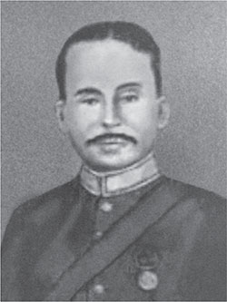
Dr Ambedkar’s father Subedar Major Ramji Maloji Sakpal.
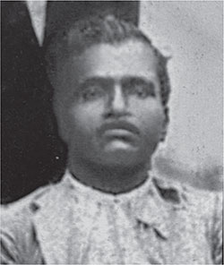
Dr Ambedkar’s eldest brother Balaram Ramji Ambedkar.
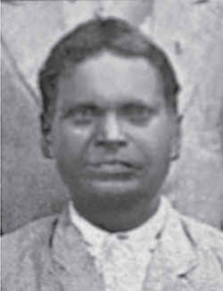
Dr Ambedkar’s next elder brother Anandrao Ramji Ambedkar.
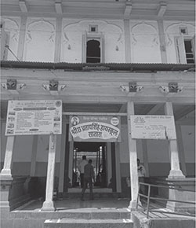
Satara High School (now Pratap Singh High School) Satara, where Bhiva was enrolled in 1900 and studied until 1904, when his family shifted to Bombay.
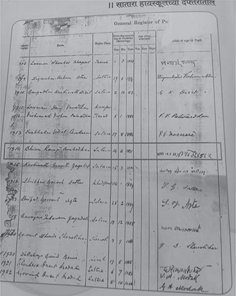
Satara School enrolment register—Dr Ambedkar’s name was noted as Bhiva Ramji Ambedkar.
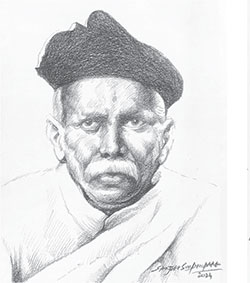
Krishna Keshav Ambedkar, a Brahmin teacher at Satara High School, is said to have changed Bhiva’s surname from ‘Ambadwekar’ to his own ‘Ambedkar’.
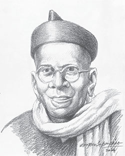
Narayan Malhar Joshi, the teacher in Elphinstone School who supported Bhiva against traditionalist students.
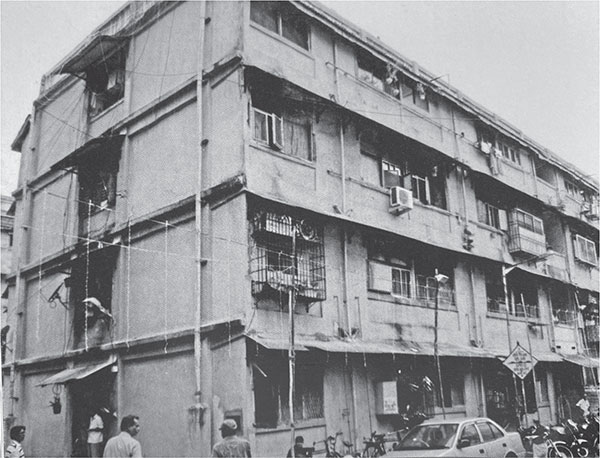
After initially staying at Dabak chawl, Ramji shifted to the BIT chawl in Parel, where Dr Ambedkar stayed all through his formative years until 1933. The chawl (in pic) as it stands today.
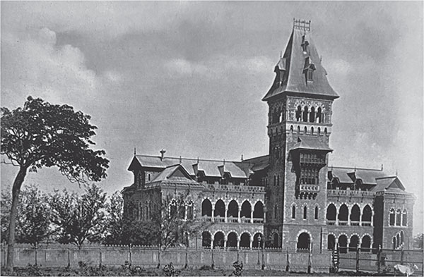
Elphinstone High School, Byculla, wherein Bhiva was enrolled on 3 January 1905 and passed his matriculation examination.
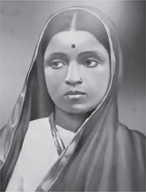
Bhagirathi alias Parvati alias Rami, an orphan daughter of Bhiku Dhutre Wanandkar, whom Bhiva married. She would be known as ‘Aaisaheb’, similar to how Dr Ambedkar was called ‘Babasaheb’. She was referred to as ‘Matoshri Ramabai’ or ‘Ramai’ after she died in 1935.
Elphinstone College Mumbai where Bhiva studied for his BA degree from 1908 to 1913.
Krushnrao Arjun alias Dada Keluskar, a Maratha-Kunbi by caste, was a follower of reformist Jyotiba Phule and a leader of the non-Brahmin movement. A noted scholar, Dada Keluskar wrote biographies of Shivaji Maharaj, Saint Tukaram and Gautam Buddha which had a lasting impact on Ambedkar’s mind. He was a friend to Dr Ambedkar’s father and a great benefactor and mentor to Dr Ambedkar. He helped a young Ambedkar get scholarships from Baroda State for college education in India and thereafter higher education in the United States and the United Kingdom.
Ravbahadur Sitaram Keshav alias Babasaheb Bole was a noted social reformer and legislator. He was the one who felicitated Bhiva after clearing his matriculation exam with Keluskar as the chief
guest at the function. His resolutions on Khoti system and opening of all public watering places, wells, dharmashalas, etc. to the Untouchables would inspire struggles at Mahad and the anti-Khoti
agitation.
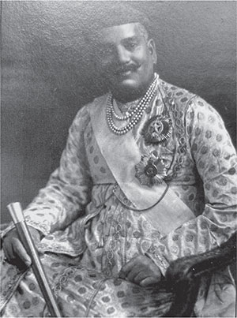
Maharaja Sayajirao Gaekwad III, a reformist king of Baroda helped Dr Ambedkar access higher education. He granted Ambedkar a scholarship for his college education and later for higher education at Columbia University and the London School of Economics.
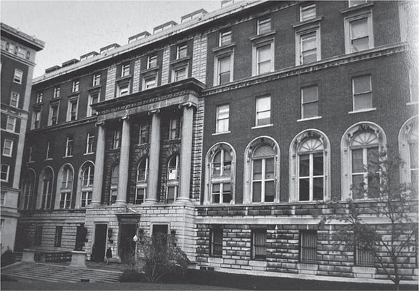
Dr Ambedkar enrolled in Columbia University (in pic) in September 1913. Here, he would get his MA (1915) and PhD (1927) and intellectual moorings.
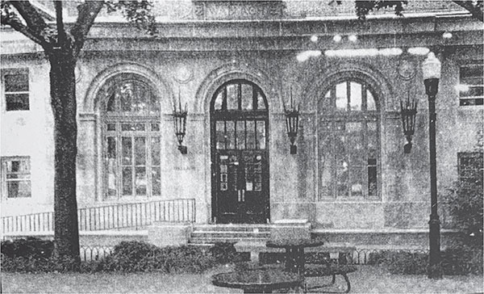
Wallach (previously Livingstone) Hall, one of the oldest dorms of the Columbia University. It is here that Dr Ambedkar shared a room with his Parsi friend Naval Bathena.
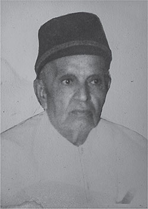
Nawrosji alias Naval Bhathena (pictured in his old age) became friends with Dr Ambedkar while at Columbia University. He supported Ambedkar with finances and with his social capital during his struggling days.
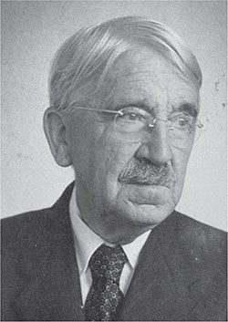
Prof. John Dewey, one of the founders of American Pragmatism was Ambedkar’s teacher at Columbia, of whom Dr Ambedkar would say: ‘I owe my entire intellectual life to Prof. John Dewey.’
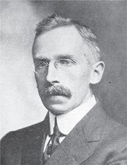
Dr Ambedkar shared American scholar of history, James Harvey Robinson’s scepticism about socialism in full measure.
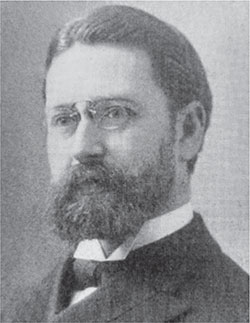
Dr Ambedkar has described Prof. R.A. Edwin Seligman, his guide for PhD, ‘as a teacher who gave him his first lessons in the theory of public finance’.
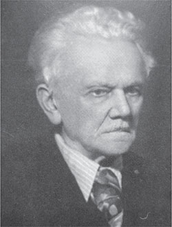
Prof. Alexander Goldenweiser who taught four anthropology courses to Dr Ambedkar, had an influence against racial fixity, which was so much in vogue then.
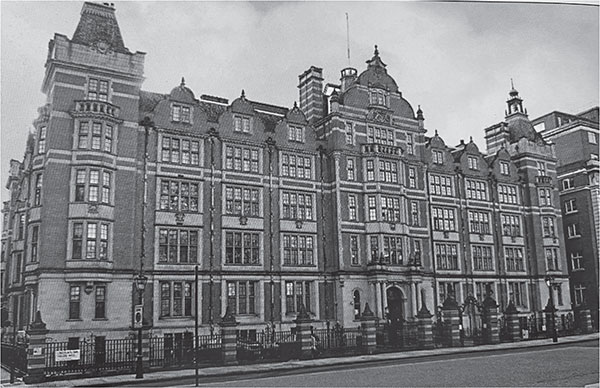
London School of Economics, where Dr Ambedkar enrolled for a master’s degree in October 1916, and earned his MSc in 1916 and DSc in 1923.
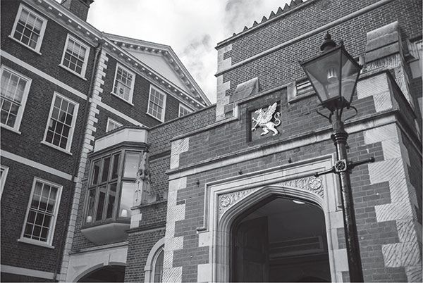
Grey’s Inn where Dr Ambedkar studied law and earned Barrister-at-Law in November 1916.
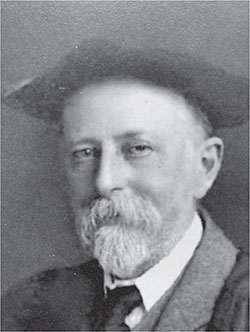
Prof. Edwin Cannan, a British economist and historian of economic thought, was Ambedkar’s guide for his MSc and DSc at LSE.
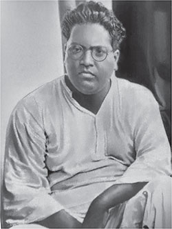
Dr Ambedkar pictured after he returned from London in 1918.
Second Phase (1919–1927): Making of the Legend: From Bhimrao to Babasaheb
After the report submitted by Edwin Montague, the secretary of State for
India and Lord Chelmsford, the viceroy to the British Parliament, the Southborough Committee was appointed to recommend how electorates should be formed to implement the report. When the Committee toured India in 1918–1919, Ambedkar got an opportunity to make his first political presentation. He was invited by the Committee to give evidence on 27 January 1919, along with Vitthal Ramji Shinde, a Maratha, who had endeared himself to Dalits on account of his devotion to their cause through his Depressed Classes Mission, and Ganesh Akkaji Gavai, a Mahar leader from Amravati. Gavai made a strong plea on behalf of the Depressed India Association for three seats in the Bombay Legislative Council, to be elected by adult suffrage. Ambedkar, who testified to the Committee without any support, spoke as an advisor to the British on issues of franchise in India, and also as an exponent of the rights of the untouchables.1 This was his first well-argued essay in political writings, in which he stressed the need for providing adequate legal–constitutional protection to those socially victimized as Untouchables. Besides insisting on the regular replacement of the governing elite, he also talked about ‘one man one vote’ arguing that ‘a popular government is not only Government for the people, but by the people as well’.2 The evidence comprised a written statement and also an oral presentation on 27 January 1919.3
Brush with Politics
The written memorandum submitted by him to the Southborough Committee marked him as the leader of the Depressed Classes though he did not represent any of their organizations. He pointed out that the Untouchables were always ignored by every political scheme on the grounds that they had no interests to protect, as they possessed no property. He forcefully refuted it by arguing that they had their persona to protect as their very existence was being obliterated by the unjust social order that denied them civil rights. He demanded separate electorates to protect their interests. He strongly argued that the interests of the Untouchables could be represented by the Untouchables alone. Untouchability constituted a definite set of interests which only the Untouchable could speak about and therefore, they must be given such number of representatives as will constitute a force sufficient to claim redress.4 He demanded nine seats in proportion to their population in the Bombay Legislative Council.5
Ambedkar noted that the Untouchables were slaves because they were socialized in such a way that they could not think of improving their miserable lives. In reality, untouchability was the epitome of their ills and sufferings. The memorandum noted their condition in the minutest details. He argued, ‘The right of representation and the right to hold office under the state are the most important rights that make up citizenship. But the untouchability of the Untouchables puts their rights far beyond their reach.’6 The memorandum examined the scheme by the Congress that accepted communal electorate for Muslims but denied it to the untouchables. It suggested a general electorate for the Untouchables. The memorandum ridiculed the suggestion and described it as ‘betraying signs of mental aberration or a mentality fed on cunning’.7 ‘. . . it must never be forgotten that the Congress is largely composed of men who are by design political Radicals and social Tories. Their chant is that the social and political are two distinct things having no bearing on each other. To them the social and the political are two suits and can be worn one at a time as the season demands.’8 Referring to the Congress Moderates’ suggestion to nominate one or two representatives of Untouchables, he asked, ‘How can one or two Untouchables carry a legislative measure to improve their condition or prevent a legislative measure worsening their state?’9
V.R. Shinde, on behalf of the Depressed Classes Mission, presented his evidence, proposing the scheme in which the elected members of the council would co-opt the Depressed Classes representatives. Ambedkar bitterly criticized this scheme saying that the members nominated by the Council would act as puppets in the hands of its elected members. He lamented that the Mission started with the intention of emancipating the Depressed Classes from the social tyranny of their high caste masters, has ‘evolved into a scheme which will keep the Depressed Classes eternally depressed without any hope of deliverance’.10 Ambedkar was also irked with Shinde’s suggestion that to be able to avail of the franchise of Depressed Class, an individual must have cleared the fourth standard school exam and have an income of Rs 144. In view of the few opportunities for education and employment, he saw these conditions to be unreasonable. He put forward three important principles that guided the future course of his political strategy: 1) unless the Depressed Classes got their own political representatives, it would be difficult to eradicate untouchability; 2) the Depressed Classes’ representatives in the Council should be nominated by the government and not by the majority members of the Council because at that point they were the main adversaries of the Untouchables; 3) in order to ensure their free political development, the Untouchables should be given separate electorates.11
The committee and the press paid no attention to Ambedkar’s arguments. While the committee accepted separate representation of Untouchables in principle, it rejected the demand on practical grounds. The committee eventually recommended that out of the total of 791 seats in the legislatures of eight major provinces (Madras, Bombay, Bengal, United Provinces, Punjab, Bihar and Orissa, Central Provinces, and Assam), seven seats should be filled by Untouchables through nomination.12 For Bombay, it recommended only one seat; the number was later increased to two. While it has been as stingy about the demand of the Untouchables, the Government of India Act of 1919 and the rules made under it had readily granted separate electorates to Muslims across India, to Sikhs in Punjab, Indian Christians in the Madras province, and Europeans and Anglo-Indians in several provinces. Further, Non-Brahmins and Marathas were also granted reserved seats in general electorates in the Madras and Bombay provinces, respectively.13
Mooknayak
The Southborough Committee’s invitation had given a new turn to Ambedkar’s life. He felt a need for a paper, which would become the voice of the Depressed Classes. Another maharaja, Shahu Maharaj of Kolhapur, a relation of Sayajirao Gaekwad of Baroda, whose unusual financial help had led an ordinary Mahar lad to become a Dr Ambedkar came to his help.
Dalit newspapers in Maharashtra were the legacy of Jyotiba Phule’s Satyashodhak movement. Phule along with his friend K.R. Bhalekar had started a paper Din Bandhu in January 187714 as the first newspaper in India to cater explicitly for the lower strata of society.15 In its heydays, it was the second-highest circulation Marathi or Anglo-Marathi newspaper in the Bombay Presidency, after Kesari.16 Taking inspiration from Jyotiba Phule, his disciple, Gopal Baba Walangkar, whom Ambedkar considered a pioneer of the Dalit movement, began publishing the monthly journal titled Vital-Vidhvansak (Destroyer of Ceremonial Pollution), which was the first to have the Untouchable people as its target readers.17 Thereafter, Shivram Janba Kamble started a monthly, Somavanshiya Mitra on 1 July 1908 in Pune. In 1910, Kisan Faguji Bansode, started a Marathi Weekly, Nirashrit Nagrik from Nagpur. Kshirasagara (1994) lists similar initiatives by Dalits from outside Marathi-speaking areas.18 In 1893, R. Srinivasan (1860–1945) started a magazine, Parayan, in Madras; in 1907, Pandit C. Iyothee Thass (1845–1919) started a weekly on 9 June 1907, Oru PaisaTamizhan later known simply as The Tamilan19 that had wide circulation not only in India but also overseas countries like Sri Lanka, Burma, Singapore, and South Africa; In the year 1909, Rashbehari Roy aka Roy Pandit had started Namsudra Darpan from Calcutta.20 In 1916, Bharat Chandra Sarkar started Namsudra Hitaisi from Calcutta;21 Mukund Behari Mullick started from Calcutta Flag on 31 December 1918;22 an English monthly The Pancham was started by J.S. Muthaiah, an Untouchable member of Manya Sangham, a caste organization, from Hyderabad.23 In the same years as Ambedkar started the Mooknayak, Nanasaheb Gavai of Amravati started a monthly, Bahishkrut Bharat.24
The Mooknayak carried a quatrain by Bhakti-poet Tukaram on its mast which translated approximately as follows:
What for should I keep quiet fearing respect now,
Undoubtedly I opened my mouth and raised voice. No one in the world understand the voiceless,
Nothing is to be achieved by feeling shy.
Mooknayak’s office was located at 14, Hariharwala Building, Dr Batliwalla Road, Poybawadi, Parel in a working-class area. Since Ambedkar was employed as a professor in a government college, he could not be its official editor. Pandurang Nandram Bhatkar, an undergraduate person of the Mahar caste, from Amravati, was named its editor. However, Ambedkar wrote editorials himself for the first fourteen issues, voicing the expectations and aspirations of the Depressed Classes. The format of the Mooknayak was designed to have a major theme and comments on other subsidiary issues. In the first issue, Ambedkar wrote about his ‘manogat’ (intent) behind the venture: ‘There is no instrument like a newspaper for suggesting remedies for the atrocities that are happening and shall be happening on our excluded (bahishkrut) people and for discussing their future progress and means to achieve it. But if one looks at the newspapers being published in the Bombay province, one finds most of them being promoters of the interests of a particular caste. They just do not bother about the interests of other castes. At times, they voice things which are injurious to their interests. We would like to issue a word of caution to the editors of such newspapers that if a caste fell behind, the other castes also would not be spared from its adverse impact. Society is like a boat. If a passenger travelling in a boat makes a hole into the boat with the intention either to cause damage to or make fun of someone or just with his destructive instinct, he also is bound to get drowned sooner or later. In this way, there should be no doubt that the castes that seek to damage the interests of some other caste, directly or indirectly damage their own interests. Therefore, the self-seeking newspapers should not commit foolishness of causing damage to the interests of other caste.’ 25
He named some newspapers with respect, which reflected this wisdom and gave regular space for the discussion of the Depressed Classes’ issues. They were: Deenmitra, Jagruk, Deccan Rayat, Vijayi Maratha, Dnyanprakash, Induprakash and Subodh Patrika. ‘Still, it is not possible for them to spare enough space devoted to the discussions of the issues of the Untouchables. Anyone would agree, in view of the complexity of these issues, with the need for an independent paper. This paper is meant to do that.’26
He was critical of the Indian National Congress’s policies which demanded self-government but was apathetic about the enslavement of the Depressed Classes. Therefore, he demanded a package of Swaraj wherein the Depressed Classes would also have a share of political power.27 With regard to the political aspirations of the Untouchables, Ambedkar wrote in the first issue of Mooknayak that India was the museum of inequality. Ambedkar argued that a nationalist consciousness could not be developed by arrogantly ignoring social divisions. He metaphorically compared Hindu society with a multi-storeyed tower with no stairs to connect one storey to the other. Each storey represented an individual caste.28 This metaphor, uncritically used (and widely), however, is not accurate in representing the reality of castes. It may be corrected as a tower with five storeys without interconnection, each housing innumerable castes in contention among themselves for virtual superiority but leaving the actual superior castes at higher storeys unchallenged.29 He argued that such a society which forecloses opportunities for individuals to intermix across castes was detrimental to national unity. As a result, such a society would only propagate indifference, hierarchy and violence, leaving no scope for genuine national unity.30 He would further write, ‘The feeling of inequality among castes is not based on merit or demerit of individuals. The man born in a high caste, however unmeritorious he may be, is always regarded as high whereas the man born in a low caste, however meritorious he may be, must always remain low.’31 While sympathizing with the non-Brahmins, who were deprived of authority and knowledge by the social system, he observed that they could avert poverty by earning their livelihood through agriculture, trade and commerce or by State services. But the plight of the Untouchables has been devastating; they being ‘sunk deep into the confluence of feebleness (helplessness), poverty and ignorance’.32 Charging the Congress as being caste-blind, he declared it could not bear the moral right to demand Swaraj from the British. Ambedkar exhorted the readers to stay away from the nationalist movement, which would culminate in the ‘rajya’ of caste Hindus over the rest of the population. While he was in favour of freedom from British rule, he told his readers, they should make a demand for a form of Swarajya that would be, ‘to some extent, their rajya’.33 This objective could be met, he thought, through reservation for the Untouchables in legislative bodies.
Untouchables Get a Leader
Shahu Maharaj was perhaps aware that Mooknayak was not enough to launch Ambedkar as the leader of the Untouchables. He, therefore, encouraged Appasaheb Patil, a young designate patil of Mangaon, who belonged to the Jain community but was active in the Satyashodhak movement to help Dalits of his village to organize a ‘South Maharashtra Depressed Classes Conference’ at Mangaon, a village about 20 kilometres from Kolhapur and invite Ambedkar to preside over it. Shahu Maharaj himself went to Mumbai to personally invite Ambedkar to the conference. Despite stiff opposition from the caste Hindus, nearly 5000 Untouchables attended the conference on 21 March 1920. It was the first public meeting addressed by Ambedkar, which marked the beginning of his active political career. Ambedkar stayed for two days in Mangaon village and delivered a powerful speech at the conference, exhorting Dalits to fight against the unjust social system. Shahu Maharaj in his speech, declared in a prophetic vein: ‘You have found your saviour in Ambedkar. I am confident that he will break your shackles. Not only that, a time will come when, so whispers my conscience, Ambedkar will shine as a front-rank leader of all-India fame and appeal.’34 This inspiring statement famously attributed to Shahu Maharaj in an article written thirteen years after the event and eleven years after Shahu Maharaj’s death may be the writer’s imagination as it does not find a place in the detailed report on the conference published in Mooknayak.35 The conference passed a fifteen-point agenda for Dalit rights and freedom. The most important ones were the right to free education and the abolishment of untouchability. The conference ended with an inter-caste dinner attended by the Shahu Maharaj, his state officials, the jagirdars and others. After the conference, the savarnas in the village, mostly from the Jain community, began a social boycott against the Dalit community, as well as against Appasaheb Patil. They called off the boycott only after Shahu Maharaj stepped in.36
The Mangaon conference was followed by another significant meeting—the first All India Depressed Classes Conference at Nagpur from 30 May to 1 June 1920. It was organized by Ganesh Akkaji Gavai; Shahu Maharaj presided over it and Ambedkar was invited but not as a speaker. V.R. Shinde, who had a considerable following among the Dalits in Vidarbha, had sent in his representatives to the conference to get his proposition before the Southborough Committee accepted. It related to the selection of the representatives of the Untouchables by the members of the Legislative Council and not by the government or by the institutions belonging to the Untouchables.37 Ambedkar thought it was cunning to keep the Untouchables dependent upon the upper castes as had been the norm before. He boiled with anger at the temerity of Shinde’s emissaries. During the debate over this proposition, Ambedkar’s skills and presence of mind as a debater and his ability as a prospective leader were seen to a remarkable degree. He made a scathing attack on Shinde for his evidence before the Southborough Committee and made the conference pass a resolution of no confidence against his Depressed Classes Mission. He thundered that only Dalits could emancipate Dalits and dismissed the upper-caste reformers taking up cudgels for the Depressed Classes. He believed that however hard caste Hindus might work for their upliftment, they did not know the Dalit mind.38 That is why he was opposed to any organizations started by caste Hindus for the upliftment of the Depressed Classes. He argued that no Untouchable representative chosen by a caste Hindu majority could ever move against the wishes of the Hindus.39 He believed that the proposition would lead to the political enslavement of the Untouchables in addition to their social enslavement. Ambedkar was very firm about his postulates. He declared: ‘Institutions and individuals have no right to defend the interests of Depressed Classes if they are not run by untouchables.’ Thus, the Nagpur Conference laid the foundation for Ambedkar’s future work.40
A Coup against Shinde
As Gopal commented, it was a stunning coup against the organizer by one who was not even to be a speaker.41 His powerful speech at this conference conclusively established him as a leader of the Untouchables displacing the leadership of Shinde, who until then, had a great influence on them. The Nagpur conference allowed Ambedkar to turn the eyes of the Untouchables from Shinde’s Depressed Classes Mission. This was his first victory in public life. Shinde’s political career as a representative of the Untouchables was rather finished by the end of this conference, though the final blow came only later (which was after Ambedkar returned from London a second time) when Untouchables students in his hostel revolted against his autocratic ways.
Shinde was a well-respected social reformer and was well-connected with the leading politicians of the day. His contribution in highlighting the problem of untouchability has been immense. In 1908, he wrote the first-ever survey of the Untouchable population of India titled ‘Bahishkrut Bharat’ (ostracized India), the term that would soon gain currency and be used by many including Ambedkar. For several years, Shinde tried to get the Congress to pass a resolution on untouchability,42 but succeeded only during the December 1917 annual session of the party. Then, it passed a resolution for the removal of all ‘disabilities imposed by customs on the DCs’. Interestingly, notwithstanding his offensive against Shinde, Ambedkar also acknowledged Shinde’s scholarship: Bahishkrut Bharat carried Shinde’s articles on the Untouchables in Myanmar43 and the educational status of Untouchables in East Bengal44 with such respectable prefix to his name as ‘Karmaveer (brave performer of duty) and Guruvarya (great guru). While the opposition to Shinde’s proposition was arguably justified, the postulate that only Dalits could work for Dalit emancipation was problematic as it would induce an identitarian and sectarian obsession among Dalits. As a matter of fact, it would thwart the materialization of even ‘Dalit’ because of the centripetal or inward orientation of caste, the harsh reality that even today, as it was then. Since, the Untouchables who came to the conference were all Mahars and they too were walled within their respective sub-castes, at the end of the conference, Ambedkar had to call upon all Mahar leaders to unite by transcending their sub-caste identities by participating in an inter-subcaste dinner organized in the conference. Although this sub-caste consciousness has considerably waned over the years, it has not completely disappeared. Beyond Mahars, all erstwhile Untouchable castes haven’t coalesced into ‘Dalits’. Only the most populous caste among the Untouchables (like Mahars in Maharashtra) which identified with Ambedkar as their caste-man have claimed that identity. Arguably, the meliorative strategy necessitated a reverse approach: building bridges to the Shudra castes, the most populous victims of Brahminism, so simply and brilliantly expressed by Jyotiba Phule by his ‘shudra-atishudra’ category. Shinde could have been useful in pursuing such a strategy. Despite the later ‘bahujan’ clamour, the Shudra castes have been left out of the anti-caste net, to wear the mantle of Brahmanism and emerge as the main oppressors of Dalits. It was a matter of time before the Hindutva forces would win them over and use them as the main prop of their movement for a ‘Hindu Rashtra’, the spectre that threatens to negate every value Ambedkar upheld.
Back to London
Although Ambedkar had already entered public life, he did not let himself forget for a moment his immediate goal of getting back to London to complete his studies well before the expiry of four years. He managed to save money from his salary, got Rs 1500 from the Shahu Maharaj of Kolhapur,45 took a loan of Rs 5000 from his friend Naval Bathena,46 and left for London on 5 July 1920 by a steamer, City of Exeter, to complete his studies of MSc, DSc at London University and Bar-at-Law at Gray’s Inn. He had left some money with his wife to take care of the household.
While leaving for London, it was decided that Pandurang Bhatkar would run Mooknayak as per the advice of the management committee. But Bhatkar, who was working in Bombay Port Trust proved to be a lazy person. He left Mumbai for his village in Vidarbha prompting Ambedkar in 1920 to appoint another Mahar, Dnyandeo Dhruvnath Gholap, a resident of Sagvan village in Satara district. Ambedkar would occasionally take out time from his flogging schedule of studies to write suggestions for Mooknayak. Gholap, who had studied up to English fifth standard, had dropped out and taken a job in Port Trust. However, unlike Bhatkar, he was quite interested in social work and had an affinity for reading and writing. When Ambedkar was preparing his testimony before the Southborough Committee, Gholap had collected a lot of data for Ambedkar. Gholap had lived previously in hostels of the Depressed Classes Mission in Pune and Mumbai during his schooling and due to that association and his appointment as the editor of a periodical, Chandavarkar recommended him as one of the DC members to be nominated to the Bombay Legislative Council.47 The recommendation was accepted, but Chandavarkar’s choice backfired. Both Gholap and Shivtarkar used Mooknayak to launch a strong attack on Shinde.48 They wrote harshly worded articles, accusing him of misappropriation of funds and ill-treatment of Depressed Class students, forcing Shinde to consider withdrawing from the Mission.49 Shinde effectively lost his standing among the Depressed Classes and due to his independent views, he could not find acceptance in the Prarthana Samaj, the non-Brahmin movement or the Congress. For some years, he worked as a Brahmo preacher and a Gandhian before being forced to withdraw from public life in the early 1930s due to rheumatism and diabetes. He died on 2 January 1944 reportedly disillusioned and embittered, unable to sustain a position as a pro-Hindu nationalist Maratha caught between the cultural arrogance of the Brahman elite and a Dalit movement determined to fashion its own path.50
Ambedkar resumed his studies in September 1920 at the London School of Economics and Political Science and also kept terms for the Bar at the Gray’s Inn. So as to not run out of money, he adopted a punishing schedule, reading in libraries (University General Library, Goldsmith Library, British Museum Library, and India Office Library) from 8 a.m. to 5 p.m. and thereafter at home with minimum possible sleep and food. He had taken his lodgings at 95 Brook Green, Hammersmith, London, in an affluent neighbourhood as a paying guest at a semi-boarding house conducted by a lady, whom he would describe as a ‘terrible lady’. She would offer her boarders a frugal breakfast consisting of a piece of fish, a cup of tea and a piece of bread sprinkled with little jam. He would just supplement this paltry breakfast with a piece of bread in lieu of lunch in a brief interregnum in his library research.51 Ambedkar claimed he subsisted on a monthly budget of £8. He sat devouring volumes of old reports in libraries and took down voluminous notes. This taxing daytime work was followed by an evening walk in the open air for about half an hour and then dinner at the house of the ‘terrible’ lady, which of course was equally Spartan.
His PhD guide Prof. Seligman from Columbia University wrote to Prof. Herbert Foxwell, teaching at LSE, asking him to help Ambedkar in his research. In November 1920, Foxwell wrote to the School Secretary, Mrs Mair: ‘I find he has already taken his doctor’s degree & has only come here to finish research. I had forgotten this. I am sorry we cannot identify him with the school but there are no more worlds here for him to conquer.’52 It was not quite true because although he had completed the coursework for his PhD, he had not submitted his dissertation to the university. Rather his sojourn to London was intended to collect data for it. Therefore, until he went back to London in 1920, he had just an MA in economics from Columbia. His application for admission to LSE, in 1916 clearly mentions his educational status as MA.53 Probably, Foxwell was misled by Seligman writing loosely that Ambedkar had ‘passed his examination for the Doctor’s degree with considerable distinction’ and Ambedkar’s application in 1920 that he was a PhD. In reality, there was no change in his status concerning his Columbia PhD; he was just one who completed all but his dissertation.
Besides reading through voluminous books in libraries, if he came across any important reference, he would be tempted to read the original book and begin his search across libraries in London and also the shops selling old books. He would end up buying such old books at a huge cost. With such unbudgeted expenses, his balance would deplete, and he would further intensify austerity in his lifestyle.
The Reality Back Home
While leaving for London he had left some money with Ramabai which lasted the family for about a year and a half. The conditions back home were getting increasingly precarious financially. After Ambedkar’s departure, the family was left with no elderly male member. All members of the family, Ramabai, her siblings (Gaura and Shankar), her co-sister Laxmibai, and their children (Yashwant and Mukund) all slogged on stray jobs for sheer survival. Ramabai’s younger brother and sister worked as a labourer and brought some money. Ramabai, Yashwant, Laxmibai and Gaura also did miscellaneous petty jobs to fetch some money to feed the family. Their heart-rending saga can be glimpsed through some of the letters he wrote in those days.54 In September 1921 Shahu Maharaj had written to him, voluntarily offering financial help should he or Ramabai need it. Either the letter reached him late or he decided to hold on as his correspondence with Ramabai in November 1921 read quite pathetic.
Ramabai had written to him that she had exhausted all the money and there was none left to treat Yashawant and Gangadhar, both of whom were ill. He wrote back on 25 November 1921 saying that he himself did not have enough money for even food and advised her that she should sell off her ornaments to meet the expenses. Nonetheless, he sent Rs 100 along with the letter, adding to his own woes. Ultimately, Ambedkar sought financial help of Rs 750 for his household from Shahu Maharaj vide his letter on 26 January 1922. Which was remitted on 18 February 1922.
Looking at the condition of the family, some activists offered help, but Ramabai declined it. They approached Balaram, his eldest brother, who lived independently and requested him to stay with the family. Balaram went to live with the family in 1922. He was employed as a head clerk in Municipal Water Works at a salary of Rs 120 per month. It proved a big support for the ladies, Ramabai and Laxmibai, in running the household. The financial problems at both ends were endemic but he was lucky to have willing sources in Shahu Maharaj and his friend Naval Bathena to tide them over.55
Mr Ambedkar, Bar-at-Law
The same year, his thesis Provincial Decentralization of Imperial Finance in India was accepted for the award56 of MSc (Economics) degree by the London University. It was published in 1923 as TheEvolution of Provincial Finance in British India: A Study in the Provincial Decentralization of Imperial Finance by P.S. King & Son Ltd., Westminster, with a foreword by Edwin Seligman, eulogizing it as ‘. . . nowhere, to my knowledge, has such detailed study of the underlying principles made.’57 He had yet not decided about his PhD dissertation. After his resuming studies in London, Prof. Seligman had enquired about it in one of his letters dated 23 September 1920 whether he was ever going to finish his doctoral dissertation.58 On 16 February 1922, i.e. six years after leaving Columbia, Ambedkar wrote to Prof. Seligman, explaining that he had lost the manuscript of his original thesis when the steamer carrying it was torpedoed on his way back to India in 1917. Instead, he had written a new thesis titled The Stabilization of the Indian Exchange and expressed his intention to submit it for the PhD at Columbia University, with Prof. Seligman’s permission.59 This claim appears to be a subterfuge, too farfetched to believe, as it is unlikely that one would book such a valuable thing as a draft of a PhD thesis in one’s luggage on a steamer and inform one’s PhD advisor about it after six years. The truth may be that Ambedkar made little progress on the thesis, despite coming to London primarily to collect data for it. He did not have time for the latter because, in addition to pursuing an MSc, he had enrolled himself for a law degree. The letter suggests that he toyed with the idea of submitting a version of his research for a DSc at LSE as the thesis for his PhD at Columbia. However, what he actually did was submit a slightly revised version of his MSc thesis for his PhD. This altered version, expanded with four additional chapters, faced multiple rejections but was eventually published in 1925 by the same publishers under the same title. Ambedkar dedicated it to Sayajirao Gaekwad, the Maharaja of Baroda, as a token of gratitude for his support in his education. He submitted this book as his PhD dissertation. Much before that, he was called to the Bar and published as a barrister in the Order Books of Gray’s Inn on 28 June 1922.60
Despite the existing burden of studies for MSc and Bar-at-Law and his precarious finances, Ambedkar went to Bonn after borrowing Rs 2000 to buy German Marks from his friend, Bathena, and registered with the Bonn University on 29 April 1921, just six months after his return to London. As per his application in German, it was for another PhD degree under Prof. Hermann Jacobi, who was a leading German Indologist. Earlier, he had sent in his handwritten letter in German on 25 February 1921, to the Prussian Ministry of Science, Fine Arts and Public Education, requesting to enrol in a course of study for economics at the University of Bonn. The mention of ‘Economics’ in the application appears to be only for the purpose of getting permission from the ministry. His real intention was to study Indology under Jacobi. He claimed that he would be free from studies at London University by March which was just a month away and hence clearly impossible. The ministry in Berlin had granted him permission. The entire Bonn-episode appears ordinarily incomprehensible except for his probable plan to terminate his studies at LSE after his MSc and complete the Bar-at-Law by the end of 1921. With the certainty of a PhD from Columbia sooner or later, another doctoral degree in economics did not make much sense. Instead, with the brush with politics during his stay in India, he might have imagined that knowledge in Indology would stand him in good stead in building the anti-caste arguments. But his estimation went awry. He completed his M.Sc. in 1921 and was awarded Bar-at-Law in 1922. Hence, he had to drop his plans and instead continue with his DSc research under Prof. Edwin Cannan. As he did not sign any lectures or attend any classes, his name was taken off the Bonn University register on 12 January 1922.
At Last, ‘Dr’ Ambedkar
He submitted his thesis The Problem of the Rupee: Its Origin and Its Solution for DSc in October 1922. It was not recommended for acceptance and was returned for revision. Reports claimed, mainly based on Keer’s story,61 that the thesis was too critical of the government and offended the British imperialist examiners. But there is no indication of such remarks in Ambedkar’s student file.62 Keer’s associated story that Ambedkar, who had gone to study at Bonn for a quarter of the year in March 1923 was called back to London by Prof. Edwin Cannan ‘as the terse exposition in his thesis had offended the British imperialistic examiners’63 is proved conclusively wrong because, as discussed before, his name was stuck off the Bonn University register on 12 January 1922 itself and even his guide-to-be, Prof. Jacobi, had already retired in the same year. Moreover, as Aakash Singh Rathore observed, since LSE was a den of Fabian socialists with an anti-imperialist bent, the assumption that his dissertation examiners were imperialists is in itself prejudicial and problematic.64 The rejection could have been quite academic as Ambedkar had proffered adventurous inferences that contradicted the stalwarts of the times like Keynes. Even after accepting the thesis his guide explicitly stated in his foreword that he had reservations in agreeing with his conclusions.
Keer similarly records another incident trying to insinuate Ambedkar as a radical in the imperialist surroundings. In London University, as per the prevailing custom, each graduate student had to read a paper before the Students’ Union. As per Keer, in 1921, Ambedkar read a paper on ‘Responsibilities of a Responsible Government in India’, which ‘had caused a stir in the academic world and Ambedkar was suspected to be an Indian revolutionary’.65 There is absolutely no evidence for this assertion as neither this paper nor any reference to it anywhere has been located so far. His teacher, Harold Laski, is said to have felt it to be too revolutionary to be institutionally permitted for discussion among students. Ambedkar’s student file does not mention any of this.66 LSE, contrary to Keer’s imagination, was the den of Fabians, who were surely socialists though not Marxists. And Harold Laski was certainly a staunch socialist who was to become a leader of the Labour Party. It is simply unbelievable that he would think or speak in this manner.
Ambedkar’s thesis is related to the examination of the theoretical basis for the establishment of the gold exchange standard in place of the gold standard. Ambedkar examined the ‘most neglected period of Indian currency’ from 1800 to 1893, which had been marked by great instability in the money market. On the theoretical side, he opposed ‘almost every proposition’ advanced in favour of gold-exchange standard by John Maynard Keynes in his Indian Currency and Finance (1912). The main argument of Keynes was that the gold exchange standard was ideal as it allowed India to economize its use of gold and increase the supply of the rupee according to the needs of the domestic market. Ambedkar countered that the system had led to an emphasis on exchange stability at the cost of stability of the domestic value of the currency.67 We do not know the revisions advised by Prof. Cannan, but Ambedkar estimated they could take two to three months, for which he did not have money to stay. Therefore, he decided to do it from India and returned on 7 April 1923.
Till August 1923, he worked on revising his thesis, The Problem of Rupee: Its Origin and Its Solution, for resubmission. Dada Keluskar’s younger brother, Sitaram Arjunrao Keluskar, helped in the matter of making two sets of the revised thesis. Only after sending them to London University in August 1923, could he focus on his legal practice. The thesis was accepted in November 1923 by the London University and was published almost immediately in December 1923, by the London-based P.S. King & Son Ltd. In the preface, Ambedkar expressed his ‘deep sense of gratitude’ to his teacher, Professor Edwin Cannan and gratefully noted his help in saving him from errors. Cannan repaid the complement by writing the foreword to the thesis in which he said:
As [Ambedkar] is aware, I disagree with a good deal of his criticism. In 1893, I was one of the few economists, who believed that the rupee could be kept at a fixed ratio with gold . . ., and I did not fall away from the faith . . . I do not share Mr. Ambedkar’s hostility to the system, nor accept most of his arguments against it and its advocates. But he hits some nails very squarely on the head, and even when I have thought him quite wrong, I have found a stimulating freshness in his views and reasons. An old teacher like myself learns to tolerate the vagaries of originality, even when they resist “severe examination” such as that of which
Mr. Ambedkar speaks.68
The Problem of Rupee received rave reviews in many journals and periodicals. The Times (London) described the book as an ‘excellent piece of work. English style is easy; and his knowledge of his subject obviously very full . . .’. Economist (London) said, ‘It is a clear and ably written book. Certainly, none of the other numerous works on one or the other aspect of the monetary problem have anything like the readability of this tract.’ Another journal, Financier remarked, ‘Ambedkar deals with the problem in a very lucid and praiseworthy manner and puts forward not merely its origin, but also valuable proposals for a solution, which should be studied by bankers and those merchants whose business depends upon the exchange.’69
In his thesis, he argued that developing countries like India could not afford gold exchange standards, as it increased the risk of inflation and price rise which was detrimental to the interests of the majority of people. He proved with statistics data and reasons how the Indian Rupee had lost its value in terms of its purchasing power. He suggested that government deficits should be regulated, and money should have a circular flow. Ambedkar’s main argument in favour of the gold standard was that it ensured price stability vis-à-vis the gold exchange standard which ensured exchange stability. He argued that the primary objective of the monetary system should be price stability, which protects the living standards of the people, and not exchange stability. Economists including his guide Prof. Cannan were not sure. Over the years, the gold standard has lost its sheen and even its theoretical support. In a recent survey of thirty-nine economists conducted by Kent A. Clark Centre from Global Market of Booth School of Chicago University,70 the vast majority (93 per cent) agreed that a return to the gold standard would not improve price stability and employment outcomes. Two-thirds of economic historians rejected the idea that the gold standard ‘was effective in stabilizing prices and moderating business-cycle fluctuations during the nineteenth century’.71 Moreover, the consensus view among economists is that the gold standard helped prolong and deepen the Great Depression.72 Historically, banking crises were more common during periods under the gold standard while currency crises were less common.73
The gold standard was supported by many followers of the Austrian School, free-market libertarians, and some supply-siders.74 Actually, the gold standard was a monetary arrangement compatible with laissez-faire capitalism implying economic freedom and private property rights of freely choosing individuals.75 Whenever societies have been ‘free to choose’ in this regard,76 they have always evolved to gold or whichever commodity emerges as money from the free interplay of market forces. Since Ambedkar favoured the gold standard, he was thrown into the camp of these laissez-faire capitalist economists. It came in handy for the government to marshal his support to the neoliberal reforms it launched in July 1991. Some vested interests twisted his thesis as monetarist and painted him as the greatest free-market economist.77 Monetary economics or Monetarism claims that money supply is the most important driver of economic growth. As the money supply increases, people demand more, factories produce more, creating new jobs and setting a virtuous cycle towards economic growth. The antidote to inflation was higher interest rates, which in turn reduced the money supply, causing prices to fall as people would have less money to spend. It is the direct endorsement of free market capitalism.78
The relevance of this debate is lost long ago. After the Second World War, a Bretton Wood system to manage world trade, and monetary exchange came into being in which the US dollar was pegged to gold—convertible at $35 an ounce—and other nations had fixed, but adjustable, exchange rates to the dollar. In 1971, Nixon administration suspended the dollar’s peg to gold and effectively ended the Breton Wood system. Since 1973, a free-floating currency market has been the norm, and the US and other countries operate on fiat currencies. With the elimination of the gold standard, the dollar has become the currency of choice for international reserves at many central banks.
Ambedkar’s scholarly pursuit in economics was apparently incongruent with his joining Gray’s Inn. Although unstated, it must have been from the consideration of his personal economics. The high decoration in economics might not guarantee the security of earnings, which may be better assured by legal qualifications like barristership. His brief brush with the issue of Untouchables perhaps enriched the rationale for choosing the legal profession: ‘liberty and free time to perform social work’. He also knew that ‘there is no hope to gain from profession of legal practice as a lawyer because it depends on touchable people’.79 He had registered with the Bombay High Court in June 1923. He thought that solicitors and lawyers would get him cases because of his high qualifications but all the solicitor firms being owned by Parsis, Gujaratis and Maharashtrian Brahmins, ignored him. At the same time, he was getting threatening letters from the Baroda State seeking a refund of Rs 21,000, as Ambedkar had failed to serve the State for ten years as per the condition of his scholarship. This harassment would go on for a full fifteen years until 1932 when Ambedkar met Maharaja Gaekwad at the Round Table Conference in London and requested him to put an end to it. While starting legal practice was an immediate need, he did not have money even to rent an office. He managed to get a room on the first floor of Damodar Hall in Parel with the help of Narayan Malhar Joshi, one of the main organizers of the Congress-led labour movement—the All India Trade Union Congress.
F/Fanny/Frances Fitzerald?
In London, Ambedkar switched from paying guest accommodation sometime in 1921 to one of the rooms at 10, King Henry’s Road, Hampstead, Primrose Hill, London, NW3 till he returned to India in April 1923. This is the house which has been bought by the Maharashtra government as one of the Panchteerths of Prime Minister Narendra Modi. Ambedkar had become friends with the widowed woman who ran the boarding house. She worked as a typist in the establishment section of the House of Commons. The commonplace information on her is based on Khairmode, who said her name was Fanny (Francis) Fitzgerald; she worked at the India Office, where Ambedkar met her. Professor William Gould, co-editor of a recent book Ambedkar in London through his painstaking research found that there was no one by that name living at the address in the twenty years on either side of Ambedkar’s time in London.80 The one who came closer to the description was one Mrs Frances Proust (née Brooks) who took over the property as the ratepayer after the death of her husband, Gaston Amedee Proust on 17 June 1918. She was not a childless widow living with her mother, as depicted in biographies and even Jabbar Patel’s movie, but was the head of the household and had four children whose ages ranged from two to ten years.81
She saw Ambedkar toiling in the British Museum and was impressed by his intellect and dedication to a worthy cause. She would help Ambedkar in gathering references and typing out notes during his research. When Ambedkar visited London to attend the Round Table Conferences in the 1930s, she helped him immensely. It was she who sent all his books in London to Mumbai when he returned. Although Ambedkar’s letters to her are not available, from her letters to him one can see that they had struck up a close and romantic relationship that continued over the next twenty or so years, until her death around 1945. There were in all ninety-two letters carefully preserved by him. The letters indicate that perhaps they had planned to get married. It appears from her letters that he had not revealed to her that he was already a married man.82 She had planned to come to India but could not get a visa. He referred to her as ‘F’ and has even dedicated one of his 1945 book, What Congress and Gandhi Have Done to the Untouchables to her. They carry these affectionate words: ‘To “F.”, In Thy Presence is the Fullness of Joy’.
In 2005, Prof. Arun Kamble, one of the founders of the Bharatiya Dalit Panthers, claiming to possess Mrs Savita Ambedkar’s permission to use the letters as he deemed fit, sought to publish eighty letters from F to Ambedkar, written from 1923 to 1943. These letters were obtained by him from S.S. Rege, whom Ambedkar had given for safekeeping. It raised a huge public controversy because of which he had to shelve his plans.83
With the death of Arun Kamble in 2009, the committee tasked to publish Ambedkar’s writings and speeches by the Government of Maharashtra ought to have taken possession of these letters and published them by now. In any case, they should not get lost as they are among the few authentic sources to throw light on his personal life.
Mooknayak Falls Silent
Mooknayak was becoming increasingly popular as indicated by its subscribers rising from 700 to 1000 by 1922. However, it was always beset with financial and managerial problems. Ambedkar’s friend Naval Bathena would often reach out to help it with money and get his industrialist contacts such as Godrej to run their ads in the paper. During his three years’ stay in London, despite paying close attention, Mooknayak suffered acute financial distress and had to be closed. Ambedkar received many complaints against Gholap, who, in turn, had complained about non-cooperation from the Managing Committee, particularly a member, Sitaram Shivtarkar. The other members of the Managing Committee included Balaram Ambedkar, Ambedkar’s elder brother and Sambhaji Gaikwad. Shivtarkar was a Marathi teacher in Parel school, belonged to the Chambhar caste and ranked among the close associates of Ambedkar. The dislike of Gholap for Shivtarkar that surfaced in the Mooknayak episode was shared by many close associates of Ambedkar from the Mahar caste, including Khairmode. Even prominent people like Kajrolkar, Palwankar, Borgharkar, etc. from the Dabholi Chambhar caste were alienated from Ambedkar because he trusted in Shivtarkar, which made him rude and arrogant.84
When Gholap restarted Mooknayak from Satara, Ambedkar dissociated from it publicly. There was an acrimonious exchange between them in public,85 which in a way portended the divisive dynamics in the Dalit movement right from its inception. Through his experience with Mooknayak, Ambedkar learnt an important lesson regarding the management of the newspaper, which he utilized in later years when he established complete control over his subsequent periodicals. Unlike Mooknayak, all of them would carry Ambedkar’s name on their mast.86
Those were difficult times for Ambedkar. He still lived in BIT chawls, Bombay, comprising three-floor buildings, each having about sixty-one-room tenements with common toilets. He did not have a stable financial source and was contemplating taking up a job. Although he was among the best-qualified persons to fill the position of the principal of Sydenham College, he was not appointed in spite of the efforts of R.P. Paranjpye, the then member for education.87 It was during this time that Ramabai gave birth to a son on 15 June 1924. He named this son Rajratna and loved him dearly. Before that, they had two sons and a daughter (Indu), all of them except the eldest Yashwant, had passed away. Their deaths are mostly attributable to the adverse financial condition of the family. Ambedkar was unusually happy at Rajratna’s birth as he was relatively better off financially and dreamed of parenting him well. When his financial condition began looking up, he appointed a Christian nurse to look after Ramabai who also was not keeping good health, and Rajratna. The nurse would visit twice a week. However, Rajratna contracted pneumonia and died of it on 19 July 1926. Ambedkar was deeply pained by his death. His pain is reflected in a letter he wrote to his acquaintance, Dattoba Powar: ‘We have in all buried four precious children, three sons and a daughter, . . . The thought of this is sufficiently crushing, . . . With the loss of our kids the salt of our life is gone as the Bible says, . . . I feel the truth of this, every moment in my almost vacant and empty life. My last boy was a wonderful boy the like of whom I had seldom seen. With his passing away life to me is a garden full of weeds.’88
Lawyering in Bombay
When Ambedkar began his legal practice as a barrister on 5 July 1923 in Bombay High Court, most lawyers thrived on their social capital. Ambedkar did not have any; on the contrary, he suffered from social prejudice. Dada Keluskar introduced him to many lawyers, but to no avail.89
He got a break in a chance meeting with a Brahmin lawyer, Balkrishna Modak, which developed into a profitable partnership on the appellate side. Modak prepared the case documents, and Ambedkar used his rhetorical skills to argue matters in court.90 His first successful case was of Mahar brothers, Uma Valu Jadhav and his brother Laxman, of Adgaon village in Nashik district, who were doing some business. As they suffered losses in 1920–21, they mortgaged their land to a Marwari moneylender.91
Ambedkar succeeded in getting the land back. He received a fee of Rs 600 from Jadhavs.
To succeed on the Original Side, which was lucrative commercial work, one needed strong connections with solicitors. Solicitors, who already favoured European barristers believed to get a better hearing in courts, discriminated against Ambedkar on caste grounds, leaving him to search for work in the mofussil courts.92 In the 1920s, his cases were few and of low value compared to his peers. The contrast comes out starkly in a newspaper article that reported Jinnah representing an insolvency matter of Rs, 2,57,000 on the same day that Ambedkar represented a retired Muslim schoolteacher in a breach of trust case valued at Rs 24.93
Ambedkar’s first major appearance, as Rohit De recounted, was as assisting junior to F.S. Talyerkhan in the defence of Philip Spratt, a British Communist who had been sent by the Comintern to India and was one of the founders of the Communist Party of India.94 Spratt was arrested for sedition within months of his arrival in Bombay for writing a pamphlet titled ‘India and China’, which allegedly wanted to bring hatred and incite disaffection against the government of India.95 It ‘described Indian nationalists as fools’ and ‘servants of imperial masters’ and argued that non-violence was unwise, and violence was necessary for any fundamental social change. Spratt was acquitted amid thundering applause in the courtroom.96 Despite ideological differences with the communists, Ambedkar defended them and other left-aligned leaders, including V.B. Karnik, Maniben Kara, B.T. Ranadive and Abdul Majid, against charges of illegal general strikes. He successfully argued that strikes causing pecuniary loss to mill owners didn’t constitute severe hardship to the community. Ambedkar also defended Ranadive against sedition charges.97
Some of the notable cases of his legal career were the following: In 1926, Ambedkar received a brief to represent Keshavrao Jedhe and Dinkarao Jawalkar in a defamation suit related to their book Deshache Dushman (Enemies of the Country), which criticized prominent figures like Bal Gangadhar Tilak and Vishnushastri Chiplunkar. While Jawalkar advocated for Indian independence from British rule, he diverged from Phule’s emphasis on equality by critiquing Brahmin leadership’s ability to lead the struggle due to its caste interests. Ambedkar argued on behalf of the defendants in the appeal, countering that the petitioners lacked standing as they were not close relatives of Tilak or Chiplunkar, who were deceased. He highlighted that defamation charges by a third party were unwarranted, leading to Jedhe and Jawalkar’s acquittal.
During the Chirner jungle satyagraha on December 25, 1930, the police opened fire on protesters, resulting in the deaths of the tehsildar and several demonstrators. The government subsequently filed cases against forty-seven individuals, and Ambedkar took on the defence for four of them. Despite being appointed by the British Government for the Round Table Conference at the time, he chose to represent the people in their case against the government. The trial commenced on 2 June 1931, and for two consecutive days, Ambedkar presented his arguments for approximately ten hours to establish the innocence of his clients. He emphasized that the freedom and rights of citizens were more significant than the stability of the government. On 2 July 1931, twenty-nine of the accused were convicted and sentenced to imprisonment, while the remaining defendants were released.
Another notable case that made him famous was Ambedkar’s defence of a social reformer Raghunathrao Dhondo Karve in an obscenity case filed against him. Karve published Samaj Swasthya, a magazine aiming to raise awareness about sexual health, despite facing significant opposition due to its sensitive subject matter. He advocated for sex education, openly discussing topics that were often taboo in society. An individual claiming to be an ‘oriental translator’ found certain content in the December 1933 Gujarati edition of the magazine, particularly in the section addressing correspondence, to be vulgar. Consequently, the government filed a case against Karve. Ambedkar took up the case to defend the progressive activist who had dedicated his life to sex education and family planning. In his arguments, he cited observations made by the Bombay High Court in the case of Emperor vs. Vishnu Krishna Puranik (1912), emphasizing that vulgarity lies not in the content but in the manner of expression. Despite marshaling extensive arguments about the meaning of vulgarity, he ultimately lost the case.
However, Ambedkar’s acceptance of a case challenging land reform and zamindari abolition acts before the Supreme Court, representing the landed nobility, sparked controversy. Though he argued against the constitutionality of the acts, he lost, leaving discomfort among those seeing him aligning with the landed elite.98
Although with a few cases, Ambedkar had established as a competent lawyer, he could not escape frustrations in his early days and never reached the earning levels of his peers. For almost one and a half years, he could not get a brief. He had to take up a part-time teaching job to support his family. As Rohit De observed, this disparity in opportunities based on social background were common in the legal profession globally. Many lawyers from underprivileged backgrounds struggled to maintain private practices and often turned to academia or government employment for stable income. Despite his legal skills, Ambedkar handled far fewer cases than his contemporaries, with only thirty-two cases identified over twenty years, indicating a significantly limited practice compared to his peers.99
Bahishkrut Hitkarini Sabha
After returning from London, Ambedkar contemplated establishing an organization for the development of the Untouchables but could not pay much attention as he was still worried about securing a stable source of income for himself. He indicated it in a conference held at Barshi in the early part of the year. On 9 March 1924, a meeting of all social workers was called at Damodar Hall at 4 p.m. in which it was decided to establish an organization for the upliftment of the Untouchables. It was decided to name it ‘Bahishkrut Hitkarini Sabha’ (BHS) (Institute for the Welfare of the Depressed Classes but simply named in English as Depressed Classes Institute).
The motto of the Sabha was ‘Educate, Agitate and Organize’, reflecting Fabian influence on him, as it was the famous slogan of the Fabian Society.100 His professor, John Dewey, a prominent proponent of Pragmatism, whose intellectual debt Ambedkar often acknowledged his entire life, was one of the leading figures of American Fabianism,101 as president of the League of Industrial Democracy, the equivalent of Fabian Society of England.102 While the link between Pragmatism and Fabian Socialism has not been explored enough in the literature and so also the influence of the latter on Ambedkar (as much as that of Deweyan Pragmatism), it is not difficult to see Fabianism being the extension of Pragmatism in politics insofar as both reject any a priori ‘theory’ of history (like Marxism) and gradual transformation into Socialism (which was seen as a good goal). The confluence of two in Dewey is not accidental in that sense.
After Columbia, the LSE where Ambedkar studied, was founded by the Fabian Society of England and its founders like Sydney Webb still served as faculty. Professor Seligman had written an introductory letter dated 23 May 1916 to Webb about Ambedkar, saying ‘he [Ambedkar] was spending a year in London to finish up his dissertation on the financial history of India’ and expecting Webb to help him in the prosecution of his research.103 Webb, in turn, had written to Sir Lionel Abraham to facilitate Ambedkar’s reading in India Office Library.104 Ambedkar never referred to Fabianism in his writing or speeches but his political practice as well as orientation reflected the ideology’s influence. Fabianism was devised as a tacit counter to Marxism, advocating for gradual transformation (as against revolution) of the State into a socialist State through the persistent intervention of educated individuals (as against proletariat) through peaceful means (as against class struggle). It described itself as a constitutional movement in which the most respected citizens and families may enlist, without forfeiting the least scrap of their social or spiritual standing.105 This influence was reflected in Ambedkar’s ideas, writings such as Annihilation of Caste, States and Minorities and actions, including establishing the Independent Labour Party, seeking reservations for the Scheduled Castes and Scheduled Tribes and so on.106
The Bahishkrut Hitkarini Sabha was registered under Societies Registration Act XXI of 1860 with the aims and objects as follows: 1) to collect information on the current state of the Excluded Class and prepare public opinion by bringing it to the notice of people; 2) to make efforts for safeguards of their rights by the government and to get required concessions for their development; 3) to spread awareness among the Excluded Class and to appoint pracharak (propagandist) for the purpose; 4) to create awareness in the Excluded Class about their rights and to make efforts to secure them; 5) to promote the spread of education among the Excluded Class by opening hostels, to grant or secure scholarships to the deserving students, to organize kirtans and lectures, to prepare necessary plans for their economic emancipation and to present them to the authorities; 6) to employ such other means as may seem necessary or desirable; 7) to promote the spread of culture of study circles among the Excluded Class; 8) to advance and improve the economic condition of the Excluded Class by starting Industrial and Agricultural schools; and 9) to represent the grievances of the Excluded Class.107
Ambedkar inducted the most prominent people, all non-Dalits, as president and vice-presidents of the Sabha: Sir Chimanlal Harilal Setalvad, LLD as the president and Meyer Nissim, JP; Rustomji Jinwala, solicitor; G.K. Nariman, a noted author of works like Literary History of Sanskrit Buddhism; R.P. Paranjpye, a senior wrangler and the first minister of education in the Government of Bombay; V.P. Chavan, a noted scholar and author of the treatise on the Konkan land and Konkani language and B.G. Kher, solicitor, who fifteen years later would become the first prime minister of the Bombay Province as vice-presidents. The Managing Committee comprised B.R. Ambedkar as chairman, Sitaram Namdeo (S.N.) Shivtarkar as secretary and N.T. Jadhav as treasurer. The trustees of the Sabha were B.R. Ambedkar, Sitaram Namdeo Shivtarkar, Narayan Sadoba Kajrolkar, Ramkrushna Gangaram Bhatankar, Pandurang R. Ghatkamble, Ningappa Shankar Aidale, Nivrutti Tulshiram Jadhav, Ganeshacharya, Kondiba Dajiba Randive, Shyamrao Jadhav, Dattoba Santuram Pawar, Ramchandra Krushnaji Kadam, Babaji Arjun Gaikwad, Ramchandra Darule, Nanji Marwadi and Keshav Ranchhodji Vaghela (the First Report of the Sabha, 1925).108
The Sabha expanded its membership by holding meetings over the weekends in areas with the majority members of the Untouchable communities. Many prominent people of the Chambhar community became members and began participating in various activities in the 1920s; but by the 1930s, particularly after his call for conversion, they drifted away. The final blow was the 1937 elections, in which Congress succeeded in wooing them against Ambedkar, signifying the manipulative power of the first-past-the-post system of elections. Baloo Palwankar, a famous cricketer of those days, whom Ambedkar had felicitated and had recommended to be the council member, had contested against him in the 1937 elections and later, Narayan Sadoba Kajrolkar, who was the founding member of the BHS making history defeating Ambedkar in the first post-independence (1952) General Elections. Mahars remained the organizational strength of the movement, which also signified its biggest weakness. Many prominent Mahar leaders like Ganesh Appaji Gavai and Sambhaji Waghmare also stayed away from Ambedkar for various reasons. The Sabha, despite its various drives for fund mobilization, could not collect enough money from the poverty-stricken Mahars and still undertook several welfare activities such as starting a hostel in Solapur109 and elsewhere. In addition, the BHS started a library in Byculla, a hockey club in Parel, a Marathi monthly Saraswati Vilas for students, and three cooperative credit societies in the hope of dissuading the Untouchables from unhealthy ways of recreation such as gambling and drinking. They promoted habits like reading.
Ambedkar drew up a schedule for district-level meetings to spread awareness. One such meeting was held at Nipani as the Prantik Bahishkrut Parishad (Regional Depressed Class Conference) under his presidency from 10 to 11 April 1925. Ambedkar spoke on Vaikom Satyagraha which took place in Kerala on 30 March 1924 but ended in failure after a year-long struggle.110 He complimented Gandhi’s intervention saying that no leader before Mahatma Gandhi had stressed the importance of removing social injustice in the country. He added, ‘In Gandhi’s opinion social and political are not two separate issues. Gandhi had been propagating that Swaraj was not possible without the unity of Hindus and Muslims and the eradication of untouchability.’111 But he also criticized Gandhi: ‘Gandhi did not seem to give as much emphasis on the eradication of untouchability as he did on spread of Khadi and Hindu–Muslim unity. If he had done it, he would have insisted that there was no entry to the Congress to a person practicing untouchability as he did for working on charkha.’112 ‘Nonetheless,’ he said, ‘when there was none who empathized with the untouchables, Mahatma Gandhi’s sympathy should not be underestimated.’ As a matter of fact, Gandhi confused the entire struggle by getting into discussions with the Brahmins on Shastras.
Ambedkar declared in this meeting what he would write in his Annihilation of Caste after a decade: if the Brahmins insist that observance of untouchability is their religion as per the scriptures, then we may have to burn these scriptures to ashes.113 Wherever people were denied human rights, people had risen in revolt. He provoked the audience by saying that despite so much injustice and so much humiliation being heaped upon them they remain quiet like fog and harmless like cows.114 He touched upon many evil practices in vogue among the Untouchables such as leaving young girls as muralis (devdasis) and producing many children without worrying about their future. They could not attribute each of their weaknesses to the domination of the upper castes. And even if it was so, they could remedy it. He described how the Untouchables had internalized their lowly status. He called upon them to come forward for reforms. Referring to their lack of education he suggested that if they contributed just 8 annas (Re 0.5) per pati (a measure of tobacco that was cultivated in that area), they could easily collect Rs 5000 to 6000 per annum and could run fifteen to twenty boarding houses for students. His speech had a great impact on the people, and they decided to start a hostel at Belgaum. Balwant Varale took responsibility for managing this hostel. In 1929 it was shifted to Dharwad. BHS soon decided to establish hostels at Jalgaon, Panvel, and Ahmedabad.115 Another constructive work undertaken by the BHS was to start a newspaper.
Personal Struggle, Public Laurels
Ambedkar’s legal practice failed to provide sufficient income. Despite his impressive academic qualifications—an MA, MSc, DSc, and Bar-at-Law, the highest academic achievements in the country—he had to take up the position of a temporary lecturer at Batliboi’s Accountancy Training Institute, which was also arranged through his friend Naval Bathena.116
Keer’s claim that R.P. Paranjpye had offered Ambedkar a professorship in Elphinstone College which the latter refused to accept is simply implausible.117 From 10 June 1925 to 31 March 1928, he taught at Batliboi’s for three to four hours a week and earned Rs 200 per month. During this time, he was awarded the long-pending PhD from the Columbia University. Batliboi’s morning classes, designed to accommodate working individuals, inspired Ambedkar when he later established Siddharth College. He eventually left Batliboi’s to become a professor at the Government Law College, starting from 1 June 1928. Despite his precarious financial condition, he was attending a series of meetings and conferences. Notably, in April 1925 just before the Nipani conference, he had presided over a conference of Untouchables in Malwan in Ratnagiri district;118 and in April 1926, at Jejuri wherein he suggested that the Untouchables should seek land for colonization119 (perhaps the separate settlement that he would raise again in the 1940s).
In August 1925, he was called upon to give an expert testimony before the Royal Commission on Indian Currency and Finance also known as the Hilton Young Commission. His testimony was based on his acclaimed work on monetary policy, The Problem of the Rupee, which had garnered praise in London. Ambedkar submitted a 3500-word statement120 to the commission offering numerous recommendations. One key point of his testimony was that a government was more likely to mishandle currency issuance compared to private banks, which could lead to inflation if money in circulation is artificially increased. He advocated for price stability through conservative and automatic monetary management rather than exchange stability. On 25 December 1925, Ambedkar further testified orally before the commission.121 The commission released its report in August 1926, making recommendations regarding a gold standard for currency exchange stabilization.122 While these recommendations might be cohering with Ambedkar’s statement with respect to the stabilization of currency, it would be farfetched to credit him for the formation of the RBI as is widely claimed. His testimony in itself does not bear it out. While it is true that The Problem of the Rupee was frequently referred to by the members of the Commission with respect to the problem of stabilization of currency and the proper control of the independent banks, which do constitute the tasks of the central bank, there was nothing in the statement as well as in the oral testimony of Ambedkar on the banking reform.123 The RBI was established on 1 April 1935 (under the RBI Act, 1934) as recommended by the commission to respond to economic troubles caused due to First World War and to augment banking facilities throughout the country.
In December 1926, the Governor of Bombay nominated him as a member of the Bombay Legislative Council (MLC). The council convened on 18 February 1927, and Ambedkar was duly sworn in as a member along with Solanki. Within three days, he was elected to serve on both the Finance Committee and the Public Accounts Committee. During the council session, Finance Minister Sir Chunilal Mehta presented the budget after the Governor’s address. Ambedkar took this opportunity to deliver his maiden speech, wherein he made several noteworthy observations that remain relevant to this day. Ambedkar began by highlighting a significant limitation of the council: it only had control over ‘64 per cent of the expenditure and 40 per cent of the revenue’, with the remaining being handled solely by the Executive without the council’s consent. He questioned the notion that a budget deficit was inherently good or bad. According to him, it depended on the reasons behind it. If the deficit was a result of investments in social advancement, it could be deemed positive; as such expenditure would yield substantial returns in the medium and long terms. However, he criticized a deficit caused solely by an increase in non-productive administrative charges, deeming it detrimental. Furthermore, he shed light on the inequitable and indefensible nature of the tax policy, which burdened the poor disproportionately compared to the rich, making it highly regressive. Ambedkar also voiced his disapproval of the government’s continuous rise in expenditure on administration at the expense of social advancement.
Using a precise analysis of figures, he compellingly demonstrated that the budget showed a clear pro-rich bias while neglecting the needs of the poor. He advocated for the government to prioritize essential services, education and healthcare for the underprivileged, dismissing the excuse of being unable to levy necessary taxes for such purposes.124 Ambedkar’s maiden speech served as a thought-provoking critique of the prevailing fiscal and administrative policies. His insights on budget deficits, taxation and government expenditure underscored the importance of social welfare and equality, principles that continue to hold significance in modern times.
He remained a member of MLC until 1936 and kept speaking on matters about Education and the Finance Act and watan and Khoti systems, taking up the cudgel for people.
Mahad Conference
After forming the Bahishkrut Hitkarini Sabha, Ambedkar was in search of an appropriate issue. Then, a request came from Mahad asking him to preside over a conference—Kolaba Zilla Bahishkrut Parishad (Kolaba District Conference of the Boycotted People)—of the Untouchables in Konkan. He was approached by an acquaintance, a young man of twenty-one years named Ramchandra Babaji More. More, a brilliant student, had himself to wage a battle against caste discrimination at the mere age of eleven to get admission to a high school.125 On 4 December 1926, three months prior to the conference, More had asserted Dalit rights as per Bole resolution at the ‘Crawford’ well in Dasgaon, near Mahad.126 He was inspired by the extraordinary scholastic achievements of Ambedkar, who had just returned from England with a DSc and Bar-at-Law in addition to his previous MA from Columbia University. He wanted to felicitate him so that the Untouchable students would get inspired, and it would shame the casteist savarnas who looked down upon them. In order to mobilize support for his idea, he held a meeting in May 1924 in Mahad’s Maharwada (Mahar colony). The meeting unanimously endorsed the proposal and decided to start collecting funds from each village.
While Ambedkar’s felicitation was heavy on More’s mind, the other motivation was the Bole resolution. The resolution moved by Rao Bahadur S.K. Bole, the renowned social reformer, was passed in the Bombay Legislative Council on 4 August 1923. It granted the right to the Untouchables classes ‘to use all public water sources, wells and dharmashalas which are built and maintained out of public funds or administered by bodies appointed by the Government or created by statute, as well as public schools, courts, offices and dispensaries’.127 The Bombay Government issued directions for its implementation with effect from 19 September 1923. In 1926, the Bombay Legislative Council added a provision that municipalities depriving Depressed Classes of access to public amenities would lose government funds.
Ambedkar was happy with this proposition but said that he would decide the time of the conference later.128 More kept on following up with him and eventually succeeded in securing his consent to hold the conference on 19 and 20 March 1927. It was formally announced that Ambedkar would be the president and the main speaker would be Gangadhar Nilkanth alias Bapusaheb Sahasrabuddhe, an activist of the Social Service League, who would remain Ambedkar’s associate for many years. Sambhaji Tukaram Gaikwad was made the president of the Reception Committee. Once committed, Ambedkar involved himself in overseeing preparations for the conference. He organized a meeting of over a hundred activists including Sambhaji Gaikwad, Subhedar Sawadkar, Keshavrao Govind Adrekar and Ramchandra More in his office and explained to them the importance of having the conference in Konkan. The venue for the conference was the Vireshwar theatre near the Mahad bus depot. Anant Vinayak Chitre made several visits to Mahad and surrounding villages to oversee the preparatory arrangements on behalf of Ambedkar.129 Although Mahad Municipality, under the influence of its young president Surbanana Tipnis, had adopted the Bole resolution to open all public water sources within its jurisdiction to the Untouchables, it remained just on paper. Despite a deliberate attempt to get some progressive people from the non-Dalit communities, only two persons, Bapusaheb Sahasrabuddhe, who belonged to the Agarkari Brahman caste and the other, Bhai Anant Chitre, belonging to a caste called Chandraseniya Kayastha Prabhu (CKP), came to the conference. Both were named as public speakers in the pamphlet for the conference. Over 3000 delegates, most of them military pensioners and veterans of the First World War attended the conference. All delegates, except people from Bombay, carried a lathi (staff), considered to be a caste identity of the Mahars. In his presidential speech, Ambedkar stressed the importance of the military profession for the Untouchables in their progress. When the Company Rule had ended and the rule of the British Crown began after the defeat in the Mutiny of 1857, the British government had constituted a commission to enquire into the army in India. Some of the witnesses had complained in their testimonies to the commission that the spread of education in the army might have disastrous consequences. Consequently, education in the army was slowly ignored and eventually, it was completely abandoned. Whatever it may be, so long as education was available, the Untouchable classes had greatly benefited from it. Ambedkar lamented that the Mahars who were so advanced once upon a time were reduced to a miserable state, educationally and economically. He advised them to consider two professions for their collective emancipation. The first was to get into government employment by getting higher education. He said, ‘The mind of the government is basically the mind of its employees. It reflected the Fabian ideology of permeation of existing institutions and the strategy to secure reservations.130 If we want to get something of our interest through the government, we must get ourselves into the government service.’ The second profession was farming, which according to him would lend them economic independence. (Somehow, it never figured in his political strategies until 1953, when he realized that reservations benefitted only a tiny fraction of educated Dalits in urban areas and that the Dalits should take up the struggle for land that was a critical resource for the vast majority of rural Dalits.)
The next morning some prominent persons met at the house of Surbanana Tipnis. Among them were Ambedkar, Bapusaheb Sahasrabudhye, Bapu Tipnis, S.N. Shivtarkar and Bhai Chitre. They discussed the speeches made by the touchable people and decided that after the day’s proceeding, they would collectively march under the leadership of Ambedkar to the local Chowdar Tank and give effect to the municipality resolution.131 There was no resistance to their getting into the tank and drinking its water. However, the priest of the Vireshwar temple ran around the town shouting that the Untouchables were entering the temple and called upon people to protect it. In addition, they sent people to the nearby villages to incite the Kunbis by telling them that the Mahars had defiled the Chowdar Tank and were planning to enter their temples. They mounted an attack on people who were returning or were strolling in the marketplace and also on people taking their lunch in the dining pandal. In all, twenty people were seriously injured and sixty to seventy people, including three to four women, were variously wounded. Important Untouchable leaders from Pune, Pandurang Nathuji Rajbhoj and Bhanudas Gundojirao Kamble were publicly humiliated and thrashed on the main road. It was reported that the meeting of all Brahman priests was called in a Vishnu temple and shuddhi of the polluted tank was done according to the scriptural process by emptying one thousand pitchers from it.132
The bias of the local administration in this episode was palpable. Ambedkar with his select co-activists stayed on to file the police complaint which impelled the police to arrest a total of nine culprits. The administration was aware of this build-up, but it did not take any action to dissipate it. They could easily disburse people collected at the Vireshvar temple and prevent subsequent violence. Instead, at around 4 p.m., the mamlatdar along with the police sub-inspector came to request Ambedkar to go with them to pacify his people. They said large groups of agitated people, from both touchable and Untouchable communities had gathered in the town, and they did not have adequate force to control them. They said that the touchable community leaders were ready to talk, but they insisted that Ambedkar went to them. As a matter of fact, there was absolutely no question of controlling the Untouchables. They had done nothing to disturb the peace of the town and rather were being beaten as these talks happened. Still, in the interest of maintaining peace, Ambedkar along with some of his associates went with the mamlatdar to the town. On the way, the people who had gathered at the Vireshwar temple stopped them and launched a volley of questions about the plan to enter the temple. In response, Ambedkar gave them a similar reply that he had given the police superintendent sometime before that they did not have any intention to enter their temple. However, they began to argue in a way which would provoke the crowd instead of calming it down. Sensing there was no point in getting into those arguments, Ambedkar and the people with him started walking ahead. On the way, they found people running helter-skelter, shouting that the Untouchables had entered the temple. The magistrate was observing this first-hand, but he did not make any movement to arrest those people. On the contrary, he laughed it away.
At last, after not finding any person from the Untouchable communities there to control, Ambedkar and the people accompanying him returned to the Dak Bungalow. They found about hundreds of Untouchables waiting for them—some of them with various wounds. Until then, nobody had any inkling that the rioting had culminated in such bloodshed. The leaders of the Untouchables were astonished that although the magistrate was in town, he did not prevent caste Hindus from rioting. People began gathering there, infuriated by the knowledge of the attack. The goons had attempted to attack the base camp of the conference but were scared off by two young activists, Shivram Gopal Jadhav and Sambhaji Tukaram Gaikwad, who stood at the doors with an axe and a crowbar in their hands. Among the seriously wounded was his own son Bhikaji, the first president of the Bahishkrut Aikya Sanwardhak Mahar Samajseva Sangh founded by his father. Bhikhaji passed away on 5 January 1929 at the age of twenty-six. The death has been seemingly blamed on these injuries, making him the martyr of Mahad.133 The delegates in rage broke the pandal and pulled out the sticks and bamboo to avenge the cowardly attack. They just wanted an approving nod from their leader. But Ambedkar calmed them down and asked them to maintain peace. With overwhelming numbers of delegates, the majority being veterans of the First World War, a mere nod from him could have imparted a profound lesson to orthodox Hindus and sent a shocking message to the savarnas who had long taken the Untouchables for granted. I argued that if the Dalits had retaliated against the cowardly attack at Mahad, the history of the Dalit movement could have taken a different turn.134 It would have demonstrated that the Untouchables were ready to counter the injustice with retaliatory violence if needed. Some believed that if the Untouchables retaliated, they would only face further beatings and mistreatment. However, this notion was proven wrong, as even their restraint and forbearance didn’t shield them from violence in various places. Rather, the display of their readiness to stand up against oppression and humiliation would have forced the caste Hindus to rethink their behaviour. The aspect of caste as a deep-rooted culture needed severe shock to uproot it. Unfortunately, that was not to be.135 Ambedkar would himself threaten the orthodox Hindus who attacked unarmed satyagrahis at the Parvati temple in Pune that the Untouchables also would consider retaliatory violence instead of getting hit with their stones and bricks.136
Unfortunately, it never went beyond rhetoric anywhere.
The Mahad conference, mainly due to the orthodox Hindus violently attacking the delegates for ‘defiling’ the Chowdar Tank and the consequent publicity it gained, fired a new spirit of revolt among the Untouchables. Centuries of inferiority instilled by the caste Hindus, began to crumble, liberating their self-confidence. As for Ambedkar, he was initially hopeful about reforming the Hindu society from within, but the aftermath of the conference unnerved him. Although he had ensured that the culprits would be punished (out of the nine arrested for the attack, five were sentenced on 6 June 1927 to four months’ rigorous imprisonment137), giving up the struggle at Mahad would have been seen as a failure and demoralized the Untouchables. He therefore decided to relaunch the agitation on a larger scale without much delay.
Temple Entry
Ambedkar had announced his plan to set up a Bahishkrut Bharat Prakashan Sanstha on 4 December 1924. It envisaged raising a fund of Rs 20,000 to buy a printing press. After collecting some amount, he decided to start a fortnightly Bahishkrut Bharat as the organ of the Bahishkrut Hitkarini Sabha from 3 April 1927, immediately after the conclusion of the Mahad conference. It carried the news about the Mahad conference that had taken place in the previous month. Bahishkrut Bharat played a big role in mobilizing support for the second conference in December. He rented a room for the fortnightly’s office, which also provided shelter to seven students, who helped in various tasks of publications. One of these students was Changdeo Bhavanrao Khairmode, who would be his first biographer. These students would write down the matter he dictated until they were exhausted. Thereafter, Ambedkar would sit down till late in the night and write it in his long hand. In order to write in Bahishkrut Bharat, Ambedkar started studying classical Marathi literature and bought books on religious and social reforms proposed by Marathi saints. He developed his unique style of Marathi, which was direct but dialogic, addressing the common man. It still handled serious subjects and was immensely educative. He wrote three articles in Bahishkrut Bharat explaining the standpoint of the Untouchables in their struggle for civil rights to the upper caste Hindus and to the government. He addressed the last one to the Untouchables exhorting them to fight this battle without fear. These articles were titled as the ‘Crusade of Mahad and the Responsibilities of the Touchables’ (22 April 1927), ‘Crusade of Mahad and the Responsibilities of the Government’ (6 May 1927), and ‘Crusade of Mahad and the Responsibilities of the Untouchables’ (20 May 1927).
In the reformist zeal concerning the entry of Depressed Classes into temples, some newspapers announced in June 1927138 that a newly constructed temple at Thakurdwar in Bombay was open to the Untouchables. Ambedkar fixed up an appointment on the phone with the temple committee secretary and went there with Shivtarkar. However, they were mobbed and heckled, and then forced the secretary to cancel the interview. After they left, the temple, which was considered defiled by their feet, was purified with rituals.139 In July 1927, Ambedkar addressed a meeting at Mangwada in Poona and refuted the charge levelled against him by a section of the Chambhar community of being partial to the Mahars. He cited the establishment of hostels at Nasik and Jalgaon for students of all communities, his efforts in installing P. Balu in the Bombay Corporation and his campaign for inter-dining across communities.
Temple entry had become a symbol of the Untouchables, civil rights struggle, and in many places, they agitated for entering temples to assert these rights. In March 1926, one Murugesan, an Untouchable, was arrested and convicted for entering a Hindu temple in Madras.140 It sent shockwaves across the country, particularly in the wake of awareness created by the Vaikom Satyagraha. Just after the first conference in Mahad, Ambedkar lent active support to the satyagraha to enter the temple of Ambadevi in Amravati in August 1927. It was launched under the leadership of Panjabrao Deshmukh, Nanasaheb Gavai and other workers of Satyashodhak Samaj, which was quite active in certain pockets of Vidarbha. The temple entry issue went back to 1925 when the Untouchables had sent a Letter of Appeal for entering the temple. On 26 July 1927, a meeting was convened at the bungalow of Dadasaheb Bagwe, presided by Dadasaheb Patil and attended by Gavai, Panjabrao Deshmukh, and others. The meeting resolved to send a notice to the temple trustees to apprise them of the decision of Hindu Mahasabha at Morshi to make all public temples and wells open to the Untouchables considering them as Hindus. They gave an ultimatum that if they did not receive a favourable reply from them within fifteen days, they would launch a satyagraha. The trustees of Ambadevi Sansthan temple at Amravati were duly given a notice for the satyagraha.
To give thrust to the issue, Panjabrao Deshmukh, Gavai and others called a convention at Amravati, which was presided over by Ambedkar and attended by his associates from Mumbai, Deorao Naik, Shivatkar, R.R. Kambli, and D.V. Pradhan. Ambedkar delivered his erudite and fierce lecture. The Berar Untouchables Council chaired by Ambedkar was held on 13 and 14 November 1927. In his presidential address, Ambedkar explained that agitation for temple entry was not to worship God but to assert the basic human right of the Untouchables.141 He exhorted students to develop their characters such that they would help to wash out the stigma of untouchability. During this meeting which started at 8 p.m., the news of the passing away of Balaram Ambedkar came through a telegram. He read it and continued his speech. His resolute posture left a lasting impression on the audience. The meeting passed resolutions to condole the death of Balaram Ambedkar, and to postpone the agitation for the temple entry as G.S. Khaparde, senior leader and a member of Council of State and president of Ambadevi Sansthan Trust, and Gavai, MLC and president of Satyagraha Samiti sought time for consideration.
Samaj Samata Sangh
After experiencing the temerity of the caste Hindus, Ambedkar decided to hold another conference to perform a satyagraha at the Chowdar Tank. He explained his plan to all his leading activists and started preparations soon after returning from Mahad. The news of the first conference had reached far and wide, encouraging Untouchables to rise in revolt and alarming the caste Hindus about the incipient danger to their caste culture. The caste Hindus’ attack on the delegates served as a blessing in disguise in terms of news value as well as creating controversy, which would linger on for months on the pages of newspapers. Soon the activists began conducting meetings every day in Dalit bastis (localities) of Mumbai. Massive propaganda was launched through public meetings, handbills, wall paintings, and pamphlets in Mumbai and all over the Marathi-speaking provinces. People began donating money generously to the satyagraha funds. This was the first such extensively planned event of the Untouchables, making it historical.142
Although Ambedkar was disappointed by the poor response from caste Hindus to the first Mahad conference, he had not given up hope. After pondering over the possible strategies, he decided to launch a separate platform, Samata Samaj Sangh (SSS) (League for Equality) on 4 September 1927. He expected it to leverage the gains of the BHS and promote social equality. The news of its foundation was published in Brahman–Brahmanetar on 16 September 1927. The executive body of the Sangh comprised Ambedkar as president; R.N. Bhaindarkar MBBS, and D.V. Naik, editor of Brahman–Brahmanetar as vice-presidents; S.S. Gupte and B.V. Pradhan as secretaries and R.D. Kavali as treasurer. The members of the Executive Committee were F. D’Silva, V.R. Chonkar, D.V. Pradhan, P.P. Tamhane, R.G. Pratapgiri, J.P. Muley, N.V. Khandake. Auditors were D.B. Subhedar and R.M. Karnik.143 The principles and aim of the league were: all human beings were equal and were entitled to equal opportunities for the realization of their personality and the entitlement of their life; the right to equality was sacred, inalienable and inviolable; the right to equality was the birthright of every human being irrespective of race, creed, caste and sex; without the establishment of social equality, a harmonious social life was not possible; all ideas, activities and institutions that worked or resulted in a disharmony were a negation of the principles of social equality; and that the League aimed at the realization of all the above principles by all possible means.144 The objectives of the SSS were focused on ensuring human rights. They carried out programmes like inter-dining, intermarriages and distribution of sacred threads among the Untouchables.
Later, in June 1928, the SSS began Samata, its fortnightly mouthpiece. A declaration above the masthead said that the publication was issued under the ‘leadership; of Dr Ambedkar’, though Ambedkar never wrote for it. Most of Samata’s text was written by Devrao Naik, B.V. Pradhan and some other savarna contributors.145 In its inaugural issue, B.N. Ghorpade explicated the aims and policies of the SSS and wrote: ‘The people are sick of the timid and scheming policies of the Hindu Mahasabha. The difficult but inevitable task of demolishing the chaturvarna system and creating a new organization of society based on equality by direct means like inter-dining and intermarriages are before the Sangh.’
On 2 October 1927, Ambedkar presided over a conference of the Depressed Class students at Ahilyashram in Poona. Among the speakers were Shridharpant Tilak, son of Lokmanya Tilak, Solanki and Rajbhoj. Ambedkar in his address to the conference emphasized the importance of the Depressed Class students discharging their responsibilities towards the community. Similarly, he hoped that the Depressed Class women also would contribute to the progress of the community ‘if after performing their household duties faithfully, they snatched some time from their daily life’.146
The news about the work of BHS among the Untouchables spread in all directions and impressed even the government. On 13 August 1927, the governor of Bombay Province, Leslie Wilson sent a letter of appreciation to Ambedkar and expressed his support for the noble work being done by the BHS. He said that education was undoubtedly the best way to help the Depressed Classes and opening of boarding houses for students was the right method to do that. He expressed hope that the sabha would succeed in mobilizing requisite finances from people and sent in his own contribution by cheque of Rs 250. In November 1927 Mardi Jones, the MP of the Labour Party, visited India. He was felicitated by Ambedkar on 4 November 1927 at Damodar Hall. The objective was to reach the information of the BHS to the Labour Party in the UK, which was sympathetic to the cause of the Depressed Classes. Bahishkrut Bharat carried the speech of Jones calling upon the Untouchables to intensify their struggle for securing their just rights.147
Mahad Satyagraha
In the aftermath of the Mahad conference, the Mahad Municipality revoked its earlier resolution conferring rights on all castes and communities to access all public water sources on 4 August 1927. Ambedkar called a public meeting at Damodar Hall and announced a Satyagraha conference at Mahad on 25–26 December 1927. It unleashed a propaganda blitzkrieg in Marathi-speaking areas. The preparation for the conference was assigned to Anant Vinayak alias Bhai Chitre. He determinedly organized the conference from scratch, camping at Mahad for fifteen days before the event and braving opposition from the entire savarna community except for a few youngsters of his caste. The savarna people had made it difficult even to get land to put up a pandal for the conference. One Muslim named Fateh Khan came forward giving his land. No shop would sell anything for the conference and hence the organizers had to arrange everything from outside. Chitre was indeed a ‘vanguard soldier’ as Ambedkar would acknowledge his contributions.148
Some 10,000 delegates came to offer satyagraha from all Marathi-speaking provinces. There was only one picture in the pandal that of Mahatma Gandhi’s.149 The proceedings began with prayers at 4 p.m. After a brief introductory speech by the secretary of the Satyagraha Committee, S.N. Shivtarkar, Ambedkar rose to speak. He narrated the history of the Untouchables’ movement in India and explained that they had gathered there not for their right to use the water from some tank, but to stress that they were human beings and they had human rights. The object of the conference therefore was the assertion of these human rights. He compared the conference to the historic convention of the French Revolution of Versailles, which took place on 5 May 1789, and declared that the uplift of the Untouchables was the uplift of the nation. Four resolutions, drafted by Ambedkar in the spirit of the manifesto of the National Assembly of France were adopted. The most significant event followed thereafter, Gangadhar Nilkanth alias Bapusaheb Sahasrabuddhe, an activist of the Social Service League belonging to the Agarkari Brahman caste, moved the resolution to burn the Manusmriti, the most revered law book of the Hindus, and a symbol of inequality, cruelty and injustice to the lower castes. At 9 p.m., the Manusmriti was placed on a pier, in a specially erected vedi in front of the pandal and was ceremoniously burnt at the hands of Untouchable hermits.150 One of the resolutions passed was to demand competitive examination for the admission of persons to the Hindu priesthood.
Since some scheming Brahmins had fraudulently obtained a court injunction against the satyagraha, claiming that the Chowdar tank was actually the Chaudhary tank and was private property, the entire discussion turned to the issue of whether the satyagraha should proceed or not. All delegates were determined to go ahead with the satyagraha braving their arrests. There was pressure from the Collector not to violate the court injunction and suspend the satyagraha. All the arguments in favour of suspending the satyagraha were vehemently refuted. Strangely, the collector of Kolaba was permitted to address the conference. While explaining the situation, he issued a veiled threat that if the delegates went ahead with the satyagraha, he would arrest them. However, it did not have any impact on the delegates; they were quite determined that they would perform the satyagraha, whatever the consequences. Ambedkar tried all methods including taking delegates’ commitment to bear consequences in writing but to no avail.
On the third day, Ambedkar had to speak and plead to them for suspending the satyagraha. He explained that defying the court injunction would be tantamount to antagonizing the State in addition to their existing enemy in the orthodox caste Hindus. They could not be fighting two enemies at a time and therefore they would rather suspend the satyagraha. People did not have an option than to abide by it. In lieu of the satyagraha, the conference was transformed into a procession that went around the whole town singing songs and shouting slogans. Several women followed carrying flags and placards with inspiring mottoes. Cries of ‘jai’ in the names of saints and reformers like Agarkar, Mahatma Gandhi and Shahu Chhatrapati rent the skies. The procession returned to the pandal of the conference after two hours. In the evening, Ambedkar addressed a meeting of the Chambhars and asked them to actively participate in the fight for their rights.
Ambedkar challenged the injunction in the court. On 23 February 1928, the sub-judge G.V. Vaidya dissolved the injunction. A public meeting, attended by about 2000 people, was held on 26 February in Mumbai which resolved to relaunch the satyagraha. But it had to be again suspended as the appeal filed by plaintiff Pandurang Waman Dharap was admitted by B.N. Sanjana, the district judge, Thane. The case would drag on and when it vindicated Ambedkar’s stand in 1937, it would exemplify a pyrrhic victory.
Becoming Babasaheb
Till 1927, people referred to Ambedkar as ‘Doctor Saheb’ or simply ‘Saheb’. The students residing in the office of the Bahishkrut Bharat decided in September 1927 to use some respectable honorific that was in vogue in Maharashtra in that era. C.B. Khairmode, who became his first biographer, then a resident student in the Bahishkrut Bharat office, suggested the sobriquets ‘Babasaheb’ for him and ‘Aaisaheb’ for Ramabai, his wife. Everybody liked them and decided to popularize them. Much of the credit for the latter was, however, due to R.B. More and S.L. Wadvalkar.151 Likewise, these students thought of popularizing the observance of his birth anniversary. Ambedkar once said that what is on official record is not his real date of birth. Khairmode claims that 14 April 1991 is Ambedkar’s date of birth as per Satara school records. The first birth anniversary of Ambedkar was publicly celebrated six years later on 14 April 1933 by the Friends Union in the BDD Chawl No. 14 on Delisle Road, Bombay. The main credit for it also goes to R.B. More, who was the advisor to the Friends Union.152 Significantly, More had already joined the CPI three years ago. Thereafter, it became customary for Dalits to celebrate Ambedkar Jayanti, (birth anniversary) with increasingly grander festivity.
* * *
Bhiva, Bhivram, Bhimrao had now become the venerable Babasaheb Ambedkar.
Strangely, Khairmode, the coiner of ‘Babasaheb’, would fall out of favour with Ambedkar later after publishing an article disrespecting Ambedkar using the pseudonym ‘Kautilya’. Such was the ill feeling generated by the episode that Khairmode wrote that he stopped going to Ambedkar in September 1929 and did not feel like seeing his face.153
Ironically, he would become Ambedkar’s first biographer and primary source of information, which as the later researches discovered, was not so error-free. Khairmode did not share Ambedkar’s Buddhist orientation as he continued, a Sanskritized Mahar, to observe Hindu festivities including installing the Ganesh idol in his house during the Ganesh festival154 and later joined the Bharatiya Jan Sangh (BJS), a political outfit of the RSS. He even contested an election on the BJS ticket.155 R.B. More, the main organizer of the first Mahad conference would soon leave Ambedkar and join the Communist Party of India, albeit without losing Ambedkar’s esteem.
Taking into account the experience at Mahad and sensing the developments in the political arena, Ambedkar was set to change strategic gears.
Second Phase in Pictures
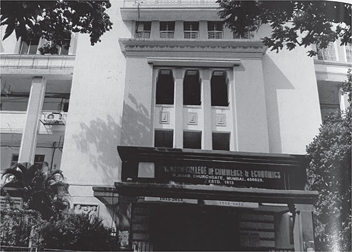
Dr Ambedkar joined Sydenham College, Mumbai as a temporary professor on 10 November 1918.
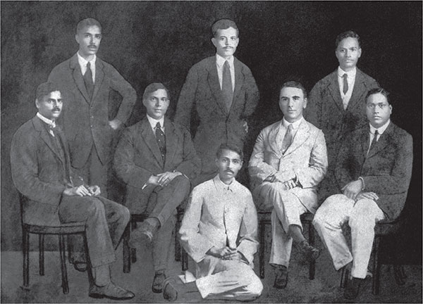
Dr Ambedkar with his faculty colleague and Percy Anstey (seating, second from right), principal at Sydenham College.
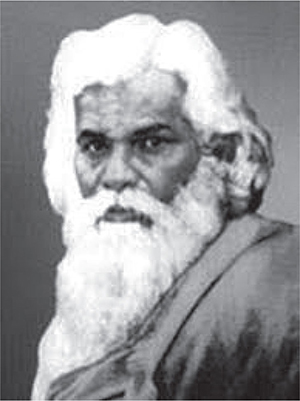
Vitthal Ramji Shinde, a social reformer from Maharashtra, had a significant following among the Dalits. His position before the Southborough Committee came in conflict with Dr Ambedkar’s, which almost resulted in the end of his career.
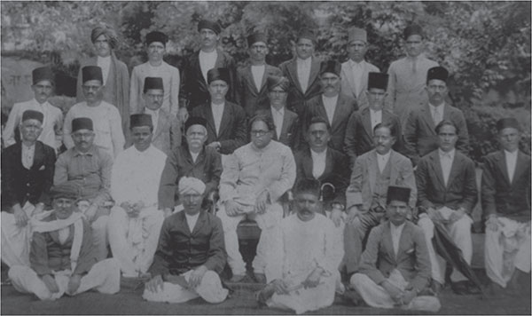
A group photo of Dr Ambedkar and his associates in taken in 1920. On Dr Ambedkar’s right are Sambhji Tukaram Gaikwad, S.N. Shivtarkar (master), Maruti Sambhaji Gaikwad, Revajibuwa Dolas and on his left, Dnyandev Gholap, Kondiram Rokade, Devidas Abraham, Ganpat Borkar Dada, Raghoba Vanmali, Nirmal Gangavane, Nivruthi Jadhav, Krishnaji Jawle, Narayan Bhosle, Ramchandra Nikalje, Narayan Bhosle, Shankar Kamble, Haribhau Torne, Shantaram Upsham, Ramchandra and Narayan Kadam.
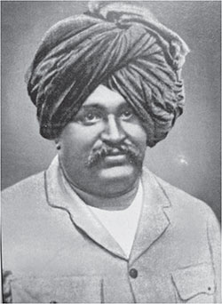
Shahu Maharaj aka Rajarshi Shahu of the princely state of Kolhapur, was a prominent social reformer, who pioneered many progressive policies during his rule. He visited Ambedkar at his home in BIT Chawl in December 1919 and gave Rs 2500 to start a periodical. He remained supportive of him until his death on 6 May 1922.
A facsimile of Mooknayak started on 31 January 1920. It closed down in April 1923.
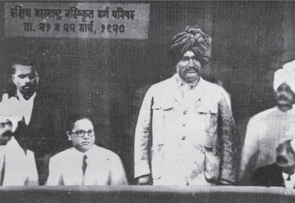
Dr Ambedkar with Shahu Maharaj attended the Mangaon conference in March 1920. Ambedkar delivered his first public speech here.
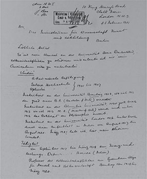
In February 1921, after resuming his studies at LSE, within six months he decided to enrol himself at Bonn University. Dr Ambedkar’s handwritten letter in German for admission to Bonn University.
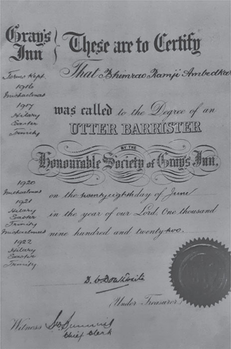
Dr Ambedkar’s Bar-at-Law certificate. On 28 June 1922, Gray’s Inn called him to the bar and published him as a barrister.
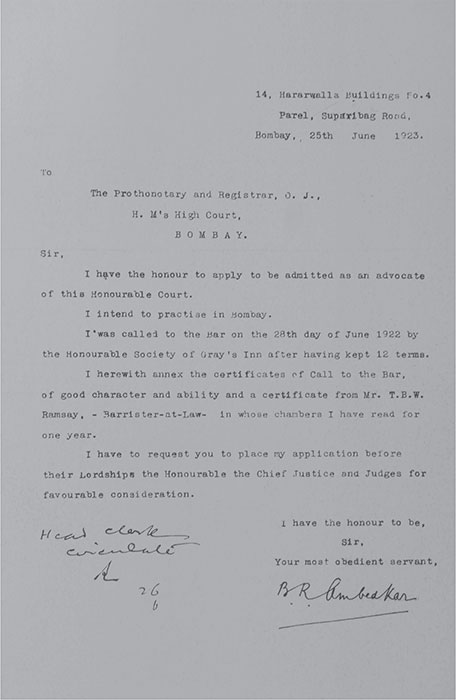
In 1923, Dr Ambedkar applied to the Bombay High Court seeking permission to practise law.
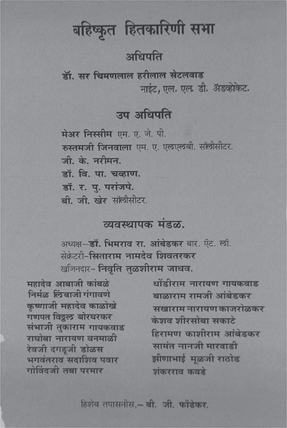
Dr Ambedkar established the Bhaishkrut Hitkarni Sabha in 1924. The picture contains a document with the names of the office bearers. Sir Chimanlal Setalwad, a prominent jurist and public figure was the chairman of the Sabha comprising other noted personalities. Ambedkar was the chairman of the Working Committee.
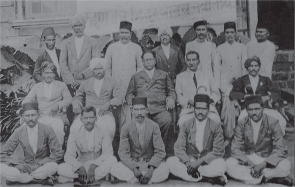
Dr Ambedkar (middle row, seated) with his early associates pictured in 1924. Seated to his right is Amrutrao Rankhambe and on his left is Raobahadur Srinivasan.
A copy of the Annual Report of the Bhaishkrut Hitkarini Sabha for the year 1925.
(Standing) Nigappa Aidade, (sitting) his wife with their son, Bhagwan, Ramabai with Rajratna on
her lap, Laxmibai; (seated in front in white clothes) Aidade’s son Balkrushna.
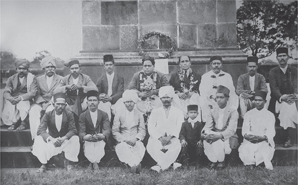
Dr Ambedkar visited the Bhima Koregaon Victory Memorial on 8 January 1927. (Bottom row from left) S.F. Barathe, B.J. Bhosle, S.B. Bhandare, J.S. Ranpise, Dr P.G. Solanki, Shivram Janaba Kamble (the main organizer), K.M. Sonavane and Ramchandra Krishnaji Kadam. (Top row): P. Waghmare, B.B. Jadhav, Jivappa Lingappa Aidale, S.R. Thorat, K.N. Kadam, A.S. Kamble and K.N. Sonkamble
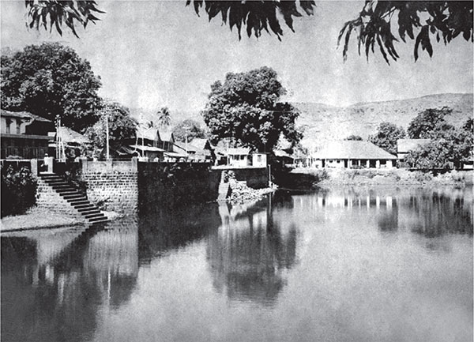
Chowdar Tank at Mahad became an integral part of Dr Ambedkar’s formative struggle for the civil rights of the Untouchables.
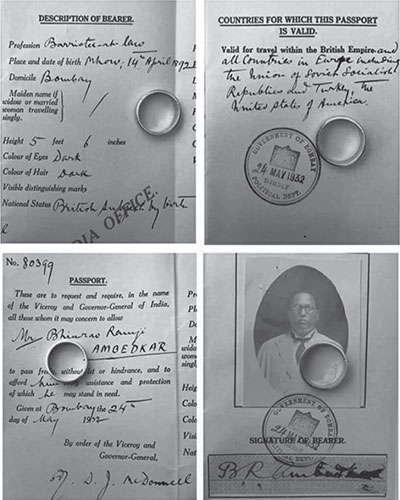
Facsimile of Dr Ambedkar’s passport in 1927 wherein his date of birth is given as 14 April 1992.
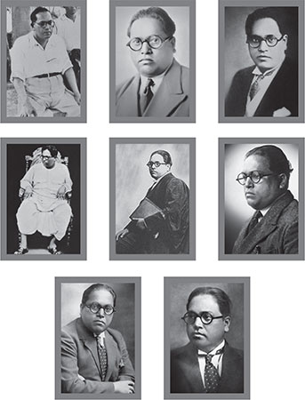
Third Phase (1928–1934) The Legend Grows Over India: Dalits Get Their Leader The strategic shift away from the social reform of the Hindu society was clearly discernible in Ambedkar after the Mahad debacle. He had reared a modest hope that agitation of the Untouchables might wake up advanced sections of the Hindus to take up social reforms in the Hindu society. But when Dalits were beaten for exercising their legal civil rights at Mahad, he
had to face a barrage of criticism from the Hindus. Far from regret, the caste Hindus again frustrated Ambedkar’s satyagraha plan by obtaining a fraudulent injunction from the court. It entangled him in a frivolous court battle for a decade. This bitter experience led Ambedkar to rethink the possibility of internal reform in Hindu society and look for opportunities arising in the political sphere.
Into Mainstream Politics
The political activities were picking up momentum in the wake of the second tranche of political reforms which were due in 1929. After a long spell of liberal rule in Britain from 1905 to 1922, the Conservative Party came to power in 1922 and lasted until 1929, except for a brief spell of 288 days in 1924 under Ramsay McDonald of the Labour Party. At the time of introducing the Montagu Chelmsford Reforms in 1919, the British Government had declared that a commission would be sent to India after ten years to examine the effects and operations of the constitutional reforms and to suggest more reforms for India.1 The Conservative Party was also not enthusiastic about these reforms and wanted to use them to expand the division between political parties in India and postpone its obligations. Prime Minister Stanley Baldwin constituted The Indian Statutory Commission, comprising seven British Members of Parliament under the chairmanship of Sir John Allsebrook Simon, on 26 November 1927 to discuss the grant of the next tranche of political rights with Indian leaders. Non-inclusion of Indians was seen as a violation of their right to self-determination and an insult to their self-respect. Most Indian political parties condemned the action of the government and decided to boycott it when it arrived in Bombay on 3 February 1928. There were mass protests, hartals and black flag demonstrations with the slogan ‘Simon Go Back’ all over the country. The regime responded with brutal repression to suppress the movement, not sparing even prominent leaders. In Lahore, Lala Lajpat Rai, who was leading the demonstration, was seriously injured in the lathi-charge. He died later that year due to injuries sustained then. Ambedkar was in company with Periyar E.V. Ramasamy, and certain members of the Muslim League, the Hindu Mahasabha, and the Central Sikh League2 who cooperated with the Commission.
In view of the boycott, Simon suggested to the viceroy and the governor-general to nominate a committee of seven members from each Provincial Assembly which would accompany the Commission when it visited that province and exchange its views with the Commission with regard to the devolution of further political powers to the Indians. On 5 August 1928, Ambedkar was elected as a member along with Bhaskarrao Jadhav from Bombay Provincial Assembly to the committee. In May 1929, the Provincial Committee submitted its report, but Ambedkar did not sign it and instead submitted an entirely separate report of his own to the commission. It annoyed the Provincial Committee members, particularly the Muslim members, as his proposals denied them separate electorates and other special concessions. In reference to separate electorates, he clearly opined that they must be avoided in preference to ‘the golden mean’ of the system of joint electorates with reserved seats, which he chose for the Depressed Classes. One member of the Simon Commission, Clement Attlee, the leader of the Labour Party asked him how he would get over the cross-division resulting from his claim of representation by social status in the working-class struggle. Ambedkar’s answer that ‘the majority of the depressed classes are labourers’3 was no answer to the trenchant question of Attlee. The ‘cross-division’ of Attlee grew and rendered both camps ineffective but the question he asked remains unanswered still.
The Mahar watan has been the form of slavery of Mahars and Ambedkar wanted it abolished. He had carried out a vigorous campaign against it from 2 September to 25 November through the Bahishkrut Bharat. He had to face considerable opposition from his own caste men, but he could effectively quell their objections. He introduced a bill on 19 March 1928 to amend the Bombay Hereditary Offices Act, 1874 (known as Mahar Watan Bill) in the Bombay Legislative Assembly. A similar bill was already passed in the Central Provinces. Some early attempts to change the law and rules were made by D.D. Gholap and R.S. Nikalje, nominated members in the Bombay Legislative Assembly, from 1920–23 and 1923–26 respectively, but in vain. According to the Hereditary Offices Act, the Mahars, the holders of the posts, were compelled to toil relentlessly day and night. In the absence of a Mahar servant, his father or another family member was forced into government service. In return for this strenuous and ceaseless labour, they received meagre compensation: a piece of land known as watan, some corn from the villagers, and a paltry sum ranging from annas two to a rupee and a half per month as baluta. Consequently, the Mahars had become lethargic, losing all motivation in life, self-respect, ambition and ability, confined perpetually to menial roles. To shatter these chains of servitude, Ambedkar introduced this Bill.
Moving the Bill on 3 August 1928, Ambedkar observed that the Mahars were treated as slaves of all government departments at any hour of the day and night for a pittance. After a preliminary discussion on 4 August, Ambedkar moved the bill to a Select Committee.4
His solution was that the watan lands would be owned by the State but held by the occupants who could sell it with the government’s permission, the baluta received by the watandars to be converted into cash payments and work performed for the government and rayats (cultivators) was to be clearly listed. All these, however, entailed huge costs to the exchequer, which he had not paid attention to. He rather accused others—the government, the non-Brahmins, the Brahmins, and the Muslims—of being united on ensuring that ‘the bahishkrut varg does not raise its head’.5 The Select Committee prescribed such steep revenue-payment conditions for the conversion of Mahar lands that the process was rendered practically impossible, leading to Ambedkar withdrawing the bill on 24 July 1929.6
In November 1928, the Bombay Government appointed a committee following a proposed resolution by P.G. Solanki. It was headed by a member of the Indian Civil Service, O.H.B. Starte, criminal tribe settlement officer, to inquire into the educational, economic and social condition of the Depressed Classes and aboriginal tribes in the Bombay province and to recommend measures for their uplift. Ambedkar, along with A.V. Thakkar and Solanki were appointed to this committee. Even as a member of the legislative council and of such a government committee, Ambedkar had a humiliating experience on account of caste.7 At one place, he visited the local board-run primary school in response to a complaint from a guardian of an Untouchable boy that he was not allowed to sit in the class. The headmaster would not allow Ambedkar to enter the classrooms. On 23 October 1929, at Chalisgaon, the local Untouchables received him at the railway station and wanted to take him to their colony, but the horse cart driver refused to carry Untouchable Ambedkar. It was quite reminiscent of his childhood episode at Badali railway station. The owner lent his cart, however, to be driven by one of the Untouchable persons. On the way, the inexperienced driver lost control of the cart, throwing off Ambedkar on the stone pavement, severely wounded. He had a fracture in his right leg and had to be bedridden almost for two months. The harrowing experience of the member of the committee that was tasked to see the condition of the Untouchable community could not be more eloquent.
The Starte Committee toured extensively, interviewed a cross section of people and came out with a report in July 1930.8 It highlighted the plight of the Depressed Classes, who, ‘despite adhering to Hindu customs, were forced to live in isolation leading to social exclusion and servitude’. The committee stressed the importance of establishing common schools to improve education access, increasing scholarships and hostel facilities for Depressed Class students in secondary schools, providing scholarships for industrial training in mills and railway workshops, and funding for studying abroad to study engineering. Additionally, the committee proposed appointing a special officer to oversee the implementation of these initiatives. It also suggested ensuring their adequate representation in village co-operative societies, enacting legislation like the Money-Lenders’ Act, and establishing a Provident Fund for municipal conservancy staff. It advocated for the recruitment of Depressed Class members into police and military services, emphasized the need for housing accommodations for them in urban areas, allocating deforested and wastelands to the Depressed Classes and utilizing projects like the Sukkur barrage for their upliftment. Ambedkar’s influence on the report of the Starte Committee could not be missed. The report stressed the importance of establishing common schools to improve education access, increasing scholarships and hostel facilities for Depressed Class students in secondary schools, as well as providing scholarships for industrial training in mills and railway workshops, and even funding for studying abroad in engineering programs. Additionally, the committee proposed appointing a special officer to oversee the implementation of these initiatives. It also suggested ensuring their adequate representation in village co-operative societies, enacting legislation like the Money-Lenders’ Act, and establishing a Provident Fund for municipal conservancy staff. It advocated for the recruitment of Depressed Class members into police and military services, emphasized the need for housing accommodations for them in urban areas, allocating deforested and waste lands to the Depressed Classes and utilizing projects like the Sukkur barrage for their upliftment. Ambedkar’s influence on the report of the Starte Committee could not be missed.
The report of the Starte Committee recommended that the term ‘backward classes’ be used to denote three kinds of communities: 1) Depressed Classes (i.e., ‘untouchable’ castes); 2) aboriginal and hill tribes (i.e., tribes that were residing in forests, or those that had been doing so in the recent past); and 3) Other Backward Classes. The committee did not prescribe any fixed or certain criteria for determining who the Other Backward Classes were. It only opined that the term would include ‘wandering tribes’ which may not comprise forest dwellers or aboriginals but who may still need special care. It suggested that a ‘backward class board’ be set up to ensure that communities that had ceased to be backward were no longer on the list. It recommended three conditions for removing a caste from the list of backward classes: 1) the caste should no longer be Untouchable (if it was Untouchable to begin with); 2) it should have reached a satisfactory level of literacy; and 3) it should acquire an economic status such that it no longer requires special assistance.9 This perhaps is the genesis of the mechanism for inclusion and exclusion of communities into the ‘schedules’ that may come up in future. It documented the different forms of discrimination suffered by them and gave specific recommendations for improving their conditions. Ambedkar played a significant role in bringing out new facts and drafting the committee report.10
Ambedkar first encountered the communist Girni Kamgar Union, or GKU, (Union of Textile Workers) in the wake of the 1928 strike. He accused the workers, not the mill owners, of caste prejudice against the Untouchable workers in keeping them in low-paid and lowest-ranked jobs with no prospects of upward mobility, and held the communists responsible, who controlled them.11 As a matter of fact, the GKU as a communist-controlled union had come into existence only on the eve of the strike—as a breakaway faction of the erstwhile Girni Kamgar Mahamandal formed in 1923. During the 1928 strike, Ambedkar highlighted the exclusion Dalits faced from the high-paid weaving department job. It involved moistening the thread with saliva while winding it on the shuttle, which if performed by Dalits, the caste Hindu workers would take as highly polluting. Ambedkar threatened the Communist unions that he would dissuade the Dalit workers from taking part in the strike if their right to work in all mill departments was not recognized.12 There is no doubt that the communists were not appreciative of the issues of caste or untouchability because of their dogmatic understanding that they were superstructural issues, and also from the viewpoint of organizational expediency that such issues would fragment the working class. However, after Ambedkar’s insistence, the Communist leadership reluctantly accepted Dalit workers’ right to work in the weaving department and placed it among the seventeen demands presented to the mill owners.13 As a matter of fact, the exclusion of Dalit workers from certain workplaces within a factory is a domain of management and can neither be an issue of trade unions’ nor a social issue. While the communist GKU may be expected to educate the workers against it, blaming it for its continuation was not right. As such Ambedkar’s opposition to the strike infuriated the working class. He was taunted and teased as he walked along in his own locality.14 Notwithstanding the dispute, the strike was historic, with more than one lakh workers joining it, and lasted for nearly six months, i.e., May to October 1928.
When the GKU issued a call for another strike after barely six months—on the issue of victimization of seventeen workers of Wadia group of mills who had taken a leading role in the strike—Ambedkar accused the communist leaders of being unconcerned when it comes to improving workers’ lot. The contestations between Ambedkar and the communists once again came to the fore during the 1929 strikes. He campaigned, with two other labour leaders, R.R. Bakhale, the general secretary of the Textile Labour Union and Shyamrao Parulekar of Servants of India Society against the strike. A meeting called by the Textile Labour Union on 29 April at Damodar Hall, presided over by Ambedkar, passed a resolution against the strike.15 Ambedkar’s objection was that the strike, which followed the 1928 one, would break the back of Dalit workers due to extreme indigence and indebtedness.16 He surely had a point as Dalits did not have farmlands to fall back on unlike their non-Dalit counterparts. But that perhaps cannot justify the extreme step of breaking the strike. During the 1929 general strike, Ambedkar is said to have facilitated the supply of Dalit workers to various mills.17 Keer wrote that one Frederick Stones, the manager of the E.D. Sassoon Mills encouraged Ambedkar to ask his men to resume work.18
He charged the communists for using strikes to create ground for an ‘immediate communist revolution’, which he declared impossible and also undesirable.19 While the issue of calling repeated strikes may come across as irresponsible, his accusation of political motive and stretching it to communist revolution was certainly incomprehensible. For the strike is a weapon in the hands of the working class in their struggle against capitalists, as he himself would declare a decade later. Insofar as it was a mode of struggle of the working class against the capitalists, it was essentially political, even if the strike was seemingly centred around certain economic demands. His argument against the communist revolution was the same as against Swaraj of the Congress: what place would the Untouchables have in it?20 He said that casteism and Untouchability were untouched by the principles of communism and said that ‘if Lenin had [been] born in India, he would have worked to demolish caste and untouchability before he dreamt of a communist revolution’.21 It certainly had a rhetorical effect but is sans substance because Lenin’s was not a meliorative mission.
Simon Commission
Added to this unpopularity he suffered due to his opposition to the strike, was the unpopularity on a larger scale he incurred due to his decision to cooperate with the Indian Statutory Commission, popularly known as the Simon Commission, against the public sentiment. Even his students in law college had rudely walked out of the class in protest.22 When the commission reached Pune on 12 October 1928, the testimonies of Ambedkar and Dr Solanki took place on 23 October. Ambedkar had prepared two memorandums for the commission of which the first one was sent on 21 May 1928. This twenty-page statement titled ‘Statement concerning the state of education of the Depressed Classes in Bombay Presidency’ was submitted on behalf of the Bahishkrut Hitkarini Sabha. It included such demands as annulment of the Act of Compulsory Primary Education, taking away education department from the school board, instituting scholarships to the students in order to promote education among Untouchables, starting hostels for them, employing a large number of Untouchables in government service, etc.23
The second memorandum—a statement concerning the safeguards for the protection of the interests of the Depressed Classes as a minority in the Bombay Presidency and the change in composition of and the guarantees from, the Bombay Legislative Council necessary to ensure the same under Provincial Autonomy—was a twenty-seven-page document, which demanded more political rights to the Untouchables. It was submitted on 29 May 1928.24 It would ensure that their representatives in legislative forums could expose how the government officials and the caste Hindus oppress them. Other Untouchable leaders also had submitted memorandums from their respective organizations to the Commission, emphasizing political rights to the Untouchables but without much result. An opportunity arose due to the Central government’s decision to form committees comprising members of provincial councils to give suggestions to the Simon Commission. Ambedkar was elected to the seven-member Bombay Committee dominated by Muslims and non-Brahmins.
As stated before, Ambedkar refused to sign the report of the Provincial Committee and instead submitted his alternative report on 17 May 1929.25
In the opening part, he explained in a convoluted manner, citing Edmund Burke, how the nationalist demand for an Indian representative on the Commission was not justified. He said that since the Commission was not to deal with any unified Indian demand, and rather to deliberate disparate demands coming from various interest groups, an Indian representative was not necessary. He then presented his demands that included, inter alia, banning communal representation in the executive, ministers being made liable to courts of law for illegal acts, constitutional provision for impeachment of ministers, adult franchise, abolition of all class and communal electorates except for Europeans, provision of reserved seats for Mohammedans, Depressed Classes and Anglo-Indians and to the non-Brahmins only if the franchise continues to be a reserved one.26 It conveyed Ambedkar’s disagreement with the provincial committee and also unsparing criticism of John Simon for observing that the problems of the Untouchables as mainly social and not political.
He was very critical of the orthodox Brahmin leaders who termed the leaders of the Untouchables as anti-nationals for having cooperated with the commission. They ridiculed the Untouchable leaders using John Simon’s statement at Ooty while accepting the felicitation by the Untouchables, that the problems of the Untouchables were mainly social and not political. By this statement, Simon, who was tasked to consider the devolution of political rights, almost accepted that the Commission was not in a position to do much for the Untouchables. Ambedkar responded by saying that although they knew that their problems were more of a social nature since the caste Hindus were not prepared to bring about requisite social reform, they needed to seek political rights to secure them to some extent. They met the Simon Commission to sensitize it to these issues and stress the need to grant the Untouchables political rights in future constitutions.
Eighteen associations of the Depressed Classes gave evidence before the commission and placed their memoranda before it.27 Sixteen of them pleaded for separate electorates for the Depressed Classes. Ambedkar submitted a memorandum to the Simon Commission on behalf of his Bahishkrut Hitkarinin Sabha demanding joint electorates with reservation of seats for the Depressed Classes.28 It pointed out the injustice done to the Untouchables under the Act of 1919 and demanded twenty-two out of 140 seats in the Bombay Legislative Council, vehemently opposed the principle of nomination and insisted upon the extension of the principle of election to the Depressed Classes. The Provincial Committee appointed by the Bombay Legislative Council to co-operate with the Simon Commission submitted its report on 7 May 1929, which suggested ten reserved seats for the Depressed Classes with joint electorates and 33 per cent of elected seats out of 140 seats to the Muslims with separate electorates.
Conversion
Ambedkar closed down the Bahishkrut Hitakarini Sabha on 14 June 1928 and established the Depressed Classes Education Society ‘to organize the school education of his community on a sound basis’. He was appointed as a temporary professor at the Government Law College, Bombay for a year (from June 1928 to March 1929). He started two hostels in the same month and appealed to the Bombay Government for help.29 The government approved the scheme on 8 October 1928 and sanctioned five hostels at Panel, Thane, Nasik, Pune and Dharwad for the special benefit of high school students belonging to the Depressed Classes.30 Ambedkar’s Education Society was a recognized institution under the Charitable Society Registration Act XXI of 1861. He launched a Charity Fund in July 1929 for this educational society. He observed that despite a government directive in the matter of admission, children from the Depressed Classes were refused admission to schools and decided to take up the issue in schools.31
By the time the Bahishkrut Bharat completed one year, it had accumulated a debt of Rs 500. Ambedkar wrote an emotional editorial titled ‘Is the Debt of Bahishkrut Bharat not a Public Debt?’ It described the sacrifice he willingly made for the cause of the downtrodden. He wrote that Bahishkrut Bharat did not have the capacity to pay a penny to him nor was it able to afford an assistant or find a selfless person who could lend his services. He had to write the entire twenty-four columns all by himself staying up late on many nights. He also emotionally described how he made self-sacrifices for the society such as giving up a government job that could fetch him up to Rs 2500 per month. He took up law knowing fully well that the profession being dominated by the caste Hindus, would not get him financial stability. He took it only because it promised him the freedom to do social work. He had to stay long nights burning the midnight oil without caring for his health, happiness, comfort, or pleasure. He could not spend even half an hour with his wife whom he described as ‘affectionate, good-natured and venerable woman’ who carried the burden of his family day in and day out, while he was abroad and who was still carrying it after his return, not hesitating even to carry the baskets of dung cakes on her head in times of his financial distress. While he considered himself fortunate for being able to discharge his responsibility towards his people, he expected them to remember their own obligations. He warned that if they did not come forward to help, the paper would die soon.32 Despite such a touching appeal, the Bahishkrut Bharat had to be closed down in 1929.
In the wake of the Morley-Minto reforms, the Muslim delegation led by Aga Khan had represented to Lord Minto, the viceroy and governor-general in 1906, that the Untouchables and tribals were not Hindus and should not be counted as such. Accepting their demand, the next census of 1910 presented Hindus as divided under separate categories: 1) caste Hindus, 2) animists and tribals and 3) the Depressed Classes or Untouchables.33
Among these categories, the Untouchables who had been organizing and asserting their human rights posed a palpable threat to the Congress and the Hindu Mahasabha. The Untouchables could decide to convert to Islam and upturn their politics. Ambedkar could not be unaware of this opportunity. He however reared a hope of bringing about internal social reforms in the Hindu society. Although this hope was brutally shaken in Mahad, and as an alternative, politics was clearly valorizing religious identities, the idea of religious conversion had not yet touched Ambedkar. In response to a letter from one P.N. Ubale, suggesting that the Mahars should convert to Christianity, Ambedkar responded in Bahishkrut Bharat on 1 February 1929 saying that the ‘goal of our movement is not likely to be achieved through conversion. If the object of the movement was to get rid of untouchability for oneself, the conversion could immediately achieve it. But the Untouchables would want to destroy the religious system of Brahminism, and the discriminatory mind-set derived from it’.34 This again was a strange logic: if the object of getting rid of untouchability was to be met with conversion, why would one bother about destroying Brahminism? Perhaps, as he articulated in Annihilation of Caste later, he aimed at the destruction of the caste system, the roots of which lay in Brahminism.
But when the 5000 Mahars of Jalgaon in Berar issued a notice to the caste Hindus to eradicate the distinction between touchables and Untouchables by 1 June 1929, or else they would convert, he had advised them to convert only to Islam. He dismissed the options of joining the Arya Samaj or the Prarthana Samaj or becoming Buddhists, as they would continue being treated as Hindus. Hence, their untouchability would not go. It would also not disappear if they became Christians, because Indian Christians had not given up caste discrimination.35 Only Islam had the power to ‘embrace all’. It gave pride and support to all its followers. That is why seven crore Muslims in India posed a challenge to twenty-two crore Hindus. The main issue, he told, the Jalgaon Mahars, was not the attainment of salvation or the suitability of the principles of this or that religion. ‘Your objective for conversion is only getting rid of untouchability.’36Bahishkrut Bharat serialized the articles providing information on Muslims (Musalmananvishayi Mahiti) by Lokhitwadi, the popular name of Gopal Hari Deshmukh, a social reformer in Maharashtra, from 12 April 1929, just after the Jalgaon Mahar issued their notice until the stoppage of its last issue of 15 November 1929. The caste Hindus in response to the notice had challenged the Mahars to have collective dining for all the Untouchable castes. But when the Mahars did it, they tried to provoke the Untouchables in the surrounding area against the Mahars of Jalgaon. Ultimately, not seeing any compliance from the caste Hindus, a dozen odd Mahars actually became Musalmans on 4 June 1929. It scared the caste Hindus and forced them to open two wells for the use of the Untouchables and to invite Mahar leaders to some of their homes. Ambedkar was thrilled to see this development and excitedly wrote: ‘This is how the mouth does not open without pressing the nose.’37
Nehru Committee Report
All the major political parties in India decided to discard the political rights offered by the Simon Commission and rather create an alternate report on what rights Indians needed. The Congress had already decided in its Guwahati conference of 1926 to create an independent Constitution for India. Muslim League in its conference at Delhi on 20 March 1927, decided the same. In order to create a framework of political rights an all-party conference was organized in Bombay on 19 May 1928, under the presidentship of Mukhtar Ahmed Ansari, which nominated a nine-member committee for the task under the presidentship of Motilal Nehru. The Nehru Committee worked from June to August 1928 and drafted a Constitution. The final report of this, a draft Swaraj Constitution for India, signed by Motilal Nehru, Ali Imam, Tej Bahadur Sapru, Madhav Shrihari Aney, Mangal Singh, Shuaib Qureshi, Subhas Chandra Bose and G.R. Pradhan, was presented by Ansari on 10 August 1928, which came to be known as Nehru Report.38 The attitude of the Congress Party towards the problem of the Untouchables was clearly exposed when the Congress Working Committee issued invitations to about thirty organizations of Muslim, Parsi, Christian, Sikh, Anglo-Indian and even the non-Brahmin institution and the Dravida Mahajana Sabha, but not to the Bahishkrut Hitkarini Sabha led by Ambedkar or for that matter any other organization of the Depressed Classes. With regard to the Depressed Classes, the Nehru Report had to say this:
In our suggestions for the Constitution we have not made any special provision for the representation of the ‘Depressed’ Classes in the legislatures. This could only be done by way of special electorates or by nomination. We are not prepared to extend this unsound and harmful principle, if we can help it; nor do we think that we will do any good to these classes by ensuring some seats for them in this way. We are still more opposed to
nomination.39
The aspirations of the Depressed Classes to be represented in the legislature were thus dismissed by the Nehru committee on the alibi that the ‘either’ method for its fulfilment was ‘harmful and unsound’. The committee clearly stated that they were not going to extend either principle. They observed that their Declaration of Rights would be a panacea for all the ills affecting the Depressed Classes.40 The final report of the Nehru Committee, therefore, made no provisions, in the name of national integration, for the protection of Untouchables and Muslims.41 The main recommendations of this report were: 1) majority and minority castes should be given representation in legislative bodies in proportion to the ratio of their population to the total population; 2) the minority castes should get reserved seats in specified constituencies, and they should also be free to contest in general constituencies; 3) there should be reserved seats for the Backward Castes; and 4) there should be independent provision for their protection. It did not have enough sympathy for the Untouchables and non-Brahmin people. It rather reflected that giving the Untouchables an independent constituency or inspiring them to make progress independently, would be injurious to the Dalit interests. Insinuating that it observed, ‘We are certainly of opinion that the Hindus are chiefly responsible for this suppression of a large class, but we are equally clear that the solicitude for this class which the British government has endeavoured to show is not based on human consideration but on some other. The solicitude is also of recent origin. As the national movement has grown in the country, so has the political value of the “depressed” classes grown in the eyes of the Government.’42 After the Mahad conference, Ambedkar came to the conclusion that ‘political power is the only solvent’ of the problems of untouchability. Therefore, he was very critical of the Nehru Committee’s proposal.
Temple Entry Satyagrahas
Although Ambedkar was disillusioned by the method of satyagraha for asserting civil rights of the Untouchables to access public amenities or to enter temples, Mahad ‘satyagraha’ ignited the imagination of his followers to launch such agitations at many places. Two such satyagrahas for entering temples followed in quick succession in 1929. The first, though not directly inspired by Mahad, was in distant Bengal, where the Untouchables tried to enter a Kali temple at Khulna (now in Bangladesh), and the second took place in Pune to enter the Parvati temple.
A public meeting was organized on 22 September 1929 under the chairmanship of Vinayakrao Bhuskute to launch a satyagraha for temple entry in Pune. A Satyagraha Committee was formed for the purpose with Shivram Janaba Kamble as president, P.N. Rajbhoj as general secretary and an Advisory Council comprising N.V. Gadgil, V.M. Bhuskute, V.V. Sathe, G.N. Kanitkar and Keshaorao Jedhe. Kesari, the Marathi newspaper founded by Tilak published opinions of some prominent people with the heading ‘Do not do the Satyagraha’, advising the Untouchables that they should desist from doing satyagraha as Parvati temple was a private property. On 13 October 1929, the satyagraha led by progressive activists such as N.V. Gadgil, S.M. Joshi, Keshavrao Jedhe, Vinayak Bhuskute, Shivram Kamble, S.S. Thorat and others took place. A group of orthodox people attacked the satyagrahis with sticks and stones as they climbed the stairs. Rajbhoj fell unconscious and had to be taken away. The upper caste people like Gadgil and Ranade were especially targeted by the orthodox people and were also severely wounded. One Aryasamaji, Swami Yoganand, who had come in support of the satyagrahis, was also not spared. Ultimately with the collector’s intervention the crowd disbursed. In the evening the Pune City Congress Committee, presided over by V.R. Shinde, organized a public meeting condemning the attack. Public meetings were organized at many places in its support. On 16 October 1929, a huge public meeting was held in Parel (Bombay) under the chairmanship of Ambedkar. Among the prominent touchable people were Bhuskute, Deorao Naik, K.S. Thakre (father of Bal Thackeray), Pradhan, Khandke, Kavali, Kadrekar, Acharya Suratkar, and among the Untouchables, were Shivtarkar, Mali, and Adrekar. On 22 October 1929, a huge public meeting was organized by the Untouchables at Napier Park in Madras under the chairmanship of W.P. Saudagar Pandya Nadar, MLC. The people who spoke in the meeting were N. Shivraj, SPI Balguru Shivam, Ellapa Thasser and E.V. Ramaswamy Naicker. The Parvati Satyagraha was ultimately called off on 20 January 1930 with the mediation of people like N.C. Kelkar, L.B. Bhopatkar and Jamnalal Bajaj without accomplishing its objective.43
Like the Pune Untouchables, the leaders of the Untouchables in Nashik decided to launch a satyagraha to enter the Kalaram temple there. When they came to consult Ambedkar, he revealed to them for the first time his strategic thinking. He said, ‘I consider the political rights of the Untouchables more important than these Satyagrahas. One cannot say what conditions would emerge when the negotiation on these issues commenced in India or England. If the conditions turn out uncongenial to us, this Satyagraha will add to our difficulties. It will consume all our energies and we will be unable to face those conditions.’44 The Nashik people assured him that they would not bother him in his pursuit of political rights. Rather, they would extend help whenever he needed it. They requested him just to accept the leadership of the satyagraha. After witnessing their enthusiasm, Ambedkar accepted their request. Immediately a Satyagraha Committee was formed with Bhaurao Krishnaji Gaikwad (Dadasaheb Gaikwad) as secretary and Patitpawan Das as its president. Gaikwad issued a notice on behalf of the Committee to the Trustees of the Kalaram temple that the Untouchable people would enter the temple to worship the Ram idol. If they or any touchable Hindus opposed this move, the Untouchables would offer a satyagraha for the temple entry. They requested their response. As the response did not come even after five months, the committee declared that it would go ahead with the satyagraha. The satyagraha began under the leadership of Ambedkar on 2 March 1930. Over 16,000 satyagrahis marched to the Kalaram temple in procession to find all the doors of the temple locked and hence it was converted into a dharna (sit-in strike).
The administration was taking the side of the orthodox Hindus and threatening the satyagrahis. Even Ambedkar’s plea to the governor for intervening, as the temple was a public place to which the Untouchables had the right to enter, did not work. The collector was openly hostile; he even refused to meet Gaikwad and threatened to remove the satyagrahis.45
When Gaikwad reported this to Ambedkar, he advised him, ‘My view is not to face a conflict with the Government if it can be avoided.’46 On 9 April, during Ramnavami, when a chariot procession was to be taken out, Ambedkar had gone to Nashik and requested the police to be impartial when the Untouchables would seek to participate in pulling the chariot. But as the Untouchable touched the rope, the police cracked down on them and started beating them. While explaining the origin of this riot to the governor, Ambedkar wrote to him on 11 April 1930, ‘But the immediate cause of the fight was the action of the Police Sepoys, a great majority of whom were caste Hindus, they at once started to assault those Untouchables who were struggling to hold a bit of the rope. The fight was started by the caste Hindu Police who openly took the side of the touchable Hindus.’47
Ambedkar assured the governor that his complaint was not against the district magistrate or even the police officers, who according to him were just performing their duties, but against the policemen who being Hindu, were prejudiced against the Untouchables.48 On 23 March 1934, Gaikwad conveyed to Ambedkar that the local people had thought of relaunching the satyagraha and sought his advice. Ambedkar replied vide his letter dated 3 March 1934 asking Gaikwad to stop the satyagrahas. He wrote:
. . . I didn’t launch the temple entry movement because I wanted the Depressed Classes to become worshippers of idols which they were prevented from worshiping or because I believed temple entry would make them equal members in and an integral part of the Hindu Society. . . . I started temple entry Satyagraha only because I felt that was the best way of energizing the Depressed Classes and making them conscious of their position. As I believe I have achieved that purpose I have no more use for temple entry. I want the Depressed Classes to concentrate their energy and resource on politics and education and I hope that
they will realize the importance of both.49
Relating to their declared objectives (to assert their human rights) all the satyagrahas that far, however, appear to have failed. Later, while addressing a large gathering at Vinchur near Nashik, on the occasion of the eleventh death anniversary of the late Dhondiba Rankhambe, he explained the rationale behind the temple entry movement as to ‘energizing the depressed classes and making them conscious of their position’. Having achieved that purpose, he had no more use of the temple entry. He exhorted the people gathered to concentrate their energy and resources on politics.50
Later, in the wake of the introduction of the Temple Entry Bill by Ranga Iyer in the Central Assembly 51 and the proposal of a similar bill in the Madras Legislative Council by P. Subbarayan.52 Gandhi requested Ambedkar to lend support to these bills during the meeting on 4 February 1933 at Yerwada jail. Ambedkar flatly refused. Gandhi pleaded that Ambedkar should ‘let the touchable Hindus have an opportunity to expiate their sins and purify Hinduism’, while justifying his own faith in the caste system. He contended that this reform would help the Untouchables rise in society.
Ambedkar did not have any use of temple entry. He was convinced that if the Untouchables made progress in the economic, educational and political fields, temple entry would follow automatically. On 12 February 1933, Ambedkar issued a famous statement on the temple entry bills. In the statement, Ambedkar observed, ‘[T]he surest way for their [Untouchables’] salvation lies in higher education, higher employment and better ways of earning a living. Once they become well placed in their social life, they would become respectable; and once they become respectable the religious outlook of the orthodox towards them is sure to undergo a change and even if this does not happen it can do no injury to their material interest.’53 He further said, ‘What is required is to purge it [Hinduism] of the doctrine of Chaturvarnya. This is the root cause of all inequality and is also the parent of the caste system and untouchability which are merely other forms of inequality. Unless it is done, the Depressed Classes will reject not only the temple entry but also the Hindu faith. For to accept the temple entry and be content with it, is to compromise with evil, and to barter away the sacredness of human personality that dwells in them.’54 In response, Gandhi simply said that he was unable to agree with the statement.
Kamptee Congress
The political movement for Independence from British imperialism had picked up momentum during 1928–30. However, the Congress that led the movement was not prepared to concede the demands of the Untouchables for religious and social freedom.
In order to explain the developments, he organized the All India Depressed Classes Congress at Kamptee from 8 to 9 August 1930. It was widely attended by representatives of the Untouchables from different provinces of British India. He delivered a pre-printed thirty-four-page-long presidential address.55 It exhaustively dealt with issues faced by the Depressed Classes under eight sub-heads: 1) the problem of self-government in India; 2) conditions of the problem; 3) safeguards for the Depressed Classes; 4) Depressed Classes and the Simon Commission; 5) Depressed classes and Swaraj; 6) Depressed Classes and Civil Disobedience; 7) Organization of the Depressed Classes; and 8) Uplift of the Depressed Classes. He posed the question—whether India could become a united self-governing community and answered it himself affirmatively. Giving examples of many countries in Europe that came into being after the close of the First World War—such as Latvia, Rumania, Lithuania, Yugoslavia, Estonia, Hungary, Czechoslovakia, etc.—each one of which had multidimensional heterogeneity of population, not unlike India, he averred, ‘. . . if the ideal is that India should be a united nation, I venture to say, self-government would be the most potent instrument for the realization of this ideal.’ He, however, cautioned that ‘if India did not recognize the hard facts of Indian society, the strings of political power will be in the hands of the ambitious members of the upper strata of Indian society drawn from the high-placed, well-educated and opulent castes, i.e., in the hands of the aristocracy of wealth, education and social standing’. In this determinism, there would be no place for merit or ability as what counted was kinship. Its effect, he forewarned, was bound to put members of the smaller communities at a formidable disadvantage and might indeed shut them out from political power forever. It would be most pernicious to the Depressed Classes. Internalization of such an order of ‘the ascending scale of reverence and a descending scale of contempt’, will have a disastrous impact on their struggle for political power.
Ambedkar exhorted the Untouchables to prevent it by all means, consistent with their aim. Referring to the movement for Independence spearheaded by the Congress, he argued that the Depressed Classes should not be content with the ‘mere change of masters’. Referring to the ethos of the Independence movement that ‘no country is good enough to rule over another, he stressed that the proposition extends to say that no class is good enough to rule over another’.56 He explained his apprehension that the aristocracy could not be trusted with political power as ‘the root notions of democracy on the operation of which alone self-governing India can be safe for the masses, run counter to all the ideas which for thousands of years have formed and do form even today the common stock of their beliefs’.57
He castigated the aristocracy in India for its insensitivity towards fifty to sixty million Untouchables, who endured the curse and calamity unknown in any part of the world, and a similar population of aboriginals and hill tribes who are left to roam about in a nomadic and barbarous state. He therefore emphasized the scheme for the protection of minorities to be instituted in the Constitution as was done by most countries that were born after the First World War.
Question of Representation
He warned against the proposition of the Nehru Committee Report that inclusion of the fundamental rights in the Constitution would safeguard the interest of the Depressed Classes. He said, ‘The guarantee of a right consists not in its declaration but in the provision of a remedy for its reinforcement in case it is violated.’ He gave the example of the constitutions of the post-war states which provided for such a remedy in the form of the minorities who thought their fundamental rights were violated by the majority could appeal to the League of Nations. He observed that no such remedy existed in the Nehru report.58 It may be pertinent to recall that even the Constitution drafted by him did not have such a remedy.
But instead of such a provision to seek remedy from the external body, he preferred to secure control over the executive using adequate representation in the legislatures of the country. With this, he turned to what this self-controlling ‘adequate’ representation would mean. The prevalent notion tended to define adequate representation in terms of the ratio of population. He rejected this ‘arithmetical theory of the representation’ as a crude and absurd doctrine. According to him, to speak of protection to minorities and confine their representation to their numbers was a contradiction in terms as this arrangement merely created a replica of society in the legislature and perpetuated the power asymmetry between majority and minority. To be a real remedy, it must involve a change in the balance of power in favour of the minorities, he argued. It could be secured only by granting extra weight to minorities over and above their population ratios implied. These weights could not be uniform, however, for all the minorities and they must vary with their social standing.59
He offered a scheme for how these weights would be arrived at. The scheme involved a mutual agreement between the majority and minority communities on a maximum increase in the population ratio of representation to be called the weightage factor. In its application to a particular minority for determining its quota of adequate representation, this weightage then should be made to vary inversely with the social standing of the minority defined by: 1) its social status; 2) its economic status and 3) its educational position. This is a profound conception but surprisingly when he actually worked on these issues, he never brought up these issues and had to rather be content with the representation equal to their population ratio. Even one does not find this principle ever invoked in the Constituent Assembly. In retrospect, one could see that there is neither any external remedy to the minorities against the infringement and violation of their rights nor any intrinsic control by way of extra weight to them in legislation. Instead, the constitutional contrivance that was constructed, reduced them to pawns in the hands of the mighty majority.
It applied to the entire schema of reservation which is based on the ratio of the population of the Scheduled Castes and Scheduled Tribes. Even if all reservations had been implemented faithfully, the inequality that existed between the Untouchables and others would remain undisturbed. In effect, the de jure safeguards provided for the SCs and STs in the Constitution meant de facto safeguard for the historical inequality in Indian society. The sterile lament over the persistent lag of the SCs and STs vi-a-vis the ‘others’ in developmental parameters thus becomes meaningless without seeing its roots in the Constitution.
Next, he dealt with the method of representation, viz. the scheme of separate electorates or the joint electorates with reserved seats. The opinion of the Depressed Caste leaders on this issue was divided. Ambedkar rightly noted that in joint electorates, the majority community having a right to vote in the election of their representative will favour only such men from amongst them as will be subservient to them. But he does not find the remedy in ‘enclosing ourselves in a separate compartment’ of separate electorates; it lay in fully increasing the voting strength by demanding adult suffrage, so as to minimize such influence. He emphasized that the demand for adult suffrage must be ‘our most essential demand’ and if the Depressed Classes secured it, they should not have any objection to the scheme of joint electorates with reserved seats.60 While insisting upon the safeguards for minorities he strangely cautioned them that their ideal should be a ‘united India’. He observed, ‘By all means insist on your safeguards because the handicap you suffer from is real, but let not your safeguards be such that they will perpetuate the differences which it must be the desire of us all, to be bridged’, and concludes that ‘the scheme of joint electorates and reserved seats’ was superior to that of separate electorates.61 He would change his position to demanding separate electorates within two years and stretch it to a breaking point, something he initially advised the Depressed Classes against.
How does one look at these issues albeit with hindsight? Could adult suffrage be a strategic remedy to reverse the choice from separate electorates to joint electorates with reserved seats? There should not be a dispute about adult suffrage being the ideal for the Untouchables because in the prevailing system of franchise, disproportionately few qualified to be voters. But could it be a strategic remedy to reverse the choice from separate electorates to joint electorates with reserved seats? The choice basically involved the principle of whether to have a quality representation through a separate electorate or have a quantity representation by way of a joint electorate with reserved seats. Separate electorates involved the Untouchables voting for their own candidates and joint electorates with reserved seats meant everybody voting to elect an Untouchable candidate. In the former, whosoever got elected would represent the collective choice of the Untouchable community, whereas in the latter the elected person would necessarily represent the choice of the majority community. The adult suffrage here cannot tilt this logic. Hence, as the means of securing control in the legislature, the separate electorates should always score over the joint electorates. The fear that it would lead to perpetuated separation was also not rational simply because it was not something that was cast in stone. If the people felt it was not necessary, they could demolish it at any time, unlike the joint electorates which may be impossible if the majority community (read the ruling classes) found it advantageous and developed a vested interest in it as it has empirically happened. The present scheme of reservations of seats to the Scheduled Caste and Scheduled Tribes in joint electorates has been a long-time liability, and these communities may want it to be abolished but since they have proved beneficial to the ruling classes, they would not be easily abolished despite a provision of a decadal review.
Ambedkar considers all these solutions within a frozen frame of the first-past-the-post (FPTP) type of electoral system as though there was no alternative to it. If one considers the alternative in the form of the Proportional Representation (PR) system, the question of reserved seats is automatically taken care of. In the simplest or conceptual version of the PR system, people vote for the parties and parties then choose their members to be legislators. Supposing the Untouchables was a party, and all Untouchables voted for it, it would naturally have proportionate representation in the legislative body without asking for it. The main advantage of the PR system is that it conceptually ensures that each individual is represented in the legislative body, unlike the FPTP system which in the best of situations denies representation for more than half the population. In other words, the so-called elected majority that wields power actually does not have mandate of majority of people. Which violates the basic principle of democracy. The pretence of accountability of individual representatives in the FPTP system is baseless in view of the gigantic size of constituencies in which it is theoretically impossible for voters to know their representatives leave apart approaching them. Instead, they could meaningfully vote for the parties as they are better known for their ideologies and policies than the individual candidates. The individual representative ultimately dissolves his individuality into his/her legislative party with ideological ties or the party whip. The FPTP system thus fails on every count of democratic principle. It is preferred by the entrenched classes because it better ensures the perpetuation of their rule, which they call ‘stability’ of government. After all, the vast majority of democracies and also the best-run democracies follow the PR system. The greatest virtue of the PR system is its customizability as per the specific requirements of the country. Why Ambedkar did not consider it remains a mystery. All his lifelong struggle for representation could have been automatically taken care in the PR system in far more elegant manner. We revisit the PR system when it is raised during the Constituent Assembly debates in Chapter 5.
Simon’s Recommendations
Ambedkar next dealt with the recommendations of the Simon Commission with which he had cooperated risking the ire of the mainstream. While Ambedkar was satisfied with its recognition of the Depressed Classes’ necessity of constitutional safeguards, better than the Montague–Chelmsford Report, he was disappointed with its recommendations. The foremost reason was that the commission did not discard the vicious system of nominating a representative of the Depressed Classes. The commission had not only recommended the nomination by the Governor of representatives of the Depressed Classes if suitable candidates were not available for election, but it also made a most undesirable proposal that the Governor might authorize persons who were themselves not members of the Depressed Classes to represent them in the legislature. Despite the representations of most members of the Depressed Classes against the prevailing nomination system, the recommendation of the nomination was indeed deplorable. And when the Depressed Classes were to be represented by election in a system of joint electorates with reserved seats, the condition put by the Commission that the fitness of the Depressed Class candidate should be certified by the governor of the province was far more deplorable. He asked the delegates to reject the scheme of representation, outlined by the Simon Commission, and to demand the right to elect our representative of our own choice untrammelled by any condition or limitation whatsoever. He declared that we must not allow even the governor to assume the authority to determine what is good for us.
The Simon Commission recommended that the council of states should retain its present Constitution, but that the Legislative Assembly should be constituted upon the basis of indirect election by members of the provincial legislatures regulated by the system of indirect election. Ambedkar had condemned it in his dissent note62 to the minutes, as a member of the Bombay Provincial Simon Committee. He argued that if the system is applied to the Legislative Assembly, there will be no resources left for the construction of the Council of State in the case of the two-chamber system in the central legislature. According to him, the Council of State was the ugliest deformity in the entire structure of the Government of India, and it cannot be allowed to remain in the condition in which it is.63 He therefore recommended direct elections for the Legislative Assembly and indirect elections from the provincial assemblies for the Constitution of the Council of State.
He strongly objected to the discriminatory limitations to the representation of the Depressed Classes recommended by the Simon Commission. The commission recommended that the proportion of reserved seats (for the Depressed Classes) to the total number of seats in all the Indian general constituencies should be three-quarters of the proportion of the Depressed Class population to the total population of the electoral area of the province. Such a limitation was not applied to the other minorities. The Muslims were allowed to retain excessive representation which they had received under the Lucknow Pact, the Indian Christians, Anglo-Indians and Europeans were not only given representation according to their population ratio but also were given a considerable weightage over their respective population ratios.64 Ambedkar also faulted the Simon Commission in making provision for the representation of the Depressed Classes in the central legislature. He lamented that its provision covered only the Legislative Assembly but did not reach the Council of State.65
There was also a stipulation of limitation on the total quantum of representation far below the population of the Depressed Classes. While the population of Depressed Classes was conceded by the Simon Commission as 20 per cent of the total population of British India, it restricted their representation in the Legislative Assembly to be less than 8 per cent of the total seats in that body and none in the Council of States. Ambedkar objected to this blatant discrimination.66 Ambedkar lamented the systematic under-evaluation of the claims of the Depressed Classes by the Simon Commission. The Depressed Classes, he observed, had not only not received any generosity at the hands of the Simon Commission, but they had not received even bare justice. He regretted that the British only used the Depressed Classes as an excuse for retarding India’s political progress.
On Swaraj
Next, Ambedkar took up the contemporary issue of Swaraj—self-rule with the dominion status under British imperialism or complete independence. The Congress at its meeting at Calcutta in December 1928 had passed a resolution demanding a dominion form of Government in India by the end of December 1929 failing which it threatened to change the goal to complete independence. When it met in December 1929, it indeed passed a resolution declaring independence as the goal of India. Ambedkar opined that the demand for complete independence would be disastrous in the present state of the country. ‘It is only people cemented by the feeling of one country, one constitution and one destiny who may take the risk of being independent.’67 India was miles distant from this position, he felt. According to him, the ideal of dominion status was a superior alternative for it had in it the substance of independence without the attendant risks involved in complete independence.68 In the absence of an explication of the ‘attendant risks of independence’, when it came in 1947, India was still the same as in 1929, as arguably it is even today—far from being a nation—this explanation only smacked of his strategic need to have British around until he accomplished his goal. Complete transfer of power, he feared, would foreclose the prospects of getting any rights to the Depressed Classes. The post-independence developments proved him correct. However, when the argument is couched in terms of ‘one country, one constitution and one destiny’ (which echoes Nazi slogan ‘ein volk ein reich ein führer’ or RSS slogan, one flag, one leader and one ideology’ ‘can only deserve complete independence’69), it should be seen as problematic.
He reviewed the pros and cons of the British rule in India. Its advent brought about an intellectual awakening, which would not have been possible at the pace with which it had happened. It has got India in contact with European civilization with its enlightenment ethos, which Indian society could never have been able to self-generate and develop a sense of shame for certain social customs. The British rule brought political unification of the entire landmass along with a common system of government and a rule of law, which prepared the soil for Indian nationalism to take root. It laid down the foundation of a stable government and also provided the country with the best equipment of modern civilization such as currency, roads, canals, railways and the post.70 Having extolled praises for the positive contributions of the British rule, Ambedkar also raised a pertinent question of the cost of all this and said that the cost of the British government in India was out of all proportion to the means of the people; it was the costliest government in the world. Not only in monetary terms but its cost even in human terms has been devastating.71
The British rule was interspersed with frequent famines that took a toll on millions of lives. The cause of these famines, according to Ambedkar, was the deliberate policy pursued by the British to discourage the growth of trade and industry in this country. It was an admitted principle of British administration that India be so governed that it would always remain an open market for British goods. This policy made India the land of chronic poverty. Ambedkar, however, observed, ‘I would be the first to admit that the much talked of “annual tribute” which the people of this country pay to England pales away in magnitude before the heavy exaction by the landlords and capitalists of this country from the paltry and hard-earned wages of the masses who toil for them. But I cannot understand how you can expect the British government to give relief from the crushing weight of the landlords and the capitalists?’72 Nonetheless, he blamed the British government for not doing anything to stop this exploitation. He justified the Swaraj government—the government of the people, by the people and for the people—that could accomplish this task. He explained to the delegates of the All India Depressed Classes Congress (in Kamptee on 8–9 August 1930) that the British Government had been utterly ineffectual in making any dent in their condition. ‘Howsoever, it may be actuated with the best of motives and principles, the British Government will always remain powerless to remove your grievances as well as you can and you cannot remove them unless you get political power in your own hands. No share of this political power can come to you so long as the British Government remains as it is. It is only in a Swaraj constitution that you stand any chance of getting the political power into your own hands without which you cannot bring salvation to your people.’73
Having supported the demand for Swaraj with dominion status, Ambedkar took up the question of whether the Depressed Classes should support the disobedience movement launched by Gandhi. His answer was negative. The reason was that it was unconstitutional. While conceding the evil inherent in imperialism, he saw some scope for the advancement of the Indian people. He saw genuine efforts being made by the British Empire in 1920 to achieve the ideal of self-government in India, although the reality felt too short of the ideal. He argued that the British Government had not gone back on this ideal and had already announced through the viceroy, the dominion status for India and offered a Round Table Conference (RTC) to discuss the ways and means of an early realization of that ideal. He termed the launch of civil disobedience as ‘a great blunder’. He extended his argument of unconstitutionality to trash even revolution. A revolution, bloody or bloodless, he said, makes no difference; ‘it is a method of change which is most uncertain in its issue and in which the danger of confusion and disaster in the process is very great’. He cited an example of the French Revolution, which was started for the ostensible purpose of establishing democracy but which resulted in the establishment of autocracy.74 He differentiated revolution as a transfer of political power from one party to another from the one that entailed ‘a real social change in the relative strength of the forces operating in society’. The Depressed Classes, he stressed, would want a transfer of power that would result in such a change.75,76
The next issue he dealt with was the organization of the Depressed Classes in the context of his strategy of seeming neutrality in the conflict between the British government and the Congress. He reiterated, ‘I cannot oppose Dominion status for India because I feel convinced that the British government will never be able to solve our problem.’77 He explained how joining the Congress also would not solve the problems of the Depressed Classes. He complained that although the Congress had passed a resolution under the influence of Mahatma Gandhi, it had done nothing to give it effect. Ambedkar cited an example of Swami Shraddhanand who had left the Congress in disgust as he found that it was unwilling to do anything about the removal of untouchability rather than making a show of it.78
Ambedkar also supplemented his argument by citing economic resolutions of the Congress which favoured the higher and the middle classes; traders and capitalist classes but left out the working classes. He, therefore, concluded that the Congress could not be expected to take up the cause of the Depressed Classes because such a course would displease the classes that are its core support base. Ambedkar spoke out his fear that after achieving Swaraj, the Depressed Classes would face people with their passions and prejudices, which even Mahatma Gandhi would be unable to control. He therefore stressed the need to have an independent organization of the Depressed Classes to safeguard their interests. He trashed the extant organizations of the Depressed Classes calling them paper bodies and stressed the need for a genuine syndicate which would represent their true sentiments.79 It could be modelled, as per him, on the Servants of India Society of the late G.K. Gokhale or the Servants of the Peoples Society of the late Lala Lajpat Rai to undertake these tasks.80 Governments generally tend to emphasize law and order. While that is a necessary condition but not a sufficient one. He said, ‘[T]he people including the Depressed Classes do not live on law and order; what they live on is bread and butter. This inexorable law of life must make even the Depressed Classes demand a government that will help the economic prosperity of the country and thereby effect betterment in their material life.’81
He unequivocally supported the demand for swaraj in his Kamptee address. Acknowledging the fact that the magnitude of ‘the heavy exactions by the landlords and capitalists of this country from the paltry and hard-earned wages of the masses’ is much more severe than ‘the much talked of “annual tribute” which the people of this country pay to England’,82 he argued that the British government would not ‘intervene to amend the existing code of social and economic life’ for the fear that it would ‘give rise to resistance’. And therefore he exhorted people to have ‘a government which is of the people and by the people’, swaraj.
The question arises of how the people under the claw of landlords and capitalists can have the swaraj without removing the domination of these parasitic classes in society. This could be achieved only through a revolution, bloody or bloodless otherwise these classes would further get entrenched in swaraj, now that they have a free run without any counterforce of alien power as it has precisely happened during the post-independence period. Ambedkar, however, opposed such a revolution as being fraught with great ‘danger of confusion’. True, but any change is associated with this consequence? Should one then acquiesce in the status quo?
He finally arrives at his fond scheme of ‘social elevation’:
...I must now take this opportunity to emphasize that political power cannot be a panacea for these ills of the Depressed Classes. Their salvation lies in their social elevation. The Depressed Classes must be cleansed of their evil habits. They must be improved of their bad ways of living. By a change in their mode of life they must be made fit for respect and
friendship.83
Round Table Conference (RTC)
The recommendations of the Simon Commission were opposed by all political parties in India as well as all parties in England. The Congress had launched a civil disobedience movement under the leadership of Gandhi. After Gandhi’s arrest, there were widespread mass demonstrations and protests against the British. Therefore, the British government felt the need to initiate talks with Indian leaders by organizing an RTC from 12 November 1930 to January 1931 in London. On 11 September 1930, the names of the representatives were declared among which two—Dr Ambedkar and Rao Bahadur R. Shrinivasan—were from the Depressed Classes. The other major leaders from India were Muhammad Ali Jinnah, Mohammed Shafi, Aga Khan of the Muslim League; B.S. Moonje and M.R. Jayakar of Hindu Mahasabha; and Sardar Ujjal Singh of Sikhs. Ambedkar left for London on 4 October 1930 by SS Viceroy of India and reached London on 18 October 1930. Ambedkar used his time from 18 October to 12 November to meet the secretary of State and important politicians like Labour Party leader George Lansbury and Commander-in-Chief Designate Sir Philip Chetwood and apprised them of the problems of the Untouchables. Before leaving, the Untouchables of Bombay organized a public meeting on 2 October to felicitate him and gifted Rs 4440 for his extra expenses. In his address he declared to restart Bahishkrut Bharat but with another name ‘Janata’, with Deorao Naik as its editor. Janata began publishing on 30 November 1930. He declared that after the conclusion of the RTC, he would meet with major political leaders in England and apprise them of the grievances of the Depressed Classes. Ambedkar also spoke out his intention to take the issue of Untouchables to the League of Nations and try to remove the ban on their recruitment into the police and military. He requested them to stand united under the guidance of Dr Solanki and Deorao Naik.
The major aim of the first RTC was to pacify the rising tides of nationalism in India under the leadership of Gandhi. The civil disobedience movement had alarmed various sections of British political leadership and therefore they felt the need to initiate talks with Indians. The other aim was to discuss the constitutional reforms as per the report of the Simon Commission. The unstated aim was to create division between Indians with the imperialist policy of divide and rule.
The RTC was inaugurated by King George V on November 12, 1930, and chaired by the British Prime Minister, Ramsay McDonald. Sixteen delegates representing the three political parties of Britain participated in the conference.84 From India, fifty-eight political leaders and sixteen members representing the princely states participated in the conference. However, the leaders of the Indian National Congress and business leaders did not participate in the RTC. The RTC appointed nine subcommittees and Ambedkar found himself included in almost all. Except for the Minority Committee, the working of other committees went smoothly as there was no consensus on the issue of the rights of minorities. The first RTC ended on 19 January 1931. The Congress had carried on the civil disobedience movement during this period. After the conference, the Prime Minister of Britain, Ramsay MacDonald expressed his hope about the Congress attending the second RTC.
When the Round Table Conference convened, the political demands of communities other than the Untouchables were well understood. The Constitution of 1919 recognized them as statutory minorities with provisions for their safety and security. However, the situation was different for the Depressed Classes. Despite the Montagu–Chelmsford report advocating for their protection, the Government of India struggled to devise effective safeguards for them, resorting to token representation in legislatures through nominations.85
Ambedkar participated extensively in the work of the Round Table Conference, often submitting written statements of his views, which were discovered in an unpublished manuscript later found among his papers, The Untouchables and the Pax Britannica.86 The most important work Ambedkar accomplished was the preparation of the Declaration of Fundamental Rights, safeguarding the cultural, religious and economic rights of the Depressed Classes. One of the interesting demands was to call the Untouchables ‘Non-caste Hindus’, ‘Protestant Hindus’ or ‘Non-Conformist Hindus’ or some such designation instead of Depressed Classes.87 He submitted it to the Minorities Sub-Committee to be included in the future Constitution of India. The title of the scheme was, ‘A Scheme of Political Safeguards for the Protection of the Depressed Classes in the Future Constitution of a self-governing India’. They were: 1) Equal citizenship, 2) free enjoyment of equal rights, 3) protection against discrimination, 4) adequate representation in the legislatures, 5) adequate representation in the services, 6) redress against prejudicial action or neglect of interests, 7) special departmental care and 8) representation of the Depressed Classes in the cabinet.88 He also prepared a presentation of the cases on the neglect of the Untouchables by the British Government, which denied them entry as members of the armed forces. He also wrote The Problem of India’s Defence89 during his stay in London. During the RTC, a compromise was struck between him and Moonje in regard to the rights of the Depressed Classes, which was announced by them to the press.90 Even in such tumultuous times he found time to buy old books and sent three boxes of them with one V.M. Pawar.91 He left London on 13 February by S.S. Multan and reached Mumbai on 27 February 1931.
A meeting was held on 2 April 1931 at Damodar Hall—which he chaired —where a decision was taken to establish Samata Sainik Dal (SSD), or Corps for Equality. Such a volunteers’ corps was formed during the preparatory phase of the first conference at Mahad with the initiative of R.B. More, the chief organizer of the first Mahad conference. It was named ‘Dr Ambedkar Seva Dal’—patterned on ‘Dr Hardikar Seva Dal’ of the Indian National Congress.92 Its first unit was established by the people in Ambedkar’s own chawl. They just numbered fifteen to twenty to start with but soon grew into a sizable force with units in other localities. As the movement acquired momentum, Ambedkar felt the need to formalize the volunteers’ corps mainly to provide security to the movement. Perhaps he did not like the extant one named after him. According to his instructions, the erstwhile veteran leaders of the Mahar Panchayat, Sakharam Bhivaji Lotekar and Arjun Gopal Jatekar came forward to establish the SSD.
Gandhi–Irwin Compacts
At the time of the first RTC, Lord Irwin was the viceroy (1926–31). The Congress did not participate in it as most of its leaders including Gandhi were in prison for having participated in the Civil Disobedience movement launched by Gandhi. As the inaugural act, Gandhi with seventy-eight of his trusted volunteers undertook the twenty-four-day march from 12 March to 5 April 1930 from Sabarmati Ashram to Dandi in Gujarat as a direct action campaign of tax resistance and non-violent protest against the British salt monopoly. Gandhi was arrested at the end of the march for illegally making salt. It sparked one of his more effective civil disobedience movements. By the end of 1930, over 60,000 Indians including prominent Congress leaders like Nehru were in jail. The movement had generated worldwide publicity embarrassing the British and Irwin was looking for a way to end it.93 As the first RTC proceeded with decisions on the country’s future constitution in the absence of Congress, there was unease among the Congressmen about the stalemate between Gandhi and the British. At the end of the first RTC, some of the moderate leaders of the Congress like Tej Bahadur Sapru, C.Y. Chintamani and Srinivas Shastri appealed and tried to persuade Mahatma Gandhi to talk with the Viceroy Lord Irwin. With their initiative, the Indian government released Gandhi and other Congress leaders on 26 January 1931 to create a favourable environment for the talks between Gandhi and Lord Irwin. Gandhi and Irwin had eight meetings and reached a compromise on 5 March 1931. The points of the agreement were as follows: the Congress would discontinue the civil disobedience movement, it would participate in the second RTC, the government would withdraw all ordinances issued to curb the Congress, the government would also withdraw all prosecutions relating to offences not involving violence, and the government would release all persons undergoing sentences of imprisonment for their activities in the civil disobedience movement.
This pact was a compromise wherein Gandhiji had seemingly given in a lot.94 It was bitterly criticized by many others. Jamnadas Mehta, Swami Govindanand and Yusuf Meherali, bitterly attacked the pact as a ‘great triumph of British diplomacy’ and ‘a great national mistake’, denounced unequivocally ‘the politics of compromise’ and of ‘change of heart’ and made a bitter reference ‘to the Birlas, Purshottamdas Thakurdass, Walchand Hirachands, Huseinbhai Laljis, who are now out and busy in making efforts to obtain the fruits of the suffering and sacrifices of others’.95
A significant event of the year was the execution of Bhagat Singh, Sukhdeo and Rajguru, the revolutionary trio on 23 March 1931 following a sham trial. As Viceroy Lord Irwin offered to negotiate with Gandhi, the hopes were raised that the latter would save their lives. Gandhi, however, did not do enough. The pact was signed on 5 March 1931, recording agreement on the following: Congress would discontinue the civil disobedience movement, it would participate in the second RTC, the government would withdraw all ordinances issued to curb the Congress, the government would also withdraw all prosecutions relating to offences not involving violence and the Government would release all persons undergoing sentences of imprisonment for their activities in the civil disobedience movement. It thus steered clear of the imminent execution of Bhagat Singh, Rajguru and Sukhdeo. Ambedkar never took note of the revolutionary youth movements that paralleled professional politicians’ constitutional parleys. Bhagat Singh, who was stunningly well informed for his age, having written an article on ‘Acchhut Samashya’ (The Question of Untouchability) at the age of sixteen, was unlikely to know about Ambedkar as he was not as yet a prominent national figure. However, Janata of 13 April 1931 had an editorial note on his execution, incidentally, translated by me and published first in countercurrents.org.96 It evoked huge interest in progressive circles. It was erroneously construed as written by Ambedkar, but it was unlikely because Janata, though declaredly published under the leadership of Ambedkar, was autonomously managed by Deorao Naik, B.V. Pradhan, and their associates without intervention or contribution from Ambedkar. The article basically commented that the colonial government hanged the trio ‘not for the devotion to the justice goddess but for the fear of the Conservative Party and public opinion back home in England’.97
Meeting with Gandhi
On the eve of his departure to London to attend the second RTC, Ambedkar along with his lieutenants—Deorao Naik, Shivtarkar, Pradhan, Bhaurao Gaikwad and Kadrekar—met with Gandhi, who had invited them to Mani Bhavan on 14 August 1931 at 2 p.m. At Mani Bhavan, as they were shown to the third floor, Gandhi in his characteristic manner kept dealing with ‘non-Muslim and non-European leaders and representatives’ and did not look at Ambedkar. He then continued his conversation with Madeleine Slade (Mirabehn, his disciple) and others. After some time, he looked at Ambedkar and asked: Well, Doctor, what have you to say in the matter? Ambedkar tersely retorted: ‘You called me to hear your views. Please tell me what you have to say. Or you may please ask me some questions and I shall answer.’ Gandhi made a formal start saying that He would not be able to go for even the second Round Table Conference and perhaps Ambedkar would have to represent him too. Ambedkar said, ‘The burden of responsibility of Untouchables is more than my weak shoulders can bear. How can I add the burden of representing you.’98 This beginning in a lighter vein soon turned acrimonious as Gandhi further provoked Ambedkar with ‘I have been thinking over the problem of Untouchables ever since my school days – when you were not even born’. Ambedkar went on to question the sincerity of the Congress and Gandhi regarding the removal of untouchability in India. In his typical candour, he said: ‘Let me be brutally frank about it. History tells us that Mahatmas, like fleeting phantoms, raise dust, but raise no [body’s] level.’99 His face flushed, he looked directly at Gandhi and said, not dispensing with courtesy, ‘Gandhiji, I have no homeland.’100 Gandhi was taken aback. However, he finally spoke that he was against the political separation of the Untouchables from the Hindus. The interview thus ended in a grim atmosphere. Gandhi’s secretary Mahadev Desai, who had recorded this entire conversation, noted in his diary that Gandhi had no idea that Ambedkar was a ‘Harijan’, a term Gandhi used to refer to the so-called Untouchables. Till Gandhi and Ambedkar departed for the Round Table Conference in London, Gandhi thought that Ambedkar was just a Brahmin interested in the cause of untouchables, which accounted for his intransigent and intemperate speech. Gandhi’s misrecognition of individuals and the complex social realities of India had been in evidence even earlier when he met with social reformer Sri Narayana Guru in Kerala in the 1920s. The guru had been unimpressed by Gandhi’s abstract and anodyne propositions, which displayed little knowledge of Kerala. However, what is important in these encounters is the underlying fact of power: the patrician Gandhi did not need to know about his interlocutors.101
In the evening, Ambedkar delivered a powerful address at a send-off gathering held in the Sir Cowasji Jehangir Hall, speaking directly to the Depressed Class women. He urged them, ‘If you remain steadfast in your determination to uproot your enslavement completely and endure all trials and tribulations for it, the credit and success of my ability to fulfil this daunting task will belong to you.’ Thereafter he addressed another assembly attended by Depressed Class men, expressing gratitude for their unwavering support, which served as a significant source of inspiration for him. Regarding the Round Table Conference, he emphasized, ‘In a Conference comprising one hundred and twenty-five Members, we are only two; however, rest assured that we will spare no effort for your welfare.’102
The following day, the delegates to the Round Table Conference were to board S.S. Multan bound for London. As he alighted from his car, he was met with a resounding ovation from the assembled crowd of over two thousand volunteers who had gathered along the road outside, eagerly awaiting his arrival at the Mole.103 In an interview he gave on the steamer, he referred to Gandhi’s refusal to go to the RTC and said that it was the height of folly to place the interests of Bardoli above those of India. On the steamer, leaders like Jayakar and Maharaja of Rewa expressed appreciation at the imposing sight of the Samata Seva Dal of the Depressed Classes. Moonje was pleased that there was one organization of the Untouchable Hindus to stand face-to-face with the Muslim volunteers. (Moonje was quite enamoured by such a quasi-militaristic voluntary force since he had seen the Italian Fascist youth organization the Opera Nazionale Balilla in Rome when he met Mussolini on 19 March 1931.104) Ambedkar reached London but fell sick. Meanwhile, Gandhi, Nehru and Patel met the viceroy at Shimla where the differences were patched up and Gandhi caught the earliest steamer for London.
The Second RTC
The second RTC was held from 7 September 1931 to 1 December 1931 with the participation of Gandhi and the Indian National Congress. Two weeks before the conference convened, the Labour government had been replaced by the Conservatives. At the conference, Gandhi claimed to represent all people of India. This view, however, was not shared by other delegates.105 Ambedkar had a fiercest contention with Gandhi on his claim. He was hugely supported by the Untouchables back home, who sent telegrams of their solidarity with him. The fight became more intense with Gandhi’s opposition to Ambedkar’s demand for separate electorates for the Untouchables. The division between the many attending groups was one of the reasons why no substantial results regarding India’s constitutional future could be derived through the second RTC. Meanwhile, civil unrest had spread throughout India again, and on his return to India, Gandhi was arrested along with other Congress leaders. A separate province of Sind was created and the interests of minorities were safeguarded by MacDonald’s Communal Award, which granted the Untouchables separate electorates with reserved seats as demanded by Ambedkar.
Ambedkar worked extremely hard during the RTCs. He prepared two memorandums: 1) the demand for political rights of the Untouchables; and 2) the enrolment of Untouchables in the British Army. His friend Fanny Proust, whom he had befriended while studying in London, was a great help. She would collect materials from libraries, make notes for him, take dictations and type out reams of papers as directed by him. Ambedkar developed the second memorandum into a book, The Problem of India’s Defence and tried distributing it through publications in England and the United States in 1936–37 but failed. He printed 2000 copies of the first memorandum in 1930 for distribution in England and India. It is included in Appendix III to the Volume III of Proceedings of the (Minorities) Sub-Committee, No. III (Minorities) on pages 168–76. Among the eight points highlighted therein were adequate representation in the legislature, adequate representation in the public services, and representation in the cabinet of the governor-general were the major ones. Taking stock of the general atmosphere in India as well as in the RTC, Ambedkar changed his demand from the separate electorates to joint electorates with the sub-committee on minority rights. In a sub-committee meeting on 23 December 1930, one member Isaac Foot questioned him on the sudden change of mind.106
Ambedkar explained it to the satisfaction of everybody.
The primary focus of the RTC was on the activities within the Federal Structure and Minority Committees. Gandhi delivered his inaugural speech in the RTC, specifically addressing the Federal Structure Committee, asserting that the Congress represented the entirety of societal interests and classes. He emphasized its representation of Muslims through the presence of community members in key positions, its advocacy for the Depressed Classes by championing the eradication of Untouchability, its outreach to princely states by refraining from meddling in their internal affairs, and its support for women, exemplified by past leaders like Annie Besant. Essentially, Gandhi sought to convey that the Congress embodied the nation as a whole.
On the same day, Ambedkar also addressed the assembly. He directed his remarks towards the princes, emphasizing that for a State to join the Federation, it must demonstrate sufficient resources and the ability to provide a civilized standard of living for its citizens. A pivotal condition set by Ambedkar was that the State’s representatives to the Federal Assembly should be elected rather than appointed.
Ambedkar strategically utilized his presence at the RTCs to underscore his expertise in constitutional matters, which he prominently displayed within the Federal Structure Committee. He skilfully leveraged this knowledge to advocate for the interests of the Depressed Classes. Ambedkar’s erudition greatly impressed the delegates, establishing him as a prominent figure at the conference.
Through RTC, Ambedkar basically shifted his focus from untouchability as a socio-religious issue to a political question. He stated in his undelivered speech, ‘We hold that the problem of the Depressed Classes will never be solved unless they get political power in their own hands. If this is true, and I do not think that the contrary can be maintained, then the problem, of the Depressed Classes is, I submit, eminently a political problem and must be treated as such.’107 But it did not mean that he would not revert to his old position that held that the problem of untouchability and caste was a socio-religious issue. During his most radical period in the wake of the Government of India Act 1935, an aftermath of the RTCs, he kept oscillating between religio-social and political-economic arenas simultaneously. Second, he used the opportunity to internationalize the problem of untouchability to create pressure on his adversaries back home. The RTC was widely covered by the international press and Ambedkar perhaps used it most of all in voicing his opinions, addressing people and interacting with politicians of all hues. The main emphasis was getting the Depressed Classes a political status as a minority, quite like Muslims, with the British as a mediator when India becomes a dominion of Britain. While his success in the RTC, no doubt, should be credited with his all-out efforts towards this single goal, it should not be forgotten that the issue of Untouchables being a political minority, was tacitly favoured by the British as it justified continued presence of their rule. Closer to transfer of power, when the issue ceased to be useful to the British interests, both the issue of caste/untouchability as well as Ambedkar was abandoned with absolute unconcern.
Face-Off with Gandhi
In the Minority Committee, Ambedkar confronted Gandhi and laid out his position clearly. Gandhi had discussions with Muslim leaders. On 1 October, Gandhi requested a one-week adjournment from the committee as he was engaged in discussions with various Muslim leaders. Ambedkar informed the delegates that Gandhi, representing the Indian National Congress, had stated in the Federal Structure Committee that he was unwilling to grant political recognition to any community besides Muslims and Sikhs.108 Ambedkar strongly asserted, ‘Unless I have an assurance that this committee will start with the assumption that all those communities which the Minorities Sub-committee last year recommended as fit for recognition in the future constitution of India will be included, I do not know that I can whole-heartedly co-operate with the committee that is going to be nominated.’109
In the meantime, Gandhi’s discussions with Muslims had progressed positively. Media reports indicated that Gandhi had agreed to the fourteen points presented by the Muslims, endorsed the idea of residuary powers being vested in federating provinces, acknowledged the Muslim majority in Punjab and Bengal, and had even made an open-ended offer to the Muslims. However, the negotiations stumbled over the Muslim-Sikh issue, as Gandhi announced on 8 October. He attributed this failure to the composition of the Indian delegation, asserting that they were not elected representatives of the communities they purported to represent. Consequently, Gandhi proposed adjourning the meeting sine die.
In response, Ambedkar vehemently objected, stating, ‘. . . instead of confining himself to his proposition.. that the Minorities committee should adjourn sine die, he started casting certain reflections upon the representatives of the different committees who are sitting round this table…. We cannot deny allegation that we are nominees of the Government, but speaking for myself I have not the slightest doubt that even if the Depressed Classes of India were given the chance of electing their representatives to this conference, I would, all the same, fins a place here.’110
Ambedkar, wrote a letter from London to the Times of India dated 12 October, saying, ‘We are reliably informed that in carrying on his negotiations with our Muslim friends, Gandhi demanded that as one of his conditions for accepting their fourteen points, they should oppose the claims of the Depressed Classes and smaller minorities.’111 In his letter, he foretold that the second RTC would end in a fiasco for which Gandhi would be responsible.112 Ambedkar observed that Gandhi’s diabolical way of playing one community against the other was quite clear.113 Gandhi’s hostility to the demands put forth by Ambedkar had wide reactions in the quarters of the Depressed Classes all over India. Many telegrams went to Ambedkar asking him not to put faith in Gandhi, they indicated that Ambedkar was their real leader.114 Gandhi, too, received a few cables but they were overwhelmed by the flood of support for Ambedkar. It rendered Gandhi nonplussed and shocked him beyond his worst imagination.
Despite his heavy schedule, Ambedkar was giving private interviews, issuing explanations, statements, counter-statements and making speeches all over London.115 In one of his letters to a Depressed Class leader, Ambedkar wondered why Gandhi was opposed to separate electorates. But for Gandhi’s opposition, the problem would have been solved long before. He admitted that Gandhi had done work for the upliftment of the Untouchables, but they differed on the question of separate electorates.116
At a reception hosted by the king-emperor for the delegates, Ambedkar narrated harrowing tales on the conditions of the Untouchables that shuddered the king. Ambedkar had put Gandhi in a spot. Ambedkar had the power of knowledge, willpower, energy, courage, love for his people and passion for their cause, which provided him with the motive force to take on the world including India’s then-tallest leader, Gandhi.
Immediately, the so-called Indian national press launched an aggressive campaign against Ambedkar with unrestrained intensity. His assertion of indifference towards the transfer of power was vehemently criticized as being shamelessly expressed. Consequently, he became the most despised figure in India, labelled as impolite, uncivil, a public nuisance, a puppet of the British, and a threat to Hinduism. In response, Ambedkar retaliated by fiercely criticizing their revered figure, Gandhi.
Some years later he described Gandhi’s role in the RTC:
Unfortunately, the Congress chose Mr. Gandhi as its representative. A worse person could not have been chosen to guide India’s destiny. As a unifying force he was a failure. Mr. Gandhi presents himself as a man full of humility. But his behaviour at the Round Table Conference showed that in the flush of victory Mr. Gandhi can be very petty-minded. As a result of his successful compromise with the Government just before he came, Mr. Gandhi treated the whole Non-Congress delegation with contempt. He insulted them whenever an occasion furnished him with an excuse by openly telling them that they were nobodies and that he alone, as the delegate of the Congress, represented the country. Instead of unifying the Indian delegation, Mr. Gandhi widened the breach. From the point of view of knowledge, Mr. Gandhi proved himself to be a very ill-equipped person. On the many constitutional and communal questions with which the Conference was confronted, Mr. Gandhi had many platitudes to utter but no views or suggestions of a constructive character to offer. He presented a curious complex of a man who in some cases would threaten to resist in every possible way any compromise on what he regarded as a principle though others regarded it as a pure prejudice but in other cases would not mind making the worst compromises on issues which appeared to others as matters of fundamental principle on
which no compromise should be made.117
Gokhale, Gandhi’s guru, had almost anticipated this when he said that as the history of political negotiations and parleys was written Gandhi would go down as a great failure.118
Ambedkar unequivocally supported self-governance during the first RTC, believing that only in a free India could the condition of the Depressed Classes improve. However, he feared that the government would be dominated by a hostile majority unfriendly to the interests of the Depressed Classes. The final gathering of the Minorities Committee saw prominent representatives of Muslims, Depressed Classes, Europeans, and Anglo–Indians presenting a memorandum outlining their general and specific demands. Among these demands was the inclusion of the Depressed Classes in public services, military, and police forces. Ambedkar and Srinivasan submitted an additional memorandum requesting special representation for the Depressed Classes in all provincial legislatures and the Central Assembly, proportionate to their population in India. They also advocated for separate electorates, proposing a referendum before implementing joint electorates with reserved seats, but not until after twenty years. Gandhi, upon seeing this Minority Pact, vehemently disagreed during the committee meeting. While acknowledging Ambedkar’s capabilities, he suggested that Ambedkar’s bitter life experiences had clouded his judgment. Gandhi said, ‘It is not a proper claim that is being registered by Ambedkar when he seeks to speak for the whole of the Untouchables in India. It will create a division in Hinduism. I do not mind Untouchables being converted to Islam or Christianity. I cannot possibly tolerate what is in store for Hinduism if there are these two divisions in every village. Those who speak of the Untouchables do not know how Indian society is conducted. Thus, I will resist this with my life.’119
Gandhi’s antagonistic declaration created a wave of tension among the Untouchables. They held meetings condemning it almost in all provinces. In the ninth Depressed Classes Conference held in Gurgaon on 31 October 1931, Rao Bahadur M.C. Rajah delivered his powerful presidential speech opposing Gandhi’s antagonistic attitude to the demands of the Untouchables and supporting Ambedkar, with whom he was not well disposed. He declared that separate electorates with reserved seats for the Depressed Classes were required to elect real representatives of the Untouchables. Joint electorates would produce only those Untouchables who would be slaves to the savarnas.120 While there was a flood of telegrams the Untouchables sent from across India declaring their support to Ambedkar, some did the same opposing him and supporting Gandhi. From Bombay itself, the leaders of the Chambhar community like P. Balu, B.J. Devrukhkar and Patil issued statements disclaiming Ambedkar and expressing their full faith in Gandhi.
Gandhi explained his support for separate electorates for Sikhs and Muslims by saying they were well organized. He added that the Untouchables were not and that they had little political consciousness, they are horribly treated and he wanted to save them against themselves.121 In his last letter written for Janata from London dated 26 November 1931, Ambedkar referred to his meeting with Gandhi when he appeared somewhat mellowed down with the lack of appreciation of his vehement opposition to Ambedkar. Gandhi had asked Ambedkar whether he would be prepared to review the demands made for the Depressed Classes and he answered that Gandhi could take it for granted that Ambedkar and his comrades were always ready to review them.122 Gandhi came out with a preposterous suggestion that in an election based on joint electorates, if an Untouchable candidate did not get elected, he could go to the court against the winning touchable candidate claiming that the latter had won only with Hindu votes. Ambedkar felt Gandhi was cracking a joke, but he was serious to the extent that he asked Ambedkar to comment. Ambedkar simply laughed.123 Gandhi could have clinched the issue with Ambedkar by accepting joint electorates with reserved seats for Depressed Classes. But Gandhi was not prepared to conciliate with Ambedkar. When the British Premier saw that there was no unanimous solution to the minorities’ problem, he asked all members of the committee to sign a requisition authorizing him to settle the problem and they would accept his decision. Gandhi signed, but Ambedkar did not. The challenge arisen at the RTC as to who represented the Depressed Classes was sought to be settled by the show of strength by the Congress. S.K. Patil, a boss of the Congress party in Bombay, organized an elaborate reception for Gandhi upon his arrival. A few days before Gandhi’s scheduled arrival, it was announced that Depressed Classes from across the country would be gathering in Bombay to express their support for Gandhi. In response, Shivtarkar, the secretary of the Depressed Classes Institute, threatened a retaliatory action against Gandhi’s reception. On the evening of 27 December, Congress volunteers assembled for a procession of around 8000 people towards the Mole Station.124 During Gandhi’s arrival, members of the Depressed Classes staged a protest with black flags, expressing their opposition to Gandhi. This led to a violent confrontation, with both sides throwing stones and wielding sticks, denouncing the arrival of the advocate of non-violence to India.125
Ambedkar returned on 29 January 1932 by S.S. Multan, accompanied by the members of the British Franchise Committee and Muslim leader Maulana Shaukat Ali. A huge crowd of his followers welcomed them at Ballard Pier. Many leaders, including those belonging to the Chambhar community like P. Balu, who was opposed to him, came to greet him. In his address to the gathering, Ambedkar appreciated the support rendered by the Muslim delegates to the RTC. Both the leaders were taken in a procession to Parel.
As per the Gandhi-Irwin Pact, the Congress suspended the civil disobedience movement and participated in the second RTC. However, the failure of the RTC provoked it to resume the movement. Lord Willingdon, who had replaced Irwin as the viceroy, arrested many Congress leaders and declared Congress unlawful. On 4 January 1932, Gandhi was arrested from Mani Bhavan and lodged in Yerwada jail.
Rajah’s Flip-Flop
The absence of Congress activated BHM’s B.S. Moonje to negotiate with the Depressed Class leaders and score political mileage. He had talks with Ambedkar in January–February 1932 in New Delhi but failed to achieve an agreement.126 He, however, succeeded in making a deal with Rao Bahadur M.C. Rajah in March 1932, which came to be known as ‘Rajah–Moonje Pact’ which opposed Ambedkar’s separate electorates opting for joint electorates with reserved seats.
Mylai Chinna Thambi Pillai Rajah (1883–1943) was a prominent Untouchable leader from Madras Presidency. He, along with another senior leader, Rettamalai Srinivasan was conferred the title Dewan Bahadur by the government. Rajah—author of The Oppressed Hindus (1925), the first-ever book in English by an Untouchable in India—was the chief political rival of Ambedkar to the position of the representative of the Depressed Classes on the national scene. Like Ambedkar, his grandfather had served in the British Army. In 1922, Rajah was conferred the British honorary title, Rao Bahadur, after his entrance to the Madras Legislative Council as the first Adi Dravida member (as Untouchables were known in Tamil-speaking areas). In 1927, he became the first Depressed Class member to be nominated to the Central Legislative Council. Rajah was piqued that Ambedkar chose Srinivasan over him as a delegate to the RTC. Although Rajah publicly supported Ambedkar’s separate electorate demand in October 1931, he made a volte face within a year. Rajah’s main argument was that ‘the communal award actually took more than it gave . . . while the Simon Commission gave 117 seats out of 1,436 in the provincial legislature for the SCs, and 237 under minorities pact, (which Dr Ambedkar himself had signed), the communal award gave scheduled communities just 71 seats’. Rajah further argued in favour of the joint electorates with reservations for SCs from the point of view of a healthy democracy and social empowerment.127 He countered that separate electorates would block the prospects of cooperation of the caste Hindus: how can we bring about a common ideal of citizenship when Depressed Class representatives are not to solicit the votes of (so-called) higher castes?’
The All India Depressed Classes Congress, held at Kamptee, near Nagpur, on 6 May 1932 presided over by Muniswami Pillay, repudiated the Rajah–Moonje Pact and reaffirmed the Minorities Pact as minimum of the demands of Depressed Classes as agreed in RTC. It backed Ambedkar’s demand for separate electorates for the Untouchables, rejecting compromises proposed by others. In his presidential address, referring to M.C. Rajah’s volte-face with the Rajah–Moonje Pact opposing separate electorates, Pillay commented that Rajah could not be taken seriously. He reminded the audience, ‘. . . if at all India has seen a most unyielding and uncompromising member of the Depressed Classes in the matter of demanding separate electorates for the community, it is Mr M.C. Rajah and if at all the demand for joint electorates was repudiated with a vengeance by anybody it was by Mr Rajah himself.’128 The passions ran so high in the Congress that a prominent Depressed Class leader Rajbhoj, who supported the Rajah–Moonje Pact, was attacked physically by the supporters of a separate electorate and was admitted to the hospital for minor injuries.
Three years later, goaded by Gandhians and the Mahasabhaites, Rajah even denounced Ambedkar’s announcement that he would not die a Hindu.129 However, Rajah would join Ambedkar again six years later, in 1938, after having been dismayed by the conservatism of the government formed by Congress in his province of Madras. Rajah complained about it to Gandhi, who advised him to be patient and reaffirm his confidence in the leader of the Madras government, a Brahmin, Rajagopalachari. Rajah, demoralized, thus came to regret the Poona Pact, and opposed, like Ambedkar, the Quit India Movement of 1942.130 Further, the proposals made by the Cripps Mission in 1942 caused M.C. Rajah to become closer to Ambedkar. Like him, he regretted the absence, in this set of proposals, of a provision granting a separate electorate to Untouchables. During his tour in the south, in 1944, Ambedkar was invited by M.C. Rajah to Madras.131
Communal Award
Ambedkar and R. Srinivasan submitted a ‘Supplementary Memorandum’ alongside their initial submission during the first RTC, titled ‘Claims of the Depressed Classes for Special Representation’. However, the Round Table Conference ultimately ended in failure. Following this, in December 1931, the British government established the Lothian Committee to devise a system of franchises ensuring representation for all segments of society in the legislature. Ambedkar was appointed to this committee. The Lothian Committee’s report recommended significant expansions in the number of eligible voters in the provinces and included provisions to ensure representation for women and the Untouchables. It suggested reserving 2 to 5 per cent of seats in both provincial legislatures and the assembly for women. Additionally, the report proposed educational and property qualifications for voters, with specific measures to ensure the enfranchisement of women, Untouchables, and other minority groups such as labourers.
Ambedkar confidentially travelled to London in June 1932 with a twenty-two-paged ‘Memorandum’ to pursue the demand of ‘separate electorates’ and other rights of the Depressed Classes to the British Prime Minister and others. In London, he met all the top officials and put up his case forcefully. He learnt from them that Depressed Classes might be given separate electorates at least in Bombay, Madras and Central Provinces. From London, he went to Germany to spend some time in a sanatorium to cure his gastrointestinal problems.132 Eventually, the Communal Award was announced by British Prime Minister Ramsay MacDonald on 16 August 1932 granting separate electorates in India for the Forward Caste, Muslims, Buddhists, Sikhs, Indian Christians, Anglo-Indians, Europeans and Depressed Classes (now known as the Scheduled Caste). The principle of weightage was also applied.133 Unlike previous communal electorates set up for Muslims and other communities, the Award provided for the Depressed Classes to vote in both general and special constituencies, essentially granting a ‘double vote.’ However, in keeping with earlier special concessions to minorities, MacDonald asserted: ‘His Majesty’s Government do not consider that these special Depressed Classes constituencies will be required for more than a limited time. They intend that the constitution shall provide that they shall come to an end after 20 years if they have not previously been abolished under the general powers of electoral revision.’ The award of separate electorates to the Depressed Classes expectedly made Gandhi angry.134 He had opposed them saying that the separate electorates for the Depressed Class were an attempt to divide and detach the Depressed Classes from the main body of Hindus. He deliberately exaggerated that ‘Separate electorates’, ‘would further the divisions in each village and lead to endemic conflict’.135 Actually, he betrayed his concerns for the upper castes two days after beginning his fast in a conversation with Vallabhbhai Patel, one of his conservative lieutenants: ‘“Untouchable” hooligans will make common cause with Muslim hooligans and kill caste-Hindus. Has the British Government no idea of all this? I do not think so.’136 He wrote a letter to the prime minister that if the award, so far it was related to the Depressed Classes, was not changed, he would sit on a fast unto death.
Poona Pact
Gandhi wrote to Samuel Hoare, Secretary of State for India on 11 march, 1932 in anticipation of the Government award of separate electorates to Depressed Classes that he would go on fast unto death. He also written to the Prime Minister on 18 August 1932 reiterating his threat. While Hoare replied that the decision would be taken after the Lothian committee report, the Prime Minister explained the Government’s decision to grant the Depressed Classes the safeguards.137
On 20 September 1932, Gandhi sat on the fast unto death in the Yerwada Jail, where he was lodged at the time. The Hindu leaders woke up and went directly to Ambedkar, to negotiate on the matter. Ambedkar described Gandhi’s decision to go on a fast ‘a political stunt’.138 Ambedkar held on to his position in the face of the mounting pressure and threats to his life. With Gandhi’s failing health the frenzy intensified, exerting pressure on Ambedkar to impel him into negotiations. Still, at the gates of Yerwada, he thundered, ‘I trust that I will not be driven to the necessity of making a choice between Gandhi’s life and the rights of my people. I can never consent to deliver my people bound hand and foot to the Hindus for generations. I don’t care even if a hundred Mahatmas are sacrificed. Mahatmas are not immortal creatures. You are all free to hang me from the nearest lamp-post.’139
Ambedkar put the ‘Charter of Demands’ as an alternative to ‘separate electorates’. In the negotiations, the compromise was struck, by increasing the reserved seats from seventy-one with separate electorates to 148 in joint electorates.140 The next point was the conduct of a referendum about whether the scheme was working. Ambedkar wanted ten years to be the period after which the referendum would be conducted. Gandhi felt that it was unduly long and became adamant on conducting a referendum within a year or at most five years. When Ambedkar dug in his heels, Gandhi flung down the gauntlet, saying, ‘there you have it, five years or my life’. Was Gandhi blackmailing Ambedkar? Undoubtedly, he was. The Poona Pact was signed between the representatives of caste Hindus and the Depressed Classes on 24 September 1932.141
Immediately the contents of the Pact were cabled to the British Cabinet and the viceroy and also handed over to the secretary of the Bombay Governor by each party separately. The next day, the leaders held a meeting at the Indian Merchants’ Chamber Hall, wherein Ambedkar was paid tributes. The British Government announced on 26 September that it would recommend to Parliament the endorsement of the Poona Pact.
Christophe Jaffrelot has rightly commented that the Poona Pact deprived Dalits of political power that a separate electorate would have given. He noted, ‘This scheme was in fact close to that advocated by the Rajah–Moonje Pact. For Gandhi, the Poona Pact was much more than an exercise in political engineering: it had wider implications for society as a whole, as evident from his comment to Ambedkar in 1933: “In accepting the Poona Pact you accept the position that you are Hindus.”’142 Another scholar, Francesca R. Jensenius, perceptively observed that the Poona Pact was the fallout of the British-ordained process designed to strengthen their own control of India. It seeded the world’s most extensive quota system for minorities as a compromise between several political goals and was not strongly supported by anyone.143
Basically designed to integrate Scheduled Caste politicians into mainstream politics, it created false expectations about the development of the Scheduled Castes. The issue of communal representation had a far more elegant solution in the system of proportional representation but all the politicians were pushed into the trap set by the British interests. Basically, it was the agenda-setting powers of the colonial rulers that led Indian politicians down a path of fighting for various types of quotas, instead of discussing alternative forms of safeguards for minorities.144 Unfortunately, Ambedkar too could not fathom this out and squandered his energies on winning illusive tactical gains that would prove strategic loss.
The method to elect a Depressed Classes representative was two-staged: the first stage was a primary election of the four Depressed Candidates elected by only the Depressed Classes within a particular constituency. In the second stage, these four candidates shall be voted by general electorates, including Depressed Classes, to elect their representative. The same procedure would be followed for the election to the central legislature. The system of primary election was to be ended after ten years or before with mutual agreement. Efforts were to be made to secure fair representation of the Depressed Classes in these respects, subject to such educational qualifications as may be laid down for appointment to the public services. An adequate sum should be earmarked for providing educational facilities to the members of the Depressed Classes in the educational grant in every province.145 The MacDonald Award stemmed from the British belief that India wasn’t a unified nation but rather a blend of various racial, religious and cultural entities, along with different castes and interests. This communal award aligned with the British policy of divide and rule, as they recognized that fostering a sense of nationalism could counter imperialism. Thus, the MacDonald Award aimed to weaken national unity by fostering separate spheres of interest. But that did not justify Gandhi’s selective opposition to the separate electorates for the Untouchables, particularly in the context that it was a popular will and their rationale that joint electorates would render them political slaves of the caste Hindus. Gandhi argued that separate electorates would lead to the vivisection of society with eternal strife was also dishonest as he was not opposed to separate electorates granted to other communities. It would also be a recipe for their disintegration, which could be seen from their empirical reality today. Gandhi’s moral posture hid his strategy that separate electorates could demolish the Hindu social order that assured the stability and prosperity of the classes he represented.
Ambedkar’s Reactions
On 25 September at 2 p.m., the leaders held a meeting at the Indian Merchants’ Chamber Hall, in Mumbai with Pandit Madan Mohan Malaviya as chair. Among the resolutions passed in the meeting was the commitment to not regard anyone as Untouchable because of his birth and to grant those who have been regarded as Untouchables the same right as other Hindus in regard to the use of public wells, public schools, public roads, and all other public institutions. This right would be on the statutes as one of the earliest Acts of the Swaraj Parliament. The genesis of the Constituent Assembly’s unanimous resolution to abolish untouchability lay here.
Ambedkar was greeted with cheers when he rose to speak in the meeting. He referred to Gandhi with reverence as the ‘greatest man in India’ and largely credited the pact to his sagacity. ‘I must confess,’ he said, ‘that I was immensely surprised, when I met him, that there was so much in common between him and me.’146 Ambedkar’s reaction to the Poona Pact has been contradictory, to say the least. Immediately after the signing of the Pact, he expressed happiness perhaps for having granted the Dalits more than double the number of reserved seats and thanked Gandhi and others for it. He said, ‘I am very grateful to Mahatmaji for having extricated me from what might have been a very difficult situation’ and rather wondered, ‘Why did not Mahatmaji take this attitude at the Round Table Conference?
‘If he had shown the same consideration to my point of view, it would not have been necessary for him to go through this ordeal. However, these are things of the past. I am glad that I am here now to support this resolution.’147 As to question whether this agreement will have the support of the whole Depressed Classes community, he said, ‘So far as I am concerned and so far as the party which stands with me is concerned we will stand by the Agreement’.148 He, however, disputed the logic that Separate Electorates were injurious to the national interests. He warned the Hindus that if they did not mend their ways the ‘Depressed’ Classes who accept the social status that was given to them by Hindu law because of their ignorance, might secede from Hindu society as they get an education and develop the sense of self-respect.149
Was it a face-saving tactic? It did not appear so from his tone. As he always hankered upon ‘adequate’ representation for the DCs, he was happy to have succeeded in doubling their representation in quantitative terms. The qualitative aspects were overshadowed by this gain. But soon thereafter, he started expressing unhappiness with the pact. Just the very next day he denounced it, saying, ‘The Untouchables were sad. They had every reason to be sad. They had every reason to be sad.’ This flip-flop continued for some years. While some time denouncement of the Poona Pact was voiced, the anniversary of the Poona Pact also was observed by the Untouchables. One such was reported by the Free Press Journal on 30 September 1934 wherein thousands of them from all over the city of Bombay participated in an impressive demonstration. It was held at Kamgar Maidan and presided over by Ambedkar.150 Later, he began unequivocally denouncing the Poona Pact and continued it till his last breath in 1956. At least two of his later books, What Congress and Gandhi Have Done to the Untouchables? published in 1945 and States and Minorities, published in 1947, contained his explicit denouncements. Ambedkar writes, ‘There was nothing noble in the fast. It was a foul and filthy act. The fast was not for the benefit of the Untouchables. It was against them and was the worst form of coercion against the helpless people to give up the constitutional safeguards of which they had been in possession under the prime minister’s award and agree to live at the mercy of the Hindus. It was a veiled and wicked act. How can the Untouchables regard such a man as honest and sincere?’151 While the other book has a reference; ‘The Poona Pact is thus fraught with mischief. It was accepted because of the fast by Gandhi and because of assurance given at the time that the Hindus would not interfere in the election of Schedule Castes.’152
There are some parts of history like this, which need to be revisited and reanalysed. Ambedkar, along with denouncement of the Poona Pact, continued asking variously for separate electorates, but in vain. By the end of his life, at the time of writing his ‘Thoughts on Linguistic States’ in 1953, he gave these up and looked to something like proportional representation, the method that inherently contained what he struggled so long for. Alas, it was too late.
Gandhi’s ‘Paternalism’
While striking the Poona Pact, Gandhi promised to devote himself to the task of eradicating untouchability. Just five days after signing the Poona Pact, Gandhi founded the All India Anti Untouchability League on 30 September 1932, which was later renamed as Harijan Sevak Sangh (Servants of Untouchables Society). At the time, industrialist Ghanshyam Das Birla was its founding president with Amritlal Thakkar as its secretary. In 1933, Gandhi renamed his newspaper Young India as Harijan, and undertook a twenty-one-day ‘self-purification fast’ against untouchability. He asked for a message for the inaugural issue of Harijan from Ambedkar, to which Ambedkar sent a blunt reply: ‘I feel I cannot give a message. For I believe it will be a most unwarranted presumption on my part to suppose that I have sufficient worth in the eyes of the Hindus which would make them treat any message from me with respect . . . I am therefore sending you the accompanying statement for publication in your Harijan.’ The essence of his statement was what he would elaborate on in his Annihilation of Caste after four years: ‘Nothing can emancipate the Out-caste except the destruction of the Caste system. Nothing can help to save Hindus and ensure their survival in the coming struggle except the purging of the Hindu Faith of this odious and vicious dogma.’153 Gandhi also took a march across the country from November 1933 through August 1934, covering 12,500 miles by vehicle and foot and collecting Rs 8,00,000 for the Harijan fund. Ambedkar was taken onboard of the Anti-Untouchability League, one of the three Untouchables among the total nine members. He anticipated it to be a comprehensive civil rights group focused on securing civic liberties for Dalits, including access to public spaces, utilization of public amenities, and broader civil freedoms, all under Dalit control. However, Gandhi transformed it into a paternalistic organization, overseen by caste Hindus aiming for the ‘upliftment’ of Untouchables. This stemmed from his fundamental philosophy, which regarded untouchability as a sin within Hinduism, to be expiated by the Hindus. It was not an inherent aspect of the religion, but rather a flaw that could be rectified. According to Gandhi, upper-caste Hindus should acknowledge and atone for this sin, make reparations, and undertake initiatives for the purification and elevation of Dalits. This involved activities such as engaging in slum clean-up efforts, advocating against alcoholism, promoting vegetarianism, and similar endeavours. Ambedkar proposed that the League could undertake a campaign for intercaste marriages and intercaste dining so as to weaken castes. But the League rejected it. All the untouchable members resigned immediately.154
For Ambedkar, the entire plan of the Harijan Sevak Sangh was worse than useless. He condemned the Harijan Sevak Sangh in strong language: ‘The work of the Sangh is of the most inconsequential kind. It does not catch anyone’s imagination. It neglects the most urgent purposes for which the Untouchables need help and assistance. The Sangh rigorously excludes the Untouchables from its management. The Untouchables are no more than beggars, mere recipients of charity.’155
After induction on the Board of the Anti-Untouchability League formed in the aftermath of the Poona Pact, Ambedkar wrote a six-page letter on 14 November 1932 to A.V. Thakkar, general secretary, outlining his views on the concrete programme to be taken up by the League. Pointing out the need to take up a campaign to secure civil rights for the Depressed Classes, he preferred the behavioural school that focuses on amelioration of the social environment as against improvement in individual behaviour, as it believes that the latter is largely conditioned by the former. He explained, ‘It starts with the hypothesis that the fate of the individual is governed by the environment and the circumstances he is obliged to live under, and if an individual is suffering from want and misery it is because his environment is not propitious.’156 He cautioned that it would entail violence in rural areas and ‘criminal prosecutions of one side or the other’. He also pointed out that in these struggles ‘the Depressed Classes will suffer badly because the Police and the Magistracy will always be against them’. ‘The Police and Magistracy are corrupt as they could be, but what is worse is that they are definitely political in the sense that they are out not to see that justice is done, but to see that the dignity and interests of the caste Hindus as against the Depressed Classes are upheld.’ Therefore, he recommended the League to create an army of workers in the rural parts, ‘who will encourage the Depressed Classes to fight for their rights and will help them in any legal proceedings arising therefrom to a successful issue’.157 He emphasized that ‘this programme involves social disturbance and even bloodshed. But I do not think that it can be avoided’.158 The other measures he proposed were: creating equality of opportunity, social intercourse and employment of an agency to carry out the programme. This reflected a profound learning from his experience in Mahad wherein he thwarted the counterattack by the Dalits when they were attacked by the caste Hindu goons for polluting the Chowdar Tank. It does not spell just resistance, which in any case needed to follow as part of the struggle, but more importantly it becomes a cultural shock to challenge their age-old customs and traditions. His attitude to violence also reveals that there are situations where violence is inevitable. If he concedes that violence could not be avoided in a simple case of changing peoples’ behaviour, he would surely see what would entail if the societal economic structure needed to be overhauled. The question of violence or non-violence is not a question of principle, it is a question of strategy. He rightly reads here violence as being a constitutive element of any secure social order.
The other measures he suggested were bringing about ‘equality of opportunity’, social intercourse, and employing an agency to implement the programme.
This letter with such a clear-headed contribution was not even acknowledged by Thakkar. The League continued work under the influence of Gandhian paternalism and did not want even to seek views of the Depressed Class members. Realising it, Ambedkar resigned from the League, which was later followed by P. Balu, Srinivasan and Rajah.159
He concluded that the Untouchables see the Sangh ‘as a foreign body set up by the Hindus with some ulterior motive . . . the whole object is to create a slave mentality among the Untouchables towards their Hindu masters’.160
This, to Ambedkar, was the major thrust of paternalism. More importantly, he explicated, ‘The outcaste is a by-product of the caste system. There will be outcastes as long as there are castes. Nothing can emancipate the outcaste except the destruction of caste system. Nothing can help Hindus and ensure their survival in the coming struggle except, the purging of Hindu faith of this odious and vicious dogma.’161 If only this principle was stressed in the Constituent Assembly, the euphoria over the abolition of untouchability could have been punctured and possibly the intrigues to preserve castes with an alibi of social justice could have been thwarted. Unfortunately, not only would he not raise this issue in the Constituent Assembly but when raised by others would choose to stay quiet.
National Prominence
The third RTC was held in London on 17 November 1932. Ambedkar attended it. This was just a nominal conference. Much like its predecessors, it comprised a diverse array of participants: representatives of various Indian political parties, delegates from princely states, and the representation of religious and ethnic minorities. The Indian National Congress had opted to boycott it and so did the British Labour Party. In fact, the Congress was not invited. The conference suffered persistent disagreements and stalemates, similar to earlier conferences. It witnessed substantial discord among participants, particularly concerning the roles of princely states and minority rights. The key outcome of this conference was the ‘White Paper’ that contained recommendations which was published in March 1933 and debated in Parliament afterwards. A Joint Select Committee was established to review the recommendations and craft a fresh Act for India. By February 1935, the Committee had drafted a bill which was enacted as the Government of India Act in July of the same year. During this conference, Chaudhary Rahmat Ali, a college student, suggested the name for the proposed new territory to be carved out from India for Muslims. This envisioned land, deemed a ‘holy’ land, was named Pakistan. Among the Muslim leaders present at the conference were Muhammad Ali Jinnah, Agha Khan, and Fazlul Haq.
In 1930, Ambedkar had bought two plots of land, 555 sq. yards each, in the Hindu Colony, a predominantly Brahmin residential area in central Mumbai. There was resistance from the orthodox residents but a Congress leader, Kakasaheb (N.V.) Gadgil helped him acquire them. He decided to build a house for himself on plot No. 129 on the fifth lane and another house on plot No. 99 on the third lane to give on rent. The source of money appears to be his savings supplemented by a loan from the Central Bank of India. In the first week of September 1930, the Bhoomipujan of plot no. 129 was done by Paleyshastri as per the Hindu rituals and in January 1931, the construction of the first building began and was completed in 1933. It was named ‘Rajgruha’ after a place (now Rajgir) in Bihar where the first council of the Buddhist Sangha had taken place immediately after the Mahaparinirvana of Buddha, with the patronage of King Ajatshatru around 483 BC. It showed the deep influence of Buddhism on Ambedkar’s mind years before he actually embraced it in 1956. As a matter of fact, in a letter written to Subedar Sawadkar in 1933 from London, he disclosed his inclination to embrace Buddhism. The construction of the other building had started in 1932. It was called ‘Char Minar’—a name associated with Muslim culture. In 1933, Ambedkar, his wife Ramabai, son Yashwant, Laxmibai (wife of his brother Anandrao), Mukund (his nephew), along Ramabai’s brother shifted to Rajgruha.
He was appointed a fellow of the Law and Arts Department at Bombay University in March 1933. In June 1934, he took up a job as a part-time professor at the Government Law College, Bombay University and later became its principal in June 1935. In the same year, he established a workers’ union of Bombay Municipality, ‘The Mumbai Municipal Kamgar Sangh’. By 1934, Ambedkar was a prominent national figure. But still, he did not escape the brunt of untouchability. He narrated in Waiting for a Visa that at the fort of Daulatabad, on his way to Aurangabad, his entourage of co-workers, about thirty in number, washed their faces and their legs on the pavement with the water from the tank outside the ancient monument. As they entered the fort, an old Mohammedan came shouting that the Untouchables had polluted the tank. Other Muslims joined him and started abusing them menacingly. Ambedkar pleaded with them, but they were not prepared to listen to his explanation. If he had not exercised restraint, he wrote, there could have been a riot, possibly murders. It showed that untouchability was not only a disease of the Hindus but had infected all religions in India.
* * *
The debacle at Mahad drove him to seek a political solution to the problem of the Untouchables. He made the best use of the opportunities in winning for the Untouchables political space and for himself a national stature. However, these gains and contrary experience on religious fronts, would not stop him from pursuing a religious solution to the problem of caste.
The emergent political environment expediently lead him to try class politics but sans conviction.
Third Phase in Pictures
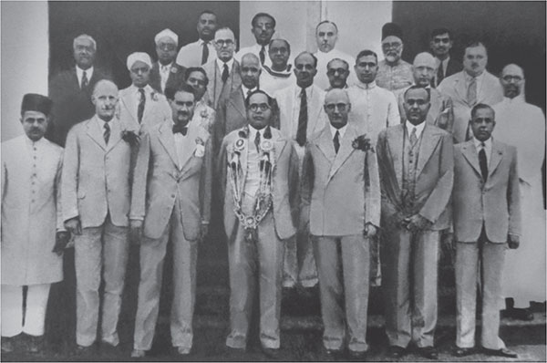
Dr Ambedkar (first row, centre) with Sir John Simon (left), president of the Simon Commission, and other members on 23 October 1928.
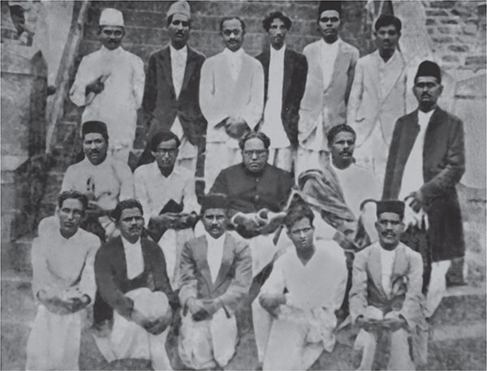
A group photo on the steps of Tilak Bridge, Dadar, Mumbai (on the side of Rajgruha) with Dr Ambedkar (second row, centre) and his associates on 25 September 1928.
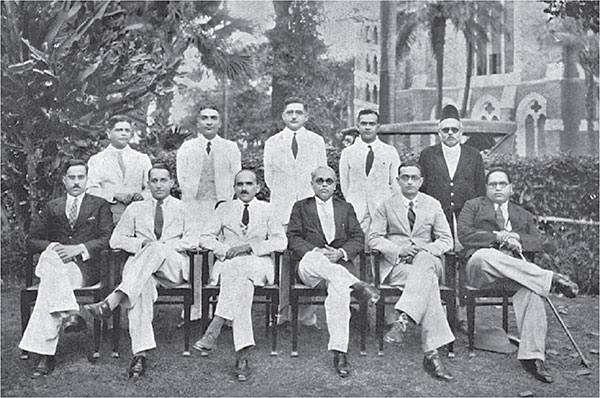
Dr Ambedkar bagged the temporary post of professor at Government Law College (June 1928– March 1929). He was pictured with faculty colleagues. (Seated from left) Prof. A.A. Adarkar, Prof. G.S.C. Brown, Principal A.A.A. Faizi, Prof. T.N. Walavalkar, Prof. A.B. Vaidya and Dr B.R. Ambedkar. (Standing from left): Prof. S.B. Jathar, Prof M.S. Vakil, Prof. N.C.H. Kayjee, Prof. L.F. Rodriguez and Registrar R.P. Karve.
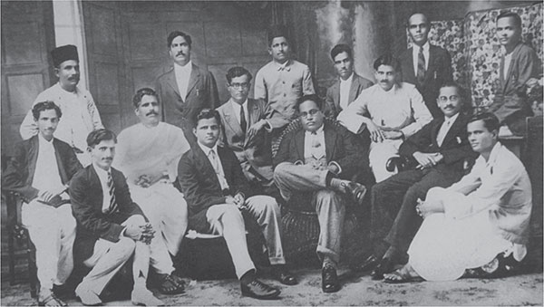
Dr Ambedkar with the volunteers of the Samaj Samata Sangh (League for Social Equality) on 9 June 1929. The Sangh organized vedic marriages of the Untouchables and organized co-dining for touchables and Untouchables. Sitting (left to right) are: M.B. Deshmukh, Bhalchandra V. Pradhan, Devrao Naik, A.S. Asaikar, M.G. Pradhan, Dr Ambedkar, D.V. Pradhan, S.S. Gupte and G.R. Pradhan. Standing (left to right): G.A. Jadhav, R.D. Kavali, N.V. Khandke, P.K. Kangle, Bhaskarrao Kadrekar and V.A. Kadam.
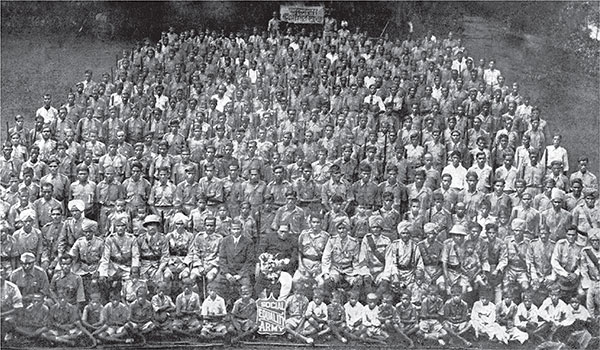
Dr Ambedkar with the soldiers of Samata Sainik Dal and its executives and associates.On 29 June 1929, the marriage ceremony of Keshav Govind Adrekar and Vithabai Tidekar was performed in a vedokta way. The officiating agnihotri was a Mahar, Tanaji Gudekar, while the main priest was a Brahmin, Sundarrao Vaidya. Dr Ambedkar attended it with Ramabai and Lakshmibai along with Rao Bahadur C.K. Bole, Dr Solanki, Shivtarkar Master, Govind Adrekar (bridegroom’s father) and Sambhaji Tukaram Gaikwad. Seated on the chair are (left) groom Keshav, bride Vithabai and Palaye Shashtri (priest). The venue of the wedding was Damodar Hall, Mumbai.
Untouchables trying to enter the Kalaram Mandir in Nashik were stopped and arrested by the
police in 1930.
Melee at the Kalaram Mandir during the satyagraha in 1930.
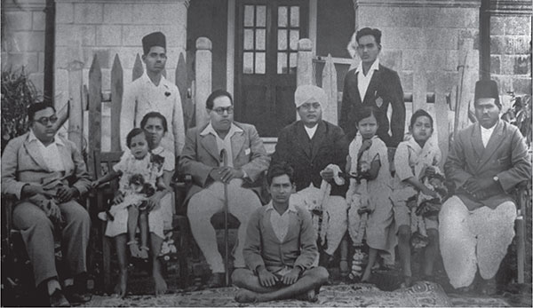
This photo was taken at Ahmadnagar in the last week of December 1934 in the bungalow of Raoba Punjaji Thenge with his family members. On the extreme left is Raoba, Dr. Ambedkar and Raoba’s family members and Amrutrao Dhondiba Rankhambe of Vinchur (extreme right). Standing behind are his sons Krishnarao and Bhagwat. Raoba was a civil contractor, related to Rankhambe and was very rich person.
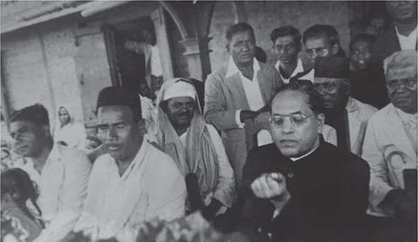
Dr Ambedkar during the Kalaram Mandir satyagraha in 1930. Seen in the picture are Dadasaheb Gaikwad (on his left) and Makdebua (behind).
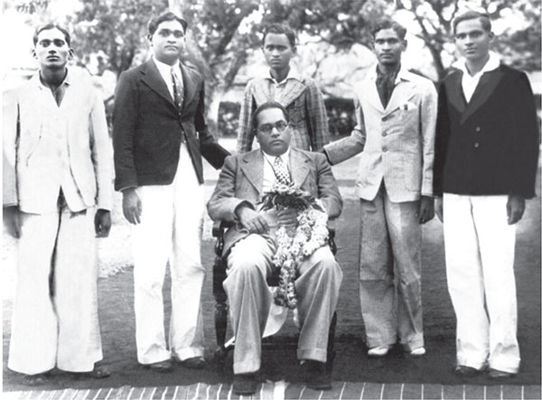
Dr Ambedkar was felicitated by the teachers of Solapur on 1 September 1930. Standing on his right are K.R. Madhale and other teachers.
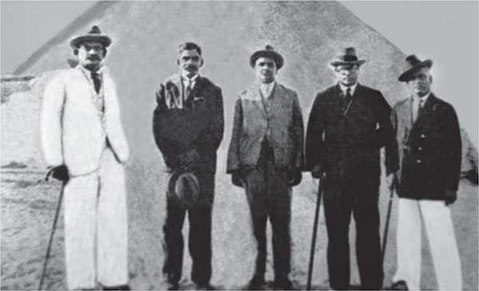
Dr Ambedkar (left) attended the first Round Table Conference by a steamer ‘Viceroy of India’ on 4 October 1930. He reached Cairo port on 11 October 1930. This picture was taken in front of the Pyramids of Giza. (From right) Annasaheb L.B. Latthe, Dr Ambedkar, Ramaswamy Mudliar and Narlikar.
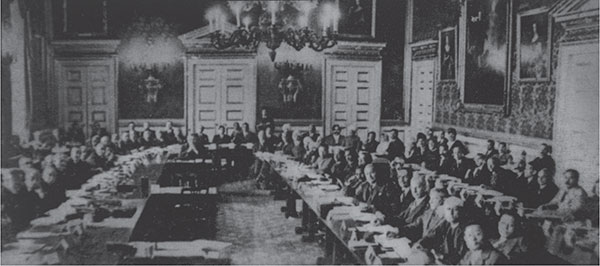
Dr Ambedkar at the first Round Table Conference in London in 1930–31.
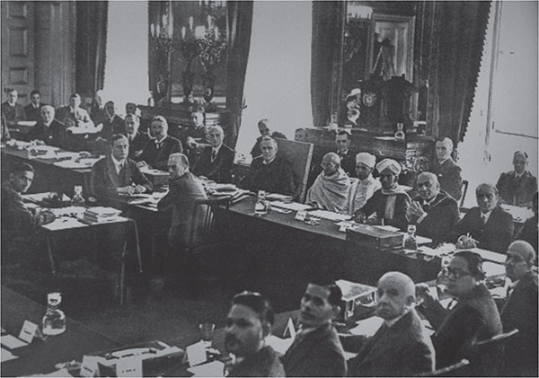
Dr Ambedkar, Mahatma Gandhi and other representatives from India at the second Round Table Conference held in London on 7 September 1931.
With Muhammad Zafarullah Khan at Round Table Conference.
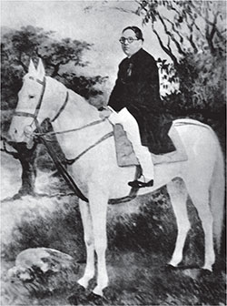
Dr Ambedkar pictured at the Nipani Dak Bungalow in 1931.Dr Ambedkar (centre) pictured with the management committee of Janata. Seated on his right is Ramchandra Krushnaji Kadam and on his left is Sitaram Narayan Shivtarkar.
‘Rajgruha’, his new Bungalow in Hindu Colony, Dadar (East). He shifted his family in 1933. The top storey was added along with extension at the rear to convert Rajgruha into a students’ hostel of
Siddharth College in 1950s. The original picture of the bungalow is unavailable.
Dr Ambedkar with some leaders who participated in negotiations for the Poona Pact in front of Yerwada Central Prison. On his right are Sir Tej Bahadur Sapru and Bar M.R. Jayakar and on his left Dr P.G. Solanki and at the end cricketer P. Balu.
Mallikarjun theatre, Hubli in November 1933.
Dr Ambedkar (second from left) with his family as seen in 1934. (From left) Yashwant (son), Dr Ambedkar, Ramabai Ambedkar (wife), Laxmibai Ambedkar (sister-in-law) with a baby (Draupadi Mohite) on her lap and Mukundrao Ambedkar (nephew) along with Tobby (their dog).Fourth Phase (1935–1940) Tryst with Class Politics: Streaks of Caste With the promulgation of the Government of India Act 1935, a new paradigm of electoral politics set in. Ambedkar would rightly strategize to expand his constituency to include the entire working class and by a stroke of serendipity stumble upon the correct path of caste-class struggle in India.
However, the seducement of caste and deterrence of his own resources would not let him traverse it for long.
Those were the days when being a barrister meant almost a ticket to riches and opulent living. But because of caste, Ambedkar could not have even a reasonable legal practice. Moreover, because of his increasing involvement in the movement, he could not pay much attention to it. The expenses on the purchase of five to ten books every month and constant travel warranted some reliable source of income and hence he took up a job as a professor in the Government Law College from June 1928 to March 1929. Ambedkar was trying for the post of principal in the same college but because of a note of caution from the then chief justice of the high court that Ambedkar was a politician and could not be relied upon by the government, he did not get it. Six years later, he joined back as the Perry Professor of Jurisprudence for one year. He was elevated to the post of principal for two more in June 1936.1 He did not stay for the length of his term and resigned in 1937. During his tenure in the Law College, he made a forceful demand to have a permanent building for the law college, its library and a full-time four-year law course after matriculation.2
Ramabai
Round Table Conferences catapulted Ambedkar into national mainstream politics. Coincidently, Ambedkar who was struggling to find a stable source of income, found himself living in a house, becoming his stature in a Brahmin locality in central Mumbai. His house was a majestic two-storeyed bungalow, with a Victorian Gothic frontage, said to be designed by himself. The ground floor had two sets of two-bedroom blocks, designed perhaps to house two families—his and his brother’s. The first floor was a hall housing his library, a reading room and a resting room above it connected with a wooden staircase. He hoped that he would compensate for the hardship his family suffered.
Ramabai had endured penury when he was abroad (1913–1924) and occasionally worked as a labourer to feed the family, herself remaining half-starved. She had borne Ambedkar five children and saw four of them die before their second birthday mainly due to poverty. Long spells of underfeeding and putting in hard labour took a toll on her health. She mostly remained sick after she lost her last son. For an orphan girl of ‘coolie’ parents, living in a modern Rajgruha was a dream. She would often miss her roots in Poyabawadi Chawl and travel there to spend time with her neighbours, sometimes inviting them to her new home.
Ramabai came to the Ambedkar family as a child bride aged nine along with her two orphan siblings. Becoming part of a relatively better-off family, the poor girl might have imagined a comfortable life, but she had to spend the major portion of her life in pinching poverty, slogging along with her siblings and son for sheer survival. She spent days and nights in anxiety for her husband’s safety and health. She would observe rigid fasts; on Saturdays, she only took water and urad dal (split and skinned black gram), worshipped God and invoked his blessings on her Saheb. Gentle by temperament and frail by constitution, she was sober in manner, modest in speech, practical in her approach and generous in her dealings. She had working-class traits one of which was habitually eating pan vida (betel leaf) and sharing with others—this habit remained unchanged. Her kindness of heart is evidenced by an episode when she had gone to stay with the Varale family at Dharwad, Karnataka. Balwant Varale, with the prior consent of Ambedkar—who was going to London to attend the RTC—had taken Ramabai and her family members in a hired car to Dharwad on 6 October 1930. Varale, who managed a students’ hostel in Dharwad also stayed with his family in two hostel rooms downstairs. Once he ran out of funds to feed the boys. As Ramabai learnt about it, she immediately handed over a hundred-rupee note to Varale and her ornaments to pawn them for money, to buy food for students. He received some amount and returned the money to Ramabai.3 She was illiterate. Though Ambedkar’s letters addressed to her are available, there is none by her. Perhaps she was getting them written by someone like Shivtarkar. Unlike Jotiba Phule, Ambedkar neither taught her to read and write nor took her along from home. Even when she wanted to go with him to Mahad for satyagraha, he had quietly slipped off leaving her sad at home. One day, she had packed her luggage and insisted on being taken along to one of his conferences so that she might not pass her days in his absence in utter restlessness. It ended in a quarrel, with Ambedkar dismissing her fears as arrant nonsense.4 Like any of her ilk in those times, she was profoundly religious. She had a great longing to make a pilgrimage to Pandharpur, a famous place to which lakhs of pilgrims visit every year. Ambedkar did not relish this because they would not let her in as Untouchable. He is said to have consoled her by saying, ‘By our own virtuous life, selfless service and spotless sacrifice in the cause of the downtrodden humanity we would create another Pandharpur!’ Indeed, her Rajgruha would become the Pandharpur for the millions of Dalits not only from Maharashtra but all over the world! (Recently the living blocks on the ground floor of Rajgruha were converted by the family into a small museum that displayed his pictures, some articles, furniture and Ramabai’s utensils. With a growing devotional cult around him, it attracts a constant stream of people, which certainly out beats Pandharpur.)
Ambedkar shifted his residence to Delhi as a member of the Viceroy’s Executive Council and continued there until his death. His family continued to live in Rajgruha until 1954 when it was extended by two more floors over the expanded ground plan on its rear in order to convert it into a hostel for students of Siddharth College. It had to be done as the PE Society could not find a suitable building for the hostel which was required to comply with some rule of the Bombay University that mandated every college to have a students’ hostel. Rajgruha was vacated, and the families of Yashwantrao and Mukundrao were relocated to two small houses Ambedkar built for them in Khar, a western suburb of Mumbai. He had donated his library to Siddharth College, taking a part of it to Delhi. Ramabai would have been gratified seeing her Rajgruha housing students! When Ambedkar died in 1956, Rajgruha was entangled in a property dispute between Yashwantrao Ambedkar and Savita Ambedkar. Yashwantrao had to mobilize funds to pay Savita Ambedkar Rs 1.70 lakh for her share in Rajgruha, and in the process, he leased out its extension to tenants, who still occupy parts of Rajgruha. His own family shifted in 1965 to Rajgruha where it still lives. In November 1934, Ambedkar went with his associates on an excursion to the Ellora Caves. On his return, he found Ramabai bedridden with illness. Her health deteriorated despite treatment. On 22 May 1935, Ambedkar went to Panvel in connection with the work of starting a hostel there. A person was sent with a message to call him back as Ramabai’s health had become critical. He returned on 24 May and began nursing her. Ramabai passed away in the morning hours of 26 May 1935. Ambedkar cried uncontrollably, overwhelmed by her sacrifice for his homestead and the sense of guilt that he could not give her the life she deserved. Ramabai’s funeral procession to the Worli crematorium was attended by 40,000 to 50,000 people.
Will Not Die as a Hindu
After Ramabai’s death, Ambedkar became increasingly introspective and began feeling dejected. He even wanted to withdraw from public life. Since 1932, Ambedkar had been contemplating taking up a job as a judge in the high court but the then chief justice, Sir John William Fisher Beaumont did not approve it because of his political activism. He had even brought a letter of recommendation from British Prime Minister Ramsay McDonald, addressed to Governor of Bombay Sir Frederick Sykes for appointing him as a judge of the high court. But even that failed to work.5 On 22 July 1935, he shocked the Bombay–Pune Depressed Classes with his public announcement that he would withdraw from the movement and henceforth they should carry on under the leadership of Dr Solanki. Bombay Chronicle speculated that Ambedkar might have declared his withdrawal from politics in order to remove possible hurdles in his path to becoming a judge in the high court. His post as the principal of the Government Law College was considered a stepping stone to the high court. It speculated that Lord Brabourne may elevate him to the bench. It even speculated that Ambedkar might be eying ministership in Bombay.6
On 13 October 1935, Ambedkar presided over the Mumbai Province Depressed Class Conference at Yeola (near Nashik). In his powerful speech, he proposed a resolution for religious conversion which electrified the younger people but puzzled the old ones. He told his followers, ‘So long as we remain in a religion which teaches a man to treat another man like a leper, the sense of discrimination on account of caste, which is deeply rooted in our minds, cannot go. For annihilating caste and untouchability, change of religion is the only antidote.’ He then declared, ‘I was born a Hindu because I had no control over this but I shall not die a Hindu.’7 This declaration created huge consternation in the society. Gandhi called it an ‘unfortunate event’.8 Contrary to Ambedkar’s contention, Gandhi said, ‘Untouchability was on its last legs.’ He commented that religion was not like a house or a cloth that could be changed at will. He hoped that the millions of ‘unsophisticated and illiterate Harijans’ would not listen to him and realize that their lives are ‘intertwined with those of caste Hindus’. Ambedkar responded to Gandhi’s views on 16 October 1935, saying that inequality is the very basis of Hinduism, and its ethics are such that the Depressed Classes could never acquire their full manhood under it. Ambedkar stressed that his declaration was not a reaction in a huff or as a matter of wrath against the treatment meted out to the Depressed Classes at Kavitha village (a village in Gujarat where a few days ago, upper-caste Hindus had boycotted Untouchables for daring to ask for their children to be admitted to the local school) or any other place. It was a deeply deliberated decision. While agreeing with Gandhi that religion was necessary, he disagreed that man should continue with his ancestral religion even if he found that religion to be repugnant to his notions of the sort of religion he needed.9
His Yeola declaration created ripples in certain sections of the Hindus. The Nashik Hindu Progressive Citizens held a conference presided over by Shri Shankaracharya Kurtakoti on 26 October 1935 at Nashik. A delegation of five people from Nashik led by R.G. Pradhan met Ambedkar at Rajgruha on 10 November 1935 on behalf of Kurtakoti to discuss the proposed conversion. They tried to dissuade him from changing his religion. Ambedkar, however, reiterated that at the root of the Hindu social order lay Dharma as prescribed by Manusmriti and hence he thought it was not possible to abolish inequality in the Hindu society unless the existing foundation of the ‘Smriti’ religion is replaced by better religion.10 During the interview which lasted for three hours, while speaking on contemporary Indian politics, Ambedkar said: ‘Democracy is not suitable to India . . . India wants a dictator, a Kemal Pasha or a Mussolini. I had hoped that Mr Gandhi would attain the position of a dictator, but I am disappointed. . . . without a leader of the stamp of Kemal Pasha, there will be no salvation for India. But in the circumstances, it is impossible to get such a dictator in social and religious matters and hence I despair of the future of India.’11 He said this with reference to reforms Pasha brought about in the Islamic society of Turkey to transform her into a modern and powerful nation.
Nonetheless, it was odd to extol dictators’ methods for a person who would be the epitome of democracy. He would reiterate such remarks even later. For instance, while speaking in response to a civic address of welcome accorded by the Solapur Municipality on the morning of 4 January 1938, he said, ‘I am no believer in democracy as an ideal to be pursued in all circumstances and in all climes; and having regard to the present-day conditions in India, democracy is a most unsuitable system of Government. At any rate, for some time India needs the strong hand of an enlightened autocrat.’12 Of course, it was in reference to the attitudes of Indian people who ‘have more faith and less wit’. ‘Anyone who does anything out of the ordinary does something so eccentric as to be called in other countries an insane person, acquires in this country the status of a Mahatma or Yogi. And people follow him as the sheep follow the shepherd . . . Democracy must learn to give a respectful hearing to all who are worth listening.’13
Democracy will never have ideal conditions to start with; it rather is tasked to create those conditions through the process of learning. It has clearly failed to do it. Seventy years of our democratic practice throws up literal yogis and gurus as the heads of the Indian State!
Dharmanand Kosambi had a discussion with him on 26 October 1935 at Rajgruha on Buddhism. When he went back to Wardha, he spoke out his impression to Gandhi that Ambedkar was inclined to accept Buddhism. Kosambi expressed his desire to build a Buddha Vihara in Parel so as to deliver lectures there on Buddhism to the Untouchables to help them appreciate Ambedkar’s proposal to become Buddhist. On Gandhi’s prompt, Jugal Kishor Birla, who was sitting there, issued a cheque of Rs 17,500 as the indicative cost to Dharmanad Kosambi.14 Buddha Vihar was duly constructed and Kosambi delivered his sermons for some time.15
Annihilation of Caste
He received an invitation on 12 December 1935 to preside over the annual conference in 1936 of the Jat-Pat Todak Mandal (Society for the Abolition of Caste System), an anti-caste Hindu reformist group based in Lahore. It was established by Bhai Paramanand (1876–1947), a colourful personality who transited from being a religious missionary to co-founding the Ghadar Party; he was also convicted in the Lahore Conspiracy case.16 Once a protagonist of the Hindu Mahasabha in Punjab, he realized that the Hindu Mahasabha was incapable of destroying Brahmanism; he organized two mandals—one Jat-Pat Todak Mandal and the other, Hindu Samyawad Mandal (Committee for Hindu Equality). Most of the members of the mandal were Arya Samajists. Ambedkar accepted the invitation and prepared his speech for the same. He sent it to the mandal for getting it printed but the Mandal requested him to rethink a part of his harsh critique of Hinduism. His conclusion that since castes were rooted in Hindu Dharmashastras, their annihilation was not possible unless the Hindu Dharmashastras were destroyed, was too radical for the members to swallow. Some exchange of letters on this issue followed. Ambedkar refused to oblige and curtly asked them to get someone else to preside over who would speak what they wanted. He got the speech printed along with the correspondence with the mandal in the form of a book on 15 May 1936 at his own expense with the title Annihilation of Caste.17
Annihilation of Caste (AoC) expectedly created a good deal of turmoil among the Hindus and created intense reactions in the press too. Gandhi wrote three articles on (AoC) in his Harijan, on 11 July, 18 July and 15 August 1937 under the title ‘Dr. Ambedkar’s Indictment’. He made many a critical remark, to which Ambedkar replied exasperatingly. They were carried in the subsequent editions of the book as ‘Annexure’ to the original text. Gandhi commented on the text cited by Ambedkar as not being authentic. Ambedkar simply retorted saying he had taken it from the writings of B.G. Tilak, a recognized authority on the Sanskrit language and the Hindu Shastras.18 Gandhi then raised the point of their interpretation—that it could only be done by saints and made a judgemental statement that the Shastras do not support caste and untouchability. Ambedkar aptly answered that the masses are not concerned with either the genuineness of the text or its interpretation. Gandhi’s next point was equally platitudinous —he said that a religion professed by Chaitanya, Dnyandeo, Tukaram, Thiruvalluvar, Ramakrishna Paramahansa, etc. could not be devoid of merit as was made out by Ambedkar, and that it should not be judged by its worst specimens but by the best it might have produced. Ambedkar answered by posing a counter-question as to why the worst outnumbered the best in Hinduism by multiples.19 He added that Gandhi, by citing the names of illustrious saints such as Chaitanya, etc., tried to suggest that Hindu society could be made tolerable without any fundamental change in its structure if all the high-caste Hindus could be persuaded to follow a high standard of morality in their dealings with the low-caste Hindus. Ambedkar made a scathing criticism of Gandhi’s moralistic stance, asking whether he practised what he preached. He said that Gandhi was a baniya by birth but neither his ancestor nor he or his progeny followed their caste calling of trading. He pointed out the fallacy in the argument that a man must follow his ancestral calling, irrespective of his capacity. If everyone must pursue his ancestral calling, then it must follow that a man must continue to be a pimp because his grandfather was a pimp, and a woman must continue to be a prostitute because her grandmother was a prostitute. Ambedkar thus refuted Gandhi’s reading of the ideal of caste.20
Ambedkar ridiculed Gandhi’s attempt to distinguish between varna and caste. He said, ‘The real reason why the Mahatma is suffering from this confusion is probably to be traced to two sources. The first is the temperament of the Mahatma. [And] The second source of confusion is the double role which the Mahatma wants to play—of a Mahatma and a Politician. . . . Mahatma must be told that he is deceiving himself and also deceiving the people by preaching Caste under the name of Varna.’21
Concerning Gandhi’s accusation that the standards Ambedkar applied to test Hindus and Hinduism were too severe, Ambedkar agreed that one had to bear with the imperfections of the real world and the shortcomings of the society one lived in but at the same time one should not ‘consent to live in a society which cherishes wrong ideals or a society which having right ideals will not consent to bring its social life in conformity with those ideals’. He said he was disgusted with Hindus and Hinduism because he was convinced that they cherish the wrong ideals and live the wrong social life.22
Hinduism was premised on inequality. If caste was to go, Hinduism had to go. ‘There can be a better or a worse Hindu,’ Ambedkar argued, ‘but a good Hindu there cannot be.’23
AoC provides the essence of Ambedkar’s thought process regarding the menace of the caste system. His kaleidoscopic account takes into consideration most contemporary approaches vis-à-vis caste and provides his arguments against them. The thrust of it was how the social and religious reforms have constituted the base for other ‘revolutions’: ‘. . . generally speaking History bears out the proposition that political revolutions have always been preceded by social and religious revolutions.’24 He gave examples of political emancipation of the European people following religious reformation started by Luther; Puritanism, a religious movement in England being the precursor for the establishment of political liberty; for winning the war of American Independence; religious revolution by Prophet Mohammad before the Arabs became a political power; the religious and social revolution of Buddha preceding the political revolution led by Chandragupta; the political revolution led by Shivaji following the religious and social reforms brought about by the saints of Maharashtra; the political revolution of the Sikhs being preceded by the religious and social revolution led by Guru Nanak.25 It meant countering the notion of the communists (who he thought were misleading the working class of which many were Dalits, and hence his rival) that the revolution in base (the mode of production comprising forces and relations of production) precedes the superstructural revolution comprising entire gamut of politics, social, cultural and other things. Whether his observations were historically accurate is a moot point, but the broad allusion of political revolution with revolution in the mode of production is erroneous. The political superstructure, birthed by the cited ‘revolutions’, is a part of the superstructure. As such, unbeknownst to him, instead of refuting the contention of adversaries, he was reinforcing it with his own argument.26
His point, however, that ‘. . . turn in any direction you like, caste is the monster that crosses your path’27 still remains a profound warning to the communists that they could not ignore castes in India.
His analysis leads him to locate the roots of the caste system in the Hindu religion, particularly in its part that he called the religion of rules which is contained in Vedas, Shastras and Puranas. He did not have quarrels with its other part, which he calls the religion of principles contained in the Upanishads. According to him, it is the former that sources the sustenance to the caste system and therefore prescribes dynamiting the Vedas and the Shastras, to destroy the religion of rules for annihilating castes. There is not much problem in accepting that the Hindu religion with its plethora of texts, customs and rituals has fortified the caste system. But to see that it birthed the system, and still sourced its sustenance may be problematic. Because there is no text of Hinduism that completely corresponds to the caste system that ever existed. Not even Manusmriti, which is taken as the vilest representation of the caste system and therefore was chosen by Ambedkar to be burned at Mahad.28 The social systems come into existence through the changes in the forces of production. The discovery of agriculture perhaps is the best example that induced nomadic pastoral tribes to settle down and adopt new ways of life. As the settled community started having surplus production, it ensued contention to control it and gave rise to divisions within it, the proto castes or classes. It birthed new ideologies, new religions, new moralities, and new laws in contention between these divisions, which stabilized with the victory of one over the other. The winning side would create a superstructure (literature, arts, culture, laws, and political system) to maintain the status quo and the losing side would try resisting it with theirs. But in no case, the social change was ever brought about by someone writing a code. Though it may create that impression in its hegemonic state, its origin always lies in the material contentions. If castes were rooted in the Hindu Dharmashastras, the destruction of which would annihilate them, how does one explain castes in other religious communities in India when their religions do not support them? Do people observe caste because the Hindu shastras ask them to or do they do it by sheer inertia of custom and tradition or caste becomes an easy tool to exploit the Dalit labour? These and many such questions may be provoked by the text.
No text or code or scripture could create a social system. Even the Constitution that is credited to him could not create the ideal society that he adored much. Far from it, it could not even incorporate things he explicitly proposed such as State Socialism. It could not be out of tune with the extant mode of life. As is known, it was acutely constrained by the fissiparous interests voiced by the Constituent Assembly. What prevailed ultimately in the final Constitution was the interests of the dominant classes to the extent that Ambedkar had to publicly disown the Constitution as good for no one. The text certainly contributes to the sustainability of the mode of life and its development but cannot create it. Notwithstanding the virtues of the Constitution, it had to be a mere extension of the codification of the extant system of governance that was established to serve the colonial interests. In post-colonial India, the native dominant classes (capitalists, landlords, and entrenched castes) wanted to continue with the colonial system which had proved itself to governing the populace, only with such modifications that would assuage the people whose aspirations were forged by the freedom struggle and changing ethos of the outside world. The virtues attributed to the Constitution stemmed from this logic. Even the colonial system was not birthed by any of the earlier British constitutions; they simply codified it for its sustenance. It was birthed by the accumulation drive of the European merchants and incipient capitalist class. The British constitutions in the form of subsequent India Acts also followed to regulate the incipient capitalism that came piggybacking on colonialism. Therefore, destroying the Dharmashastras would have done nothing to the caste system.
Anyways, towards the end, Ambedkar said that he did not think the Hindus would ever be ready to destroy their Dharmshastras for annihilating castes, and therefore he had decided to renounce Hinduism. It meant escape from the caste shackles and not their annihilation. More importantly, it implied that the caste system was indestructible. History is a testimony, however, that systemic untouchability quite similar to India’s existed in many pockets in the old world, which is extinct today. A social system in pre-colonial Korea, which had a community of Baekjeong (spelt Paekchong)29 strikingly similar to India’s Dalits may be interesting in this context. It was completely annihilated during the last decade of the nineteenth century.30 As for the escape, the empirical evidence post-conversion to Buddhism verily suggests that even that is not possible with the instrumentality of religions. The larger society continued identifying the Buddhist converts by their Hindu castes.31
Mukti Kon Pathe?
Ambedkar was addressing a series of public meetings and conferences on exiting Hindu religion. He attended a conference on 12–13 January 1936 at Pune, which was presided over by Rao Bahadur N. Shivraj.32 In his presidential address, N. Shivraj said, ‘The only way to get rid of untouchability is that the Depressed Classes should leave the Hindu religion not necessarily by conversion to another religion already existing but possibly by starting a new religion, or by reviving the ancient one practised among the Adi-Dravidas, long before the Aryans brought to India Hinduism with its various customs.’33 The Bombay Presidency Mang Conference was held at Naigaum, Dadar attended by about 5000 members of the Mang community. It declared full trust in Ambedkar and its full preparedness to follow him ‘en masse’ in his move for a change of faith. Ambedkar who attended the conference as a special invitee spoke at the end assuring them of full support and accommodation by the Mahar community.34 On 17 May 1936, he visited Kalyan and addressed a meeting of 5000 Untouchables.35 It appeared he was actively considering Sikhism. He attended Sikh Mission’s conference at Amritsar on 13–14 April 1936, which had attracted huge crowds of Sikhs and the Depressed Classes from Punjab, Kerala, United Provinces and Central Provinces. The main feature of the conference was the conversion of five prominent leaders of the Thiyya community of Kerala headed by Dr Kuttir and fifty others from United Provinces and Central Provinces to Sikhism.36 It was in response to the appeal from Periyar E.V. Ramaswamy the pioneer of the self-respect movement in Tamil Nadu, to the Thiyas/Ezahwas of Kerela to consider the conversion call of Ambedkar.
His conversion call likewise evoked a lot of reactions, both negative and positive. While the orthodox elements were vehement in their opposition, the reformists were positive. While it enthused his followers, it also created unease in many of his caste men. To explain his rationale behind conversion, a Mumbai Ilaka Mahar Parishad (Bombay Provincial Mahar Conference) was organized on 30–31 May 1936 in Naigaon (near Dadar, Mumbai). A huge pandal was constructed for this purpose and was named Ramabainagar. In the morning the Mahar Ascetics’ Conference took place in which they all shaved their beards and moustache and destroyed every symbol of Hinduism. Besides ascetics, devadasis, muralis, potrjas, bhutes, aradhis and jogtis collected at the conference unanimously supported the conversion call.37 Amongst those who were present by special invitations were Jones Stanley, a European missionary and B.J. Jadhav. On the platform were several Sikh and Muslim leaders and priests eager to catch any direct or indirect hint in the matter of conversion. The conference was presided over by B.S. Venkatrao, a Depressed Class leader of Hyderabad, popularly known as Hyderabadi Ambedkar.38
Ambedkar rose to deliver his presidential speech. Describing the disabilities which the Depressed Classes had to undergo, he said that so long as they remained in the Hindu fold, there was no salvation for them. Then he declared in the style of communist Manifesto, ‘You have nothing to lose except your chains and everything to gain by changing your religion.’ His entire speech was published with the title ‘Mukti Kon Pathe [What Path to Salvation]’.39 The entire speech was in the form of questions and answers; the questions being of his own imagination. In the beginning, he raised the question of why the meeting was only for Mahars and not for all castes of Untouchables. While he gave a plausible reason that he could better assess the magnitude of public support for conversion per caste, he emphasized that each caste should independently decide on what is best for their emancipation. As in Mahad, so was here, the focus had been on Mahars. The caste idiom of the movement and such restrictive references to Mahars, kept his following limited to the Mahars and equivalent castes in other regions (generally most populous caste among Untouchables), which identified him as their caste hero. This preface betrayed the lack of conviction that these disparate castes could ever be united under a single identity. Interestingly, he used the left rhetoric of class struggle for the struggle between the Untouchables and the caste Hindus:
This is not a feud between two rival men. The problem of Untouchability is a matter of class struggle. It is a struggle between caste Hindus and the Untouchables. This is not a matter of doing injustice against one man. This is a matter of injustice being done by one class against another. This class struggle has its relation with the social status. This struggle indicates how one class should keep its relations with the other class. From the instances given above, one thing is clear. This struggle starts as soon as you start claiming equal treatment with
others.40
Addressing the material reasons for conversion, he explained the numerous ways in which they are made to suffer in their day-to-day life. He termed it as a class conflict between touchables and Untouchables. Coming to the core question of the pathetic plight of the Untouchables, he attributed the plight of the Untouchables to their comprehensive and endemic weakness: numerical, financial and spiritual. They were numerically weak because at any place they constituted a small minority. They were financially weak because they neither had assets nor a source of income. They were spiritually weak because the servitude of millenniums killed their confidence; they internalized the lower status as their fate. He then compared their state to Muslims. He observed that Muslims also were a numerical minority everywhere and not necessarily a financially strong community. But they have a spiritual strength that no one could easily dare hit a Muslim person as they casually do the Dalits. He therefore inferred that their emancipation lay in overcoming these weaknesses which they could do by merging into some existing religious community in the country.
The manner in which he referred to the Muslim community in his speech indicated his preference for Islam over other religions, viz., Christianity and Sikhism, which met his criteria. As a matter of fact, many Mahar youths had already come wearing Turkey (Muslim) caps to the conference assuming they had to convert to Islam.41 After answering all possible questions that could arise in the minds of his listeners, he concluded the speech by invoking Buddha who said: ‘Be your own guide. Take refuge in reason. Do not listen to the advice of others. Do not succumb to others. Be truthful. Take refuge in truth. Never surrender to anybody! If you keep in mind this message of Lord Buddha at this juncture, I am sure your decision will not be wrong.’42
When after two decades he fulfilled his vow taken at Yeola and converted to Buddhism, as we would see in Chapter 7, it completely violated this rationale for conversion. Buddhism was almost extinct from the mainland and the ordinary people barely knew of it. As such, barring the North-east borders, it did not have any community in India. The reason Ambedkar would profess it as a choice was entirely different from that given in 1936. It was that Buddhism was the most rational, scientific, and democratic of all the religions in the world and was the only religion that had a history of fighting against the caste system.
Existentially speaking, history has disproved his characterization of Muslims as a cohesive community bound by a religious spirit, who unitedly resist an attack on any of its members. Muslims in India and even globally, project a fragmented mass and have been at the receiving end of demonization and rendered vulnerable after the infamous 11 September 2001 terrorist attack in the United States. The rise of the right-wing Hindutva in politics is to a large extent manifestation of these facts. Every religion reflects a core belief that is shared by its adherents which creates an illusion of homogeneity. Islam had this belief in Allah, Buddhism had in salvation and Hinduism had in the karma and dharma. All cater to the inherent vulnerability of people by distancing them from their existential reality.
It only proves that religions, Buddhism (notwithstanding its rationalist ideological orientation) included, are incapable of contributing positively to any emancipation project; on the contrary, they can easily evoke negativity in people and turn into a monstrosity. No institutionalized religion is an exception to this. The notion of attributing strength to communities based on their faith has been repeatedly proven wrong. Religion did bind them as a cohesive mass; the more illiberal the religion, the more cohesive its community appeared. It sustained its communities through the ups and downs of history. Like Jews, dispersed across the globe after their exodus preserved memories of their homeland in Palestine and believed that one day they would return to it. But it stayed as a notion and not an exemplar of any strength. They could not resist their ostracization, oppression and genocide for two millennia. The same befell every other religious community. When the community belonged to the ruling religion, it naturally partook of its cultural commons and appeared strong but when it lost its connection, it suddenly looked as miserable as any. Muslims, once a ruling community for nearly a millennium, are reduced to be worse than Dalits and Adivasis in India today.
As for the core argument for religious conversion as the path of emancipation of Dalits, even after completely agreeing with him that Hinduism is a singularly inegalitarian religion that deserves to be discarded, the fact should not be overlooked that even the religions with lofty principles manifest in their communities as their antithesis. Even Hinduism, as he acknowledged, had its good part in the Upanishads (Religion of Principles) which is overwhelmed by the Dharmshastras (Religion of Rules). Basically, all institutionalized religions notwithstanding their tenets, are used as spiritual infrastructure for the ruling classes to disorient and enslave the masses. Looking at what is happening in Buddhist countries like Myanmar, Thailand, Sri Lanka, and Vietnam, even Buddhism is not an exception to this broad observation. Far from contributing positively to any emancipation project, they can easily evoke negativity in people and turn into a monstrosity. The principles of religion are inconsequential when they get institutionalized. It just becomes a cultural identity of the people that manifests in the face of others.
As part of spreading the message about conversion among all sections of the Untouchables, Ambedkar called a meeting of men and women of the Mahar community engaged in prostitution in Bombay on 16 June 1936 at Damodar Hall. The meeting was attended by over 500 men and women belonging to the Devdasi, Potraj, Bhute, Aradhi and Jogti sects. Ambedkar thanked them for their initiative to step outside their despicable lives and to connect with the larger politics of dharmantar to become moral human beings. Ironically, Ambedkar easily assumed that all women of Kamathipura had lost their self-respect because they prostituted their bodies. He vehemently and in an authoritative tone said:
In Mumbai today, if Mahar community has to walk with heads hung, is when they walk through your Kamathipura. Every Mahar feels frustrated when he witnesses how their sisters allow the rest of the samaj to ridicule and shame them. You have shown your readiness to dharmantar along with the rest of the Mahar samaj. However, I am neither happy that your decision will increase the number of my followers, nor am I contented that my dharmantar decision will be supported more because of you . . . Whether you change religion along with us or not, it does not matter much. But I insist that if you want to be with the rest of us, you must give up your disgraceful life. The Mahar women of Kamathipura are a shame to the community. Unless you are prepared to change your ways, we shall have nothing to do with you, and we shall have no use for you. There are only two ways open to you either you remain where you are and continue to be despised and shamed or you give
up your disgusting profession and come with us.43
Ambedkar thus clearly blamed prostitutes who became an object of shame and hate, as well as the ones, who enticed and invited, exploitation of their own bodies. He was expressing his patriarchal anxieties about the prostitutes holding them responsible for the broader social stigmatization of Dalit men. He was concerned more with the shaming of men and the larger community rather than Dalit women who prostituted their bodies. He even threatened them that, if needed, he would use force and violence to eliminate prostitutes and protect the samaj. He issued a strict warning to prostitutes: ‘If you continue your living like this, . . . being a batta on the Mahar community, I am warning you that I will prepare thousands of young volunteers and uthav karin [uproot] you from Kamathipura.’44
He further added: ‘You will ask me how you are to make your living. I am not going to tell you that. There are hundreds of ways of doing it. But I insist that you must give up this degrading life. You must marry and settle down to normal domestic life as women of other classes do and not continue to live under conditions which inevitably drag into prostitution.’45
As he spoke, there was a big commotion in the hall. They shouted that they were brought to the meeting by some people giving false promises. They asked, who would arrange for their living if they gave up their professions. They hurled abuses and left the hall in anger.
In another episode, one Pathhe Bapurao (born Shreedhar Krishna Kulkarni [1866–1945]), a Brahmin owner of a famous Tamasha house, met Ambedkar on 10 September 1927 and in response to his call for financial support for the Mahad satyagraha, offered to donate proceeds from eight of his shows. But Ambedkar flatly refused it because his money, according to him, was earned by deploying the social and sexual labour of Mahar women. While one may moralize his refusal by saying that a Brahmin was exploiting Mahar women, in view of the fact that Bapurao had braved excommunication by his Brahmin community, left his Brahmin wife and lived with Pavlabai, a Mahar woman as partner, patronized and mingled among the Mahar and Mang artistes, contested caste and the injunctions of brahmanya (brahman hegemony),46 what perhaps lay at the roots of his refusal was the orthodox values and morality that stigmatized the lower caste art forms like Tamasha and Tamasha artistes. If it had been Pavlabai offering financial support in place of Bapurao, Ambedkar would have still refused it as he refused to empathize with the Maharins of Kamathipura. As Christopher Jaffrelot observed, Ambedkar’s approach to reforms was no better than his predecessors, rooted in Sanskritization. He wanted people to emulate upper castes in their clothes and conduct. The economist in him should have better realized that peoples’ placement in the social hierarchy creates economic barriers that cannot be transcended merely by asking for it. Dalit women working as farm labourers or in other menial vocations cannot simply live like Brahmin women. The majority of men and women who attended the meeting were in their professions not by volition but by compulsion. Before asking them to give up their profession, one needed to ponder over why they were primarily there. In a similar episode, when Ambedkar addressed the women who had walked a long distance and come to see him at Mahad during the Mahad Satyagraha, he asked them to wear their sarees and ornaments as the Brahmin women did. This episode is narrated with pride that overnight the change took place in Mahar women and eliminated the possibility of thinking through the economic constraints involved in Sanskritization. How could Dalit women, who had to slog in the fields for sheer survival of their families, emulate the lifestyle of Brahmin women? These methods gloss over women’s servitude and do not constitute their liberation.
Moonje Factor
The call for conversion evoked widespread support from all sections of the Untouchables. Ambedkar’s speech on 30 May was pregnant with the threat that the Untouchables may embrace Islam. Moonje, the ex-president of the Hindu Mahasabha wrote in his diary, ‘I am certain he [Ambedkar] will not join Sikhism . . . If he gives up Hinduism he will not join any other isms but will go straight into Islam.’47 Moonje visited him on 18 June 1936 and held long discussions on conversion and arrived at an agreement that Ambedkar would not consider any non-Indian (Abrahamic) religion and would rather consider Sikhism for his conversion.48 Only two weeks before entering into formal negotiations with Ambedkar–Moonje had poured his true self into his diary noting: ‘. . . the most vital point on which there must be [the] concentration of all energy, money and other resources, is the militarization of the caste Hindus: so that they must (sic) be able to punish both those who change their Hindu faith and also those who bring about such change of faith.’49 The Hindu Mahasabha had tried earlier to get all other Untouchable leaders—Jagjivan Ram, Rasiklal Biswas, J.M. Mandal, Dr Dharma Prakash, P.N. Rajbhoj, M.C. Rajah, and Baloo Palvankar—to the All India Mahasabha’s seventeenth session, held in Poona in December 1935, to oppose Ambedkar’s conversion threat. As such what Moonje truly thought of the Untouchables (actually Ambedkar) is revealed by his noting of 5 February 1936 in his diary: ‘. . . any money spent on untouchables is like feeding a garden-serpent with milk. We must leave the Untouchables most severely to themselves.’50
Moonje succeeded in getting Ambedkar to accept Sikhism for conversion and to join Hindus and Sikhs in countering Muslim and Christian proselytizing among the Untouchables. Having accomplished the Moonje-Ambedkar Pact, Moonje wrote a letter from New Delhi on 30 June 1936 to Rao Bahadur M.C. Rajah, informing him that he had a long conversation with Ambedkar and arrived at a formula with him on conversion. The formula was: ‘If Ambedkar and his followers were to embrace Sikhism in preference to Islam and Christianity, and to honestly and sincerely cooperate with the Hindus and the Sikhs in propagating their culture and in countering the Muslim movement for drawing the Depressed Classes into the Muslim fold, the Hindu Mahasabha would be prepared to make an announcement that it would not object: (i) To the conversion of the Depressed Classes to Sikhism, (ii) To the inclusion of the Neo-Sikhs in the list of the Scheduled Caste, and (iii) To the enjoyment by the Depressed Classes of the political rights of the Poona Pact.’51 He said he would meet Pandit Malaviya and the Maharaja of Patiala and asked Rajah to keep it ‘strictly private and confidential’ until the decision on it was taken.
M.C. Rajah replied to Moonje, referring to Ambedkar’s note in which he had made the distinction between conversion as spiritual change and migration from one community to another for social, economic and political reasons. He faulted Moonje saying, ‘[O]ne would expect you as the president of the Hindu Mahasabha to ameliorate the social condition of the Depressed Classes by removing civil and social disabilities of these classes, not to speak of securing for them the right of worship in Hindu temples on an equal footing with other worshippers and to further the Harijan movement started by Gandhiji all over the country. Instead of doing this, what is it that you are doing? You are dissecting the Depressed Classes and affiliating them religiously to the Sikhs while retaining them politically as Hindus.’52 He bluntly wrote that the intent seemed like an attempt to serve the communal interests of the Hindus and the Sikhs. He bluntly observed, ‘We are not sheep and cattle to be bartered away in this fashion. . . . It is not our purpose to weaken the Hindu community but to strengthen it . . . We do not wish to be pawns in the game of communal conflicts and competition.’ He objected to his suggestion to choose between Sikhs and Muslims. ‘Why should we antagonize and stand arrayed against Muslims? They are our brothers as much as the Sikhs and the Hindus.’ He pointed out that the conversion would not solve but create an additional communal problem as the new converts would create new communal problems. ‘This question of conversion or the communal migration as a move of the political chess board does not disturb us much in South India. We are content to work under the Poona Pact, partly as a separate electorate and partly with a joint electorate preserving our status with the Hindus both religiously and politically.’ He curtly dismissed his proposition by saying, ‘I would therefore be no party even to the political manipulations which are proposed in your letter.’53 Gandhi endorsed Rajah’s opinion.54
In this entire episode of Moonje–Ambedkar Pact, the most understandable role was Ambedkar’s. It is a mystery why Ambedkar should first enter into a negotiation with a person like Moonje on an issue he considered crucial in the emancipation schema of the Untouchables. If the frustration with the Hindus had occasioned the decision to convert to some other religion, negotiating with their spokesperson not on the issue of the decision but on which religion to convert to appears simply weird. If the declaration of resolve at Yeola not to die in Hinduism was not to shock the Hindu sensibility, one fails to comprehend what it was. The possibility that the adversary would thwart such a mortal threat with due amend is embedded till the actualization of the threat. Therefore, when Moonje approached Ambedkar for discussions, the only point that could be discussed was what reform his Hindu Mahasabha was prepared to launch and when. Which religion Ambedkar should convert to was none of Moonje’s business. Moonje’s concern was not religious; it was political as he feared Ambedkar would go over to Islam, upending his Hindutva applecart of the Hindu nation. He wanted Ambedkar to convert to Sikhism, not knowing that in purely religious terms, Sikhism is far closer to Islam than Hinduism.55 Ambedkar never expressed any of the concerns he brought in his statement after the negotiations with Moonje during his speech, ‘Mukti Kon Pathe’. The entire explanation for his conversion decision was curiously focused on the meliorative concerns for the Untouchables who suffered three weaknesses. They needed to overcome them by merging into some existing religious communities, viz., Muslim, Christian and Sikhs, in that order.
Ambedkar, in his statement, said: ‘Conversion to Islam or Christianity will denationalize the Depressed Classes. If they go to Islam the number of Muslims will be doubled and the danger of Musli domination also become real. If they go to Christianity, the numerical strength of Christians becomes 5 to 6 crores. It will help to strengthen the hold of the British on this country. On the other hand, if they embrace Sikhism, they will not only not harm, but they will help the destiny of the country, they will not be denationalised.’56 The entire argument is unfortunate coming from a person like him. Calling the Muslim and Christian populations denationalized is nothing but buying into venomous definitions of Hindutva bigots of nationalism based on communal (religious) identity. It, no doubt, is a dangerous argument to say the least. Next, Ambedkar repeats Moonje’s cultural argument: ‘If the depressed classes join Islam or Christianity they not only go out of the Hindu Religion, but they go also out of the Hindu culture.’57 What is Hindu culture but for the caste culture? If the entire project is to destroy/escape caste, should he be worried about the Hindu culture? If he should, it was better to stay put in Hinduism. Culture is a multi-dimensional construct;58 religion is just a factor among many and cannot be valorized as its sole determinant, particularly when its influence is admittedly pernicious.
Next, Ambedkar refers to the political implication of the conversion as ‘a very small matter’,59 but it figures in Moonje’s letter most prominently. If Hindu Mahasabha did not have any role in getting the Untouchables ‘reservations’, in what way they would pressure the British to extend them after conversion to Sikhism? And was this not a premature consideration when the conversion was still in an ideation state? (He had reportedly ‘promised’ Gandhi that he would not take any step at conversion for ten years or more.)60 When the conversion took place after two decades, there was absolutely no such political agreement in place and the converts had to live schizophrenic lives for more than three decades. Buddhism essentially fulfilled the criterion of ‘Hindu culture’, more than Sikhism as the latter had assimilated a lot from Islam.61 As agreed with Moonje, Ambedkar did lend serious consideration to Sikhism for conversion. Although the Moonje–Ambedkar Pact remained as an awkward footnote in the political history of the twentieth century, it provided important insights into the politics of the Hindu Mahasabha and also of Ambedkar, including their respective roles in the development of a Hindu nationalist and a Dalit political identity.62
Knowing that Ambedkar was actively considering Sikhism for conversion, the Sikhs began proactively facilitating it. They proposed that Yashwant and Mukund go to Amritsar for a change of climate and clear Punjab University’s matriculation exam, which Ambedkar accepted. They lived in Amritsar for one-and-a-half months in 1941 but could not pass the exam. They gave up sitting for an exam thereafter. Ambedkar had sent a team of sixteen persons, most of them erstwhile Mahar mendicants, under the leadership of Shankardas Buwa Barve and Narayandas Buwa Barve (Chitegaon, Nashik) in September 1936 ostensibly to study Sikh religion. (None of these sixteen were even well-educated, leaving apart being scholars. It appears, Ambedkar was never serious with Sikhism and merely wanted to show interest to extract something from them such as Khalsa college, his Europe tour, etc., for which the Shiromani Gurudwara Prabandhak Committee had paid Rs 7000 as published in Gurudwara Gazette, Amritsar.63) These sixteen people converted to Sikhism on 31 March 1937 and they came back to Bombay on 4 April 1937. Shankardas Barve was named Amar Singh and others also were given similar Sikh names. After a few months, with an alibi that they were not getting their Rs 45 honorarium, fifteen of them reverted to their old attire and started begging. Amar Singh was completely alienated from Ambedkar and wrote a critical, almost nasty, booklet against Ambedkar, Asprushyanchya chalvalitil savala gondhal (Great Confusion in the Movement of Untouchables) in 1940.64 He took up a job as a Sikh in Khalsa College, which was established at the instance of Ambedkar by the Sikh leaders. It was a byproduct of the proposal that Ambedkar would convert to Sikhism. With the understanding with the Sikh leaders, especially Sarab-Hind Mission of Amritsar, around 1935–36, Ambedkar got a 27,000 sq. yard-plot on lease from the Bombay Municipal Corporation. The Shiromani Gurudwara Prabandhak Committee (SGPC), the apex Sikh body at Amritsar, transferred the funds from Gurdwara Nanakana Sahib (now in Pakistan), the birthplace of Guru Nanak, as per Section 127 of Sikhs Gurdwara Act of 1925. When Ambedkar dropped the idea of embracing Sikhism, he transferred this property to the Sarab-Hind Sikh Mission in 1938. Sarab-Hind Mission transferred the property to Gurdwara, Nanakana Sahib in 1939, Principal of Khalsa College Dr Ajit Singh said at the Platinum Jubilee Celebrations of the college.65 The news of Ambedkar’s inclination to convert to Sikhism prompted a jatha of 500 Untouchables to become Sikh.66 Earlier, in 1928, in response to a call given by Ambedkar to convert to Islam, some 20 odd Mahars from Jalgaon-Jamod had become Muslims.67 By 1941, the relationship between Sikh Mission, Khalsa College and Ambedkar soured and ended. Dharmanand Kosambi who had established a Buddhist Vihar in Parel, thinking of Ambedkar’s interest in Buddhism, also got disillusioned seeing his closeness to Sikhism and left for Varanasi, handing over the vihar to the Mahabodhi Society. He returned to Wardha in 1946 and died by forsaking food in 1947.
Independent Labour Party
The Government of India Act, 1935 expanded franchise from seven to thirty-five million and mandated direct elections to provincial assemblies in 1937. Though Ambedkar effectively diverted the movement of the Untouchables towards politics, he did not have a political party to participate in elections. Initially, he thought in terms of founding a party of the Depressed Classes but on deeper consideration, he came to broaden the constituency to the entire working class which would naturally subsume the Depressed Classes. As such he formed a political party on 15 August 1936 and named it Independent Labour Party (ILP). In an interview with Times of India of the same date, Ambedkar declared that he had ‘broadened the name and the programme of the party so as to permit political cooperation between the other classes and the Depressed Classes. The nucleus of the party would still be the fifteen members of the Depressed Classes, but members of the other classes were free to join the party. Ambedkar further explained that the word ‘labour’ was used instead of ‘Depressed Classes’ as labour included the latter.68 Ambedkar’s labour would not be content only with the struggles against economic exploitation but also against social oppression. In the Indian context, it was a profound conceptualization as both these struggles were inseparable in the emancipation schema of the working classes. He would aptly declare later that Brahmanism and Capitalism were the two enemies of the working classes.69 ILP was neither welcomed nor supported by communists. They thought that it would only result in fragmenting the labour vote. Ambedkar, on his part, retorted that the communist leaders were fighting only for the rights of workers but never for the human rights of the Dalit workers. He cited an example of the textile mill unions that kept Dalit workers away from the lucrative departments in the mills on account of untouchability.70 While the political prudence demanded strategic expansion of the constituency, from the restrictive Dalit or Untouchable to generic labour, the choice of the name, Independent Labour Party (ILP), reflected the tacit attraction of the Fabian experiment in England. Formed in 1893, ILP in England was an experiment of the Fabian principle of permeation. Later, they actively supported the Labour Party formed in 1900, Fabians writing its Constitution.71 Fabianism represented an alternative to Marxism in achieving Socialism. Although Ambedkar never spoke about it, his Fabian leanings kept surfacing in his political arguments against Marxism.
The political spectrum in 1936 comprised only the Indian National Congress as the all-inclusive liberal party, and others ostensibly representing communal interests such as the Muslim League and the Hindu Mahasabha. From 1900 to 1908, the Congress was divided into conservative and radical groups. The increasing unease among the youth could not be contained by the Congress, which resulted in the emergence of armed groups during the same period, particularly in the wake of the Partition of Bengal in 1905, in Bengal, Punjab and Maharashtra. Some educated youth in the industrial cities took inspiration from the Bolshevik revolution in Russia and formed the Communist Party of India (CPI) in 1925. Most of their leadership fell victim to colonial repression and spent time in jails between 1930–35. By 1934, some radical Congress members who rejected what they saw as the anti-rational mysticism of Gandhi as well as the sectarian attitude of the CPI, were attracted by Fabianism mixed with vague notions about Marxism–Leninism. They formed the Congress Socialist Party (CSP) (a socialist caucus) within the Congress Party. The CSP included advocates of armed struggle or sabotage (such as Yusuf Meherally, Jai Prakash Narayan, and Basawon Singh Sinha) as well as those, who insisted upon ahimsa or non-violent resistance, such as Acharya Narendra Deva.72 In 1936, the communists joined CSP, as part of the Popular Front strategy of the Communist International (Comintern). Besides, there were many smaller left parties born out of differences among the communists such as the Revolutionary Communist Party of India, the Bolshevik Party of India, the Socialist Republican Party, the Socialist Unity Centre, the Bolshevik Mazdoor Party of India, the Revolutionary Workers Party, Deshsevak Party, Bihar Kisan Sabha, Workers and Peasants Party, Workers and Peasants League, Kisan Mazdoor Party, Krishikar Lok Party, etc.73 The ILP became the new addition to this spectrum but without any connection with anyone.
The ILP reflected the deep influence of Fabian socialist ideas on Ambedkar inherited from his Professor John Dewy at Columbia University and later experienced in England, the den of Fabianism. It was the name of a British party, formed in 1893 when the Liberal Party appeared reluctant to endorse working-class candidates, representing the interests of the majority. At a meeting of the Trade Union Congress (TUC) in September 1892, a call was issued for a conference of advocates of an independent labour organisation, which took place in Bradford on 14–16 January 1893. Among its 130 delegates, many were the Fabians like George Bernard Shaw, who represented 11 local Fabian Societies. A proposal to name the new organization the ‘Socialist Labour Party’, by a Scottish member, George Carson, was defeated by a large margin by a counterproposal reaffirming the name Independent Labour Party, moved by the logic that there were large numbers of workers not yet prepared to formally accept the doctrine of Socialism who would nonetheless be willing to join and work for an organization ‘established for the purpose of obtaining the independent representation of labour’.74 A sitting independent MP and prominent union organiser, Keir Hardie, became its first chairman.75 Later, in 1900, the Trades Union Congress cooperated with the Independent Labour Party to establish a Labour Representation Committee, which took the name Labour Party in 1906. After the First World War, the party made great strides. The party’s new program, ‘Labour and the New Social Order’, drafted by Fabian Society leaders Sidney and Beatrice Webb, committed Labour to the pursuit of full employment with a minimum wage and a maximum workweek, democratic control and public ownership of industry, progressive taxation, and the expansion of educational and social services. When Ambedkar sat to draw up the programme for ILP, he had this model of the Labour Party before him. The resultant manifesto of the ILP reflects similar ideas creatively adapted to the contemporary conditions of India.
ILP Manifesto
The election manifesto of the ILP had comprehensive measures for the management and administration of industry; rural and agricultural sectors; educational reforms and social reforms. To improve the productivity of agriculture, it proposed starting of land mortgage banks, cooperative societies of agricultural producers and marketing societies. It spoke about the fragmentation of holdings being the direct cause of the poverty of agriculturalists. It advocated rapid industrialization to ease the pressure of population on land. It stressed the urgent need for the protection of agricultural tenants and for extending the benefits of industrial workers to agricultural workers. It proposed to introduce free and compulsory education; emphasize technical education; provide scholarships through State aid to educationally backward communities, adult education to spread literacy; reorganize university education, establish teaching universities and remove the present defective system of examination. Socialist in flavour, the ILP accepted the principle of State ownership and management of industry in the interests of the people. The party would try to root out the unjust economic methods that a particular caste should accept a particular type of occupation. Special stress would be given to abolishing the Khoti system and Talukdari system and uplifting agricultural and industrial labour. To solve the problem of rural indebtedness and protection to middle-class tenants, the ILP would make appropriate legislation. The ILP also proposed to remove the disparity in the prevailing taxation method which was skewed against the poor. ILP also proposed to stop the boycott of social reformers by the Hindu orthodoxy; to remove every hindrance in the utilization of facilities provided with public funds; exercise effective control of religious societies and use their surplus funds for providing education; to solve the problems of unemployment, beggary, and shelter by passing legislation. For the rural sector, the ILP proposed to make essential facilities available; introduce schemes like town planning, health centres, etc. in rural areas; and provide facilities like libraries, public halls, radios, rotary clubs and cinemas to modernize rural attitudes. It also promised to maintain a fair, incorrupt and efficient administration; keep the judiciary separate from the executive and avoid a monopolistic grip of a particular caste on administration.76
Such was his zeal to project the party as a ‘class’ organization that the word ‘caste’ appeared only twice in the last item of the ILP’s programme with reference to preventing ‘the administration from becoming the monopoly of any single caste or community’ and ensuring ‘a fair admixture of all caste [sic] and communities in the administration of the Presidency’.77
But it was not enough to overcome contradiction in praxis.
Many praised the ILP’s programme. One English daily aptly observed, ‘. . . were it not for special electorates and compartmental franchise, the new party would probably within a brief period be one of the most powerful political groups in the country.’78 Three criteria were used for candidates: 1) good knowledge of English; 2) youthfulness and enthusiasm, and 3) adherence to the party discipline. For reserved seats, most tickets were given to Mahars, except one to a Mang and the other to a Gujarati Scheduled Caste. The lack of Chambhars, the well-to-do Untouchable community was striking. Congress contested two seats with all its might; one against Ambedkar in Bombay and the other against Bhopatkar, a leader of the Democratic Swaraj Party in Pune who was supported by ILP. P.N. Balu, a famous cricketer of those days, was pitched against Ambedkar. P.N. Rajbhoj and Deorukhkar were pushed into the arena to sabotage Ambedkar’s chances.
Electoral Politics
In his first-ever political exercise, the self-motivated bickering among Dalit leaders surfaced portending the splintering of the future Dalit movement. It took place in Nashik, one of the centres of the Ambedkarite movement. B.D. (Dadasaheb) Gaikwad got the official candidature of ILP, which antagonized his rival A.D. Rankhambe. The first-past-the-post type of elections provides many degrees of freedom for political players. It may be possible that the Congress instigated Rankhambe to become a turncoat in the movement. Whatever the truth, Rankhambe formed another group and began to hold meetings independently. He did not even spare Ambedkar and publicly criticized him as well as his thoughts. He stood one Sambhaji Yesu Rokade against Gaikwad as his candidate on a reserved seat which he lost.
Ambedkar left for London on 11 November 1936 supposedly to consult with the parliamentary pundits in England and members of the British cabinet about what impact the conversion of the Untouchables to any other religion would have on their political rights which were granted by the India Act 1935 and figure a possible way out in case of negative impact. As a matter of fact, this issue was not complex warranting consultation abroad. Ambedkar himself had explained at length in his interview with the Times of India on 24 July and thereafter in an editorial in a joint issue of Janata dated 25 July and 1 August 1936. He had first explained that the Act gives political rights to Scheduled Caste, a category which is not linked to any religion whatsoever and therefore their rights would not be affected by their conversion to any other religion. However, in apparent contradiction to this logic, he argued that if the Untouchables converted to Islam or Christianity, they would lose their SC rights but would gain them as Christians or Muslims. If the latter was valid, then the question might rather arise about whether the quantum of reserved seats granted to these religious categories was the same as that for the SCs and in order to avail of it, whether the converted people would be truly absorbed by the existing Christian/Muslim communities. Besides London, he spent some time in Rome, Geneva and Berlin and returned to Bombay on 14 January 1937. The expenses for this visit were borne by the Shromani Gurudwara Prabandhak Committee79
because at that time he was seriously considering Sikhism for his proposed conversion.
There were strong rumours that Ambedkar had married his British friend Francisca (Fanny) Proust in England and was returning with her.80 A crowd of 50,000 of his followers had gathered to welcome him at Ballard Pier but they were disillusioned to see him disembarking alone. Her letters allude to some such plan which, however, did not fructify. In one of her letters, she had asked him about the progress of ‘our cottage’ and ‘when you will be ready for me’. She was very keen on coming to India but it never happened. Khairmode, his first biographer, tried deciphering the reference to the cottage to be the bungalow Ambedkar contemplated building on the Panhala fort. But he could not even start it. Later in 1947–48, he bought land at Talegaon–Dabhade to build a small bungalow there. He had dug a well there and begun cultivating the land. But thereafter he did not pay much attention to it. In 1952–53, he had even a plan to build a big bungalow at Aurangabad but even that he gave up.
The elections took place on 17 February 1937. ILP contested fifteen seats in reserved constituencies of the Bombay presidency and scored thirteen wins (two lost were Dr Solanki and Subhedar Savadkar). Out of seventeen candidates, fifteen came out successful. Ambedkar was elected by 2000 votes. Among the candidates, there was one Matang, one Holar, three Kayastha and ten Mahars. The posts of secretary and deputy secretary of ILP were rotated among the CKPs and hence Mahars and other Untouchable castes could not strike as strong an emotional bond with the party as should have been. Nonetheless, with faith in Ambedkar, Mahars solidly stood behind him and held the ILP flag aloft. ILP’s performance was commendable relative to others in the Bombay presidency. The Congress fell just short of gaining half the seats. However, it was able to draw on the support of some small pro-Congress groups to form a working majority.81
B.G. Kher became the first prime minister of Bombay as it was called then. With 10 members in the Legislative Assembly of Bombay Presidency, the ILP became the second largest opposition party, behind the Muslim League.82
In March 1937, the final verdict of the Mahad case came in Ambedkar’s favour. The crucial document to prove the tank was a public property was produced by Surbanana Tipnis who had obtained it from a Brahmin government pleader Pandurang Deshpande.83 This victory, coming after a full ten years proved a pyrrhic victory as both its context as well as relevance had long past expired. In the same month, he was entangled in another case filed in the Small Causes Court in Bombay. The case related to the debentures worth Rs 25,000 sold by Ambedkar to some people for buying the Bharat Bhushan Printing Press in 1928–29. As the debenture holders were not getting any information on accounts or interests about these debentures, some of them—Rao Bahadur R.S. Asawale, JP; Nagnath Sayaji Naguji, Laxmanrao Karadi Jaya, S.S. Parsha, Ramkrushna M. Salvi, JP, Gunajirao Ghule, JP, and V.S. Alkonda—collectively filed a suit through M/s Soloman & Co. on 19 March 1937. The case had come onboard in 1938–39 but what transpired thereafter was not known.84
Anti-Khoti Bill
The ILP had decided to move three bills in the Bombay Assembly: 1) to abolish the Khoti system; 2) to regulate moneylending; and 3) to amend the system of Mahar Watan. On 17 September 1937, Ambedkar tabled a bill in the Assembly seeking to abolish the Khoti system and give tenants the status of landowners under the Land Revenue Code.85 Khoti, a system of land tenure in Sothern Konkan came into existence under Yusuf Adil Shah of Bijapur in the early sixteenth century. The landlords, or khots, were appointed by the government and typically hailed from the traditional aristocratic communities such as Chitpavan Brahmans and a few from high-caste Marathas and Muslims.86 They provided credit to peasants and encouraged them to settle in their villages on condition that they would provide free labour to reclaim land from the sea and estuarine swamps and to construct paddy fields. As the rentiers of villages, the khots enjoyed many privileges—exacting free labour, taxes and imposing their feudal writ —and a substantial measure of autonomy. They were free to do anything with the farmers. This sometimes was not just restricted to extorting exorbitant tax, but also committing all sorts of atrocities including dispossession of their lands. Caste was an integral part of the system. The Congress leaders in the Bombay Presidency, with ties to agriculture, felt compelled to back the rights of khots, leading the party to endorse the khoti system consistently during the colonial era because of its alignment with upper-caste and class interests. It was unlike the dominant Ryotwari system in which the farmers paid the land taxes directly to the government.
Discontent against the Khoti system along with the Malguzar system in Nagpur had been simmering for long, and there were instances of Khot being murdered for their excesses. S.K. Bole had attempted to bring anti-Khoti legislation on 6 October 1922 but it was withdrawn when Mountford (who was the Commissioner for the Southern Division) asked that the legislation should wait until the enquiry which was being made into the economic conditions of cultivators of the Kolaba and Ratnagiri districts is completed.87 It was a hoax as the said enquiry did not touch upon the Khoti system. Khots had their support base among the entrenched classes. B.G. Tilak, one of the biggest Congress leaders of those times, himself a Khot, was a strong supporter of the Khots. He had once argued, ‘just as the government has no right to rob the sahukar (moneylender) and distribute his wealth among the poor, in the same way, the government has no right to deprive the Khot of his rightful income and distribute the money to the peasants. This is a question of rights and not of humanity.’88
Ambedkar’s demand for the abolition of the Khoti system appalled the khots. The Ratnagiri district Khot and Zamindar Sabha complained to the president of the AICC on 11 August 1936 that, ‘The programme of Abolition of the Khoti system is a confiscatory programme. It looks very much like socialism or communism.’89 They threatened that if it is allowed to go on, it might lead to riots with extremely undesirable consequences. As his biographer rightly observed in the first Provincial Assemblies, Ambedkar was the first legislator in India to introduce a Bill for the abolition of serfdom of agricultural tenants. He aimed at securing occupancy rights for tenants. He demanded the abolition of the Khoti tenure and its substitution by the Ryotwari system.90 While presenting the Bill he said, ‘[T]he system of Khoti tenure while it binds the Khot to pay revenue to the government leaves him free to do what he likes to the inferior holders and this freedom has been so grossly abused by the Khots that the inferior holders are not only subjected to all kinds of exactions but they have been reduced to a state of abject slavery.’91 Shivaram Laxman Karandikar, a Hindu Mahasabha leader who was a strong supporter of the Khoti system, opposed this Bill. During the 1937 election, Karandikar was supported by the Khots and was elected from northern Ratnagiri where the Khots had their stronghold.92 After a disappointing response from the Congress to his suggestions, Ambedkar warned the Khoti supporters that ‘if the Khoti system is not abolished then it would be a great threat to public peace’.93
During the late 1930s, there was a surge in anti-khoti agitation led by figures like Chitre, who delivered impassioned speeches against the khoti system. In 1938, he warned protesters of potential bloodshed if the khoti system persisted, urging them to resist Congress and khot influence.94 This heightened tension led to clashes between landlords and tenants, with retired Mahar servicemen playing a pivotal role in supporting the movement. Ambedkar’s visit to Ratnagiri in the same year further galvanized opposition to the khoti system, criticizing the Congress and Gandhi for their pro-landlord stance. He presided over six meetings in different parts of the district for gathering the support of masses for the proposed bill.95 Under the leadership of N.N. Patil, peasants began opposing Congress initiatives in the Konkan region, with protests intensifying during Kher’s visit in 1938. Parulekar also advocated for tenant unity against the khots and Sawakars, advising them to resist police and authorities, withhold repayments, and retain possession of lands.96
Ambedkar promoted mass struggles, encouraging peasants to boycott khot land and refuse to pay makta or produce, reassuring them of his support even in the face of imprisonment. Overall, this period witnessed a fervent movement against the exploitation of peasants by landlords, illustrated in the songs and demonstrations of the time.
Class–Caste Struggle
The Congress government did not bring forth this Bill for discussion in the Assembly. Therefore, Ambedkar launched a protest march against the Bombay Legislative Assembly to abolish the Khoti system. Shyamrao Parulekar and Anant Chitre played important role in mobilization. The communists too lent support, although at one point he expressed surprise for their indifferent attitude.97 It culminated in a march of 25,000 peasants, both Untouchables and touchables (kunbis, agris, bhandaris, etc) to the Bombay Council Hall on 12 January 1938.98 It was the biggest pre-independence mobilization of peasants which outcompeted the Kisan rally of 15,000 held at Faizpur in Jalgaon district at the time of the 1936 Congress session. The deputation’s demands presented on behalf of the marchers included the enforcement of the minimum standard of wages for agricultural labourers, remittance of all the arrears of rent, immediate legislation to provide with or without compensation for the abolition of the Khoti system and the Inamdari system99 (in the Inamdari system, an individual or an institution received some lands as inams in return for some service to the kings. The inam holders paid no land tax to the government but leased the inams to the tenants for cultivation on payment of rent) and also landlordism.100 It also demanded fixed wages for the agricultural labourers instead of wages which was a step towards destroying the caste-based economy. The march demonstrated how class and caste could be fought together. Ambedkar rightly described it as being against both ‘Capitalism’ and ‘Brahmamism’.101 It may be noted that the marchers walked with red flags, shouting the slogans ‘khot shahi nasht kara, savakarshahi nasht kara, shetkaryancha vijay aso, kamkaryancha vijay aso, lal bavata ki jay, Ambedkar Zindabad [Destroy the khots’ autocracy, destroy landlordism, victory to peasants, victory to workers, victory to red flag, Long Live Ambedkar].’102 In 1940, Ambedkar adopted this red flag for ILP, with eleven stars in the upper left corner, which symbolized the eleven provinces of British India.103
Bhai Chitre, Indulal Yagnik, D.V. Pradhan, and CPI members Lalji Pendse and S.S. Mirajkar addressed the marchers. Finally, Ambedkar spoke, calling for a united struggle. His speech was fraught with Marxist overtones. He said, ‘Really seen, there are only two castes in the world—the first is that of the rich, and the second that of the poor. Besides that, there is a middle class. This class is responsible for the destruction of all movements!’ He also openly declared his closeness to Marxist ideology.104
He observed that while the toiling poor constituted a huge majority, their ignorance kept them away from power. If they understood the power of organization and self-reliance, they could easily capture power. He exhorted the peasants and workers to stay united forgetting their caste and religion:
Just as we have organized and come here today, so we must forget caste differences and religious differences to make our organization strong. Khots are only one to two thousand in number but still they exploit you who are about 13 lakhs, of course with the support of Congress. Due to casteism, toilers could not build a strong united organization—but now we
see such an organization is born and growing, which is a very happy thing.105
Addressing his communist supporters, he stated:
I have definitely read studiously more books on the Communist philosophy than all the communist leaders here. However beautiful the Communist philosophy is in those books still it has to be seen how useful it can be made in practice. [. . .] if work is done from that perspective, I am sure, India will not need as much effort and time for revolution as the Russia needed. And therefore, in regard to the toilers’ class struggle, I feel the Communist
philosophy to be closer to us.106
Indeed, if this natural affinity between communist and ILP forces had been allowed to flower, the Indian revolution would not have been completely lost. Interestingly, both sides contributed to this loss in full measure. Contrary to his rhetoric, Ambedkar was never well-disposed towards the communist (Marxist) philosophy, which he would denigrate as the philosophy of fattening pigs.107 His claim of reading more books on communism than all communists put together was doubtful as those who tried to (which includes me) infer his interest through the books he read, did not find any book by or on Marx and Marxism in his extant collection.108
His references to Marxism never went beyond rhetoric.109 Rather, it is by now well established that he had an overwhelming influence of Pragmatism and Fabanism which can be seen as an essential counter to Marx’s philosophy. His responses towards Communism actually emanated from his apprehension that communists, with their powerful emancipatory rhetoric, might eat into his follower base.
These were the years in which the pages of Janata, Ambedkar’s weekly newspaper, were filled with reports of the struggles of workers and peasants against ‘capitalists and landlords’ as well as those about atrocities against Dalits.110 The anti-Khoti movement, therefore, established Ambedkar’s credentials as a leader of a working-class struggle. The anti-Khoti struggle continued after the historic march. On 14 May 1938, a public meeting was held on behalf of the ILP at Kankavali (Ratnagiri) where Ambedkar spoke about the bill on Khoti and said that if the bill did not get passed because of the Congress majority, he would launch a satyagraha and go to jail. He asked the tenants not to pay the forthcoming rent to the Khots if the bill was not passed. He exhorted them to be prepared for the satyagraha and to go to jail after him.111 On 16 May 1938, another meeting took place at Chiplun where he again reiterated his resolve to go to jail if the bill was not passed in the Assembly. Ambedkar’s bill failed and a subsequent act was passed by the Congress that gave only minor relief while maintaining the intactness of the system.
Workers’ Strike
In 1937, Ambedkar formed the Municipal Workers Union in Bombay. While Ambedkar’s Khoti Abolition Bill was not passed; the Industrial Dispute Act was. It provided another instance of Ambedkar and communists coming together for a massive one-day textile workers’ strike. Ambedkar had condemned the Industrial Dispute Act in the Assembly, describing it as the ‘Workers’ Civil Liberties Suspension Act’.112 He defended the right of workers to strike as ‘simply another name for the right to freedom’,113 and to penalise a strike, therefore, ‘is nothing short of making the worker a slave.’114 He declared that he would oppose the ‘bad, bloody and brutal Bill’. The idea of a one-day protest strike was voiced first by Shamrao Parulekar, Secretary of the ILP and MLA from Ratnagiri, in an interview with the communist weekly Kranti.115 Ambedkar quickly seized on it and announced that the Executive Committee of the ILP would organize a one-day general strike. The Council of Action formed for the strike included the ILP, the communists and the moderates, while the socialists and Royists (followers of Manabendra Nath Roy) dissociated themselves because of the agitation’s anti-Congress nature. On 24 September, the Bombay Presidency Trade Union Congress (BPTUC) decided to join forces with the Indian Labour Party (ILP) in a strike, forming a Council of Action. Ambedkar convened a meeting of his party’s MLAs to strategize for the strike’s success. In the weeks leading up to 6 November, communists held about forty worker meetings to promote the strike. Propaganda in communist bulletins like Kranti and the National Front outlined strike instructions. On 6 November, a labour rally at Kamgar Maidan drew over 80,000 workers, with prominent Communist leaders criticizing the government’s Black Bill. The following day’s strike garnered a positive response, with Ambedkar and Jamnadas Mehta rallying workers in a lorry adorned with red flags. Some disorder and significant stone-pelting occurred at two mills, resulting in injuries to some policemen. Stone-throwing disruptions began after 8:30 a.m., and two instances of police firing ensued during the strike, resulting in fatalities at Elphinstone Mills and Spring Mills.116 The strike paved the way for the coming together of the two streams (Dalit and communist) of working-class movements but none would use it. While communists would be wary of sharing Ambedkar’s anti-Congress stance, as it decided to work with Congress as an anti-imperialist peoples’ front, approved by Moscow117
and Ambedkar would keep blurting out his resentment against the attitude of the communists. For instance, just a year back in a district conference of the Depressed Classes at Masur in early September 1937, he had declared that he was a confirmed enemy of the communists who exploited labourers for their political end. Interestingly, just a few statements before his rhetoric emulates Marxian phrases, ‘Congress was not courageous enough to proclaim the ideal of social and economic equality, enabling the common man to get leisure and liberty to develop himself according to his liking. That was not possible, he observed, as long as the means of production were controlled by a few individuals in their own interests.’118 The conduct of the Congress government, which was spearheading the anti-colonial movement, clearly portended what was in store for the working classes under the so-called Swaraj. Like the violent police actions find easy justification today, back then, none other than Vallabhbhai Patel had backed the firing. He stated that the police firing was justified as ‘organised coercion, terrorism and violence were freely used in the name of legitimate demonstration’.119 Ambedkar countered saying that Sardar Patel’s statement was full of untruths. Subsequently, the government appointed the Bombay Disturbance Enquiry Committee (BDEC) to investigate the cause of the strike. The communists boycotted the committee.120 The panel’s report concluded that the political motives of the labour leaders caused the strike. For the communists, it stated, the strike was a chance for ‘regaining their power over workers’ which was lost ‘by reason of the activities of the present Ministry, coupled with the actual work done by workers’ organisation started and controlled by the Congress’. For Ambedkar, it was due to the conflict of interests between his party and the Congress, and more practically it was for gaining an advantage in the coming Municipal Election. The report justified the firing.121 Ambedkar protested the increased power of city police in matters other than riots. The Industrial Dispute Bill was passed easily in the Bombay Legislative Council and the agitation subsided. The process of governmentality reflected in the incipient stage of the native rulers would be perfected over the next nine decades to dismiss peoples’ voices in the so-called democracy!
The strike made inspiring news in the left circle. (Labour Monthly, a magazine edited by Rajani Palme Dutt of the Communist Party of Great Britain, described it ‘as one of the greatest demonstrations of the working class in defence of trade union rights’. Communist organs, however, avoided mention of Ambedkar though it was his party, ILP, that initiated it and had maximum mobilization for its success.) Swami Sahajanand, the peasant leader from the United Provinces, saw Ambedkar at his residence in Bombay on 25 December 1938 and discussed the labour problem in Bombay and the agrarian reforms in general. He tried to persuade Ambedkar to join the Congress to form a united front against imperialism. Ambedkar replied that he would be glad to liquidate the ILP and join the Congress Party if it decided to fight imperialism. But he said that the Congress was using the constitutional machinery to advance the interests of the capitalists and other vested interests by sacrificing the interests of peasants and workers, and so he could not join such an organization.122
Ambedkar also opposed the move of the government to introduce the Wardha system of education, devised by Gandhi. Post-1937 election, when the Congress formed governments in seven provinces in India, it faced a dilemma about implementing their promise to provide free, compulsory and universal education and also introduce total prohibition since the former required huge sums of money and the latter dented even the existing revenue. To resolve this quandary, Gandhi proposed the idea of making education financially sustainable by integrating productive crafts into schooling. Gandhi articulated his educational philosophy through a series of articles in Harijan on 31 June 1937, laying the groundwork for the Wardha Scheme of Basic Education. An All India Education Conference convened in Wardha on 22 and 23 October 1937 to deliberate on various aspects of the proposed educational reform. At this conference, a committee chaired by Zakir Hussain was appointed to develop a comprehensive education plan and curriculum in accordance with the aforementioned resolutions. The scheme was not conducive to the development of a child’s cognitive faculty and was rather regressively oriented to push it back into the existing mode of production. It served Gandhi’s status quo-ist bania ideology but was against the basic grain of modern educational philosophy.
Iconization
Around the same time, Babu L.N. Hardas (1904–1939),123 MLA of ILP from Kamptee (Nagpur), coined the greeting ‘Jai Bhim’ (Heil Bhim [Ambedkar]) as a greeting for the community, like Sat Sri Akal, Ram-Ram and Salaam Alaikum mark a Sikh, a Hindu and a Muslim respectively.124
There is no other example of such mass salutation coined after a historical person, living or dead, except for the sole example of Nazi Germany’s ‘Heil Hitler’. Ambedkar was just forty-four then. He was also referred to as ‘Bhim Raja’ (Lord Bhim or Ambedkar the King). On 31 July 1937, when he had gone to Dhulia on a professional visit, the Dalit mobs greeted him in the early morning hours with thunderous applause and slogans like, ‘Who is Ambedkar, Ambedkar is our King’.125 In 1938, a meeting was held at Makranpur in Kannad taluka of Aurangabad district by Bhausaheb More, an activist of the Ambedkarite movement in which Ambedkar was also present. In that meeting, More asked people that they would greet each other only with ‘Jai Bhim’.126
The coinage of ‘Babasaheb’, the celebration of his birth anniversaries and now the spread of this greeting form among his followers set in motion the process of his deification. Actually, this process was set way back in 1927. Khairmode has recounted a comic incident, which, however, reveals the innate faith of people that only God can ameliorate their condition. During the Mahad Satyagraha, Mahar sadhus (ascetics) of different sects were brought together by one of Ambedkar’s associates who sought to prevail upon them to actively engage in social work, rather than just wander around begging from the community. They agreed that they would spread awareness about the Mahad satyagraha. But then a bizarre debate erupted among them, consuming all of their focus of attention. They were unanimous about Ambedkar being an avatar (incarnation) of God but could not identify the god. Some asserted that Ambedkar was obviously Rudra, pointing out their similar demeanour. However, others objected, believing that Rudra could not manifest in the body of an Untouchable. After a heated discussion, a consensus emerged, labelling Ambedkar as a half-Rudra incarnation. Nonetheless, a couple of sadhus remained unsatisfied with this resolution. When all of this was recounted to Ambedkar, he initially burst out laughing at the absurdity of it. However, his expression grew serious, and he admonished those around him, highlighting how such fantastic theological preoccupations had poisoned the Indian mind, perpetuated by Brahmins.127 Comic though, but it verily indicates how people tended to see him as a God-incarnate. With regard to celebrations of his birth anniversary, Ambedkar at times attended them in person. He was ostensibly against hero worship but did not do anything to stop them. While speaking at the grand celebration of his golden jubilee before a mammoth crowd of followers at Kamgar Maidan, he had calmly but emphatically said, ‘You have been celebrating my birthday for some 15 years past. I never attended them. I have always been opposed to them. You have celebrated my golden jubilee now; let that be enough. Let there be no more celebrations.’ He gave the reason for that: ‘Over-regard for leaders saps self-confidence of the masses, leaves them helpless when left leaderless in the hour of trial or when led by unscrupulous leaders.’128 True. But by then it had already crystallized into a custom which could not be annulled by some rational argument.
Then came the Ambedkari jalsas and an army of Ambedkari shahirs, who composed songs celebrating the life and accomplishments of Ambedkar. It had its immediate precursor in Satyashodhak Jalsa associated with the Satyashodhak Samaj founded by Mahatma Phule. There was a subtle difference between the two, however, while the Satyashodhak Jalsa exposed the deplorable condition of peasants, their exploitation by moneylenders (shetjis) and Brahmin priests (bhatjis), the evil of the caste system, and the importance of education as the key for their emancipation, the Ambedkari Jalsas tended to propagate Ambedkar’s message. The format of jalsa, the initial mangalacharan propitiating a deity was substituted by Ambedkar’s glories.129 They inevitably reduced it to a projection of his greatness through the dominant genre of Bhim geete (Ambedkar songs), Ambedkari shahiri (poetry in praise of Ambedkar) and Vidrohi jalsa (rebellious concerts), quite a misnomer for its status-quoist and conformist content. Ambedkari jalsa, as acknowledged by Ambedkar himself in laudatory terms saying, ‘A single song from a shahir is worth ten speeches of mine,’ became a very effective tool in building the movement as well as the deification of Ambedkar.
This paradoxical development of iconizing the iconoclast, as Ambedkar proudly described himself would only grow beyond all familiar bounds, making it easy for the ruling classes to manipulate the Dalit movement after his death, sadly with the same Ambedkar-icon that catalysed building the Dalit movement.
Two More Bills
Ambedkar presented a bill on 17 September 1937, in the Bombay Legislative Assembly aimed at abolishing the Mahar Watan, a system of servitude based on birth in the untouchable Mahar caste, which he had been advocating against since 1927. Mahar Watan represented a form of unchecked exploitation of rural Mahar people, legalized by the Bombay Hereditary Officers Act of 1874. Under this law, Mahars holding low-level government positions were essentially treated as indentured servants, required to work tirelessly across various government departments for meagre pay. In the absence of a Mahar servant, any family member could be compelled into government service. The responsibilities of these government servants were often ambiguous, leading to the assignment of menial tasks. In exchange for their arduous labour, Mahars received a piece of land known as watan and the wages or grain-share which they received for their services to the members of the village community was called baluta. However, the monetary compensation they received was often insufficient to sustain them, especially during drought seasons when farmers were partially exempted from providing baluta. Despite enduring this inhumane exploitation, Mahars were psychologically manipulated into believing they were watandars, viewing their assigned duties as a privilege regardless of their nature.
Ambedkar published a series of articles on the Mahar Watan system in Bahishkrut Bharat between 1927 and 1928, and organized meetings and conferences to educate people. He had also introduced a similar bill in the Bombay Legislative Assembly on 19 March 1928 to amend the Bombay Hereditary Officers Act 1974 but in vain. The bill sought to have a better arrangement for the hard work of the watandars. He proposed that the watan lands should be given to the holders of those posts at the full rate of assessment and they should be relieved from the obligation to serve. According to him, 60,000 Mahars were assigned to those watans, but one-third of the number would be sufficient. Those who were to be retained for the government service should be paid from the revenue derived from the assessment levied on the watans and from the baluta, so that there would be no additional burden on the government. While introducing the bill, Ambedkar brought to the notice of the house that watan lands were given to the Mahars by the ancient rulers of India.130 The government contributed nothing to it. Over the years, the land assigned underwent division and subdivisions, reducing the land to just a worthless notion. Ambedkar was very specific about the obligation of the State to promote the economic interest of the Untouchable watandars. In the prolonged debate with the government, Ambedkar and the ILP clearly defined the duties of the watan holders. Ambedkar penned five articles on the Mahar watans in the book, Mahars and Their Watan or Slavery in the 20th Century and also mobilized mass support for the bill by organizing several meetings and conferences.131
However, the bill failed to pass even the second time. Mahar watans would be abolished, under the Bombay Inferior Village Watan Abolition Act I of 1959, only after his death. The third bill Ambedkar introduced was the Bombay Moneylenders Bill in 1938, which was the first of its kind in India recommending specific corrective measures.132 He was deeply aware of the needs and sufferings of the rural poor as well as the industrial workers and the consequent exploitation of them at the hands of moneylenders. To counter the malpractices of the latter, he prepared a comprehensive bill suggesting corrective measures, which may be considered innovative even by the prudential standards advocated today. They included moneylenders being subjected to licences from the government which were renewable every year, compulsory written records of all lending operations and mandatory issue of passbooks detailing all transactions between borrowers and lenders.
Manmad Conference
He had a hectic schedule touring Maharashtra and Gujarat to address meetings and conferences of peasants. In Bombay, he formed his first trade union, ‘Municipal Workers Union’ in 1937, which by and large, remained confined to the Dalit workers, mainly Mahars. On 12–13 February 1938, a G.I.P. Railway Depressed Class Workmen’s Conference was organized at Manmad under the presidentship of Ambedkar. This conference was planned to discuss the problems faced by the Untouchable workers in the Railways due to the practice of untouchability. It was also planned to discuss the pitiable condition of these Untouchables and their families, in spite of the Railway being one of the richest and strongest organizations in India.133 Ambedkar was present on both days at Manmad and presided over the ‘Youth Conference’ on the first day, in which he presented the future programme of ILP, and addressed the ‘Untouchable Women’s Conference’, presided over by Mrs Mainabai Shamrao Bhole, a worker from Pune. For the main conference, he prepared his speech in English and got it printed so that it could be easily distributed to officers, the minister of railways and the governor-general.134
It is in this speech that he famously declared Brahminism and capitalism as the two enemies of Indian workers. He explained that Brahminism was not ‘the power, privileges and interests of Brahmin as a community’ but ‘the negation of the spirit of liberty, equality and fraternity’. He further explained that Brahminism was not confined to Brahmins alone, it pervaded everywhere and regulated the thoughts and deeds of all classes.135 He critiqued the labour leaders (generally referring to communist leaders) who in the name of Marx held that there were only two classes in the society —‘owners and workers’. He pointed out two errors in their understanding. ‘The first error consists in thinking as real what is only possible or ideal. Marx never said as dogma that there are only two clear-cut classes in a society namely the owners and workers. Such a statement is untrue in fact and therefore it is dangerous as a foundation to build upon any active propaganda with any chance of success. It would be as false as to hold that an economic man or a rational man or a reasonable man is a fact which exists in all classes.’136. He explained that the economists considered the economic man exists only if other things are equal. The Marxists have forgotten this ceteris paribus.137 Not only in India but even in Europe, the society did not have only two classes. It would be positively erroneous for India to dogmatically assume there were only two classes. ‘That all labourers are one, form one class is an ideal to be achieved and it is the greatest error to assume it is a fact.’138 He complained that labour leaders spoke vociferously against capitalism but never against Brahminism. He said, ‘So long as Brahminism remained a living force, there will be the necessity for its victims to organize themselves.’ The labour leaders should have no problem with it unless such an organization was ‘engineered by the employers’.139 Notwithstanding his rhetorical reference to Marx, these observations regarding the basic understanding of classes in live societies and conflation of the conceptual with real by the communists were profound enough to be introspected even today. One only wished the Indian communists had a Marxist attitude to consider them.
As usual, he was particularly harsh in criticizing communists as a ‘misguided body of men’ who have brought greater ruination on the workers than anyone else. ‘If today the back of workers is completely broken . . . if today unionism is an anathema, it is entirely due to the misuse of power which the communists had at one time over the trade unions.’140
He faulted them for organizing strikes to spread discontent in a mistaken belief that it would bring about revolution. ‘Not even a revolutionary Marxist would make a fetish of strikes, as was done in the good old days by the Revolutionary Syndicalists. The strike was never considered by revolutionary Marxists as a “revolutionary exercise” but was regarded as a very serious measure to be resorted to as a last extremity after all efforts had proved unavailing. But the communists have thrown all this to the winds and have looked upon strikes as a divine means of creating discontent among the workers,’ he contended.141 Likewise, he was very critical of M.N. Roy’s obsessive anti-imperialism. He criticized Roy’s opposition to the separate political organization of Labour as a terrible contradiction in terms. Roy’s view that the destruction of imperialism was the first and foremost aim of Indian politics ‘would be correct if it could be proved that with the disappearance of imperialism, all vestige of capitalism will also disappear from India. But it does not require much intelligence to realize that even if the British depart from India, the landlords, the mill-owners, the money lenders will remain in India, and continue to blood the people and that even after Imperialism has gone, labour will have to fight these interests just as much’.142 Besides communists, he exposed other political players who in some way interfaced with labour.
He made a high-pitch appeal for the workers to join the ILP, which had a clear programme, which gave the interests of the workers a first and foremost place, etc. Finally, he exhorted them to organize and stay organized until they achieved their goal.
Ambedkar delivered the Kale Memorial Lecture at the annual function of the Gokhale Institute of Politics and Economics, Poona, on 29 January 1939. The title of the lecture was ‘Federation versus Freedom’.143
Ambedkar dwelt upon the contemporary constitutional issue of India’s proposed federal structure. The issue of a federal structure of governance for the country was settled in the first RTC. Ambedkar had keenly participated in and contributed his perspective to the discussion on it and again in the second RTC when the issue had cropped up. This was the first public exposition of his views as to why he was opposed to the federal scheme proposed in the Government of India Act of 1935. He argued, giving examples of prominent federal structures such as in the United States of America, Canada, and Australia that they were prompted by the danger from external invasions. Since India did not have any the motive behind the scheme as he saw was ‘to use princes to support imperial interests and curb the rising tide of democracy in India’.144 He explained by differentiation between the Indian provinces and the princely states, as the basic federating units, in terms of their representation to the Federal House. Whereas the former was by election, the latter was by nomination by the autocratic rulers, which will always be under control of the British bureaucracy. On 19 March 1939, the Depressed Classes observed their independence day as on this date they had begun their struggle for equality in Mahad. Ambedkar made a speech during the occasion. The ILP working committee presided over by Ambedkar resolves on ‘complete independence’ of India. In October 1939, in his interview with the viceroy, Ambedkar fully acquainted him with the viewpoint of his community vis-à-vis the constitutional advance of India.
The Second World War
The outbreak of the Second World War occurred on 1 September 1939, with Germany’s invasion of Poland. In response, Great Britain and France declared war on Germany on 3 September. In October 1939, Ambedkar, representing the ILP, announced its position in the Second World War, expressing support for British endeavours. However, he voiced discontent over India’s lack of involvement in shaping foreign policy concerning war and peace. Ambedkar viewed the conflict as a battle between democracy and dictatorship and urged all free nations and the people of India to unite in defeating Hitler and Nazism.
After Britain declared war on Germany in September 1939, the viceroy, Lord Linlithgow unilaterally declared India as a belligerent State on Britain’s side, without consulting Indian political leaders or the elected provincial representatives. It was construed as a regression on the promises of self-rule.145 In response, in October 1939, the Congress ministries in all seven provinces resigned en masse, giving rise to the prospect of public revolt and political disorder. The All India Muslim League, the Hindu Mahasabha as well as regional parties including Ambedkar’s ILP, gave their support to Britain and the war effort in exchange for various concessions. Jinnah declared that the Muslim League would celebrate Congress resignations as Deliverance Day on 22 December because of the purported suppression of Muslims during the oppressive Congress rule. On 14 December, Jinnah demanded a Royal Commission to investigate his charges against the Congress ministers, which were framed based on Pirpur and Sharif reports,146 documenting pro-Hindu and anti-Muslim bias under Congress governments. In the course of the talk with a representative of the Times of India, Ambedkar upheld Jinnah’s idea and said that there was nothing ‘anti-Hindu’ about the observance of the Deliverance Day.147 While speaking to the Times of India again on 18 March 1939, he declared that his ILP would participate in these celebrations, and said, ‘When I read Mr Jinnah’s statement I feel ashamed to have allowed him to steal a march over me and rob me of the language and the sentiment which I, more than Mr Jinnah, was entitled to use.’148 It indicated that the Untouchables were the bigger victims of the Congress rule than the Muslims.149 Other Dalit groups and minority parties also supported the move. Rao Bahadur Rajah welcomed Jinnah’s demand for a Royal Commission and hoped that its investigation would be extended to all weak and minority communities, including the Depressed Classes.150 The other non-Muslim Congress opponents who supported celebrations of the Day of Deliverance were the All-India Depressed Classes Association, E.V. Ramasami Periyar, as well as some Parsis, and Anglo-Indians. Jinnah and Ambedkar jointly addressed the heavily attended Day of Deliverance event in Bhindi Bazaar, Bombay, where both expressed ‘fiery’ criticisms of the Congress party and according to one observer, suggested that Islam and Hinduism were irreconcilable.151
Asha Pramod Interview
ILP brought a bill on birth control in the Bombay Legislative Assembly on 10 November 1939. Birth control was one of the issues he emphasized in the manifesto of his Independent Labour Party. In the Assembly, P.J. Roham of the ILP delivered a speech emphasizing that ‘population policy’ was necessary for the eradication of poverty.152 While highlighting how the advanced countries in Europe brought down their birth rates from 1900 to 1933 while the birth rate in India remained constant during the period, he emphasized the importance of implementing a conscious policy of birth control by the government.153 On 16 December 1939, a conference of Watandar Mahars, Vethias, was held under the leadership of Ambedkar at Haregaon in the Shrirampur sub-division of Ahmednagar district to protest against the rise in judi assessment, stoppage of their cash remuneration and increasing their work obligations by declaring nineteen duties to be performed by watan holders.154 B.D. Gaikwad presented the issue in detail before Ambedkar addressed the conference. He basically highlighted the partial behaviour of the government towards the watan holders belonging to Untouchable castes vis-à-vis the upper castes (Desai, Deshpande, Deshmukh, Kulkarni, Potdar, Patil, etc.) who continued to enjoy watan lands they got during Peshva rule though there are no more watan duties to be performed by them during the British rule. It was decided to observe a one-day strike of all watan holders in the province but it never materialized. The conference had passed eight resolutions. The details of the proceedings were carried in the Bombay Chronicle on 18 December 1939, and Times of India and Bombay Sentinel on 19 December 1939. The government claimed that Ambedkar’s demand if accepted would cost exchequer with Rs 30 lakh annually.155 The conference had threatened non-cooperation with the government, which, however, did not pay any heed. Ambedkar submitted a thirty-page representation to the Governor of Bombay on behalf of the watandars in June 1941.156 The next month (August), he addressed another conference at Sinnar and made an exasperating speech, pointing out the gross discrimination the government was committing against the Untouchable watandars vis-à-vis Deshpandes and Deshmukhs who were enjoying their watan properties without any obligations. Lord Linlithgow, the governor-general, who was then in Bombay, happened to read Ambedkar’s speech in the newspapers. It prevailed upon Lumley, the governor, to revoke the unjust orders.157
On 3 January 1940, while going to Karhad from Kolhapur, Ambedkar met with a car accident. During his stay in Pune, he gave an interview to Asha Pramod, a Marathi weekly of Mumbai, which was published on 21 April 1940. Speaking about Gita, he observed that ‘it contained the philosophy of covering all the mistakes we committed in life. If there is any book which is written stupidly, it is Gita’. 158 He also opined that if there was no confinement of religion, every person might require police protection. He elaborated that there should be a religious influence on the mind. He cited an example of the dabbawalas who despite being hungry would never touch the food they carried for people and the domestic workers, who even if they were hungry would faithfully serve their masters. On asking whether this function could not be performed by law, he explained that the relation of law is with intellect but that of religion is with emotion. The latter has a great importance in life. It is therefore that religion has not disappeared from any country. For controlling lives, there has to be some religion and some philosophy.
The examples of dabbawalas and domestic workers he gave to illustrate the moral force of religion are absolutely true because both belong to the lower strata that is brainwashed by the hegemonic classes to keep them blind to their exploitation. They control the religious narrative that gives them every right, the right to exploit, and even to kill in the name of the religion. The religion thus helps sustain the iniquitous social order. The reason for religion having not disappeared from any country is precisely the inequality that it reproduces. The interview explicated his existential rationale behind religion as the internal controller of the mind to be supplemented with the external controller in the State, the other entity he would consider essential for human society. The stability and order that he is obsessively concerned with is the concern of the powerful; the classes he is purportedly speaking for would want the change, a radical change. The patchy change in the form of reform, unless it is aligned with the long-term goal of radical change, reinforces the forces of the status quo and helps, in the long term, rulers against the ruled. The load of empirical evidence for religions providing a breeding ground for irrationality and the State becoming a monstrous monopoly of violence, both individually and cumulatively, curbing liberties of people, surprisingly would not touch his religious mind.
When the interviewer asked him whether he believed in God, he said he did. He said, ‘I do believe in God. While I do not believe in a particular god or its form, I am of the opinion that some mysterious power, some conscious agency, exercises power over us.’159 To the question, of whether he studied Russian philosophy, he replied that he had read Marx. He further said, ‘His is the satisfying philosophy to the lower order. It is a direction, and not a dogma.’ He extended his answer saying, ‘They [the Marxists] may be devils. But they have got good ideas.’ However, the idea of shaping society in a particular way within a particular framework is not acceptable to me. The society must be in an experimental stage. There should be space for new ideas, new thoughts and new experiments. No one can create an ideal society with a stroke of a pen. An ideal society is shaped slowly through a process of experimentation. The ideas and thoughts of people should get space for development. Freedom is needed for the development of the human mind. I would not like my chairs made within a given mould. I would like my chairs to be something different.160 Ambedkar said that his friends told him that Lenin had significantly modified Marx’s philosophy in Russia. But the book by André Gide, which he had read, impressed upon him that there were no individual liberties in Russia. The book in question perhaps is Return From the U.S.S.R written by a French writer of great reputation and acknowledged integrity, who had gone to Russia as an avowed communist but returned with disappointing truth. There have been numerous books on Russia that established these facts and many more on the evils of the USSR. But to attribute these evils to Marx’s philosophy shall be as wrong as to attribute the genocide of Tamil Sri Lankans to Buddhism. Russia was just an experiment purportedly following Marx’s philosophy that went awry. That however does not mean that Marx has given a gospel that is inviolable. Rather, unlike what any religious claim, except for Buddhism, ‘Marxism’ outlines certain laws behind history which are only valid until the new data invalidates them. They should be treated as tentative truths as in physical sciences. It is unfortunate that the enthusiastic followers of Marx have packaged it in the familiar form of a religion (ism), which provides fodder to its detractors.
Miscellanea
On 11 March 1940, there was a meeting in R.M. Bhat High School under the presidentship of D.G. Jadhav, in which a resolution was passed to form a ‘Life Sacrificing Army’ of the Untouchable youth and by way of the second resolution it was proposed to organize a special conference of them in order to give a concrete shape to it. Until the orthodox people accept the human rights of the untouchables, the movement of this squad would continue. It decided to hold the ILP conference at Savada in Khandesh and All Maharashtra Youth Conference on 24–25 March 1940.161
Ambedkar declared 19 March, the day when the first Mahad conference was held as the Independence Day for the Untouchables. To commemorate it a special function was organized at Mahad on 19 March 1940 on behalf of the Independent Labour Party. In his address to 10,000 strong people at Mahad Ambedkar emphasized the importance of social and economic independence. He said, ‘It is entirely wrong to concentrate all our attention on the political independence of our country and to forget the foremost serious problems of social and economic independence.’ He continued, ‘It is suicidal to imagine that political independence necessarily means real all-sided freedom. Finland, Albania and Romania in Europe, most of the South American Republics and a big country like China are all politically independent but are in reality under complete domination of one or the other power, economically. Nazi Germany and Fascist Italy present examples of complete loss of social and civic liberties for the people, even though their countries are politically independent. The mere absence of British rule will not mean for us political, economic and social freedom.’162
Discussing the Congress and Muslim League viewpoint with a representative of the Times of India on 5 February 1940, Ambedkar said, ‘I do not agree with Mr Gandhi and the Congress when they say that India is a nation. I do not agree either with the Foreign Relation Committee of the Muslim League when they say that Hindus and Muslims could not be welded together into a nation.’ ‘My belief is,’ he continued, ‘that we are not a nation. But I have a strong hope that we can be a nation provided proper processes of social amalgamation are set forth.’163
Gandhi delivered a lecture at the All India Congress Committee (AICC) meeting in Bombay. Ambedkar wrote a letter to the Times of India on ‘Gandhi’s Performance at the AICC Meeting’ under the sub-head ‘Congress Motive’. It read: ‘That the Congress is fighting for the cause of the country is humbug. The Congress is fighting to secure the keys of power in its own hands. That the Congress is fighting for freedom of speech is equally humbug. The Defence of India Act has been in existence for one whole year. The toll it has taken is detailed by the recent report of the Civil Liberties Union.164 If Mr Gandhi felt that the Defence of India Act had deprived the country of his liberty to speech, why did he not start his civil disobedience immediately after the act was passed? Why did he wait for a year? . . . The hardship caused by the Defence of India Act is only an excuse put forth by the Congress to clothe the torpedoing of the Viceroy’s plans and to prevent the minorities and others from getting political power.’165
Thoughts on Pakistan
The All-India Muslim League in its three-day conference in Lahore from 22 to 24 March 1940 adopted a resolution, which became famous as the Lahore Resolution or Pakistan Resolution calling for autonomous and sovereign independent states for the areas in which the Muslims were numerically in a majority as in the North Western and Eastern Zones of British India. (It was written and prepared by Muhammad Zafarullah Khan and was presented by A.K. Fazlul Huq, the Prime Minister of Bengal. The name ‘Pakistan’ was not yet used for the proposed states.166) Muhammad Ali Jinnah’s address to the Lahore conference was, according to Stanley Wolpert, the moment when Jinnah, once a proponent of Hindu–Muslim unity, irrevocably transformed himself for the cause of a separate Muslim homeland called Pakistan.167 It created huge turmoil in political circles. The ILP constituted a committee under the presidentship of Ambedkar to present a report on the League’s resolution to formulate its stand on the issue. This book was supposed to be that report, as stated by Ambedkar in its preface. He dedicated it to his wife Ramabai with the words that reflected his emotions: ‘Inscribed to the memory of Ramu, as a token of my appreciation of her goodness of heart, her nobility of mind and her purity of character and also for the cool fortitude and readiness to suffer along with me which she showed in those friendless days of want and worries which fell to our lot.’ This was the first full-length book by Ambedkar after his academic writings. This topical book evoked extreme reactions, both positive and negative. The Times of India carried a long piece of news with the title, ‘Dr Ambedkar’s Surprising Book: Support for the Pakistan Scheme’ on 24 February 1941.
The book is written in the argumentative format as though Ambedkar was wearing the coat of a lawyer and presenting the case for each of the contending parties, the League and the Hindus, before the jury of the people. While making a case for each party, at places, it becomes indiscernible when he expresses his own opinion and when he presents the viewpoint of either Muslims or Hindus. It is this feature of the book that the right-wing BJP tried exploiting for its anti-Muslim canard and projecting Ambedkar as being against Muslims. It conveniently ignores even the core fact that Ambedkar supported the League’s demand for Pakistan and also denounced in no uncertain terms its dream of making India a Hindu Rashtra. He said, ‘If Hindu Raj does become a fact, it will, no doubt, be the greatest calamity for this country. No matter what the Hindus say, Hinduism is a menace to liberty, equality and fraternity. On that account, it is incompatible with democracy. Hindu Raj must be prevented at any cost.’168
A long time before the revivalists showed their fascist fangs, he had warned saying that ‘Hinduism is a political ideology of the same character as the Fascist and Nazi ideology and is thoroughly anti-democratic.’169 At many places, he chided V.D. Savarkar, the progenitor of their creed of Hindutva, for his communal propositions. For instance, on Savarkar’s opposition to the idea of Pakistan, he wrote: Mr. Savarkar’s attitude is illogical, if not queer. Mr. Savarkar admits that the Muslims are a separate nation. He concedes that they have a right to cultural autonomy. He allows them to have a national flag. Yet he opposes the demand of the Muslim nation for a separate national home. If he claims a national home for the Hindu nation, how can he refuse the claim of the
Muslim nation for a national home?170
The book instantly became the reference treatise for all those engaged with the issue, including the main dramatis personae, M.A. Jinnah. Ambedkar called it ‘an analytical presentation of Indian history and Indian politics in their communal aspects . . . [it] was more than a mere treatise on Pakistan. The material relating to Indian history and Indian politics contained in this book is so large and so varied that it might well be called Indian Political What is What.’171
The book was divided into four parts: Muslim case for Pakistan, Hindu case against Pakistan, What if not Pakistan? (two alternatives to Pakistan, one that could be acceptable to Muslims and another which could be acceptable to Hindus) and Pakistan and the Malaise (consequences of not meeting the demand for Pakistan). Ambedkar notes that Pakistan has behind it ‘the sentiment, if not the passionate support, of 90 per cent Muslims of India’ and therefore it cannot be lightly dismissed.172 If the Indians were fighting for self-determination, they cannot deny Muslims the same. He emphasizes the need to resolve the issue before a new Constitution for India is formulated because if the Muslim provinces secede after the formation of the Republic, this will set in motion the other provinces’ urge for secession, with cultural antipathy between the different (Hindu) provinces and the disproportionate burden of Central revenues on them acting as catalysts.
The Muslim case for Pakistan for the creation of a separate sovereign State in Muslim dominated area, according to him, is based on 1) the Muslims constitute a separate nation and desire to have a national home, and 2) the Hindus want to exploit their majority to treat Muslims as secondary citizens. The Hindu counter that India has been a nation from time immemorial is historically and factually weak. He points out that the Hindu is ashamed to admit that there existed no Indian nation. In either case, he points out, ‘the things that divide are far more vital than the things that unite’.173 Three points validate the existence of a Muslim nation and justify their demand for Pakistan: 1) The Muslims of India are an exclusive group; 2) they have a longing to belong to their group only and not to any other group; and 3) the history of India is one of animosity between the Hindus and the Muslims. Although forming a nation requires no justification but a will to form a nation, Muslims can present plenty of grievances if asked to justify it.174
The Hindus’ objection to the idea of Pakistan is based on 1) it will break the unity of India; 2) it will weaken the defence of India; and 3) it fails to solve the communal problem. The Hindus’ claim is based on the assumption that the whole of present-day India always existed as one. As a matter of fact, it was never a fact. Although the subcontinent was viewed as a single land by outsiders, it was never a single political entity before the British unified it. Moreover, taking recourse to history, he advises, is not prudent in resolving present disputes. Ambedkar writes, ‘[T]his bitterness, between the two, is so deep-seated that a century of political life has neither succeeded in assuaging it; nor in making people forget it.’175 He dealt with the issue of weakening of the defences if Pakistan is created and advised that the Hindus should look at creating a safe army rather than seeking a safe border.
To the crucial question of whether Pakistan can solve the communal problem, his answer was yes if Pakistan be made a homogeneous State, devoid of any minority Hindu population. This can be done by 1) changing the borders and 2) exchange of population. Though India cannot be made homogenous, the depreciation of Muslims, according to him, would certainly put Hindus in a more advantageous state than they are now. Moving on to analyse the various alternatives to Pakistan, he refutes all Hindu alternatives. The Hindu Mahasabha’s Hindu Rashtra, based on treating all religions of Indian origin as Hindu, would tolerate the Muslims to live in a State of subordinate cooperation with the Hindu nation, as second-class citizens. Ambedkar derides Savarkar who allows the Hindus a national homeland but deprives the Muslim nation of that. He also discusses the Muslim alternatives to Pakistan, by formulating his conjecture as he finds none articulated in clear terms: 1) 50 per cent reservation for Muslims in the Central and Provincial Legislatures, in the Civil Services, the Fighting Forces and all public bodies, 2) mandatory consent of a two-thirds majority of Muslim members of the legislature on issues pertaining to Muslims and Islamic countries, and 3) balancing one Hindu executive with another Muslim Executive. All these, he contends, are not mere safeguards but instruments provided to Muslims to satisfy their ambitions of power and hand over the country to them. Ambedkar draws lessons from Turkey and Czechoslovakia, which ‘like India, harboured many nations and sought to harmonise them’176 and shows that no bond can withstand the forces of nationalism. Thus, he observed, ‘The Muslim areas are an anomalous excrescence on Hindustan and Hindustan is an anomalous excrescence on them. Tied together they will make India the sick man of Asia . . . Severed into two, each becomes a more homogeneous unit . . . Separated, each can become a strong and well-knit state. India needs a strong Central Government. But it cannot have it so long as Pakistan remains a part of India.’177 ‘Pakistan liberates both the Hindus and Muslims from the fear of enslavement of and encroachment against each other’—the very basis of the perpetual struggle, and thus, Ambedkar argues, opens up the path of social reforms.178
* * *
The ILP period marked the most radical period of Ambedkar during which he almost struck with what could have been the formula for the revolutionary transformation of Indian society. His identification of capitalism and Brahminism as the enemy duo of the working class and its demonstration on Bombay roads in the form of a protest march against the Khoti system will remain an inspiring example of a struggle against caste and class combined, or a class struggle embedding anti-caste struggle within, which is what Indian revolution needed. This serendipitous accomplishment would however be squandered under existential pressures exerted by the imperatives of his core following still coming from his own caste, which would push him back towards caste politics.
The class–caste politics of Ambedkar during this phase had the potential to shape the politics of the country in radical ways. But it would come to an abrupt end.
Fourth Phase in Pictures
On 27 May 1935, Ramabai Ambedkar, who had been bedridden since January passed away. Dr Ambedkar, Yashwant (son), Mukund (nephew), S.N. Shivtarkar and others grieved their loss.In 1936, Dr Ambedkar had gone to Kaivalyadham Ayurvedic Center at Lonavala to treat his migraine. On his return, he got a robe stitched for the photograph.On 1 September 1938, Ambedkar was welcomed at Poona Railway Station. (From left) R.R. Bhole, Dr Ambedkar and P.N. Rajbhoj. Also seen are Bhaurao Gaikwad and others.Photograph taken in front of the Kolhapur guest house, where Dr Ambedkar stayed during Kolhapur Zilla Dalit Praja Parishad held from 29 to 30 December 1939. (From left): S.M. Shirke of Bhimraj Scout Squad, Vishnu Gundo Pol (former MLA), a worker from Karnataka, Khanderao Sawant (in shorts) from Satara (MLA, ILP). Behind: Gangaram Yamaji Kamble, Ambedkar, B.H. Varale, Gangadhar Pol, D.S. Bramne (PS to Shahu Maharaj). In front of him is Dadasaheb Shirke (editor of Garud) and at the end, Malange from Kanagale Village and others.The leader of Self-Respect Movement and Justice Party in South India Periyar Ramaswamy met Dr Ambedkar and Jinnah on 8 January 1940 in Mumbai. Ambedkar explained the stand of his party on the issues of independent Tamil Nadu and Hindi.Reception to various persons elected as members of local Boards on the ILP tickets was accorded in the Damodar Hall, Parel on 1 September 1940. Ambedkar, leader of the party presided. On his left is Mohite Guruji, and on his right is S.B. Keni, newly appointed honorary magistrate, Bombay.
Fifth Phase (1941–1946): Return to Caste: Rebel Becoming a Statesman
Although Ambedkar was at his radical best, he could not overcome an evident contradiction between the ILP’s programme and the caste-centred discourse: on the one hand he pretended that his party represented the workers at large, on the other hand he did not recognize any substantive reality to this class and
emphasized that caste was the basic unit of society. The usage of class remained largely rhetorical. Although he had almost struck a formula for class struggle in the Indian context, he just squandered it at the altar of caste. The ILP phase had not technically ended yet, but Ambedkar’s class politics almost did.
Back to Caste, Religion
Though his class politics went reasonably well, he could not completely discard the caste frame of his mind. After all, he acutely knew, it was the people of his own caste who made up his core followers even during the ILP phase. The contradiction between the expansion of the constituency through class politics and the consequent diminishing attention to the core constituency always weighed heavy on his mind. He tried to create a middle space between the Congress and the communists with his left rhetoric, but it did not materialize. How much was it due to his caste concerns and how much was it due to his tirade against the communists, is difficult to say. He appears, however, acutely aware that it was neither his objective—social reforms to meliorate caste oppression of his people—nor his cup of tea. Entrenched in Liberalism, Pragmatism, Fabianism and Idealism, he could not comfortably evince enough conviction. He was obviously undecided about which way to go. In May 1940, he founded ‘Mahar Dnyati Panchayat Samiti’ (like what existed in each caste in villages, a characteristic of the caste system) in Bombay. It would be renamed as ‘Bouddhajan Panchayat Samiti’ in 1956, after the conversion to Buddhism. Although he had tried to expand his constituency beyond Mahars during his ILP phase, it failed. The other castes would be deterred by the predominance of Mahars and Mahars would grudge if any importance is given to a few of the non-Mahars (such as the CKPs) who decided to support him. Despite achieving remarkable success in his class politics, his pragmatism pushed him to rely on Mahars. Those non-Mahars who worked to support him got disillusioned and left him. Even Shivtarkar, a Chambhar, who had supported him from the beginning of the movement, publicly deplored him saying, ‘Ambedkar does not and will not represent any other community than the Mahar community.’1
After his half-hearted and incomprehensible overtures towards Sikhism, Ambedkar turned his sight towards Buddhism, his longstanding personal favourite. He wrote a longish article in Janata ‘Birth Anniversary of Buddha and its Political Importance’. While introducing Buddhism to the readers, he made certain political observations. He wrote, ‘The people who wish to establish democracy in this country, must either be fools or cheats. But their foolishness and trickery might not last long. When they are confronted with reality, they would realize that Brahminism and democracy are mutually opposed to each other. For democracy to come in, Chaturvarna must vanish. We feel that there is no better vermicide than Buddha’s philosophy to kill the worms of Chaturvarna. Therefore, we say that to cleanse politics of its infections, it is necessary and beneficial that all Hindus also celebrate the Buddha Jayanti.’2
Ambedkar’s search for religion seemingly came to an end, as in 1941, in the thick of political turbulence, he had already taken up the unusual task of writing a ‘Pali-English’ Dictionary.
Muslim League’s Pakistan resolution gave a different turn to Indian politics. On 22 July 1940, Subhash Chandra Bose met Ambedkar at Rajgruha, his residence in Bombay. No details are available on what transpired between them beyond what has been noted by his biographers that they discussed the issue of federation. A letter written by Rajendra Prasad to Vallabhbhai Patel on 16 July 1939, based on the information from ‘a friend who has heard it from Dr Ambedkar himself’, says that Bose met Ambedkar to discuss whether he would help Bose’s Forward Block. Ambedkar answered that so long as the Forward Block was a part of the Congress, he would not but if it came out of it, he would join hands with it. He asked Bose whether he would put up independent candidates against the Congress to which Bose could not give a specific answer.3 The general version of his biographers that Ambedkar asked Bose about his attitude towards the Scheduled Castes to which Bose could not give a categorical answer, thus might or might not be true. Bose, like most Congressmen in those days, did not appear to be well-disposed towards Ambedkar. In his book published in 1933, he opined that Ambedkar had ‘leadership thrust upon him by a benign British government because his services were necessary to embarrass the nationalist leaders’.4 It was what the mainstream thought of him, particularly after his fierce contention with Gandhi in the RTC. However, Ambedkar would attribute Indian Independence to Bose’s Indian National Army in his interview in 1953. He argued that the British ruled India relying on the loyalty of the army. They believed that whatever the politicians did, they would never be able to influence the army against them (British). ‘That was one prop on which they were carrying on the administration. [Bose’s Indian Army marching against the British] completely dashed [it] to pieces. They found that soldiers could be seduced to form a party —a battalion to blow off the British.’5 Of course, in the context of his entire disparaging tone against Gandhi, the rhetoric meant more to dismiss Gandhi than crediting Bose. Rhetorical though, it was not implausible.
Cripps Mission
Ambedkar catalysed the formation of the Mahar Battalion in the Indian Army in January 1941. Established in 1917 and having participated in the First World War, the regiment was subsequently disbanded under the pretext of economic concerns. Ambedkar urged the Mahars to enlist in the army and appointed numerous recruiting officers, including his lieutenant, Ganpat Jadhav, also known as Madkebuwa. On 21 July 1941, Ambedkar was appointed to the National Defence Council to provide guidance to the government on war-related matters. The regiment saw action in Burma, Persia, and Iraq during the Second World War. In 1946, the regiment was reconfigured to specialize in operating medium machine guns and proved highly effective in combat for the next fifteen years.
The German forces had inflicted significant defeats on British, Greek and Yugoslav forces in the Balkans and were posing a threat to Egypt, potentially cutting off the Suez Canal and endangering British access to its possessions in India. In response, Churchill and Roosevelt convened on 9 and 10 August 1941, aboard the USS Augusta in Placentia Bay, Newfoundland, to discuss their respective war aims for the Second World War and to outline a post-war international system. The Atlantic Charter they formulated encompassed eight ‘common principles’ committing the US and Great Britain to various post-war ideals. Both nations agreed not to pursue territorial expansion, to advocate for the liberalization of international trade, to ensure freedom of the seas, and to establish international standards for labour, economics and welfare. Crucially, both the United States and Great Britain pledged to support the restoration of self-governance for all countries occupied during the war and to allow all peoples to choose their preferred form of government.6 The charter included inter alia that all people had a right to self-determination and to choose their form of government. It inspired several other international agreements and events that followed the end of the war: the dismantling of the British Empire, the formation of NATO, and the General Agreement on Tariffs and Trade (GATT). After the signing of the Atlantic Charter which guaranteed the ‘right of all people to choose the form of Government under which they will live, ‘the independence genie was out of her bottle’.7 The war had reached the thresholds of India with the Japanese army making rapid advances towards India’s eastern borders. In the circumstances, the British government sent Stafford Cripps, a left-wing politician in Winston Churchill’s cabinet, who had just had a successful mission in Russia, to India on 22 March 1942. He brought with him a new constitutional scheme approved by the British Cabinet. The Congress expected nothing good from him, however, agreed to have dialogues with Cripps only to know the British mind. Ambedkar was optimistic that the colonial government would abide by the promise of involving Scheduled Castes in the deliberations of India’s political future. While the Cripps Mission supported representation for religious minorities, it refused to support Scheduled Caste demands for separate electorates. The Cripps Mission report of 1942 negated the Viceroy’s previous promise and refused to acknowledge the separate political existence of the Untouchables. It was described by Ambedkar as the ‘conspiracy of silence’ between the government, the Congress and even the Muslims.8 Stafford Cripps spent three weeks in India in March and April 1942. Ambedkar was interviewed by the Cripps Mission on behalf of the Scheduled Castes Federation. In response to inquiries about the representation of Scheduled Castes in the Constituent Assembly, he opposed the idea of the Constituent Assembly altogether. He argued that such an assembly would inevitably be dominated by the caste Hindus. He proposed the alternative to Constituent Assembly in terms of dividing its task set into categories: constitutional questions and communal questions. For the former, he suggested having a commission chaired by a distinguished constitutional lawyer from Great Britain or the USA., with two Indian experts and one representative each from the Hindu and Muslim communities as members. The commission’s mandate would be to review the Government of India Act of 1935 and recommend necessary amendments. Communal questions, on the other hand, should be addressed by a conference comprising leaders from various communities. If the conference failed to reach a consensus, Ambedkar proposed that His Majesty’s Government should intervene and issue a decision.9
Cripps met Ambedkar and Rajah on 30 March along with other leaders like Bhulabhai Desai, A.K. Fazlul Haq (president of Bengal Muslim League), Pandit Ravishankar Shukla, Kanwar Sir Maharaja Singh, and Shyamaprasad Mukherjee. After hectic activities and prolonged discussions, Cripps announced his proposals in the form of a Draft Declaration on 30 March 1942. In that declaration, India was promised dominion status with the power to secede from the British Commonwealth. All the political parties rejected Cripps’ proposals for various reasons. Ambedkar and M.C. Rajah in a letter to Cripps had written that no proposal relating to the constitutional development of India would be acceptable to the Depressed Classes unless they were given due representation through a separate electorate.10 They also wrote, ‘We are convinced that the proposals are calculated to do the greatest harm to the Depressed Classes and to place them under an unmitigated system of Hindu Rule. Any such result which took us back to the black days of the ancient past will never be tolerated by us and we are all determined to resist any such catastrophe befalling our people with all the means at our command.’11
Minister of the Raj
On 2 July 1941, the governor-general’s Executive Council was expanded from seven members to twelve members. Ambedkar indignantly alleged the British government with breach of faith for having excluded the Depressed Classes from representation. The National Defence Council constituted by the governor-general on 1 August 1941 comprised only the representatives of princely states. Later it was expanded to accommodate twenty-two representatives of provinces of which two seats were given to the Scheduled Castes, appointing Ambedkar and Rajah on them. In a statement of 27 July 1941, he thundered: ‘I have directed for these many years bitter and virulent attacks on Hindu society and its number of evils, but I can assure you that I shall direct a hundred-fold more bitter, more virulent, more deadly against the British than I have done against Hindus if my loyalty is going to be exploited for crushing my own people and taking away from them last dry bone from which they draw their sustenance.’12
Ambedkar wrote to the Governor of Bombay that he felt bitterly disillusioned and humiliated because Cripps not only went back on the August 1942 declaration but behaved as if none except the Congress and the League mattered. In his confidential report to the Viceroy Lord Linlithgow, Lumley (Governor of Bombay) pointed out that Ambedkar had been disgruntled since his non-inclusion in the Executive Council in the previous year. He wrote:
. . . I feel pretty sure that this disgruntlement is largely a personal matter. As you know, his own financial position has been worrying him for some time. I have reason to believe that he owes money to certain people who have helped him in the past, and that he is unable to pay any of it back and is even rather rude if they mention the subject . . . He has given me, for some time, the impression of a man who is no longer really interested in the work he is doing for his own
followers and is anxious to reach a different sphere.13
He recommended his inclusion in the Council, if the Executive Council was expanded further, not just to help him personally but to retain the interests of the Depressed Classes.14 On 9 July 1942 Ambedkar was inducted into the Executive Council along with four additional members—Sir C.P. Ramaswamy Iyer, Sir E.C. Benegal, Sir Jogendersingh, Sir J.P. Srivastava and Khanbahadur Sir Mohammed Usman. It was the first time in the history of the country that an Untouchable had become a minister in the government. He received hundreds of congratulatory messages from leaders including M.C. Rajah and several other admirers. According to him, it was a death blow to Brahminism. He telegraphically took charge of the Labour Portfolio on the morning of 20 July 1942 from Nagpur, where he had gone to attend the All India Conference of the Depressed Classes. Speaking to the press he said he would always be on the side of the people. In all battles between employers and workers, he gave the assurance that he would be on the side of labour.15 The rhetoric was raised to desire the labour to work for the establishment of a Labour government in India. It was not enough that India should get Swaraj; it was more important in whose hands the Swaraj would be.16 On the eve of his departure to take office in New Delhi, he said he would stand no damned nonsense. ‘I will urge that the British Government either make immediate terms with the Congress and arrive at the settlement or lock them all up till the war was over. I won’t have half-measures.’ He remained faithful to his promise. It was widely reported that he, as the leading Indian member of the Viceroy’s Executive Council, strongly advocated for the immediate arrest of all Congress leaders once the All-India Congress Committee passed their momentous resolution in Bombay to launch the movement on 8 August 1942. Despite keeping the door open for reconciliation during the intervening period, allowing Gandhi to communicate with the Viceroy and potentially initiate negotiations, he stood firm in his stance.17
After he was appointed a member of the Viceroy’s Executive Council, Ambedkar went to live in a bungalow at 22, Prithviraj Road, New Delhi, allotted to him. He took help from Miss Mildred Drescher, whom he knew intimately for some years, in doing its interiors. She is said to have lived in a Delhi hotel for six months for the purpose. Miss Drescher was an American, who came to India in 1920 intending to dedicate herself to social work. She worked as a teacher in a Mission School in Nagpur until 1930 when she was transferred to Bombay. In Bombay, she came in contact with Ambedkar and became so close that whenever Ambedkar came to Bombay, he would stay in her house. Their friendship sparked off rumours that they might get married. It was also suspected that she was commissioned by the Christian Mission to persuade Ambedkar to convert to Christianity. But she denied having ever asked him about it.18
Miss Drescher narrated a story about Ambedkar’s love for books. After his declaration in 1935 to renounce Hinduism, he was invited by Bishop Picket of Agripada Mission for a tea party. Ambedkar was asking questions on Christianity but did not pay attention to answers being given by Miss Drescher and others. Instead, he pivoted his sight on the books in Picket’s library. Realizing it, Picket offered that Ambedkar could take as many books as he wanted for reading. Ambedkar took twenty-five to thirty books. After about five months Picket wanted them back but Ambedkar did not oblige. Picket and Drescher kept going to Rajgruha for a year and making requests for Ambedkar to return the books, but he would dodge it. When they angrily demanded the books back, he pulled out some ten to twelve books and asked them to search the balance. Picket and Drescher took out whatever they could and angrily left the place. Picket commented to Drescher that Ambedkar must have built his vast collection of books with others’ books.19 Indeed, Ambedkar used to say with pride during 1923–29 how he used to steal books from libraries. He said he did not have money to buy books and he adopted the ‘buy, borrow or steal’ principle to collect books. He would stuff them in the pockets of his coat and leave the libraries. He convinced himself that this theft of books was not a sin as he would make the best use of them to spread knowledge among his illiterate people. Later, during 1930–46, Ambedkar borrowed many books from the records of the Bombay Government, Bombay University, Mumbai Granth Sangrahalaya, Gokhale School of Politics and Economics, etc. but never returned them.20 His love of books was so obsessive that he had accumulated debt. To repay it he had to put Char Minar, a building he had owned in Hindu Colony, on block through an advertisement in Navakal dated 19 March 1941. The building was ultimately sold to Raobahadur S.R. Rane, a retired Superintendent of Police.
Forming AISCF
Cripps report conceded concessions to most communities but did not take cognisance of the demand of the Scheduled Castes, ostensibly because they were not represented by any organization, Ambedkar having defined the ILP as the working-class party—the class-based party of workers and peasants.21 In such changed circumstances, he had to rethink continuing with ILP as his political vehicle. Immediately after the publication of the Cripps report, Ambedkar called an urgent meeting of the Depressed Class leaders working in the various provinces on 31 March 1942 at Delhi to consider the experience with the Cripps Mission. J.N. Mandal from Bengal, Raosaheb Dhobi from Uttar Pradesh, Gopal Singh from Punjab, N. Shivraj from Madras and P.N. Rajbhoj from Bombay were the prominent members who attended. He put forth his proposal to dissolve the ILP and form a new All India Political Party of the Depressed Classes. A meeting of the Executive Committee of the ILP was held to dissolve ILP. As a matter of fact, he had already decided the name of the party and its constitution which he presented to the Executive Committee of the ILP.22 Thus the Cripps Report was just incidental. The leaders decided to hold a three-day conference on 18, 19 and 20 July 194223 at Nagpur to consider the political developments and to establish the new party, the All India Scheduled Castes Federation (popularly Dalit Federation in Marathi). The ILP’s glory barely lasted for less than six years, much of its later part being rather fraught with overwhelming caste concerns of Mahars.
The conference proposed by the Executive Committee of the ILP actually turned out to be three conferences, viz., All India Depressed Classes Conference (third session) on 18–19 July 1942; All India Depressed Classes Women’s Conference on 20 July 1942 and Samata Sainik Dal Conference on 20 July 1942. These conferences were attended by estimated 75,000 people of whom about 20,000 were women. A massive pandal was put up at Mohan Park with four gates named after Ambedkar, Hardas, Kalu Aher and Ramabai. Ambedkar was to preside over the conferences on 18 and 19 July but since he had already joined as the member of the Viceroy’s Executive Council at Delhi on 9 July, he could not do so. In his place, Raobahadur N. Shivraj presided over those sessions. The women’s conference was presided over by Sulochanabai Dongre of Amravati and Gopal Singh from Punjab presided over the conference of Samata Sainik Dal. When Ambedkar and Shivraj arrived by train at Nagpur they were taken from the railway station to a hotel at Mohan Park in a massive procession.
Ambedkar spoke at this conference on the political situation in the country. Five political resolutions were passed. The first resolution rejected the proposals of the British government relating to constitutional changes sent out by Stafford Cripps. It protested against the demand made by the Congress that the new Constitution be framed by the Constituent Assembly and also against the proposal of safeguarding the interests of the Scheduled Castes by a treaty between the New Indian National Government and the British government. The second resolution declared that no Constitution would be acceptable to the Scheduled Castes unless: 1) it has the consent of the Scheduled Castes; 2) it recognizes the fact that the Scheduled Castes are distinct and separate from the Hindus and constitute an important element in the national life of India; 3) it contains within itself, provisions which will give to the Scheduled Castes a real sense of security under the new Constitution. The third resolution spelt out the provisions to be made in the new Constitution. They related to the budget in every province for promoting primary education and advanced education among the Scheduled Castes as the first charge on the revenue of the province; provision for securing representation to the Scheduled Castes in the executive governments, central as well as provincial; representation in public services, representation by statutes in all legislatures and local bodies; separate electorates and representation on public service commission. The fourth resolution related to changes in the village system to establish separate villages for the Scheduled Castes; settlement commission for the same, land for the Scheduled Castes for these villages and cultivation; acquisition of new land to supplement it and provision of a minimum of Rs 5 crore rupees by the central government for these tasks. The fifth resolution related to the establishment of the All India Scheduled Caste Federation.24 Most speeches in the conference including those of N. Shivraj and Ambedkar, termed the Poona Pact disastrous to Dalits and demanded its annulment. Ambedkar contended that the said pact was expiring on 24 September 1942 (ten years from its birth) and that the Congress should renegotiate it. The Congress on the other hand argued that since the Poona Pact was incorporated into the India Act 1935, and it was implemented with the first election in 1937, it would expire in 1947. The conference condemned this deception on the part of the Congress.25
Through the establishment of the Scheduled Caste Federation, Ambedkar aimed to strike a balance between the Congress and socialist parties. The core principles of its manifesto included advocating for equality in political, religious and economic spheres for all Indians, emphasizing the State’s responsibility to ensure freedom from poverty and fear, and protecting principles of liberty, equality and fraternity. Additionally, the manifesto called for freedom from various forms of exploitation, such as exploitation based on class or nationality, and emphasized the State’s duty to safeguard the democratic system. On the economic front, the manifesto demanded the nationalization of insurance, mandatory insurance coverage for all government employees, and the implementation of prohibition. Despite facing challenges due to the adverse effects of the Poona Pact, the party failed to secure significant electoral victories but succeeded in uniting Scheduled Castes under a common banner.
Labour Member
Ambedkar took charge as a labour member in the Viceroy’s Executive Council in Delhi on 27 July 1942. His portfolio included labour, irrigation and power departments. After going to Delhi, Ambedkar busied himself with his office work, reading, and subsequently writing two books, Who Were the Shudras and What Gandhi and Congress Have Done to the Untouchables for almost a year. In a letter dated 9 August 1942 addressed to Dadasaheb Gaikwad Ambedkar wrote that in his absence, much of the responsibility of the movement had fallen on Gaikwad and expressed confidence that he would discharge it well.26
The Japanese declaration of war on the Dutch and British empires as well as the United States on 8 December 1941 altered the political situation. Confidence in Britain was shaken with the fall of Singapore on 15 February 1942, the retreat from Rangoon, and the capture of Indian Army troops. On 14 July 1942, the Executive Committee of the Congress Party served a notice to the British to ‘Quit India’ (Bharat Chhodo). Leaders of most political parties criticized it for its impracticability. Ambedkar along with many other leaders also expressed their disagreement. Sir Tejbahadur Sapru wrote an article in the Times of India on 25 July 1942 and pointed out the likely effect of the ill-conceived move by the Congress. Ambedkar criticized it as an irresponsible act. He suggested that Gandhi should call a meeting of all party leaders and seek their cooperation in the plan which would lead to political independence. On 7 August 1942, he delivered a speech at the Joint Labour Conference at Delhi on ‘Need of Uniformity in Labour Legislation’. He emphasized three aims and objects: 1) the promotion of uniformity in labour legislation; 2) the laying down of a procedure for the settlement of industrial disputes; and 3) the discussion of all matters of all-India importance between employers and employees.27
On 23 August 1942, he was presented with an address by the Delhi-based Depressed Classes Welfare Association. It made three suggestions: 1) the allotment of lands administered by the Central government to members of the Depressed Classes to improve their economic condition; 2) the Central government setting apart a sufficient grant to expend on the education of the Depressed Classes; and (iii) fixing of a definite percentage of representation of the Depressed Classes by the Central government for posts administered by them.28 On 29 October 1942, Ambedkar submitted a fifty-six-page memorandum on ‘Grievances of the Scheduled Castes’ to the governor-general. In the first three parts, he presented political, educational and other grievances in the last one, he indicated the obligations of the government towards the Scheduled Castes. It provided statistics to highlight how the Scheduled Caste were poorly represented in the Central Legislative Assembly (as against their population share of 13.5 per cent in the 1941 census, their representation was just 1.4 per cent); in the central cabinet (out of fifteen members, there was just one Scheduled Caste member) and in the government employment (just one nominated Scheduled Caste member out of total 1056 ICS officers).29 As such, the principle of reservation in various categories of government employment for various minorities was agreed upon and recorded in the Home Department Resolution F.14-17-B-33 dated 1 July 1934. In this very resolution, it was recorded that there was no point in reserving a fixed percentage for the Untouchables because there were few educated people among them. Nevertheless, if an educated person from among them came forward, he would be given preference in employment. After going to the Viceroy’s Executive Council, he worked in every possible way to promote the interests of the Scheduled Castes. As he was conscious of the fact that once the Congress was included in the government, he would not get space to do that and therefore, he would oppose every idea of an inclusive national cabinet. ‘We are the National Cabinet. Why do you want another?’ he would ask, betraying his dread of a Congress-League cabinet replacing them. In the process, he even denigrated the Legislative Assembly, calling it ‘old, diseased and good-for-nothing chamber’ forgetting that the expanded Viceregal Council was created in the teeth of National opposition and commanded no approval of the country.30
Ambedkar delivered the first address in the new series of speeches on All India Radio (AIR) launched by the government on 9 November 1942 on the topic, ‘Why Indian Labour Is Determined to Win This War’. He highlighted the achievements of his tenure, such as the implementation of legislative measures ensuring security and the right to safety, care and attention, as well as welfare conditions mandated by the Central Government for the benefit of labourers. However, labour’s commitment to accelerating the war effort stems not only from the appeal of these immediate gains but also from its desire for fair living conditions characterized by his cherished ideals of liberty, equality and fraternity. He envisioned a form of government by the people, distinct from parliamentary democracy, which he defined as a system where the people merely vote for their rulers and leave them to govern. In contrast, government by the people should entail equal opportunities for all and the State’s obligation to provide comprehensive support for individual growth according to their needs. This vision includes the abolition of all forms of privilege in law, fostering a sense of human brotherhood that transcends social classes and national boundaries. As a minister in the government, he embarked on a motivational tour to inspire labourers to contribute to the war efforts against the threats of Nazism and fascism. Additionally, he challenged nationalist movements by raising critical questions about nationalism. 31
During his tenure of approximately four years (until 24 June 1946), Ambedkar formulated many policies on water, power, labour and minerals, which almost laid the foundation for the reconstruction of India. Concerning water and power, his contribution encompassed forming a River Valley Authority to oversee Centre-state issues on irrigation and hydropower; the need for an administrative infrastructure and technical know-how, like the Central Water, Irrigation and Navigation Commission and the Central Technical Power Board which are the Central Water Commission and the Central Electricity Authority, respectively, to facilitate the development of irrigation and power projects in the Centre and the states; the concept of regional and multipurpose development of river valley basins; and initiation of some of the well-known river valley projects on the Damodar, Mahanadi and Sone rivers. His contributions to labour reforms were likewise myriad. He framed many laws with respect to labour: Mines Maternity Benefit Act, Women Labour Welfare Fund, Women and Child Labour Protection Act, Maternity Benefit for Women, Restoration of Ban on Employment of Women on Underground Work in Coal Mines, Indian Factory Act, etc. He was also instrumental in establishing the employment exchanges, the tripartite mechanism of settling labour issues through trade unions, introducing skill development initiatives in the government sector, Employees State Insurance, leave benefit to piece workers, Coal and Mica Mines Provident Fund, Labour Welfare Funds, and reducing factory working time to eight hours.
There is no doubt that he pioneered many progressive legislations in favour of labour. He proudly declared that labour got a better deal under his regime and things were much better than before, as every government claims. But merely enacting nice laws did not necessarily mean labour was better off. Joachim Alva writes that ‘noble, dignified and statesmanlike N.M. Joshi, the veteran Labour leader, pricked the bubble and exposed the Doctor’s claims’. In a survey from the Viceregal Council, Joshi proved that the condition of Labour had worsened and more fetters were forged around them. Other critics reminded him that he had made an excellent job by marrying his Communalism with Marxism.32
It was during his tenure that thirty Schedule Caste students were sent abroad for higher education. Also, the quota system of reservation was started by him in 1943. He successfully argued that the preferential system that was in vogue until then failed to produce results and therefore a fixed percentage of reservation in proportion to their population needed to be instituted. It started with 8.33 per cent of seats being reserved for the Scheduled Caste candidates, though their population percentage was 13.5 as per the 1941 census.
Sharpening the Rhetoric
The government organized a four-day session to discuss the political situation in India in the Central Legislative Assembly on 15–18 September 1942. N. Shivraj and Ambedkar represented the Scheduled Castes. N. Shivraj in his speech made it clear that the Scheduled Castes ‘never stood for continued slavery of India or that India should be under a foreign domination . . . What we have been all the time claiming is a just and right share in the administration of the country, not with a view to run the Government ourselves but with a view to see that the Government is not run against us.’33 In conclusion, he said, ‘[T]he question of the Scheduled Castes will be ultimately settled before the tribunal of the United States [sic] and [therefore] . . ., we are interested in the victory of the United Nations. Towards that end we shall do everything to see that we support this war effort, He warned, ‘[I]f the Government let us down in the matter of giving protection in this emergency, we shall be obliged to take their own action which may lead to bloodshed and obstruction of the war effort.’34
Ambedkar, in his speech, answered the criticism of the government for arresting the members of the Congress which believed in non-violence. He said that ‘the proceedings of the Congress during the last two or three years, . . . has been a terrible landslide in the principle of non-violence . . .’. He then picked up one point of the earlier speakers that the government should be recast into a National Government. He argued saying ‘you cannot devise a better form of Government than the one we have’. To the criticism that the government was subject to the veto of the viceroy and secretary of State, he said it only applied to the ‘safety and tranquillity of India and it was not a general veto that affected the day-to-day administration of the country’. Discussing the propriety of veto, he said that it could be rightly placed in the Legislature but questioned that the Legislature that they had elected for three years has continued for nearly nine years, could not be said to be of a representative character.35 He finally accused those who raised the question of the national government of trying to avoid what he regarded as the most crucial question, namely, a communal settlement. Until it was resolved it was quite impossible, he argued, to re-fashion this House in a manner in which it would be regarded as fit to receive the veto powers over the Executive.36 There was consternation among the participants. Ambedkar was attacked for justifying the nominated executive over the legislature that had popular sanction, howsoever, it might be truncated or outdated. Obviously, he was voicing the government’s viewpoint with nuanced concerns for the Scheduled Castes to the best of his lawyering abilities. His argumentative and rhetorical skills would be put to an increasingly severe test over time.
The government planned to air speeches by prominent people who were directly connected with the labour movement or had studied it, on the aspirations of labour on Delhi Radio. Ambedkar as the labour minister delivered the first speech from Mumbai on the topic ‘Why Indian Labour is determined to win this war?’37 This speech is important for two things: One, it brings forth his own thoughts on what he sees as the desired new order and two, it presents him as a powerful rhetor.
He starts by saying that the working class is not lured by securing ‘fair conditions of work’ but ‘fair conditions of life’. And these fair conditions of life comprise Liberty, Equality and Fraternity, his favourite triad of ideals. His conception of liberty involves the idea of Government by the people. ‘Government by the people, in the opinion of Labour, does not mean Parliamentary Democracy.’ And he provides profound insights into what parliamentary democracy truly is: ‘a form of Government in which the function of the people has come to be to vote for their masters and leave them to rule.’ He calls it ‘a travesty of Government by the people.’ The new order characterized by this triad can be hoped only through the victory of the Allied Nations. If they fail, the world would be gripped by the Nazi order, in which liberty would be suppressed, equality denied and fraternity expurgated as a pernicious doctrine. The principle doctrine of the Nazi order is the creed of racial gradation. He reminds the listeners of ‘the fury with which the British Government has been denounced by Hitler in his “Mien Kampf” of having given Indians education and political liberty’ and highlights the Nazi ideology being ‘a direct menace to the liberty and freedom of Indians’. He then attacks those who do not mind the Nazi victory as irrelevant and the pacifists (perhaps alluding to Gandhi). He argues against the virtue of peace the pacifists make in order to oppose the war: ‘Peace obtained by surrender to the forces of violence is not peace.’ He says: ‘The origin of the war does not lie in man’s thirst for blood. The origin of war is to be found in the vile peace that victors often impose upon the vanquished.’ He then connects the New Order with another of his favourite historical moments, the French Revolution: the New Order has its roots in the French Revolution, which gave two principles: self-government and self-determination. The first depicts the desire of people to rule and the second the desire of people to decide their political status, which may be called nationalism.
Having said it, he veils his criticism of Congress that makes a ‘fetish of nationalism’:
If nationalism means the worship of the ancient past, then Labour cannot accept nationalism as its creed. Labour cannot allow the living faith of [the] dead to become the dead of faith of the living. Labour will not allow the ever-expanding spirit of man to be strangled by the hand of the past which has no meaning for the present and no hope for the future; nor will it allow it to be cramped in a narrow jacket of local particularism . . . If nationalism stands in the way of this rebuilding and reshaping of life, then Labour must deny nationalism. Labour’s creed, he would announce, is internationalism. Labour is interested in nationalism only as a means to an end, a means to propel democracy. Democracy comprising representative Parliaments, responsible Executive, constitutional conventions, etc. works better in a community united by national sentiments.
Then he veils his criticism of ‘Quit India’ of Gandhi and Congress by invoking the concept of independence:
‘The worth of independence depends upon the kind of Government and the kind of society that is built up. There is not much value in independence if the form of Government and the order of society are to be those against which the world is fighting today. Labout thinks that more emphasis ought to have been placed on New India and less on “Quit India”.’ His rhetoric flies off to distant orbit where war becomes a revolution: ‘This war besides being a war is also a revolution – a revolution which demands a fundamental change in the terms of associated life between man and man and between nation and nation. It is a revolution which calls for a revision of the terms of associated life, a replanning of the society. In this sense, it is a peoples’ war.’ The entire speech was soaked in Deweyan phraseology.
In December 1942, Ambedkar presented a paper, ‘The Problems of India’s Untouchables and Their Place in the Future Constitution’ at the conference organized by the Institute of Pacific Relations in Quebec, Canada. It was published under the title ‘Mr Gandhi and the Emancipation of the Untouchables’. In its preface, Ambedkar referred to four problems—imperialism, racialism, anti-Semitism and free trade in munitions. These problems, he said, ‘[M]ust be tackled if a new and a better world is to emerge from the ashes of this terrible and devastating war’. He, however, feared that the problem of the Untouchables might be forgotten among these global issues. Although not so much advertised, it was no less evil than those problems. The means and methods of suppression used by the Hindus are no less sinister than the means and methods that the Nazis adopted against the Jews, though they were visibly bloody.38 ‘The Anti-semitism of the Nazis against the Jews is in no way different in ideology and in effect from the Sanatanism (or Sanatan Dharm means the “eternal order”, associated with orthodox Hinduism) of the Hindus against the Untouchables.’39
Ambedkar’s speech, ‘Why Indian Labour is Determined to Win This War’, though made on behalf of labour, contained the gist of his political philosophy. In the name of the demand for labour, he dwelt upon a phrase, equality and fraternity. The conception of liberty was explained not negatively as the absence of restraint but in positive terms as the idea of government by the people, which did not mean parliamentary democracy. The parliamentary democracy as he explained was merely ‘a form of Government in which the function of the people has come to be to vote for their master’s and leave them to rule. Such a scheme of Government, in the opinion of Labour, is a travesty of Government by the people. Labour wants Government which is Government by the people in name as well as in fact’.40 Ironically, he would himself have to defend it and experience its travesty. Equality to him was the abolition of all processes which led to inequality and fraternity, which meant an all-pervading sense of human brotherhood, unifying all classes and all nations, with ‘peace on earth and goodwill towards man’ as its motto.41 Likewise, he saw the ideal new order as given by the French Revolution, which according to him ‘gave rise to two principles—the principle of self-government and the principle of self-determination’. The principle of self-government was ‘the desire of the people to rule itself rather than be ruled by others’, in short, a democracy and the principle of self-determination was ‘the desire of a people united by common ideals and common purposes to decide, without external compulsion; its political status—whether independence, interdependence, or union with other peoples of the world’, which was the concept of nationalism. He said, ‘The hope of humanity was centred on the fructification of these principles.’42 As to nationalism, he made it clear that it did not mean the worship of the ancient past —the discarding of everything that is not local in origin and colour; it was not ‘the living faith of the dead to become the dead faith of the living.’43
Profound Anti-Heroism
On 18 January 1943, Ambedkar delivered the speech ‘Ranade, Gandhi and Jinnah’ as a presidential address on the 101st birthday celebration of Mahadeo Govind Ranade in the Gokhale Memorial Hall, Poona. In this speech, while extolling Ranade as a great man vis-a-vis Gandhi and Jinnah, he said, ‘Ranade argued that there were no rights in the Hindu society which the moral sense of man could recognize. There were privileges and disabilities, privileges for a few and disabilities for a vast majority. Ranade struggled to create rights. Ranade wanted to vitalize the conscience of the Hindu society which had become moribund as well as morbid. Ranade aimed to create a real social democracy, without which there could be no sure and stable politics.’44 Sure, on the social reform front, Ranade would outshine Gandhi and Jinnah as the latter did not have much claim. He called Ranade a devoted and courageous social reformer who knew that reform of the caste system was an urgent need. Was Ranade truly a courageous social reformer? The oft-cited instance of his succumbing to the pressure from his orthodox family in marrying a second time to Ramabai, a girl of almost one-third of his age bespeaks his courage. Most upper-caste reformers posed progressivism but could not cross the bounds of social customs and traditions. And Ranade does not appear to be any great exception.
Obviously, Ambedkar did not know how Ranade, the moving spirit of Social Conference, had invited Madava Row, a Marathi-speaking Brahmin, who as the Dewan of the Travancore had once forbidden Nadar women to cover their breasts, to preside over its inaugural session, betraying the extent to which it was captive to upper caste interests.45 The much flaunted Social Conference that made some Brahmin individuals the great social reformers, in its initial years, espoused the kind of causes that affected dominant castes, such as the disabilities attendant on distant sea voyages, ruinous expenses of weddings and child marriages. The inequities affecting lower castes were not on its radar.46
Ambedkar also did not know that Ranade in the strange company of Tilak had meekly submitted to the prescribed rituals of expiation to end his boycott by the Brahmin community for having had tea and biscuits with others at an event in a Christian Mission school in Poona in October 1890, which was organized by another social reformer, Gopal Joshi, who had helped his wife, Anandi Joshi become the first Indian female physician.47 He also might not know that Ranade always showed elitist bias48 and little reformatory zeal in his early judicial career. Mita cites a case in 1898 that came in appeal to the Bombay High Cout before Ranade. Ranade’s verdict unquestioningly reflected the elitist assumption that ‘the law applicable to the elite varnas was the norm, while the one governing the majority of Hindus was the exception’.49 In another case, Ranade had upheld the entitlement of the watandar Brahmin to perform ceremonies irrespective of Yajman’s wishes, as well as to receive the fees.50
This is not to undermine Ranade’s greatness but rather to underscore the point that every so-called great person has his/her feet of clay. Actually, greatness is intimately associated with history which is written by the powerful and seldom reflects the perspective of the powerless majority. Bhagat Singh was a terrorist for the colonial rulers but for the masses, he was a great hero. Ambedkar tried to dwell upon the topic of who could be called ‘great men’, which might be particularly helpful for Indians where every politician, big and small, is automatically given the halo of greatness. For him great men play a vital role in societal growth and renewal; they must be ‘a scourge and scavenger of society’.51 Crisp and simple though, even this definition is not sans perspective. It valorizes social and political activists over others. Greatness, correlated with perspectives such as ideology, identity, politics, religion, etc., and historical circumstances would be truly difficult to define objectively. It needs to be regarded with scepticism.
While he could make his own evaluation of his contemporaries, the value of this speech lay not in this evaluation but in the general principles he propounded concerning heroes and hero worship. How true it sounds when he says, ‘For in these days, with the Press in hand, it is easy to manufacture Great Men.’52 The power of the press has gone billion times more today with the advent of mass communication technologies that have effectively displaced truth and brought in a paradigm of the ‘post-truth world’, where rapists, murderers, individuals and criminals, buy State power with money and muscle and mock at people from street corner hoardings as their heroes. And paradoxically, the more insultingly they mock them, the more vehemently people make them bigger heroes. Leave aside this ugly and vulgar hero-making syndrome, the heroes were always the product of power. There is no use of caution as he said: ‘I admit that we ought to be more cautious in our worship of great men.’53 Why should there be great men and why should they be worshipped? Does that not belittle the contribution of millions and billions who silently contribute day in and day out to sustain the world? Even Carlyle, he cites, who defended the worship of Great Men, warned his readers how: ‘Multitudes of Men have figured in history as Great Men who were false and selfish.’54 He regretted deeply that ‘[t]he World’s wages (of homage) are pocketed (by these so-called Great Men), the World’s work is not done. Heroes have gone out; quacks have come in.’55 This is what the giver of The Great Man Theory said.56
What is of particular importance in this speech is the relationship between great people and their followers. In relation to the followers of a great man, what he wrote may be more illumining to his own followers who have packaged him into an inert cult figure and themselves into his slaves: ‘What a Great Man does is not to impose his maxims on his disciples. What he does is to evoke them, to awaken them to vigorous and various exertions of their faculties. Again, the pupil only takes his guidance from his master. He is not bound to accept his master’s conclusions. There is no ingratitude in the disciple not accepting the maxims or the conclusions of his master. For even when he rejects them, he is bound to acknowledge his master in deep reverence: ‘You awakened me to be myself; for that I thank you. The master is not entitled to less. The disciple is not bound to give more.’57
Nonetheless, Ambedkar left behind enough guidance for his followers, as it were, how to relate to him. Nowhere else does one find the clarity and profundity with which he expressed the concept of great people and their relation with the ordinary. In a country, that harvests bumper crops of great men, this wisdom is of immense value. Alas, his own followers would disregard it and package him into an icon endowed with infallibility. Any view or act that does not reflect devotion to him could be blasphemy. Here comes the dichotomy of words and deeds; while the words left behind stun anyone for their spinning a radical worldview, his deeds of tacit approval of the mass construction of a cult figure would violently negate that worldview. While these words were being epitomized in his writings and speeches, on the ground he was already a lord father, a God-incarnate with salutation in his name, seen as saviour a la Moses, a living legend that personified the movement, whose jayantis was a mass festivity when he was barely forty years old. With the mass conversion to Buddhism, this deification would only get fortified in his iconography as a divine figure alongside Buddha, a Bodhisattva in Buddhist cosmology!58
This lecture was published in the form of a book in April 1943.
Parliamentary Democracy
On 17 September 1943, Ambedkar delivered a talk on ‘Labour and Parliamentary Democracy’ to the All India Trade Union Workers’ study camp at Boat Club, Delhi under the auspices of the Indian Federation of Labour. He discussed how parliamentary democracy, which came to be considered as the ‘best form of government’, faced a revolt in many countries. In view of India’s active consideration of parliamentary democracy, he wanted Indians to be told, ‘Beware of Parliamentary Democracy, it is not the best product, as it appeared to be.’ He said that what ruined Parliamentary Democracy was ‘the idea of freedom of contract’. ‘Parliamentary Democracy took no notice of economic inequalities and did not care to examine the result of freedom of contract on the parties to the contract, should they happen to be unequal.’59 ‘The second wrong ideology which has vitiated Parliamentary Democracy was the failure to realize that political democracy cannot succeed where there is no social and economic democracy.’60 In stratified societies, he said, ‘[T]he rulers are always drawn from the ruling class, and the class of the ruled never becomes the ruling class. Parliamentary Democracy, notwithstanding the paraphernalia of a popular government, is in reality a government of a hereditary subject class by a hereditary ruling class.’61 Referring to Marx’s doctrine of economic interpretation of history, he said that the labouring class as a whole has failed it because it has not given economic facts to the imperative force in determining the terms of associated life. He then exhorted everyone from the Labouring Classes to get acquainted with ‘Rousseau’s Social contract, Marx’s Communist Manifesto, Pope Leo XIII’s Encyclical on the conditions of Labour and John Stuart Mill on Liberty, to mention only four of the basic programmatic documents on social and governmental organization of modern times’.62 It had to ‘make its economic interest paramount, as the owning classes do’. Only then would the ‘doctrine’ of the ‘economic interpretation of history ‘come true’.63
These prerequisites for successful parliamentary democracy he mentioned, however, did not relate to his definition given in the AIR speech on 18 January 1943. With the examples of the failures of parliamentary democracy as in the case of Italy and Germany and its success in England and the US, he reasoned out that the survival of parliamentary democracy depended on ‘a degree of economic and social democracy’. According to him, there was a greater degree of economic and social democracy in England and the US than in Italy and Germany. There is no evidence whatsoever for this being true. Rather, the recent evidence suggests that the UK is an outlier of extreme inequality in comparison with the other four larger Western countries: Germany, France, Italy, Spain and the US.64 Even a century ago, the situation might not have been different. Elsewhere he would say that democracy is the form of government in which revolutionary changes were possible without bloodshed.65 It reflected a circular logic, a kind of chicken and egg syndrome: parliamentary democracy required social and economic democracy (equality) for its survival, which, however, are supposed to be produced by it! India indisputably was a prototype for the absence of social and economic democracies. Then why was parliamentary democracy thought to be suitable for her? To the dismay of most, it even seemed to have worked well in the face of gnawing economic inequality and the expanding social inequalities. What worked was not actually democracy; it was a pure plutocracy protected from the demos by the façade of democracy.
On 31 January 1944, he attended the AISCF conference in Kanpur in which he appealed to youths to develop organizational strength so that nobody can dare to ignore them ‘in the future scheme of India’s constitutional development’.66 He declared, ‘We must resolve that in a free India of the future we will be a ruling race. We refuse to continue to play a role of subservience or accept a position in which we could be treated as servants, not masters.’67
Amidst many points of advice, he stressed the value of women’s contribution and observed that their movement could not succeed unless their women helped actively the work of intensification.68
On 29 July 1944, he founded the Bombay Scheduled Castes Improvement Trust intending to create a social centre for the welfare of Scheduled Castes. He had launched the mobilization of a building fund under which a sum of Rs 45,095 was collected by 10 October 1944. A plot of 2332 sq. yards was bought on Gokuldas Pasta Road in Dadar for Rs 36,535. A small structure was constructed in a corner of the plot which housed the Buddha Bhushan Printing Press and Ambedkar Bhavan which became the hub of Ambedkarite activists. Like any other institution established by Ambedkar, this property also came into conflict among Ambedkarites. It is this ‘Ambedkar Bhavan’ which was bulldozed in the middle of the night on 25 June 2016 paradoxically by a prototype of the highly placed bureaucrats, and son of one of the thirty beneficiaries of Ambedkar-managed foreign scholarships, whom Ambedkar expected to be the shield for the interests of the Dalit masses.69
Controversies
Ambedkar wrote the preface to the third edition of Annihilation of Caste in 1943. In April 1944, he moved an amendment bill proposing paid leaves for industrial workers employed in ‘perennial’ factories.
On 6 May 1945, the AISCF Annual Conference was held at Parel, Bombay, where Ambedkar delivered his address on ‘The Communal Deadlock: A Way to Solve it’.70 It was a ‘constructive proposal’ put forth on behalf of the AISCF for the future Constitution of India. This proposal, among several others suggested by Ambedkar to his peers, aimed to address the communal issue in the significant year of 1945. Previously, in 1941, he had proposed the formation of Pakistan based on the principle of self-determination and as a historical imperative. In this particular address, he presents a plan he believes would guarantee a unified India with adequate protections for all minority groups. He argued against establishing a Constituent Assembly until the communal problem was resolved.71 He proposed the percentage representation of various communities in the central legislature as follows: forty Hindus, thirty-two Muslims, twenty Scheduled Castes, three Christians, four Sikhs and one Anglo-Indian (total of 100).72 His proposal thus did not cover ‘Aboriginal Tribes’ although ‘they are larger in number than the Sikhs, Anglo-Indians, Indian Christians and Parsees . . .’ The reason he gave was ‘[T]he Aboriginal Tribes have not as yet developed any political sense to make the best use of their political opportunities and they may easily become mere instruments in the hands either of a majority or a minority and thereby disturb the balance without doing any good to themselves.’73 The proper thing to do for them, he said ‘is to establish a Statutory Commission to administer what is now called the “excluded areas” on the same basis as was done in the case of the South African Constitution’.74 Even earlier, he had referred to them in demeaning terms as ‘savages’ in need of ‘civilizing’; leading the life of ‘hereditary animals’, and even warned ‘the Hindus’ that the ‘aborigines are a source of potential danger’.
Ambedkar’s language, tainted with prejudice and racism against another ostracized group, was surely unbecoming of him. Interestingly, he echoed the very language he had objected to in Gandhi regarding the Untouchables. Amritlal Vithaldas Thakkar, a social worker dedicated to uplifting tribal people, called Bapa by Gandhi (to mean ‘father’), criticized Ambedkar, saying that ‘a doughty champion of the oppressed and the depressed’ had disregarded claims of the aboriginal tribes. Ambedkar retorted saying, ‘I have never claimed to be a universal leader of suffering humanity. The problem of the Untouchables is quite enough for my slender strength, and I should be very happy if I could successfully rescue the Untouchables from the clutches and those of Mr Gandhi.’75 He accused Thakkar of failing to produce a single graduate from among the aboriginal tribes during his twenty years of work with them. Thakkar easily refuted the accusation by pointing out that there were indeed graduates in the areas with a substantial population of aboriginal tribes.76 Ambedkar’s exclusive focus on the Untouchables was problematic for its narrowness, ignoring other instances of injustice. While this exchange with Thakkar may be seen as polemical and justified as pragmatic, it does raise concerns about the moral and strategic implications of such a single-minded approach. Morally, justice for one segment could inadvertently lead to injustice for others, and strategically, such exclusivity might isolate the cause, making the fight against injustice more challenging. Its manifestation proves the point that despite using inevitable terms like Untouchables and Dalits, Untouchable castes other than the ones like his own, the most populous ones in any province, did not identify with his movement and became available for manipulation by the adversarial forces against it. Similarly, the large mass of tribals also kept aloof from the movement.
Ambedkar toyed with the idea of separate settlements for the Scheduled Castes. He said there were large areas of cultivable wasteland lying untenanted in the country which could be set apart for this purpose. The suggestion put forward was for the government to establish a trust to implement the proposal effectively. Ambedkar speculated that the only opposition might arise from those who benefited from exploiting the Scheduled Castes as a source of cheap labour. He pondered the fate of individuals who would lose their jobs, albeit exploitative, in these settlements. His response was grounded in the idea that villages function as social units rather than purely economic ones. Therefore, he argued, there should be no fear of economic strangulation in these separate villages. To illustrate his point, he drew parallels to the Bantustans of South Africa. He questioned why similar provisions couldn’t be made in the future Indian Constitution to safeguard the interests of the Scheduled Castes, akin to the protections provided for the Bantus in the South African Constitution.77
Ambedkar’s positive reference to separate settlements of Bantus (blacks) or Bantustan was surprising. Because they served as a primary administrative tool for the exclusion of Black individuals from the political system in South Africa during the era of apartheid, these territories became known as ‘Bantustans’, a term that critics of apartheid viewed as derogatory. By the 1950s, the combined area of these reserves amounted to 13 per cent of South Africa’s total land, while Blacks constituted at least 75 per cent of the country’s population. The majority of people in these areas worked as labourers on the farms owned by white individuals, who bordered their homeland. Ambedkar expressed concern that unless substantial land was allocated for settlements designated for the Scheduled Castes, they would face a similar fate. One need not travel to South Africa to understand the potential outcomes of such separate settlements. In Tamil Nadu, for instance, there exist exclusive villages inhabited by Scheduled Castes, offering a prototype of the concept. However, the living conditions in these villages are often as dire as those in their ghettos within mixed communities. This expansion emphasizes the parallels between the struggles faced by marginalized communities in different parts of the world and underscores the importance of addressing socio-economic disparities to ensure equitable outcomes for all.
On 24 June 1945, his book What Congress and Gandhi Have Done to The Untouchables was published. Ambedkar dedicated the book to his friend in England, Fanny, with deep affection. He narrated a passage from the Bible, which they read together and disputed its interpretation. She had asked him to write a book on his interpretation and he promised to do so and dedicate it to her. He could not do that book. But he took an opportunity to fondly dedicate this one to her tenderly saying, ‘To F . . . In Thy Presence is the Fullness of Joy.’
The book sheds light on Congress’s hypocritical attitude towards the Untouchables and challenges Gandhi’s image as their benefactor. Ambedkar critiques Gandhi’s moralistic approach while resisting political solutions. He questions the Congress Party’s claim of representing a unified India that treats all castes equally, citing the 1937 election results. The social reform movement faced opposition from leaders like Annie Besant and the trio Lal, Bal Pal (Lala Lajpat Rai, Bal Gangadhar Tilak, and Bipin Chandra Pal) who associated nationalism with Hinduism. Ambedkar highlights how the Bardoli programme, supposedly for the uplift of the Untouchables, actually perpetuated untouchability with separate facilities. Moreover, he exposes Gandhi’s regressive ideologies based on eastern mysticism, advocating for an orthodox and conservative Hindu society. Ambedkar rejects Gandhi’s notion of trusteeship, where property owners declare themselves ‘Trustees of the poor’.78
The book was expectedly criticized by the Congress. C. Rajagopalachari wrote a book Ambedkar Refuted in response.
Peoples’ Education
Ambedkar believed that education, particularly higher education was the most important instrument for the progress of Scheduled Castes. Right from the beginning, he stressed the importance of higher education, such that they would occupy positions of authority in the State structure so as to take care of the interests of the masses. Initially, he stressed on the opening of hostels for Dalit students, in a bid to encourage school and higher education in the community. He sought to ensure that education should be provided to further the political, social and economic development of the Dalit population through the establishment of ‘several higher secondary education schools’ and colleges in the fields of law, commerce and science.79 While in the viceroy’s council, he successfully argued that as the government granted huge sums for the higher educational institutions of the Hindus (Banaras Hindu University) and the Muslims (Aligarh Muslim University), it should grant sums to send Dalit students abroad for higher education as they do not have an institution of their own. Thirty Scheduled Caste students were thus sent abroad. Unfortunately, none came up to his expectations and all were lost in their personal careers and family uplift. During this time, he also succeeded in converting the extant preferment policy for the Scheduled Castes into a definite quota, as the precursor of the post-independence reservation policy.
On 8 July 1945, he established the Peoples’ Education Society (PES) as a vehicle to facilitate higher education to students from lower strata, particularly the Scheduled Castes. Interestingly, its Memorandum of Association states the society ‘shall be managed and administered by the Buddhists’, indicating that well before a decade he had envisaged that there would be a mass conversion. Reference to ‘Buddhist’ or ‘Buddhism’ occurs sixteen times in the eight pages of the main document.80 One of its objects includes the promotion of ‘science, Buddhist and other literature and fine arts’ and imparting ‘useful knowledge in comparative studies of religion’. The first institution, the Siddharth College of Arts and Science was opened in Mumbai on 20 June 1946 under its aegis in the unused military barracks near Churchgate, rented from the central government.81 As a member of the Viceroy’s Executive Council, Ambedkar had managed a grant of Rs 3,00,000 and an interest-free loan of Rs 3,00,000 from the central government to start the Siddharth College. Govind Malaviya, son of Madan Mohan Malaviya, who was a member of the Central Legislative Assembly had objected to the grant for the institution that would promote sectarianism. Ambedkar, in his characteristic style, reminded him that there might not be any institution more sectarian than the Banaras Hindu Vidyapith started by his father. It was not even a Hindu University, he said, but a university for Brahmins. There were hardly any non-Brahmins on its faculty and some of its departments were declaredly closed for the non-Brahmins. As for the Siddharth College, he explained that it was not a Scheduled Caste College and had all communities represented on its faculty and staff as well as in the student community.82 Later, he purchased two buildings, Albert and Menacava, at the Fountain from the central government which had acquired them as Japanese ‘enemy property’ during the Second World War. The PES had taken a loan of Rs 10 lakh from the central government for the deal, which was helped through N.V. Gadgil. The buildings were renamed as Anand Bhavan and Buddha Bhavan, respectively.
The college implemented a strategic initiative aimed at empowering its student body, particularly those from economically disadvantaged backgrounds, by offering them unique opportunities to engage in paid work while pursuing their studies. This innovative approach not only fostered a culture of self-sufficiency but also significantly contributed to the broader mission of democratizing and socializing higher education. By facilitating the simultaneous pursuit of academic and professional development, the institution effectively dismantled barriers that traditionally hindered access to education for marginalized communities. Through its inclusive policies, Siddharth College took a progressive stride towards making education more equitable and accessible, thereby empowering individuals to break free from the cycle of poverty and pursue their aspirations. This groundbreaking endeavour bore striking resemblance to the renowned American model of working one’s way through college, where students actively contribute to their educational expenses through employment. Siddharth College’s adaptation of this approach not only mirrored the efficacy of the American system but also underscored the universality of its principles in promoting individual agency and socioeconomic mobility.
Ambedkar’s experience at Batliboi Institute also came in handy while planning. Students’ classes began at 7.30 a.m. and ended at 10.30 a.m. except for laboratory courses. This enabled the students to have time to work in offices or mills and other places of labour, business and industry. Morning Colleges and Night High Schools were the important initiatives of the PES, which helped scores of Scheduled Caste boys to graduate and seek higher careers. As Savita Ambedkar put it, Siddharth College became the first college in the history of Mumbai University to begin morning classes.83 Ambedkar personally recruited key professors and helped build a high reputation for the college. He later started a college in Aurangabad on 10 June 1949 in five unused military bungalows in the cantonment area. The Nizam of Hyderabad, Mir Osman Ali Khan donated 54 acres of land to Ambedkar for the purpose.84 Later, he acquired around 165 acres of land and a loan of Rs 1,03,000 from the newly formed Hyderabad State for the construction of college buildings. President Rajendra Prasad laid the foundation stone on 1 September 1951 and the construction was completed in July 1953. Ambedkar took a keen interest in developing the architectural plan and overseeing the development of the campus. The college was named Milind Mahavidyalaya and the campus Nagasena Vana in December 1955, after the Greek King Minander, who became Milind after becoming Buddhist and a Buddhist monk Nagasena, respectively. Ambedkar chose their names as he found an ideal example of the dialogue between a teacher (Bhante Nagasena) and a pupil (King Minander) in Milind Panhha (The Questions of Milind).85
The backward region of Marathwada under the Nizam was merged with the Bombay state after the liberation of Hyderabad. The PES expanded then to many colleges, secondary high schools, diploma courses, institutions and hostels at Mumbai, Aurangabad, Mahad, Dapoli and Pandharpur and also in varied disciplines like arts, science, commerce, law, engineering, education, mass communication, industry and administration, etc. However, the PES suffered mismanagement by the governing body structured as per the Constitution he wrote, and consequent loss of quality and prestige of its colleges. Today, like any other organization he founded, it is splintered at least into three factions controlled by three sets of politicians, having nothing to do with education, each claiming to be the chairman and contesting his claim in the courts and occasionally with physicals.86
Electoral Debacle
On 21 August 1945, Lord Wavell announced the government’s decision to hold elections to the provincial assemblies and the Central Assembly, which were long overdue due to war. The Working Committee of the AISCF opposed the proposed election to the Central Assembly as well as the idea of a Constituent Assembly. The reason given was that the Scheduled Castes did not have representation in the central legislature as the federal part under the Government of the India Act, 1935 had not been implemented and therefore, they had only one nominated representative there. The plan of the Constituent Assembly was opposed because it would be clearly dominated by the majority community as the Scheduled Castes having very small numbers in the provincial assemblies would stand a remote chance of finding satisfactory representation in the Constituent Assembly. AISCF revived its old demand for the annulment of the Poona Pact because it realized that it blocked the prospects of sending their real representatives to the assemblies. Nonetheless, the AISCF decided to take part in the elections and called upon all Scheduled Castes to vote for it claiming to be their sole representative body.87
The outcome of the elections to the Central Legislative Assembly revealed a resounding victory for the Congress party, securing a vast majority of seats in the general constituencies, while the Muslim League emerged triumphant in every Muslim seat. This pattern persisted in the provincial legislature elections, which were conducted in phases, further cementing the dominance of the Congress and the Muslim League in their respective spheres of influence. As a direct consequence of these electoral triumphs, Congress ministries assumed power in six provinces, marking a significant shift in the political landscape of colonial India. The widespread support garnered by the Congress party, particularly among Hindus, including significant segments of the Scheduled Castes, became increasingly evident with each electoral outcome. The conclusive results of these elections left little doubt in the mind of Lord Wavell, affirming the Congress’s formidable influence and its broad-based appeal across diverse communities. This realization prompted a recalibration of political dynamics and compelled stakeholders to acknowledge the Congress as a pivotal force in shaping the future trajectory of Indian governance.
In the election of 1937, Ambedkar’s party (ILP) had contested at a regional level but in 1946, it was contesting at the all-India level. It fielded 240 candidates, but the election results frustrated it; out of 151 Scheduled Castes seats Congress won 123, the AISCF only two and other parties including the Independents won twenty-six. Primary elections were held only for forty-three seats. Even in them, the Congress had more votes than the AISCF. The percentage of votes polled by the Congress, the AISCF and the Independent candidates were twenty-nine, twenty-six and forty-four, respectively. In all these contests Congress topped the poll in twenty seats, the All-India Scheduled Castes Federation in thirteen seats and other parties including four Independents in ten seats.
Ambedkar offered his unique interpretation of the election outcomes and the setbacks experienced by non-Congress Scheduled Caste candidates. Through an analysis of seven Madras constituencies—Coconada, Ellore, Bandar, Tanjore, Mannargudi, Ariyalur, Sattur and Amalapuram—Ambedkar illustrated that several Scheduled Caste candidates who emerged victorious garnered more votes than their caste Hindu counterparts. This observation suggested that the success of these Scheduled Caste candidates was primarily reliant on the votes of caste Hindus rather than the support of their own community. Furthermore, Ambedkar conducted a statistical comparison between the results of primary elections and the final ones. He noted that the Scheduled Caste candidates who ultimately secured victory were often those who had faltered in the primary stages. This implied that a successful Scheduled Caste candidate would be beholden to the goodwill of caste Hindus, upon whose support their political career hinged. Ambedkar also highlighted the significant disparity in voting strength between Hindus and Scheduled Castes, which he deemed as a major factor contributing to the underperformance of Scheduled Caste candidates in the elections. Consequently, he advocated once more for a return to the communal award or the implementation of a separate electorate system, positing that without such measures, Scheduled Castes would continue to lack genuine representation in popular bodies.
Neglect of Cabinet Mission
The British Prime Minister Clement Atlee sent a high-powered Cabinet Mission comprising three British cabinet members Pethick Lawrence, Stafford Cripps, and A.V. Alexander to India. It arrived on 24 March 1946. The objective of this mission was to discuss and finalize the modalities for the transfer of power from British to Indian leadership. Ambedkar met the Cabinet Mission on 26 March 1946 as a member of the Viceroy’s Executive Council and stressed in general the necessity of instituting adequate safeguards for the protection of minority rights. Subsequently, he was interviewed by the Mission as the representative of the minority community along with Master Tara Singh88 on 5 April 1946. He submitted a memorandum on behalf of the AISCF89 that it will never accept any Constitution in which the following safeguards were not provided for the Schedule Castes (i) True and adequate representation in all the Legislature-Central and Provincial; (ii) True and adequate representation in all the Executives-Central and Provincial; (iii) Provision for election through separate electorates; (iv) Adequate representation in the Public Services; (v) Adequate representation on the Public Service Commission—Federal and Provincial; (vi) Provision of adequate sum in the annual budgets of the Provincial and Central Government for the higher education of the Scheduled Castes; and (vii) Provision for new and separate settlements.90 On 7 May 1946, he also iterated his demand for separate electorates and separate settlement villages for the Scheduled Castes. He directly asked the Mission to ensure that the new Constitution guaranteed Scheduled Castes elementary human rights to life, liberty and the pursuit of happiness. The Cabinet Mission ignored him and rather went with Jagjivan Ram who did not raise any such issue.91 A Secret note on the meeting records: ‘He [Ambedkar] thought that if India became independent it would be one of the greatest disasters that could happen.’ He wanted the British, before they left, to ensure that the new Constitution guaranteed to the Scheduled Castes the elementary human rights of life, liberty and the pursuit of happiness and that it restored their Separate Electorates and gave them the other safeguards which they demanded. ‘At present disillusionment was driving his followers towards terrorism and communism. He was on trial with them for the efficacy of constitutional methods.’92 At the request of the Congress President, the Cabinet Mission met the Congress Scheduled Caste representatives, Jagjivan Ram, Radhanath Das and Prithvi Singh Azad on Monday 8 April 1946. Jagjivan Ram emphasized that ‘the Scheduled Caste masses considered themselves Hindus and their main disabilities were not religious or social but economic, with which the Cabinet Mission agreed’.93
The Cabinet Mission was not willing to concede any separate and independent representation to the Scheduled Castes. It justified it on the basis of the last election in which the Congress won most Scheduled Caste seats. It was convinced that Congress and not Ambedkar’s Scheduled Caste Federation represented them. It was left to the Congress to accommodate them within the power structure of independent India. Ambedkar criticized it a calling it betrayal as it was going back on the British assurance that the Scheduled Castes were separate political entity. Ambedkar bitterly opposed Prime Minister Attlee, A.V. Alexander, a member of the Cabinet Mission, as well as Viceroy Wavell demanded at least two positions in the interim government.94 On 17 May 1946, Ambedkar sent a telegram to Prime Minister Clement Atlee, Winston Churchill, leader of the British Conservative Party, and other leaders of the Labour Party followed by memorandums providing a detailed analysis of the elections to question the general impression that the Congress represented the Scheduled Castes. It was truly a convoluted argument. He put forth three main demands in his memorandum: first, he wanted Scheduled Castes to be recognized as a political minority in their own right, just as Muslims and Sikhs were; second, he demanded the provision of constitutional safeguards for Scheduled Castes; and third, he demanded that at least two representatives of the SCF should be included in the interim government. In his telegram to Chruchill, he condemned the Cabinet Mission’s proposal as a ‘shameful betrayal of the cause of sixty million of Untouchables’.95,96 Churchill was receptive to his arguments. However, Attlee in his reply dated 1 August 1946 almost dismissed all his arguments.97
Atlee curtly refuted his claim that wherever Primary Elections took place, the candidates put up by the Federation came to the top and those put up by the Congress went down to the bottom was not substantiated by figures. He pointed out that ‘primary elections were held in only forty-three of the 151 seats reserved for the Scheduled Castes. Of these 43 primary elections, the Scheduled Castes Federation contested 22 and topped the poll in only 13’.98 Even if it had been true, the extant policy could not provide the remedy. It could only point out its anomaly to be possibly corrected in future. But where was the future? The Future was getting determined by the anomaly. Was it not obvious, in a way, that irrespective of who scored maximum votes in primary elections, which could be construed as the true choice of the Scheduled Castes, the winner will always be the one who is preferred by the majority community. No amount of analysis could save the situation for Ambedkar in the present.
Last-Ditch Lobbying
For the last-ditch lobbying, he went to England in October 1946 and met Churchill on 4 November 1946 at his country home at Westerham, Kent to apprise him of ‘the wrong done to the millions of the Untouchables of India by the proposals of the Cabinet Mission’.99 Ambedkar had also expressed his views for separate representation of the Depressed Classes in the provincial government to Churchill. Churchill promised to help him and remained in correspondence with him for a year. He addressed a meeting of the members of parliament belonging to both the Conservative and Labour Party in the office of India Committee of the House of Commons on 5 November 1946. He expressed his profound disappointment with the Cabinet Mission’s work and demanded abrogation of the Poona Pact as it deprived the Untouchables of their separate political existence. He was grilled by a few Labour MPs and some members of the Fabian Society, saying that he was not the only representative of the Depressed Classes and there were others who were just as important.100 The Labour members questioned him closely which indicated that the party in power was in no mood to take up the communal issue. He was told to adjust himself to the changed political situation and try his luck in the Constituent Assembly.101
Was it really feasible to ask for the abrogation of the Poona Pact when every stakeholder was engaged with the plan for transfer of power? No doubt, the Poona Pact was a master stroke of Gandhian strategy to annul the gains of Ambedkar in the RTC. It also contributed to their political subjugation to the dominant community, echoing their subservience within the caste system. Presented under the guise of ‘social justice’ in a seemingly secular manner, it co-opted the potentially volatile organic proletariat to serve the interests of the ruling communities/classes. Within the legislature, the Scheduled Castes arguably constitute the largest cohesive community bloc, yet they have remained largely passive and apathetic toward the issues of the people they purportedly represent. Their actions, if any, are often confined to unquestioningly aligning with the agendas of the ruling class parties. This is essentially traceable to the Poona Pact. Ambedkar realised it painfully. But it should not be forgotten that he was not unhappy signing it. His initial reaction was rather jubilant; he publicly stated that if Gandhi had proposed the terms of the pact during the RTC, it would have spared him all the acrimony and hard labour. The principal contradiction between the separate electorate and joint electorate was the autonomous representation of Scheduled Caste and its lack, respectively, which could not be eliminated by any amount of quantitative enhancement of reserve seats. That being the case, his reaction was inexplicable, except for the fact that he wanted to assure his followers that they hadn’t lost in signing the Poona Pact. As a matter of fact, Gandhi had always expressed his readiness to negotiate the terms if Ambedkar gave up the demand for separate electorates. Was it difficult to guess the aftermath of the pact that the Scheduled Castes elected on the reserved seats would be stooges of the ruling parties, and that the higher their number, the more would be the loss of the Scheduled Castes? The logic was explicit in the demand itself. In the wake of the miserable defeat of the AISCF in the 1946 elections, it was equally futile to problematize election results, claiming that the defeated AISCF candidates actually scored more Dalit votes than the elected ones.
SCF’s Direct Action
In May 1946, the Viceroy’s Executive Council was dissolved and reconstituted to be the interim government of India under the leadership of Jawaharlal Nehru. Ambedkar was replaced by Jagjivan Ram. The Cabinet Mission had decided to use the provincial elections, which were held in March 1946, to elect members to the Constituent Assembly. Since the SCF had won only two seats, one from Bengal (Jogendra Nath Mandal) and one from the Central Provinces and Berar (R.P. Jadhav) out of fifty-one seats contested, there was no possibility of Ambedkar entering the Constituent Assembly. Ambedkar tried all that he could but in vain. Meanwhile, Jinnah nominated Jogendra Nath Mandal, a member of the Executive Committee of the SCF to the interim government as a League representative in retaliation to the Congress for including a nationalist Muslim in its own quota. Ambedkar was not pleased and termed it ‘wet-nursing’ in a statement issued from London. His agitations also failed to create any ripple. On the contrary, the SCF was getting negative publicity in the face of Jagjivan Ram’s assimilative face suggesting that the Scheduled Castes were Hindus and therefore were not entitled to any special minority rights.
When Ambedkar returned to Bombay in the last week of May 1946, he found the Bharat Bhushan Printing Press, managed by his son, burnt down in the clashes between the Scheduled Castes and the caste Hindus. He called a meeting of the Working Committee of the SCF at Rajgruha on 4 June 1946, which decided to resort to ‘direct action’ if the mission plan was not revised to restore the status of Dalits as a minority. In all, 1119 satyagrahis were arrested and prosecuted. On June 29, 1946, a caretaker government was announced and the British Mission left for London after fourteen weeks of negotiation, leaving other details to be settled by the viceroy. The AISCF’s ‘direct action’ began with a satyagraha on 15 July 1946 at the opening of the Poona session of the Bombay Assembly. The purpose of the satyagraha, he explained, was to ask the Congress to make an open declaration of their plan to protect the interests of the Scheduled Castes in the future Constitution of India. One of the demands was the abrogation of the Poona Pact. While speaking to APA on 17 July, 1946, he warned that ‘the present Satyagraha movement’ in Poona would ultimately become a countrywide struggle in the same ‘form of that launched by the Congress in August 1942’.102 The satyagraha lasted for eight days with no fewer than 569 Scheduled Castes volunteers courting arrest and incurring convictions.103 It then spread to other provinces. In Uttar Pradesh, on 16 July, demonstrations were held outside the Council Chambers and 250 people were arrested for defying prohibitory orders. In the Central Provinces and Berar, on 18 July about 10,000 people staged a demonstration at Nagpur in front of the Assembly Hall, when the Assembly was in session. A total of 1387 protestors were arrested.104 Nothing came out of these protests and the developments proceeded past him. A meeting was held in Ahilyashram Pune on 21 July 1946 in which he explained the intent behind the satyagraha at Poona and elsewhere. He said that since the British were leaving the country, the Scheduled Castes were asking the Congress as the future ruling party to come clear on the safeguards to be granted to them. He lamented that the Congress, despite their acceptance of some constitutional lawyers from outside their fold, closed the doors of the Constituent Assembly for him. And therefore, he had to go to Bengal to get elected (just two days before he was declared elected from there).105
The Direct Action of Jinnah began a month later, on 16 August 1946 which culminated in the Hindu–Muslim riots that took a toll of more than 6000 lives. The Direct Action of the Scheduled Castes however did not go beyond satyagraha and hardly made any dent beyond abrogation of the Poona session. His election from the distant Bengal to the Constituent Assembly despite the active opposition of the Congress and his charisma with his people which could turn into a threat of unknown form and dimensions alarmed at least a section of the leadership of the Congress. It felt the need for a rapprochement with Ambedkar. S.K. Patil, chief of the Bombay Provincial Congress Committee, saw Ambedkar at the Siddharth College and they both, accompanied by N.M. Joshi, met Vallabhbhai Patel on 27 July 1946. Some more meetings between them took place but nothing came out of them.106 Apparently, they could not reach any settlement, as on 8 August the AISCF march was taken under the leadership of Gaikwad and Rajbhoj to the meeting of the All India Congress Committee which was holding its session at Wardha.107 The British had no more use of him and had made up their mind not to concede a separate identity to the Dalits from the Hindus.108
Mandal’s Feat
The elections for the Constituent Assembly were conducted as per the Cabinet Mission plan. With Ambedkar’s unsparing salvos, the Congress had turned quite antagonistic towards him. Sardar Vallabhbhai Patel led the charge against Ambedkar by publicly proclaiming that ‘apart from the doors, even the windows of the Constituent Assembly are closed for Dr Ambedkar. Let us see how he enters into the Constituent Assembly’.109 The challenge was taken up by Jogendra Nath Mandal, a Namasudra lawyer from the Barisal district (now in Bangladesh). Demonstrating exceptional political acumen, determination and dedication, he extended an invitation to Ambedkar to contest the Constituent Assembly election from the Jessore–Khulna constituency in eastern Bengal when Ambedkar faced difficulties securing a nomination from Bombay. The Congress Party, then holding a session in Bombay, deployed its most cunning strategist and manipulative leader, Kiran Shankar Roy, to thwart all of Ambedkar’s endeavours for victory in Bengal. A.K. Biswas, author of The Namashudras of Bengal documented this historic episode for us.110
Mandal proposed Ambedkar’s candidature and Congress MLC Gayanath Biswas seconded it. Both were Namasudras. Ambedkar was elected on 19 July 1946. The MLCs who voted for Dr Ambedkar were Jogendra Nath Mandal, (Namasudra), Barisal, Scheduled Castes Federation; Mukund Behari Mallik, (Namasudra), Independent, Khulna; Dwarikanath Baruri, (Namasudra), Congress, Faridpur; Gayanath Biswas, (Namasudra), Congress, Tangail; Nagendra Narayan Ray, (Rajbanshi) Independent, Rangpur; Kshetranath Singha, (Rajbanshi), Congress, Rangpur and Bir Birsa, Congress, (Adivasi) Murshidabad. The Muslim League had extended moral support to Ambedkar in the election. A battalion of dynamic and patriotic Namasudra youths, including individuals such as Apurba Lal Majumdar, Raskilal Biswas, Chuni Lal Biswas, Manohar Dhali, Rajkumar Mandal, Kamini Prasanna Majumdar, Sashi Bhusan Halder, Upendranath Mallick, Dr Swarnalata Maitra, and Bina Samaddar, hailing from different regions of Bengal, energetically campaigned for Ambedkar, ultimately tilting the balance against the Congress party. Notably, Congress members unlawfully detained Gayanath Biswas to prevent his arrival at the Legislative Council for voting, but he was rescued just in time.111
Ambedkar’s triumph in the Jessore–Khulna constituency marked him as the singular political figure with nationwide appeal, as no other candidate, except Ambedkar, could transcend their home province to contest the election. On the election day, violence erupted on the streets of Calcutta. Ambedkar’s supporters from the Scheduled Caste Sikh community, armed with swords, along with Namasudra volunteers, countered the lawlessness and aggression instigated by Hindu factions. This account underscores the grassroots efforts and resilience of marginalized communities in rallying behind Ambedkar, as well as the challenges they faced in the pursuit of political representation and empowerment.112
In 1946, Ambedkar completed his book, Untouchables or The Children of India’s Ghetto,113 in which he contrasts untouchability with other varieties of inequality which were not so difficult to abolish or correct. In the Ancient Regime, the Third Estate was able to raise itself against the aristocracy and the monarchy. In industrial societies, the working class could rise against the bourgeoisie. The type of inequality from which the caste-ridden society suffers is of a different kind because its logic divides the dominated groups and, therefore, prevents them from overthrowing the oppressor. In a society of ‘graded inequality’, the Bahujan Samaj is divided into the lower castes (Shudras) and the Dalits. The Shudras and the Dalits themselves are divided into many jatis. Ambedkar rightly grasped the fundamental character of caste when he defined it as a system of ‘graded inequality’, a concept that permeated Indian consciousness at every level—from individuals to communities. In this hierarchical structure, people were primarily preoccupied with preserving their social turf, with progress conceived in terms of ascent within this hierarchy. Collectives were formed to facilitate this process, which automatically ensured material well-being within the existing societal framework. Consequently, the primary struggle was to maintain superiority over lower strata while striving for acceptance from higher ones. Within this framework, organizing the lower strata to dismantle the hierarchical system was impossible.
Ambedkar initially sought the annihilation of caste system by targeting its source code, as he diagnosed, in the Hindu dharma shastras. However, realizing the impracticality of this approach, he was naturally led to religious conversion as the solution. While the religious conversion might offer an ideological counterpoint, it would fail to address other structural components of the caste system, which it acquired during its evolution. The strategic alternative truly lay in transcending caste framework altogether and organizing people on the alternative basis of class. Although Ambedkar acknowledged the universality of class, when he spoke of it right in the very first essay on caste, he could not think of using it in practice. In my assessment, it was due to two main reasons: 1) he mistakenly conflated class with communist ideology, which he found disagreeable; and 2) the allurement of plucking the low-hanging fruits in terms of easy following from his own caste people.
Had Ambedkar pursued the class-path, he might have possibly struck a correct method for to bring about revolutionary transformation in Indian society, although he was sceptical about revolution. It would have catalysed correct understanding of class in the concrete context of Indian caste society even among the communists, who were stuck with European moulds to map up the Indian reality. Speculative though, it could have stimulated a more people-centric political landscape in India
Jaffrelot identified four strategies that Ambedkar followed in pursuing his objective of giving the Bahujan Samaj a separate identity which will offer them an alternative route out of sanskritization. They were: 1) identity building—Untouchables as sons of soil; 2) electoral politics from separate electorate to party building; 3) working with the Rulers-from the British to the Congress, and 4) conversion, the ultimate strategy in the course of his almost four-decades-long public career. He concluded that none of these strategies succeeded. He has not provided an explanation for why they failed. Whatever way one may conceive his strategies, the failure of them to work lay in the above reason. As a matter of fact, I do not see any strategic coherence in Ambedkar. It is due to his ideological grounding in pragmatism. He kept himself in constant experimentation mode, which was reflected in his inconsistencies. It was helped by his charisma with his followers. Whatever he did, they upheld it and kept devotedly following him. When the question of inconsistency was raised, he simply answered saying people should take whatever he said last.
In the same year, one more of Ambedkar’s books, Who Were the Shudras, was published. The book discusses the origin of the Shudra Varna. Ambedkar dedicated the book to Jyotirao Phule (1827–90), calling him, ‘The Greatest Shudra of Modern India who made the lower classes of Hindus conscious of their slavery to the higher classes and who preached the gospel that for India, social democracy was more vital than independence from foreign rule.’ Two questions were raised in this book: 1) Who were the Shudras?; and 2) How they came to be the fourth Varna of the Indo-Aryan society? His answers to them were: The Shudras were one of the Aryan communities of the solar race; There was a time when the Aryan society recognized only three Varnas, namely Brahmins, Kshatriyas and Vaishyas; The Shudras did not form a separate Varna. They ranked as part of the Kshatriya Varna in the Indo-Aryan society; there was a continuous feud between the Shudra kings and the Brahmins in which the Brahmins were subjected to many tyrannies and indignities. As a result of the hatred towards the Shudras generated by their tyrannies and oppressions, the Brahmins refused to perform the Upanayana of the Shudras. ‘Owing to the denial of Upanayana, the Shudras who were Kshatriyas became socially degraded, fell below the rank of the Vaishyas and thus came to form the fourth Varna.’114
R.S. Sharma, a well-known Marxist historian, while acknowledging it as ‘the only monograph on sudras’ criticized the author ‘for being entirely dependent for all its source-material on translation’, and, worse, ‘for having worked with the fixed purpose of proving a high origin for the sudras’. He uncharitably remarked that this tendency of claiming high social origin for the lower caste is commonly found among the educated sections of the lower caste people in recent times.115 To rely on translations is not a deficiency; what matters is the observance of research methodology. Sharma’s critique is surely prejudiced. Nevertheless, one does not miss out on the tendency in Ambedkar to show the high racial origins of the lower castes, which Sharma accuses him of and which is unfortunate for the evangelist of social equality.
Why Pakistan?
In such crisis-ridden times, his revised edition of Thoughts on Pakistan was published with the title Pakistan or the Partition of India by the same publishers, Thacker’s Publishing, in Bombay in 1946. Unlike the first edition, this one contained his views on the various issues involved in the problem of Pakistan in a separate part and avoided the confusion in the first about whether he was lawyering for India or Pakistan or speaking for himself. The second edition also had an additional 14 appendices and Index. Unlike in the first edition, he presented examples of anti-State nationalisms having been defeated by the might of modern States and also of their struggles to succeed in establishing their own States. For the former, he cited examples of Scots, Bretons, Catalans, Germans, Poles, Czechs, Finns wherein the modern States could force a recalcitrant national group to live under its authority. And for the latter, the cases of Germany, Poland, Italy and a host of Central European and Balkan countries, where the forces of nationalism had thrown off the shackles of State Power and formed a State of their own. In the first edition, he depicted the experience of countries in which there is senseless suppression of nationalism withering away and argued that the demand for Pakistan should be conceded. In the revised edition, he provided contrasting experiences of other countries ‘to show that given the will to live together, it is not impossible for diverse communities and even for diverse nations to live in the bosom of one State’. It verily indicates that there was nothing inevitable about Pakistan; it was the creation of the unscrupulous and power-hungry politicians on both sides.
In the revised edition, he suggested two-stage elections to be held in provinces with a predominantly Muslim population.116 The premise behind his acceptance of Pakistan was ‘common historical antecedents’, ‘cultures and historical memories’ of Hindus and Muslims in India. It was apparently influenced by the British periodization of Indian history into Hindu, Muslim and British periods.117 This motivated imperialist view is not borne out by the facts. It does not even explain why the demand for Pakistan suddenly cropped up after the 1937 elections and rapidly grew to materialize within a decade. Ambedkar easily noted the dubious two-nation theory but did not trace its roots in the Brahminic aspirations to recreate their hegemonic control. The poisonous seeds began sprouting in Bengal in the latter half of the nineteenth century and preceded the first Muslim expression by at least half a century.118 And it had to do with the Brahmin supremacy more than anything else. The incipient two-nation theory may be seen in the activities of duo Raj Narain Bose (1826–99) and Naba Gopal Mitra (1840–94) in the form of the Hindu Mela and the Maha Hindu Samiti in 1867.119 The idea was actively developed by noted people like Bhai Parmanand (1874–1947) and Lala Lajpat Rai (1865–1928) in Punjab before it was picked up by the Maharashtrian Brahmins like Savarkar, Moonje, Hedgewar, Golwalkar and many others.
Ambedkar followed his initial premise about historical, religious, cultural and social antipathy120 but did not see why both communities mutinied together in 1857 against the British. He rightly conceded that the ‘will’ to live as a separate nation among Muslims had gained traction only after the 1937 elections. Most seats reserved for Muslims were won by regional Muslim parties or independents. Ambedkar noted that the Congress’s arrogance and121 inept behaviour vis-à-vis Muslims in not recognizing the Muslim League as the representative body of the Muslims on the one hand and not dealing with other minor Muslim political parties on the other, portended Muslim subjugation in Swaraj. The Congress’s stupidity to refuse Muslims approved by the Muslim League into coalition ministries unless they joined the Congress proved the ‘proverbial last straw’. These political build-ups quickly culminated in the Pakistan resolution. It would be wrong to assume that it was shared by the majority of Muslims. There was an organized opposition to Pakistan, as noted by Ambedkar, which was expressed in the form of the Azad Muslim Conference, the largest amalgamation of Muslim lower castes and working-class organizations, under the leadership of Allah Bakhsh which was held in Delhi on 27–30 April 1940.122 Allah Bakhsh was murdered soon thereafter.
Ambedkar recognized an important fact that did not match his historical memory argument—the fact that the Muslim league’s demand for separation arose just a few years before. Why it did not do so earlier is not satisfactorily explained. The role of caste in differentiating Hindus into quasi-nationalities also is visible in unifying them in relation to Untouchables and Muslims, the latter because of the historical memory that they came from the same Untouchable and backward caste stocks, also remains unexplained. Also remaining unexplained is why Ambedkar who had vehemently opposed separate electorates to Muslims before the Simon Commission was now conceding a separate country to them.
The most intriguing thing is to understand why Ambedkar should write such a book which does not serve any strategic purpose in his struggle for the emancipation of Dalits. It looks unconvincing that the ILP felt the Pakistan resolution was so important as to take a stand on. Assuming it did, it could only be from the viewpoint of Dalits, and not a dispassionate scholarly study that the book has been. Muslims getting Pakistan would in no way benefit Dalits. On the contrary, the Dalits trapped on both sides might face an uncertain future as the things unfolded. Even if the exchange of all population had been carried out as suggested by Ambedkar, which was inconceivable beyond what actually happened, it would in no way relate to Dalits. As Cháirez-Garza observed, ‘Partition not only saw the birth of two countries but also virtually eliminated the histories of resistance of political minorities that did not fall under the Hindu–Muslim binary, such as Dalits. In the case of Ambedkar, his past as a critic of Gandhi and Congress was erased in favour of the more palatable image of him as the father of the constitution.’123 Was he imagining Dalits to be in a better position to stake a claim for political rights in India sans Muslims? He did grudge the Muslims grabbing a disproportionate share and squeezing the claims of other minorities, especially Dalits, out. But what could be the basis for assuming that the majority of Hindus would give Dalits the Muslim share? It may rather be argued that the presence of Muslims could arrest the majoritarian aspirations of Hindus and thus be a protection to Dalits. The presence of a large minority would automatically enhance the political value of Dalits as the balancing force. With Pakistan, this political leverage would vanish. If Muslims are taken out, the Hindus might even ignore the minority question and leave Dalits to start from scratch.
As a matter of fact, it was known that Pakistan would not solve any of the minority problems. Even after Pakistan, there would be a substantial Muslim population left in India. In terms of Muslim population figures, India with 200 million ranks third behind Pakistan and Indonesia with 241 million and 236 million respectively, in the world.124 Pakistan was proposed as the solution for civilizational immiscibility of the Hindus and Muslims but this thesis would impact the Muslims who would be left in India and the Hindus in Pakistan. There was no problem if the people in any part wanted to secede from India but not on the basis of religion. He had rightly refuted the two-nations theory of Savarkar and Jinnah:
[T]he plain truth is that there is no more a Muslim nation in India than there is a Hindu nation. Pakistan, based on the fundamental misconception of two separate nations, seek to cut across racial and provincial divisions . . . It is difficult for instance, to visualize Muslims from Konkan as
completely at home, among the Muslims of the Punjab.125
Or this:
If Mr. Savarkar instead of studying the past—of which he is very fond—were to devote more attention to the present, he would have learnt that old Austria and old Turkey came to ruination for insisting upon maintaining the very scheme of things which Mr. Savarkar has been advising his ‘Hindudom’ to adopt, namely, to establish a Swaraj in which there will be two nations under the mantle of one single constitution in which the major nation will be allowed to hold the minor
nation in subordination to itself.126
But then why did he support such a monstrous notion?
There is no doubt that the book had immense merit. One cannot be but overwhelmed by his scholarship and erudition in marshalling all kinds of information in support of his point.
A ‘Deep Game’
After the announcement of ‘Direct Action’ by Ambedkar against the Cabinet Mission plan, a segment of the Congress leadership recognized the necessity for reconciliation between Ambedkar and the Congress. As part of this effort, a meeting was arranged between him and Sardar Patel, alongside S.K. Patil, the leader of the Bombay Congress, mediated by N.M. Joshi on July 27, 1946.127
Cháirez–Garza claimed that Patel initiated dialogue with Ambedkar due to alarm over the latter’s plan to take the issue of Untouchables to the United Nations. However, well before this representation was decided upon by the AISCF in January 1947, Patel had already initiated dialogue with him.128 This dialogue was uninfluenced by Ambedkar’s election to the Constituent Assembly, despite the Congress’s all-out efforts to frustrate him. Ambedkar’s election raised concerns within the Congress about his nationwide stature and his political potential to disrupt Congress plans within the Constituent Assembly and outside. The primary point of discussion was the issue of separate electorates which Ambedkar revived post-Cabinet Mission plan.
From the limited information available on these discussions, it appears that the Congress was more eager for a truce than Ambedkar. For instance, in response to a letter from Patel on 1 September 1946, Ambedkar replied on 14 October 1946, with a tone that did not convey any sense of urgency on his part. Alongside his reply, he sent a memorandum, which was discussed at the meeting of the Working Committee of the AISCF, to Patel in which he proposed a ‘qualified separate electorates’ system instead of communal separate electorates. He explained his proposal as follows: supposing there are 151 seats reserved for SCs in nine different provinces and 416 other general territorial constituencies. Under Ambedkar’s plan, the Scheduled Caste in 151 constituencies will become included in separate electorates and those in 416 constituencies will be thrown into general electorates ‘showing the extensive operation of the system of joint electorate as compared with the field of operation of separate electorates under the compromise plan’. It was clearly a convoluted plan. Nothing could have been expected, given the strategic stand of Gandhi against any kind of separate constituencies for the Scheduled Castes. Indeed nothing happened as the final version of the Constitution tells us. Gandhi, who vacillated between willingness and scepticism for settlement, ultimately wrote to Patel on 3 August 1946, ‘If you see no risk in it . . . do draw up an agreement with Bhimrao.’129 Gandhi was kept informed by Patel about the ongoing discussions with Ambedkar, yet Gandhi’s stance, as revealed through his correspondence with Patel, was pessimistic regarding these discussions. While Congress leaders and Patel persisted in their efforts to reach an agreement on the issue of separate electorates, Gandhi, the master strategist, had a distinct plan for the co-optation of Ambedkar. He fully grasped Ambedkar’s significance to Congress in governing India and imparted this understanding to his close disciples. Gandhi believed that co-opting Ambedkar would serve multiple purposes for Congress: it would enhance Congress’s nationalist credentials by reconciling with a known adversary for the nation’s benefit; provide legitimacy to the government and the Constitution-making process; neutralize its most formidable opponent, particularly with Jinnah’s departure from the scene; leverage Ambedkar’s knowledge, erudition, and experience; and, crucially, by incorporating his ideas into the emerging Constitution, endear the resulting state to the entire lower strata.
When Mountbatten’s 3 June plan to partition India resulted in Ambedkar losing his Constituent Assembly membership as his Jessore–Khulna constituency became part of the proposed Pakistan, Ambedkar found himself without option(s). Anticipating this outcome, he sought compromise with Congress to prevent an abrupt end to his political career. Aware that his life’s work and achievements would soon be overtaken by the Constitution to be crafted by the Constituent Assembly, Ambedkar struck a deal with Congress, bypassing the contentious issue of separate electorates. Though Patel and Prasad seemingly instructed B.G. Kher to facilitate Ambedkar’s election from the Bombay Assembly, it was Gandhi who ultimately made this strategic decision possible.
Ambedkar’s election to the Constituent Assembly following his loss due to partition, his appointment as Law Minister in Nehru’s cabinet, and his chairmanship of the drafting committee earned him epithets like the ‘Father’ or ‘Chief Architect’ of the Constitution.
Ambedkar was not oblivious to the situation, although he may not have fully grasped its strategic intent. In a letter to A.V. Alexander,130 he mentioned, ‘ . . . I have been informed by a person who knows the mind of the Congress that if I was prepared to accept joint electorates, the Congress, on its part, would be quite prepared to concede all other demands of mine.’ He further elaborated, ‘There will be no wonder if you know what game the Congress is playing. It is a very deep game. Realizing that there is no escape from giving the Untouchables some safeguards, the Congress wants to find out some way by which it can make them of no effect . . .’131 This reading was certainly off the mark as the issue of joint electorates was already settled and unlikely to be revisited by the Constituent Assembly. The game was much deeper: the co-optation of Ambedkar!
A Deal with the Congress
The Constituent Assembly was convened on 9 December 1946. Nehru moved the Objective Resolution on 13 December 1946, which outlined the fundamental philosophy for drafting the Constitution, to be its Preamble. In his speech, Nehru declared that India’s main goal was to become an independent sovereign.
There was a heated debate over Jaykar’s contention made the previous day that in the absence of the Muslim League it would not be proper for this Assembly to proceed with this Resolution. On the resolution per se, Minoo Masani, pointed out that ‘neither the word “Democracy” nor the word “Socialist” finds a place in its Preamble’. He, however, saw ‘the content of economic democracy’ being there but expressed concern over the absence of ‘democracy’ as he contended ‘the word ‘Republic’ wasn’t adequate; the republic may not be democratic. He emphasized the importance of inclusion of democracy as it eliminated the possibility of the State turning into a ‘Police State, where the Secret Police can arrest or liquidate people without trial’ or ‘a totalitarian State where one party can seize power and keep opposition parties suppressed and not give them the freedom to function freely and with equal facilities’ or ‘a Society or State’ where an individual is made a robot or where is reduced to ‘a small screw in the big machine of State’. What a prescience of dystopia that we are today!
When the chairman called upon Ambedkar to speak, ahead of ‘20 to 22 people’ in queue, he expressed surprise and said that he was not prepared to make a statement. However, he made a very remarkable speech that would prove to be a turning point in his political career insofar as it established him as a nationalist visionary and prepared the ground for the truce between the Congress and him. He started off with a not-so-pertinent point regarding ‘a complete absence of remedies’ in the resolution ‘when rights are invaded’. It was after all, an objective resolution, which was assumed to lead to the remedies when the Constitution elaborated on those rights. His objection ‘that no man’s life, liberty and property shall be taken without the due process of law, finds no place in the Resolution’, was contradicted in the next sentence that ‘[T]these fundamental set out are made subject to law.’ As a matter of fact, the Constitution that he came to architect, also did not have real remedies if the rights of people were violated by the State, except for phrases like ‘due process of law’, where the laws themselves could be framed sans moral considerations.
Then, Ambedkar referred to provisions in Nehru’s resolutions which spoke of justice, economic, social and political. While commending it, he observed: ‘I do not understand how it could be possible for any future Government which believes in doing justice socially, economically and politically, unless its economy is a socialistic economy.’ He expected the Resolution to state in most explicit terms that there would be nationalisation of industry and nationalization of land. It was the State Socialism-argument from his freshly minted ‘States and Minorities’. He said, therefore, that the resolution was, personally speaking, disappointing. The same thing again may be repeated that even the Constitution that was written under his chairmanship did not have these provisions although the objective resolution had loftily undergone his erudite craftsmanship into a ‘Preamble’132 far more expansive and idealist in terms of promising people a comprehensive justice. Rather, during the Constitution making, he would oppose the very idea of constitutions specifying the structure of the economy itself. The last sentence of this starting , however, was surprising: ‘I am however prepared to leave this subject where it is with the observations I have made.’ It was clearly signalling some kind of rapprochement between him and the Congress as subsequent developments would indicate. Ambedkar who had opposed the nationalist movement of the Congress until then endeared himself to the assembly as an ultranationalist. As a matter of fact, he would never even raise the issue of abrogation of Poona Pact or separate electorates which he thought were so crucial for true representation of the Scheduled Castes. Rather, as a member of the sub-committee formed by the Advisory Committee, he would oppose it and accept joint electorates which he termed as a contrivance for perpetuating servitude of the Scheduled Castes. Similarly, not only State Socialism, which he had just proposed in States and Minorities for bringing about economic justice and briefly voiced in his maiden speech in the Constituent Assembly would ever be raised but also he would vehemently oppose it when it was raised by others. True, there was no possibility of these being agreed upon, but the fact remains that he never even tried them.
There is ample evidence of how Gandhi asked Nehru to include Ambedkar in his cabinet, despite his and Patels’ opposition,133 it had to be Gandhi alone who got the Congress leaders to get Ambedkar elected on the Congress ticket when he lost his membership on account of the partition plan.
Much is said about Ambedkar’s contributions while working in various sub-committees like Advisory Committee, Fundamental Rights sub-committee, and Minorities Sub-Committee that impressed many Congressmen. While it is true, this alone could not lead to a crucial political decision to elect Ambedkar-like sworn enemy of the Congress and moreover, it could not be taken by Prasad or Patel alone. A recent book notes that ‘A shrewd Nehru ensured that Dr Ambedkar was made the chairman of the Drafting Committee’ to send out ‘a strong political message that the Untouchables would not face discrimination, ever, under Congress rule.’ It is said that this one act did more for a sense of ‘dalit empowerment’ than other measures taken subsequently.134 That is verily true though an understatement. The point is why and how he was elected by the Congress to the Constituent Assembly in the first place.
Ambedkar’s change in attitude was evident in the manner he delivered his maiden speech in the Constituent Assembly on 17 December 1946, but the change in the Congress attitude also was visible when Prasad had invited Ambedkar, out of turn to speak on the Objective Resolution. What is recorded in the history is Rajendra Prasad, the chairman of the Constituent Assembly, directing the Bombay premier B.G. Kher to have Ambedkar re-elected on a Congress ticket to fill the vacancy that had arisen by the resignation of Mukund Ramrao Jayakar. He wrote: ‘As you know, he was elected from Bengal and after the division of the province he has ceased to be a member of the Constituent Assembly. I am anxious that he should attend the next session of the Constituent Assembly commencing from the 14th July and it is therefore necessary that he should be elected immediately.’
Ambedkar’s election to the Constituent Assembly by the Congress indeed, surprised many. Ambedkar had been the biggest critique of the Congress and Gandhi. Vallabhbhai Patel had recently declared that Congress would ensure that Ambedkar could not enter the Constituent Assembly. People have come up with many speculative explanations.
One such explanation relates to the influence of Rajkumari Amrit Kaur, a Punjabi Christian, who worked on the sub-committees on fundamental rights and minorities along with Ambedkar in the Constituent Assembly. She spoke to Gandhi about Ambedkar’s ‘very reasonable’ stands during the meetings of these committees. Her version is reflected in Prasad’s letter to Kher, chief minister of Bombay, asking him to ensure Ambedkar is elected as a member of the Constituent Assembly before its next sitting.
Gopal refers to a curious ‘undated letter’ by Edwina Mountbatten to Ambedkar soon after he was elected chairman of the Drafting Committee which suggested that Eamon De Valera, an Irish statesman who was supportive of the Indian freedom movement and who had played a leading role in the framing of the Constitution of Ireland in 1937 had recommended his name to viceroy Mountbatten or Nehru. The letter is supposed to be in Vijay Surwade’s collection of documents, sourced from Savita Ambedkar. As Gopal himself noted, no such reference to Valera’s recommendation was located in the Mountbatten Papers in the University of Southampton and Nehru’s published correspondence. And De Valera visited India and met the Mountbattens, Nehru and his cabinet members in June 1948, nearly a year after Ambedkar had joined the cabinet. The veracity of the letter therefore remains unestablished.
One may construe that Gandhi’s opinion about Ambedkar was cleared of certain misgivings that he had. One needs to understand the fact that none of the emergent Congress oligarchs, Nehru, Patel and Azad and even Prasad were particularly enamoured with Ambedkar. They were rather irked by his impertinent outbursts against the Congress and their idol Gandhi. Even Gandhi, a cool strategist, had fits of scepticism about Ambedkar as revealed in his advice to Patel who had initiated a dialogue with Ambedkar with his consent. Although, during the parleys for the transfer of power, the oligarchs had begun to make their own decisions, they could not defy the moral persona of Gandhi and were constantly consulting him and seeking his consent/advice for each and every move of theirs. In such a context, it is not possible that such a major decision as to get Ambedkar elected on its ticket to Constituent Assembly, shelving its own plan (the plan was to get Jayakar resign, and Ganesh Vasudev Mavalankar elected to the Constituent Assembly to be its president) on their own, howsoever they were positively impressed about his performance or change of attitude. Although Nehru, Patel and Azad emerged as the oligarchs of the Congress, the glue between them was provided by the moral authority of Gandhi. Therefore, it had to be Gandhi alone who asked the Congress oligarchs to get Ambedkar elected to Constituent Assembly from Bombay, when he lost his membership on account of Partition.
The mystery could be unravelled only in the strategic persona of Gandhi who alone could see beyond what was visible. He knew that the new Constitution would necessarily be written to serve the bourgeoisie landlord interests and hence would come in conflict with the vast majority of people who would be severely hit in the process. None could be closer to representing this stratum of people than Ambedkar. He had already emerged as a demi-God for his people and held the potential to become an icon for them. Ambedkar, moreover, had impeccable credentials as a constitutionalist which would additionally camouflage the political intent of this move. If Ambedkar was projected as the architect of the Constitution, the entire lower strata themselves would emotionally uphold it. This could be glaringly seen in Ambedkarite Dalits went up in arms against any insinuation of even a review of the Constitution. While there is ample evidence of Gandhi including Ambedkar’s name in the list of cabinet ministers, there was no direct evidence of his intervention in getting him elected from Bombay to the Constituent Assembly and making him the chairman of the Drafting Committee. History recorded that Rajendra Prasad asked B.G. Kher, the chief minister of Bombay to get Ambedkar elected in place of M.R. Jayakar.
Akshay Kumar Jain provided some evidence for how Gandhi prevailed upon Nehru to invite Ambedkar to write the Constitution. He cited an incident: ‘One day Pandit Nehru and Smt. Sarojini Naidu called on Gandhiji. Panditji appeared to be in low spirits and Gandhiji asked him the reason. Panditji replied that a Constitutional expert was needed to frame the new Constitution of India. A suggestion was made to call Mr. Ivor Jennings who had framed Constitutions for some Asian countries. Gandhiji asked him how was it that the name of the great Constitutional expert of our own country, Dr Bhimrao Ambedkar did not occur to him. Consequently, the Congress Party nominated Dr Ambedkar in the Constituent Assembly in his capacity as a member of the party. Today, it is fairly well-known that the valuable contribution made by Dr. Ambedkar in giving shape to the Constitution of our country is held in high esteem.’135 There is no doubt that in terms of qualification, Ambedkar could certainly outcompete any contemporary constitutionalist, but it is doubtful whether competence governed the political decision.
There was no love lost between Nehru and Ambedkar. Both held modernist views and fabian socialist beliefs. But their approaches to implementing them diverged significantly, leading to conflicts over critical issues such as caste reservations, the Hindu Code, and foreign policy, including the Kashmir dispute. Nehru did not have any acquaintance with Ambedkar before his inclusion in Nehru’s cabinet at the instance of Gandhi. Nehru assigned Ambedkar the law ministry, which Ambedkar considered ‘an empty soap box only good for old lawyers to play with’ and got the assurance from Nehru that he would give him additional charge of the Planning Department which he intended to create. It did come late but he was still left out. He was often excluded from committees and meetings. All this he disclosed in his resignation letter from the government on 9 September 1951. Additionally, Nehru did not mince words in keeping him in check regarding criticism of the government or the Congress party under the doctrine of ‘joint responsibility’.
* * *
The colonial rule transformed the rebel in Ambedkar into a statesman during the war period. But soon it would find no use of him in its imperial schema. In the twilight years of the transfer of power, Ambedkar faced darkness ahead but was rescued by the Gandian stratagem that embalmed him as the modern Manu.
And there lay the prowess of the Gandhian strategy. With one stroke, it provided the pro-people veneer over the potentially not-so-pro-people Constitution and ensured the longevity of the post-colonial State. Ambedkar’s disowning of the Constitution also would be of no avail.
Fifth Phase in Pictures
Women activists in Mumbai visited Rajgruha to felicitate Ambedkar after he was appointed as a member of the Viceroy’s Executive Council on 2 July 1942. On his right are Devakabai Satamkar, Muktabai Satamkar, Kamala Kamble, Draupadi Dikhale and Shantabai Walvalkar. On his left are Shantabai Pagare, Mirabai Dangle, Sakhubai Mohite and Mrs Donde.The second All India Depressed Classes Women’s Conference was held in Nagpur on 20 July 1942. Dr Ambedkar is pictured with Sulochanabai Dongare, the president and other women leaders.On 12 July 1942, the Mumbai Province Independent Labour Party and Bombay Municipal Labour Union felicitated Dr Ambedkar at Kawasji Jahangir Hall. Shankarrao Wadvalkar accompanied him to the event.Facsimile of the Identity Card of Dr Ambedkar as a Labour Member of the Viceroy’s Executive Council.Dr Ambedkar talking to people as labour minister in the Viceroy’s Executive Council in 1944.Dr Ambedkar at the Governor’s House (now Rashtrapati Bhavan) to present a memorandum to the Cripps Cabinet Mission.Dr Ambedkar had been instrumental in sending two batches of Scheduled Caste students for higher education abroad. Seen here are students who met him during his visit to London in 1946. (Seated from left) Kalota Randhir Singh, P.K. Kayal, M.A. Kamble, S.V. Gaikwad, and M.R. Bobade. Standing from left: N.G. Uke, M.N. Wankhede, D.S. Jejurikar, T.B. Awale, L.R. Behera, Y.C. Gaikwad, S.M. Dikhale, A.R. Kayal, V.B. Kadam and B.D. Khobragade.On 9 December 1942, Dr Ambedkar as the labour minister visited the colony of mine workers at Dhanbad (Bihar), among several such labour colonies, to acquaint himself with their grievances.Dr Ambedkar was felicitated by the Poona District Local Board on 18 January 1943. On Ambedkar’s right is A.G. Awate, the president and on his left is R.G. Khandale, the member and main organizer.This picture was taken on 18 August 1946 at the old Collector Office, Nashik. (From left) H.K. Dhond, Bapu or Bade Dada, Dr Ambedkar, Bhaurao Gaikwad and M K Jadhav. Standing (first row): K.R. Dani, M.R. Pawar, D.S. Shejwal, B.G. Barve, Mahadeo Kolge, D.N. Gangurde, T.R. Pawar, S.S. Balaram and S.P. Kedar. Standing (second row from the left): H.S. Bhalerao, J.G. Jadhav, A.G. Bachchav, P.S Dangle, A.R. Wagh, R.R. Hariname, and R.K. Jadhav.Dalit students in Sholapur with the office bearers of the SCF. On the left of Dr Ambedkar are seen B K Gaikwad and P.N. Rajbhoj.A conference was organized to review the Cripps Proposals at Gandhi Maidan, New Delhi on 3 February 1946. This conference had opposed the Cripps proposals. Dr Ambedkar participated in the conference along with Sir Tej Bahadur Sapru.
The members of the Governing Board of Peoples Education Society. From the left are Prof. V.G. Rao, Principal A.B. Gajendragadkar (the first principal of Siddharth College), Principal M.V. Donde,
Rao Bahadur K.C. Bole, D.G. Jadhav, and Kamalakant Chitre (registrar).
Dr Ambedkar acquired Anand Bhavan to house Siddharth College. The building was Albert House and belonged to a Japanese bank.
The Constituent Assembly.
Sixth Phase (1947–1951) Glory and Disillusion: Taste of Swaraj Virtually excluded from the parleys for the transfer of power, Ambedkar found himself pushed back to square one, to start a new struggle against the Swaraj rulers. With a fortunate stroke of serendipity, he regained his moorings and touched the acme of glory but with questionable results.
Reference to the United Nations
A meeting of the All India Scheduled Castes Federation was held on 17 January 1947 under the chairmanship of N. Shivraj. The Working Committee of the AISCF formulated a resolution for submission to the United Nations Assembly on the case of ‘the suffering of the Scheduled Castes in India against the Hindus for their acts of social, economic and political tyranny’ prepared by Ambedkar. While depicting the pitiful condition of the Scheduled Castes who are subjected to tyrannical exploitation of the upper castes, the memorandum also complained against the ‘failure of the British Government to give protection and do justice to the Scheduled Castes’ and requested the intervention of the UNO for ‘necessary international action’.1 Way back in 1930, he had contemplated bringing the problem of untouchability under the ambit of the League of Nations in the same vein as slavery and drug trafficking as a global problem affecting the social and economic well-being of the world.2 But not much happened due to the internal political vortex that he was caught in.
Ambedkar had requested a copy of the petition from W.E.B. Du Bois, one of the founders of the National Association for the Advancement of Colored People (NAACP) on whose behalf the petition was being submitted to the newly established United Nations.3 Ambedkar wrote in the letter to Du Bois that he had been a student of the Negro problem as there was ‘so much similarity between the position of the Untouchables in India and of the position of the Negroes in America’. This was his first-ever interaction with the movement of Black Americans or African Americans as they are called these days. As observed earlier,4 despite living for three years close to Harlem in North Manhattan, which was the hub of the Black activism in those years, and even thereafter when he fully engaged himself with the issue of denial of human rights to the Untouchables, surprisingly, we do not find any reference to the Blacks or their movement in his voluminous writings. Du Bois responded to Ambedkar’s undated letter on 31 July 19465 with a copy of the statement submitted by a small organization of American Negroes, the National Negro Congress. He would send a copy of the more comprehensive document by NAACP, if it was submitted to the UN. Ambedkar, however, appears to have completed his memorandum much before the NAACP document (dated 20 October 1947) was submitted to the UN on 23 October 1947.6 The Working Committee of the AISCF declared another resolution that the Federation stood for ‘a United India and a strong Central Government’. The memorandum suggested the safeguards for the Scheduled Castes in the future Constitution of India. To him, the separate electorates were the only way of guaranteeing real representation of the downtrodden classes in the Legislatures.
The intention of taking the problem of the Untouchables to the ‘Grand Tribunal of the United Nations’7 was declared by N. Sivaraj, in his presidential speech at the All India Conferences of the Depressed Classes in 1942.8 He drew parallels between various atrocities committed on well-known oppressed communities such as Australian Bushman by the colonizers, on the Negroes by the Ku-Klux-Klan and the Jews by the Nazis, and those on the Depressed Classes in India by the caste Hindus and observed that the former were less heinous than the latter.9 Ambedkar appears to have drafted a memorandum after getting the statement of The National Negro Congress from Professor Du Bois. Because it was approved by the AISCF in its above-said meeting, the Working Committee instructed the president of the AISCF to ensure delivery of the memorandum to the United Nations secretary-general and advised sending an AISCF delegation to the United Nations to present their grievances. However, it was not proceeded with further as Ambedkar felt that it would be better to wait until the Constituent Assembly and the future Parliament was given a chance to deal with the matter.10 The Congress initiative of ‘brokering a deal’ with Ambedkar, in reality, thwarted the process. Subsequent developments, including the making of the Constitution and working of the Parliament, disillusioned Ambedkar.11 While the Congress enthusiastically pursued the issue of racial discrimination in the UN, it has consistently opposed internationalizing caste discrimination of Dalits, even to this day.12 Nehru undertook the UN-level fight against apartheid in South Africa and even co-sponsored resolutions imposing sanctions on South Africa but ignored the in-house caste apartheid against the Dalits despite Ambedkar’s reminding that ‘South Africa is replicated in every Indian village’.13 It had provoked South African Prime Minister D.F. Malan to challenge the Nehru government over the treatment of India’s Untouchables.14
Pragmatism in Action
Ambedkar submitted States and Minorities, previously published in 1945, as a standalone book to the Sub-Committee on Fundamental Rights of the Constituent Assembly of India on 24 March 1947. The Sub-Committee, of which Ambedkar was a member, was tasked by the Assembly to draw up a list of Fundamental Rights for the Constitution of India. While the brief to Ambedkar by the AISCF was to put forth safeguards for the Scheduled Castes, he went beyond to provide a comprehensive constitutional architecture for the protection and empowerment of Scheduled Castes.
Article II which deals with the rights of citizens is divided into three sections: Section I—Fundamental Rights of Citizens; Section II—Remedies against Invasion of Fundamental Rights; Section III—Provisions for the Protection of Minorities; and Section IV—Safeguards for the Scheduled Castes. The most striking section of the document is Article II ‘Remedies against Invasion of Fundamental Rights’, and in Clause 4 which deals with ‘Protection against Economic Exploitation’. Under it, he outlines the entire schema of ‘State Socialism’ as a means to achieve ‘economic democracy’. It comprised State ownership and State management of key industries in the economy; State ownership of basic industries, State monopoly in the insurance sector; subsisting rights in the State industries; State ownership in agriculture, levying charges on the production of the firm; imposing penalties on those who violate the agricultural contract.15 As he pointed out in his maiden speech in the Constituent Assembly, ‘I do not understand how it could be possible for any future government which believes in doing justice socially, economically and politically, unless its economy is a socialistic economy.’16 It was a profound point that stretched the liberal framework to its boundaries. No Constitution in the world ever attempted to radically restructure the production relations in this manner. Several points may be raised against its feasibility but that is a different matter. Having prepared it and formally submitted it to the sub-committee, one wonders why he has not pursued it. A month later he wrote to Vallabhbhai Patel for setting up a separate committee on ‘economic planning’ for formulating the economic safeguards for people and minorities but did not follow it up. Rather, while answering a question by Prof. K.T. Shah regarding the incorporation of Socialism in the Constitution, he bluntly answered, ‘What should be the policy of the State, how the Society should be organized in its social and economic side are matters which must be decided by the people themselves according to life and circumstances. It cannot be laid down in the Constitution itself, because that is destroying democracy altogether.’17
The fundamental rights were derived from the constitutions of various countries and read by and large similar to what we have today. It is said that of the nineteen articles on fundamental rights in the draft Constitution, fifteen were similar to the articles drafted by Ambedkar in States and Minorities.18 The difference between the fundamental rights in the draft Constitution by Rau19 or in Ambedkar’s States and Minorities and the revised draft prepared by the Drafting Committee, was a delineation of limitation to the fundamental rights as prompted by Nehru and Patel. Each of the fundamental rights came to be constricted, providing an escape route to the State. Whether Ambedkar personally believed in it or not, he would defend them in the CA.20
The safeguards for the Scheduled Castes vide Article II-Section IV are not different in content than what is in vogue now except for the reservations in the Executive. The crucial difference, however, is that they were directly proposed in the Constitution and not derived from there.
Ambedkar’s scheme of State Socialism did not have even a chance of consideration. The word ‘socialism’ did not exist in the Objective Resolution as pointed out by Ambedkar. Nehru defended it with a lame excuse that any delineation of a socialist State would be ‘something which may be agreeable to many and not be agreeable to some’.21 Did he mean that something could be included only if something is a priori agreeable to all? And pray, how would one know if it is so? When Ambedkar faced the question, at least his answer was more plausible. Ambedkar never pressed for other provisions in States and Minorities like separate settlements. Another demand was for statutory reservation of minorities in ministries. Although it was raised by some Muslim members and also some congress members like Jagjivan Ram, but the proposal was defeated in the minorities sub-committee by a narrow margin. A compromise was suggested in the form of ‘instruments of instructions’ such as it existed in the Government of India Act 1935. Enjoining upon the President and governors to appoint ‘as far as practicable’ members of minorities in ministries. But though this provision was included in Rau’s draft as well as the Drafting Committee’s revised draft, Ambedkar himself rejected it later, as it touched upon the powers of the president and governors vis-à-vis elected ministries.22
In proposing the nationalization of land in States and Minorities, Ambedkar provided compensation to the owners of land in the form of debentures ‘equal to the value’ of the land. As a liberal, he was against a complete denial of the right to property.
Its Gandhi Again
With regard to his inclusion in the Nehru cabinet, there is not much dispute that Ambedkar was not the choice of Nehru. When Nehru showed his list of proposed ministers to Gandhi, Gandhi asked him to include Ambedkar. Ramchandra Guha, a historian, records the public fact that Nehru asked Ambedkar to join his Cabinet but adds, ‘This was apparently done at the instance of Gandhi, who thought that since freedom had come to India, rather than to the Congress, outstanding men of other political persuasions should also be asked to serve in Government. Thus, apart from Ambedkar, the Tamil businessman R.K. Shanmukham Chetty, likewise, a lifelong critic of the Congress, was made a member of the Cabinet, Finance Minister, no less.’23 It was ‘in keeping with Gandhi’s extraordinary combination of personal generosity and political sagacity, whereby he was willing to overlook Ambedkar’s savage denunciations of himself in view of the younger man’s acknowledged abilities as a scholar and administrator.’24
Ambedkar accepted Nehru’s invitation but wanted a weightier portfolio than law.25
As the law minister, perhaps his election to the seven-member Drafting Committee on 29 August 1947 was natural. The Committee, however, surprised him by him unanimously asking to chair it, although he was relatively junior to them in the legal fraternity. This would lead to him becoming the ‘chief architect’ of the Constitution. By making him the chairman of the Constitution Drafting Committee, a role that he would later repudiate, Ambedkar would always be linked to the birth of India as a nation. The ubiquitous images and statues of Ambedkar holding the Constitution under his arm are a constant reminder of this. Notwithstanding the intimate control of the government wing of the Congress on the process of Constitution-making, the Constitution would be known to have been written by Ambedkar.
Whether intended or not this proved a strategic masterstroke for the Congress and the ruling classes it represented. Because now, the Constitution unlike anywhere, would be owned up by the lowermost strata of people as their own. If indeed it was a strategy, none other than Gandhi was capable of it. It is only he who has the political acumen to see in future and conceive a strategy and moral authority to impose it on the party even in the face of general opposition. It is only Gandhi who could see the strategic value of Ambedkar, not only in the making of the Constitution but also for the longevity of the future constitutional State, which would be insured if a multitude of people, particularly its potential victims, emotionally upheld it. If Ambedkar, already a demigod for Dalits, is projected as the maker of the Constitution, the Dalits and potentially the entire lower strata, would emotionally defend it. Its power could be realized in retrospect when Dalits get up in arms with the slightest hint of changing the Constitution. Such strategic thinking in realpolitik is unlikely to have evidence. This important mediation of Gandhi in getting him his dues in postcolonial India however could not dispel bitterness in him about Gandhi. On Gandhi’s assassination, he did not utter a word in public. In the horrific aftermath of the Partition, Gandhi had sat on fast on 13 January 1948 for rehabilitation of Muslims, restoration of some mosques, and other demands including the release of Rs 55 crores to Pakistan, which was decried and refused. Hindu fanatics, who had attempted to kill him several times in the past, succeeded in getting him this time. Nathuram Godse, a Pune Brahmin, associated with the RSS and Hindu Mahasabha, shot him dead on 30 January 1948 at Birla House in Delhi. But he wrote in a letter to his would-be wife, Sharda Kabir, on 6 February 1948 about it. He said, ‘I entirely agree that Gandhi should have met his death at the hands of a Maharashtrian. Nay! I go further and say that it would have been wrong for anybody to have committed such a foul deed.’ He further said, ‘. . . I owe nothing to Mr Gandhi and he has contributed nothing to my spiritual, moral and social make-up. The only person to whom I owe all my being is Gautama.’ He further said, ‘I went to the Birla House . . . and was shown his dead body . . . I was very much moved . . . I went with the funeral procession for a short distance as I was unable to walk and returned home . . . and again went to Rajghat . . . but could not get to the burning place, being unable to break the ring formed by the crowd.’26 Lastly he said, ‘As the Bible says that sometimes good cometh out of evil so also I think that good will come out of the death of Mr Gandhi. It will release people from bondage to a superman, it will make them think for themselves and it will compel them to stand on their own merits . . .’27
Making of the Constitution
Motilal Nehru-chaired committee’s report (The Nehru Report) of 1928, created in response to the British Simon Commission, is historically the first constitutional draft created by Indians. It envisioned a dominion status for India within the Empire, akin to Australia, New Zealand and Canada. It was however rejected by many nationalist Indians who sought complete independence and also by the Muslim leadership of India, especially Muhammad Ali Jinnah over concerns that it lacked constitutional safeguards for Indian Muslims. It, of course, did not have any mention of the Depressed Classes. The idea of a Constituent Assembly was first proposed by M.N. Roy, one of the pioneers of the communist movement. It precipitated finally in the decisions of the Cabinet Mission. Constituent Assembly accordingly was created with members elected by the provincial assemblies, constituted post-1946 elections and nominated members by the Indian princely states and chief commissioners’ provinces. The franchise for the 1946 elections was approximately 28 per cent of India’s population and thus the Constituent Assembly carried a question mark on its representational claim. The Indian National Congress had won 208 seats, the Muslim League, seventy-three seats leaving the balance of fifteen seats for other parties and independents which included two seats of Ambedkar’s AISCF.
The Constituent Assembly comprised 292 members chosen via the Provincial Legislative Assemblies, along with ninety-three members appointed by the Indian Princely States, and an additional four members nominated by the Chief Commissioners’ Provinces, bringing the total membership to 389. The Mountbatten Plan of partition created a separate Constituent Assembly for the newly born Pakistan. Consequently, members representing the constituencies that went to Pakistan ceased to be members of the Indian Constituent Assembly. Ambedkar was one of them. The total membership of the Constituent Assembly came down to 299, Indian provinces contributing 229, and princely states, seventy. Apart from Ambedkar, there were thirty-two Scheduled Caste representatives in the Constituent Assembly.28
The Constituent Assembly established eight major committees and thirteen minor committees to facilitate the process of Constitution-making. These included: the Union Powers Committee, chaired by Pandit Jawaharlal Nehru; the Union Constitution Committee, also chaired by Pandit Jawaharlal Nehru; the Provincial Constitution Committee, chaired by Sardar Patel; the Drafting Committee, presided over by Ambedkar; and the Advisory Committee on Fundamental Rights, Minorities, and Tribal and Excluded Areas, chaired by Sardar Patel. The latter consisted of five sub-committees: a) Fundamental Rights Sub-Committee, led by J.B. Kripalani; b) Minorities Sub-Committee, led by H.C. Mukherjee; c) North-East Frontier Tribal Areas and Assam Excluded & Partially Excluded Areas Sub-Committee, led by Gopinath Bardoloi; d) Excluded and Partially Excluded Areas (other than those in Assam) Sub-Committee, led by A.V. Thakkar; e) North-West Frontier Tribal Areas Sub-Committee; the Rules of Procedure Committee, chaired by Dr. Rajendra Prasad; the States Committee (Committee for Negotiating with States), chaired by Pandit Jawaharlal Nehru; the Steering Committee, presided over by Dr Rajendra Prasad.
There were thirteen more committees which were considered minor committees. As could be seen, Nehru presided over three panels, two by Patel and two by Rajendra Prasad, structurally controlling all decisions of the Constituent Assembly. Only one major committee that was tasked to document decisions in constitutional language was chaired by Ambedkar, technically elected on the Congress ticket.
The Constituent Assembly convened for its inaugural session on 9 December 1946 at the Constitution Hall of the Indian Parliament. Sachchidananda Sinha, the oldest member, served as the interim chairman and oversaw the election of Rajendra Prasad as the Assembly’s president, with H.C. Mukherjee and V.T. Krishnamachari elected as vice presidents. Operating under the Objectives Resolution, introduced by Pandit Jawaharlal Nehru on 13 December 1946, and adopted by the Assembly on 22 January 1947, the Assembly’s proceedings aimed to derive governmental powers from the people, ensuring socio-economic and political justice, equality before the law, and freedoms of expression, worship, and belief. The resolution further sought to address caste discrimination and provide protection for individuals from backward classes, tribal areas and minority groups.
The Constituent Assembly had appointed Sir Benegal Narsing Rau, a jurist, as the advisor. Rau prepared the initial draft based on the recommendations of the various committees, and discussions with constitutional experts in the USA, Canada, Ireland and the UK, in October 1947. The draft contained 240 articles and thirteen schedules and included marginal notes referring to similar provisions in other constitutions or the Government of India (GOI) Act 1935. On 29 August 1947, the Constituent Assembly adopted a resolution proposed by Satyanarayan Singh to establish a Drafting Committee. Its proposal was to review the draft of the Constitution of India prepared by Constitutional Adviser B.N. Rau, ensuring alignment with the Assembly’s decisions, and presenting the revised draft for the Assembly’s consideration. The committee consisted of Alladi Krishnaswami Ayyar, N. Gopalaswami Ayyangar, B.R. Ambedkar, K.M. Munshi, Mohammad Saadulla, B.L. Mitter and D.P. Khaitan. The very next day, Ambedkar was unanimously elected as the chairman of the Drafting Committee. According to the mandate given by the CA, the Drafting Committee’s job was to ‘scrutinize’ the entire draft, and submit a ‘revised’ version for discussion in the Assembly. The scrutiny and revision was done by the Committee from October 1947 to February 1948.29 On 21 February 1948, Ambedkar submitted a revised Draft Constitution to the president of the Constituent Assembly, which had 315 Articles and eight schedules in it.30 Ambedkar listed around twenty major changes, including the change in the Preamble to the Constitution and a delineation of limitations to the Fundamental Rights in his cover letter to the president of CA. He, most graciously, acknowledged the assistance of Sir B.N. Rau, the Constitutional adviser, S.N. Mukerjee, joint secretary and draftsman, and the staff of the Constituent Assembly Secretariat.31
The process of creating the revised draft was interesting enough to understand the content of the Constitution. Each draft of revision had to be sent to relevant ministries of the government, and then to the Congress Parliamentary Party for checking. Thus, every word that entered the Constitution was controlled by the Congress through a three-stage process: one at the sub-committee and committee level, second at the Ministry level and ultimately by the Party itself. Granville Austin, author of a pioneering study of the making of the Indian Constitution, has observed this controlling role of the ‘government wing’ of the Congress, led by an ‘oligarchy’ of Nehru, Patel, Rajendra Prasad, and Maulana Azad.32 The oligarchy’s influence was formally exerted through a party whip, applicable to all CA members elected on the party’s ticket.33 Austin, however, pointed out, particularly on contentious issues, using Nehru’s words, that the party’s top leadership achieved ‘as great a respect for unanimity as possible’.34
Austin also noted that among the twenty-one most influential people who were drafting the Constitution, not one was from the low castes, if we exclude Ambedkar. There were twelve Brahmins, two Amil, one Kayasth, one Bania, one Rajput, one Scheduled Caste, two Muslims and one Christian.35 One effect of the oligarchy’s influence and its desire for consensus was that the contentious demands made by Ambedkar in States and Minorities found no place in the final Constitution. By a paradoxical turn of events, Ambedkar ended up defending these omissions in the Constituent Assembly.36
One member of the Drafting Committee, Muhammad Saadulla, spoke about his experience vis-à-vis the control of the Congress Party on 21 November 194937 thus:
I remember that many sections of our Draft Constitution had to be recast as many as seven times. A draft section is prepared according to the best in each of the members of the Drafting Committee. It is scrutinised by the particular Ministerial department of Government. They criticise it and a fresh draft is made to meet their criticism or requirements. Then it is considered by the biggest bloc, the majority party in the House—I refer to the Congress Parliamentary Party, who alone can give the imprimatur of adoption in this House: and sometimes we found that they made their own recommendations which had to be put into the proper legal and constitutional shape by the members of the Drafting
Committee.38
As he put it, the Drafting Committee was not a ‘free agency’. It was ‘handicapped by various methods and circumstances from the very start’.39
One gets to see the reason why Ambedkar blurted out that he was used as a hack40 and disowned the Constitution during the discussions in the Rajya Sabha on 2 September 1953. He said: ‘People always keep on saying to me: “Oh, you are the maker of the Constitution”. My answer is I was a hack. What I was asked to do, I did much against my will.’41 From February 1948 to November 1949, a number of historic events, such as the integration of princely states, occurred which had an impact on discussions in the Constituent Assembly. The revised draft of the Drafting Committee was extensively distributed. On 10 and 11 April 1948, a Special Committee was constituted to analyse the text, particularly those elements that differed from previous assembly decisions. Ambedkar piloted final discussions on the revised draft in the Constituent Assembly. Compared to the draft prepared by Rau, the revised draft submitted by Ambedkar to the president of the Constituent Assembly, Rajendra Prasad, on 21 February 1948, had around twenty major changes, including a change in the Preamble to the Constitution and a delineation of limitations (at the instance of Nehru and Patel) to the Fundamental Rights.42 More changes were made after a clause-by-clause discussion of the revised draft was conducted in the Assembly from November 1948 onwards. Out of a total of 7635 amendments presented, the Assembly moved, considered, and voted on 2473 of them. Several articles were dropped or substantially redrafted, and some new articles were inserted. Every change was to be discussed and approved in the Assembly, but some last-minute fixes were apparently done without a full discussion.43 Addressing the Assembly on 25 November 1949, Ambedkar said the ‘greater share of the credit’ for the actual drafting of this voluminous text had to go to S.N. Mukherjee, a senior civil servant in the Assembly’s secretariat, who had the ability to ‘put the most intricate proposals in the simplest and clearest legal form.’44
In this final form, the Constitution has 395 articles and eight schedules.45
Ultimately, the Constitution came to contain 448 articles, twenty-five parts and twelve schedules. The Constituent Assembly operated in various capacities, making significant decisions such as the adoption of the national flag, national song, and national anthem on 22 July 1947 and 24 January 1950, respectively. Additionally, in May 1949, the Assembly ratified India’s membership in the Commonwealth, and on 24 January 1950, Dr Rajendra Prasad was elected as its inaugural president. The Indian Constitution came into effect on 26 January 1950. Subsequently, the Assembly concluded its functions on that date, leading to the establishment of the Provisional Parliament of India until the formation of a new Parliament in 1952.
Some Basic Issues
Notwithstanding the fact that the process of making the Constitution was tightly controlled by the oligarchy of the Congress Party and the role of the Drafting Committee and that of Ambedkar as its chairman, to defend the draft it created as approved by the former, we can review his responses on certain crucial issues raised during the CA debate. They are taken uncritically as his opinions whereas they might well have been just ‘lawyering’ on behalf of the Constituent Assembly as he explicated in his ‘hack’ remark in 1953.
In his speech, while presenting the draft Constitution, Ambedkar admitted that the proposed system in the draft did not separate the Executive and the Legislative as it was in the presidential system of America. The president and his secretaries in America cannot be members of the Congress whereas, in the Indian union, the ministers necessarily are the members of parliament. He explained that the democratic executive was expected to satisfy two conditions: 1) it must be a stable executive, and 2) it must be a responsible executive. He preferred responsibility over stability in a democratic executive and proposed a parliamentary system of the Executive. The principle of separation of the three wings of the State is sacrosanct as the mechanism of intrinsic checks and balances. It is inviolable because any imbalance in it would result in the negation of democracy. While one accepts assimilating good things from others’ constitutions, our approach should have been to overcome deficiencies in existing ones. What has happened in the Indian Constitution is the antithesis of ‘responsibility’ that Ambedkar favoured. Because of the collapse of the Legislature and Executive, the Executive has become so powerful that it can undermine the entire institutional structure of the State, including the judiciary. It just depended on the moral make-up of the executive; if an unscrupulous executive grabbed power, he could undermine the entire constitutional mechanism and overturn the system into his/her autocracy. It is best illustrated by the post-2014 developments in India.
On 15 November 1948, Prof. K.T. Shah moved an amendment to incorporate the words ‘Secular, Federal, Socialist’ in Clause 1 of Article 1 of the Constitution. With respect to the word ‘secular’, he said: ‘We have been told time and again from every platform, that ours is a secular state. If that is true, if that holds good, I do not see why the term could not be added or inserted in the Constitution itself, . . .’ A major part of Shah’s speech was, however, devoted to the defence of his proposal to include the word ‘socialist’. In response, Ambedkar too dwelt upon ‘socialism’ and ignored ‘secularism’ completely. While rejecting the amendment as ‘purely superfluous’, he gave two reasons for rejection. For the first, he said, ‘. . . the Constitution . . . is merely a mechanism for the purpose of regulating the work of the various organs of the state . . . What should be the policy of the state, how the society should be organized on its social and economic side are matters which must be decided by the people themselves according to time and circumstances. It cannot be laid down in the Constitution itself, because that is destroying democracy altogether.’46 The second reason he gave was that with the provision of the Fundamental Rights and directive principles of State policy, the socialist principles were already embodied in our Constitution. He avoided saying anything about ‘secularism’, because he could not have said what he said for ‘Socialism’. Perhaps he knew that secularism cannot be equal to providing stray freedoms in respect of religions.
Was he right on Socialism? He himself had argued in the same Constituent Assembly that justice, social, political and economic is not possible unless the economy is socialist. How could democracy be there without justice? And did the fundamental rights with leaks and directive principles without teeth make up for Socialism? The fact of the matter is that neither the Constitution was secular nor socialist; the fundamental rights and directive principles, which actually were good-sounding provisions but without any force were just subterfuges to delude people into believing that the Constitution had all that they desired. Surprisingly, the most basic issue of selection of an appropriate election system to actuate democracy was never raised in the CA except for one member, Kazi Syed Karimuddin who moved an amendment no. 1415 proposing a Proportional Representation (PR) system for the election to legislatures on 4 November 1949. Ambedkar’s response ran over four pages in the CAD.47 He said ‘. . . in the light of the circumstances as they exist in this country, I think, that amendment cannot be accepted.’ He proffered the following points in support of his rejection of the PR system: 1) PR system ‘presupposes literacy on a large scale . . . at least to the extent of being in a position to know the numerals. In view of the fact that ‘our literacy is the smallest’ in the world, ‘such a presupposition would be utterly extravagant’. 2) The PR system is not suited to the parliamentary system of government, which the Constitution proposed. He explained that the parliamentary system envisaged a government to continue in office not necessarily for the full term prescribed by law, namely, five years, but so long as the Government continues to have the confidence of the majority of the House. The PR system proves disadvantageous to this because it entails ‘fragmentation of the legislature into a number of small groups’. 3) The British Parliament considered PR system in 1910 and despite the recommendations of the Royal Commission that it appointed for the purpose, the parliament was not prepared to accept it. The reason given was that the PR system ‘would not permit a stable government’. He, thereafter, raised the issue of reservations for minorities without relating it to the PR system.48
Foremost, he does not answer the basic point of democracy to ensure the representation of all people. On that criterion, the FPTP system with which the Indians had been familiar right since the election system per their Westminster model was installed by the colonial rulers, falters badly. It, at the least, ignores 49 per cent of people which could go worse without any upper limit, depending upon the election strategy of the winning candidate ‘who takes it all’. More than the people’s opinion, it thus valorizes the strategy of the party. The PR system is designed to ensure that the distribution of seats in a legislative body reflects the proportion of votes cast for each political party or group. In a PR system, voters usually cast their ballots for a political party rather than an individual candidate (which is also a fact in Indian elections, despite the fiction that people vote for individual candidates). The party’s share of seats in the legislature is determined by the proportion of votes it receives in the election. There are numerous variants of the PR system, and its greatest merit flows from this characteristic that it renders itself to customization as per the conditions of the country. Ambedkar does not refer to these characteristics of the system.
None of the reasons given by him are pertinent. In its simplest form, the people could vote for the party, as they have been doing all along. Literacy is not a relevant factor. Similarly, as a device to ensure near-perfect representation, the PR system can better facilitate parliamentary democracy. Empirically speaking, most democracies and the better ones have been on the PR system. True, compared to the FPTP system, the PR system may not guarantee the stability of the government. But had not Ambedkar preferred responsibility to stability? The most stable government in theory is undemocratic, a monarchy or an autocracy. But that is not what we want. The third point rather goes in favour of PR system, as the Royal Commission recommended it. In absence of a written account of why the British Parliament rejected the recommendation in favour of the PR system, one may see the propensity of politicians to prefer the stability of the FPTP system being responsible for it. Ambedkar’s unrelated point of reservation for minorities rather may be better addressed by the PR system by the simple fact that it automatically guarantees all majority or minorities representation in proportion to their votes (population). For a country like India, with huge diversity, the PR system is far more desirable than the FPTP system. The PR system, instead of fragmentation of legislature, could result in consolidation of the minor interest groups (read caste and communities) and could help in dampening the primordial identities as well as in countering the overtures of the majority.
On 29 November 1948, Draft Article 11 (Article 17, Constitution of India 1950) came for discussion in the Constituent Assembly. It aimed to abolish the practice of untouchability. Right since the germination of the idea of social reforms among the upper castes, the practice of untouchability has been the target as it shamed them. It was a forceful articulation by Gandhi. None of them however spoke unequivocally against castes and rather variously attempted to defend the caste system. Ambedkar was quite aware of it and therefore spoke of the annihilation of caste and not untouchability. Indeed, if one wants to define his raison d’etre, it was the annihilation of caste though, as discussed before, he thought it was not possible and chose an alternate route of bypassing it by renouncing Hinduism. Serendipitously, the opportunity came before him to problematize caste as the chairman of the Drafting committee, but he gave it a pass.
The debate was short since the Assembly unanimously supported the Draft Article. One member, Promatha Ranjan Thakur from Bengal, who was the great-grandson of Harichand Thakur, the founder of Matua Mahasangh in East Bengal (arguably the first organized movement of the untouchables, Namashudras, recorded in history for their emancipation), grandson of Guruchand Thakur who is credited with its spread, and son of Shashi Bhushan Thakur, the first barrister from the Namashudra community, importantly voiced the concerns of untouchables:
I do not understand how you can abolish untouchability without abolishing the very caste system. Untouchability is nothing but the symptom of the disease, namely, the caste system. It exists as a matter of caste system. I do not understand how this, in its present form, can be allowed to stand in the list of fundamental rights. I think the House should consider this point seriously. Unless we can do away with the caste system altogether there is no use tinkering with the problem of untouchability superficially. I have nothing more to say. I
hope the House will consider my suggestion seriously.49
While in the face of a euphoric assembly, he strategically avoided moving any amendment, it is important that he registered his reservation. He came to be supported by two more fellow Bengalis, S.C. Banerjee and Dhirendra Nath Datta. Bannerjee pointed out how the slippery term untouchability assumed different meanings to different people on different occasions and therefore emphasized the need to define it. He said:
I think we should make no distinction between untouchability and caste distinction, because as Mr. Thakur has said, untouchability is merely a symptom, the root cause is caste distinction and unless and until the root cause, that is caste distinction is removed, untouchability in some form or other is bound to exist and when we are going to have an independent India, we should expect everyone to be enjoying equal social conditions. It is incumbent on us that we should be very clear as to make it explicit that in the future independent India, there should be no distinction between man and man in the social field.
In other words, caste distinction must be abolished.50
We all feel that untouchability should be made an offence and it should be done away with. I also feel with my friend Mr. Thakur that the root cause of untouchability, namely, the caste system, in Hindu society should be abolished altogether. Unless the caste system is abolished, untouchability will persist in some form or other. It has been said times without number by our leaders that unless Hindu society is drastically reformed by abolishing the
caste system, it is bound to perish. Caste system should be abolished.51
Surprisingly, no other representative of the Scheduled Castes came to support them. The most surprising was the silence of Ambedkar.
Ambedkar also remained silent when Promatha Ranjan Thakur stressed the inclusion of economic rights in the fundamental rights, echoing his own proposal in States and Minorities:
I do not understand why economic fundamental rights should not be included in these justiciable rights. Economic rights are essential while framing a country’s constitution and they must also be made justiciable. I do not understand why mines, key industries and basic industries should not be nationalised. Moreover, this list of fundamental rights should have been considered in the light of reports of the Minorities Sub-committee. The Minorities Sub-committee sat only for two days and they could not go into details as regards
safeguards required for minority communities. 52
Issues and Defence
In his speech, while presenting the draft Constitution, Ambedkar admitted that the proposed system did not have separation of the executive and the legislative as it was in the presidential system of America. The President and his secretaries in America cannot be members of the Congress whereas in the Indian union, the ministers necessarily are the members of Parliament. He explained that the democratic executive was expected to satisfy two conditions: 1) it must be a stable executive, and 2) it must be a responsible executive. He preferred responsibility over stability in a democratic executive and proposed a parliamentary system of the executive. He then explained the form of the Constitution, in terms of whether it is unitary or federal. The draft Constitution proposes a federal Constitution resembling the American Constitution, each endowed with sovereign powers in the field assigned to them respectively by the Constitution. However, unlike the American Constitution which allows for dual citizenship, the dual polity in the Indian Constitution has single citizenship. Regarding the charge that the draft Constitution had adopted a good part of the Government of India Act, 1935 he made no apologies and agreed that the provisions taken from the law related mostly to the details of administration. Dealing with the criticism that no part of the draft Constitution represents the ancient polity of India or that the new Constitution should have been based on the Hindu model of a State instead of Western theories or that it should have been built upon village panchayats and districts panchayats, he refuted most arguments and observed, ‘. . . these village republics have been the ruination of India . . . What is the village but a sink of localism, a den of ignorance, narrow-mindedness and communalism? I am glad that the Draft Constitution has discarded the village and adopted individual as its unit.’53
It was a sure rebuff of Gandhi’s valorization of villages and a kind of endorsement of Nehru’s views of the matter. Ashok Gopal referred to Madhav Khosla’s analysis that these views formed part of a successful argument for a strong central government, which would, among other things, introduce progressive measures against the ‘tendencies of a backward society’, where power was held by ‘local actors’.54 While it is largely true that the villages are backward, it does not follow that the centre that depends upon the villages’ mandate could be forward.
Concerning the criticism about the safeguard provided in the draft Constitution, he explained that the Constitution recognized the existence of minorities to start with but provided for their merger with a majority in due course. He cautioned, ‘. . . the minorities are the explosive force which, if it erupts, can blow up the whole fabric of the state.’ 55 Referring to the history of Europe, he said that unlike there, ‘. . . the minorities in India have agreed to place their existence in the hands of the majority . . . They have loyally accepted the rule of the majority which is basically a communal majority and not a political majority. It is for the majority to realize its duty not to discriminate against minorities. Whether the minorities will continue or will vanish must depend upon the habit of the majority. The moment the majority loses the habit of discriminating against the minority, the minorities can have no ground to exist. They will vanish.’56 Such a good-sounding thing is part of the wish list for any democracy. But the question is what would impel the majority to behave. The FPTP election system that the Constitution adopted constantly expands the existing fault lines in society or manufactures new ones. Because a small chunk of votes makes or mars the electoral prospects of candidates, a possible solution was available in the form of the PR system of election. It structurally tends to dampen ‘communal majority’ and promotes the consolidation of minor communities with historical identities into viable interest groups. But alas, it was never even considered.
There was a criticism that fundamental rights given in the Constitution were eaten away with so many exceptions. The critiques condemned fundamental rights as a kind of deception and argued that fundamental rights could not be fundamental unless they were absolute as in the United States. Ambedkar admitted that in America the fundamental rights were no doubt absolute, but when these limitations were challenged, the Supreme Court refuted the advocates of the fundamental rights. He dealt with other controversies like directive principles, Centre-State relationship, etc. Lastly, he remarked that the Constitution was workable. If it did not work the reason would not be that we had a bad Constitution, ‘What we will have to say is that “Man was vile”.’57 It was a marvellous defence that impressed most members. But it was a defence of a lawyer as he would say two years later in the Rajya Sabha. The most fundamental function of the Constitution is to have internal checks and balances so that it does not lose its equilibrium. The second function, and perhaps more important, is to keep the government wielding enormous State power against individual citizens. On both these counts, the Indian Constitution had a serious design defect. Concerning the first one, he easily admitted the collapse of the executive and legislative. The judiciary, only the constitutional judiciary (high courts and supreme courts) maintained theoretical independence, the lower courts being part of the executive itself. But if the executive was allowed to amass an enormous amount of power as it exists in the Constitution, it was bound to impact the independence of the judiciary too. Whatever little semblance of independence the Indian judiciary displayed during the past six decades was due to the cultural legacy of the colonial system internalized by the judiciary and the observance of notional constitutional morality by the executive. But if the executive wanted to give up these scruples, the entire structure could collapse into a dictatorship of an individual without changing the Constitution, as we experienced during the internal Emergency and now the undeclared emergency today.
During the Constituent Assembly debate, in response to the amendment moved by Prof. K.T. Shah and Shri Jaspat Roy Kapoor to the effect that members of the judiciary should not accept any office of profit from the government after retirement, Ambedkar said: ‘The judiciary decides cases in which the Government has, if at all, the remotest interest, in fact no interest at all. The judiciary is engaged in deciding the issue between citizens and very rarely between citizens and the Government. Consequently, the chances of influencing the conduct of a member of the judiciary by the Government are very remote . . ., and . . . therefore, . . . the provisions which are applied to the Federal Public Services Commission have no place so far as the judiciary is concerned.’58 The issue is intimately related to the independence of the judiciary from the government (executive). Ambedkar did not see much chance of the government influencing the judiciary because it was disinterested in the latter’s business and rejected the amendment. The fact is that the government is the single biggest litigant, accounting for nearly 50 per cent of the pending cases according to none other than the Chief Justice of India (CJI) N.V. Ramana.59 It may have been the case even in those days. Today, at the hands of the government that is bent on exploiting every such lacunae in the Constitution to the hilt, it is only surfacing as an issue. There have been at least four cases in recent years of the current government appointing the retired judges of the Supreme Court to the plum posts as rewards for their favours. Within a month of retiring from the Supreme Court of India, Justice S. Abdul Nazeer was appointed Governor of Andhra Pradesh, a reward seemingly for his contribution to the Ayodhya Ram Mandir controversial judgement. Earlier, Justice P. Sathasivam and Justice Ranjan P. Gogoi were appointed as Governor of Kerala, and member of the Rajya Sabha, respectively, not to discount the appointment of Justice Arun Mishra as the chairperson of the National Human Rights Commission. Ambedkar was horribly wrong on facts as well as principles, even if he was just lawyering for the Congress oligarchs. These examples are the visible cases of the government influencing the judiciary, but the influence of the government may not always be visible to the public.
At least one scientific study on this matter establishes that the phenomenon of the government influencing the judiciary is quite established in India. A study conducted by Madhav Aney, Shubhankar Dam and Giovanni Ko analyzed all reported Supreme Court of India cases involving the government from 1999 to 2014, covering two terms of the Congress government and one term of the BJP government. The study revealed that pandering incentives influence judicial decision-making. It also discovered a correlation between delivering judgments favouring the government and the likelihood of being appointed to prestigious post-Supreme Court positions. These findings indicate the existence of corruption, where government influence over judicial decisions undermines judicial independence.60
On the issue that the fundamental rights in the Constitution are all circumcized by qualifications, Ambedkar provided justification in relation to whatever happened to the fundamental rights in the American Constitution, where they were absolute. When the Congress felt that the fundamental rights needed to be qualified by limitations, the issue came before the Supreme Court. The Supreme Court invented the doctrine of police power and refuted the advocates of absolute fundamental rights by the argument that every State inheres police power which is not required to be conferred on it expressly by the Constitution.61 He said that ‘instead of formulating fundamental rights in absolute terms and depending upon our Supreme Court to come to the rescue of Parliament by inventing the doctrine of police power’ the Constitution ‘permits the State directly to impose limitations upon the fundamental rights’. He assures us that there is ‘really no difference in the result’.62 It may be equivalent to saying that the judges have a bias for majoritarian communalism the constitution should voluntarily provide for the communal application of law to other communities. The fundamental rights may suffer erosion at the hands of the judiciary, but to neutralize them with qualifications in the Constitution itself is surely problematic. And this relates to our second issue. The modern State has enormous means under its control and needs commensurate arresters to prevent it from turning into a marauder of the rights of people. The argument of the doctrine of police power, which refers to the capacity of the states to regulate behaviour and enforce order for the betterment of the health, safety, morals, and general welfare of their inhabitants, might be conceded by the judiciary but it could not become an excuse to erode the fundamental rights in the Constitution itself.
Many such observations were possible on other defences too but when Ambedkar himself had realized and dismissed them as ‘lawyer’s defence’ and disowned the Constitution as good for none, there was no point in belabouring it. The last point that if things did not work out well, one should not blame the Constitution but blame the man is also not palatable since it is the Constitution which is supposed to keep the vileness of people in power in check and not be affected by it. It cannot mix up a goal with the premise!
The Untouchable
In October 1948, Ambedkar’s book, The Untouchable: Who Were They and Why They Became Untouchable? was published through Rajhans Press, Delhi. It was an extension (uttarrardh) of his previous book Who Were the Shudras? It was dedicated to three Untouchables: Nandnar, Ravidas and Chokhamela. In the book, Ambedkar refuted Western scholars who explained caste hierarchy on a racial basis. His own explanation, however, is complex and convoluted. He elaborated on the historical pattern wherein primitive societies were often conquered by invaders who subsequently rose to dominance over native tribes. These tribes, he elucidated, typically gave rise to a marginalized group known as the ‘Broken Men’. When conquerors settled, they enlisted the services of these Broken Men to safeguard themselves against attacks from other nomadic tribes. As a result, the Broken Men found refuge as village guards. Ambedkar applied this theory to India, identifying the Untouchables as descendants of the Broken Men (referred to as Dalit in Marathi), thus positing them as the original inhabitants of India prior to the Aryan invasion. (This concept had previously been advanced by Gopalnak Vitthalnak Walangkar, a former Mahar soldier influenced by Jyotirao Phule, who, in 1886, established the first Mahar Association to advocate for greater inclusion of the caste in the army.) According to Ambedkar, these Broken Men were among the most devoted followers of Buddha shortly after he commenced his teachings in the 6th century BC. (Iyothee Thass had developed a similar theory of the Untouchables being the Buddhists before the dawn of the twentieth century.63). And they remained Buddhists when the rest of the society returned to the Hindu fold under the pressure of Brahmins. Ambedkar drew two conclusions from it:
It explains why the Untouchables regard the Brahmins as inauspicious, do not employ them as their priests and do not even allow them to enter into their quarters. It also explains why the Broken Men came to be regarded as Untouchables. The Broken Men hated the Brahmins because the Brahmins were the enemies of Buddhism and the Brahmins imposed
untouchability upon the Broken Men because they would not leave Buddhism.64
Whether Brahmins hate Dalits or Dalits hate Brahmins is not important; what is important is who had the power to precipitate their hatred into ostracization of the other. The vanquished tribes as broken men show the power asymmetry. Untouchability, whether it is due to ideological hatred for Buddhism that the broken men followed or their beef-eating habit, can be seen as cultural fortification for power. Untouchability would turn them poor and make them survive on the meat of dead cattle, which would make them still more hateful, thus setting a vicious cycle. It might be more gainful to discover what made the tribes ‘broken men’ than to speculate on the symptomatic causes for their untouchability.
Ambedkar is right in discarding the classical Aryan Invasion theory and racial explanation for caste and untouchability. Initially introduced by colonial administrators to legitimize their control over India, this narrative was later adopted by nationalist scholars, many of whom hailed from upper castes. These scholars constructed their own interpretations of Indian history, emphasizing a purportedly illustrious Aryan–Hindu heritage. In contrast to the colonial and nationalist portrayals that hailed the Aryan race as the architects of Hindu civilization, Jyotiba Phule’s counter-narrative depicted them as foreign invaders. Phule conflated Brahmins with Aryans and portrayed all non-Brahmins (including Shudras and Untouchables) as the indigenous inhabitants of India. Ambedkar did not accept this racial explanation and proposed the religious conflict to be at the root of untouchability. His hypothesis was that Untouchability was born sometime about AD 400 and it was born out of the struggle for supremacy between Buddhism and Brahmanism.65 He made clear in the Preface itself that he was not claiming any finality for his thesis. It was, however, questioned by many. How could a theory attempting to trace the origins of untouchability overlook its connection to the caste system? It fails to consider the factors that contributed to the hierarchical nature of the caste system, which categorizes individuals based on perceived status. Moreover, attributing untouchability solely to beef-eating Buddhists seems insufficient to explain all its complexities. After all, are not there aboriginal tribes who consume beef yet are considered touchable? Additionally, what evidence suggests that the marginalized communities were exclusively followers of Buddhism? Even if they were, how is it that, after embracing Buddhism long enough to incur Brahmin disapproval, they universally converted to Hinduism across India, even when it held no apparent advantage for them? 66 These were indeed valid questions that could occur to anyone, without going into any scholarly discussions.
Hindu Code
As the Constitution was being crafted, Ambedkar was deeply involved in another endeavour aimed at enhancing the status of Hindu women through the implementation of the Hindu Code Bill. This legislative initiative was intrinsic to his broader social and political philosophy, which sought to identify areas of inequality and injustice and to introduce legislative reforms to rectify these disparities. Ambedkar recognized that true constitutional equality could not coexist with entrenched traditional inequalities. Consequently, his approach necessitated a thorough reassessment of traditional Hindu institutions, such as marriage and family, within the constitutional framework. By addressing these aspects, Ambedkar aimed to modernize and bring about greater equity within Hindu society. The history of the Hindu code goes back to the early 1940s. The prevailing law regulating the lives of Hindus came into existence during British rule and was based on the Hindu Dharmashastras and the traditions and culture of Hindus. Many problems were faced regarding ownership of wealth and legacy issues which were particularly unjust with respect to women. Many reformers and organizations of women felt the need to amend them, and many bills were brought to the legislative assemblies. In 1937, Akhilchandra Datta, A.N. Chattopadhyay, Kailash Bihari, N.V. Gadgil, K. Santanam and V.G. Deshmukh presented bills in the Central Legislative Assembly to amend its parts relating to the right of women over family assets, to live separately from the joint family, etc. But it failed to pass in full. There were persistent agitations demanding for a change in the Act. In response, the government appointed a four-member Hindu Law Committee, known as the Rau Committee after its chairman B.N. Rau. This committee had prepared a Draft Code dealing with succession, maintenance, marriage and divorce, minority and guardianship and adoption, which was given the name ‘Hindu Code Bill’. The committee took into account all opinions and presented two bills in 1943 in respect of women’s legacy and marriage rights. But even these bills were defeated. In 1944, the government revived the Hindu Code Committee and recreated the bill. The Rau Committee toured the country and examined witnesses and submitted its report in 1947. This report became the base document for the subsequent workings.
When Ambedkar became law minister, he took upon himself this historic task of removing the legal injustice to women. His Ministry of Law revised the first draft in 1948, making it more suitable for discussion in the Constituent Assembly. When it was finally introduced, it was referred to a sixteen-member Select Committee under the chairmanship of Ambedkar. The committee enacted numerous significant revisions and delivered its report for the amendment and codification of specific aspects of Hindu law. This report was presented to the Constituent Assembly of India (Legislature) on 12 August 1948. The report consisted of nine sections, covering preliminary matters, marriage and divorce, adoption, minority and guardianship, joint family property, women’s property, succession, maintenance, and miscellaneous provisions. Significant disputes emerged regarding the definition of individuals classified as Hindu. The code defined ‘Hindu’ as a broad category encompassing anyone who did not identify as Muslim, Jewish, Christian or Parsi. However, this expansive classification overlooked the considerable diversity within Hinduism in terms of region, tradition, and customs. Individuals practicing Sikhism, Jainism, and Buddhism were also included within the scope of the Code Bill as Hindus.
Several members of the Constituent Assembly opposed the draft submitted by Ambedkar. The motion to initiate discussion on the Hindu Code Bill was deliberated for more than fifty hours, leading to its postponement for over a year.
Orthodox sections of Hindus vehemently opposed the bill, with the RSS leading a concerted campaign against Nehru and Ambedkar. In March 1949, an All-India Anti-Hindu Code Bill Committee, led by Swami Karpatriji Maharaj, was formed, asserting that the Constituent Assembly had no authority to intervene in the personal laws of Hindus based on Dharma Shastras. This committee organized numerous meetings across India, where various religious leaders denounced the proposed legislation. Participants portrayed themselves as religious warriors (dharmaveer) engaged in a religious war (dharmayudh). In September 1949, RSS chief M.S. Golwalkar met with Nehru, reportedly discussing the Hindu Code Bill. On 11 December 1949, the RSS held a public meeting at the Ram Lila grounds in Delhi, where speakers vehemently condemned the bill, one likening it to ‘an atom bomb on Hindu society’. The following day, a group of RSS workers marched on the Assembly buildings, chanting slogans and burning effigies of the prime minister and Ambedkar. Karpatri Maharaj made derogatory remarks about Ambedkar’s caste, stating that an ‘Untouchable’ had no authority to intervene in matters traditionally reserved for Brahmins.67
Even within the assembly, Ambedkar’s draft submitted to the Constituent Assembly faced staunch opposition from various members. The motion to initiate discussion on the Hindu Code Bill was deliberated for over fifty hours, leading to its postponement for over a year. Recognizing the need for significant compromises to secure the bill’s passage, Nehru proposed dividing the proposed law into multiple sections. He suggested that the Constituent Assembly focus solely on the first fifty-five clauses pertaining to marriage and divorce while deferring consideration of the remaining clauses to the Parliament of India after the first general election. However, this compromise largely failed to garner support from conservative factions. After only three of the fifty-five clauses were approved following an additional week of debate, Nehru had Ambedkar’s committee distribute a new draft that addressed many of the critics’ concerns. Despite these efforts, the revisions did not satisfy the bill’s opponents, ultimately prompting Ambedkar’s resignation. Subsequently, following the elections, Nehru divided the Bill into four separate bills—the Hindu Marriage Act, the Hindu Succession Act, the Hindu Minority and Guardianship Act, and the Hindu Adoptions and Maintenance Act—and successfully passed them between 1952 and 1956 with minimal opposition.68
Mai Saheb
Ambedkar married Dr Sharda Kabir on 15 April 1948 in Delhi, thirteen years after the death of his first wife Ramabai. He met her in the house of one of his acquaintances, V.K. Rao, perhaps an economics professor, whose daughter was friends with her. Rao introduced her and advised Ambedkar to see Dr Malvankar in whose clinic she worked as a doctor. At the time of their marriage, he was fifty-seven and she was thirty-nine years old. Sharda hailed from a Saraswat Brahmin family and was born in Dorla village located in Rajapur taluka of Ratnagiri district. Her father held the position of registrar in the Indian Medical Council. She pursued her schooling in Pune and earned her MBBS degree from Grant Medical College in Bombay in 1937. Beginning her medical career as a Chief Medical Officer (CMO) in Rajkot, Gujarat, she subsequently relocated to Bombay. She became Savita Ambedkar after marriage and continued her care with full devotion till Ambedkar’s last breath. Ambedkar had graciously acknowledged that she added eight to ten years to his life in the preface to his book, The Buddha and His Dhamma. Although his followers had given her the sobriquet of Maisaheb (mother) because she was the wife of their Babasaheb, she was not accepted by some segments. She faced severe vilification and suspicion of involvement in Ambedkar’s murder primarily due to her Saraswat Brahmin background. This occurred despite her devoted medical care and support for Ambedkar during the final years of his life, which proved to be pivotal for his political career. They often amplified occasional outbursts of Ambedkar against her and thickened the cloud of suspicion built around her.
After their marriage, Savita Ambedkar, as a medical doctor, took complete control of Ambedkar’s treatment under the guidance of Dr Malvankar. She would not allow any alternate form of treatment. She would often restrict people who would come to see him out of reverence. With her overpowering and impolite demeanour, many of his followers began to see her as alien and developed a dislike towards her. This went to the extent that they suspected her of preventing proper treatment of ailments and thus, shortening Ambedkar’s life. One such incident reveals that a French doctor, Madame Bastein, who practised cosmic radiation therapy wanted to treat Ambedkar but was rudely denied entry by Savita Ambedkar. A Scheduled Caste employee at the Post and Telegraph department, K. Krishnamurthy, wanted Madame Bastein to treat Ambedkar with her novel therapy. He wrote two letters—the first one on 22 March 1956 and the second on 26 March 1956—to Ambedkar narrating how Savita Ambedkar had insolently forbidden them from seeing him. Krishnamurthy had opined, ‘Unfortunately, to my spiritual reading, it is your own people, especially your own Mrs. who is the root cause for this unhappy state of affairs? If this continues like this, unchecked, I am afraid, you will have a shorter life than what we all wish.’69 The second letter rather narrates that he came over thrice to his bungalow and on every occasion was treated badly by Mrs Ambedkar. On his last visit, after waiting for over an hour when Krishanmurthy sent in his visiting card, he was reportedly told by Ambedkar through Rattu to get out.70
Following Ambedkar’s death, those who professed closeness to him accused Mrs Ambedkar of being responsible for his demise, insinuating that she had slowly poisoned him over an extended period. His son, Yashwantrao, wrote to the Delhi Police urging an investigation into his father’s death. Additionally, some close associates of Ambedkar rallied nineteen members of parliament to petition then Prime Minister Jawaharlal Nehru for an inquiry into the circumstances surrounding Ambedkar’s passing. Eventually, Nehru ordered an inquiry by a Deputy Superintendent of Police, which ultimately absolved her of any conspiracy allegations. Union Home Minister G.V. Pant, in response to a query in the Lok Sabha, unequivocally stated that Ambedkar had died of natural causes. Many contemporary Dalit leaders also criticized her for her upper-caste background. Following this, Ambedkar’s work The Buddha and His Dharma was posthumously published on 15 March 1956, without the original preface, which contained heartfelt references to the support he received from her. As she had become unwelcome among his followers, the publishers omitted the preface, thereby erasing Ambedkar’s expressions of affection for his wife. This omission only came to light when Bhagwan Das included the original preface in his collection ‘Rare Prefaces written by Ambedkar’, published in 1980.71 In the preface, Babasaheb provided insights into his early religious experiences, the genesis of the book, and the circumstances under which it was written. These details were incorporated by R.R. Bhole, then chairman of People’s Education Society, in his foreword to The Buddha and His Dharma first published in 1957, but references to Savita Ambedkar were omitted. The exclusion of this preface from Ambedkar’s book editions was seen as a disrespect to his memory. Even in a subsequent edition in 1974, which featured a preface by Justice R.R. Bhole (who was then a judge of the Bombay High Court), there was no mention of Mai Ambedkar.72 After Ambedkar’s death, she distanced herself from the Ambedkarite circle and lived a solitary life in Delhi’s 26 Alipore bungalow. Eventually, she faced eviction from the property, and on 31 August 1967, all her belongings, including Ambedkar’s papers, were discarded while she was away. She found temporary refuge in Rattu’s house for two to three months before purchasing a farmhouse in Mehrauli with some of her own funds and a loan from her brother-in-law, Bhuleskar. She resided there until 1970 before relocating to Mumbai in 1970–71. Initially, she lived with her sister in Dadar in anonymity before reconnecting with Baviskar.73
When Prakash Ambedkar, Ambedkar’s grandson, entered politics in the early 1980s, Dalits emotionally thronged around him. By then the degeneration of the RPI and splintering of Dalit Panthers was complete. With the crumbling of the Ambedkarite movement, the nostalgic devotion to Ambedkar among Dalit masses grew, greatly catalysed by the political processes. Therefore, when Prakash Ambedkar came onto the scene, they emotionally saw the reincarnation of Ambedkar. It may be said to his credit that he initially picked up real-life issues of Dalits, which were completely eclipsed by the rhetoric of Dalit Panthers after the 1964–65 land satyagraha. The then Dalit Panther leaders like Ramdas Athwale and Gangadhar Gade, probably at the behest of the ruling Congress, coopted Mai Ambedkar and brought them before the public as their ‘Ambedkar’. She wrote a memoir, Babasahebanchya Sahavasat (in the company of Babasaheb), which provides important personal information on the last phase of life of Ambedkar. She was again forgotten to spend her last days in penury under the shelter of her sister’s house in Dadar. Savita Ambedkar died on 29 May 2003 at the ripe age of ninety-four years, leaving behind unpalatable evidence that the Ambedkarite movement itself could not free itself of casteism.
Linguistic States
In 1948, Ambedkar submitted a memorandum, Maharashtra as a Linguistic Province to the Linguistic Provinces Commission, chaired by S.K. Dhar. He critically analysed the rationale behind the reorganization of states on a linguistic basis in a number of his writings. He was neither a staunch supporter of linguistic provinces like Gandhi, nor a vehement antagonist like Nehru. What guided Ambedkar in his call for the linguistic states was his predominant concern for the unity and integrity of the country immediately after the Partition.74 In this memorandum, Ambedkar highlighted that the advocates of linguistic provinces believed that the provinces had different languages and cultures and therefore they should have the fullest scope to develop their languages and their cultures.75 At the same time, he apprehended that if states were reorganized based on race and language, it would lead to separatist tendencies. He strongly contended that ‘danger lies in creating linguistic provinces with the language of each province as its official language. The latter would lead to the creation of provincial nationalities. For the use of the provincial languages as official languages would lead provincial cultures to be isolated, crystallized, hardened and solidified.76 Despite these limitations, Ambedkar pointed out several advantages of linguistic provinces in creating a democratic India.
Ambedkar acknowledged and underscored the pressing need to address the requests for linguistic states emerging from various regions of the country. He went as far as conceding that it would be preferable to address the issue of linguistic provinces promptly rather than risk the country’s fragmentation akin to the disintegration witnessed in the Turkish Empire or Austro–Hungarian Empire. Nevertheless, he also wisely cautioned ‘against the dangers of communal majoritarianism that may inhere in the disguise of linguistic identity’.77
He even went to the extent of saying that ‘if my suggestion is not accepted, India will then cease to be India. It will be a collection of different nationalities engaged in rivalries and wars against one another’.78 The fear expressed by Ambedkar in his ‘Thoughts on Linguistic Provinces’, that the creation of autonomous and homogenous linguistic provinces would endanger the territorial integrity of the country and ultimately lead to its collapse is not borne by the history of post-colonial India. One may rather see that if the government had not conceded to the demands of the different linguistic identities of India, today, India would have met the same fate as that of the Soviet Union or Czechoslovakia. History is testimony to the fact that the unwillingness on the part of Pakistan to accommodate the Bengali language led to the disintegration of the Pak federation and the creation of a monolingual State of Bangladesh.
Ambedkar refuted the arguments of the opponents and established the need for Maharashtra including Bombay. The Congress members from Vidarbha established Mahavidarbha Sabha in August 1940 to launch a movement for a separate state for Vidarbha. The Congress members from Maharashtra established the Samyukta Maharashtra Parishad (United Maharashtra Conference) on 28 July 1946 and launched a movement for Maharashtra including Vidarbha, Marathwada and Bombay. The Dhar Commission had recommended that Mumbai being the centre of cosmopolitan culture should not be included in the Marathi state of Maharashtra. It annoyed the people from Maharashtra and hence the Congress nominated a committee comprising Jawaharlal Nehru, Vallabhbhai Patel and Pattabhi Sitaramaiah, to review the Dhar Commission recommendation. This committee also endorsed the Dhar Commission recommendation. In 1952, a Telugu Congressman Potti Sriramulu started an indefinite fast for the establishment of a separate Andhra Pradesh state for the Telugus. When he died during it, the Andhra people reacted violently, destroying public property. It scared the government into declaring on 19 December 1952 that the Andhra Pradesh would be formed within a year. It encouraged the Karnataka and Samyukta Maharashtra movements. To pacify the Vidarbhites, the Samyukta Maharashtra Samiti had a Pact at Nagpur on 28 September 1953 offering certain concessions to Vidarbha.
Three Warnings
On 17 November 1949, the third and final reading of the Constitution began. The Drafting Committee took only 141 days to draft the Constitution but the Constituent Assembly took 166 days to discuss it. On 26 November 1949, ‘The Constitution of India’ was adopted. A day before, Ambedkar delivered an enlightening speech to the Indian nation emphasizing the importance of the morality of the ruling classes in working on the Constitution,79 reiterated his caution that the working of a Constitution does not depend on the document itself. Ultimately, its effect depends on those tasked with implementing it. He said:
‘. . . however good a Constitution may be, it is sure to turn out bad because those who are called to work it, happen to be a bad lot. However bad a Constitution may be, it may turn out to be good if those who are called to work it, happen to be a good lot . . . The Constitution can provide only the organs of State such as the Legislature, the Executive and the Judiciary. The factors on which the working of those organs of the State depends are the people and the political parties they will set up as their instruments to carry out their wishes
and their politics.’80
Ambedkar also issued three warnings: the first was to adhere to the constitutional methods for the resolution of grievances. He even disapproved of the method of satyagraha clubbing it with revolution, as the grammar of anarchy. One wonders, what options people are left with if there is a moral breakdown of the State. While he cautions that constitutional functioning is contingent upon ‘good people’, his warning, however, takes it for granted that the people in power will always be good. On the one side, he disposed of the independence of the three organs of the State, himself defending the collapse of the executive with the legislature. While the higher echelon of the judiciary appeared to be independent, it could not remain so for long in the face of the huge asymmetry of power due to its concentration in the hands of the executive. In such a situation what remedy remains for the people within the constitutional framework? Over the years, the ruling classes have only been curtailing the liberties of people, a process that has culminated in turning the Indian State fascist without any iota of change in the Constitution.
The second warning he issued was against hero worship as bhakti in politics is a sure road to dictatorship:
‘There is nothing wrong in being grateful to great men who have rendered life-long services to the country. But there are limits to gratefulness, as has been well said by the Irish patriot Daniel O’Connell, no man can be grateful at the cost of his honour, no woman can be
grateful at the cost of her chastity and no nation can be grateful at the cost of its liberty.’81
This caution is far more necessary in the case of India than in the case of any other country:
‘For in India, Bhakti or what may be called the path of devotion or hero-worship plays a
part in its politics unequalled in magnitude by the part it plays82 in the politics of any other country in the world. Bhakti in religion may be a road to the salvation of the soul. But in politics, Bhakti or hero-worship is a sure road to degradation and to eventual dictatorship.’
Over the years, bhakti or a display of loyalty to a politician to seek his patronage became the dominant culture in Indian politics. It came in handy for the unscrupulous politicians to polarize the masses. On careful analysis, the root of bhakti is to be found in the belief that the entity (God) in which we repose our faith could save us. It is the function of perception of the power of the entity as well as the vulnerability of the self. The Constitution could structurally dampen this equation. For instance, the Proportional Representation system that replaces an individual by the party would to a large extent do the job of curbing the emergence of Gods. Moreover, the provisions like making education, healthcare and security of livelihood to have the first charge on the State revenue could effectively diminish the vulnerability of people. On both these counts, our Constitution is light years away.
The third warning was about not being content with a mere political democracy, but striving for a social democracy with underlying principles of equality, liberty and fraternity. He warned:
‘Political democracy cannot last unless there lies at the base of . . . social democracy. What does social democracy mean? It means a way of life which recognizes liberty, equality and fraternity as the principles of life . . . They form a union of trinity in the sense that to divorce one from the other is to defeat the very purpose of democracy . . . Without equality, liberty would produce the supremacy of the few over the many. Without fraternity, liberty would produce the supremacy of the few over the many. Without fraternity, liberty and equality could not become a natural course of things. It would require a constable to enforce
them.’83
It was apt but unfortunately platitudinous in the absence of any structural provisions. How could social democracy be imagined when the Constitution replanted castes from their traditional soil? He even disapproved of the soil of modernity or preserved religious consciousness by rejecting secularism. How could there be equality when the social terrain is thus iniquitous and there was nothing to curb the existing economic inequality?
He also warned against taking for granted that a diverse country like India would automatically become a nation. He asked, how could people divided into several thousands of castes be a nation? Ambedkar’s final words were about the responsibility to preserve the idea of India, as envisioned in the Constitution.
The Constituent Assembly gratefully acknowledged Ambedkar’s contribution to the making of the Constitution. T.T. Krishnamachari, a member of the Drafting Committee and the author of memoirs and audio-recorded interviews that offer an inside look, had himself detailed—out of the seven original members of the Drafting Committee, one died (D. Khaitan), one was away in the United States (Krishnamachari was referring to B.N. Rau here, who was not actually a member), one was engaged in the affairs of the State (N. Gopalaswami Ayyangar), and two (Mohammed Saadulla and N. Madhava Rao) could not be in Delhi owing to ill health. In short, Krishnamachari claimed that five of the key persons actually had either little or no contribution, in the drafting process. So it happened ultimately that the burden of drafting the Constitution fell on Ambedkar, and I do not doubt that we are grateful to him for having achieved this task in an undoubtedly commendable manner.84
Nonetheless, as ‘most historians, and even Ambedkar himself, have noted that the ultimate control regarding the making of the Constitution remained in the hands of the Congresss Party leadership’.85 Granville Austin in his peerless history of India’s Constitution has clearly stated that the process of decision-making was so designed that every word that entered in the Constitution had to be ultimately approved by those termed as ‘oligarchs’ of the Congress Party.86 Leave apart Ambedkar’s outburst in Rajya Sabha disowning the Constitution on 2 September 1953,87 Khairmode claims that Ambedkar had revealed to Michael Brecher in an interview that the decisions on Articles of the Constitutions were not taken in a democratic way but were already taken in a secret meeting of the prominent members of the Congress Party in the cabinet. They were merely presented in the Assembly to get them approved. He said he had no option but to carry them.88
Tricolour
The ad hoc Flag Committee of the Constituent Assembly was formed. It included Abdul Kalam Azad, K.M. Panikkar, Sarojini Naidu, C. Rajagopalachari, K.M. Munshi, Dr B.R. Ambedkar and Rajendra Prasad who was to chair it. The recommendation proposed the adoption of the Indian National Congress flag, albeit with certain alterations, as the National Flag of India. It was determined that the flag would feature horizontal bands in saffron, white and dark green. Positioned centrally within the white band would be an emblem depicting the Ashokan Wheel, rendered in blue. Nehru formally presented these recommendations to the House on 22 July 1947 and displayed two prototypes of the flag—one crafted from khadi–silk and the other from cotton–khadi. The resolution received unanimous approval from the House.89 On 15 August 1947, after Nehru’s historic speech at the stroke of midnight, Hansa Mehta presented the flag to the chairman of the Constituent Assembly, Rajendra Prasad, saying: ‘It is in the fitness of things that the first flag, that is to fly over this August House, should be a gift from the women of India.’ The Indian Tricolour was raised for the first time in Independent India at the Council House at 10:30 a.m. on 15 August. Later that same day, the inaugural public flag salute ceremony took place at the War Memorial in Prince’s Park, adjacent to India Gate. Subsequently, the Tricolour was hoisted for the first time atop the ramparts of the Red Fort on 16 August.
There is an interesting episode about Ambedkar proposing the national flag to be saffron. Khairmode has the first chapter in the tenth volume of his twelve-volume biography in which he has reproduced a letter of Prabodhankar Keshav Sitaram Thackeray (father of Bal Thackeray) on 20 August 1947, written to Navashakti (Marathi newspaper). It gives interesting facts. After nomination to the Flag Committee, Ambedkar came to Bombay on 3 July 1947 and met Surbanana Tipnis. Ambedkar reportedly asked Tipnis why there was no movement in Maharashtra for making our saffron flag the national flag and assured that if Maharashtra stood behind him, he could propose the saffron flag to the Flag Committee. The next day, Surbanana Tipnis, Anantrao Chitre, Bhilare of Maratha Mandir and Anantrao Gadre, president of the local Hindu Mahasabha met him. Gadre assured him of the support of the Hindu Mahasabha. In the evening, they had a meeting at Siddharth College to chalk out the programme. The next day, Gawade of Maratha Mandir got two samples of Shivaji’s saffron flag and showed them to Ambedkar. On 10 July, twenty-five to thirty people came in a motorcade to Rajgruha and presented Ambedkar with two saffron flags. They all went in the procession to Santacruz Airport. Before boarding the plane, Ambedkar reportedly asked them to send Annasaheb Bhopatkar (who would defend Savarkar in the Gandhi murder case), to Delhi to meet him. Thackeray accused the Hindu Mahasabha of having backed out, which has been responsible for Ambedkar not stressing his demand for the saffron flag.90 This episode, incredibly ordinarily, is accompanied by many details and has been included by Khairmode who might err in interpretation but not on facts. His facts, however, are only the letter from Thackeray, which is motivated to show the Mahasabha Brahmins as treacherous—ditching the proposal of the plain saffron flag of Shivaji instead of theirs with krupan, Kundalini and Swastika. His claim that Ambedkar proposed a saffron flag is not supported by any evidence whatsoever.
The design of the flag has been enveloped in minor controversies. The design of the flag evolved over a long time and through several initiatives. One of the designs that Gandhi had suggested for the ‘national flag’ of independent India contained a miniature Union Jack in the corner of the flag. In explanation he said that this would represent our ‘humble gesture toward our own past ruler’. . . . we must also take note of the virtues of the British. They are voluntarily withdrawing from India, leaving power in our hands . . .’91 It communicates to both sides of bhaktas: Gandhi’s bhaktas who attribute independence to Gandhi alone and the bhaktas who are opposed to him who want to obliterate every trace of the past to impose their imagined Hindu past. There is a thick impression among the Ambedkarites that the Ashoka chakra on the national flag is the contribution of Ambedkar.92 There is no evidence for or against it. As a matter of fact, the idea of replacing the charkha (spinning wheel) on the tricolour flag of Congress with an Ashoka chakra for a national flag was put forth to Gandhi by Badruddin Faiz Hassan Badruddin Tayyabji (Ambassador to Bonn) and his wife, Surayya Tayyabji, who was an artist and designer. Once the idea was approved by Gandhi, Tayabbji drafted the resolution of the National Flag which Nehru moved in the Constituent Assembly.93 This has been additionally substantiated in the book The Last Days of Raj written by English Historian Trevor Royle, which says, ‘. . . the national flag was designed by a Muslim, Badr-ud-Din Tyabji. The flag which flew on Nehru’s car that night had been specially made by Tyabji’s wife’. Nehru introduced the flag proposal to the Constituent Assembly on 22 July 1947, suggesting the inclusion of the Ashoka wheel in blue at the centre of the white band. Alongside this proposal, Nehru showcased two flags—one made of Khadi-silk and the other of Khadi-cotton. The resolution received unanimous approval from the Assembly.94
N. Shivraj, President of the AISCF declared through a pamphlet that only capitalists and caste Hindus would benefit from India’s independence. They will never let the Schedule Castes get its benefits. Therefore, he called upon the Schedule Castes not to participate in the celebrations of independence. Ambedkar, however, was working to make the Constitution of this India! On 8 April 1947, Ambedkar stated that from 15 August 1947, the Berar province, which was given to the British as per one pact, would go back to Nizam as this pact would end on 15 August 1947.95 Likewise, he stated that unless the partition of Bengal and Punjab was properly planned, it would be difficult for the Indian government to secure it.96
Socialism
Tryambak Vishnu Parvate (who wrote the book Tilak an Economist) published an interview of Ambedkar in Prasad on 1 September 1947 under the title ‘The father of Modern Maharashtra: Dr Bhimrao Ambedkar’. In this interview, Ambedkar opined that there was no option for Maharashtra than to accept Socialism. He said, that if someone thought that Maharashtra’s income would grow with private capital, if some Brahmin, Maratha or a Gardner became owner of any textile mill, and thereby the country would be rich, he would call him an enemy of Maharashtra. Those who lamented the decline of Maharashtra in business and industry and proposed that Maharashtra should focus on these aspects to earn money and then put it to use for the development of the nation, must know that none of this would ever happen.
He further added: ‘I understand from you that the Congress Socialists have been running their study circle well. But do they still think that unless the scientific process of development of capitalism—development of business and industry, growth of capitalist relations, growing exploitation of workers and society for profit, which would lead to struggle between them and giving rise to Socialism—is achieved Socialism would not be possible. Are they scared that if the entire country adopts Socialism bypassing an in-between step of the development of capitalism, it would blacken the face of Karl Marx? At least the live example of Russia should dispel your fears. I admit that we must see and bear whatever happens until the socialist policies are completely implemented in India and Indian provinces. But I would contend that those who call themselves socialists should have a clear vision, should not have a confused ideology, and they should have political and social plans with a view to accomplish their goal as early as possible. Howsoever, Congress boasts, there is no possibility of it happening through its present leadership, including Jawaharlal himself. The Congress socialists must give up this illusion. They should come out of the spell of Gandhi and his philosophy and develop their own party organization, rather than opposing the Congress. Only by allying with such non-Congress people who are working for Socialism can you accomplish your goal of Socialism.’97
Although the Congress Socialist Party (CSP) comprised motley ideologies spanning from Fabianism to Marxism-Leninism, in disagreement with the Communist Party of India, this passage reflects Ambedkar’s disagreement with historical materialist theories of Marx that only when the contradiction of the capitalist system ripens, it would usher in Socialism. He mocked the socialists in CSP whether they were afraid of the entire country demanding Socialism ignoring the middle stage of the maturation of capitalism, as it would prove Marx wrong.98
In the same interview with Parvate, Ambedkar explained his conception of revolution: ‘For anyone who considers him/herself a socialist, it should be easy to state the conception of revolution. It is sad that every person should need to labour twelve to fourteen hours a day merely to fill his belly like an animal, and should not get leisure to achieve the flowering of his intellect and mind that is endowed to him according to the law of evolution. The scientific [technological] progress has made leisure possible for every person.99 However, all inventions of science and technology and the productive equipment and machines running on them, not being under the collective control of people benefit only the capitalist class. Its benefits are not available to every person. I consider the revolution as to get this opportunity of leisure to every person.’100 None may disagree with him on this. The question, however, is how to achieve this state. Can it be achieved through Parliament, which he himself defined, and rightly so, that it is a system to perpetuate domination of the dominant class? And elsewhere he again averred that the dominating class would not give up its power and pelf just with moralistic sermons.
Moving Towards Buddhism
After successfully handing over the Constitution to the president of the Constituent Assembly, Ambedkar felt much lighter and resumed his studies of Buddhism. While he kept changing his logic and rationale about the religion for conversion right from the declaration at Yeola, his abiding interest in Buddhism also kept surfacing. He tried using conversion to Islam as a weapon against the Hindus but it proved ineffective every time. As late as 1946, in the wake of complete isolation from political parleys for transfer of power, he appears to have issued a threat of converting to Islam as reported by Ameen Tareen, an Indian student in Toronto University if the Scheduled Castes did not receive separate representation in the new Indian Government.101 Although he denied the report, he maintained the threat saying, ‘[M]any of my people in India are seriously considering that question [converting to Islam]. We hope that the Congress and Mr Gandhi will see light and agree to give the untouchables political independence from the Hindus.’102 It was too late to work as a weapon. Frustrated by the ignorance of the Cabinet Mission, he was in London then to make a desperate attempt at influencing the British decision makers but in vain. They advised him to try his luck in the Constituent Assembly.
On 2 May 1950, while speaking at the triple anniversary of Lord Buddha, Ambedkar called upon seventy million Harijans to embrace Buddhism. The previous day, he had gone to a local Buddha vihara with Savita Ambedkar and embraced Buddhism103 with the Buddhist ritual for ordination from a high Buddhist monk. In the meeting, he declared that he did not believe as socialists and communists did, that religion was unnecessary. ‘When religion ends the society would perish too.’ His decision to embrace Buddhism was hailed by an official of the Mahabodhi Society and Burma’s Ambassador Sir Maung Gyee, who had chaired the meeting.104 He also spoke on the ‘Merits of Buddhism’ at the meeting arranged on the occasion of Buddha Jayanti in Delhi. After the eventful gathering, Ambedkar left for Mumbai by air and proceeded to Talegaon near Poona the same night. While talking to Times of India, he, however, denied urging members of the Scheduled Caste community to embrace Buddhism and ambiguously said that it might not be entirely correct to call him a Buddhist.105 His essay ‘Buddha and the Future of His Religion’ was published in the May 1950 Vaishaka issue of the Maha Bodhi. He published ‘The Rise and Fall of Hindu Women’ emphasizing Manu’s code being responsible for the downfall of Hindu women.106 In a speech in Colombo, where he had gone to attend the first general conference of the World Fellowship of Buddhists (WFB) he is reported to have admitted failure to achieve salvation through political platforms. He added that he came to the inevitable conclusion that the salvation of the Scheduled Castes ‘cannot be discovered through political platforms’ and ‘it is to be found only in Buddhism’.107 One paper commented on his solution being naive. ‘It is one thing to have a religion and quite another to seek to end social tyranny by dyeing a whole community in another religion’s colour’. It further wrote, ‘The existence of the caste spirit among some converted Christians of South India is unfortunate but conclusive proof that if all Hindus became Buddhists, Brahmin Buddhists would still look down on Harijan Buddhists.’108 He also wrote and published a book on Buddhist ritual, Buddha Upasana Palha in November 1950. These all Buddhism-related activities were happening in the thick of the discussions on the Hindu Code Bill in Parliament.
Training Leaders
The parliament of Siddharth College, a novel initiative he conceptualized to acquaint students with parliamentary culture, was inaugurated by him on 25 September 1947. He spoke during the occasion, emphasizing that the students should focus on their studies and only thereafter should explore politics. He said, ‘This independence had come so sudden that we had no time to recall our forces . . . The British, in spite of their promises to us for the last fifty years, in the end, deceived us in not recognising the Scheduled Castes as a separate political entity . . . We had to depend upon nothing else but our own strength.’ He has explained that parliamentary democracy is superior to a monarchy or dictatorship. Interestingly he referred to the ‘dictatorship of proletariat’, saying: ‘We have another system in vogue which is called today the dictatorship of the proletariat. The difference between the two [monarchy and dictatorship of the proletariat] from our point of view is very minor. Autocracy has taken upon itself the obligation to serve the masses but fundamentally this kind of dictatorship does not materially differ from absolute monarchy because in neither of them the people play any role. Parliamentary democracy is midway between the two. It is a very delicate institution.’109 Well, his utterances on parliamentary democracy and national government during his membership of the viceroy’s executive council, which could well be taken as monarchic, would contradict this advocacy of the parliamentary system. He had defined it as ‘a form of Government in which the function of the people has come to be to vote for their masters and leave them to rule’.110
It appears, an institute, Dr Ambedkar School of Politics was opened in August 1945 in Poona. While speaking at its opening, he said, he did not wish to found a school or creed of his own. Nothing much is heard about this school.111 Later, in July 1956, he established a school, ‘Training School for Entrance to Politics’ in Mumbai with himself as Director and S.S. Rege as registrar. The first and last batch of the school consisted of fifteen students. The school functioned only for eight months, before shutting down after Ambedkar’s death. He was scheduled to visit the school on 10 December 1956, to address the trainees on oratory skills. The objective of the school was to train the upcoming political leaders by inculcating in them a Buddhist outlook: pradnya (knowledge), sheel (character) and karuna (compassion) and prepare them with the knowledge of parliamentary procedures. To be a good parliamentarian, he thought, required understanding the problems of people, to have enough grasp of parliamentary procedures and skills to present them; to bring them under the lawmaking process, and to be versed in speaking in legislative houses. The school was meant for those who cherished the ambition of joining the legislature, and it was the first of its kind in the country.112 While his movement produced numerous career politicians none felt the need to revive his schools, not even BSP, the party that ruled the biggest state for four terms and built huge memorials for Ambedkar and other ‘bahujan icons’. For most, the model of politics has been rent-seeking, which needed no training of the kind he contemplated. Rather, it may be said of Indian politics in general.
Scheduled Caste Refugees
The Partition saw the hatred between Muslims and Hindus crossing all limits. Dalits in Punjab and Bengal were victimized by both. Based on their letters, Ambedkar wrote to Nehru on 18 December 1947, inter alia, that the Pakistan government was preventing Dalits from coming to India on behalf of the landlords who wanted them as farm labour and scavengers. He suggested: 1) asking Pakistan Government not to place any obstacles in the way of the evacuation of the Scheduled Castes; 2) allowing Military Evacuation Organization (MEO) to get into direct touch with the Scheduled Castes who wish to evacuate; and 3) to maintain MEO till all the Scheduled Castes are evacuated. He also presented the complaints received from the evacuees that they were not staying in the relief camps because the officers often resorted to discrimination. As a result, they are being deprived of ration, clothing and other relief materials. In the matter of allotment of lands, the Scheduled Castes were being completely overlooked by the Government of Punjab and hence the Government of India needed to intervene. The Sikhs and Jats were harassing the Scheduled Castes in Punjab to grab their properties. So, he suggested recruiting 300 Scheduled Castes in the police force. Since the prevailing land revenue system in Punjab divided all residents into two categories, zamindars with land-owning rights and Kaminas, who do not have those rights, and all Scheduled Castes being included in Kaminas, they are permanently placed in servitude of the land-owning castes. Ambedkar suggested therefore abolishing this system and implementing the Ryotwari system. He pointed out the mischief under the Land Alienation Act, which predefines agriculturists in communal terms and excludes Scheduled Castes from the definition although most of them are linked with agriculture. Being debarred from owning agricultural land, they are reduced to landless labourers. He asked to do away with this mischief and redefine agriculturists under the Act. Nehru replied to this letter on 25 December 1947 in a vague language without making any specific commitment.113
Resignation
The fact that the Hindu Code Bill, could not be passed in the Constituent Assembly haunted Ambedkar despite his rapidly falling health. He would meticulously write and rewrite the bill, discuss it with opponents and try to convince them. Nehru gave him full support in passing the bill in Lok Sabha. The bill came for discussion on 17 September 1951 in the Lok Sabha. Ambedkar was keen on getting the bill passed as he drafted it. He said that the bill would be 100 times more beneficial to India than the Constitution. In response to friendly suggestions that he could surrender minor points to gain major ones, he would thunder, ‘I will have this Code applied to all India or none of it.’114 Ultimately, the bill was split into several parts and four of them were passed into Acts.
Ambedkar had written to Nehru on 10 August 1951 that the bill should be brought for discussion on 16 August and by 1 September it should be passed, giving the reason for his failing health. Nehru replied to it on the same date stating that in view of the people’s opposition to the Bill, the Congress Party had decided to postpone the presentation of the bill to September. Ambedkar sent his resignation from the cabinet on 27 September to Nehru giving reason for the Hindu Code Bill being killed in the house. While he requested him to accept it immediately in case he wanted him to present the bills that were in his name, he requested to prioritize them. Nehru wrote back on 28 September requesting him to stay on till 6 October, the last date of the schedule. Ambedkar wrote another letter on 1 October, expressing his desire to make a statement in the house to which Nehru replied on 3 October, stating that he could make a statement on the last day of the session and requested him to send in a copy. On the last day (11 October), however, he had an altercation with the deputy speaker, who asked to submit a copy of the written statement and left the house in rage.115
In his statement in explanation of his resignation dated 10 October, he stated several reasons for his disappointment with the government. He expressed his unhappiness about being given an unimportant law ministry which was an ‘empty soap box only good for old lawyers to play with’. He asked for additional administrative portfolio but despite accepting his plea, he was always left out. He additionally referenced the mistreatment endured by the backward classes and the Scheduled Castes. He expressed disappointment that the Constitution lacked any specific protections for the backward classes, deferring such measures to be determined by the Executive Government upon the recommendation of a commission appointed by the president. He voiced dissatisfaction with the constitutional provisions intended to safeguard the position of the Scheduled Castes. He accepted them with the hope that the government would make them effective in implementation. However, nothing of that happened and their condition remained the same as before and had perhaps gotten worse. He also cited the foreign policy of the government among the reasons for his disappointment. He worried that over the four years, India would be left with no friends. As a result, military expenditure became a great drain of resources, making it difficult to feed the starving millions and to get aid for the industrialization of our country. He said that the percentage of revenue being expended on our military has no parallel. He cited Kashmir and the condition of Hindus in East Bengal as the reasons behind India’s quarrel with Pakistan and said that while the latter was critical, Kashmir got all our attention. He cited Kashmir’s partition into three parts—Hindu, Buddhist and Muslim Kashmir—and gave Hindu and Buddhist parts to India and Muslim parts to Pakistan or had a plebiscite in the valley to assess the choice of the people. The fourth reason was about the committees becoming the decision-making bodies and the cabinet being reduced to ‘merely recording and registration office of the decisions already arrived at by the committees’. The final was the treatment accorded to the Hindu Code Bill. He accused Nehru who had repeatedly assured to support the bill but eventually dropped it, of having betrayed him.116
While making a statement on his resignation, on the issue of the vacillating attitude towards Bombay and the Samyukta Maharashtra, Chintamanrao Deshmukh also criticized Nehru. ‘. . . There was no consideration of the proposal in the Cabinet or even by circulation. There was no individual consultation with members of the Cabinet known to be specially interested, as for instance, myself.’ There is no record even of a meeting of a committee of the cabinet and to this day no authoritative text of the so-called decision is available to the members of the cabinet.117
Ambedkar’s resignation brought instances of others’ complaints against Nehru’s leadership. John Mathai, who was the finance minister, had complained that Nehru tended to respect members of the Planning Commission more than his cabinet colleagues. Dr Mukherjee and Niyogi also were not happy with being ignored while taking decisions on the issue of Bengal. There was a general complaint that policies on foreign affairs and defence were decided with coterie and were expected to be defended by the entire cabinet under the dictum of collective responsibility. It was expected that Nehru would set the behavioural norms for the future. But as a matter of fact, nothing had changed in the corridors of power from the colonial rule warranting such expectation.
Towards Last Elections
When Ambedkar went to Delhi as labour minister, many social activists visited him at his residence at 22, Prithviraj Road. Among them were Kartar Singh, Prakashchand and Nanakchand Rattu, all belonging to the SC community from Punjab, who were employed in the Secretariat as stenographers. Once Ambedkar asked them whether they would work for him, they were overjoyed by the opportunity. Of them, Nanakchand Rattu served Ambedkar until he breathed his last on the night of 5 December. Nanakchand would come to Ambedkar’s residence at 5.30 p.m. straight from the office and work there up to 9.30 p.m. and at times, past midnight, attending to the loads of typing work for Ambedkar’s correspondence and manuscripts of various books, cycling fifteen to twenty miles daily. He would happily work on Sundays and holidays if work demanded. Ambedkar decided to pay him Rs 75 per month. Nanakchand came from a very poor family and struggled his way to get employed as a clerk in the Directorate General of Supplies and Disposals in 1943. Thereafter, he privately passed his BA and enrolled for an MA but could not complete it because of the heavy workload at Ambedkar’s house. When Ambedkar resigned on 10 October 1951 from the Nehru cabinet, he had to vacate his ministerial accommodation and shift to a rental bungalow at 26, Alipur Road. Nanakchand took leave to set up his library containing hundreds of books at the new place. Nanakchand also participated in social activities and took the initiative to observe the birth anniversaries of Saint Ravidas and Ambedkar by the Depressed Classes Welfare Association, which was changed to the Delhi Scheduled Castes Welfare Association at the instance of Ambedkar. This institution built Ambedkar Bhavan in Delhi. Nanakchand had worked as the chief secretary of this association and administrator of Ambedkar Bhavan for many years for which the community honoured him with the Bhim medal.
Ambedkar prepared the Manifesto of Scheduled Caste Federation in August 1951, which was adopted in a meeting of its Executive Committee that met at his residence on 6 October 1951. The copies of the manifesto were distributed to newspapers, many of which carried it variously. The manifesto stressed on the battle against poverty, birth control to limit population, measures for increased and intensified agricultural and industrial production, creation of linguistic provinces, stringent action against corruption particularly against ministers and officers, black marketing, reduction of expenditure on the army, re-levy of salt tax, abolition of prohibition and nationalization of insurance. It also proposed a reversal of the prevailing foreign policy that transformed India’s friends into foes, with a reference to prevailing antagonism between the United States and India.118
For the forthcoming 1952 General Elections, Ambedkar began his campaign with a lecture before the university students in Lucknow on 7 November 1951. In his speech, he warned against ‘indifference to the Backward Classes” and said that if they were frustrated in their attempt to rise to the status of equality, the Scheduled Castes might prefer the Communist system and the fate of the country would be doomed’.119 He also reiterated his opinion expressed in his statement after he resigned from the Nehru cabinet that Kashmir was a ‘composite’ state, consisting of Hindus, Buddhists, and Muslims. He said that as per our commitment to the United Nations for an overall plebiscite, if Kashmiris voted in favour of Pakistan, we should be worried about what happens to the 20 per cent of non-Muslims. His viewpoint was that if they could not save the whole of Kashmir, they should save their kith and kin. He also observed that during the British regime, famines occurred at an interval of fifteen to twenty years but these days each year brought a famine.120
In an interview with Navshakti on 24 November 1951, Ambedkar said in the context of his statement on Kashmir that there is no communalism when we want to save people of our religion and culture. One wonders, what else communalism is.121 During the election, his proposal to trisect Kashmir came as a prominent issue for all-round criticism. The General Secretary of Kashmir National Conference Maulana Mohammad Said Masudi bitterly criticized it and called upon the people of Praja Parishad not to pay heed to such communal proposals. It was also criticized by Jogendra Nath Mandal, the former member of Pakistan Cabinet, as mischievous with the potentiality to repeat the scenes of horror and devastation that Hindus, Sikhs and Muslims experienced after the partition of India. Reacting to his statement after resigning from the Nehru cabinet, he said, he rejected Ambedkar’s solution to the Kashmir issue summarily. He observed that Ambedkar’s cherished goal of life to uplift the poor and the oppressed could be better achieved by the full application of his intellect and integrity, by the establishment of a system in the country wherein the distinction between man and man, either based on religion or caste, will disappear and economic and social justice will be ensured to all.122 He also deplored Ambedkar’s resignation from both a national standpoint as well as Scheduled Caste point of view. Mandal also expressed his disagreement that the Law Minister’s portfolio was an ‘empty soapbox’ and said that eminent English and Indian jurists, namely, Lord Macaulay, Lord Sinha and Tej Bahadur Sapru had held the same portfolio.123
* * *
Ambedkar, who built the unified Dalit movement almost single-handedly and led it to secure rights for Dalits in the colonial regime had a brush with irrelevance in the twilight of transfer of power. A pragmatist, he struck a timely compromise with the Congress and scaled the acme of glory as the chief architect of the Constitution, a la Modern Manu. But it turned out to be a grand deception. The very constitutional State he helped to establish deprived him of even minor successes and on the contrary, heaped disappointments and frustrations. It would prove disastrous to the Dalit interests too.
Ambedkar would soon be on the path to becoming a Bodhisattva but not fully rid of the lure of parliamentary politics.
Sixth Phase in Pictures
Dr Ambedkar with his dog Monica at his residence in DelhiDr Ambedkar took the oath of office as the first law minister at Rashtrapati Bhavan in 1947.
The first central cabinet of ministers of the Republic of India was led by Pandit Jawaharlal Nehru
(fifth from left) as prime minister and Dr Rajendra Prasad (sixth from left) as president.
The group photo of students, faculty and staff of Siddharth College on 20 July 1947.
The members of the all-party cabinet under Jawaharlal Nehru with Governor-General Lord Mountbatten. (Seated from left) John Mathai, Rafi Ahmed Kidwai, Sardar Baldev Singh, Pandit Jawaharlal Nehru, Lord Mountbatten, Sardar Vallabhbhai Patel, Maulana Abul Kalam Azad, Jagjivan Ram and Rajkumari Amrut Kaur. (Standing from left) Shanmugam Chetty, Jayramdas Daulatram, K.C. Neyogi, Dr Shyama Prasad Mukherjee, Dr B.R. Ambedkar, N.V. Gadgil, Gopalaswamy Ayyangar and Mohanlal Saxena.Dr Ambedkar at the Constituent Assembly in session.The first Cabinet of Ministers of independent India (June 1948). (Seated from the left) Sri Prakash, Hare Krushna Mehtab, N.V. Gadgil, Rafi Ahmed Kidwai, Sardar Baldev Singh, Sardar Vallabhbhai Patel, Pandit Jawahar Lal Nehru (prime Minister), C. Rajagopalachari, Jagjivan Ram, Dr B.R. Ambedkar, Gopalaswamy Ayyangar, Kanhaiya Lal Munshi and C.D. Deshmukh.
In the wake of the formation of Republic on 26 January 1950, Governor-General C. Rajagopalachari was given a farewell on 22 January 1950 by the Cabinet members.
Dr Ambedkar attended the dinner hosted by Sardar Vallabhbhai Patel in the honour of C. Rajgopalachari when he took over as governor-general of India in 1948.
The first cabinet of ministers of the Nehru Government with C. Rajgopalachari as the governor–
general as seen in 1948.
Dr Ambedkar married Dr Sharda Kabir on 15 April 1948. She became Savita Ambedkar after marriage and was also referred to as Maisaheb.
Constituent Assembly on the lawns of the Parliament House.
The Drafting Committee was pictured on 30 August 1947 with Ambedkar as its chairman. (From left): N. Madhav Rao, Syed Sadullah, Dr Ambedkar, Alladi Krishnaswamy Aiyar, B.N. Rau. (Standing from left): S.M. Mukherjee, Jugal Kishor Khanna and Keval Krishnan (office in charge).On 17 January 1949, Ambedkar along with his wife visited Pavanchakki in Aurangabad to look for land for Milind College.Dr Ambedkar as the chairman of the Drafting Committee presented the final draft of the Constitution to Dr Rajendra Prasad, president of the Constituent Assembly on 25 November 1949.Dr Ambedkar and Savita Ambedkar along with Sant Gadgebaba, a great social reformer of Maharashtra in 1949.Dr Ambedkar assisted his photographer at a photoshoot in Sanchi in 1950.Dr Ambedkar sitting in his library in New Delhi with two Buddhist monks from Sri Lanka on 14 April 1950Dr Ambedkar delivered a speech on Buddha Jayanti on 2 May 1950.Ambedkar with Dr Shyama Prasad Mukharjee in 1950.Law Minister Ambedkar in the parliament tabling the Hindu Code BillDr Ambedkar with Dr Savita Ambedkar as pictured in 1950.The first statue of Dr Ambedkar was installed by the people of Kolhapur and was inaugurated by Bhai Madhavrao Bagul on 9 December 1950.The function at the Victoria Terminus was organized by the Mumbai Pradesh SCF and the Socialist Party to welcome Ambedkar as he returned to Bombay after resigning from the Nehru cabinet on 18 November 1951. In a lighter moment, Raobahadur S.K. Bole, the veteran non-Brahmin leader sat on Ambedkar’s lap when he could not find a chair. Savita Ambedkar is seen here enjoying the moment.At the third annual gathering of Siddharth College on 12 January 1950. (Seated from left) Prof. V.G. Rao, Dr Ambedkar, Rao Bahadur Bole, Raja Maharaj Singh, governor and the chief guest, Savita Ambedkar, with Principal Patankar making an introductory speech.Dr Rajendra Prasad and Dr Ambedkar laid the foundation stone of the PES College on 1 September 1951 at Aurangabad. The college was renamed as Milind Mahavidyalaya after a Greco– Bactrian and later Indo–Greek King, Menander who administered a large territory in the Northwestern regions of the Indian Subcontinent. He became Milind after converting to Buddhism
The construction of PES College at Aurangabad started in the 1950s.
Dr Ambedkar and Savita Ambedkar at Delhi as pictured on 18 October 1951. On his right are Shantabai Dani and P.N. Rajbhoj. On his right are Savita Ambedkar, B.H. Varale and Dadasaheb Gaikwad.The foundation of Ambedkar Bhavan was laid in New Delhi on 16 April 1951. Along with Dr Ambedkar are seen Shankaranand Shastri and the chair of the programme Rafi Ahmad Kidwai.Seventh Phase (1952–1956) The Last Days: Refuge in Buddha Out of the government, Ambedkar with the epithets of the ‘first law minister’, ‘chief architect of the Constitution’ busied on the one hand with his project of religious conversion and on the other with a rejig of politics, with characteristic strategic incoherence.
1951–52 Election
General Election was declared to be held from 25 October 1951 to 21 February 1952.1 Ambedkar wrote SCF’s election manifesto in August–September 1951 and got its adoption by the Executive Committee members on 6 October 1951. The manifesto was divided into four sections: 1) Principles of the Party, 2) the Policy of the Party, 3) the Programme of the Party, and 4) Cooperation between SCF and Other Political Parties.2 The salient points of its programme related to seeking to fight the battle against poverty on two fronts: 1) advocating birth control to limit population; and 2) taking measures for intensified agriculture and industrial production. It would consider rapid industrialization as very essential but still view agriculture to be the foundation of the Indian economy. As regards administration, the SCF would press for the creation of linguistic provinces, and stringent actions against corruption and black marketing particularly by ministers or officers. The SCF would advocate the reduction of expenditure on the army, re-levy of salt tax, abolition of prohibition and nationalization of insurance. As regards foreign policy, the manifesto would emphasize that India’s first duty should be to herself. It also proposed a reversal of the prevailing foreign policy that transformed India’s friends into foes, with a reference to prevailing antagonism between the US and India. He attributed the worsening of relations between India and other countries to the foreign policy of the Congress government regarding Kashmir, to the admission of communist China in the United Nations Organization and to the Korean War.3
The most controversial point in the manifesto was the observation of Kashmir. ‘The policy adopted by the Congress Government is not acceptable to the Scheduled Caste Federation’, he declared and warned that if this policy was continued, it ‘will lead to a perpetual enmity between India and Pakistan, and the possibility of war between the two countries’.4
It rightly advocated friendly relations with Pakistan: ‘ . . . it is essential for the good of both the countries that they should be good and friendly neighbours.’ For this purpose, it proposed two considerations: 1) there should be no talk about the annulment of partition of India. The Partition should be accepted as a settled fact and countries to be respected as two independent sovereign states; and 2) Kashmir should be partitioned—the Muslim area to go to Pakistan (subject to the wishes of Kashmiris living in the Valley) and the non-Muslim area consisting of Jammu and Ladakh to come to India.5
His views on Kashmir perhaps cost him the loss in the election. But looking back on this policy, there is nothing controversial in it. If followed, it perhaps resolved the Kashmir issue amicably with Pakistan. It was in accordance with India’s assurance that a plebiscite would be held in Kashmir to decide the will of Kashmiris. Criticism may be directed towards Ambedkar’s tendency to view people through religious lenses. In some of his interviews during his election meetings, Ambedkar justified his proposition to partition Kashmir saying that the Hindus of Jammu and Buddhists of Ladakh belonged to ‘our religion and culture’ and to protect them is not a communalism.6 Unfortunately, it was not different from the communal Hindu organizations like RSS and Hindu Mahasabha. Rather than presuming Jammu and Ladakh as non-Muslim areas, which was factually not inaccurate, highlighting the principle of self-determination would have been far more politically astute. Nevertheless, the influence of political propaganda is such that even sagacious advice could be misconstrued as unpatriotic.
The manifesto linked the foreign policy with development. It viewed the former to entail friendly relations with neighbouring countries which would in turn enable the country to reduce unproductive expenditure on the army and channelize the savings towards education, healthcare, etc. The manifesto sought cooperation with the backward castes and Scheduled Tribes, who ‘are more or less in the same position as the Scheduled Castes’ but which due to their ‘want of consciousness’ were likely to fall ‘prey to the minority of Caste Hindus and to be their slaves instead of becoming masters of their own’.7
They were similar to the Scheduled Castes in terms of their life-position, their placement in the social production as the providers of labour; not in terms of their position in the social structure (hierarchy). Both were Touchables, Tribes by virtue of not having caste as well as their social consciousness and the Backwards as the Shudras. So long as the usage of caste idiom continued for mobilization, it would awaken their caste consciousness which would forbid them to align with the Untouchable Scheduled Castes. They could only be united with on the axis of economic inequality. Unfortunately, this remains untried to this day. Whenever the early communists tried it, it showed results in terms of dampening of caste consciousness but unfortunately, they too faltered after taking the parliamentary path. Today, they provide the base for BJP’s electoral hubris and totalitarian power. The Manifesto quite clearly declared that the AISCF ‘will not have alliance with any reactionary party such as the Hindu Mahasabha and the RSS’.8 Its legatees today are happily ensconced in these parties, supporting them in saffronizing Ambedkar.
Speaking with Press Trust of India (PTI) in Patna where he talked with Jayaprakash Narayan, the socialist leader, he said that his party would seek to fight the election not only in alliance with the Socialist Party but any other party whose objective did not run counter to those of the Federation (SCF). He said that his party would not in any case align with the Communist Party ‘for the plain reason that I do not believe in Communism’. On probing further whether he would prevent SCF from aligning with the Communist Party because of his personal belief, he retorted saying that he was not a slave to his party, indicating his vehement opposition to the communists.9
Ambedkar began his election campaign in Punjab in October 1951. He had three consecutive public meetings in Jalandhar, Ludhiana and Patiala from 27–29 October. In these speeches, which were similar in content, he made some interesting points. He said, ‘We are helpless against the combined wealth and strength of the 95 per cent of the population. Police invariably belong to the high caste Hindus who never even pay heed to our genuine complaints; on the contrary, we are persecuted for lodging complaints. Owing to poverty we are unable to have the authorities on our side.’10 This is the structural handicap that persists despite the constitutional schema. Next, he said, about the reservations being only for ten years and feared that ‘there will be nobody to ask for an extension of this period’.11 It revealed his belief that the reservations post-Poona Pact would still benefit the SCs. The next point was about the power of money in the elections. He said, ‘With money, it [Congress] can do whatever it likes. Without money, no party can propagate and without proper propaganda, no other party can flourish. Congress moulded public opinion through propaganda in its favour and tries doing all sorts of things under its cover.’12 It reveals the perennial handicap of the party of have-nots in the election system vis-à-vis that of the rich. Was it not an intrinsic feature of the model of parliamentary democracy that the money would rule the roost? It is therefore called bourgeois democracy. The only alternative to it could be proletarian democracy, but he discarded it just because it was inaptly termed a dictatorship.
He returned to Delhi on 31 October. Ambedkar was contesting the election from the Bombay City North constituency (reserved seat) for the Lok Sabha. When he along with Mrs Ambedkar arrived at Bombay on 19 November 1951, he was received by Asoka Mehta, General Secretary of the Bombay Socialist Party (SP) and leaders of SCF at the platform. A large crowd of more than 6000 people, among whom many were women, gave a warm and enthusiastic welcome at the Victoria Terminus. It was his first visit to the city after he resigned from the Nehru cabinet.13 The negotiations were going on between the leaders of the Peasants and Workers Party (PWP) and Socialist Party, separately, and the SCF leaders. Several prominent leaders like Jayaprakash Narayan and Asoka Mehta discussed opposition strategy with Ambedkar. Ambedkar refused to have an alliance with PWP saying it was a predominantly Maratha organization of a communal nature, inclined towards Russian ideology.14 Interestingly, he bracketed it with Hindu Mahasabha and Jan Sangh. Ambedkar then forged an electoral alliance with the SP in November 1951. He addressed several public meetings, organized jointly by the SCF and SP, at Bombay’s Shivaji Park, Nare Park and Chowpaty. He had also addressed election meetings in Madras.
The results of the elections were out on 11 January 1952 which revealed that Ambedkar with 1,23,575 votes was defeated by the Congress candidate Narayan Sadoba Kajrolkar, once a personal assistant to Ambedkar, who scored 1,37,950 votes. The Socialist leader, Asoka Mehta, who contested the general seat from the same constituency, was, however, elected to Parliament against the Congress candidate. P.N. Rajbhoj and B.C. Kamble were the only two SCF survivors in the election in Bombay. Even Sripad Amrit Dange of the Communist Party was defeated in this election. At the national level, the Congress Party had a landslide victory winning 364 out of 489 seats, i.e., 77.44 per cent with 44.99 per cent votes, over thirteen times that of the second largest party, the Communist Party of India that won sixteen seats with 3.29 per cent votes. The disproportionality between percentage votes and seats was due to the FPTP election system. Ambedkar’s SCF won only two seats with 2.38 per cent votes. SCF’s alliance partner SP won twelve seats with 10.59 per cent votes, the second largest in terms of the percentage votes. In September 1952, Ram Manohar Lohia and Asoka Mehta brought about the merger of SP and the next biggest party in terms of percentage votes, the Kisan Mazdoor Praja Party, creating Praja Socialist Party (PSP).15
There were views that if Ambedkar had restricted himself to the progress and uplift of the oppressed people and also of the social reforms, he would not have lost the election. But his resignation from the cabinet, his views against the independent foreign policy of India and his stand on Kashmir proved fatal. There was some evidence that Dange had exhorted his voters to put both the ballots in North Bombay constituency in his favour and thereby deprive Ambedkar of his vote for the reserved seat. Ambedkar filed an application before the Election Commission on 23 April 1953 against Dange and eight others complaining of carrying out fierce, virulent and malicious propaganda exhorting the voters to cast both their votes in favour of each of them in direct contravention, which made them void. It amounted to electoral misconduct under the Representation of People Act 1951. The hearings before the Election Tribunal took place in October 1952 but ultimately the petition was dismissed.16
After the election results were announced, some people prodded Ambedkar to accept the nomination of the opposition parties for the Rajya Sabha. Towards the middle of March 1952, he filed his nomination papers to one of the seventeen seats in Bombay state and was declared elected at the end of the month. He reluctantly accepted and got elected from the Bombay Assembly to the Rajya Sabha. He was sworn in along with other newly elected members on 13 May 1952. He delivered seven speeches during four and half years until 1956 when he breathed his last.
Honoris Causa
In 1950, Columbia University, his alma mater, decided to confer an honorary doctorate, Doctor of Laws (LL.D.) on him for his sterling contribution to the making of India’s Constitution. But due to his business then and also ill health, Ambedkar informed the university that he would accept the degree in person later. In 1952, he wrote to the university that he could attend the convocation and receive the degree. The university formally announced the names of the awardees of honorary doctorates and organized 5 June 1952 as the convocation date. He could not take Savita Ambedkar along because of the lack of foreign currency. In a brief talk, during the dinner hosted by V.S. Patankar and K.V. Chitre, Principal and Registrar of the Siddharth College, at Cricket Club of India on the eve of his departure, he said he would never talk about anything that would cause embarrassment to his country. Patankar regretted that a foreign university was honouring Ambedkar for his accomplishments, but no Indian University felt the need to honour him. Ambedkar left Bombay for New York by a TWA flight on 1 June, seen off by a large gathering of followers and admirers at the Santa Cruz airport. On 6 June, Columbia University conferred on him a doctor of laws along with five others at its 198th Commencement exercises. The university citation hailed him ‘as a framer of the constitution, member of the cabinet and of the council of states, one of India’s leading citizens, a great social reformer and a valiant upholder of human rights’.17
In New York, he was the guest of the Columbia University at King’s Hotel on 116th Street. On 4 June 1952, he wrote to his wife, ‘. . . there are many old friends who have gathered around me and helping me in all sorts of ways. I was looking forward to meeting Prof. Dewey. But he died on the 2nd when our plane was in Rome. I am so sorry. I owe my intellectual life to him. He was a wonderful man.’18 At New York, he got himself examined by two specialists who advised him to stay for the treatment at least for a month. But he did not have money for the same. Moreover, he returned on 14 June to Bombay. He was felicitated by thousands of people gathered at Santa Cruz Airport. He straight drove to Majestic Hotel where he stayed until 29 June and returned to Rajgruha.
A year later, Osmania University of Hyderabad conferred an honorary degree, ‘Doctor of Literature’ on 12 January 1953. The citation stated: ‘A person of great eminence, high attainments and distinguished services, one of the ablest lawyers, a preeminent legislator, a champion of the backward and downtrodden people of India.’ At least one Indian university had woken up to acknowledge the worth of one of the most accomplished scholars of contemporary India! Ambedkar spoke out his impressions of the US that the general public was ‘more impressed by Pakistan and her policies than India. It was more favourably inclined towards Pakistan’.19
Democracy
From June 1952, his health began looking up. He started working on the book on Buddhism in July. Some people from Pune had been trying to invite him for a lecture but due to his ill health, he was dodging it. In October, when he came to Mumbai, the organizers approached him and secured his acceptance. They decided to get his speech printed and circulate it so that it became available to the wider population. He prepared his speech in the first week of December, got it typed by Rattu and delivered it on 22 December 1952 at 5 p.m. in the hall of the District Law Library. The topic was ‘Conditions Precedent for the Successful Working of Democracy’. After making certain preliminary observations on democracy as a dynamic concept, that democracy has been changing from place to place (Athenian model, where 50 per cent people were slaves who had no place in the government), from time to time (democracy in the same country is not always the same), and the fact that democracy underwent changes in forms as well as purpose, he gave his definition of democracy as ‘a form and method of government whereby revolutionary changes in economic and social life of the people are brought about without bloodshed’.20 The successful functioning of democracy, however, necessitated certain preconditions: the absence of glaring inequalities in society; the existence of opposition; equality in law and administration; and the observance of constitutional morality. He made certain other points: democracy requires the functioning of moral order in society and public conscience.21 This sound definition of democracy clearly suffered from circularity insofar as the prerequisites are conflated with the goal. Democracy aimed at, for instance, eliminating glaring inequality or the tyranny of the majority rather than presupposing their existence.
After seven decades of operating under his Constitution, we have to concede that instead of coming closer to his conception of democracy; we have gone light years away from it. Even the outside bourgeois world ceased to accept us as a democracy.22 Even in electoral terms, we are far from having a representative system. Rather, the electoral procedures and practices have accentuated social cleavages instead of diminishing them. Electoral malpractices still persist, and money power distorts electoral outcomes. The political process shows signs of ideological decay and a declining adherence to constitutional morality. Our society exhibits a concerning disregard for moral order and public conscience, leading to increasingly porous lines between legality and illegality, order and disorder, State and criminality.
Ambedkar’s conception of democracy reflects tension between his liberal leanings and antipathy to communism. One scarcely finds a radical and expansive definition of democracy as what he provides. One may not be wrong in saying that his entire philosophy may be seen as fixated on this conception. As I observed in one of my books in paradigmatic terms his conception of democracy comes closer to Marx’s communism, which, however, would be vehemently discarded by him for its methods. It comes at the very end of life in the Buddha and Karl Marx. He faulted the Marxist method as relying on violence and dictatorship. Violence has not been an unqualified principle with him as he said ‘non-violence wherever possible; violence whenever necessary’.23 Regarding democracy, it cannot be reduced to a mere electoral system that tends to promote plutocracy. Ambedkar’s conception envisions a chicken-and-egg syndrome: to achieve his democracy, a revolution is necessary, and to achieve that revolution democracy is necessary.
Educated Cheats
In his lifetime, Ambedkar had to see how the so-called educated people in whom he reposed so much faith as to treat them as a prime mover of his movement, instead of helping the poor of their community, could be morally debased to misappropriate their hard-earned monies. On 14 July 1952, a meeting was organized in Damodar Hall wherein Ambedkar took on the corrupt and hypocrite activists. It was in the context of the money collection for the Building Fund of the Scheduled Caste Improvement Trust and Janata paper. This fund was established in 1938 and had a collection of Rs 1,11,228 by 1952. The building was estimated to cost Rs. 1.75 lakh. He had decided to donate the Rs 60,000 being given to him on his sixtieth birthday to the building fund. Additionally, he had planned to register a trust for Janata so as to run it on a sound financial footing. In the first week of September, his health deteriorated, and he came to Mumbai for treatment. On 8 September 1952, a public gathering of the Untouchables was organized at Nare Park in Mumbai by the AISCF, Scheduled Caste Improvement Trust, Municipal Kamgar Sangh, Mahar Vasti Panchayat, and Samata Sainik Dal. The main agenda was Ambedkar’s speech, in which he exhorted the audience to take a vow to collect funds. The activists visiting him at Siddharth College, then housed in the military barracks, would inform him about financial misdemeanours of each other. He summoned all of them and sought accounts for about Rs 30,000 but could not get a satisfactory explanation. He decided to call a public meeting to shame them. Accordingly, a public meeting was organized on 29 September 1952 at Nare Park. In his speech, he angrily criticized those responsible for managing building funds for the manner in which the accounts had been handled. He had declined a customary garland before the meeting and instead burst out in his barely ten-minute speech against the embezzlers of money and demanded accounts just the next day. He said, he no more trusted the educated people of his community—the people he treated were instrumental in his meliorative schema.24 He was thus feeling increasingly frustrated with the degeneration setting in his movement as also in the State he invested so much to shape.
When Rajbhoj resigned as the AISCF’s secretary, B.D. Khobragade was appointed as its secretary. Khobragade, coming from a well-to-do family from Chanda (now Chandrapur) had gone to London with his own expenses and came back as a barrister. He was given leadership positions, but he proved quite inactive, belying Ambedkar’s expectations of higher-educated Dalits. On 18 March 1956, a big conference of the Uttar Pradesh Scheduled Castes was organized at Agra. Khobragade was invited to the conference by the organizers with the intention to introduce him. They also promised to bear his travel expenses. Even Ambedkar had written him a letter but did not get his response. Ambedkar angrily reprimanded him in a letter on 22 April 1956 for his irresponsible conduct.25 Later, while speaking at a conference of the Uttar Pradesh Scheduled Castes at Agra on 18 March 1956, he again reiterated his disappointment with the educated people. He said: ‘There is some progress in education in our society. By acquiring education some people have reached high positions. But these educated people have deceived me. I was hoping from them that after acquiring [a higher] education they would serve the society. But what I am seeing is a crowd of small and big clerks around, who are busy in filling up their bellies.’26
Samyukta Maharashtra
The government implemented its promise and created the state of Andhra Pradesh on 1 October 1953. It also formed a commission under the chairmanship of Fazal Ali and with Hridaynath Kunzru and Sardar Pannikar as its members, to reconsider the reorganization of states on linguistic line on 9 December 1953. This commission recommended the reorganization of all states on linguistic lines, a separate state of Vidarbha but a bilingual state of Gujarat and Maharashtra. It provoked Maharashtrians into violent agitation against the government. On 15 January 1956, Following Nehru’s declaration of Bombay as a Union Territory, protests erupted in the streets. Tragically, during these demonstrations, a night school student named Bandu Gokhale was fatally shot by the police. Prominent leaders of the movement, including Comrade S.A. Dange and Senapati Bapat, were subsequently arrested. Responding to these events, union leaders organized a seven-day Bombay Bandh from 16 to 22 January 1956. On 17 January, in response to the government’s actions, authorities resorted to the use of force against the protestors. Morarji Desai, in particular, issued orders to open fire on the demonstrators, resulting in the deaths of ninety individuals and injuries to over four hundred others. Ambedkar was convalescing at his guest room in Siddharth College. Ambedkar resented it and sent a telegram to Nehru raising the issue of insecurity of Scheduled Castes in the bigger states like Uttar Pradesh, Bihar and Maharashtra, which he recommended to be divided into three states each.27 Nehru did not pay any heed to his suggestion.
On 6 February 1956, a Samyukta Maharashtra Samiti was formed to coordinate the agitation for a united Maharashtra. Keshavrao Jedhe and S.M. Joshi were made its president and secretary, respectively. Ambedkar spoke in Rajya Sabha during the debate on the States Reorganization Bill, 1956, against the proposal of Bombay being made a centrally administered city, not part of Maharashtra, as recommended by the Dhar Commission.28
It gave a boost to the incipient agitation of the Samiti. It began demonstrations all over but ignoring all this, the bi-lingual state of Bombay was formed on 6 August 1956. The Scheduled Caste Federation became part of the Samiti in September 1956. It would be reconstituted itself as the Republican Party of India (RPI) in deference to the wishes of Ambedkar in 1957, who had passed away the previous year. The samiti participated in the 1957 elections and won a spectacular victory. The RPI got many of its candidates elected. The government buckled and the new state of Maharashtra came into being on 1 May 1960 including Marathwada, Vidarbha, and Western Maharashtra with Bombay as its capital. The state reorganization left Marathi-speaking areas in Northern Karnataka, such as Belgaum and Karwar outside of Maharashtra. Demands for over 200 Marathi-speaking villages in the Dang district were denied. The Samyukta Maharashtra Samiti disintegrated after that and so did the RPI resulting in the reversal of its gains in 1962 elections.29
Disowning the Baby
There is no doubt that Ambedkar had played a vital role in making of the Constitution so as to deserve the epithet, chief architect of the Constitution. But it was equally true that he had little role in decision-making in respect of important policies and controversial questions in the Constituent Assembly.30 Speaking in Rajya Sabha in the autumn, he suddenly called for a complete repudiation of the Constitution. On 2 September 1953 during a debate on the power of the governor, he retorted to the charge that he was the architect of the Constitution, saying, ‘My answer is [that] I was a hack. What I was asked to do, I did much against my will31. . . . Sir, my friends tell me that I have made the Constitution. But I am quite prepared to say that I shall be the first person to burn it out. I do not want it. It does not suit anybody . . .’32 This remark provoked angry reactions from members. K. Rama Rao called Ambedkar a ‘political puzzle, a psychological conundrum, a pathological problem’ and said ‘I refuse to take his arguments seriously though I was overwhelmed by his scholarship and learning’.33 K.S. Hegde said, ‘He was at one time acclaimed by the people as the modern Manu who drafted the Constitution; but in a highly painful speech he said he was prepared to burn the Constitution. Once before I had to ask on the floor of the House whether Dr Ambedkar continued in the Cabinet for a mere mess of pottage. I would not like to repeat it. It was rather astounding, something which cannot be appreciated in Constitutional phraseology or by political common sense, for a member who was Minister entirely in charge of the framing of the Constitution to come and tell you, Sir, that he was a mere hack. Is he setting a good political precedent? I am sorry Dr Ambedkar only abused and got out of the House. If he abuses, he should be prepared to receive the reactions thereof [sic]. It came with all grace from Dr Ambedkar when he said that his heart was not in the Constitution, that he was merely perpetuating a fraud, to put it in the mildest form.’34 T.S. Pattabhiraman (Madras) said, ‘. . . it was most surprising to see and hear Dr Ambedkar himself that he was not the architect of the Indian Constitution, but the real architects were the father of the Nation Mahatma Gandhi, Sardar Patel and Shri Jawaharlal Nehru. That myth has been exploded by Dr Ambedkar himself and it was refreshing to note that. . . . Dr Ambedkar was referring to the fact that if a person like Potti Sriramulu had died in any other country, the Government of the day in that country would have been lynched. But he was sorry that nothing happened in this country. With all respect to Dr Ambedkar I would submit here that in any other country, if he had said that he would burn the Constitution—in assembly itself—I am sure he would himself have been burnt in that assembly and would not have been allowed to go scot-free.’35 J.M. Kumarappa (nominated) spoke on 7 September and tried to defend Ambedkar. He posed a question to the members: ‘. . . I would like to know why and how a brilliant scholar like Dr Ambedkar has been brought to that state of mind. If he is mentally pathological, then, it seems to me, that it is necessary for us to analyse and find out what circumstances and social conditions have made him what he is.’36 Anup Singh (Punjab) said, ‘[I]t certainly came to me as a great surprise when to my utter dismay he completely repudiated it [Constitution] and said that, he had absolutely nothing to do with it and that he simply did what he was told to do. That certainly puts him in the position of a glorified draftsman or a glorified clerk and I am very much afraid that Dr Ambedkar is turning out to be the worst enemy. He seems to be hell-bent—if I may use such an expression—in wiping out his past. . . . if Dr Ambedkar is not very careful, he might turn out to be a very peculiar phenomenon. Past he himself has wiped out, present non-existing and future behind him.’37
Completely disillusioned with the way the government worked, Ambedkar reiterated this view in the spring of 1956 a few months before his death. By this, he meant that decisions were first taken in the Congress party caucus and then translated into Constitutional language by the Drafting Committee.38
Indeed, if one took into account the process of making of the Constitution (see p. 356) and considered the fact that none of his ideas vides States and Minorities could even be pursued in the Constituent Assembly, his frustration was not unwarranted. He was desperate to enter the Constituent Assembly to safeguard the interests of the Scheduled Castes. Serendipitously, he played a key role in the process. But these safeguards coming from the colonial Constitution were adopted without any resistance but not without the intrigues which would make them detrimental to the interests of the Scheduled Castes in the long term. Whether he knew it or not, he did not have many options in his hallowed role than defending whatever was decided by the Congress oligarchy.
Land Question
When B.S. More, a leader of SCF from Marathwada, visited him with some of his co-activists in 1953, Ambedkar remorsefully spoke out that whatever he did benefitted only a tiny section of urban educated Dalits and that he could not do anything for the vast masses in rural areas. He just asked More whether he could organize a struggle to get government wastelands to the Dalits. Ambedkar, during his visits to Aurangabad in connection with starting a college, had been receiving complaints from the Untouchables from Marathwada that their inami lands were being taken back by the government for the purpose of afforestation. Ambedkar wrote a letter on 29 July 1953 to the revenue minister of Hyderabad state requesting him to restore the lands. Since there was no response from the government he held a meeting of some SCF leaders on 9 August 1953, that included Dadasaheb Gaikwad, Bhausaheb (B.S.) More, Babu Haridas Awale, Rampal of Nashik, Madhavrao Nerlikar, MLA, Balwantrao Varale, and P.J. Roham. He exhorted them to launch struggles for securing government wastelands. Accordingly, the land satyagraha was started in Marathwada on 29 August 1953 under the leadership of More.39 It was the first and the only struggle that happened on the material issue (with a respectable exception of Khoti struggles) of Dalits during his lifetime and with his prompt. In his speech, Dadasaheb Gaikwad argued that the Nizam had given land comprising a wasteland, grazing land and forest land to the Dalits for cultivation. Yet, the government did not permit the Dalits to cultivate that land. Dalits from the Marathwada region suffered miserable poverty, and there was every possibility that many of them would die from starvation.40 Thousands of people participated in the satyagraha in which 1700 people courted arrest. On 7 October 1953, Dadasaheb along with More V.J. Aarak and T.G. Kharat were arrested.
Ambedkar withdrew the satyagraha in November 1953.41 He referred to it in a letter to Digambarrao Govindrao Bindu,42 minister of home affairs, Hyderabad State dated 6 November 1953: ‘When we met in Delhi you promised to send me copies of the decision taken by the Hyderabad Government in regard to the grant of land to the Scheduled Castes.’ He expressed his anxiety for the people who were arrested. He wrote, ‘If the orders that your cabinet have passed are satisfactory from our point of view, I may intervene and ask the Scheduled Castes to drop the satyagraha.’43 The Bhoomihin (landless) Satyagraha movement, however, would be revived on a larger scale by Gaikwad after Ambedkar’s death. The next phase of it took place in 1958–59, in the whole of Maharashtra and thereafter in a nationwide satyagraha in 1964–65.44
Anti-Untouchability Law
Article 17 of the Constitution provided for criminalizing the practice of untouchability. A bill seeking to amend the Constitution to make specific provisions to punish the offender—Untouchability (Offences) Bill, 1954—was moved in Rajya Sabha on 12 September 1954. Lok Sabha had nominated a select committee of 16 members, one of whom was Ambedkar. However, according to the parliamentary custom, the members of the select committee were not allowed to take part in the discussion in the House. Ambedkar wanted to take part in the discussion and hence opted out of the select committee. Ambedkar made a profound speech on the issue.45 In the beginning, he impressed upon the members that the bill was meant to give effect to certain provisions in the Constitution, which was the responsibility of the government. He referred to Article 13 which rendered all laws inconsistent with the Fundamental Rights void from the date on which the Constitution came into existence. Ambedkar cited many laws, viz., Madras Regulation XI of 1816, Bombay Municipal Servants Act, V of 1890, the UP Municipalities Act, II of 1916, the Bombay Hereditary Village Officers Act of 1874, Bombay Revenue Jurisdiction Act, Pensions Act, etc. which violated the Fundamental Laws and should have been annulled but were not. The bill was forwarded to the select committee on 17 September and after the committee’s recommendation was presented in Rajya Sabha on 2 May 1955. The Constitution, he said, also empowered the government vide Article 372, sub-clause (2) to make modifications and adaptations to existing laws in order that the laws may be brought in conformity with the fundamental rights. What if the government does not exercise this power? Or, on the contrary, enacts laws which are violative of the Constitution? Could it not have been possible to establish a commission to review all laws, codes and rules immediately after the adoption of the Constitution to revalidate/invalidate them for their conformity with the Constitution? Many laws such as that of sedition which are arguably unconstitutional, not only survive but are weaponized and many new draconian laws which are violative of fundamental rights are added to the arsenal of the government against people. Could this possibility not be imagined during the making of the Constitution? If this arsenal of ‘unconstitutional’ laws was allowed to build up, what was the Constitution for?
Ambedkar gave the example of the repeal of the Punjab Land Alienation Act, under which certain communities or certain tribes could hold property in land in the Punjab, during his tenure as the law minister. He also pointed out that there was another customary law in Punjab about the Shamilat land (the land held in common in villages), which could be shared by the communities which were called zamindars or hereditary landowning communities and not the kaminas, who were the low class/caste people. He left a note in the law ministry to repeal it, but lamented, that nothing was done by the government. He recounted many such ‘absolutely uncivilized’ laws46 which were incongruous with natural justice and/or the Constitutional provisions and still were alive on the statutes. Most of them were oppressive to the lower strata, particularly Dalits. Speaking about the title of the bill, and objecting to the reference to ‘untouchability’ therein, he observed how the US Act protecting the rights of the Blacks (African Americans) was simply called Civil Rights Protection Bill without referring to them. He pointed out the deficiency of the bill insofar as it did not have a provision to deal with ‘social boycott’, which was much worse than the method of open violence, practised by the dominant castes against Dalits. The next issue he raised about the lack of mention in the bill about these offences being non-compoundable; for if it were to be compoundable the culprits would continue ‘their career of harassment of the untouchables’ and ‘untouchability would never end’.47 Thereafter, he pointed out various deficiencies in the bill such as non-mention of minimum punishment, administration of the law, etc.48 The bill became an act on 15 March 1954.
Communist Phobia
One of the speeches he delivered in Rajya Sabha was on the foreign policy of the government. Prime Minister Nehru put a resolution on the contemporary international political environment and the policy of the Government of India for discussion in Rajya Sabha on 26 August 1954. Ambedkar proposed that he would consider principles behind foreign policy, which are most valuable but are disliked by politicians. He enumerated three principles that guided the prime minister’s foreign policy: peace, co-existence between communism and free democracy; and opposition to the South East Asia Treaty Organization (SEATO), formed as part of the American Truman Doctrine of creating anti-communist bilateral and collective defence treaties.49 Ambedkar said, these principles could be evaluated in the light of the expansion of communism in the world and proposed to consider the development post-Second World War. As he said after May 1945, when the Second World War came to an end, Russia had consumed ten European states (Finland, Estonia, Latvia, Lithuania, Poland, Czechoslovakia, Hungary, Rumania, Bulgaria and Albania), the communist member Bhupesh Gupta angrily objected saying it was an utter lie. In addition, he added, Russia has taken possession of parts of Germany, Austria, Norway and the Danish Island of Bornholm; the Chinese territory Tannu Tuva, Manchuria and Korea and increased the number by further aggression in South Korea and India–China. This, he said, Russia did in the name of liberating people. He compared Russia to a giant who could turn one day to devour India. He posed a question of whether Russia would show gratitude because India supported her gluttonous expansion. He took the second principle of co-existence and posed a question: could communism and free democracy work together? He explained that communism was like a forest fire; it goes on burning and consuming anything and everything that comes in its way. Countries like Canada and England which are geographically distant from the communist countries might think of co-existence but not India which is bordering them. The third principle of opposition to SEATO merely reflected, he claimed, the prime minister’s repugnance to anything coming from the United States and fear of what Russia would think if India joined SEATO. He explained that SEATO was an organization for the purpose of preventing aggression in free countries. India, according to him, is exposed to aggression—on one side all Muslim countries joining with Pakistan and forming an Islamic block and on the other side China. He then ridiculed the ‘panchsheel’ and dismissed it as having no place in politics and least, politics of communist countries that consider morality in transitory terms. Such comments with respect for Muslims and communists coming from him made him available to be misappropriated by the RSS, which considered Muslims, Christians and communists to be the main enemies.50 Thereafter, he expressed his thoughts on annexing Goa and suggested police action, buying it outright or leasing it from the Portuguese.
This speech was an exemplar of his communist phobia and hatred. He said, ‘[C]ommunism is like a forest fire! It goes on burning and consuming anything and everything that comes in its way.’51 The other phobia may be called Islamophobia, the irrational belief that Muslim countries could gang up against a non-Muslim country like India, merely on the basis of religion. This kind of opinion he had expressed earlier in his book on Pakistan. He said that India was ‘completely encircled on one side by Pakistan and the other Muslim countries. ‘I do not know what is going to happen,’ he said, ‘but now that the barrier between Egypt and England has been removed by the handing over of the Suez Canal, I think, there may be very little difficulty in the Muslim countries joining with Pakistan and forming a block on that side. On this side allowing the Chinese to take possession of Lhasa, the Prime Minister has practically helped the Chinese to bring their border down to the Indian border.’52 Unbeknownst to him, the combination of his communism and Islamophobia could only match that of the Hindu Mahasabha and the RSS. Empirically speaking, there has not been an instance in the three wars that took place between Pakistan and India, of any Muslim country having come to Pakistan’s rescue. On the contrary, Pakistan suffered the dismemberment of its own eastern part as Bangladesh, proving the Islam-based unity of countries as an erroneous assumption. Likewise, the communist USSR, instead of being a wildfire, has suffered disintegration. The fact is that the amount of war-driven devastation of the world is committed by the so-called free democracies (the US and its imperialist allies) rather than the communist countries. Ambedkar’s criticism of Nehru’s non-allied foreign policy was also mainly against communism. He was of the opinion that the world was divided into communist and non-communist groups and he felt that India should be part of the non-communist group. When the Prime Minister of China, Zhou Enlai came to India, the Indian government gave him a grand welcome and hospitality. The slogan of ‘Hindi-Chini Bhai Bhai’ (Indians and Chinese are brothers) reverberated in the atmosphere. At that time also Ambedkar expressed his criticism saying that the drama of ‘Hindi-Chini bhai bhai’ would soon be exposed to the world. He wanted to gather more information on the panchsheel that was the basis of India’s foreign policy. He had written a letter to N.R. Pillai on 9 December 1955 soliciting the same but did not get any response. In the letter he ridiculed saying what Bulganin, Khrushchev, the King of Saudi Arabia and Chou En Lai know about the Panchsheel, which was a Buddhist principle. He defined himself as a Buddhist, a full year before he formally embraced Buddhism.53
Shabby Governmentality
Another significant speech he delivered in Rajya Sabha was on the report of the Scheduled Caste and Scheduled Tribes Commissioner on 6 September 1954.54 On 2 September 1954, Home Minister K.N. Katju proposed that the third report of the commissioner of Scheduled Castes and Scheduled Tribes should be taken into consideration in Rajya Sabha. Many members spoke on this report. They mostly highlighted that whatever work the government had done for these communities was very little. Ambedkar spoke on it on 6 September. He attracted the attention of the home minister to the complaint of the commissioner that the government has not taken any action on the action points suggested in his previous two reports. He criticized the report that it merely listed out the widely known facts of atrocities but did not even care to categorize them. Next, he highlighted the fact that all efforts to empower Dalits with education to act against perpetrators of atrocities are being negated by the Congress. The empowerment included Dalits occupying higher administrative posts to give confidence to common Dalit folks, which was planned to be achieved through sending promising Dalit students for higher education abroad on government scholarships. During his membership of the viceroy’s executive committee from 1942–46, he had managed to send thirty such students abroad. But the next education minister Rajagopalachari in the Congress government that came in 1946, stopped these scholarships.
While appreciating the complaint of the commissioner that he is not an executive authority and is merely supposed to report, he did not spare him for failing in what he admitted were his duties. Ambedkar referred to the chapter dealing with complaints and expressed his disappointment that it contained nothing and wondered whether the report was doctored. He narrated two instances from among many that he received routinely. The first was the gunning down of thirty Scheduled Caste people in Rajasthan by the so-called dacoits belonging to the Rajput caste. He said these dacoits are what the Ku Klux Klan—a band of White supremacists—was in the Southern States of America. They just shot down the Blacks if they tried to exercise the right of equality, which was given to them after the Civil War. The other was of a Bhangi, suspected to have brought certain disease to the village, being made to carry a burning fire which burnt half of his cranium. He observed that the ‘lawlessness which is being practised continuously for thousands of years against the Scheduled Castes, has been lawful because it is impossible for the Scheduled Caste people themselves to come forward to prosecute the breakers of law’. He accused the commissioner of not emphasizing the fact that ‘in a large number of cases the police force is in league with the Caste Hindus’.55 He asked the home minister whether the atrocities did not breach fundamental rights and thereby the Constitution.
He referred to the statistics given in the report on the declining numbers of Scheduled Castes in the army, the All-India Services and the Central Services of the Government of India, showing how they revealed discrimination against the Scheduled Castes in their employment. Apart from the employment, he pointed out that the economic emancipation of the Scheduled Castes depended on gainful occupation without which he warned they would remain as serfs of the landowning classes. Of these gainful occupations, he felt the Government should concentrate on giving them land out of estimated to be ninety-eight million acres of cultivable wastelands so that they obtain independent means of livelihood. Land in India, he pointed out was not merely a matter of economic livelihood; it was also a matter of social status. He proposed that the government could own all lands and lend it to cultivators. He bitterly criticized the government’s land reforms calling it ‘greatest acts of folly in creating peasant proprietors’ just to win political elections. He again broached this point in his speech on 19 March 195556 that ‘peasant proprietorship in this country is going to bring about complete ruination of the country. He rather wanted a Russian system of collective farming, as it was ‘the only way by which we can solve our agricultural problem’.57
He criticized the abandonment of the colonial practice of expending an equal amount of money on the Scheduled Castes as on the Hindus and Muslims by the Congress regime. He also criticized the Education Department’s circular stipulating the condition of a minimum of 50 per cent of marks for Schedule Caste students to be eligible for scholarships. On the question of services, he questioned the declining numbers of Scheduled Castes in the army and also about the deficit in the central services. He came down heavily on the government’s allocation of Rs 50 lakh for the propaganda against untouchability, calling it an utter waste and suggested certain course corrections.
While responding to a question relating to tribal people, he observed cryptically that the Hindu civilization which the Hindus proudly claimed to be 6000 years old has produced five crore untouchables, some two crore tribal people and about 50,000 criminal tribals. He said, there must be something very fundamentally wrong which the Hindus must investigate and question themselves whether they could be proud of such a civilization. This, and many of his observations on Hinduism and Hindu civilizations would haunt the Hindus who spuriously idolize him today.58
Solace in Books
In the middle of the 1952-election meetings, he began writing two books: ‘Buddha and Karl Marx’ and ‘Revolution and Counterrevolution in Ancient India’. He was collecting reference material for these books from every possible source. One Vitthal Bayaji Kadam, whom he had appointed as a professor in Siddharth College, was sent on a scholarship by the college to the London School of Economics for further education. While he was in London, Ambedkar would ask him to get books from there. In one of his letters dated 19 April 1954, he asked for five books on Buddhism and other religions. In the same letter, he also asked him to look through the old bookstores in London for the 126-volume set of English Law Reports from 1866 to today and Indian Appeals. Kadam used to comply with his demand, and Ambedkar would reimburse the amount he incurred. In 1954, he thought of writing a book on democracy and recalled John Dewey’s book. He wrote to Kadam on 24 August 1954 to get it or make its handwritten copy from the British Museum library. Kadam made a copy of Dewey’s Democracy and Education and sent it, but it turned out to be different from what he wanted. He had to again search for Dewey’s essay, which was written in response to Sir Henry Maine’s book Popular Government which was an attack on democracy, make its handwritten copy and send it.59
After the defeat in the 1952 election,60 he made another unsuccessful bid to reach Lok Sabha in April 1954 by standing in a by-election from the Bhandara constituency. He was defeated by a non-descript Congressman, Bhaurao Borkar.61 Subsequently, Ambedkar largely turned towards Buddhism. In 1954, he spoke on Buddhist Movement in India: A Blueprint, in Rangoon, Burma, enunciating his plans of making a Buddhist India. He pursued his varied interests, in learning violin, sculpting, and painting and even took formal classes in them. He decided to focus on finishing his book, TheBuddha and His Gospel, which he had been working on for a long time.62 He had developed a wide range of contacts of Buddhist scholars in India, Burma and Ceylon and collected huge literature on Buddhism and its practice. But one book that he liked most was The Essence of Buddhism by Prof. Pokala Lakshmi (P.L.) Narasu.63 In March 1948, Ambedkar republished its third edition with his own preface.64
Two books were already on anvil. In December 1954, he decided to write a fourth book, The Riddles of Hinduism.
Rajendra Prasad, the President of Indian Republic, when he visited Benaras, had publicly washed the toes of 201 Brahmins, drank the wash-water as tirth, garlanded them, gave them Rs 11 as dakshina and had the ritual rounds (pradakshina) of cows. 65 It came in newspapers with photos, which was condemned by intellectuals including Ram Manoharlal Lohia, who had written a critical article on it. Another picture related to Nehru, is when he sat at the yajna performed by the Brahmins of Benaras to celebrate the event of a Brahmin becoming the first prime minister of India, he wore a Raj Dand and drank the water of the Ganges.66 Ambedkar intended to include all this material in this book. He completed its writing in September 1956, but it remained to be reviewed for a press copy. He completed The Buddha and His Dhamma and wrote his preface on 15 March 1956.67 On 17 March, he wrote to M.R. Masani, Chairman, Tata Industries for contribution to the publication of the book. On 1 May 1956, Sir Dorabji Tata Trust sanctioned a donation of Rs 3000 towards the publication of the book.68 He sent the manuscript of The Buddha and His Dhamma to S.S. Rege, librarian of the Peoples’ Education Society for printing as per his instructions. He requested Nehru on 14 September 1956, along with two copies of the Table of Contents of the book, for buying 500 copies of the book through his government for distribution to various libraries and among the scholars whom it invited during the celebration of 2500-year anniversary of the Buddha. Nehru, in his reply dated 15 September 1956, regretted that the budget for publication had exceeded and suggested that the book might be sold in Delhi and elsewhere if it is made available during the Buddha Jayanti celebrations.69 Radhakrishnan too had regretted to him on the phone for not being able to help him. Meanwhile, Rege’s prints did not satisfy him, and he sent them back for printing with revised instructions. He sent his last comments on the proof on 23 October 1956 to Rege. On the night of 5 December, he made his last corrections in its Introduction and went to sleep forever.
Besides these four books, Ambedkar had collected materials for five more books. He had decided to write The Case of the Schedule Castes in India After Independence to review whether the pace of their development has increased or decreased based on concrete evidence. He wanted to send it to the United Nations Organizations with the expectation that it would intervene and chalk out remedial programmes as it does for backward people in other countries. However, he could not even start writing this book. He had collected materials to write other books in the Riddles series: The Riddle of Geeta, The Riddle of Vishnu, The Riddle of Trimurti and The Riddle of Women. He had begun writing them but they remained incomplete because of his untimely death.70
Once Rattu asked him about his autobiography. He avoided it but said that he would rather write a biography of Gandhi as the Gandhi that he has experienced has not come in any of the hagiographic accounts of his biographers. In his case, already three biographies were published during his lifetime: the first relatively unknown in Marathi by one Tanaji Balaji Kharavatekar from Karachi on 29 March 1946,71 the second (the first of twelve volume-biography in Marathi) by Khairmode published in 1952 and the third in English by Keer published in 1954.
Re-Owning the Baby
The bill to amend Article 31 of the Constitution relating to the compensation to be paid by the government in the takeover of private property—the Constitution-Fourth Amendment Bill 1954—came to Rajya Sabha after it was passed in Lok Sabha. The amendment was occasioned by the ambiguous wording of the article due to which the government had lost the case in the Supreme Court on the issue of compensation for the takeover of a textile mill in Solapur. Ambedkar pointed out the importance of Constitutional ethos in working on the Constitution. Whereas the British parliamentary system followed a dogma, shared by all, that the King can do no wrong72; if any wrong is done in the working of the Constitution, the person responsible for the wrong is the prime minister and his colleagues, the dogma that Indians follow is totally opposite. This dogma is that the prime minister can do no wrong and if the Constitution is going against his wishes, the latter should be changed. Ambedkar emphasized the sanctity of the part of the Constitution wherein fundamental rights are provided, which constitute the very basis of the preamble to the Constitution. Ambedkar took pride as the Chairman of the Drafting Committee, however, in providing enough elasticity in fundamental rights. While speaking in Rajya Sabha on the Constitution Fourth Amendment Bill on 19 March 1955, he said, ‘Anyone, who reads the fundamental rights as they are enacted in the Constitution, will find that every fundamental right has got an exception.’73
It says, ‘. . . notwithstanding anything contained, the State may impose reasonable restrictions on them.’74 He revealed that the draft of Article 31 that was being amended was not by the Drafting Committee. The Congress Party also was divided on it. One section led by Vallabhbhai Patel was for full compensation whereas Nehru was against it. Govind Ballabh Panth had his own propositions. He said they discussed it among themselves and just gave us the draft. He opined that Article 31 was ‘a very ugly thing, something which we do not like to look at.’ Then he extolled praise on the Constitution as ‘a wonderful document’ and ‘is the simplest and the easiest one’.
On this, Anup Singh, a Rajya Sabha member from Punjab, asked him, ‘Last time when you spoke, you said that you would burn the Constitution.’ Ambedkar shot back:
Do you want a reply to that? I would give it to you right here. My friend says that the last time when I spoke, I said that I wanted to burn the Constitution. Well, in a hurry I did not explain the reason. . . . The reason is this: We built a temple for god to come in and reside, but before the god could be installed, if the devil had taken possession of it, what else could we do except destroy the temple? We did not intend that it should be occupied by the Asuras. We intended it to be occupied by the Devas. That’s the reason why I said I would
rather like to burn it.75 This was no explanation for his earlier outburst. He completely contradicted his earlier version that the Constitution was not good for anyone and now that it was ‘a beautiful temple we constructed’. The latter version is a rehash of his statement that no matter how good the Constitution; it will turn out bad if the people handling are bad and vice versa.
Similarly, while continuing on this subject, Ambedkar brought in the concept of Socialism and said that neither the prime minister nor socialists know what Socialism is. A member, S.N. Dwivedi (Orissa) interrupted, saying, ‘[Y]ou don’t know either.’ Ambedkar simply answered: ‘I am not a socialist.’ He then continued that even the communists say they were socialists. He wondered why, if they were only socialists, they called themselves communists. This, and such other references to communism and Socialism betrayed his faulty understanding of both.
Selig Harrison, an American journalist interviewed Ambedkar on 21 February and 9 October 1953 on political questions in India. On the questions of the communist movement, he opined, ‘The Communist Party was originally in the hands of some Brahmin boys—Dange and others. They have been trying to win over the Maratha community and the Scheduled Castes. But they have made no headway in Maharashtra. Why? Because they are mostly a bunch of Brahmin boys. The Russians made a great mistake to entrust the communist movement in India to them. Either the Russians didn’t want Communism in India –they wanted only drummer boys –or they didn’t understand.’76
His hatred for communism is strewn across his writings. He once said that his party would not, in any case, align with the Communist Party ‘for the plain reason that I do not believe in Communism’.77 And this was during his tryst with Left politics. In his last speech in the Constituent Assembly, he singled out communists and socialists as the ones who condemned the Constitution. He gave his own reasons for this condemnation saying, ‘The Communist Party wants a Constitution based upon the principle of the Dictatorship of the Proletariat. They condemn the Constitution because it is based upon parliamentary democracy. The Socialists want two things. The first thing they want is that if they come into power, the Constitution must give them the freedom to nationalize or socialize all private property without payment of compensation. The second thing that the Socialists want is that the Fundamental Rights mentioned in the Constitution must be absolute and without any limitations so that if their Party fails to come into power, they would have the unfettered freedom not merely to criticize, but also to overthrow the State.’78 This crude caricature of communists and socialists is not unsurprising from him. What is surprising is his silence on the Hindu fundamentalists—RSS and Hindu Mahasabha—who condemned it outright and who were a much bigger threat to the Constitution than the communists and socialists combined even in those days. Such prejudiced comments coming from him have filled Dalits with hatred for the Left and eased their move to serve the Brahminic forces to bring about a Hindu Rashtra.
From his anti-communist rhetoric, one gets the impression that his main mission was to prevent communism from entering the lowest strata of organic proletarians that Dalits constituted in India. If it was not, the communists would have been a natural ally of the Dalit movement, at least when the communists took a parliamentary path. But for their ideological self-proclaimed adherence to Marxism, which was not likely to come in the way of parliamentary transactions or realpolitik, there was nothing that could prevent such an alliance. At least, there was no harm in trying it for some time. If he could make an alliance with the socialists in the 1952 and 1954 elections, what was the hurdle in trying it with communists? After all, there was so much overlap in the class-caste composition of both parties so far as cadre was concerned.
One may ask justifiably, why did communists not seek a similar alliance with him? The answer appears to be his diatribe against them besides their dogmatic belief in ‘base and superstructure’, the dictum that led them to undermine the anti-caste struggle as a superstructural one. Also, the communists had a kind of ‘theoretical’ arrogance dismissing all those who do not speak their lingo as inconsequential. They did not realize this pseudo fidelity of ‘theory’ makes them anti-Marx, whose favourite dictum was De omnibus dubitandum (doubt everything) credited to a Danish theologian. Ambedkar’s issues could have been cleared with dialogue but then his constant outburst to treat the communists as pests, a political menace perhaps did not leave any space for dialogue. The communist documents are not as much abhorrent of Dalit cause though they do tend to criticize his political position. It is not to condone communist stupidities, and they are aplenty, but one regrets such a potential force wasted without any justification. It appears that both camps saw each other not as a complementary opportunity but as an organizational threat. While communists kept viewing the entire Dalit movement as divisive of the working class, Ambedkar felt that the Dalits, if not consciously prevented, might go over to join the communists. There was an example of R.B. More, an ardent activist in his movement, who joined the communist party but has never proved problematic to his own movement or to him personally. It was the power of dialogue that remained intact between both. A similar dialogue could have cleared many misgivings and enriched strategic moves.
Disillusion
The SCF faced terrible defeat in the 1952 elections, inducing disillusionment and sloth among the activists. His frustration can be seen in the letter he wrote to B.K. Gaikwad on 29 February 1952. He drew obvious conclusion from the election debacle that since only Scheduled Castes were behind the AISCF, the latter will not and cannot (emphasis in original) win a seat in any election by its own strength. Therefore, either it should be wound up or it should be allowed to ally with any party, which will benefit the Scheduled Castes and which will enable its independent existence.79 He expressed his desire to be outside the federation and even politics. He further wrote:
I have my own political philosophy. I cannot easily give it up. Yet quite realize that my political philosophy cannot result in any immediate benefit to them. There is nobody who knows better than myself how desperate is the condition of our people and how hard it is for them to wait long for their betterment. I am inclined to advise our people even to join the
communists if they can give them immediate relief.80 It reflected his frustration as well as worry that the CPI was attracting Scheduled Caste voters.81
Another fallout of the debacle in the election was the organizational bickering. The sincere activists began feeling that some selfish people keep the party chief in good humour and without any contribution live a comfortable life. This began manifesting into whispers among party cadres. Some of these issues used to reach Ambedkar but he was not paying attention to them and forwarding them to the party office bearers for resolution. If he paid attention to any of such complaints, he would take the office bearer to task who in turn would threaten to leave the party. One such incident arose in April 1955, but it exploded in a very unpleasant way. The President of AISCF, N. Shivraj published a statement from Pune on 12 April 1955. He accused Ambedkar of having taken major policy decisions in the name of the federation without the president’s knowledge. He was surprised to know that Ambedkar had prepared a new draft Constitution for the federation and circulated it to members without consulting him. Shivraj had also protested Ambedkar’s action in having his name printed on the cover page of the draft Constitution with the designation of president of the federation, despite the fact that still Shivraj continued to be the duly elected president of the federation.82 On the same date, there was another news of SCF general secretary, P.N. Rajbhoj, the President, quitting the party for the alleged ‘chaotic working’ of the SCF.83
Most of his early comrades, who helped him in his formative days to build a formidable Dalit movement, had left him. From among these prominent people, only R.B. More had left to join the communist party in 1930. With the advent of electoral politics post-Government of India Act 1935, most of the Chambhar associates left him. Shivram Janba Kamble left him, so did Amrutrao Rankhambe. Later, when he dissolved the ILP and formed the AISCF, the structural space for people from the non-Untouchable castes was eliminated. Many important leaders like Shyamrao Parulekar, who was with him during the ILP days and had played an important role in the anti-Khoti struggle and 1938 strike left him to join the CPI. Also, and more importantly, the entire team of his savarna associates, mostly of social democratic leanings, that played a key role in his formative struggles, left him. So also the team that managed the interface between the Dalit movement and the savarnas through various activities, such as running the Samaj Samata Sangh and Janata also vanished. They typically belonged to Brahmin and Chandraseniya Kayastha Prabhu (CKP) communities. Some of them, like Anant Vinayak Chitre, who played a crucial role in the Mahad struggle and the historical march of all caste peasants and workers in support of his anti-Khoti bill, became his bitter critics. Even his closest associates and personal secretary S.N. Shivtarkar, a Chambhar, who continued to support him even in the face of opposition from Mahars as well as his own caste men eventually left him accusing him of favouring only his own caste Mahar. The entire organizational backbone had disappeared in the SCF phase which inevitably reflected in its pathetic performance in elections. And many others left him when he declared he would renounce Hinduism.
Backward Classes
The president constituted the Backward Classes Commission as per Article 340 of the Constitution on 29 January 1953 with ten MPs and three government officers as its members and Kakasaheb Kalelkar, MP as its president. Ambedkar was represented before it. The Commission submitted its report in two volumes to the president on 30 March 1955 and it was published by the government in 1956. The Commission mainly inferred that the approach to the uplift of the Backward Classes should comprise providing them with proper education and jobs. It therefore recommended scholarships, fee waivers, and financial help to buy books and other school materials. It also recommended reservations to the Backward Classes in various educational institutes. The government order for reservation to the Scheduled Castes, Scheduled Tribes and Anglo-Indians had been issued on 13 September 1950 as follows: 12.5 per cent for Scheduled Castes in the jobs filled with competitive examination and 16.5 per cent in direct recruitment; 5 per cent for Scheduled Tribes and Anglo-Indians to continue their prevailing reservation in Railways, Telegraph and Customs departments.
The report of the commission contained observations on the condition of the Scheduled Castes. The state of reservation as of January 1957 was as follows:
State of Central Services
The aftermath of the Constitution began coming out. The special safeguards for the Scheduled Castes for which Ambedkar wanted to get into the Constituent Assembly were essentially adopted from the colonial regime but in a cunning manner. The most instrumental of them was the abolition of untouchability and reservations. The former had a stillbirth in the sense that without castes also being abolished, untouchability alone could not be eradicated. Castes, in the name of social justice for the backward classes, were replanted from their impoverished soil of feudalism into the modern constitutional soil, giving them a new lease of life. The reservations in colonial times were only meant for the Untouchables categorized as the Scheduled Castes, an administrative category, in the Act. Unbeknownst to people, it was thus shorn off from the Hindu caste system, which could now be done away with. The tacit premise behind these reservations was that they were meant for an exceptional set of people and for a limited time (albeit for the non-legislative reservations it was not prescribed as they came through the administrative processes). But in the Constitution, another mirror image of Scheduled Caste was created for extending the reservation to the Scheduled Tribes, although they were not technically a caste and lacked a precise definition unlike the former. The Scheduled Tribes certainly deserved special measures, not necessarily in the form of extant reservations for Scheduled Castes. But if they had to be extended, the simplest way of doing so was to merge them into the Scheduled Castes with a correspondingly enlarged share of reservation. The greatest outcome of such a policy would have been to wipe out the stigma of untouchability from the schedule, a great leap towards the abolition of castes. But it was not so intended. Not only the Scheduled Tribes, they were further extended to the backward classes (to be read as castes as per Ambedkar84—Scheduled Castes, Scheduled Tribes and the Backward Castes) which were not even known.85 The rationale devised for the extension of reservation to them was ‘educational and social’ backwardness. One wondered, in a poor and hierarchical caste society of India, which caste may not qualify as a Backward Caste with such criteria. It was nothing less than constructing a can of caste worms the lid of which could be opened at any opportune time to casteize society. It was indeed opened by the crisis-ridden V.P. Singh government in 1990, unleashing the casteization process on a large scale.86
In a society that could be represented as a continuum of hierarchy, it was the most misconceived scheme. The entire reservation policy with the progressive veneer of social justice as such was forged into a political weapon to preserve castes and to manipulate the masses. As a result, India is rendered more casteized today than ever before.
The reservation as an exceptional policy for the exceptional people, time-limited by certain definitive criteria should have been carefully formulated such that it benefitted the targeted population without creating vested interest and antagonizing the rest of the society. For instance, the policy could aver that reservation is a countervailing measure of the State against the disability of the society to treat its own members equally. It will be abolished if this disability is overcome. If this viewpoint was propagated, the stigma associated with reservation would have transformed into a collective guilt and the society would have striven to do away with the disability soonest. Dalits, on their part, would have been motivated to avail of larger societal resources than develop vested interests into a pittance of reservation. Thus, reservation instead of turning into a weapon in the hands of the ruling classes would have become an instrument to move towards annihilation of castes. The policy has badly faltered on each of these principles and has lent itself to be used as a political weapon to perpetuate divisions and inequalities. One of Ambedkar’s biggest accomplishments would turn into one of the biggest problems of Indian history.
The social custom of untouchability survived intact but when even it manifested in a justiciable form, it was neutralized at the hands of the judiciary. In a canteen in Ahmedabad-based textile mill, the tea and snacks were served in separate dishes to Scheduled Castes and touchable workers. The Scheduled Castes workers protested against this practice and filed a complaint against the manager under the Bombay Removal of Social Disabilities Act, 1946. The judicial magistrate gave a judgment in favour of the SC workers but when it went into appeal before the Additional Sessions Judge, the judgment was reversed the judgment saying that the canteen does not come under the ambit of the 1946 Act as a public facility. The destructive role the ruling party played during the post-independence years disillusioned Ambedkar. He began thinking that there was no possibility of the emancipation of the Scheduled Castes within Hinduism. He first came to realize the dysfunctionality of the political reservations that he so vehemently fought for and won. He took the first step to demand their annulment. In a public meeting in Bombay on 21 August 1955 under his chairmanship, ten resolutions were passed. One of them was demanding the immediate stoppage of the policy of reservations to the Scheduled Castes in the central and state legislative assemblies and district local boards before the next elections were held. The others were the opposition to Nehru’s foreign policy and disapproval of the Goa Satyagraha.87 The demand for the abolition of reservations expectedly created clamour among the vested interests of the Scheduled Castes. They began issuing statements. Balkrushna Wasnik, Secretary of Indian Depressed Classes League, Nagpur said that the resolution was lacking justification. He added, ‘The plea for getting rid of reservation in the legislature was thought to lead to the interference that Dr Ambedkar now wants to do away with . . . and [rather] create separate distinctive colonies for them.’88
Secularism and Democracy
On 12 May 1956, Ambedkar spoke with BBC London addressing two questions. The first was ‘Why I like Buddhism?’ and the second was ‘How useful it is to the world in its present circumstances?’ He said whereas all other religions bothered themselves with God and soul and life after death, Buddhism gave three principles: Prajna (understanding as against superstition and supernaturalism), Karuna (love and compassion) and Samata (equality). He also mentioned additional considerations related to the reading of communism in Southeast Asia. He said the world was faced with an onslaught of Karl Marx and communism. He said that Marxism and communism propagate secular affairs sans religion but warned that ‘secular system cannot last very long unless it has got the sanction of the religion, however remote it may be’.89 He claimed those who are lured away from Buddhism towards Communism do not understand Buddhism as being the perfect answer to Marxism; that the Buddhist Sangha is a communist organization, which is brought about not by violence but as a result of a change of mind. He said, ‘Poverty there is and there will always be. Even in Russia, there is poverty, but poverty cannot be an excuse for sacrificing human freedom.’90
Ambedkar spoke with Voice of America news network on 20 May 1956 on the topic ‘Prospects of Democracy in India’. He said that India is eulogized as a democracy because it is a republic, it has a parliament peopled by elected representatives elected every five years. ‘The democracy is understood to be a political instrument and where this political instrument exists there is a democracy.’ He posed a question: ‘Is there democracy in India?’ and answered that unless the confusion equating democracy with republic or with parliament is removed, no specific answer to it is possible. According to him, democracy is quite different from a republic as well as from a parliamentary government. The roots of democracy lie not in the form of government, parliamentary or otherwise. A democracy is more than a form of government. It is primarily a mode of associated living. The roots of democracy are to be searched in the social relationship, in terms of associated life between the people who form a society.91 By this criterion, since Indian society consists of innumerable collections of castes who are exclusive in their life and have no common experience to share and have the bond of sympathy, Indian society becomes a standing denial of democracy.92 He described that not only every conduct is ordained by caste but even the elections are governed by castes and accused the Congress of exploiting the caste system more than any other political party. In answering the question, of how to put an end to the caste system, he points out two hurdles: the first was about it being a system of graded inequality, which obviates struggle against the system,93 (he would argue, ‘Inequality is not half so dangerous as graded inequality.’94), and two, the Indian system being disabled by unity in action not being able to know what is to its common good. He then raises the next question: Can education destroy caste? He answers it in a negative if the present system continues as it is. The Brahmins are all educated but no Brahmin would oppose caste. Rather the more educated he is, he would more zealously try to preserve the caste system to seek greater privileges. But if education is provided to the lower strata, it could open their eyes to the wrongs being perpetrated on them and make them rise against the evil of the caste system. He concluded, ‘To give education to those who want to keep up the caste system is not to improve the prospects of democracy in India, but to put democracy in greater jeopardy.’95
Rituals or Principles
After shelving the idea of conversion to Sikhism, Ambedkar started leaning towards Buddhism as the possible religion to convert to. He began speaking about his inclination to embrace Buddhism in private. In 1949, he started collecting books on Buddhism. He studied Pali to study Buddhism. In 1950 itself, he formed an organization ‘Bharatiya Bauddha Jansangh’, with him as its president, to propagate Buddhism. He articulated the ideal of a ‘New World’ in his article ‘The Buddha and The Future of His Religion’ published in the May 1950 Vaishaka issue of The Maha Bodhi, journal of the Mahabodhi Society, Calcutta.96 In the same year, he disclosed his resolve to embrace Buddhism in an interview published in Janata. He attended a conference of ‘World Fellowship of Buddhists’ at Ceylon and spoke on ‘Rise and Fall of Buddhism’. When Mulkraj Anand, author of The Untouchables, greeted him with ‘Namaste’, Ambedkar responded by saying I prefer ‘Om Mani Padme Hum (May the Lotuses Awake)’,97 used by Japanese Buddhists. On behalf of Bharatiya Bauddha Jansangh, he wrote and published his first book on the subject Bauddha Upasana Path in November 1951. This organization was renamed as ‘Bharatiya Bauddha Mahasabha’ in November 1954. He observed that the Buddhist monks had deformed for their self-interests the Buddha’s life story, philosophy and practice of Buddhism and set his objective to refute it and revive pure Buddhism. He would speak out in private that he would have to face opposition from the Bhikkus. He disputed the prevailing dictums of Bhikkus about Buddhism like: 1) Gautam renouncing his palatial life and going to the jungle to gain enlightenment; 2) the transmigration of the soul from one body to the other party; 3) the doctrine of rebirth; and 4) the existence of God and corrected them in his The Buddha and His Dhamma.
He was discussing with many Buddhists. He observed that there was no initiation ceremony in Buddhism for becoming a Buddhist. The Buddhists continued to worship Hindu gods alongside Buddha when the Brahmin people hegemonized Buddhism. He thought this was the main reason for the disappearance of Buddhism from India. He wanted to create an initiation ritual called ‘Dhamma Deeksha Vidhee’ (Ritual for initiation in Buddhism) and proposed it to D. Wali Sinh, General Secretary, Mahabodhi Society of India at Calcutta by a letter dated 16 February 1955. He proposed that ‘the new movement for the propagation of Buddhism in India must copy Christianity’. Christianity had two ceremonies: one, Baptism for initiation into Christianity and two, ordination of the priest. He said that he had devised a ceremonial ritual called Dhamma Deeksha, without undergoing which a person might not be regarded as a Buddhist.98
How does one reconcile his concern with rituals with his rationalist approach towards Buddhism? If the masses are to be engaged with Buddhism through rituals, how would the principles permeate them? If they do not, what is the point of differentiating between religions?
The most intriguing aspect of his decision to convert to Buddhism is its disconnection with the original objective. The process of reaching it has been discernible. It started off from the discovery in AoC that the annihilation of caste was not possible unless the Hindu Dharmashastras, its source, were destroyed. Since the Hindus would never be ready to do it, the only option was to renounce the Hindu religion. He declared his resolve to do so in 1935 and prepared his caste men for it by organizing their conference next year. In the same conference, the option to live without any religion was assumed away and the criteria for choosing religion was outlined, viz., the religion that had a significant community in India, by merging with which the Untouchables would overcome their three identified weaknesses, viz. demographic, financial and spiritual. There were three such religions that primarily qualified: Islam, Christianity and Sikhism. But his innate attraction to Buddhism prevailed, although it did not satisfy the criteria he set. Whichever the religion, the basic objective as to how after conversion the Untouchables would get rid of their caste was never recalled. The entire discussion thereafter veered around the superiority of Buddhism in terms of rationality and cultural indigeneity (the latter rather punctured the rebellious content of the conversion). The problem of the Untouchables was exogenous; they were tormented by the larger Hindu society because of their weakness which he had rightly diagnosed. If the cause of their suffering as well as the tormentor remained unaffected, the problem would not end. This is what has precisely happened. Even after six decades, the problems of Dalits have largely remained intact, if not increased.
Buddhism did not discriminate between castes but it was neither caste agnostic nor abolitionist. Buddhists criticized the Brahminic definition of it, which was incompatible with the new ways of salvation they proposed, but they continued to think of the world in the very categories of Indian society, in terms of varna and jati. They just redefined them.99 The Brahminic caste theory is based on a naturalistic philosophy of knowledge (the belief that by birth people are naturally superior or inferior) but the Buddhist notion of caste is grounded on a nominalist philosophy of knowledge (the belief that they are just names). Based on the scriptural sources, the Buddha’s reactions do not indicate that he repudiated or condemned the caste system.100 What the Buddha preached was against the Brahminic concept of a birth-based caste system. His theory of karma however alludes to the birth as per one’s karma and strengthens the notion of caste.101 Buddhists thus recognized caste distinctions in the present life as the product of a man’s past karmas and not an accident of birth, as in the gotra-karma of the Jaina classification of karmas. Many other scholars also observed that Buddhism was ‘not a reaction to the caste system’ and just aimed at the salvation of those who joined its monastic order.102 The prevalence of caste system in the present-day Buddhist societies of Sri Lanka, Nepal, Ladakh, and Burma provides corroborative evidence that Buddhism did not challenge, nay, accept the caste system.103 Although one may not read much in such ideological debate, one may argue that if the anti-casteist attitude of the religion was the prime requirement, the best bet would have been the Abrahamic religions as any Indian religion would be necessarily afflicted by caste.
Deeksha Decisions
By 1955, he had made many plans in mind to propagate Buddhism. He paid two visits to Burma and got promises of financial and technical help from the World Buddhist Mission and the Buddha Sasana Council.104 He delivered a speech ‘Why Religion is necessary’ on 3 April 1955. Next month, he established the Bhartiya Bauddha Mahasabha (The Buddhist Society of India) to spread Buddhism among the masses. He had a plan to create an infrastructure to propagate Buddhism. Towards June 1955, he got a five-acre prime plot of land in Bangalore from the Rajpramukh of Mysore as donation to start a Buddhist seminary to train preachers to propagate Buddhism among common folk. In the newly built Buddha Vihara (Buddhist temple) on Dehu Road (Pune district), Ambedkar with Savita Ambedkar installed a statue of Buddha on 25 December 1955. On 4 February 1956, Ambedkar renamed his paper Janata, which ran for a stunning twenty-six years, as Prabuddha Bharat (Enlightened India). The change in name also had the reflection and the emphasis of the direction of his movement at a particular time, and that was his conversion to Buddhism. His plan to write books like The Buddha and His Dhamma, The Buddha and Karl Marx, and Revolution and Counter-revolution in Ancient India along with the Riddles series (Riddles of Hinduism, Riddle of Rama and Krishna, Riddle of Trimurti and Riddle of Women, etc.) were also connected with his conversion decision.
In 1954–1955, he began thinking of how to convert to Buddhism. He contemplated an arrangement for ten lakh people for two days for this historic event and began discussions with his close followers. During one such discussion, Sohanlal Shastri asked him whether Christianity or Islam would not be more beneficial to the Scheduled Castes than Buddhism. Ambedkar agreed but said that these religions are not born in India. ‘If we accept them, we might get a lot of money for our economic and political progress, but all these things would mean dependence on others.’ He added, ‘Drinking water from others’ hands is not a sign of manhood. If we achieve progress with confidence, courage, and self-respect with the help of an indigenous new religion, it would be far more credible. It would be acknowledged in the history of India in golden letters. By accepting Christianity and Islam, our Indian culture would be destroyed. It is the secret of Buddhism to preserve the native culture. Those who could manage this would not have a suspicion about my Dhamma Deeksha. To revive Buddhist culture and make entire India Buddhist is my goal.’105 Shastri then asked whether the Scheduled Caste converts to Buddhism would continue to get the present reservations and concessions in education and jobs. Ambedkar replied with confidence that they would and added that if they were stopped, we would fight to get them. They had been incorporated into the Constitution. Our goal is to destroy the caste differences that exist in our community like Mahar, Chambhar, etc. by making them all Buddhists and unitedly fight for their rights. It also includes converting people of other communities to Buddhism. This goal could only be accomplished by our unity. Shastri informed that the people do not know anything about Buddhism. ‘We have not done anything to educate them so far. If we had organized a Deeksha ceremony now, it would create confusion among the masses and they might even oppose it. If that happens it might create a serious crisis.’ Ambedkar confidently said that it would not happen; people were anxious to take Deeksha. We would create such an inspiring atmosphere that those who were not ready, follow after ten to fifteen years. Shastri asked where would the Deeksha ceremony would happen. Ambedkar indicated four places: Mumbai, Aurangabad, Sarnath and Nagpur. He indicated there should be arrangements for lodging and boarding for an estimated ten lakh people. Where people were more enthusiastic about doing this, that place would be chosen for the Deeksha ceremony. He indicated that he is more inclined to have it at Nagpur. Shastri asked why only Nagpur. Ambedkar replied that there were historical reasons for Nagpur. Its name itself indicated that it was the centre of the Naga civilization. Buddha was born in this Naga tribe. We all come from this Naga race. We all were Buddhists for thousands of years. We would become Buddhist again at this centre of the Bauddha-Naga civilization. The flag of Dhamma Deeksha would flutter out from this centre. Nagpur-based Bharatiya Bauddhajan Samiti’s proposal was eventually accepted by Ambedkar in July 1956. The key person behind the Samiti was Wamanrao Godbole, a guard in the Railways, extremely interested in Buddhism. He, supported by one Brahmin lawyer, A.R. Kulkarni and Bhavani Shankar Niyogi, who had retired as the chief justice of the Nagpur High Court, formed the Buddha Society in Nagpur. A library was set up mainly with the books donated by Kulkarni which was managed by Vasant Moon.106 However, he changed his mind and wrote to Wamanrao M. Godbole, General Secretary of the Conversion Committee, Nagpur on 23 July 1956 about his decision about holding the first ceremony in Bombay. He would go to Nagpur and other places wherever people are ready to hold similar programmes after the Bombay event. The Nagpur people were disappointed by this decision. They sent their team to meet him in Delhi and pleaded with him but he did not agree. However, he changed his mind again and wrote to Godbole on 8 September 1956 that on reconsideration he found Nagpur to be the best location and called him to Delhi to plan out the programme. In the meeting with Godbole’s team, the date for the ceremony was fixed as 14 October 1956, the Vijayadashami day. He stated to the press about the programme; that he would convert to Buddhism from 9 a.m. to 11 a.m. and he would deliver his public speech in the evening.107 He chose Mahasthavir Chandramani, who was the senior most Buddhist monk in India, to administer the Deeksha. Accordingly, he wrote a letter to Bhikku Chandramani on 24 September 1956 soliciting his presence, which was accepted by the latter.
In the thick of the conversion programme, Ambedkar was also working on the new political formation. Although the AISCF had created an awakening among the Scheduled Castes for their rights, self-respect, and organization, Ambedkar also realized that it created a barricade between them and other classes. He felt that a broad-based political party was the immediate need of the hour.108 His plan was to rally the Scheduled Castes, Scheduled Tribes, Backward Classes, Buddhists, and Muslims under the banner of the new party. He issued it in the form of ‘An Open Letter to the People of India to Support the Republican Party of India: A Proposal for Consideration.’109 Despite his falling health, he began correspondence with several political leaders like Rammanohar Lohia, Asoka Mehta and Jai Prakash Narain of the Socialist Party; P.K. Atre and S.M. Joshi and top leaders in the Samyukta Maharashtra Samiti and also with Muslim leaders. Efforts were being made to contact Christian, Sikh and other minority leaders. Lohia who was also contemplating a similar plan, welcomed Ambedkar’s move to form Republican Party of India. Both had informal discussions on this issue.110 Vimal Malhotra and D.V. Goswamy, on behalf of Lohia, had discussions with Ambedkar and briefed Lohia about Ambedkar’s proposed the Republican Party of India. Ambedkar wrote to Lohia on 24 September 1956 and expressed the desire to have a discussion with the important members of your party ‘so that we can finally settle as to what we can do in coming together’.111
M.R. Chowdhury, a Muslim leader from Calcutta wrote to Ambedkar on 8 July 1956, pleading with him that he should take over the leadership of Muslims. In reply, Ambedkar wrote to Chowdhury on 17 July 1956, that due to his ill health he was unable to accept his proposal but hoped to be in better position to do so.112 He informed him that he was opposed to the idea of a federation of groups (alliance or coalition), but was in favour of a party. He further said that he had worked out a plan of such a party and would like to discuss it with him and the leaders of the backward communities. Before giving publicity to it, he felt, ‘It is necessary to have personal discussion with the leaders of the three groups, the Scheduled Castes, the Backward Classes and the Muslims.’ On 26 July 1956, Chowdhury replied that all his Muslim colleagues were in agreement but indicated that to launch a party would be a tough job. The meeting was scheduled for 22 August but could not take place due to businesses of both.
On 1 October 1956, Lohia informed Ambedkar that he looked forward to meeting him soonest. He opined, ‘. . . I only wish to emphasize the utter intellectual collapse that has undertaken our country. I hope only temporarily, and how necessary it is for a man like you to speak unreservedly.’113 On 15 October, his associate, Vimal Malhotra wrote to Ambedkar that ‘they do not know as yet the policy and programme of the proposed Republican Party of India and that it was not possible for the people to form an opinion about it . . . the country would have very much liked that you had gone through the policy and programmes of various political parties already existing in the country and given your observations on practice of those political parties.’114 At Nagpur, on the eve of his conversion to Buddhism (on 13 October 1956), he made his plans for the formation of the Republican Party of India public. He said that the Party will be broad-based and open to all who subscribed to its principles: liberty, equality and fraternity. He also said that once he became Buddhist he would have nothing to do with the AISCF and it would have to decide its relation with the new party. Its constitution assigned it the mission to ‘engage itself in organizing the downtrodden masses of India, particularly the Buddhists (mainly Mahar converts), Scheduled Castes, Scheduled Tribes and other Backward Classes’.
Deeksha at Nagpur
In the wake of the proposed mass conversion, the government passed the Sixty-Third Amendment of the Constitution on 2 October 1956. It amended paragraph 3 of the Constitution (Scheduled Castes) Orders, 1950, which restricted the definition of the Scheduled Caste to the persons professing Hindu and Sikh religions. It was clearly intended to frustrate Ambedkar’s imminent conversion as the people would be deterred from becoming Buddhists at the cost of losing their concessions and reservations. But it carried no effect on the Schedule Castes.
In Southern Nagpur, on Ambazari Road, a fourteen-acre plot was chosen for the ceremony. Huge arrangements were made by the committee. Ambedkar along with Mrs Ambedkar and Nanakchand Rattu left Delhi on 11 October 1956 by 7 a.m. flight and reached Nagpur at 12 p.m. Crowd of thousands had gathered at the airport and along the road to the city, shouting ‘Jai Bhim’ as they saw Ambedkar. The motorcade reached Shyam Hotel where the arrangement for his stay was made. Many people fell at the feet of Ambedkar and those who could not, picked up the earth underneath his feet as a holy talisman. The volunteers of the Samata Sainik Dal stood a cordon around him and carried him into the hotel.
The next day, 12 October, he took a rest the entire day. From 12 to 14 October, thousands of people began pouring into Nagpur from Mumbai, Pune, Nashik, Aurangabad, etc. by train and the people around Nagpur came by foot or bullock carts. The committee had made arrangements for the people’s stay at the ground, schools and colleges nearby. Many people squatted on the ground and put up their hearth with stones to cook food. Many had brought enough food with them to last for three to four days. On Saturday, 13 October, Ambedkar met the Press at 5 p.m. A reporter asked him why he was renouncing Hinduism. Ambedkar looked at him with contempt and retorted that he should ask this question to his forefathers; they might have an answer. He told them that they, the Hindus, had harassed him his entire life and were asking why he was leaving Hinduism. He told them that he was going to propagate Buddhism in the entire country. He then answered many questions. Inter alia, he told them that he had given an assurance to Gandhi115 that he would choose the least damaging road while converting. By converting to Buddhism, he was keeping his promise. By his reckoning, Buddhism is an integral part of the Indian civilization, which is what the Hindutva camp contends. To the question of whether the safeguards provided in the Constitution would not be lost, he retorted that they would not go and asked why that question was being asked. Whether they want the Scheduled Castes forever to remain so just to benefit from the Constitutional safeguards? He said, ‘We are trying to regain our human self through conversion.’ He rather put a counter question, whether to avail of the constitutional concessions the Brahmins would accept to be Scheduled Castes. He explained that he would become a missionary but would not give up politics; he would contest elections too. He said, he had decided to form a new party, the Republican Party of India and worked out its Constitution as well as a preamble—liberty, equality and fraternity. The party shall be open to all. He answered the question on the bilingual state of Bombay with his resolve that he would abolish it. One could not erase the cultural boundary lines drawn by history within India. On 13 October 1956, at 9 p.m., he had an interview with a correspondent of Nagpur-based English daily Hitvada in Shyam Hotel. It was published on 14 October. In response to a question about whether the Buddhist converts would follow traditional Buddhism or Buddhism that is in tune with contemporary conditions, he said that they would follow the original teachings of the Buddha. They will keep themselves away from the divisions in Buddhism like Vajrayan, Mahayan, etc. It will be a kind of ‘Navayan’.
On 14 October, Sunday, Ambedkar, Savita Ambedkar and Rattu started in a car following Chandramani’s. He walked up the stage with Rattu’s help, greeted the huge crowd with folded hands and took his seat. The entire ground was filled with people, a crowd of estimated half a million, bursting into slogans like ‘Bhagwan Buddha ki jai [victory to the Lord Buddha]’ and ‘Babasaheb Ambedkar kare pukaar, Bauddha Dharma ka karo swikaar [Babasaheb Ambedkar has given a call to embrace Buddhism]’. The ceremony started with the welcome song by Indutai Varale, daughter of Balwant Varale. Assuming the death anniversary of Ramji Ambedkar was 14 October, the entire crowd stood up to pay homage to his memory for a minute. This date actually was erroneous.116 Thereafter, Ambedkar and Savita Ambedkar stood before the bronze idol of Buddha with folded hands and recited thrice ‘namo tassa bhagavato arahato, samma sambuddhasa [I bow to the Lord Buddha who is liberated from life cycles and is awake]’. Bhikku Chandramani administered them Trisaran and Panchsheel. Ambedkar then declared, ‘I renounce Hinduism that considers the mankind as vile.’ While he said this, his voice cracked and tears flowed down his eyes. The couple then offered a garland of flowers to Buddha and bowed down before it three times. Addressing the people as sisters and brothers, he said, ‘We both have accepted Buddhism from Bhikku Chandramani in your presence. Chandramani is the oldest Buddhist monk in the country. Now the way our ordination happened was in the Pali language. We will translate it into Marathi and repeat the ordination.’ He took twenty-two oaths, which became famous among his followers. These vows signify the conversion as a social movement and Ambedkar’s Buddhism as Navayana Buddhism, different from earlier sects of Buddhism.117 Thereafter, a collective conversion took place. The messages received from many prominent people were read out. Ambedkar administered Deeksha to the people gathered. The entire ceremony ran for some fifty minutes—here, many caste Hindus such as Justice Bhavani Shankar Neyogi, A.R. Kulkarni, secretary of the Buddha Committee; M.B. Chitnis, Principal of Milind College, Aurangabad, B.S. Kabir (brother of Savita Ambedkar), etc. took the Deeksha of Buddhism.118
Follow Up
On 15 October, Monday, Ambedkar delivered a speech on the acceptance of Buddhism from 10 a.m. to 12 p.m. He explained why he chose Nagpur over other places. Some people thought that Nagpur was the headquarters of RSS, so he deliberately took the programme to tease them. He denied it, saying he would not cut off his nose to spite them. The reason for choosing Nagpur was that it was the centre of the Nag people who had performed a big role in propagating Buddhism. They fought fierce wars with Aryans who after vanquishing them, burnt them out. Agasti rishi is said to have saved one Nag and we all are his descendants. These Nag people must have lived near this place and hence it is called the place of Nags, Nagpur. He reiterated that the reason for RSS had not even touched his mind. To the charge that he was misleading Dalits to lose their benefits, he said that such a charge was made when he launched the movement against dragging dead cattle. Those days, someone had written in Kesari that Untouchables would lose an income of Rs 500 per dead animal. The argument was reiterated by one touchable gentleman in a meeting in Sangamner. Ambedkar had retorted to the person that if he did it, Ambedkar would give him Rs 500 in reward every year in addition to his income of Rs 500 per dead cattle. Similarly, he responded to the arguments of some people that the Untouchables would lose the benefit of reservations after conversion from Hinduism. He said that those people should become Mahar and fill up assemblies and grab those benefits. Emphasizing the value of dignity, Ambedkar further said that the struggle of the Untouchables was for dignity; to realize the full potential of human beings and for that, they were ready to make any sacrifice. He reprimanded the journalists posing such questions to give up their childishness and become adults. He declared that despite becoming Buddhists, he was confident of securing political rights. He asked people to have faith in him and march ahead. Ambedkar complained that no one had asked him the most pertinent question as to why he chose Buddhism. As for him, he fulfilled his vow taken at Yeola in 1935 and felt that he had escaped from hell. Ambedkar said he did not want blind devotees; those who wish to accept Buddhism must do it with full consciousness. ‘Religion is extremely important thing in the emancipation of mankind. I know that Karl Marx’s dictum created a creed that thinks religion is nothing. According to its philosophy, one must get good breakfast with bread, butter and abchicken leg, sumptuous meals and good sleep. I do not subscribe to that philosophy. My father was poor and hence I did not get that kind of happiness. None might have experienced more labourious life as I did. The movement for economic emancipation is necessary. I am not against it. But I make a difference.’ He said that the animals have a body but not a mind like humans have. He argued that religion was necessary to cultivate the mind; the mind is the source of human enthusiasm.
Ambedkar said that no one can achieve emancipation in Hinduism; and that religion itself is a destructive religion.119 He said that emancipation was possible only through Buddhism. The wealthy class might not feel the importance of religion. The poor, however, need a religion, which provides hope and assurance. When Christianity entered Europe, the condition of Rome and surrounding countries was extremely pathetic; people did not get even enough food. At that time the followers of Christianity distributed gruel and attracted poor people of lower strata. It was therefore that Gibbon called Christianity the religion of beggars. Ambedkar asked people to resolve to contribute at least a twentieth part of their income to the task of propagation of Buddhism. On the same day, on behalf of the Madhya Pradesh Scheduled Caste Federation, a tea party was organized in honour of Ambedkar in the evening at Shyam Hotel. In his short speech, Ambedkar observed that people here appear to be more interested in politics but he was more interested in religion and would spend the balance of his life in propagating it. He commented that after independence while writing the Constitution, an issue of reserved seats cropped up. Congress people were not prepared to concede reserved seats with separate electorates. As ‘something is better than nothing’, we had to accept it.120 But now the experience has amply proved the counter-productiveness of it. He said that the federation has resolved to demand the annulment of the reserved seats. The reserved seats were for ten years and after this election, they would come to an end. We value the unity of our community more than the reserved seats. He also said that although the federation galvanized people, it has created a barrier between us and others. In this context, Ambedkar said, there was a need to recognize sympathetic people from other communities and befriend them and that he was trying to bring such people together and form a new party.
Nagpur Felicitation
After the Deeksha, the Nagpur Municipal Corporation organized a programme to give citations to Ambedkar. A big pandal was erected for the purpose. A huge crowd of people thronged there. The mayor of Nagpur read out the citation and felicitated him. In response, Ambedkar made a small speech121 regarding governance of the country. He said that it had been five years since the implementation of the Constitution. And while our governance system was similar to that of England, it still differed from it in one respect, which is that we had one thing to show while doing another. While looking at how the governance was run, he, as the architect of the Constitution felt scared to imagine the horrible future of the country.122 In England, the voters of the area decide who their candidate is but in India, the Congress High Command sitting in Delhi decides whom to give the ticket to. They expect that even if they asked to vote for a lamp post, the lamp post would come out victorious.
In the course of his speech, he commented on many topical issues, such as the Congresswomen parliamentarians, Morarji’s dictatorship, Nehru’s support to Nasser on Suez Canal, Vinoba Bhave’s Bhudan movement, and reservations. He commented upon the increasing number of women parliamentarians that the Congress promoted:
Nowadays, the number of women members in Congress politics is being increased. One cannot understand what this Congressi politics of women is. There is no shame like women giving up their own dharma and roaming around in politics. All that remains is for Maharashtrian women to let loose their Kasota of sarees. The Congress has decided to take 292 women in the Lok Sabha. If women go to legislative bodies, then what are the men to do? When these women return home with files under their arm, after spending the entire day in the Lok Sabha, are their husbands to serve them food on the table? Should these women go to the Parliament and Assemblies and, on returning in the evenings, ask their husbands, ‘Dear, I’ve returned from Parliament. Has all the house-work been done or not?’ These women are to go to parliament and who is supposed to look after their children? One child is crying, the second has a snotty nose, and the third has gone off somewhere. Then who is
going to manage such children? Everything is being turned upside down.123
One will be shocked to read such a misogynistic remark on women parliamentarians from a person considered a champion of women’s emancipation; who had once said, ‘The progress of a community is measured by the degree of progress which women have achieved.’ He had also said that they should challenge their husbands, should not marry early, bear fewer children, etc. Did he want women not to take part in politics or any social activity independent of their husbands and just perform their assigned role in homes? Did he see them as just bearers and rearers of children? One would expect him to welcome the idea of increasing women’s participation in politics and legislative bodies but sadly he appears to deride it. He further continued:
Well, what do these women do after going to the parliament? I at least feel ashamed to tell you about it. I had not thought of telling about them. But now I’ll tell you. (laughter). Their innate morals are being wiped away. Some letters have reached me. The matter in these letters is about the prime minister. It is a matter of great shame that the woman writing such letters is a Maharashtrian. In the letters, while referring to Nehru, she writes like our ‘they’ and our ‘them’ [pronouns traditionally used for husbands] would do this and would do that. When I was in the cabinet, I used to get letters from a Maharashtrian woman from Baroda. In them, she would call me Bhauji [husband’s brother]. She could be considering Jawaharlal Nehru her husband. I burnt two-three letters. … Can one say this is concern for character? All of you should think deeply on all these things. If these women going to Parliament have
gone astray like this, then what is the reason for Congress to allow them to go there?124
This patriarchal ridicule of woman parliamentarians also appears out of place. The manner in which he spoke of them, any woman in public life necessarily interacting with men may appear depraved with this notion of character. One does not need to know the contents of the letters that he referred to, but these comments certainly smack of conservativeness of mind which is not prepared to accept women in non-traditional roles. It may be logically extended to even professional or working women.
If one considers his statements on women, they do not add up to gender neutrality; women being equal to men in all spheres of life. They may be seen not far away from the conservative imagination that a woman’s role is primarily in her home, to raise her children to be good citizens; and instil in them good traditional cultural and moral values. Their education is meant to equip them to perform these wifely and motherly roles.
He expected the Depressed class women to contribute to the movement ‘if after performing their household duties faithfully’ they had time (see p. 113). He valued women’s role to be an able helper to men, and not one equal to theirs so as to substitute them. While speaking in Kanpur on 31 January 1944 before the Scheduled Caste organizations, he said, ‘Stressing the value of women’s contributions he observed that their men’s movement could not succeed unless their women helped actively the work of intensification’.125 Women are seen in the movement as separate entities holding their own conferences and not figuring as leaders rising shoulder to shoulder with men. While it was surely a progression, in the context of radical demand for the annihilation of caste from others, it fell too short of the destruction of patriarchal practices among the Mahars. There is no doubt he believed in the equality of men and women; wife and husband—but differentiated by their roles. He believed that they were made differently and therefore should not cross their role boundaries. He could not rise above the moral dilemma of the upper caste radicals and reformers who would support the education and autonomy of women while simultaneously restricting their potential roles to those of ‘wives’ and ‘mothers’ and away from ‘non-wives’ and ‘prostitutes’. Could that be women’s emancipation?
He referred to Morarji Desai who would ask people to elect him unanimously and not to interfere in his work after they elected him. He asked if that was not a dictatorship. He criticized Nehru for supporting Nasser who nationalized the Suez Canal as an exhibition of immaturity: He said: ‘The question is whether the canal on which the world trade depends should be under the control of one nation or some international body. A significant share of India’s trade takes place through this canal. Today, Nasser is friendly to India, so there is no worry. But what if tomorrow Egypt is not friendly with India? If the Egyptian government prevented the arms supply to India and adopted a supportive posture towards Pakistan, how much time would it take to defeat India? The Congress policy on Suez is not only unwise but also dangerous. He commented on Vinoba Bhave who was going around the country exhorting people to donate land. He asked if he could resolve the land question in India, why should he not be made the prime minister? About the reservations in legislatures, he lamented that the Congress did not let the Scheduled Castes have separate electorates. In the joint electorates, people who get elected shut their mouths. Experience has proved that there is no use for these reservations. He criticized the weird notions in the country that valorizes the abnormality as saintly. He also cautioned that if the new Constitution is not applied vigilantly, this country would be destroyed.’
The next day, there was a Deeksha programme at Chanda (Chandrapur). Ambedkar with Mrs Ambedkar, Rattu and Barrister Khobragade started by car in the morning and reached Chanda at 7 p.m. As Ambedkar stepped out of the car, people began to shout slogans. He administered Deeksha to the people but did not speak as he was tired of the hectic programmes during the past three days and a long journey by road. He returned to the circuit house where he ate his dinner and slept. The next day, his return to Delhi was arranged by train from Chanda station. As he learnt that Rattu had to attend his office the same day, he changed the programme and took a flight at 11.15 a.m. and reached Delhi. Rattu marked his attendance at the office but next three days he stayed at his bungalow to clear the accumulated correspondence. The Deeksha programme in Bombay was scheduled for December and its advertisement was carried by Prabuddha Bharat. But this programme never took place owing to Ambedkar’s death.
There were reactions to this conversion event across the country. Most reactions were unanimous about the inconsequentiality of the conversion to the emancipation of Dalits. One of the reactions, somewhat representative, published in Sakal on 15 October 1956 observed that Ambedkar kept his politics confined to his own caste. His provocative style of action and expressions that included occasional threats of conversion kept shocking the Hindus. It was his pet weapon. But he could not surpass Gandhi in actual deeds to ameliorate the condition of Dalits. It termed the conversion as the extreme reaction expressed by his politics-obsessed mind against Hinduism. Referring to his proposal of a new Republican Party, it said that if he kept speaking only about Dalits, it might be contradictory to his historical mission.
There were reactions to this conversion event across the country. V.D. Savarkar wrote a long article in the Dipawali issue of Kesari on 30 October 1956. It had the following lines in bold at its mast, which give an idea about its content:
Dissecting searchlight on Dr Ambedkar’s change of cult!
Bauddha Ambedkar means Hindu Ambedkar! Border crossed but within the borders of Hindutva!
There were no Options, then accept Bauddha Dharma! Dr Ambedkar’s ambition destructive to Hindu Rashtra!
Apart from the usual Hindutva canard that Buddhism was a mere avaidik (non-believer in Vedas) cult within Hinduism and therefore what Ambedkar did was a non-issue, questioning him on the superiority of Buddhism, and the entire act was inconsequential as a mere change of tag would not affect the condition of the converts, the longish article did not have much content.
In Kathmandu
The fourth conference of the World Fellowship of Buddhist Conference was held in Kathmandu, Nepal. Ambedkar was invited to the conference. As he was ill and engrossed with completing his books, he was not willing to attend it but at the insistence of Savita Ambedkar, he agreed. On 28 November 1956, Ambedkar along with Savita Ambedkar, Dr Malvankar, Balu Kabir, and Varale left by flight to Kathmandu. He had carried the unfinished manuscripts of Revolution and Counter-Revolution in Ancient India, Buddha and Karl Marx and Riddles of Hinduism with him to work on.
Although Ambedkar went to the conference, due to his ill health he was not attending it. Because of his deep study of Buddhism, the organizers requested him to speak on some subjects at the conference. Ambedkar chose ‘Ahimsa in Buddhism’ as the topic but many people desired that he should deal with Buddhism and Communism. He accepted it and spoke on ‘The Buddha and Karl Marx’. The gist of the lecture was that the goal of both Buddha and Marx was the same: Marx locates exploitation and wanted to abolish it and Buddha called it Dukkha and wanted to transcend it. He equated them to be the same. But the main difference between the two is of methods that they proposed to achieve it. Whereas Marx proposed revolution, (which he equated with violence) and dictatorship of the proletariat, (which he equated with anti-democracy), Buddha proposed the change through cultivation of the mind and democratic processes. He therefore found that Buddha’s path was far superior to Marx’s. The audience was thrilled by the speech and many people made congratulatory speeches after that. The gist of these speeches was that Ambedkar should guide them in the work of propagation of Buddhism.126
The King of Nepal hosted a tea party in honour of Ambedkar. While Ambedkar was speaking with the king, Savita Ambedkar was engaged in merry banter with the queen. Ambedkar disapproved of this behaviour and confronted his wife upon reaching the hotel room. They did not speak to each other after this incident. It was around this time that he received the news from his solicitor that he lost his case in Bombay court. The case was filed by one Patankar, who was given the work of constructing two floors on Rajgruha and building two houses at Khar (Bombay) for the families of Yashavantrao and Mukundrao. The extension of Rajgruha was mainly undertaken at the instance of Mumbai University where Siddharth College must have a hostel. Since he could not find any suitable building in Bombay for a students’ hostel, Ambedkar zeroed in on Rajgruha for the task and relocating the families of his son and nephew to a new site. Since Patankar’s work was unsatisfactory, Ambedkar did not pay him. Patankar filed a suit against him and when it was decided, the court directed Ambedkar to deposit Rs 40,000. The loss of this case added additional worries to him.
Ambedkar returned to Benaras on 23 November 1956. He went to Benaras, Sarnath, and Kushinara. He gave a lecture on Buddhism in Banaras Hindu Vidyapeeth. He returned to Delhi on 30 November 1956. Ambedkar and Savita Ambedkar had still not resumed talking. Rattu served him medicine and dinner and stayed at his Bungalow.127
Mahaparinirvava
On 1 December 1956, Ambedkar went to see a Buddhist Arts Exhibition on Mathura Road, where he explained the reasons behind different versions of Buddha idols. He said that the custom of making Buddha idols had started 600 years after Buddha’s death and hence they were created as per the imagination of the artists based on the textual description of him. He advised Sohanlal Shastri and Rattu that they should not value Buddha’s idol but his ideals. The next day Sunday, Rattu had come early and they both worked on the book The Buddha and Karl Marx. In the evening, he attended the programme to felicitate the Dalai Lama accompanied by Rattu. The next day, he got his handwritten matter typed by Rattu and went to the cottage of his old gardener who had been sick for some time. He was reportedly removed from work by Ambedkar’s wife and replaced with a new person. He had decided 16 December as the date for the Deeksha ceremony in Bombay and asked Rattu to book four first-class tickets by train. But since they were unavailable, it was decided that he and his wife would go by plane on the fourteenth and other people would manage to reach by train. He asked Rattu to write to Bar Samarth to arrange for his stay in Bombay at the place of Kumarsen Samarth. On 3 December, Rattu worked till late in the night and slept at the bungalow. On 4 December, around 11 a.m., a group of Jain people came to meet him to highlight the similarities between Buddhism and Jainism. After some discussions, they returned with the assurance that they would come the next evening. His hand-written papers—letters to P.K. Atre and S.M. Joshi, draft of the goal, policies and programme of the proposed Republican Party of India, and a letter to the Burmese Government for financial assistance in the work of propagating Buddhism—were given to Rattu for typing. On 5 December, at 5.30 p.m., Rattu reached his bungalow and started his work. Ambedkar’s wife and Malvankar had gone out at that time. Upon their return, she asked Rattu to book the flight ticket for Malvankar to Mumbai immediately and make arrangements for him to reach the airport. Rattu, thereafter left for home at 11.15 p.m. The next morning, Rattu was summoned by Ambedkar’s wife through Sudama to the bungalow. Ambedkar had passed away in sleep.
As the news spread, people started thronging to the bungalow. Rattu noted that Ambedkar’s wife wanted the body to be carried to Sarnath for cremation but eventually, she agreed with people to carry it to Bombay. Many dignitaries like Prime Minister Nehru, Jagjivan Ram, Govind Ballabh Pant, Swarn Singh, other ministers, and members of Lok Sabha and Rajya Sabha paid their last respects. Jagjivan Ram assured that he would arrange for the chartered plane to carry the body to Bombay. The body was kept outside on a platform for the people to pay homage. Many could not control their grief and wept inconsolably. A chartered plane was arranged but the people had to bear half the cost of a chartered plane, which was paid by the Dadasaheb Gaikwad on behalf of the Scheduled Caste Improvement Trust. A truck with an elevated platform was arranged to carry the body to the airport in a procession. At about 4.30 p.m., the truck left the bungalow and went via Kashmiri Darwaza, Chandani Chowk, Nai Sarai, Chawri Bazar, Hauz Khas, Ajmeri Darwaza, Connaught Place, Curzon Road, India Gate, Shahjahan Road, Prithviraj Road to reach Safdarjung Aerodrome. People flanked the route with tearful eyes and shouted slogans like ‘Babasaheb Zindabad’ and ‘Babasaheb Ambedkar amar rahe’. Nehru and many other dignitaries sent in their wreaths as a mark of their homage. The body was carried into the plane with slogans reaching a crescendo. Ambedkar’s wife, Sohanlal Shastri, Puran Chand, Nanakchand Rattu, T.B. Bhosale, and some others went with the body. The plane left Delhi at 9.40 p.m. It took a halt at Nagpur airport, where people in thousands had already gathered to pay their last respects. The plane took off from Nagpur and landed at Santacruz airport at 1.50 a.m., where huge crowds had gathered. As the news had spread by then, everywhere and people started to come to Bombay by every possible means. The body was brought to Rajgruha at 4.35 a.m. and kept on the porch for people to pay their last respects. The people moved in serpentine queues, separate for men and women, with tearful eyes, effectively managed by the Samata Sainik Dal.
On 7 December, Friday, at 1 p.m., the earthly body of Ambedkar was placed on a platform on a truck bedecked with flowers. He was in the same suit in which he was brought from Delhi, with a muffler wrapped around his neck. The procession moved out from Rajgruha surrounded by the sea of people chanting Tri Sarana. Although the police department had deployed 500 policemen, the entire procession was managed by the Samata Sainik Dal. The procession came out of Hindu Colony on to Vincent Road (presently Ambedkar Road) and then via Poybawadi, Parel, Elphinstone Bridge, Sayani Road and Gokhale Road reached Shivaji Park crematorium. The procession winded its way along the five-mile route, moving at a snail’s pace. People continuously showered flowers on the body. Several organizations and individuals paid their floral homage. A large number of textile mills remained closed as the workers attended the funeral ceremony. Many railway workshops, Bombay Port Trust establishments, factories, schools and colleges also remained closed. It was by far the biggest funeral procession Bombay witnessed. At the crematorium, hundreds of people, who came from neighbouring districts were waiting since early afternoon to have the last glimpse of their Baba.
Chaitya Bhoomi
The bier’s arrival at the crematorium was heralded by six lit candles, carried by his son, Yashavantrao Ambedkar and his wife, Savita Ambedkar. Bhikkus chanted hymns in praise of Lord Buddha as the candles were arranged around an image of Buddha, setting the scene for the funeral rites. The body was then positioned on a table facing the sea, allowing the thousands gathered on the shore to pay their final respects to the leader. Ambedkar was to come to Bombay for the conversion ceremony on 16 December. But as this event would not be possible Dadasaheb Gaikwad asked the people in the crowd to indicate their desire by a show of hands if they wished to convert to Buddhism in fulfilment of Ambedkar’s desire. All hands went up at the congregation at the crematorium. Four Buddhist Bhikkus, led by Bhadant Anand Kausalyayan chanted mantras in Pali and the whole assembly repeated the mantras after them. The whole atmosphere was filled with Buddhist Trisarana. Bhadant Anand Kausalyayan addressed the gathering in Hindi, paying glowing tributes to Ambedkar followed by other Bhikkus who had come from Malaya and Ceylon. Some prominent people like P.K. Atre spoke thereafter. As the mortal remains were cremated, mourners were overcome with grief, shedding tears. Savita Ambedkar, in attendance at the funeral, was particularly distraught as the funeral pyre was ignited. In a significant tribute, the city police paid respects to the departed leader by sounding the ‘last post’, marking the first time in Bombay’s history that such an honour was bestowed upon a non-official figure. Earlier that day, approximately one hundred and fifty thousand of the city’s industrial workers abstained from their duties, in what was one of the largest spontaneous displays of public mourning in Bombay. Ambedkar was to come to Bombay for the conversion ceremony on 16 December. But as this event would not be possible Dadasaheb Gaikwad asked the people in the crowd to indicate their desire by a show of hands if they wished to convert to Buddhism in fulfilment of Ambedkar’s desire. As all hands went up at the congregation at the crematorium. Anand Kausalyayan administered the Deeksha of Buddhism by reciting trisarana and panchsheel.
On 9 December (Sunday), there was a public meeting at the Dadar Chowpatty under the presidency of Bhadant Anand Kausalyayan. About two lakh persons were present who were administered the deeksha of Buddhism. This was followed by a ceremony during which Ambedkar’s ashes were collected in the vessel. Yashawantrao carried this asthi-kalash (the vessel containing ashes) onto a truck decorated with flowers. The truck then started on its way to Rajgruha at 12.30 p.m. in a long procession. Thousands participated in this procession, retracing the route of his final journey. The asthi-kalash was kept at the place where Ramabai had breathed her last and thereafter deposited in a safe box of the Siddharth College. Savita Ambedkar was still around as an aggrieved widow but did not receive much respect. Strong rumours were being spread that she was responsible for Ambedkar’s untimely death. Some small-time periodicals like Samsher, Jhunjhar, Bhimyug especially strengthened these rumours with provocative articles. Those who saw an opportunity to display their devotion to Ambedkar added fuel to these fires. Another opportunity was grabbed in the dispute over the distribution of the ashes. Thus, right from the death itself the incoherence in Ambedkar’s following surfaced which went on expanding with every passing day soon setting in a splintering process in the movement.
Prabuddha Bharat published a special issue on 29 December 1957. The intellectual deficit in the movement was glaring in this issue itself. The information on Ambedkar’s biographical milestones itself was erroneous. It contained information on the establishment of a praesidium and listed eleven resolutions it adopted. The seventh resolution was the demand for an official enquiry into the death of Ambedkar. It created a strong cloud of suspicion about the role of Savita Ambedkar. The government did concede this demand and conducted an enquiry. It declared that the death was natural.
* * *
After Ambedkar’s death, the movement he built splintered, almost all its constituent organizations in terminal crisis. The gullible masses would tacitly lament about ‘bad’ leaders and long for him to be reborn. As in life so after death, Ambedkar would be ignored by the establishment for almost a decade.128 Not a small marker at the place where he was cremated could come up until 1967 when his own son, Yashwantrao built the current structure at Chaitya Bhoomi with the small change that was collected from people in a march he undertook from Mahu to Bombay. As politics changed, the political class used up mass emotions in packaging him into an inert icon. As electoral politics became competitive and Dalit politics became dilapidated, the icon grew more and more dissociated from the real Ambedkar.
The legend of Ambedkar would be reborn soon to overtake any that existed.
Seventh Phase in Pictures
Dr Ambedkar visited the Kanheri Caves, Bombay sometime around 1952 or 1953.A farewell party was organized for Dr Ambedkar, who left for the United States in 1952 to receive his degree, Doctor of Law (LLD). Seen in the picture are V.V. Giri, P.N. Rajbhoj, Shyam Prasad Mukherjee, Sucheta Krupalani and Jagjivan Ram.Dr Ambedkar waved to his followers while leaving for New York to receive his LLD (Honoris Causa) degree from Columbia University.The 98th Convocation of Columbia University took place in New York in 1952. Ambedkar seated in the front row on the left along with others, waiting for his name to be called up.Dr Ambedkar with American modernist poet Wallace Stevens, received his Doctor of Laws (Honoris Causa) at the convocation of Colombia University on 5 June 1952.
The degree certificate of Doctor of Laws (honoris causa) from Columbia University.
Public meeting at Nare Park, Mumbai when R.G. Kharat presented Dr Ambedkar with a purse on Building Fund.
Speaking at the Annual Gathering of Elphinstone College, Mumbai on 16 December 1952.
Dr Ambedkar was conferred the degree of Doctor of Literature (DLit) Honoris Causa by the Osmania University, Hyderabad, on 12 January 1953.B.S. alias Bhausaheb More, president of the SCF, Marathwada organized the first land satyagraha in 1953 in Marathwada after being prompted by Ambedkar. The satyagraha started on 29 August and was withdrawn in November 1953 by Dr Ambedkar. Over 1700 people including More and Dadasaheb Gaikwad were arrested.
The pamphlet of the 1953-land satyagraha in Marathwada.
Dr Ambedkar was felicitated on the occasion of his sixtieth birth anniversary in a function held at the Naigaon Purandare Stadium under the aegis of the Diamond Jubilee Celebration Committee. He is seen accepting a shawl and cheque of Rs. 1,18,000 from R.D. Bhandare on 24 October 1954.Dr Ambedkar was felicitated by the school at Ahilyashram, Pune on 18 January 1954. Sitting in the chair (from left): P.N. Rajbhoj (third), R.R. Bhole (fourth), Dr B.R. Ambedkar, Bhaurao Gaikwad, Sridhar Malhari Dikhale, Shankaranand Shastri, Miss Ambika Kamble (later Mrs Bhole). Standing behind Ambedkar and Bhole is T.T. Tayade. In the third row (from above ninth), B.C. Kamble and others from the school. Sitting on the floor in front of Ambedkar are Khanderao Sawant and (to his left) D.N. Jejurikar.Dr Ambedkar along with Savita Ambedkar attended the World Buddhist Conference in Rangoon, Burma, on 16 December 1954. Seen in the picture are Balu Kabir, B.S. Gaikwad, Kanshinath Vishram Sawadkar and other representatives of Bauddha Mahasabha.On 2 January 1954, Ambedkar delivered a speech after inaugurating the conference of the All India Sai Devotees at Xavier grounds near Parel. While declaring that he was neither a Sai devotee nor has ever met him, he stressed that the money collected in the name of saints should be spent on hospitals, education, welfare of poor and widows and small industries. The conference was presided over by the central deputy minister of home B.N. Datar and was attended by the chief minister of the state Morarji Desai, revenue minister Bhausaheb Hire, Sambuddhan and of Ramkrishna Mission. In the picture, Savita Ambedkar is seated near Dr Ambedkar.Dr Ambedkar with Savita Ambedkar installed a Buddha idol in a newly constructed Buddha Vihara at Dehu Road (near Pune) on 25 December 1954.Acharya P.K. Atre performed the muhurt (ceremonial beginning) of a feature film on Mahatma Phule at the hands of Ambedkar in Famous Studio, Bombay on 31 January 1954. In the picture are seen Karmaveer Bhaurao Patil, Mrs Savita Ambedkar, Shaheer Amar Shaikh, and Baburao Pendharkar (as cast for Phule) and Sulochana (cast for Savitribai).Buddha Jayanti was celebrated at Nare Park, Mumbai on 24 May 1956 with B.G. (Balasaheb) Kher. He is seen speaking with Savita Ambedkar as Dr Ambedkar is addressing the people as the chief guest.A page from Last Few Years of Dr Ambedkar by Nanak Chand Rattu with a facsimile of the last page of the preface to The Buddha and His Dhamma in Ambedkar’s hand.
A programme sheet for the mass conversion ceremony on 13 October 1956 at Nagpur by Bharatiya
Bauddhajan Samiti, Nagpur.
A group photograph of the celebratory function was organized on the eve of Ambedkar’s conversion to Buddhism.Dr Ambedkar and Savita Ambedkar with Mahasthavir Chandramani, who would initiate them into Buddhism.Dr Ambedkar and Savita Ambedkar accepted Buddha Dhamma Deeksha from Reverend Bhiku Chandramani on 14 October 1956 at Nagpur.On 14 October 1956 at Deeksha Bhoomi, Nagpur, Dr Ambedkar fulfilled his vow taken at Yeola in 1935 by renouncing Hinduism. He along with his wife Savita was initiated into Buddhism by the then most senior monk in India Chandramani Mahathero. The Secretary of the Mahabodhi Society, Kolkata, Devapriya Valisinha, is seen in the photograph. Thereafter, Ambedkar offered Deeksha to around half a million of his followers, administering the trisarana, panchasheela and twenty-two oaths drafted by him.Dr Ambedkar bowing before the Buddha idol after converting to Buddhism on 14 October 1956. Seen are Shankaranand Shastri, Nanak Chand Rattu and Savita Ambedkar.Dr Ambedkar, Savita Ambedkar, Yashwant Ambedkar and Mukund Ambedkar after converting to Buddhism in 1956.A conversion programme was organized at Chanda (now Chandrapur) on 16 October 1956 at 7 pm. A committee was formed under the leadership of Dewaji Khobragade, father of Bar Khobragade. This picture was taken the next day along with the office bearers of Samata Sainik Dal and other activists. Dr Ambedkar and Savita Ambedkar are seated in the middle while Bar Khobragade, B.H. Varale, B.D. Gaikwad, Balu Kabir, Nanakchand Rattu and others are seen standing behind.Dr Ambedkar was in Nepal from 12 to 22 November 1956. The picture is taken at the Kathmandu Airport. Dr Ambedkar is seated in a chair while Mrs Ambedkar is standing beside him. Others are B.H. Varale, Dr Malvankar, Principal M.B. Chtnis, Balu KabirDr Ambedkar while delivering the at the World Fellowship of Buddhist Conference at Kathmandu on 20 November 1956.Dr Ambedkar in the precincts of Mulgandhkuti Vihar of Mahadodhi Society, Sarnath on 25 November 1956. On Ambedkar’s left is Bhadant Dharmrakshit. After the speech of Ambedkar, Bhante Sanghratna Mahathero felicitated him. Dr Ambedkar stayed at Sarnath from 23 to 26 November 1956.Dr Ambedkar passed away in his sleep on 6 December 1956 at the 26, Alipore Road, Delhi residence.Maniben (daughter of Vallabhbhai Patel), Shankarrao More (Shetkari Kamkari Paksh), Narayan Kajrolkar, U.N. Dhebar (President, Indian National Congress) and Das Babu, MP pay respects to Dr Ambedkar.26 Alipur Road—Ambedkar’s residence where he breathed his last.Dr Ambedkar’s dead body covered with the flag of SCF was kept at Rajgruha, his residence in Hindu Colony, Dadar for the last darshan to the grief-stricken hundreds of thousands of his followers.Dr Ambedkar’s funeral procession in Mumbai was carried out on 7 December 1956.
Posthumous Phase (1956–2023): The Legend Lives On: Iconization of the Iconoclast
With epitaphs like Babasaheb, Bhimraja, the chief architect of the
Constitution and the saviour of Dalits (a la Moses), Ambedkar in his lifetime itself was an iconic figure for his followers. After leading the historical mass conversion to Buddhism, he gained an additional spiritual aura as Bodhisattva. He and the Buddha became a conjoint icon, an identity for neo-Buddhists. Another powerful image of him was that of a Constitution maker, iconized into a familiar figure directing with a right-hand index finger and a Constitution held with his left hand. His death within less than two months after the Deeksha ceremony had a collective emotional trauma that solidified the icon into a godhead. Those who note the frenzied phenomenon around Ambedkar will surely share what Eleanor Zelliot, the first western researcher on him and his movement observed, ‘Ambedkar after his death is a force even more powerful in many areas of India than during his lifetime.’
Inert Icon
The iconization of Ambedkar during his lifetime was confined to Ambedkarite Dalits who as a matter of fact were mostly drawn from the most populous caste among the Untouchables, who identified him as their caste man. It had a folklorish character because few ever knew about his life, thoughts and work, leaving apart his contributions to the sphere of scholarship, or social reforms. But from the late eighties, when his literature started becoming accessible, through publications of ‘Writings and Speeches’ by the Maharashtra Government, people beyond this circle of caste men got exposed to the amazing expanse of his scholarship and commitment to the cause he espoused. There was no dearth of demand for these volumes. Dalit middle-class bought them as a holy text not necessarily to read, but to use it to reflect their identity as Ambedkarite and also to display their scholarship. For the ruling classes, it was not sans political consideration. It was part of their co-optation strategy, which was competitively followed by their factions to woo Dalits from the early seventies. The market was augmented by starting centres in universities devoted to the study of Ambedkar and related issues. They would absorb the stream of Dalit scholars of humanities in these studies, such that they do not stray towards contemporary societal realities. These developments coincided with Ambedkar’s birth centenary which was hugely promoted by the government and created awareness about Ambedkar. Dalit diaspora would further up this trend. Many such factors came together to catapult Ambedkar from margins to the centre of the mainstream. In a globalizing world, it catalysed huge interests in western scholars and they contributed rich insights. Today, even the academic output connected with Ambedkar will easily outstrip anyone in modern history.
The spread of Buddhism had an irrational constitutional hurdle of losing benefits available for the Scheduled Castes if one converted to Buddhism. It was eased somewhat by Maharashtra government recognizing the neo-Buddhists as Scheduled Castes in 1960 and the Centre doing the same in 1990. But it remained far from the rhetoric of making India a Buddhist country. In 2001, over 90 per cent of neo-Buddhists were in Maharashtra, and they registered their population at 3.2 million out of the total Scheduled Caste population of 9.8 million and 5.7 million of Mahar population, which constituted 57.5 per cent of the Scheduled Castes population. It means that little over half (56 per cent) of the Mahars declared themselves as Buddhists over a period of half a century. The neo-Buddhist population registered a 33 per cent jump to 5.2 million in 2011, the impact of the official extension of Scheduled Castes benefits to them. The movement is certainly spreading to other states, but the pace is insignificant. Buddhism imparted a new identity to Dalits, which created a cultural infrastructure in terms of Buddha viharas, etc. but could have no dent to castes, which have thrived since, thanks to the fertilized soil of constitutional politics.1 As could be easily imagined, Buddhism itself got stigmatized with the association of Untouchable Dalits. With the rise of the Dalit middle-class, this identity is increasingly asserted, engendering cultish responses from the Dalit masses. The rising sizes of congregations of Dalits at the places associated with Ambedkar are the scenes to realise the power of the Ambedkar icon. At Chaitya Bhoomi around 6 December, his death anniversary, people stood for hours in five-plus kilometres long queues over three days to pay their respect at his bust in all solemnity for barely a few seconds. It becomes difficult to believe the fact that for nearly ten years after his death, not many beyond his own family visited the makeshift barricaded 10 feet by 10 feet cremation spot of Ambedkar, where today reportedly two million people visit to pay their homage. It makes politicians of all hues mark their presence, to demonstrate their devotion to the icon which serves the purpose of garnering votes of the gullible Dalit masses. Similar congregations take place at Deeksha Bhoomi in Nagpur, Bhim Janmabhoomi at Mahu (Ambedkarnagar), Bhima-Koregaon near Pune, and many other places including Ambedkar House at 10 Henry King’s Road in London, one of the Panchtirthas Narendra Modi declared right in his first term itself to project himself an Ambedkar Bhakta, and thereby endear himself to Dalit masses. His minister for social justice Thawarchand Gehlot had gone overboard declaring that the BJP government would memorialize whenever Ambedkar set foot. The Right-wing Hindutva party, the child of the RSS, which had no love lost for Ambedkar, was compelled to thus outsmart others in its obeisance to him.
The saviour image of Ambedkar during his lifetime became a nostalgic haunt for Dalits when the post-Ambedkar leadership utterly failed to measure up to fill his shoes. He became the embodiment of their pride, prestige and aspirations. It is this emotional bond of Dalits with Ambedkar that first the party leaders exploited raising the issue of what Ambedkar actually stood for or would be standing for. Recall, that the first split in the post-Ambedkar Dalit party was on the basis of what is correct and incorrect according to the benchmark of Ambedkar. The next came of course with Ambedkarism, what it was or what it was not. Although there is little clarity about Ambedkarism, it is rampantly used as a self-explanatory term. It is practically used as justification for its opposition to Marxism. For every action to be acceptable one had to demonstrate it was in accordance with Ambedkar. Given the inconsistency in his statements and actions at various times,2 which he defended with his rhetoric that consistency was a virtue of an ass, the manipulators found huge scope to virtually justify everything in his name. This feature of Ambedkar came in handy for all parties to co-opt him as a proxy for their Dalit concerns. Ambedkar became the sole pivot to manipulate one-sixth of the population, an extremely lucrative proposition in an increasingly expensive election system. The ruling parties promoted Ambedkar icons and the propagation of the Ambedkar cult by subtly bribing Dalit leaders.
The Constitution which marked the high point of the Ambedkar movement as well as his personal career proved a chimera for Dalits. It did provide a plethora of safeguards for Dalits but they remained on paper on account of inadequate mechanisms to implement them. Consequently, they have proved counter effectual in intensifying the grudge against Dalits as the undeservedly pampered lot, which precipitated gory atrocities with the slightest provocation.3 While that has been the fate of the majority of Dalits, it created a significant class of political rentiers (leaders) who thrived in the booming electoral market in the country. The other people who benefitted were those who managed to lift themselves to benefit from reservation provisions. Nonetheless, its significant contribution has been the spread of education among Dalits and the rise of a Dalit middle class, probably at a faster rate than other communities. The woes of Dalits continued unabated; castes kicking with the competitive intensity of electoral politics and even untouchability showing little decline.4,5 The Dalit middle class, the major product of his struggle lives a schizophrenic existence, ‘not here but not yet there’. Suffering from an identity crisis, most of them seek it in an Ambedkar of their own reckoning. And they are greatly influenced by the State through a complex web of its operation. The numerous Ambedkars, produced as a result, have effectively blocked critical reading of the real Ambedkar, the storehouse of learnings from the Dalit struggle during the last century, which held up the understanding of the liberation of Dalit masses. Before the revolution of Ambedkar’s conception, things were being overtaken by a counterrevolution that is set to decimate all that was good for Ambedkar.
Ambedkar’s Legatees
Before Ambedkar’s pyre had cooled off, the SCF leaders began their intrigues to get into his shoes. Ambedkar was a democrat by conviction but in practice, he could not counter the deep feudal culture around him. Ambedkar paid little heed to organization; his parties relied mainly on his charisma.6 All through his life, particularly since the 1930s, he enjoyed unquestioned authority in all organizations he founded. It was not unlike any other organization in the country, where ‘supremo’ or ‘high command’ is to be visibly obeyed. Therefore, there was no question of resolving the leadership question democratically. Generally, the undemocratic method of a leader announcing his successor worked well in India. But Ambedkar could not do it. Although, explicitly Ambedkar had not announced his successor, in operational terms Dadasaheb Gaikwad has been his right-hand man throughout. In one of his letters to him, dated 29 July 1954, when his health had worsened to an alarming point, he had written, ‘You must by now learn to take responsibility which after my death will undoubtedly be yours. Why not take it right now?’7
Dadasaheb Gaikwad was closest to him with the longest acquaintance among all leaders and hence should have been a natural choice. But morality is the first casualty in realpolitik. The next best choice was to have Ambedkar’s widow take his place. After all, though she was not involved in any of his organizations, she was educated, a medical professional, and could easily don the role of a mother figure (as she was already being called Maisaheb—the lord mother) to dampen the internecine squabbles of the ambitious leaders. But this option was rudely eliminated by creating a mist of suspicion that she was the cause of Ambedkar’s untimely death among the masses. Even his son was side-lined, seen as a threat because of the halo of ‘Ambedkar’ name. It’s not any affirmation of their leadership quality, but as an organizational expediency to thwart leadership squabbles, it could have been a solution.
A meeting of these leaders took place on 16 December 1956 at Nasik to decide upon the leadership issue but it ended without resolution. The next two-day meeting was held in Ahmednagar on 31 December 1956 and 1 January 1957 along with the conversion ceremony, decided to have a presidium of seven people, B.D. Khobragade, Dadasaheb Gaikwad, G.T. Parmar, A. Roham, K.B. Talwatkar, and B.C. Kamble,8 which would exercise all authority that Ambedkar exercised in all organizations he founded: All India Scheduled Caste Federation, All India Samata Sainik Dal, Bharatiya Bauddha Mahasabha (Buddhist Society of India), Peoples Education Society, Scheduled Caste Improvement Trust, Kanisht Gao-Kamgar Association (Junior village workers’ association), Bauddha Bhushan Printing Press, and Prabuddha Bharat. However, practically all the focus of leaders remained on the political organization, the SCF.
The most vexatious question before these leaders were to form the Republican Party of India, as willed by Ambedkar and as already resolved by the SCF Executive Committee way back on 30 September 1956 with Ambedkar in the chair. The dilemma and discomfort of the leaders about conversion were palpable. They knew that if they declared themselves Buddhist, they would lose reservation, and if they did not, they would lose Dalit trust. The Constitution (Scheduled Castes) Order, 1950 specifying various castes of the Hindus was amended to include the Untouchable castes of the Sikhs, thereby extending reservations to them. The amendment passed just twenty-three days before the Deeksha ceremony at Nagpur appeared to block the waves of conversions that were apprehended in response to Ambedkar’s call.
Whatever happened to the masses whom they exhorted to convert, they would not like to commit hara-kiri by voluntarily relinquishing political prospects associated with reserved seats. Although they could not question Ambedkar, and even meekly converted themselves to Buddhism in the Nagpur event or were deemed to have become Buddhists by default, they officially remained Scheduled Caste as many others on paper. They deferred the decision until after the general election in 1957. As the SCF was the major constituent of the Samyukta Maharashtra Samiti, in the wake of mass sentiment against the Congress’ haughtiness on the demand of united Maharashtra with Bombay as its capital, it got unprecedented success: winning eight seats in the parliaments. N. Shivraj who won the Chengalpattu seat as an independent candidate, later generously joined the SCF parliamentary party, raising its tally to nine in Parliament. Besides this, the SCF had twenty-nine seats in all the state assemblies and thus emerged as the fourth biggest party in the country after the Congress Party, Praja Socialist Party (PSP) and the Communist Party of India.
Ultimately, they formed the Republican Party of India, in the presence of over 300 thousand people congregated at the Deeksha Bhoomi in Nagpur on 3 October 1957.9 The presidium was expanded by inducting four more members, N. Shivraj, H.D. Awale, B.P. Maurya, and Chanan Ram. All this was not enough, however, to quell the intrigues of leaders. They ultimately led to a split in the party.
What came in handy for the split was the issue of the ‘correct’ Ambedkar path (which would be known as Ambedkarism later). When Gaikwad proposed to take up the struggle for livelihood issues of the masses, he was castigated as a communist by B.C. Kamble, a lawyer.10 His argument used Ambedkar’s exhortation to his followers to resolve their issues only through constitutional means and shun other methods of agitation including satyagraha. Kamble, a BA LLB, had proclaimed himself as the constitutional authority and therefore a natural political heir to Ambedkar. He ridiculed the dhoti-wearing rustic, Gaikwad, and declared him unfit to be a leader of the Ambedkarite party.
The first split was consummated by the rival groups holding their conferences separately: The Kamble-Awale group calling itself the Correct-RPI holding its conference at Nagpur on 12 and 13 May 1959 and Gaikwad-Khobragade, referred to as the Incorrect-RPI by it, holding its at Aurangabad on 14 and15 May 1959. One of the fallouts of this early split was that the regionalism and sub-casteism among Mahars,11 which Ambedkar had largely succeeded in quelling, resurged in Dalit politics. As a matter of fact, it was bound to resurge because the caste idiom of the movement was never forsaken even during Ambedkar’s times. The split took its toll in the election of 1962, wherein the RPI failed to win a single Lok Sabha seat from the newly formed state of Maharashtra. Interestingly, the RPI was electorally more successful in Uttar Pradesh than in Maharashtra.12 Its success in Uttar Pradesh was mainly attributed to a noted Ambedkarite leader B.P. Maurya, who had engineered a local coalition of the Dalits and the Muslims in and around Aligarh, breaking the Congress stronghold in those communities. In absence of a deeper socio-cultural bond between them, the coalition faltered in the wake of the 1969 Congress split that disturbed electoral equations significantly all over the country. Demoralized by the splits in the party in Maharashtra, B.P. Maurya along with other Dalit leaders in Uttar Pradesh found themselves in the Lok Sabha as Congressmen, spelling an effective end of the RPI in Uttar Pradesh.13 It is said that the factions of the RPI in Maharashtra corresponded to the sub-castes of Mahars.
Landmarks
The faction led by Gaikwad, who was privy to Ambedkar’s thinking and had experience leading the 1953 land satyagraha in Marathwada, did well in taking up the issue of land to the landless. In their conference of the so-called Incorrect-RPI led by him at Aurangabad, a resolution was passed: ‘[T]he government should take over all lands and give them to people who wanted to cultivate them. The income from it should be equally distributed among them offsetting the cost of cultivation.’ It was obviously sourced from Ambedkar’s State and Minorities. They notified Chief Minister Yashwantrao Chavan about the resolution. As the government failed to move, they decided on 26 July 1959 to launch a satyagraha under the leadership of P.L. Lalinjkar, who was the president of the RPI, Khandesh (a geographic region in Maharashtra, made up of present Jalgaon, Dhule and Nandurbar districts). The actual satyagraha was flagged off at the village Dhadhane in Nandurbar taluka. The Communists actively participated in this struggle; its leader Krantisinh Nana Patil, the famed founder of the parallel government (pratisarkar) during the colonial rule, combed the area along with Gaikwad to mobilize people for the satyagraha. People in large numbers courted arrest over two and half months, compelling the government to accept all the fifteen demands on 17 October 1959.14 This was the first-ever victory the Dalits secured in any struggle. It is significant that among the arrestees, the communists had exceeded the RPI’s workers. Among the arrestees, 5217 were Buddhists (Mahars), 6782 were non-Buddhist Dalits, 6894 were Adivasis and 4105 were caste Hindus.15
Ambedkar’s exhortation to follow only the constitutional method had come in the euphoria over the being Ambedkar’s ideological treatise. Kamble should have known that barely within three years from then, Ambedkar had not only disowned the Constitution but also denounced it in the strongest possible terms, exposing the real decision-making processes in the Constituent Assembly. His exhortation to follow only the Constitution was marred by his repudiation. But the identitarian obsession and the selfish motives thwarted Kamble as well as Dalits from rethinking the Constitution as Ambedkar’s creation. They rather helped the Gandhian strategy behind the whole episode to overwhelm the reality in projecting him as the maker of the Constitution. Kamble also should have known that the 1953 land satyagraha was performed at the instance of Ambedkar himself. And also that Ambedkar had himself spoken of doing a similar satyagraha in Uttar Pradesh if he was shown fallow lands there.16
Another and the last satyagraha for land took place in 1964–65 at the national scale. The Y.B. Chavan government in Maharashtra had accepted all demands of the 1959 satyagrahis but it merely proved to be an amoral strategy to thwart the crisis posed by the popular satyagraha. It did nothing. Irked by it, the central committee of the RPI decided to launch a countrywide agitation for land. Demand for nationalization of the land and the introduction of collective farming as proposed by Ambedkar in States and Minorities were included in the 1962 election manifesto of the RPI. The charter of demands was drafted by the fourth annual session of the party when it met in Ahmedabad in 1964.17 It was decided to take out a massive morcha (procession) from the Red Fort to Lok Sabha on 1 October 1964 under the leadership of the Party President N. Shivraj. Since he died of a heart attack on 29 September, just two days before, a massive procession of one hundred thousand people, who came from all over the country, was led collectively by B.K. Gaikwad, B.P. Maurya and B.D. Khobragade. They presented a charter of demands to the then Prime Minister, Lal Bahadur Shastri, which included such demands as nationalization of land and introduction of collective farming, introduction of national minimum wage, strengthening of the reservation system, extension of benefits to the Buddhist converts and revision of scholarship for the Scheduled Castes.18 The delegation warned the government that they would launch a countrywide satyagraha from 6 December if those demands were not met. Sensing the lukewarm response from the government, the party decided to go ahead with the satyagraha. Massive preparation was made by organizing a series of meetings all over the country. As decided, the satyagraha started on 6 December, with hundreds of people courting arrests in Punjab, Madras, Mysore, Delhi, Gujarat, Uttar Pradesh and Maharashtra on the first day itself. The government tried all repressive methods like not providing satyagrahis with food and water, humiliating them with handcuffs, dropping them fifteen to twenty miles away at night, maltreating them like ordinary criminals, detaining women in police custody for three to four days, and even slapping false charges like attempting to set fire to the police station.19 But the satyagrahis did not pay any heed. Hundreds of families of landless people, both Dalits and non-Dalits, the women carrying infant children poured in and courted arrests every day. Over 3,50,000 people were imprisoned up to 30 January 1965. It was unprecedented in the country and may not find a parallel even thereafter. Although two land satyagrahas had happened before, they were confined to smaller parts of Maharashtra. This was the first-ever land struggle at the national level. In the nature of the question it posed and the determination it reflected, it verily embodied the raw threat of the organic proletariat to the ruling establishment. During the satyagraha, Gaikwad had given a profound slogan: ‘kasel tyachi jamin, nasel tyache kay? (land to the tiller, but what about the landless)’. He was proved right in envisioning the struggle for land reforms reaching out beyond the caste-based politics of the RPI but unfortunately, the latter proved incapable of consummating it.
The stayagraha sent shockwaves all across the country. It sounded the alarm that Dalits could not be confined to abstract socio-cultural matters but could demand a concrete share of the wealth of the country. The government buckled and accepted five demands and assured consideration of the balance five. The accepted demands comprised: 1) putting up an oil portrait of Ambedkar in the central hall of parliament; 2) suspension of demolition of hutments that existed up to 6 December 1964 until alternative land is given for their resitement; 3) distribution of fallow lands among the landless; 4) extending concessions for the Scheduled Castes to the Buddhists; and 5) filling up the backlog of reservation. The satyagraha was called off on 3 February 1965. The government did carry out the distribution of land among the Dalits. According to the Perumal Committee, in the year 1965 between January and August, some 39,16,676 acres of land titles were distributed among the Dalits. Gaikwad further demanded that after the distribution of land for cultivation, all the expenses relating to cultivation such as buying seeds and fertilizer should be borne by the government, taking a clue from the States and Minorities of Ambedkar. He insisted that each family should get five acres of cultivable land, which should be registered in the name of concerned persons during the allocation. Even the land from the forest department should be made available for distribution to the Scheduled Castes. According to Gaikwad, through these reforms, poverty, unemployment and hunger could be alleviated to a large extent.20
Co-optation
The Congress was already gripped by the challenges posed by the increasing electoral competition from the newly created class of rich farmers representing the most populous Shudra castes. It was the result of its own policies of land reforms that created peasant proprietors some of whom, with huge productivity gains through the Green Revolution that transformed agriculture into a capitalist industry, would become rich farmers and even diversify into ancillary industries and businesses.21 This class was intended to act as an extended arm, an agent, of the Congress in rural areas but slowly, with increasing riches, it developed its own political ambition which could not be fully contained by the Congress. This class began flexing its political muscle against the Congress, which made the electoral politics increasingly competitive wooing ‘vote banks’ conceived on the basis of primordial identities like castes and communities. The Congress with a fading halo of the freedom struggle had to have astute strategies to continue in power. This Dalit strategy of the Congress was to coopt Dalit leaders with the lure of power and Dalit masses with the Ambedkar icon as a proxy for their identity aspirations. Both were mutually reinforcing. If it is a question of reaching corridors of power to achieve amelioration of Dalits, which is dominantly defined by non-material parameters like dignity, what is wrong if you wear a Congress or any other tag? Pragmatism did not disprove it. This strategy worked wonders for Congress. None other than Gaikwad himself fell prey to its allurement by accepting a Rajya Sabha membership. He would make light of it to claim control using a Marathi proverb, ‘gajrachi pungi vajali tar vajali, nahi tar khaun taakali (a woodwind of carrot, alright if it played; we could eat it, if it didn’t). Others began openly deserting the RPI and joining the Congress. Ambedkar began being packaged into statues and symbols that dotted across the country. Before that, the only significant memorials of Ambedkar had come up in the form of his statues in Mumbai, Nagpur, Aurangabad, Madras and a few other places where his followers had a strong political presence.22 Earlier, a major road in Bombay (Vincent Road) from Byculla to Sion Circle was named after him in 1960 and his birth anniversary was declared a holiday in Maharashtra in 1961. It is interesting that most times, these proposals were opposed by the rival RPI faction, the so-called Correct-RPI.23 As this trend caught on, the organizational weakening of the RPI set in correspondingly.
The decline of the political organization of Dalits and the rise of the middle castes wielding baton of Brahminism around the same time began manifesting into a spate of atrocities across the country. There was a gruesome atrocity at Kilvenmeni in the old Tanjavur district of Tamil Nadu, in which forty-four Dalit farm labourers, mainly women and children were burnt alive by the landlords. It verily inaugurated a new phenomenon, a new genre of atrocity unleashed by a collective of the upper caste/class people on the collective of innocent Dalits to teach a lesson for daring to defy the caste code. It, however, went unnoticed in the Ambedkarite movement, perhaps because it was associated with the communist struggle. When it quickly replicated across the country, the Dalit representatives played the role of muffler at the instance of their benefactors. The most infamous atrocities that followed in quick succession were the cases of the human sacrifice of Ramdas Narnavare in Airangaon on 12 August 1972,24
Dhakali, Akola where the eyes of two Dalit brothers were ripped out by upper caste people from the village on 26 September 1974;25 of a Dalit woman who was paraded nude in Parbhani’s Bramhangaon village and of Dalits being socially boycotted by the entire village of Bavda in Pune.26
Panthers’ Roar
The helplessness of Dalits reflected by these incidents multiplied the general resentment building up among Dalit youth, who had begun to trickle out from colleges with a dark future staring in their faces, against the RPI leaders who appeared absolutely unconcerned with these atrocities. The general atmosphere was charged by global unrest, engendered by the crisis of capitalism that was just past its golden era of two decades (1945–65), which manifested into protests comprising a worldwide escalation of social conflicts, predominantly characterized by popular rebellions led by youth against State militaries and bureaucracies.27 Dalit youth knew about some of these protests, particularly the Black Panthers movement in the US as they were already conversant and inspired by the Black literary movement in that country. The literate Dalit youth began penning down their anger against the establishment which crystallized into what came to be known as Dalit Literature, the new defiant mode of expression trashing the upper caste mores and sensitivities. The unease that it spread far and wide in the State led to the formation of Dalit Panthers in Bombay on 9 July 1972. Its militant rhetoric instantly appealed to Dalits and naturally scared the establishment. It had to face the ire of reactionary organization like Shiv Sena which was created by the Congress in 1966 to counter the rising influence of socialist trade unions. The Dalit Panthers inevitably faced some incidents of violence, prominent of which were the riots at Igatpuri on 8 January 1973 and Worli-Naigaum caste riots which gave it its first martyr in Bhagwat Jadhav on 10 January 1973.28 Dalit Panthers came out with a manifesto on 15 May 1973 which reflected a radical departure from the established Ambedkarite vision. For instance, it declared that the society would not change through the parliamentary path, petitions and appeals, demands for concessions, elections and satyagraha, a direct counter to what Ambedkar had advised to do for resolution of grievances. It tried to integrate Marx’s views of exploitation with the caste critique of cultural oppression.29 It equated Congress rule with Hindu feudalism; called for the redistribution of land and the elimination of the Varna system, caste system, and class system; and criticized the opportunist politics of the parliamentarian Left and the corruption and casteist politics of the Republican Party of India.30 This manifesto was variously denounced by the detractors, the main thrust of them was that it was influenced by Marxism and was therefore against Ambedkarism. It included all exploited people within its definition of Dalit, termed revolutionary parties set to break down the caste system and class rule, and all people who were suffering economic and political oppression as friends and targeted landlords, capitalists, moneylenders and those parties which indulged in religious or casteist politics, and the government which depended on them as their enemy.31
The true emancipatory project for Dalits should have ideally reflected this radical vision right at the inception but when it somehow sprouted out after nearly half a century out of the morass of experience, it was rudely discarded as profane. There was nothing communist about it. However, this manifesto became the cause of the death of the Dalit Panthers. The pseudo-ideological issue of Ambedkarism versus Marxism/Communism as though they were the enemy ideologies was used by a section of the Panthers to split it. With the split, was lost its cohesion as well as its scare. It was a repeat of the farce enacted while splitting the RPI. A section led by Raja Dhale accused the rest led by Namdeo Dhasal, of leaving Ambedkarism under the influence of Marxists. Ambedkar had shown the path of the Buddha and warned them against Marxism, they argued. In the case of the RPI-split, the Kamble faction had accused the rest of being under the spell of communists. Their Ambedkarism was constitutionalism. In the split of Dalit Panthers, the accusation was similar (instead of communists, they accused others of being Marxists) but the Ambedkar’s path was Buddhism, not constitutionalism. The Dalit Panther sans its rebellious self, limped along for some time before it assumed a domesticated name, Bharatiya Dalit Panther, and survived as a rentier like any of the RPI factions. It’s one proponent, Ramdas Athawale, has excelled in the art of survival in a position of power, whosoever is the party, just with his blabber on Ambedkar.
Kanshiram
One of the reasons for weakening of the RPI lay in the Mahars of Maharashtra monopolizing it. Certain pockets threw up promising young leaders but they were persistently ignored by them. No doubt, like any other leader Ambedkar started his movement in Maharashtra and had his core support among Mahars, his own caste people. But even when he emerged as the leader of pan-Indian Dalits (actually the most populous untouchable caste in the state just like Mahars in Maharashtra), the Mahars continued to dominate leadership in post-Ambedkar party. In Uttar Pradesh, the RPI had spectacular success in the 1971 elections, winning three Lok Sabha seats and twenty-three assembly seats, sixteen of them being the general seats and only seven, the reserved seats. But it was not organizationally acknowledged. As a result, the leaders who brought it about left the party in course of time. Only if the Mahars had given up this self-destructive myopia and focused on building a pan-Indian party, not only by including leaders in various states in decision-making bodies but also by tasking them to expand further, the RPI had the potential to be a force to reckon with. Alas, with nearly 17 per cent of the population share, it remains unrepresented in the parliament/assemblies for most years.
Around the same time as the Dalit Panthers, an unlikely movement was seeded by an unlikely person, Kanshiram, a Research Assistant in the Explosive Research and Development Laboratory (ERDL) under the Defence Ministry, in Pune. A strong-willed Punjabi, he proved himself as an excellent organizer, and strategist extraordinaire who, without much ado, demonstrated the power as well as limitation of Ambedkar’s model. He started by organizing the government employees belonging to Scheduled Caste/Scheduled Tribes/Other Backward Classes and minorities, calling them ‘the think tank, talent bank, and financial bank of the Bahujan Samaj’.32 Bamcef (The All India Backward and Minority Communities Employees Federation), which he launched in 1971 in association with D.K. Khaparde and Dinabhana was formalized on 6 December 1978 at a convention held in Delhi on the death anniversary of Ambedkar. He, then, launched an agitprop semi-political organization of youth, called DS4 (the Dalit Shoshit Samaj Sangharsh Samiti) in 1981 and eventually ended up launching a political party called Bahujan Samaj Party (BSP) in 1984. With astute strategies and their zealous implementation, he soon took it to the dizzy heights that none could imagine—capturing power in the largest and perhaps one of the most feudal states in India, Uttar Pradesh. He fronted his prodigy, Mayawati, and remained her mentor until he became bedridden and died in 2006. Mayawati effectively followed his legacy but sans his dedication and sacrifice. Her political acrobatics made her a successful politician but left the Dalits who constituted her core constituency, perhaps more vulnerable than before. Many tried to emulate the Kanshiram model, mechanically imagining the unity of Dalits and Backward Castes (an obvious combination right from the anti-Brahmin movement of Jyotiba Phule) for winning an election or perhaps maximizing rent, but failed. They did not know that even Kanshiram himself had failed to implement the model in states other than Uttar Pradesh.
The mystery of his success in Uttar Pradesh lay in the peculiar demography, the history of the Ambedkarite movement, and the weakness of the national parties in Uttar Pradesh. Once one of the national parties, BJP, rushed in with force, with its massive resource base and unscrupulous leaders, BSP like its ilk, was swept away from its base. It once again exposed the limitation of caste idiom in the politics of the oppressed people.
Dalit Diaspora
During colonial times, Dalits migrated in a sizeable number along with others as indentured, Kangani and free or passage migrants.33 For them, the passage meant an escape from both atrocious caste discrimination and poverty, as it opened avenues of opportunities to ameliorate their social and economic status. Since then Indians and among them Dalits. have been migrating and have constituted a sizable diaspora, Indian and Dalit. As Ambedkar professed, ‘. . . if Hindus migrate to other regions on earth, Indian caste would become a world problem’.34 Caste has already become a global issue, not only affecting diasporas but the world community. As Ambedkar professed, with the migration of Indians, castes also migrated and afflicted diasporas. Presently, the Indian diaspora numbers over thirty million, spread across more than 150 countries,35 contributes huge remittances and has a strong sociocultural, economic and political presence in the host societies, along with resilient transnational networks with the homeland. It has developed from ‘coolies’ to ‘coolie millionaires’ and from labourers to professionals36 which can be classified as the ‘old’ (pre-independence) and ‘new’ (post-independence) diaspora. The Dalits in the Indian diaspora experienced caste discrimination and exclusion right from the beginning and realised the need to organize independently and separately from the upper castes.37 From the early organizations named after Guru Ravidas and Valmiki, many Dalit organizations mushroomed mobilizing local Dalits on the ideas of Ambedkar.
The post-World War boom in the world economy followed by globalization led to the formation of new diasporas in the countries of North America, Europe, Australia and Asia. The advent of Internet in the late 1990s created a huge demand for IT services and gave a further boost to migrations of Indian IT workers which included Dalits in the conditions of supply deficit. These upwardly mobile Dalit professionals reinforced and rejuvenated organizational networks of Ambedkarites abroad. As the diaspora spread, the issues of caste also became increasingly visible from mundane advertisements for matrimonial purposes in Asian periodicals and websites seeking spouses based on caste identity38 to separate religious places of worship established based on caste distinctions to the usage of derogatory names like choora and chamar, etc.39 The decade also marked the Ambedkar’s birth century celebrations and exposure to his literature which was unavailable until then. It had catalytic impact on activation of Ambedkarite organizations to spread awareness about Ambedkar. They undertook activities like donating Ambedkar’s busts, sets of his published volumes to universities and public institutions, organizing seminars on his thoughts and work, etc. Federation of Ambedkarite and Buddhist Organisation (FABO) of UK had a particular lead in this regard and inspired others to follow suit. Various Dalit organizations like Dalit Solidarity Network (DSN), Anti-Caste Discrimination Alliance (ACDA), FABO of UK, National Institute of Economic and Social Research (NIESR), Equality and Human Rights Commission, Equality Labs and others highlighted issues of caste discrimination suffered by Dalits. One of the major contributions of the Dalit diaspora is the internationalization of caste and descent-based discrimination within the ambit of racism and human rights at various international forums as during the United Nations (UN) Conference on Racial Discrimination in 2001 at Durban.40 It could potentially play an important strategic role in bringing together all the communities across the globe suffering from descent-based disabilities in one form or the other. It can also provide the much-needed strategic inputs to Dalits to rearticulate their struggle for emancipation in the changing context of the world.
Hindutva Counter-revolution
The history of the resurgence of Hindutva as upper caste aspirations to regain their glory may be traced to the later part of the nineteenth century, (Hindu Mela, Anandmath, Arya Samaj, etc.) but its concrete political expression materialized in the formation of the Bharatiya Hindu Mahasabha in 1915. The movement received a fillip with Savarkar’s text Hindutva (Hinduness), a political ideology encompassing the cultural justification of Hindu nationalism and the belief in establishing Hindu hegemony within India in 1923, a product of his deal with British imperialism in exchange for his liberty. Another organization, the RSS was launched from Nagpur as a volunteer corps to mobilize the Hindus for socio-cultural regeneration. It is said to be a response to the emergence of the anti-Brahmin Dalit and communist movements in the country. It found its model in the Italian Fascist youth organization called Opera Nazionale Balilla launched by Benito Mussolini in 1926. The RSS remained confined mainly to the upper caste, mostly Brahmins, until after the death of Madhav Sadashiv Golwalkar, an orthodox ideologue, Madhukar Dattatraya Deoras took it over and imparted a new strategic direction that included co-optation measures to extend RSS appeal to the lower castes. Ambedkar was included in RSS’s pratahasmaraniya (one who is venerated at the daybreak) and a platform, Samajik Samarasata Manch was launched to work among Dalits, with an avalanche of literature falsifying history and saffronizing Ambedkar. Notwithstanding its hydra-headed organization for every conceivable section of the society, it made little headway in terms of political gains, until the 1990s when faced with the threat of OBC mandalization, (V.P. Singh government’s decision of implementing reservations to OBCs as recommended by the Mandal Commission), it launched a Ram Mandir movement. While it tasted political power, once during the post-Emergency Janata Party rule from 1977 to 1980 and thereafter during years of political instability from 1996–2004, it really posed a counter-revolutionary threat in 2014 when Narendra Modi became the prime minister.
The post-2014 BJP regime presents a paradigm shift in the Ambedkarite movement too. In the wake of the elections, the most prominent Dalit leaders directly or indirectly jumped on to the BJP’s bandwagon, with an unhidden agenda of Hindu Rashtra that Ambedkar had clearly warned against. Even many Dalit intellectuals acquiesced in supporting BJP. They invoked pragmatic Ambedkar who in order to secure safeguards for Dalits gave up his lifelong antagonism with the Congress and accepted its offer to be in the Nehru cabinet and in the Constituent Assembly. Since 2014, going by the fact that BJP has been bagging more Scheduled Caste/Scheduled Tribes MPs and MLAs than any other party, clearly indicates rejection of anti-Brahmanism, the core ideological stand of Ambedkar by Dalits, along with other strands like secularism, democracy, federalism, constitutionalism, etc. BJP won seventy-seven of the total 131 reserved seats for SC/STs in the Lok Sabha in 2019 compared to a total of sixty-seven in 2014. Nearly half of its additional MPs (ten out of twenty-one) had come from the reserved constituencies. Effectively, its tally of the Scheduled Castes/Scheduled Tribes MPs in 2019 exceeds that of all other parties put together.
The BJP is a party of reactionary Brahmins who are a fraction of the Brahmin caste which itself accounts for less than five per cent of the population. It has persistently worked through its parent organization, RSS, to woo other communities, which were loosely organized, into its fold. It created an ideological camouflage of cultural nationalism, a euphemism for its Hindu communalism, and succeeded in making significant inroads into the populous Shudra castes. Following the fascist methods, it has created a formidable constituency for itself to fortify its position in power. It should not, however, be forgotten that it is the Constitution—its pseudo-secularism, the first-past-the-post election system, and its inherent statist bias41—which has variously helped BJP to scale to this point. Ambedkar also has been a factor. His icon has come in handy for the ruling classes right from mid-1960s to woo Dalits, and to cover up their anti-Dalit record. BJP has taken it to a new high.
Cognitive Framework
At this juncture, when India finds herself on the point of no return from totalitarianism with the Constitution still intact, one wonders how one assesses the legacy of Ambedkar. No one would have any doubt about his single-minded devotion to the cause of Dalits. With regard to their emancipation and development, broad underlying themes from his life and thoughts are discernible: Reforms in Hinduism towards granting social equality to Dalits through annihilation of caste; spread of education as the key instrument in the development of Dalits; Political reservations to ensure due share of participation of Dalits in making as well as running of the State; affirmative action including reservations with the tacit logic of ‘Talented Tenth’; establishing democratic socialism to create social and political paradigm to actualize the balance between Liberty, Equality and Fraternity in the society; Constitution as a means to establishing a social democratic State and lastly, Buddhism as the means to establish internal harmony within an individual and their collective. All these themes presuppose agency of State and religion, both extrinsic to the human self. It reflects an assumption about human nature: Humans, if not controlled, go haywire and create a jungle raj which would be unjust to the weaker ones. Ambedkar may be placed on the side of the Hobbesian–Lockean end of the conceptual continuum of assumption of human nature, the other end being represented by Jean-Jacques Rousseau. Whereas Hobbes and Locke saw humans as naturally selfish and needed government to keep people from killing each other, Rousseau saw them as naturally good and having a natural propensity to cooperate. Government, according to Rousseau, was a tool used by the rich and powerful to solidify their claims to private property, which didn’t even exist in the state of nature.42 Rousseau held all forms of government, monarchy, aristocracy and democracy, as products of the differing levels of inequality in societies. They end up with ever worse levels of inequality until a revolution would have overthrown it and new leaders would have emerged with further extremes of injustice.43
While he evinced the Hobbesian–Lockean learning about human nature, Ambedkar also was a pragmatist, who would not have a priori assumption and prefered experimental mode. Pragmatism holds that human actions happen in the context of experience. Human thoughts, it considers, are thus intrinsically linked to action. The fact, however, reflecting Ambedkar’s concerns with religion and State as extrinsic instruments to create and sustain ‘ideal’ human society, in some way, betrays his misgivings about human nature as not intrinsically self-governing. It requires moralizing influence of religion to hold the integrity of a moral person. Should it fail in the social arena, he envisages the role of State with its paraphernalia to control the deviant persons. Ambedkar would certainly appear to be leaning on Hobbes and Locke’s side with a negative conception of human nature. The question arises how did humans exist before religion and the State came into existence? How do animals live without these control devices? When and what has brought about religion and State? Have religion and State really worked as claimed by their protagonists? The rational answer to these questions, I guess, may prove Rousseau right. The natural systems are all self-organizing and self-regulating and have proved most lasting ones. The advent of cybernetics has explicated how any complex systems including human systems also could be designed as self-organizing, self-regulating systems, not necessitating extrinsic control either of religion or State.
While he struggled in the realm of action and pragmatically created space for his politics, he simultaneously reflected upon linking it to his vision of an ideal human society based on the balance between his favourite trio, Liberty, Equality and Fraternity. In that pursuit, his reliance on religion and State as instruments of control comes out starkly. The bulk of his writings can be seen as bogged down with the problem of control of an individual and society with religion and State, respectively. However, his discomfort with the instrumental prowess of both religion and State in their conventional forms is revealed, when he strives to create his own versions of them: Navayana Buddhism and chimerical State that guarantees liberty, equality, fraternity and justice. As a result, all these prescribed solutions appear and even have empirically proved unreal. The ideas of Marx, dismissing both, religion and State in the emancipation schema of mankind are therefore an anathema to Ambedkar. Despite investing religion with vast expectations of moralizing individuals, when they enter the social realm he is not sure they would conduct themselves in a self-regulating manner and envisages a State to govern them, supposedly to maintain societal tonality as per the constitutional principles but actually eroding liberties of individuals. Indeed, between an individual and the State, he tends to uphold the latter as the ultimate guarantor of the social order. In balance, his proclivities make him statist. The major part of his writings, right from his academic theses, deal with meliorating the State apparatus to create and maintain conditions for the full potential development of individuals. Although he placed an individual onto a high pedestal, s/he is not intrinsically a self-governing entity and needs to be controlled by extraneous devices of religion and State. It reflects his lack of confidence in religious prowess in modern times to moralize an individual enough to leave him with his unbridled freedoms. The bitter experience with the caste-ridden society, created by the religious scriptures as he thought, perhaps has been responsible for his less than full faith in the prowess of religion. At the same time, positive experiences with the colonial State as a neutral arbiter between Dalits and caste Hindus pragmatically impelled him to see the State as an effective instrument for ensuring social justice. Therefore, he expended huge energy in shaping the State. When he got an incredible opportunity to do so as the chairman of the drafting committee of post-colonial India and influence its final draft more than any single individual, he apparently realized that the State could not be created just with goodwill and remains essentially as the protective device for the interests of the ruling classes. He had to remain content, shelving his Fabián proposal in States and Minorities, and defend the effective continuation of the colonial State apparatus adding certain good-sounding provisions picked up from here and there and including them in the Directive Principles of the State Policy, the toothless part of the Constitution, that may bite if the ruling classes wish them to as in its cow-clause (Article 48 that bans the slaughter of cows and calves and other milch and draught cattle.)
Impact of His Praxis
Notwithstanding Ambedkar’s constitutional project thus ending in frustration, the Congress strategy to project him as the chief architect of the Constitution, however, has succeeded in making the lower strata led by Dalits uphold it as its holy text. It helped the ruling classes to iconize Ambedkar and his rebellious features, and massively disseminate these icons among the masses. Today, the Ambedkar icon is so overpowering that it renders any attempt even to view the real Ambedkar, near impossible. Even the intellectual enterprises feigning objectivity contribute skilfully to strengthen these extant icons. The only other option, and perhaps the better one is to review his life work and legacy on the touchstone of actual results reflected in the state of Dalits who have been his focus people. Their state truly represents the outcome of his praxis over the long enough period of seven decades.
The main thrust of Ambedkar’s life may be construed as the creation of an ideal society although it is often contradicted by his overt concern for the Untouchables. He at times appeared attitudinally ill-disposed towards the Muslims as usurpers of more share than what is due to them and dismissive of the Adivasis as ‘not yet ready’ for rights.44 One may have to discount such aberrations and read his concern for the Untouchables as part of his quest for the ideal society and not just the tribalist concern limited to one’s kith and kin or a community. Unfortunately, his so-called followers kept on dragging him to this diminutive level with their identitarian obsession. It is the same logic that informed Jyotiba Phule to work for the melioration of the shudra-atishudras. This clarity is nearly lost in the identitarian clamour of Dalits.
We may briefly review the state of Dalits using the rubric of overall Dalit empowerment, opportunities and conducive climate for their exercise. It may be broken down into five components: 1) individual empowerment (that includes healthcare, education, and livelihood security in terms of land and/or jobs); 2) collective empowerment (organization, political orientation, strategic learning); 3) enabling factors (democratic ethos characterized by liberty, equality and fraternity; counterforce against the extant disabling climate of casteism and feudalism; institutional governance, rule of law, and constitutional morality, etc.); 4) developmental opportunities (means to attain full human potential in any field of choice including entrepreneurship); and 5) congenial cultural climate (Buddhism, scientific outlook, curbing irrationality). How do Dalits fare on these axes? Is the relative state of Dalits is improving, deteriorating, or stagnating vis-à-vis the general (non-Scheduled Caste/Scheduled Tribe) population?45 It is irrelevant to note that Dalits look better than their forefathers; what is relevant is to note whether the distance between them and the general population has increased or decreased and by how much. While it is important to compare Dalits and non-Dalit populations along the relevant parameters to infer the development of Dalits, the attribution of that to Ambedkar should be assessed in relation to the communities which were not touched by him. For example, when one claims the cultural advancement of Dalits who converted to Buddhism, it is necessary to assess it vis-à-vis those Dalits who did not. Such an elaborate exercise is suggested but not attempted here. What is done is to broadly observe the relative lag of Dalits vis-à-vis non-Dalits within the suggested framework.
Individual Empowerment
Healthcare constitutes the basic ingredient of empowerment of a human being as a living creature. It did not figure explicitly in Ambedkar’s concerns. But without a healthy body, all other provisions lose their meaning. Dalits continue to suffer increasing healthcare deficit right from the beginning as reflected in the current differential in their life expectancy vis-à-vis others. The life expectancy at birth for the general caste is sixty-eight years, whereas that for Scheduled Castes/Scheduled Tribes is significantly lower at sixty-three and sixty-four years, respectively.46
Scheduled Caste/Scheduled Tribes communities are reported to have the highest fertility rates but the infant mortality rate and under-five mortality rate among these communities are higher than the national average. The percentage of stunted children in Scheduled Caste/Scheduled Tribe households is 12.6 per cent and 13.6 per cent higher than that in non-Scheduled Caste/Scheduled Tribe population. A majority of these children are also anaemic.47 Most Scheduled Caste/Scheduled Tribe communities are rural and low-income and are led to spend a significant amount on healthcare at private clinics owing to the persistent devastation of the public healthcare system, which pushes them to penury. Still, on an average, general category households are seen to be spending 1.7 times higher than Dalits (in 2017–18) reflecting upon their poverty. Huge out-of-pocket expenses on medication and tests discourage these communities from seeking healthcare.48 Dalit women encounter the compounded challenges of belonging to a lower caste and being female. Despite governmental provisions for antenatal care, such as anti-parasitic tablets, folic acid supplements, tetanus vaccinations, and educational resources for pregnancy, only a minority of women from this demographic are able to access these services. Additionally, lower caste women allocate less expenditure towards private healthcare practitioners and self-medication compared to their higher caste and non-Hindu counterparts. Despite this, they report experiencing a higher prevalence of health issues than women from higher castes.49 Notwithstanding the government propaganda, only 23.7 per cent of Dalit households have access to toilets.50 Girls and women still face the arduous task of travelling considerable distances for sanitation needs, presenting a significant obstacle to their reproductive and menstrual health. Research indicates that women belonging to Scheduled Castes/Scheduled Tribes are less inclined to deliver their babies at hospitals and receive assistance from healthcare professionals during childbirth compared to women from higher castes.51 These salient statistics demonstrate that Dalits continue to suffer bodily deficiencies more than the non-Dalits, due to healthcare deficit, which certainly mars their competitiveness in life.
Education was widely acknowledged as a singular instrumentality in Dalit emancipation from all low-caste reformers. It constituted the prime focus of the movements of both Phule and Ambedkar. Ambedkar won many facilities such as free-ships, scholarships, and reservations in admissions, which were extended variously by various governments. Nonetheless, discrimination against Dalits in the educational system continues to be a widespread problem. Dalits, following the exhortations of Ambedkar, sent their children to schools against all odds, which showed school enrolment for Dalits far exceeding that for the non-Scheduled Caste/Scheduled Tribe population. However, the experiences of discrimination and humiliation constantly dampen their enthusiasm, eventually resulting in many students dropping out at various levels of schooling, reversing the lead at the enrolment stage. Nearly a quarter of tribals and a fifth of Dalits dropped out of school in classes IX and X in 2019–20 compared to just one in nine among ‘general’ category students.52 Extreme poverty in which most Dalit families live is certainly an underlying reason why the drop-out rate of Dalit children is so high. Many parents simply cannot afford the increasing cost of schooling and the additional cost of opportunity for their earnings to ensure the survival of the family. In addition to economic hardship, Dalit children confront various forms of systemic discrimination and mistreatment within schools, often compelling them to abandon their education. A primary concern is the discriminatory behaviour exhibited by teachers, which encompasses practices such as corporal punishment, withholding access to school amenities like water supplies,53 segregating Dalit children classrooms,54 and even coercing them into engaging in manual scavenging tasks on or near school premises.55 Moreover, Dalit students encounter prejudiced attitudes from their peers and the broader community, particularly from members of higher castes who perceive education for Dalits as a challenge to existing village hierarchies and power dynamics. This hostile environment fosters a climate that discourages Dalit children from continuing their schooling.
The main motivation for schooling for Dalit students was the job prospects in the government and public sector with the help of reservation. However, since the 1990s, owing to the neoliberal reforms adopted by the government, there has been a persistent contraction of bases for reservation. Thus, the dwindling of the sole motivator coupled with the rising cost of education due to the rampant culture of coaching classes and private tuitions which Dalits with depleting incomes can ill afford, the odds mount against the education of Dalits. Those who transcend these odds, alienation, social exclusion, and physical abuse pursue them through all levels of education, from primary to university. Most students who survive the school phase and reach universities land in low-grade institutions, mostly taking up humanities courses with little job prospects. A few, mostly second- and third-generation Dalits, from middle-class families reach premier institutes like IITs, IIMs, AIIMS, Central Universities, etc. that promise better jobs. Discrimination, bias and harassment against Dalits persist within higher education institutions, where senior upper-caste students, faculty members, and administrations perpetuate caste-based prejudice. This bias is evident in various forms, including teachers neglecting Dalit students, unfairly grading them in exams, subjecting them to social exclusion, physical abuse, and facing bias from university administrations. Tragically, a significant number of Dalit and Adivasi students in India have resorted to suicide as a direct consequence of such mistreatment.56 Many drop out at the graduation stage and a few get beyond to post-graduation and doctoral degrees. The teaching job that they aspire for requires bribe of hefty sums depending on the level of teaching. A few may land up in central services and become part of the State bureaucracy. The exclusionary money-centric process tends to make them self-centred, contrary to Ambedkar’s expectations. The process has certainly contributed to the creation of a ‘Dalit middle class’ and a ‘Dalit diaspora’ which tend to flaunt their ‘arrival’ in celebrating such oxymorons as ‘Dalit Capitalism’ and ‘new Dalit’ identity, far away from an average Dalit.
In the empowerment schema, land constitutes livelihood security for the majority of rural Dalits as jobs do for the urban Dalits. India’s land distribution has always been extremely skewed and remains so despite the continuing rhetoric of land reforms over the last seven decades. The agricultural census of 2011–12 and the socio-economic caste census of 2011 underscore the ineffective implementation of land reforms in India. India Spend highlighted the stark inequality in land distribution and the government’s lack of action: 4.9 per cent of wealthy landowners control 32 per cent of the country’s farmland, while a ‘large’ category of farmers possesses forty-five times more land than a ‘marginal’ farmer. Furthermore, 101.4 million or 56.4 per cent of rural households do not own any agricultural land. By December 2015, only 12.9 per cent of excess land held by landlords had been redistributed, with just five million acres allocated to 5.78 million impoverished farmers.57 India suffered another issue: fragmentation of land or the problem of small holdings to which the young Ambedkar had a seminal contribution in proposing a solution, which still holds good for India. Unfortunately, he did not address the more glaring problem of inequity in land distribution. In fact, the importance of land had completely escaped his later consideration until 1953, when in his introspective moments he realized it and prompted people to take up the land struggle. Even in that, he has only focused on fallow land with the government and never questioned the excess lands with landlords. His focus on fallow lands, proposing the acquisition of lands of landlords with compensation in States and Minorities and his arguments against the Land Ceiling Act in court (albeit as a professional lawyer) betrays his basic belief in the sanctity of private property.
India has 1571.4 lakh hectares of area under agricultural use, which is fragmented into 1457.3 lakh operational holdings. But the defining feature of this is the deadly stranglehold of caste that pervades the ownership of this land. As the newly released report of the Agricultural Census (done in 2015–16) shows, Dalits, who account for 18.5 per cent of India’s rural population as per the 2011 Census, operate just short of 9 per cent of this land. Other surveys and the Census show most of Dalits as landless. The Adivasi communities are little better off than Dalits, who operate about 11 per cent of the land which is just about their population share in rural areas. Both Dalit and Adivasi farmers fall in the category of Marginal (with a farm size less than 1 hectare for a family) and a small farmer (farm size between 1 to 2 hectare for a family). Of all the land owned by Dalits, nearly 61 per cent is in holdings that are less than 2 hectares. Among Adivasis, this number is about 40 per cent while amongst ‘other’ communities it is over 46 per cent. The quality of these lands is much inferior to the balance of 80 per cent of the land which is operated by ‘other’ castes which may be the so-called OBCs, which in rural India operate as upper castes. Thus, not only do Dalits own less land than their share of the population, but their land is much smaller in size, inferior in quality and devoid of modern inputs, which pushes them into endemic economic distress.
According to Census 2011 data, a staggering 71 per cent of Dalit farmers are employed as agricultural labourers on land owned by others. In states with a significant Dalit population such as Haryana, Punjab, and Bihar, this figure rises to 85 per cent, while it stands at 60 per cent in states like Tamil Nadu, Maharashtra, Andhra Pradesh, Gujarat, Kerala, West Bengal and Odisha. In numerous districts across Bihar, Haryana, Punjab, Gujarat, Andhra Pradesh, Tamil Nadu and Kerala, as many as 90 per cent of Dalit farmers work as agricultural labourers. Their reliance on higher-caste landowners, coupled with their lack of independent means of sustenance, leaves them vulnerable to exploitation and injustice at the hands of dominant caste members in rural communities. The Agricultural Census of 2015–16 revealed that a significant 58.4 per cent of Dalit households do not own any land, compelling them to migrate to urban areas in search of menial employment. In cities, they often find work as domestic workers, construction labourers, security guards, or engage in various casual labour jobs. The Socio-Economic Caste Census of 2011 further highlighted that 8.33 per cent of landless Dalit households rely on manual-casual labour for their livelihoods, with some resorting to begging due to extreme poverty. These statistics vividly illustrate how the entrenched caste system perpetuates widespread oppression and discrimination against Dalits, with their reliance on wealthy upper-caste farmers in rural areas serving as a key factor in perpetuating their subjugation.
While the ownership of land, a means of production besides being the marker of social prestige in rural settings, is the most important factor in empowerment, the secured jobs may come close second in empowering those who do not have land. In the absence of land, jobs play a more important role in the case of Dalit empowerment. India’s workforce distribution may be summarized as follows: of India’s total workforce of 522 million, 93 per cent are in the unorganized sector and only 7 per cent are in the organized sector. Of these 7 per cent, about two-thirds is in the public sector and the balance one-third is in the private sector. This distribution indicates that 4.62 per cent of total employment constitutes the base for the much talked about reservations. Of this 15 per cent coming to Dalits, roughly 0.7 per cent of jobs come to Dalits’ share if the reservations were sincerely implemented. Notwithstanding numerous problems with these reservations, they did help Dalits reach all echelons of life which otherwise would have been difficult for them. As said before, more importantly, they performed a catalytic role in spreading education among Dalits. These jobs, however, have been on downslide under the impact of neoliberal policies of the government and survive only to keep alive political discourse around them.
The latest official data from the NSS-PLF survey for 2018–19 tells us that of the total workers, about half were employed in non-farm wage work (regular salaried/casual wage labour). Of these, about 70 per cent were informal wage workers, without any job or social security. The magnitude of informal workers was highest among Scheduled Castes at about 84 per cent, higher than 70 per cent for Scheduled Tribes and OBCs, and 54 per cent for high castes.58 These most insecure workers were mostly engaged in the non-farm agricultural sector, construction and elementary occupations. Their low wage earnings are necessarily reflected in lower consumption expenditure on food, health and other necessities. The average monthly per-capita consumption expenditure in 2018–19 (based on employment survey data) was Rs 1717 for SCs, which is far lower than Rs 2720 for high castes, Rs 1960 for OBCs and the national average of Rs 2075.59 It results in malnutrition, high child mortality, and high anaemia among women and children—all of which is corroborated by data and feeds into an extant vicious cycle of poorer health conditions and lower incomes.
The same data reveal that in 2018–19, the unemployment rate for Scheduled Caste workers was 6.4 per cent significantly above the national average of 5.8 per cent. It was 5.9 per cent for high castes, 5.8 for OBCs and 4.3 for STs. Among the employed, most Dalits are engaged in jobs without any social security provisions. The share of Dalits among the non-farm insecure workers is the highest at 89 per cent, followed by STs (87 per cent), OBCs (86 per cent) and high castes (76 per cent). The average daily wage earnings of salaried SC informal workers were expectedly lowest at Rs 269, lower than high castes’ Rs 357, OBCs’ Rs 307 and the national average of Rs 315. Similarly, the average earnings of casual SC wage labourers was Rs 311, compared to Rs 331 for high castes, Rs 347 for OBCs and the national average of Rs 325.60 Needless to add, much of this wage differential is attributable to caste discrimination.
The above brief discussion reveals that a Dalit person still lags significantly behind others in terms of empowerment. Ill-bodied, ill-educated, and sans security of livelihood, his condition is arguably no better than his forefathers because unlike them he stands helpless in a world characterized by cut-throat competition and psychologically more stressed, as he is conscious today of his human self. No doubt a section of Dalits has been uplifted to constitute a Dalit middle class but their discourse unfortunately passes by the concerns of the vast majority of Dalits, besides obfuscating the true condition of the average Dalit person.
Collective Empowerment
In the twilight years of the last century, certain Dalit individuals empowered with education and some amount of economic stability seeded organizations of Dalits in various parts of the country, which after the advent of Ambedkar, coalesced and created a pan-India Dalit movement. It is in the background of this organized Dalit movement that Ambedkar could accomplish many gains.
Dalits indoctrinated to treat the State as a neutral arbiter if not a just benefactor of Dalits, would never suspect the motive of the State. In all other matters, they have never been oriented to be more than a slogan-shouting crowd of automatons behind leaders, inevitably turned today into bhaktas, not unlike the Hindutva ones. They would never understand the nuances of the political economy of the post-colonial India that transformed their world for the worse. Blinded by their devotional instincts, they would never see the hand of the anti-Ambedkar forces in promoting the Ambedkar cult and transforming them into inert devotees. Their 1964–65, all-India land satyagraha that alarmed the ruling Congress by the political capacity of Dalits has been the turning point. Its co-optation strategy realized the instrumental value of the Ambedkar icon for manipulating Dalits and decimating their autonomous politics. Already, as discussed before, the vote banks in terms of castes and communities had become an imperative need of political parties and Dalit vote banks emerged as the most lucrative and inexpensive one. It led to the competitive allurement of Dalits by all political parties using the Ambedkar icon as a proxy. Apart from winning the votes of Dalits, it served the collective interests of the ruling classes, represented by the political parties, in disorienting the Dalit masses further into an identitarian morass.
It has reached its extremes under Narendra Modi, who declared that he would build panchtirths (five pilgrimage centres) for Ambedkar-Bhaktas in remembrance of Ambedkar: Mhow (named Dr Ambedkar Nagar in 2003) (as the birth-place), 10 King Henry’s Road London (the house where he stayed while studying in the UK), ‘Deeksha Bhoomi’ in Nagpur (where he embraced Buddhism), ‘Mahaparinirvan Sthal’ in Delhi (where he breathed his last) and ‘Chaitya Bhoomi’ in Mumbai (where he was cremated). The RSS, Modi’s parent organization, had no love lost for the ‘Hindu-hater’ Ambedkar, until after Golwalkar’s death, and consciously began the propaganda eulogizing him as the greatest benefactor of the Hindus. With a special purpose vehicle (platform) called Samarasata Manch (social harmony platform), they peddled saffronized Ambedkar, who was friends with Hedgewar and Golwalkar (the founding Sanghsarchalak and his successor, respectively), who visited an RSS shakha and was praised for its casteless climate, who was against Muslims and sympathetic to the Hindutva cause, who wanted a saffron flag as the national flag, and so on, without a shred of evidence. These pitiable attempts could be disproved by a single categorical statement of Ambedkar calling their goal of Hindu Rashtra as the greatest calamity for the country, Hinduism as a menace to liberty, equality and fraternity,61 his hatred for the Hindu Dharmashastras that he wished to be dynamited, his denouncement of Hindu gods like Rama and Krishna in his Riddles62 and eventually the act of exiting Hinduism and embracing Buddhism. But the depth of degeneration of Dalits had reached such lows that they are completely blinded by their identitarian blinkers even to these stark facts and fall prey to the intrigues of the Hindutva forces.
Paradoxically and interestingly, this identity is not against the Brahminic zealots or Brahminism who openly profess to regain their past glory, but against Marxists and communists, who have been prime bete noire of Ambedkarite Dalits. The roots of it could be traced to Ambedkar himself, who most times63 spoke against Marx, Marxism and communism. Janata carried some pro-Communism articles, viz; Introduction to the biography of Karl Marx and Friedrich Engels64 Karl Marx’s Wage Labour and Capital (translated into Marathi as Mol, Majuri va Bhandval) serialized from the issue of 30 July 1932 to 1 October 193265 and Maxim Gorky’s Mother serialized from the issue of 20 August 1932, all while Ambedkar was away to attend the second RTC at London.66 The fact that after his return from London, Devrao’s Naik’s name disappeared from the masthead of Janata, its place being given to ‘Advertisement Rates’ and none of his RSD savarna associates figured in subsequent issues of Janata indicates that he must have been displeased with carrying these articles in Janata.
Today, the movement Ambedkar built is in shambles. Its relics are seen in the form of numerous rentiers flaunting as leaders. They all thrive on Ambedkar-cult systematically promoted by the ruling classes. Their business model approximates to chanting Ambedkar and doing whatever. The middle classes, a product of reservations created by Ambedkar, but later disliked by him for their self-centeredness, boastfully speak as though Dalits are past their problems. Some speak about the Dalit bourgeoisie, Dalit capitalism, the ‘job-givers and not job-seekers’, a ‘new Dalit-confident and smart’, etc. It all shows how they are distanced from the gory reality of majority of Dalits. The dominating trend discernible among them is flaunting their Ambedkarite identity at the collective levels but hiding it at the personal levels. They belied his hope that they would act as an umbrella for Dalit interests and came to be derided by him at the fag end of his life.67 The entire thrust of his life work could be seen as premised on this hope. As the politics underwent change, the political class used up mass emotions in packaging him into an inert icon. Another important component of collective empowerment is the shared political orientation which works as a glue holding organization together. The splintering of the organization empirically proves that the glue has been utterly ineffective. What was it? If one asked any Ambedkarite, he might answer it as Ambedkarism. Paradoxically, Ambedkarism has been at the root of the divisions of the Dalit movement. In both instances, interestingly, as discussed before, Ambedkarism was defined in reference to Marxism/communism. In post facto terms, some Marathi scholars attempted the definition of Ambedkarism (Kasabe and Karhade) but they did not test it out on the anvil of practice—the concrete instances of a split of the RPI and then the Dalit Panthers. Ambedkarism appeared to be negatively defined concerning Marxism/Communism. It opened up vast political spaces for the Ambedkarites to fathom opportunities for profits. Ambedkarism only served as an alibi for every kind of political drift.
Another factor that empowers a collective is strategic learning, which could be seen as just an extension of political orientation. It refers to the culture of constantly reviewing plans in relation to the changing environment and our own health in relation to our long-term goals. There has not been evidence that such a culture had ever taken root in the movement. It may be applicable to all political parties in India, which run in the name of an all-powerful leader. To a large extent that is what the market wants.
Enabling factors
Unbeknownst to many, it is revealing that whatever successes Ambedkar accomplished were during the colonial rule, in the post-colonial regime it was all frustration. Even he was frustrated with Constitution-making, eulogized by the world as his greatest accomplishment. And this difference came in just overnight. Since then there has been persistent degeneration in governance of the country, which today has reached the nadir of constitutional morals.
Democracy, as Ambedkar spoke of India, is just the top dressing on Indian soil, which is essentially undemocratic. He just hoped that she would realize it and work to achieve real democracy, which he described as reflecting the balance of liberty, equality and fraternity. Balance apart, post-colonial India never attempted to tread towards these ideals. There is a surfeit of liberty provided in the Constitution in the form of fundamental rights but every right has been circumscribed by provision for its denial. In either case, with the Indian societal structure continuing with its caste feudalism, these paper rights were of little use for the vast majority of Indians. What liberties a Dalit-bonded labourer can think of or an unemployed PhD can enjoy when he knows that he has to pay a hefty bribe to get a teaching job? Ambedkar was well aware of this reality but as it appears from his version, he too did not have liberty to mend it in the Constitution. As for equality, suffice it to say that India stands to be one of the most unequal countries in the world, with rising poverty and an ‘affluent elite’.68 At the end of 2021, the wealth Gini coefficient (Mathematical measure of inequality, 0 being most equal and 1, most unequal) of India stood at 82.3 signifying extreme inequality. Oxfam India’s report on inequality finds that the richest 1 per cent in India own more than 40 per cent of the nation’s wealth.69 The billionaires’ fortunes increased by almost ten times over the decade and their total wealth was higher than the entire Union budget of India for the fiscal year 2018–19, according to the report. Between 2018 and 2022, India is estimated to have produced seventy new dollar millionaires every day. There is no sphere of public life where there is equality. Fraternity has always been a far cry in India’s caste society but today under the Hindutva dispensation, which thrives on spewing communal venom in society, it has become antithetical. The culture of VIP/VVIP and the Z-plus security is not compatible with the democratic ethos.
As democracy is an enabler, caste is a disabler. Thanks to the replantation of castes that were dying under the onslaught of capitalist modernity into the modernist soil of the Constitution with the insidious use of social justice rhetoric of reservation, and the first-past-the-post election system, India finds herself as more casteized today than ever before. Instead of working to remove this disability, the Indian ruling classes have cunningly gone on strengthening it. Ambedkar’s expectations from reservations—not only the political reservations which he wanted to abolish but also the reservations in public employment—have been completely belied.
Democratic ethos prospers under certainty provided by institutional governance and the rule of law. The all-pervasive corruption primarily creates odds against the majority of people who are poor vis-à-vis the rich. The absence of any arrester for the communal or caste expression in the Constitution permitted institutions to develop an intrinsic bias in favour of the majority community and upper castes. With the history of intrigues of the Hindutva forces which had seeded communal divide vide their dubious two-nation theory, which culminated into one of the biggest human tragedies in history, the risk of not ring-fencing communalism with proper provision of secularism was easily predictable. So also was the menace of caste. Now that these forces have threatened the basic idea of India—that it is a land of diversity living with its contentions and contradictions—to establish their long-cherished Hindu Rashtra for the imagined Hindu majority, people helplessly lament their demonic designs. They bemoan institutions, the judiciary included, turning Hinduized overnight and the rule of law being deeply buried under their communal offensive. The paradigm being created is more dangerous for Dalits than others.
Developmental Opportunities
After their individual and collective empowerment and congenial political environment, Dalits need access to developmental opportunities to realize their full human potential. But when the basic tasks themselves are not touched, the question of self-actualizing opportunities does not arise. A plethora of government scholarships for higher education in foreign universities may be counted in this category. Ambedkar had high hopes for such schemes. But the aftermath of sending thirty students abroad on scholarship during his membership of the Viceroy’s Executive Council had not been so encouraging. Except for a couple of them, others were quietly lost to the community. This emphasis on the ‘talented tenth’ may come to leaders of have-not communities as the best strategic option because of the paucity of resources.70 There is an implicit assumption that the ablest 10 per cent would yield better returns on investment if they dampen their personal interests and use their education to help the community.71 This is not proven anywhere. It is because the individuals who have been provided with exceptional inputs unconsciously undergo a class transformation and fail to contribute to the betterment of the community. The investment instead of yielding better returns, may thus be completely lost to the community. The best bet, as the progenitor of the idea, WEB Du Bois, said discarding it, maybe ‘those who suffered most and have the least to lose that we should look to for our steadfast, dependable and uncompromising leadership’.72
Later in his Dusk of Dawn, a generic mix of autobiography and sociological commentary, Du Bois wrote, ‘[M]y own panacea of an earlier day was a flight of class from mass through the development of the Talented Tenth; but the power of this aristocracy of talent was to lie in its knowledge and character, not in its wealth.’73 It follows that it is better to have a universal approach towards the empowerment of all than relying on others who would help those who fell behind to rise. The talents emerging out of such empowered people would feel safe and would willingly work for their own and mutual betterment.
Cultural Climate
Culture is a potent force in shaping communities. The caste culture that enslaved entire population within the confines of their respective castes and Dalits as serfs, itself illustrates the prowess of culture. Ambedkar thought Buddhism with its rationality and scientific attitude to be a cultural antidote to casteism. As discussed earlier, his rationale for conversion shifted from being a political threat to Hindus to impel them to undertake social reforms (post-Mahad public meetings) to an existential method in order to overcome their three weaknesses—demographic, financial and spiritual—by merging with some existing religious community (Mukti Kon Pathe) to a religion which is in tune with the scientific outlook of the contemporary world to a spiritual ultimate (his rationale for Buddhism). It is more than six decades after the mass conversion to give one directional sense of the outcome vis-à-vis the goal of the emancipation of Dalits.
There is a broad agreement that the conversion to Buddhism lent Dalits self-confidence which manifests in their cultural assertion of Buddhist identity. Eleanor Zelliot has argued that the main effect of the conversion was psychological and confidence building for Mahars.74 So also Richard Taylor. He argued that after the conversion, Mahars gained the confidence and self-respect to refuse to perform various kinds of demeaning labour.75
Beyond the cultural realm, it is being claimed of late that the spread of education among the Buddhists in Maharashtra, particularly from the Vidarbha area is more than others. There is no systematic study to prove or disprove this notion. IndiaSpend analysis of 2011 Census data hinted that the converts to Buddhism enjoy better literacy rates, greater work participation and higher sex ratio than Scheduled Castes that remained Hindus.76 Being data-based evidence, one may be swayed to accept the claim. But, it is likely to be faulty as it would miss out on the sociological reality that the converts come from the most populous castes of the Untouchables which have been historically better off than the other Untouchable castes. The spread of education in the most populous caste of Dalits has been noteworthy across the country, irrespective of whether they have become Buddhists or not. More than conversion, Ambedkar’s role model had a great amount of catalytic influence on Dalits’ pursuit of education. However, it should also be noted that by virtue of their not being fully absorbed in the village into caste vocations, they had to put in extra struggle for survival which reflected in their constant search for opportunities. Education was also one such opportunity. This phenomenon can be seen all over the country irrespective of Buddhism. In this context, two studies conducted by Timothy Fitzgerald in 1994 and Neera Burra in 1997 shed light on the matter. Both examined the behaviour and practices of Buddhist converts in Maharashtra, arriving at a similar conclusion: that conversion has not resulted in significant changes to the lifestyle of the converts. Fitzgerald observed that while rural Mahars have started to reject traditional tasks like scavenging and have abandoned the consumption of beef, they continue to adhere to sub-caste hierarchy and untouchability practices, refrain from intercaste marriage, and continue to worship Hindu deities. He concluded that these observations indicate that they practice ‘the kind of Buddhism which has not really changed anybody or anything very radically’.77 Burra’s examination of village life paints an even more bleak picture. More than 50 per cent of the individuals she interviewed admitted to praying to various Gods, including Hindu deities. She described the religious customs of rural Mahars as essentially Hindu, albeit with a Buddhist facade. Although Mahars continued to adhere to most Hindu marriage rituals within their homes, the actual ceremony itself was conducted in a Buddhist manner. This disparity between private Hindu observance and public Buddhist practices extended to other rituals as well.78 Neera Burra’s observations highlight a paradoxical scenario among converts, where they exhibit Hindu customs internally while projecting a Buddhist façade externally. This apparent dichotomy in the public and private behaviors of Dalits can be better understood within the framework of traditional caste traditions. Despite the pressures of their marginalized existence prompting Dalits to seek solace in their traditional deities and lifestyles in private, in public settings, they tend to adhere to collective caste practices. These practices reflect the political necessity of distancing from Hinduism as advocated by the Dalit movement under Ambedkar. However, this transformation seems superficial, revealing an underlying Hindu essence. Ambedkar and the Buddha have replaced old deities, Buddhist monks now officiate ceremonies instead of Hindu priests, mangal gathas are recited instead of mangalashtakas during marriages, viharas have taken the place of temples, and Buddhist pilgrimage sites such as Deeksha Bhoomi, Chaitya Bhoomi, Mhow and Bhima–Koregaon are preferred over traditional pilgrimage centres. Yet, remnants of Hindu practices persist unconsciously in times of no collective challenge. Practices like prohibiting footwear inside Buddha viharas, enforcing gender segregation in public spaces (women wearing mangalsutras ritually sanctioned by neoBuddhism), and adhering to vegetarianism during ceremonies can be traced back to Hindu traditions. Even the fervent assertion of Buddhism’s superiority over Hinduism can be seen as echoing a Hindu mindset.79
This cultural assertion as Buddhist surely reinforced the identity obsession. It did not help in inducing a rational and radical worldview in people. Buddhism certainly lent a progressive identity to the converts with a rich legacy of Buddhism. The identity, however, needs to be acknowledged by others. For others, they continue to be the erstwhile caste. The rich legacy of Buddhism has been sullied in the process.
In conclusion of this part, we can see that Dalits, even seven decades after the implementation of the Constitution, languish in a dilapidated State vis-à-vis the non-Dalits. Their relative distance from the non-Dalits, from the dawn of the Ambedkarite Dalit movement to the present day does not appear to have significantly reduced, if at all, it ever did. The untouchability, which was abolished in the Constitution, is still significantly intact. It could not disappear as long as caste lived. 80 The only palpable change is the rise of the Dalit middle class, arguably at a faster rate compared to others and that is entirely attributable to his efforts. But this tiny aberration would not change the broad picture of Dalits. Even this island of the middle class is also not rid of its woes stemming from its Dalitness. Taking into account the huge cost paid by the entire community in terms of keeping castes alive and simultaneously losing its investment into something that would be alienated from itself, the apparent benefits of reservations may have to be greatly discounted. How does one make sense of this harsh reality of Dalits vis-à-vis Ambedkar? Would Ambedkar be satisfied with this outcome? In his introspecting moments, after he resigned from the Nehru cabinet, he often spoke out in frustration that he could not do much for the majority of his people in villages. He publicly spoke out his disappointment that the educated people on whom he pinned high hopes to serve the community had deceived him. He regretted political reservation and demanded its abolition. Realizing the actual disenfranchisement of people in the FPTP election system he began thinking of an alternative like the Proportional Representation system. Thus, almost all of his early thoughts and accomplishments he came to rethink or negate. His pragmatism verily permitted him to do so.
Pragmatism valorized ‘doing what works’ and held that an ideology or proposition is true if it works satisfactorily. It meant that it rejected the validity of the idea, an ideology or proposition if it has not worked satisfactorily. Necessarily, that would include the ideas that claimed emancipation because there could not be a prior activity or experimentation to justify those ideas. Pragmatism in other words accepts an idea tentatively, works it and evaluates its results. It is the belief in the tentativeness of ideologies, the method of perpetual experimentation with hypotheses and their evaluation vis-à-vis the objective or goal. His seeming inconsistency is explained by this simple fact. Alas, he is packaged into an ideology—Ambedkarism—by his fanatical followers and him into a super god. Could there be a bigger paradox than this?
Ambedkarism came to be constructed as a negation of Marxism. Ambedkar’s scepticism about Marxism could be traced to Dewey’s pragmatism which was structurally opposed to Marxism.81 Pragmatism proceeds from the premise (either explicit or unexpressed) that nature and society are essentially indeterminate, which goes against the grain of Marxism. In the matter of principles, George Novack (1975) observes, ‘pragmatism differs from Marxism as a jellyfish differs from a vertebrate’.82 Dewey’s influence kept him away from studying Marx.83
Apart from this ideological indifference, unfriendly experiences with communists in Bombay in his formative public life84 forged his attitude towards Marx and Marxists. This certainly pleased the ruling classes and their states. He was aware of the potential attraction of Marxism to the poor and hence was always anxious to keep his folks away from it. It prompted a noted Ambedkar scholar, Eleanor Zelliot, to remark that Ambedkar’s embracing of a new religion was the ultimate bulwark against communism.85
This anti-communist slant in Ambedkar was forged into a core tenet of ‘Ambedkarism’ by the vested interests and made to fragment the Dalit movement to its irrelevance while sapping the communists of their potential support base. Even today, in the face of Brahminic disaster looming large on the Dalit future, the majority of Dalits are with the BJP but they would not tolerate even the smell of the Left.
State of the Society
The state of Dalits should be a good proxy to the State of India. After all, right from the beginning of the constitutional regime, the essential anti-people fangs of the State had begun to show up. Essentially, there were just seven things required to be prioritized in the Constitution in order to reorient the State towards empowerment of people: 1) sincere land reforms; 2) the abolition of castes; 3) the institution of secularism by creating a firewall between religion and politics; 4) mechanism to curb economic inequality (progressive taxation, for instance); 5) universalization of healthcare and education; 6) institution of social security measure to guarantee livelihood security of people; and 7) adopt the Proportional Representation system for elections. Exactly, these things were ignored in the Constituent Assembly and when few feeble voices were raised for some of them, it was Ambedkar, the proponent of State Socialism, who had rudely dismissed them. When he blurted out against the Constitution in the Rajya Sabha, he, first revealed a moral dilemma he had undergone during the Constitution making but then he confounded it by calling the Constitution a beautiful temple, which was defiled by the demons. He also dismissed the consequence of the Constitution saying that no matter how good or bad the Constitution is, its consequence is determined by the kind of people working it: If people are bad they will make even the good Constitution bad, and vice versa. If the Constitution did not work, simply say that man was vile. What sense does one make of it? Should we just bemoan that man was vile? But if the Gods were to govern the country, the question begs an answer, what is the need of the Constitution?
Earlier, in the euphoric praises being showered on him for having written the Constitution, he had exhorted Dalits to follow only the constitutional methods for the resolution of their grievances. Later, he spoke of burning the Constitution itself. Such rhetorical instances were not unlike him and have been his way throughout his public life. On the positive side, it has been justified that he was open to changing his mind. He had even admitted to being inconsistent and declared to the people that if they found his opinions conflicting, they should simply dismiss the previous ones and take the latest ones. But what if it is ephemeral sans any reason? Well, it may be so, but not enough; there has to be justification for such sweeping changes for the public to stomach them. The only default option for the latter (public) is to get into devotee (bhakt) mode, where nothing really matters. Is that what happened to the followers of Ambedkar? This is perhaps the inevitable fallout of pragmatism. Ambedkar, under the early influence (which would last his entire life) of John Dewey, one of the three pillars of pragmatism, during his three-year stay at Columbia University, practised it in his ways. The influence of Dewey went to the extent that he interpolated phrases and paragraphs from Dewey’s select text without citing sources, in his important texts.86 Pragmatism is action and consequence-oriented and inevitably tends to become rhetorical to maximize the latter, often in ignorance of the cognitive processes and ideas that necessarily would not have action complement. In the absence of an anchor or a framework to judge the consequence of an action, the Pragmatist relies upon his rhetorical persuasions and changes his stance for another when he senses it would not work anymore.
Ambedkar’s Fabian proclivities are not as much written on. But Fabianism is an extension of Pragmatism when it comes to the issue of Socialism. Marxism’s entire structure is constructed on the philosophical foundation to deal with the widest canvass of history for which there could not be a plausible way of discernible action or consequences, as they run homomorphous with the social life itself, Fabians devised a pragmatic method of gradual transition to Socialism, admitting it to be the desirable goal, in contrast to Marxism’s class struggle and revolution. The connection between Pragmatism and Fabianism is reflected in none other than Dewey, who actually presided over the League of Industrial Democracy in the US, which is considered the closest equivalent of the Fabian Society of England.87 Though Ambedkar studied for four years (1920–24) at the London School of Economics (LSE), the institute established by the Fabian Society of England, he never spoke about Fabian Socialism. As a matter of fact, he has not even spoken about pragmatism too, when he did about Dewey. It, however, pervaded his thinking related to economic democracy and State Socialism.
How to See Ambedkar
Ambedkar had fortuitous circumstances but he complemented them with hard work and determination to achieve extraordinary academic stature. Caste certainly would not permit him to have a cakewalk to a lavish life associated with this stature and the very realization of its evil pushed him to plunge into the battle against it. He was, by no means, the first one to do so.
It is surprising that in his entire career, he never referred to the Dalit struggles that preceded his. These struggles date back to 1860 in the form of the religious reformation movement of Namasudras in East Bengal which survives today as the Matua sect.88 In the twilight years of the twentieth century, there was a unique rebellion against the caste discrimination of the Untouchables in Travancore. In 1893, when Ambedkar was a toddler, Ayyankali, an unlettered Pulayar, who arguably best represented the untouchable masses of all the prominent Dalit leaders, ignited it by waging physical battles against the upper castes and won his caste men their civil rights. He founded the Sadhu Jana Paripalana Sangham (SJPS) (Association for the Protection of the Poor) which campaigned for access to schools and raised funds to set up Pulayar-operated schools in the interim. He fought for access to education for Untouchables and even braved riots over his initiative to enrol a Pulayar girl in a government school; organized the first-ever strike of agricultural labourers, challenged prohibition of Pulayar females from covering the upper parts of their bodies; gained representation in the Travancore Assembly.89 Another big name is that of Iyothee Thass Pandithar, who as early as 1898 declared that the Untouchables were the Buddhists, organized the first mass conversion of Paraiyars to Buddhism, and set up a society for Buddhism and pioneered a theory of Untouchability which would be echoed in Ambedkar’s The Untouchables: Who Were They and Why They Became Untouchable, after half a century. Another notable leader was Swami Achhootanand, a founder of the ‘Adi-Dharma’ movement, who would later become Ambedkar’s follower and had a similar orientation. He had organized a conference in 1920 with over ten thousand delegates and the Prince of Wales Edward VII, who was on a visit to India, as the chief guest. He presented to him a seventeen-point charter of demands that typically covered all that Ambedkar had taken up.90 Nearer home, Shivram Janba Kamble (1875–1941) of Poona, had been a remarkable person, entirely self-taught but contributing immensely to the awakening of the Untouchables. He is credited with the organization of the first-ever conference of the Untouchables in 1903 at Saswad on the issue of restoration of recruitment of Mahars in the army and starting commemoration of Bhima–Koregaon battle at the obelisk on 1 January as a symbol of Mahar valour to repudiate the basis for non-recruitment of Mahars in the Army. He established Shree Shankar Prasadik Somvanshiya Hitchintak Mitra Samajin 1904, opened schools and libraries under its aegies; wrote a book (Suchipatra) and pamhlets and distributed at his own cost; started a monthly Somvanshiya Mitra in 1909 and led Parvati temple satyagraha. He welcomed Ambedkar’s rise to leadership but fell apart due to differences in the wake of the 1937 elections.91
One thing that was common across the leaders of these pioneering movements was that they were all economically better off than the common Untouchable masses. Most of them typically came from the families with military backgrounds. These incipient anti-caste movements had huge lessons but there is no evidence that Ambedkar ever considered them, leaving aside used them. It may be said to his credit that he brought to bear entirely different equipment—his educational stature, constitutional methods, and rhetorical skills—into the battle against the establishment. And he worked extremely hard with a singular focus. The sheer volume of writings—testimonies, reports, pamphlets, editorials, books, and letters—produced in his hand, along with the speeches he delivered throughout his life, simply boggles the mind. Why then all that he battled against survive intact or worse, have gone stronger over the years? Why is it so that the lot of people he fought for also appear qualitatively the same or relatively worse? Why are all the institutions that he built in a dilapidated State? Why, in his own lifetime, did he have to suffer frustration? The ‘Dalit middle class’ is the most visible outcome of his movement. Every community has thrown up a middle class during the seven decades of post-colonial development; the pace at which it happened may certainly differ depending on the starting advantage. Ambedkar’s own role model has been the biggest catalyst behind the higher pace of production of the Dalit middle class. But whether this class has served his intended purpose is a question mark. Ambedkar expected it to be a protective shield for the Dalit masses but in his own lifetime was dejected by its self-centredness. He also uncharitably termed it as the destroyer of movements. Notwithstanding, the middle class could be a boon provided it transcends its myopia and orients itself along with its own long-term interests. It is only then it could come up to the expectations of Ambedkar vis-à-vis the Dalit masses.
The outcomes of a historical episode are not, however, a measure of the greatness of leaders. The revolutionary goals may have a longer gestation than the life period of a leader. He provided a definition of a great person in his Ranade, Gandhi and Jinnah as ‘one who finds a way to save society in its hours of crisis’ with sincerity and intellect and is ‘motivated by the dynamics of a social purpose and must act as the scourge and the scavenger of society’. He said that the last part elevates an eminent person to greatness and entitles him to respect and reverence.92 This definition of course would firmly ensconce him with greatness. Definition or no definition, none who believes in the notion of a great person may dispute his greatness. This said, greatness, in the modern era, however, remains a politically laden term. It, after all, is a popular acknowledgement of the worth of a person which makes it susceptible to manipulation. Today, with technological means of mass communication and abundant resources with political class, every nincompoop of that class, who is invariably a criminal too, is projected as a great person. Our great republic that vested people with sovereignty on paper officially produces a tribe of VIP/VVIP from among these criminals and privileges them to lord over the vast masses of people. They live like kings and emperors; they are showered with honours and awards and when they die, statues and memorials are erected in their memory while their descendants are anointed to take their places. And this is with manufactured public approval! It is not only now; greatness has always been the product of power. Karl Kautsky (1887–1903), a Marxist theoretician, had this to say more than a century ago: ‘[A] great role in history can be played not only by individuals of exceptional virtues, but by almost anybody who has a big power.’93 Kautsky brought in the role of power in the determination of greatness and further stated, ‘Outstanding figures do not necessarily mean geniuses. Both mediocrities and those below the average level, as well as children and idiots, may become historical figures if they have great power.’94 Outstanding moral or intellectual features were characteristic of very few among those who played a significant role in history. This is even more than just about progressive or reactionary activities or moral assessments of actions, etc. Our contemporary world is a witness to it. His greatness therefore needs to be differentiated from the one brandied in the greatness pageant conducted on televisions in 2012 that had stamped as him the greatest Indian after Mahatma Gandhi.
Attribution of such conventional greatness, particularly by the State—showering eulogies on him, building memorials like panchtirthas in his name, erecting statues, promoting congregations, and organizing grand celebrations, etc. thus diminish his historical stature. His greatness is to be internalized by people, not so much for his extraordinary academic accomplishments, rising to high echelons of State power, not for writing the Constitution, and parleying with powers of his times but for being an iconoclast, for courageously challenging the hegemonic social order, for taking cudgels for the most downtrodden people, for being a bold experimenter with varied meliorative ideas, for being in the belly of the beast and fighting it, for being in the eye of turbulence and trying to change the course of history and lastly, not for giving answers but raising questions, not for being successful but unsuccessful while doing all that. But the key question is what does posterity do with its greats? In the past, it entombed them, mummified their bodies, built memorials as a marker of its gratefulness but more as a guide. People packaged precepts of great people into isms to work as guides in their lives. Even then a simple fact was ignored that the past—and all the great people we adore essentially are part of the past—cannot be the template for the present, least the future. Nevertheless, until the previous century, due to the indiscernibly slow pace of change, the ideas and ideologies that worked in the past appeared to be relevant in shaping the present. But with the accelerated pace of change thereafter, mainly due to technological advancements, this relevance is fading fast. Do great people lose their relevance therefore? The answer is No. Neither the past nor the great people who worked in its bosom, lose relevance entirely. The past presents us as a vast database; it all depends on us to build creative models to use it for shaping our present. Similarly, great people present us a repertoire of experiences, a concentration of history to learn from and not mechanically follow what they did or said in their times. Ambedkar, quite within the old-era framework of greatness, indicates how the posterity (disciples) should relate with its greats:
What else could be the attitude of a devout band of disciples? . . . Such an attitude implies two things. It means that a great man works by imposing his maxims on his disciples. It means that the disciples should not be wiser than the master. Both these conclusions are wrong. They do injustice to the master. No great man really does his work by crippling his disciple by forcing on them his maxims or his conclusions. What a great man does is not to impose his maxims on his disciples. What he does is to evoke them, to awaken them to a vigorous and various exertion of their faculties. Again the pupil only takes his guidance from his master. He is not bound to accept his master’s conclusions. There is no ingratitude in the disciple not accepting the maxims or the conclusions of his master. For even when he rejects them he is bound to acknowledge to his master in deep reverence, ‘You awakened me to be myself: for that I thank you.’ The master is not entitled to less. The disciple is not
bound to give more.95
Unfortunately, his disciples take pride in disregarding his exhortations in their display of devotion to him. Ambedkar stands out in his times as someone who specifically spoke so much against the attitude of devotion in politics, subtly alluding to Gandhi’s followers. But, ironically, his own situation was not very different. After his death, he would have far more devotees than anyone in modern times. The above passage is clear enough that he did not want posterity to be shackled by the great peoples’s precepts. He desired, it assumes agency to see farther than the great people could. It could take inspiration from its greats to march ahead. One could be inspired by a human, not a god. The latter is to be awed, wondered and worshipped. We can draw inspiration from our greats provided we see them made of the same stuff as we are. It is vital that Ambedkar is seen as a human being in flesh and blood, quite like any Dalit albeit with differential endowments, who with sheer extension, motivation and determination strove and achieved what he could. But like any human being, he too had his share of limitations and weaknesses for the posterity to discern and learn from. An individual, however gifted he may be, cannot possess omniscient knowledge of everything. Consequently, his decisions shall be inevitably flawed, lacking diverse perspectives and tainted by personal prejudices and tendencies. Ambedkar cannot be an exception. The more crucial the movement, the more likely the leader is venerated by followers, and the more detrimental it becomes to the overall cause.
Ambedkar holds great significance as he symbolizes a monumental emancipatory project in human history, which remains, however, a Work in Progress (WIP). There is no other example that the life story of a single person conflates with the struggle of an entire people, as large as the population of the bottom 150 countries in the world.96 His story almost does. Since he plunged into the battle against caste, he eclipsed all strands of struggles that existed before him. The anti-racism struggle of the African Americans, which comes closest to the anti-caste struggle of Dalits in India, always had many strands of ideologies, strategies and leaderships. But in the case of the Dalit struggle, Ambedkar as a colossus personified everything. Therefore, his story becomes the story of the struggle and offers valuable lessons to those aspiring to create positive change in the world. Laden with twists and turns; conflicts and contradictions regarding ideas, ideologies, goals, objectives, timelines (both long-term and short-term), organizational structures, processes, leadership styles, and, more importantly, strategies and tactics, his story transcends usual biographical boundaries and becomes a comprehensive case embodying all these aspects to be reflected upon, to be analysed, and to draw lessons from. In this regard, its relevance extends beyond Dalits and Indian borders to wherever people are fighting against oppression and exploitation.
Memorial: Chaitya Bhoomi, Mumbai (1966).
Savita Ambedkar received the posthumous Bharat Ratna conferred on Ambedkar on 14 April 1990 from President Venkatraman, during V.P. Singh’s tenure.
Memorial: Deeksha Bhoomi Nagpur (18 December 2001).
Memorial at Chowdar tank, Mahad.
Bhim Janmabhoomi (Birthplace of Dr Ambedkar) Memorial in Dr Ambedkar Nagar, (Mhow) (2007).
Dr National Memorial, 26 Alipur Road, Delhi (2018).
Dr Ambedkar Memorial, at 10 Henry’s Road, London.
A majority of Dalits still live in makeshift huts in urban slums and villages across India.
The picture depicts the flogging of Dalits in broad daylight in Una town of Gujarat in July 2016 on the pretext of cow protection. Atrocities on Dalits hover over 50,000 per year and are rising every
passing year.
Ambedkar-wares on sale in Dalit congregations.Huge congregations of Ambedkarite Dalits take place every year at the places associated with him. Prominent ones are Deeksha Bhoomi, Nagpur, Chaitya Bhoomi, Mumbai, Bhimjanma Bhoomi, Mhow, and Bhima-Koregaon Vijaystambh. The picture is a representative one taken at the latter in 2020.Dr Ambedkar often described himself as a breaker of idols, an iconoclast but in a twist of irony, he got reduced to be the biggest icon ever.
Notes and References
Preface
First Phase (1891–1918) A Legend Is Born: From Bhiva to
Bhimrao
1. Dhananjay Keer, Savarkar and His Times, published by A.V. Keer, 77 Bhageshwar Bhuvan, Lady Hardinge Road, Bombay-28, 1950.
2. Dhananjay Keer, Dr Ambedkar: Life and Mission, Popular Prakashan, Bombay, 1954.
3.Statistical Report on General Election, 1962 to the Legislative Assembly of Maharashtra, Election Commission of India, New Delhi, p. 289. Khairmode secured 2679 (10.95 per cent) votes ranking four among the candidates.
4. B.R. Ambedkar, ‘Evidence Before the Southborough Committee’, BAWS, Vol. 1, 1979, p. 240.
1. John Scott and Gordon Marshall, ‘caste’, A Dictionary of Sociology, Oxford University Press, Oxford, 2005, p. 66.
2. André Béteille, ‘Caste’, in Barnard, Alan; Spencer, Jonathan (eds), Encyclopaedia of Social and Cultural Anthropology, Routledge, New York, pp. 136–37.
3. John Minsheu, A Dictionary in Spanish and English, John Haviland, London, 1623.
4. ‘Role of Dr. B. R. Ambedkar in Bringing the Untouchables on the Political Horizon of India and Laying a Foundation of Indian
5. Democracy’ in BAWS: 17-III, p. 76; Social stratification, the hierarchical arrangement of individuals into different social classes or groups, has been a universal phenomenon across various societies throughout history. See Harold Kerbo, Social Stratification and Inequality, McGraw Hill, New York, 2012; Dipankar Gupta, The Sociology of Social Stratification, Oxford University Press, New York, 1991. Also, Anand Teltumbde, Dalits: Past, Present and Future, Routledge, London and New York, 2020, pp. 15–21.
6. The Rev. Matthew Atmore Sherring had, in the 1860s, compiled some 2000 Brahmin subcastes in the second volume of his Hindu Tribes and Castes (three-volume set, originally published in 1872). Cited in Sreenivasarao Vepachedu, Brahmins, https://www.researchgate.net/publication/282367530_BRAHMINS. Last accessed: 10 May 2023.
7. T. W. Arnold, The Preaching of Islam, Low Price Publication, Delhi, ed. 2nd 1913. p.269.; Jawaharlal Nehru, The Discovery of India, Jawaharlal Nehru Memorial Fund, Teen Murti House, New, Delhi, 1982, p.265. According to most estimates, 85 per cent of the Muslim population is Pasmanda Muslims [Rajesh Kumar Nayak, ‘Quest for Equality and Identity: The “Pasmanda” Muslim Discourse In Post-1947 Bihar’, Proceedings of the Indian History Congress 74 (2013): 961–71, http://www.jstor.org/stable/44158899.], mainly the ajlafs (mean and lowly) and arzals (excluded), who, according to a dominant theory, were the low caste Hindus converted to Islam en masse to escape Brahminical oppression. See Richard M Eaton, Approaches to the Study of Conversion to Islam in India. https://jan.ucc.nau.edu/~sj6/eatonapproachconversion.pdf.
8. Khairmode: 1, 1952, pp. 17–18.
9. The Ramanandi sect (sampradaya) is one of the largest and most egalitarian Hindu sects in India, around the Gangetic plain, and Nepal today. It mainly emphasizes the worship of Rama, as well as of Vishnu, both directly and of other incarnations. See Alex Michaels (ed.), Hinduism: Past and Present (English translation of the book first published in Germany under the title Der Hinduismus: Geschichte und Gegenwart [Verlag, 1998]), Princeton University Press, Princeton, 2004, p. 254.
10. A sect found across northern and central India that draws its members especially, but not exclusively, from the Dalits (formerly known as Untouchables). The Kabir Panth regards Kabir as its principal guru or even as a divinity—truth incarnate. See Encyclopaedia Britannica, https://www.britannica.com/biography/Kabir-Indian-mystic-and-poet.
11. Nath, also called Natha, is a Shaiva sub-tradition within Hinduism. A medieval movement, it combined ideas from Buddhism, Shaivism and the yoga traditions in India. The Naths have been a confederation of devotees who consider Shiva their first lord or guru, with varying lists of additional lords. See Constance Jones; James D. Ryan, Encyclopedia of Hinduism, Infobase Publishing, New York, 2006, p. 308.
12. Most biographies mentioned his rank as Subedar but it appears to be wrong. J.V. Pawar provides three references which indicate that he held the rank of Subedar Major at the time of his retirement. Pawar, J V. Babasahebanchya Charitra Lekhanatil Univa [Deficiencies in Biographical Writings on Ambedkar], Asmita Communications, Mumbai, 2022. pp. 30–32.
13. Satyabodh Hudlikar, ‘Chatting with Ambedkar’, Navyug, 13 April 1947, p. 28, in Khairmode: 1, 1952, p. 14.
14. This has been the official date of his birth, but it was not real he himself wrote in one of the letters to Savita Ambedkar. Tharoor, Shashi, Ambedkar: A Life, Aleph, Delhi, 2022, p. iv. Likewise, even the year of his birth was given as ‘1891, 1892, and 1893’ in his own handwriting. His original passport from 1932 had 1892 as the year of birth. Rathod, Aakash Singh, Becoming Babasaheb, Harper Collins, Gurugram, 2023, pp. 1–2.
15. Gavin Rand, ‘Martial Races and Imperial Subjects: Violence and Governance in Colonial India 1857–1914’, European Review of History, March 2006, Routledge. 13 (1): 1–20.
16. Kaushik Roy, ‘Race and Recruitment in the Indian Army: 1880–1918’, Modern Asian Studies, Vol. 47, no. 4, 2013, pp. 1310–47, JSTOR, http://www.jstor.org/stable/24494199, accessed on 8 March 2024.
17. Heike Liebau, Martial Races, Theory of, https://encyclopedia.1914-1918-online.net/article/martial_races_theory_of, last accessed on 10 May 2023; Greenhut, Jeffrey. ‘Sahib and Sepoy: an Inquiry into the Relationship between the British Officers and Native Soldiers of the British Indian Army’, Military Affairs, Vol. 48, No. 1 (Jan. 1984), p. 15.
18. These facts are inferred from the property papers obtained by Keshav Waghmare and his activist friends at my instance. Though the transaction details between Ruknak Bhimnak could not be located, the sale deal in 1906 established that Ramnak (Ramji) was the owner of the bungalow. The story developed by J.V. Pawar regarding the relation between Ramji and Sir Dhanjishah Bomanji Cooper, and thereafter between him and Ambedkar thus does not hold. Sir Cooper did rent a bungalow, became the first prime minister of Bombay Presidency post-1937 elections and later a member of the Governor’s Executive Council where he held the Finance and Revenue portfolios from 1935 to 1937, when Ambedkar was the leader of the Opposition. But there is no evidence that they had any relation as painted by Pawar. Pawar wrote that Dhanjishah Cooper gave the bungalow on rent to Ramji, a Mahar, (which he termed as a revolutionary deed), provided good clothes to Bhiva for going to school, and encouraged him in his education. See, J.V. Pawar, Babasahebanchya Charitra Lekhanatil Univa (Deficiencies in Biographical Writings on Babasaheb) Asmita Communications, Mumbai, 2022, 45–49.
19. Khairmode: 1, 2030, p. 36.
20. Most biographies followed Ambedkar who erroneously called his ancestral village Ambawade. See, Dhananjay Keer, Dr Ambedkar: Life and Mission, Popular Prakashan, Mumbai, 1990. P. 20.
21. Satyabodh Hudlikar, Ambedkaranbarobar Gappagoshti, Navayug, 14 April 1947. Khairmode obtained the registration details of this school which showed his name as “Bhiva Ramji Ambedkar”, presumably after the Ambedkar master changed it. Khairmode: 1, p. 50.
22. B.R. Ambedkar, ‘Waiting for a Visa’, BAWS, Vol. 12, 1993, pp. 691–97.
23.Janata, 23 May 1936. Also, ‘Waiting for a Visa’ Op Cit. https://franpritchett.com/00ambedkar/txt_ambedkar_waiting.html#on e. Also BAWS, 12, 1993, 669.
24. Khairmode, Vol. 1, 1952–2013, p. 57.
25. While this teacher is identified with the great trade union leader N.M. Joshi, there is no corroborating evidence for the same. Joshi’s obituary in the Economic and Political Weekly claimed that he, the follower of G.K. Gokhale, shifted base from Pune to Mumbai only in 1911, when Ambedkar, twenty, could not be in the school. https://www.epw.in/system/files/pdf/1955_7/23/n_m_joshi.pdf.
29. Khairmode, Vol. 1, p. 66; Keer, Life Events, p. 239.
30. Ibid.
31. Sitaram Keshav Bole alias Babasaheb Bole (1869-1961), born in a well-off Bhandari (toddy tapper) caste family in Mumbai was an Indian reformer, social activist, and politician. He was inspired by the Satyashodhak Movement of Jotiba Phule, which operated as Bahujan front against the domination of the Brahmins and tended to sympathise with the Untouchables.
32. Janata, April 1932; Also, B.R. Ambedkar, ‘Preface’, https://franpritchett.com/00ambedkar/ambedkar_buddha/00_pref_unp ub.html, last accessed 15 January 2024.
33. A rough calculation based on the silver content of the King Edward 1907 Silver Coin (20.2 g), and the price of Silver in 2023 at Rs 78 per g, establishes that one 1907-rupee had the same value as Rs 1575 as today. It means that Rs 50 per month pension in 1907 was equivalent to Rs 78,750 per month today. Ambedkar’s reference to his father, who retired from the highest position in the British military, an Indian could reach, being poor, need to be taken with a pinch of salt. Moreover, by the time Bhiva passed the matriculation exam, his elder brother Anandrao might have been working on his job, supplementing the pension.
34. Dishha Bagchi, India’s affluent likely to number 100 mn in next 3 years, says Goldman Sachs, cites increase in assets, https://theprint.in/economy/indias-affluent-likely-to-number-100-mn-in-next-3-yrs-says-goldman-sachs-cites-increase-in-assets/1922483/, accessed 13 January 2024.
35. Khairmode, Vol. 1, 2013, p. 67.
36. Ibid, p. 50.
37. Keer, p. 21.
38. J.V. Pawar discovered this date from some documents recovered from the descendants of Ramabai’s maternal uncle Govindpurkar. Babasahebanchya Charitra Lekhanatil Uniwa, Asmita Communications, p. 72. He also claimed her maiden name was Bhagirathi in the family tree he had provided. Ibid, pp. 276–77.
40. Yashwant Manohar, Ramabai, Pratima Publications, Nagpur, p. 51.
41. Keer, Life Events, p. 329.
42. Sanjeevani Mujumdar cited by Aakash Singh Rathore, Harper Collins Publishers, Gurugram, 2023, p. 14. Also Huzoor Order 5 April 1913 of the Baroda State Government. Vishwas Rao (ed), Dr Babasaheb Ambedkar: Chitratmak Charitra, Lokvangmaya, Mumbai, 2017, p. 18.
43. Nanak Chand Rattu, Little Known Facets of Dr. Ambedkar, Samyak Prakashan, New Delhi, 2001: 227–228. Also Huzoor Order 5 April 1913 of the Baroda State Government. Vishwas Rao (ed), Dr Babasaheb Ambedkar: Chitratmak Charitra, Lokvangmaya, Mumbai, 2017, p. 18.
44. Nanak Chand Rattu, Ibid.
45. Prior to 1957, all graduate studies at Columbia were organized into three Faculties: Political Science, Pure Science, and Philosophy. The Faculty of Political Science included Economics, History, Mathematical Statistics, Public Law and Government, Sociology, and Anthropology. Rohini Shukla, B. R. Ambedkar and the Study of Religion at Columbia University: Castes in India, Gender and Primitivity. https://borderlines-cssaame.org/posts/2020/1/31/b-r-ambedkar-and-the-study-of-religion-at-columbia-university Last accessed: 24 December 2023.
46. Ibid.
47. S.D. Kapoor, B.R. Ambedkar, ‘W.E.B. Du Bois and the Process of Liberation of African Americans’, Economic and Political Weekly, 27 December 2003, p. 5344.
48. Eleanor Zelliot, From Untouchable to Dalit, Manohar, New Delhi. 1988. pp. 79–85.
49. Christian Herald Blake Clark, Readers Digest, March 1950, reproduced by the Late Bhagwan Das and republished in https://countercurrents.org/2023/10/the-victory-of-an-untouchable/; Also cited in Khairmode: 1, pp. 10-11.
50. Aakash Singh Rathore, Becoming Babasaheb: Birth to Mahad (1891–1929), Harper Collins, New Delhi, 2023, p. 22
51. As cited in Salim Yusufji, Ambedkar: Attendant Details, Navayana, Delhi, 2017, p. 50.
52. Khairmode, Vol. 1, 1952/2013, p. 82. Khairmode perhaps made a typo about the year. He wrote that Ambedkar did not attend the conference of Indian students in ‘September 1916’. There was no question of Ambedkar attending the conference as he had already left the US for London on 11 June 1916. And since Lala Lajpat Rai had come to New York in November 1914, the conference could not be held in September 1914. We may therefore assume it was held in September 1915.
54. B.R. Ambedkar, ‘Ancient Indian Commerce’, BAWS, Vol. 12, 1993, pp. 1–73.
55. B.R. Ambedkar, ‘India on the Eve of the Crown Government’, BAWS, Vol. 12, 1993, p. 57.
56. B.R. Ambedkar, ‘Administration and Finance of the East India Company’, BAWS, Vol. 6, 1989, p. 36.
57. ‘Dr Ambedkar’s courses at Columbia’, http://www.columbia.edu/itc/mealac/pritchett/00ambedkar/timeline/g raphics/courses.html, accessed on 10 May 2023.
58. G.S. Ghurye, Caste and Race in India, Kegan Paul, London, 1932.
59. Christophe Jaffrelot, India’s Silent Revolution: The Rise of Lower Castes in North India, C. Hurst & Co., London, 2003, p. 20.
60. B.R. Ambedkar, ‘Castes in India’, BAWS, Vol. 1, 1979, p. 3–22.
61. Abhijit Guha, ‘Ambedkar’s “untouchability” in Indian Anthropology’, Forward Press, https://www.forwardpress.in/2017/06/ambedkars-untouchability-in-indian-anthropology/, accessed on 15 January 2024.
62. Martin Fuchs, ‘Dhamma and the Common Good: Religion as Problem and Answer-Ambedkar’s Critical Theory of Social Rationality’ in Martin Fuchs and Vasudha Dalmia (Eds.), Religious Interactions in Modern India, Oxford University Press, New Delhi, pp. 364–413.
63. B.R. Ambedkar, ‘Memorandum submitted to the Cabinet Mission’, BAWS, Vol. 17-II, 2003, p. 171.
64. Anand Teltumbde, Anti-Imperialism and Annihilation of Castes, Ramai Prakashan, Dombivali, 2005, chapters 9 and 10.
65. ‘“Untouchables” Represented by Ambedkar’, 15AM, 28PhD, Columbia Alumni News, 19 December 930, p. 12.
66. James Harvey Robinson, The New History, The Macmillan Company, New York, 1912.
67. David Gross, ‘The “New History”: A Note of Reappraisal’, History and Theory, Vol. 13, No. 1, February 1974, pp. 53–58, https://www.jstor.org/stable/2504635, accessed on 24 December 2023.
68. B.R. Ambedkar, ‘Annihilation of Caste’, BAWS, Vol. 1, 1979, p. 71.
69. James Harvey Robinson, The Mind in the Making: The Relation of Social Reform to Intelligence, London and New York: Harper & Brothers, 1921, p. 217–18.
70. Ibid.
71. Ashok Gopal, ‘A Part Apart: A Life and Thought of B R Ambedkar’, Navayana, New Delhi, 2023, pp. 122–23.
72. B.R. Ambedkar, ‘The Evolution of Provincial Finance in British India’, BAWS, Vol. 6, 1989, p. 54.
73. Khairmode, Vol. 1, 1952/2013, p. 83.
74. Edwin Robert Anderso Seligman, The Economic Interpretation of History, The Macmillan Company, New York, 1902.
75. Edwin Robert Anderso Seligman, The Economic Interpretation of History, The Macmillan Company, New York, 1902, p. 107.
76. Ibid, p. 159.
77. Edwin R. A. Seligman, The Economic Interpretation of History, Columbia University Press, New York and London, 1902/1907, pp. 162–163.
78. Larry A. Hickman and Thomas M. Alexander, The Essential Dewey: Ethics, Logic, Psychology, Indiana University Press, 30 November 2009, pp. ix–xii.
79. Scott R. Stroud, ‘The Like-Mindedness of Dewey and Ambedkar’, Forward Press, https://www.forwardpress.in/2017/05/john-dewey-pragmatism-communication-and-bhimrao-ambedkar/#_edn5, accessed on 10 May 2023.
80. K.N. Kadam, The Meaning of the Ambedkarite Conversion to Buddhism and Other Essays, Popular Prakashan, New Delhi, 1997.
81. Nanak Chand Rattu, Last Few Years of Dr Ambedkar, New Delhi: Amrit Publishing House, 1997, p. 35.
82. Eleanor Zelliot, From Untouchables to Dalit: Essays on the Ambedkar Movement, Manohar, New Delhi, 1992, p. 84.
83. Arun P. Mukherjee, ‘B R Ambedkar, John Dewey, and the Meaning of Democracy’, New Literary History 40 (2009): 347–48.
84. Scott R. Stroud, ‘What Did Bhimrao Ambedkar Learn from John Dewey’s Democracy and Education?’, The Pluralist, Vol. 12, No. 2, 2017, pp. 78–103.
85. Scott R. Stroud, Evolution of Pragmatism in India, Harper Collins, Gurugram, 2023, p. 13.
86. Scott R. Stroud, Ibid, 15.
87. John Dewey, What Does Pragmatism Mean by Practical?, The Journal of Philosophy, Psychology and Scientific Methods, 13 February 1908, Vol. 5, No. 4, pp. 85–99. John Dewey cites ‘William James, “ Pragmatism, a New Name for Some Old Ways of Thinking”, Popular Lectures on Philosophy, Longmans, Green & Co. 1907, New York, pp. 54–55.
88. John Dewey, Democracy and Education, Macmillan, New York, 1916, p. 6.
89. John Dewey, John Dewey: Lectures in China, 1919-20, translated and edited by Robert W. Clopton and Tsuin-Chen Ou, Honolulu, University Press of Hawaii, 1973, p.73.
90. John Dewey, ‘Theory of Valuation’, International Encyclopaedia of Unified Science, II (4), University of Chicago Press, Chicago, 1939/1998, pp. 341–43.
91. John Dewey, ‘Philosophy of Democracy’ in Debra Morris and Ian Shapiro, (Eds), John Dewey: The Political Writings, Hackett Publishing Company, Indianapolis, 1919/1993, pp.44–47.
92. Scott R. Stroud, ‘The like-mindedness of Dewey and Ambedkar’, Forward Press, https://www.forwardpress.in/2017/05/john-dewey-pragmatism-communication-and-bhimrao-ambedkar/.
93. Scott R. Stroud, Ibid.
94. Ashok Gopal, Op. Cit., p. 130.
95. Scott R. Stroud, The Evolution of Pragmatism in India: An Intellectual Biography of B R Ambedkar, Harper Collins, Gurugram, 2023.
96. John Dewey, Freedom and Culture, Prometheus Books, Buffalo, New York, 1939/1989, p. 71.
97. B.R. Ambedkar, ‘Buddha and Karl Marx’, BAWS: 17-3, 2003, pp. 549–558.
98. John Dewey, Art as Experience, Perigee Books, New York, 1934/1980, p. 343.
99. Jim Cork, ‘John Dewey and Karl Marx’ in Sydney Hook (ed.), John Dewey: Philosopher of Science and Education, A Symposium, p. 348, Dial Press Inc, New York, 1950.
100. Robert b. Westbrook, John Dewey and American Democracy, Cornell University Press, Ithaca, 1993, Chapter 12.
101. Scott R. Stroud, The Evolution of Pragmatism in India: An Intellectual Biography of B R Ambedkar, Harper Collins, Gurugram, 2023, pp. 236–263.
102. Meera Nanda, ‘A “Broken People” Defend Science: Reconstructing the Deweyan Buddha of India’s Dalits’, Social Epistemology, 15:4, pp. 335–365.
103. Ewing Y. Chin, ‘John Dewey and Buddhist philosophy of the middle way’, Asian Philosophy, 16 (2): 2006: pp. 87–98; Or Neeman, ‘Theravada Buddhism and John Dewey’s Metaethics’, Journal of Buddhist Ethics, 17, 2010: pp. 141–65.
104. Prof. Seligman’s introductory letter to Sydney Webb dated 23 May 1916 also indicates that Ambedkar had come to London to complete his dissertation over a year, see p. 87.
105. Sue Donnelly and Daniel Payne, A Student in London: Ambedkar at London School of Economics and Political Science, in Willian Gould, Santosh Dass and Christophe Jaffrelot (Eds) Ambedkar in London, Hurst & Company, London, 2022, pp. 44–45.
106. Willian Gould, Santosh Dass and Christophe Jaffrelot (eds.), Ambedkar in London, Op. Cit., p. 47.
107. See, for instance, ‘Waiting for a Visa’, his written account available at https://franpritchett.com/00ambedkar/txt_ambedkar_waiting.html#tw o and accounts in Khairmode (Vol. 1, pp 97-100), Dhananjay Keer, (p. 33), Blake Clark’s account in The Readers’ Digest, March 1950 and the account he gave in a public meeting on 17 May 1936, which
Independence Phase, University of California, Los Angeles, 1988, p.
108. Krushnaji Arjun Keluskar, Janata, special issue, 1933, pp. 6–10; in Khairmode, Vol. 1, 1952/2013, p. 105.
109. Ibid., p. 113.
110. Keer, Op. Cit., p. 37.
111. Ashwin Desai and Goolam Vahed, The South African Gandhi: Stretcher-Bearer of Empire, Stanford University Press, Stanford, California, 2016.
112. Richard Danzig, ‘The Announcement of August 20th, 1917’, The Journal of Asian Studies, vol. 28, no. 1, 1968, pp. 19–37, JSTOR, https://doi.org/10.2307/2942837, accessed on 8 March 2024
113. William Macneile Dixon, ‘Summary of Constitutional Reforms for India: being proposals of Secretary of State Montagu and the Viceroy, Lord Chelmsford’, New York: G.G. Woodwark, p. 24.
114. Anand Teltumbde, Mahad: Making of the First Dalit Revolt, Aakar, New Delhi, 2016, p. 49.
115. Eleanor Zelliot, ‘Congress and the Untouchables: 1917-1950’ in Sisson, Richard, Congress and Indian Nationalism: The Pre-182; B.R. Ambedkar, ‘What Congress and Gandhi Have Done to the Untouchables?’, BAWS, Vol. 9, 1991, p. 13.
116. Khairmode: 1, p. 236.
117. Gavai was a close associate of another pioneering Mahar leader, Kisan Fagoji Bansode (1879–1946), both members of Prarthana Samaj, a movement for religious and social reform in Maharashtra. See, Ravikant Kisana, ‘Dr. Ambedkar and the History of His Resistance Against the Hindu Right Wing’, Feminism India, https://feminisminindia.com/2020/04/17/dr-ambedkar-history-resistance-against-hindu-right-wing/
118. Anand Teltumbde, Mahad: The Making of the First Dalit Revolt, Aakar, New Delhi, 2016, p. 54
119. B.R. Ambedkar, ‘Annihilation of Caste’, BAWS, Vol. 1, p. 81.
120. Anand Teltumbde, Mahad: The Making of the First Dalit Revolt, Aakar, New Delhi, 2016, p. 54
121. Keer, Op. Cit., p. 35.
122. Anand Teltumbde, Mahad: Making of the First Dalit Revolt, Aakar, New Delhi, 2016, pp. 53–4.
123. See, Raja Suriya Pal Singh vs The State of U.P. and Another (And, on 27 May 1952 Equivalent citations: 1975 AIR 1083), Indian Kanoon, https://indiankanoon.org/doc/629631/, accessed on 10 May 2023.
124. Bertrand Russel, 1916 book Principles of Social Reconstruction, George Allen and Unwin, London, 1916.
125. B.R. Ambedkar, ‘Mr. Russell and the Reconstruction of Society’, BAWS, Vol. 1: 1979, pp. 483–92.
126. B.R. Ambedkar, ‘Mr. Russell and the Reconstruction of Society’, BAWS: 1, p. 484.
127. Ibid, p. 485.
128. Ibid, pp. 486.
129. Ibid, p. 486.
130. Ibid, p. 489.
131. Ibid., p. 485.
132. B.R. Ambedkar, ‘Buddha or Karl Marx’, BAWS, Vol. 3, 1987, p. 451.
133. Scott R. Stroud and London D.C. Elkind, ‘Exploring the influence of Russel on Ambedkar’, Forward Press, https://www.forwardpress.in/2017/08/exploring-the-influence-of-russell-on-ambedkar/#_ednref33, accessed on 20 March 2024.
134. B.R. Ambedkar, ‘Buddha or Karl Marx’, BAWS: 3, p. 461
Second Phase (1919–1927) Making of the Legend: From Bhimrao
to Babasaheb
1. Shabnum Tejani, ‘From Untouchable to Hindu Gandhi, Ambedkar and Depressed class question 1932’, Indian Secularism: A Social and Intellectual History, 1890–1950, Bloomington: Indiana University Press. 2008, pp. 205–210
2. B.R. Ambedkar, ‘Evidence Before the Southborough Committee’, BAWS, Vol. 1, 1979. p. 271.
3. From the Report of the Reforms Committee (Franchise) Vol. II, 1919.
4. B.R. Ambedkar, ‘Evidence Before the Southborough Committee’, BAWS, Vol. 1, 1979. p. 256.
5. Ibid., p. 265.
6. Ibid., p. 256.
7. Ibid., p. 263.
8. Ibid., p. 263.
9. Ibid., p. 264.
10. Ibid., p. 265.
11. J. Begari, ‘Revisiting Annihilation of Caste and Quest for Justice’ in R.K. Kale, S.S. Acharya (eds), Mapping Identity-Induced Marginalisation in India, Springer, Singapore. https://doi.org/10.1007/978-981-19-3128-4_13.
12. Khairmode, Vol. 1, 1952/2013, p. 262.
13. Ashok Gopal, A Part Apart: The Life and Thought of B R Ambedkar, Navayana, New Delhi, 2023, p. 187.
14. Rosalind O’Hanlon, Caste, Conflict and Ideology: Mahatma Jotirao Phule and Low Caste Protest in Nineteenth-Century Western India (Reprinted, revised ed.), Cambridge University Press, Cambridge, 2002, p. 244.
15. Prashant Kidambi, The Making of an Indian Metropolis: Colonial Governance and Public Culture in Bombay, 1890-1920. Routledge, London, 2016, p. 271.
16. Rosalin O’Hanlon, Op. Cit. p. 288.
17. K.N. Kadam, Dr.Babasaheb Ambedkarandthe Significance of his Movement, Popular Prakashan, Bombay, 1991, pp. 9–10.
18. Ramacandra Kshirasagara, Dalit Movement in India and its Leaders, 1857-1956, MD Publications, New Delhi, 1994, pp. 134–5.
19. Ayyathurai Gajendran, Foundations of Anti-Caste Consciousness: Pandit Iyothee Thass, Tamil Buddhism, and the Marginalized in South India, PhD Thesis, Columbia University, 2011.
20. Indranil Acharya, Search for an Alternative Aesthetic in Bangla Dalit Poetry, Rup Katha, https://rupkatha.com/V6/n2/11_Bangla_Dalit_Poetry.pdf]
21. Ibid.
22. Kshirasagara Op. Cit.
23. Ibid.
24. Ibid.
25. Khairmode, Vol. 1, 1952/2013, p. 290.
26. Ibid.
27. BB&MN, p, 260 (4); Ambedkar’s speech at the Plenary Session, Fifth Sitting of the Round Table Conference on 20th November 1930. BAWS, Vol. 2, 1982, pp. 503-509.
28. B.R. Ambedkar, Mooknayak, 31 January 1920 in BB&MN, p. 345.
29. He of course put it in a different language: ‘Even the low is a privileged class as compared with the lower. Each thus being privileged, every class is interested in maintaining the system’; B.R. Ambedkar, ‘Untouchables or the Children of India’s Ghetto’, BAWS, vol. 5, 1989, pp. 101–2.
30. Ibid.
31. Ibid.
32. Ibid.
33. B.R. Ambedkar, ‘He Swarajya Navhe, He tar Aamchyavar Rajya (This is Not Self-Rule, This Is Rather a Rule Over Us)’, BAWS 19, 2005, p. 28.
34. S.N. Shivtarkar, ‘Dr Ambedkaranchya Sahavasatale kahi Sansmaraniya Prasang, [Some memorable incidents in the acquaintance of Dr Ambedkar]’, Janata (special number), May 1933.
35. ‘Dakshin Bharatatil Bahishkrut Vargachi Parishad [Depressed Classes Conference in South India]’ in BB&MN, pp 376–78.
36. ‘Dakshin Bharatatil Bahishkrut Vargachi Parishad [Conference of the Depressed Classes of South India]’, Mooknayak, 10 April 1920 in BB&MN, pp. 375–380.
37. Anand Teltumbde, Mahad: The Making of the First Dalit Revolt, Aakar, Delhi, 2016, p. 75.
38. Ibid.
39. Ibid.
40. Ibid.
41. Gopal, Ashok, Op. Cit., p. 198.
42. V.R. Shinde, ‘Majhya Athavani va Anubhav [My Memories and Experiences]’ in G.M. Pawar and Ranadhir Shinde (eds) Maharshi Vitthal Ramji Shinde Samagra Vangmaya (Collected Works of Maharshi Vitthal Ramji Shinde), Vol. 2, Mumbai: Maharashtra Rajya Sahitya Ani Sanskruti Mandal, 1940/2016, p. 277.
43. V.R. Shinde, ‘Brahmadeshatil Bahishkrut Varg (Depressed Classes in Burma)’ in BB&M, pp. 72–73, 80–81.
44. Ibid, pp. 246–47, 256.
45. Khairmode, Vol. 1, 1952/2013, pp. 275–76.
46. Vijay Surwade, Samakaaleen Sahakaryanchya Athavanitil Dr Babasaheb Ambedkar [Recollection of Dr Babasaheb Ambedkar’s Associates], Lokvaangmaya Griha, Mumbai, 2003/2014, P. 42.
47. Khairmode, Vol. 1, 1952/2013, p. 278.
48. Khairmode, Vol. 2, 1958/2017. pp. 52-54; G.M. Pawar, Maharshi Vitthal Ramji Shinde: Jeevan va Karya (Marathi), Monovikas Prakashan, Pune, 2004, pp. 367–369.
49. Khairmode, Vol. 2, 1958–2017, pp. 51–57; G.M. Pawar and Randhir Shinde, Maharshi Vitthal Ramji Shinde Samagra Wangmay, Vol II: Autoiographical Writings: Majhya Athavani va Anubhav (Marathi), Maharashtra Rajya Sahitya ani Sanskriti Mandal, Mumbai, 2016, pp. 309–10. Also G. M. pawar Ibid. pp.367-369.
50. Gail Omvedt, Dalits and the Democratic Revolution: Dr Ambedkar and the Dalit Movement in Colonial India, Sage, New Delhi, 2011; Vasant Moon, Dr Ambedkarpurva Dalit Chalval (Pre-Ambedkar Dalit Movement), Sugawa Prakashan, Pune, 1987, pp. 100–1.
51. Prabhakar Padhye, Prakashatil Vyakti (Persons in Limelight), Continental Prakashan, Mumbai, 1941, p. 41.
52. Sue Donnelly, ‘LSE Archivist investigates Dr B R Ambedkar’s life at LSE’, https://blogs.lse.ac.uk/lsehistory/2016/01/29/no-more-worlds-here-for-him-to-conquer-br-ambedkar-at-lse/, accessed 10 May 2023.
53. Ibid.
54. Khairmode provided a graphic account in Chapter 6: ‘Ramabaicha Sansar [Ramabai’s world]’—Khairmode, Vol. 2, pp. 67–88.
55. Gopal provides a glimpse of such remittances–Ashok Gopal, Op Cit., p. 205.
56. B.R. Ambedkar, TheEvolution of Provincial Finance in British India, BAWS Vol. 6, 1989, p. 72.
57. Ibid. p. 56.
58. Aakash Singh Rathore, Becoming Babasaheb: The Life and Times of Bhimrao Ramji Ambedkar, Harper Collins, Gurugram, 2023. p. 81.
59. Ibid.
60. Steven KC Gasztowicz, ‘Ambedkar as Lawyer: From London to India in the 1920s’ in Gould, William, Santosh Dass and Christophe Jaffrelot (eds), Ambedkar in London, C. Hurst & Co., London, p. 97.
61. Keer, Op. Cit., p. 49.
62. Donnelly, Sue. Op. Cit.
63. Keer, Op. Cit., p. 46.
64. Rathore, Op. Cit., p. 85.
65. Keer, Op. Cit., p. 46.
66. Donnelly, Op. Cit.; Ashok Gopal, Op Cit., (En 11), p. 209.
67. B.R, Ambedkar, Chapter vi, ‘Stability of the Exchange Standard’, The Problem of the Rupee in BAWS 6, 1989, pp. 502–562.
68. Ibid, p. 331.
69. Sarika Jain, ‘Economic Thoughts of Dr. Bhim Rao Ambedkar’, International Journal of Research inEconomics and Social Sciences (IJRESS), Vol. 13, Issue 06 June- 2023, pp. 200–208.
70. https://www.kentclarkcenter.org/surveys/gold-standard/, accessed on 12 January 2024.
71. Robert Whaples, ‘Where Is There Consensus Among American Economic Historians? The Results of a Survey on Forty Propositions’, The Journal of Economic History 55 (1): 139–154.
72. Michael D. Bordo, Ehsan U. Choudhri, Anna J. Schwartz, ‘Was Expansionary Monetary Policy Feasible during the Great Contraction? An Examination of the Gold Standard Constraint’, Explorations in Economic History, 39 (1): 1–28; Douglas A. Irwin, ‘Anticipating the Great Depression? Gustav Cassel’s Analysis of the Interwar Gold Standard’, NBER Working Paper No. w17597.
73. Eichengreen Barry, Rui Pedro Esteves, Fukao Kyoji, Stephen Broadberry (eds.), ‘International Finance’, The Cambridge Economic History of the Modern World: Volume 2: 1870 to the Present, Cambridge University Press, vol. 2, (2021), pp. 501–25.
74. David Boaz, ‘Time to Think about the Gold Standard?’ Cato, 12 March 2009, https://www.cato.org/blog/time-think-about-gold-standard.
75. Ludwig von Mises, Human Action: A Treatise on Economics (3rd ed.), Henry Regnery, Chicago,1966, pp. 471–78.
76. C. Menger, Principles of Economics, Free Press, Glencoe IL, 1950, pp. 257–85.
77. See for instance, Balakrishnan Chandrasekaran, ‘B.R. Ambedkar, The Greatest Free Market Economist of India’, Mission Bhim, http://missionbhim.com/2018/03/03/b-r-ambedkar-the-greatest-free-market-economist-of-india-by-balakrishnan-chandrasekaran/.
78. Milton Friedman, ‘The Role of Monetary Policy’, American Economic Review 58, March 1968, pp. 1–17.
79. B.R. Ambedkar, Bahishkrut Bharat, 3 February 1928 in BB&M, 2008, pp. 168–69.
80. William Gould, Santosh Dass, and Christophe Jaffrelot (eds.), Ambedkar in London, Hurst & Company, London, 1922, pp. 22–24.
81. Ibid, p. 23.
82. Ashok Gopal, A Part Apart: The Life and Thought of B. R. Ambedkar, Navayana, New Delhi, 2023, pp. 206-8; Nanakchand Rattu, Littl Known Facts of Dr Ambedkar, Focus Impressions, New Delhi, pp 128-34.
83. S. Anand, Bhim Row, Outlook, https://www.outlookindia.com/magazine/story/bhim-row/229435, accessed 10 May 2023.
84. Khairmode, Vol. 2, 1958.2017, p. 173.
85. Ibid, pp. 89–104.
86. Prabodhan Pol, ‘The Journalistic Legacy of B.R. Ambedkar, the Editor,’ Wire, https://thewire.in/caste/the-journalistic-legacy-of-b-r-ambedkar-the-editor, accessed on 28 February 2024.
87. Keer, 1954, p. 62.
88. Ibid, pp. 117–18; Keer, Op. Cit., pp. 66–7.
89. Gopal, Op. Cit [En 11], p. 212.
90. Khairmode, 2, 2013, p. 79.
91. Ibid, p. 81.
92. Rohit De, ‘Lawyering as Politics: The Legal Practice of Dr Ambedkar, Bar at Law’ in Suraj Yengde and Anand Teltumbde (eds), Radical in Ambedkar, Penguin, New Delhi, 2018, p. 108.
93. Ibid.
94. Rohit De, Op. Cit. p. 119.
95. Ibid.
96. Ibid.
97. Ibid.
98. Ibid.
99. Rohit De, Op. Cit., p 123.
100. George Bernard Shaw famously described the mission of the Fabian Society as to ‘educate, agitate, organise’, Fabians, https://fabians.org.uk/educate-agitate-organise/; see also, Patricia Pugh, Educate, Agitate, Organise: 100 Years of Fabian Socialism, Methuen, New York, 1984.
101. Mehmet Hasan Bulut, ‘Fabian Society: Roots, Theory and Practice of Socialist Think Tank’ Daily Sabah, https://www.dailysabah.com/arts/fabian-society-roots-theory-and-practice-of-socialist-think-tank/news, accessed on 10 May 2023.
102. Rose L. Martin, Fabian Freeway: High Road to Socialism in The U.S.A. 1884–1966, p. 404, Western Islands, Belmont, 1966.
103. Khairmode, Vol. 1, 1952/2023, p. 89–90.
104. Ibid.
105. George Bernard Shaw, ‘Sixty Years of Fabianism’, Fabian Essays, Jubilee Edition, The Fabian Society and Allen and Unwin, London, 1945, p. 287.
106. Scott R. Stroud, The like-mindedness of Dewey and Ambedkar, https://www.forwardpress.in/2017/05/john-dewey-pragmatism-communication-and-bhimrao-ambedkar/; KN Kadam, “Dr Ambedkar’s Philosophy of Emancipation and the Impact of John Dewey in The Meaning of Ambedkarite Conversion to Buddhism and Other Essays, Popular Prakashan, Mumbai, 1997, pp. 1–33; A.P. Mukherjee, B.R. Ambedkar, ‘John Dewey and the Meaning of Democracy’, New Literary History, 40: 345–70.
107. Khairmode, vol. 2, 1958/2017, p. 170.; Keer, Op. Cit., p. 52.
108. Ibid, pp. 120–121; Keer, Op. Cit., p. 52.
109. Actually, the hostel for the Backward Class students in Solapur appears to have been started on 1 January 1925 by Dr Walchand Ramchandra Kothari, a socially conscious person, who also edited a weekly ‘Jagruk’. He had started the first one, arguably the first hostel for the backward class students in the country in Shetphal Bavi in Solapur district on 1 May 1922 in response to the call given by Ambedkar in one public meeting at Solapur. Yogiraj Bagul, Priya Ramu, Granthali Prakashan, Mumbai 1921, p. 90.
110. Dilip Menon, Caste, Nationalism and Communism in South India: Malabar, 1900–48, Cambridge University Press, 1948, pp. 81–82.
111. Khairmode, Vol. 2, 1958/ 2017, p. 131.
112. Ibid.
113. Khairmode, Vol. 2, 1958/2017, p. 132.
114. Ibid, p. 133.
115. Ibid, p. 136.
116. Naval Bathena, Mere Sahpathi Mitra Ambedkar in Vijay Surwade (ed.), Babasaheb Dr Ambedkar ke Samkalin Sahyogiyon ke Sansmaran, Samyak Prakashan, New Delhi, 2023, p. 65. These were purported to be translations of Bathena’s reminiscences given to Dhananjay Keer.
117. Keer, Op. Cit., p. 62.
118. Ibid p. 59.
119. Ibid, p. 66.
120. B.R. Ambedkar, ‘Statement of Evidence’, BAWS, Vol. 6, 1989, pp. 625–33.
121. Ibid., pp. 636–670.
122. https://fraser.stlouisfed.org/files/docs/publications/FRB/pages/1925-1929/27416_1925-1929.pdf., last accessed on 23 August 2023.
123. Aakash Singh Rathod, ‘Becoming Babasaheb’, Op. Cit., p. 250.
124. Bombay Legislative Council Debates, col. XIX, pp. 164–68, dated 24 February 1927, BAWS Vol. 2, 1982, pp. 1–8.
125. Satyendra More, Dalit va Kamunist Chalavalicha Sashakt Duva Comrade R B More (Comrade R B More: A Connexion between Dalit and Communist Movements), Paryay Prakashan, Mumbai, 2003, pp. 28–29.
126. Anand Teltumbde, Mahad: The Making of the First Dalit Revolt, Routledge Abingdon and New York. 2023, 2023, p. 106.
127. Ibid, p. 107.
128. Anant Vinayak Chitre, who had shouldered organizational responsibility of the Mahad conference, reminisced later that Ambedkar dodged the issue for three years saying he did not want to get into public life and wanted only to be a judge of the high court. It is on hard persuasion by him and Bapusaheb Sahasrabuddhe that he accepted to preside over the conference. Vijay Surwade (ed.), Babasaheb Dr Ambedkar ke Samkalin Sahyogiyon ke Sansmaran, Samyak Pralkashan, New Delhi, 2023, p. 44.
129. Ibid.
130. Marta Baranowska, ‘The ideology of the Fabian Society and its source as an important element in shaping the thoughts of the Social Democratic’, Akademicka Platforma Czasopism, https://apcz.umk.pl/SIT/article/view/SIT.2015.001, accessed on 16 January 2024.
131. Anand Teltumbde, Op. Cit., p. 124.
132. Ibid. p. 127
133. Gail Omvedt, Building the Ambedkar Revolution: Sambhaji Tukaram Gaikwad and the Konkan Dalits, Bhashya Prakashan, Maharashtra, 2011.
134. Anand Teltumbde, Mahad, Op. Cit, pp. 291–96.
135. Ibid, pp. 291–96.
136. BB&MN, p. 334 (4), The editorial ‘Puneri Karmathanchi Gundgiri [Goondaism Pune’s Orthodox]’ in Bahishkrut Bharat, 15 November 1929.
137. Keer, Op. Cit., p. 72.
138. One of them named as ‘Hindustan’ which carried the news on 10 June 1927, BB&MN, p. 51(5).
139.Bahishkrut Bharat, 1 July 1927, ‘Aajkalache Prashna [Contemporary Issues]’, para 13, in BB&MN, p. 51 (5).
140. Ilangovan Rajasekaran, ‘Ambedkar & Periyar: On the Same Page’, Frontline, https://frontline.thehindu.com/politics/on-the-same-page/article23593484.ece, last accessed on 23 August 2023.
141. Y.D. Phadke, Social Reform Movement in Maharashtra, Maharashtra Information Centre, Government of Maharashtra, Mumbai, 1989, p. 40.
142. Anand Teltumbde, Mahad (Op. Cit), p. 174
143. Khairmode, Vol. 2. 2017, p. 169.
144. Ibid., p. 170.
Third Phase (1928–1934) The Legend Grows Over India: Dalits
Get Their Leader
145. Ashok Gopal, Op. Cit., p. 334.
146. Keer, Op. Cit., p. 90.
147.Bahishkrut Bharat, 25 November 1927 in BB&MN, p. 138 (12).
148. The issue of Bahishkrut Bharat, 3 February 1928 provided a detailed report on the Mahad Satyagraha. See BB&MN, p. 157 to 180.
149. Anand Teltumbde, Mahad, Op. Cit., p. 204.
150. Ibid, p. 217.
151. Khairmode, Vol. 2, 1958/2017, p. 167.
152. Ibid, p. 168.
153. Khairmode, Vol. 4, 1968/2017, p. 79; J.V. Pawar, Babasahebanchya Charitralekhanatil Univa (Deficiencies in Babasaheb’s Biographical Writings), Asmita Prakashan, Mumbai, 2022/2023, p 257.
154. Rama Teltumbde, née Ambedkar reminisced to the author her childhood memories.
155.Election Commission of India—General Election, 1962 to the Legislative Assembly of Maharashtra Statistical Report, Election Commission of India New Delhi, p. 286. Khairmode contested the election from Mangaon constituency and came fourth with 2679 votes.
1. C.F. Andrews (2017), India and the Simon Report, Routledge reprint of 1930 first edition, p. 11.
2. Central Sikh League was a political party of the Sikhs, founded in Amritsar on 19 December 1919. The first leader/president was Sardar Bahadur Sardar Gajjan Singh, who cooperated with the Commission. See K.L. Tuteja, Sikh Politics 1920–40, Vishal Publications, Kurukshetra, 1979.
3. B.R. Ambedkar, ‘Dr. Ambedkar with the Simon Commission’, BAWS, Vol. 2, 1982, p. 473.
4.Bahishkrut Bharat, 27 November, 1927, ‘Dr Ambedkar’s Assault on Mahar Vatan’ in BB&MN, pp. 132–133.
5.Bahishkrut Bharat, 16 August 1929 in BB&MN, p. 306–7; BAWS, Vol. 20, 2005, pp. 125–27.
6. Ibid; Khairmode, Vol. 2, 1958/2017, pp. 262–63.
7. Ambedkar’s letter dated 8 December 1929 to the Director of Public Instruction, Poona.
9. Abhinav Chandrachud, ‘The Other Backward Class of Colonial Bombay’,These Seats Are Reserved: Caste, Quotas and the Constitution of India, Penguin Random House India, Gurugram, 2023, chapter 2.
10. B.R. Ambedkar, ‘Role of Dr. B. R. Ambedkar in Bringing the Untouchables on The Political Horizon of India and Laying a Foundation of Indian Democracy’, BAWS, Vol. 17–I, 2003, pp. 64–65.
11.Bahishkrut Bharat, 29 March 1929 in BB&MN, 2008, pp. 251–52; BAWS 20, 2005, p. 74.
12. B.R. Ambedkar, ‘Evidence of Dr. Ambedkar before the Indian Statutory Commission on 23rd October 1928’, BAWS, Vol. 2, 1982, p. 474.
13. Ibid.
14. Keer, Op. Cit., (1971 edition), p. 120.
15. Ibid, p. 126.
16. B.R. Ambedkar, ‘Girni Malak Va Kaamgar [Mill Owners and Workers]’, Bahishkrut Bharat, 29 March 1929, pp. 17–19 in Kaamgar Chalval: Dr. Babasaheb Ambedkaranchi Nivadak Bhashana Va Lekh (Workers Movement: D. Basaheb Ambedkar’s Selected Speeches and Writings), edited by P. Gaikwad, Kshitij Publications, Nagpur, 2005.
17. Georges Kristoffel Lieten, ‘Strikers and Strike-Breakers: Bombay Textile Mills Strike, 1929’, Economic and Political Weekly 17 (14–16), 699; S.D. Mehta, The Cotton Mills of India, 1854 to 1954, The Textile Association (India), Bombay, p.121.
18. Keer, Op. Cit, 1954, p. 115.
19.Bahishkrut Bharat, 27 September 1929 in BB& MN, 2008, p. 324.
20. Ibid.
21. Ibid.
22. Joachim Alva, Men and Supermen of Hindustan, Thacker & Co., Bombay, 1943, p. 17.
23. B.R. Ambedkar, ‘Statement concerning the State of education of the Depressed Classes in the Bombay Presidency on behalf of Bahishkrut Hitakarini Sabha to the Indian Statutory Commission’, 29 May 1928, BAWS, Vol. 2, 1982, pp. 426–428.
24. Ibid.
25. Ibid, pp. 399–46.
26. B.R. Ambedkar, ‘Dr Ambedkar with the Simon Commission’, BAWS, Vol. 2 1982, p. 400.
27. Bombay Legislative Council Debates, Vol. XXIII, Part XI, (1921–1936), Bombay, pp.708–721. All Parties Conference Report, 1928, pp.59–60. (Quoted in R.C. Majumdar, ed., The History and Culture of Indian People, Vol. V, Bombay, 1957).
28. Report of Indian Statutory Commission, Vol. XVI, London, 1930, pp.37–47.
29. Ibid; Survey, p.56; 31 Ibid., Vol. III, Appendix D, pp. 87–156.
30. Sanjay Paswan, and Pramanshi Jaideva, Encyclopaedia of Dalits in India: Leaders, Volume 4, p. 29.
32. B.R. Ambedkar, ‘Bahishkrut Bharatache run he laukik run navhe kay [Is the debt on Bahishkrut Bharat not a public debt]’, B&M.2008. p. 168; Khairmode, Vol. 2, 1982, pp. 155–156.
33. Anand Teltumbde, Mahad, Op. Cit., p. 49.
34. B.R. Ambedkar, ‘Asprushya Samajala Asprushata, Brahmani Dharmpaddhati va Tadjanya Bhedpriya Manovrutti Nasht Karavayachi Ahet [The untouchables have to destroy untouchability, Brahminic religious method and discriminating attitude]’, BAWS, Vol. 20, 2005, pp. 39–40.
35.Bahishkrut Bharat, 15 March 1929, BB&MN, p. 243–44.
36. B.R. Ambedkar, ‘Hindu Dharmala Notice [A notice to Hindu Religion]’, BAWS, Vol. 20, 2005, p. 65.
37. B.R. Ambedkar, ‘Nak Dablyashivay Tond Ughadat Nahi [Without Pressing the Nose, the Mouth Does Not Open]’, BAWS, Vol. 20, 2005, pp. 101–4.
38. The Committee Appointed by the All Parties’ Conference 1928, The Nehru Report: An Anti-Separatist Manifesto, Michico & Panjathan, New Delhi, 1928/1975, p. 23]
39. K.N. Kadam (comp & edited by), Ambedkar and the Significance of His Movement: A Chronology, Popular Prakashan, Mumbai, 1991, p. 90.
40. All Parties Conference Report, 1928, pp. 59–60.
41. Christophe Jaffrelot, Dr Ambedkar and Untouchability: Analysing and Fighting Caste, Permanent Black, Delhi, 2002, p. 56.
42. Khairmode, Vol. 2, 1958/2017, p. 197.
43. Anand Teltumbde, Mahad, Op. Cit., p. 309.
44. Khairmode, Vol. 3, 1964/2017, pp. 334–5.
45. Ibid., pp. 316–7.
46. Dr Ambedkar’s letter to B.K. Gaikwad dated 28 March 1930. See, C.B. Khairmode, Vol. 3, Op. Cit., p. 345.
47. Khairmode, Vol. 3, 1964/2017, p. 321. The letter is reproduced in BAWS: 17-II, p. 202.
48. Ibid, p. 350.
49. Ibid, p. 389.
50.Times of India, 21 November 1934.
51. The Hindu Temple Entry Disabilities Removal Bill by C.S. Ranga Iyer, Harbilas Sarda, R.K. Shanmukham Chetty, T.N. Ramakrishna Reddi, K.C. Neogy, Bhai Parmanand, Lalchand Navalraj, Gaya Prasad Singh, Sant Singh, B.V. Jadhav and S.G. Jog was introduced on 24 March 1933. Its text is available at https://indianculture.gov.in/archives/hindu-temple-entry-disabilities-removal-bill-mr-cs-ranga-iyer-mr-harbilas-sarda-mr-rk. However, with the connivance of the Congress members and the dearth of sympathy within the government for the bill, the orthodox leaders smothered it by resorting to dilatory methods. The result was that a few months later it dropped dead. See, Keer, Op. Cit., p. 225.
52. It was refused permission by the Viceroy on the ground that temple entry was an all-India problem and should not be dealt with on a provincial basis. See, Keer, Op. Cit., p. 224.
53. Keer, Op. Cit. p. 222.
54. Ibid.
55. Complete address is available in Khairmode, Vol. 4, 1968/2017, pp. 31–64.
56. It is a modification of using Abraham Lincon’s famous dictum, ‘No man is good enough to govern another man, without other’s consent’, Peoria Speech, 16 October 1854, https://www.nps.gov/liho/learn/historyculture/peoriaspeech.htm, accessed 17 January 2024.
57. Ibid, p. 39
58. B.R. Ambedkar, ‘Presidential Address: All India Depressed Classes Congress, First Session at Nagpur’ on 8–9 August, 1930 reproduced in Khairmode, Vol 4, 1968/2017, pp. 31–65.
59. Ibid, pp. 40–41.
60. Ibid, pp. 42–43.
61. Ibid, p. 43.
62. B.R. Ambedkar, ‘Note by Dr. B. R. Ambedkar to the Indian Franchise Committee (Lothian Committee) on the Depressed Classes’, submitted on 1 May 1932, BAWS: 2, p. 491–500.
63. Ibid.
64. Ibid.
65. B.R. Ambedkar, ‘Presidential Address: All India Depressed Classes Congress, First Session at Nagpur’ on 8–9 August, 1930 reproduced in Khairmode, Vol 4, 1968/2017, pp. 31–65.
66. Ibid, pp. 49–50.
67. Ibid, p. 51.
68. Ibid, p.51.
69. Golwalkar while delivering a speech (at the RSS HQ Resham Bagh, Nagpur) before the 1350 top level cadres of the RSS in 1940 declared, ‘RSS inspired by one flag, one leader and one ideology is lighting the flame of Hindutva in each and every corner of this great land.’ M.S. Golwalkar, Shri Guruji Samagar Darshan (collected works of Golwalkar in Hindi) Vol.e 1,, Bhartiya Vichar Sadhna, Nagpur, (No Year), p. 11.
70. Khairmode: 4, p. 52.
71. Ibid, p. 52.
72. Ibid, p. 54.
73. Ibid, p.55.
74. Ibid, p. 59.
75. Ibid, p. 53, 59.
76. Ibid, p. 59.
77. Ibid. p. 61.
78. Ibid, p. 61. Also See Chapter XXV ‘Removal of Untouchability’ for Swamy Shraddhanand’s own version of how his ‘efforts for working the constructive programme were frustrated’ in Swamy Shraddhanand, Inside Congress, Phoenix Publications, Bombay, 1946, pp. 179-188.
79. Ibid, p. 64.
80. Ibid, pp. 63–64.
81. Ibid, p. 52; Keer, Op. Cit., p. 118.
82. Ibid, p. 54.
83. Ibid, p. 64.
84. Stanley Wolpert, Jinnah of Pakistan (15 ed.), University Press, Karachi, p. 107.
85. BAWS: 17–I, p. 80.
86. Ambedkar Timeline, https://franpritchett.com/00ambedkar/timeline/ 1930s.html, accessed on 23 August 2023.
87. A. Pushparajan, ‘Gandhi and Ambedkar: Befriending the Other Respectfully’, MK Gandhi Org, https://www.mkgandhi.org/articles/Gandhi-Ambedkar-befriending-the-other-respectfully.html, accessed on 23 August 2023.
88. B.R. Ambedkar, ‘Role of Dr. B. R. Ambedkar in Bringing the Untouchables on the Political Horizon of India and Laying a Foundation of Indian Democracy’, BAWS, Vol. 17-I, 2003, p. 80.
89. B.R. Ambedkar, ‘The Untouchables and the Pax Britannica’, BAWS, Vol. 12, 1993, pp. 75–147.
90. Keer, Op. Cit., p. 148.
91. Keer, Op. Cit., p. 151.
92. Teltumbde, Mahad, Op. Cit., p. 277.
93. ‘Striking a Deal’, The Hindu, https://www.thehindu.com/features/kids/gandhi-irwin-pact-between-india-and-the-british/article8309181.ece, accessed on 21 March 2024.
94. J.B. Kripalani, Gandhi: His Life and Thought, Publication Division, New Delhi, 1970/1992, p. 131.
95. Sumit Sarkar, A Critique of Colonial India, Papyrus, Calcutta, 1985, p. 114.
96. Anand Teltumbde, Ambedkar on Bhagat Singh, Counter Currents, https://countercurrents.org/teltumbde010316.htm, accessed on 17 January 2024.
97. Ibid.
98.Janata, Year 2, 31 October 1931 to 3 December 1932, p. 13.
99.Janata, 17 August 1931, p.7.
100. B.R. Ambedkar, ‘I Have No Homeland’, BAWS: 17-I, p. 51–55.
101. Keer, Op. Cit., 1954/1971, pp. 164–167.
102. Keer, pp. 163–164.
103. Keer, p. 164.
104. ‘Moonje & Mussolini’, Frontline, 23 January 2015.
105. Khairmode: 4, p 134.
106.Proceeding of the Minorities Sub-Committee, No. III, Vol III, p. 18.
107.Round Table Conference: India’s Demand for Dominion Status, A Natesan & CO.Madras, p. 199.
108. Khairmode, Vol 4, 1968/2017, p. 137.
109. Ibid.
110. Ibid, 4, p. 139–40.
111. BAWS: 17-I, p. 116.
112. Ibid, p. 117.
113. Ibid.
114. Ibid, p. 123.
115. Ibid, p. 119.
116. Ibid.
117. B.R. Ambedkar, ‘What Congress and Gandhi Have Done to the Untouchables’, BAWS, Vol. 9, 1991, pp. 55–56.
118. Keer, Op. Cit., p. 185.
119. Ibid, p. 189.
120. Complete speech is given in Khairmode, Vol. 4, 1968/2017, pp. 149–61.
121. Ibid, p. 171.
122. Ibid, pp. 173–4.
123. Khairmode: 4, p. 174–5.
124. The Ballard Pier Mole served as a station of the Mumbai Port Trust Railway in the Ballard Pier area of South Mumbai, India. This station was the final stop for the Frontier Mail, now known as the Golden Temple Mail and the Punjab Limited Express. It operated from 1910-12 until its closure in 1944.
125. Keer, Op. Cit., p. 191.
126.Janata, 9 April 1932. In Janata, pp. 183–4.
127. ‘Freedom 75: Shri MC Rajah, The Unsung Hero Of Social Justice & Hindu Unity’, https://vsktamilnadu.org/article/freedom-75-shri-mc-rajah-the-unsung-hero-of-social-justice-hindu-unity/, accessed on 28 February 2023.
128. Khairmode, Vol 4, 1968/2017, p. 288.
129. Keer, Op. Cit., (1954/1990), pp. 266–84; also Eleanor Zelliot, Ambedkar’s World: The Making of Babasaheb and the Dalit Movement, Navayana, New Delhi, 2013, pp. 124–39.
130. Christophe Jaffrelot, Dr Ambedkar and Untouchability: Analysing and Fighting Caste, Permanent Black, Delhi, 2005, p. 181–2 n. 48.
131. Christophe Jaffrelot, Op. Cit., p. 184, n. 31.
132. Letter to Shivtarkar dated 14 June 1932.
133. Helen M. Nugent, ‘The Communal Award: The Process of Decision-Making’, South Asia: Journal of South Asian Studies, 2 (1–2): 112–29.
134.Bombay Chronicle, 18 August 1932, in Keer, Op. Cit. (1954/1971), p. 204.
135. Cited in E. Zelliot, ‘Gandhi and Ambedkar-A Study in leadership’ in J.M. Mahar (ed.), The Untouchables in Contemporary India, University of Arizona Press, Tuscon, 1972, p. 85.
136. Cited in E. Zelliot, ‘Gandhi and Ambcdkar-Asrudy in leadership’ in J.M. Mahar (ed.), The Untouchables in Contemporary India, Tuscon: University of Ariwna Press, 1972, p. 85.
137. Khairmode: 5, pp. 5–14.
138. B.R. Ambedkar, ‘What Congress . . . to the Untouchables’, BAWS, Vol. 9, 1991, p. 317.
139. Joachim Alva, Men and Supermen of Hindustan, Thacker & Co. Mumbai, 1943, p. 31.
140. B R Ambedkar, ‘What Congress and Gandhi Have Done To the Untouchables’ in BAWS: 9:88
141. On behalf of the Depressed Classes, Ambedkar signed it and on behalf of the caste Hindus Pandit Madan Mohan Malaviya signed it. The other signatories were Jayakar, Sapru, G.D. Birla, Rajagopalachari, Rajendra Prasad, Rao Bahadur Srinivasan, M.G. Rajah, Devdas Gandhi, Biswas, Rajbhoj, P. Baloo, Gavai, Thakkar, Solanki, C.V. Mehta, Bakhale and Kamat. More signatures were added to the list in Bombay. Keer, Op. Cit., p. 207.
142. ‘Discussion between Gandhi and Ambedkar on 4 February 1933’, MK Gandhi Org, https://www.mkgandhi.org/Selected%20Letters/amb-gandhi%20corr . . . htm. accessed 12 January 2024.
143. Francesca R. Jensenius, ‘Mired in Reservations: The Path-Dependent History of Electoral Quotas in India’, The Journal of Asian Studies, 2015, 74, pp. 85–105.
144. Ibid.
145. Ambedkar’s letter to B K Gaikwad dated 3 March 1934 re. Kalaram mandir satyagraha in BAWS, Vol. 17-I, 2003, p. 202.
146. BAWS: 17-I, pp/. 169–172.
147. Ibid.
148. Ibid.
149. Ibid.
150. ‘Harijans Celebrate Pona Pact Anniversary’, Free Press Journal, dated 30 September 1934 in SM: 1, p. 122.
151. B.R. Ambedkar, ‘What Congress and Gandhi have Done to the Untouchables’ , BAWS, Vol. 9, 1991, p. 259.
152. B.R. Ambedkar, ‘States and Minorities’ in BAWS, Vol. 1, 1979, p. 432.
154. Christophe Jaffrelot, India’s Silent Revolution: The Rise of Lower Castes in North India, C. Hurst & Co., London, 2003, p. 25.
155. B.R. Ambedkar, ‘What Congress & Gandhi Have done to the Untouchables,’ BAWS, Vol. 9, p. 251.
156. Ibid., pp. 134–40.
157. Ibid.
158. Ibid.
159. Ibid.
160. Ibid.
161. Bhimrao Ramji Ambedkar, ‘Dr. Ambedkar and Caste’, Harijan, 11 February 1933. Also, Keer, Op. Cit., p. 220.
Fourth Phase (1935–1940) Tryst with Class Politics: Streaks of
Caste
1.Free Press Journal, 19 April 1935 in SM: 1, p. 129.
2. Khairmode, Vol. 6, 1985/2017, p. 56.
3. Yogiraj Bagul, Priya Ramu, Granthali Prakashan, Mumbai, 2021, p. 136–7. This Marathi book, focused on Ramabai, provides graphic details about certain events in her life.
4. Keer, Op. Cit, 1954, p. 230.
5. Khairmode, Vol. 6, 1985/2017, p. 14.
6. Ibid, pp. 65–66.
7. B.R. Ambedkar, ‘Unfortunately I Was Born a Hindu Untouchable but I Will Not Die a Hindu’ in BAWS: 17-III, p. 94.
8. Ibid, p. 97.
9. B.R. Ambedkar’s Yeola speech on 13 October 1935 in BAWS, Vol. 17-III, 2003, pp. 98–99.
10.Times of India, dated 30 November 1935 in SM: 1, p. 137.
11.Times of India, 30 November 1935 in SM: 1, p. 139.
12. Keer, Op. Cit., p. 288.
13.Times of India, 4 January 1938.
14. Khairmode, 6, 1985/2017, p. 72.
15. Ibid, p. 72.
16. Chakra Foundation, Parmanand, https://chakrafoundation.org/parmanand/. accessed on 12 January 2024. He was arrested and was initially sentenced to death in 1915. The sentence was later commuted to transportation for life, and he was imprisoned in the Andaman Islands until 1920 and subjected to hard labour. In protest against the harsh treatment of political prisoners, Bhai Parmanand went on a hunger strike for two months. The King-Emperor, George V, released him in 1920 as the result of a general amnesty order.
17. B.R. Ambedkar, ‘Dr. Ambedkar’s Views on Gandhiji’s Reaction’, BAWS, Vol. 1, 1979, pp. 23–95.
18. B.R. Ambedkar, ‘Annihilation of Caste’, BAWS: 1, p. 87.
19. Ibid, p. 88.
20. Ibid, p. 90.
21. Ibid., pp. 93–4.
22. Ibid., pp. 94–96.
23. Ibid., pp. 89.
24. Ibid. p. 43.
25. Ibid. pp. 43–44.
26. Debjani Ganguly also pointed out this aspect: ‘Even Ambedkar adopted the mechanistic architectural framework of base and super-structure, except that in his quarrels with the Indian communists he sought to reverse it and argue for the importance of addressing the “superstructural” aspects of the framework first.’ See her book, Caste, Colonialism and Counter-Modernity: Notes on the Postcolonial Hermeneutics of Caste. New York, Routledge, 2005, p 91.
27. B.R. Ambedkar, ‘Annihilation of Caste’, BAWS, Vol. 1, 1979, p. 47.
28. See Chapter 2.
29. Anand Teltumbde, Dalits: Past, Present and Future, Routledge, London and New York, 2020, p. 21.
30. Soon Man Rhim, ‘The Paekchong: “Untouchables” Of Korea’, https://www.asj.upd.edu.ph/mediabox/archive/ASJ-12-1-1974/rhim-paekchong%20untouchables%20of%20korea.pdf, last accessed 12 January 2024.
31. Anand Teltumbde, ‘Strategy of Conversion to Buddhism: Intent and Aftermath’ in Suraj Yengde and Anand Teltumbde, The Radical in Ambedkar: Critical Reflections, pp. 219–42. Penguin Random House, Gurugram, 2018.
32. Keer, Op. Cit., p. 219–42.
33. Keer (1954), p. 253.
34.Bombay Chronicle, dated 5 June 1936 in SM: 1, p. 140.
35. Bombay Secret Abstract dated 30 May 1936 in SM: 1, p. 141.
36. Keer, Op. Cit., p. 257.
37. Ibid p. 263.
38. BAWS: 7-III, p. 114.
39. B.R. Ambedkar, ‘What Path to Salvation?’, http://www.columbia.edu/itc/mealac/pritchett/00ambedkar/txt_ambed kar_salvation.html, accessed on 12 January 2024.
40. B.R. Ambedkar, ‘What Path to Salvation?’ Speech delivered by Dr Ambedkar to the Bombay Presidency Mahar Conference, 31 May 1936, Bombay. Translated from the Marathi by Vasant W. Moon, https://franpritchett.com/00ambedkar/txt_ambedkar_salvation.html., accessed on 12 January 2024.
41. Khairmode, Vol. 6, 2017, p. 88.
42. Ibid.
43.Janata, July 4, 1936.
44. Ibid.
45.Times on India dated 17 June 1936 in Khairmode 6, p. 134; SM: 1, p. 142.
46. Shailaja Paik, The Vulgarity of Caste: Dalits, Sexuality, and Humanity in Modern India, Stanford University Press, Stanford, California, 2022, Chapter 2.
47. Entry for 5 February 1936, Moonje Diary, cited in Keith Meadowcroft (2006), ‘The All-India Hindu Mahasabha, Untouchable Politics, and “Denationalising” Conversions: The Moonje–Ambedkar Pact’, Journal of South Asian Studies, 29:1, pp. 9–41.
48.Bombay Chronicle dated 8 August 1936 reproduced the letter Moonje wrote to M.C. Rajah in which he said, ‘On urgent calls from some Bombay friends and also from Sriman Seth Jugal Kishore Birla with the concurrence of Dr Ambedkar, I had occasion to go to Bombay on 18th instant.’ (SM: 1, p. 147); Khairmode 6, 2017, p. 145.
49. Ibid.
50. Ibid.
51.Bombay Chronicle, dated 8 August 1936 in SM: 1, p. 147.
52. Khairmode, Vol. 6, 1985/2017, pp. 151–52.
53. Ibid.
54. Ibid., p. 154.
55. G.S. Sidhu and Gurmukh Singh, Sikh Religion and Islam: A Comparative Study, Sikh Roots, https://www.sikhroots.com/downloads/articles/152-sikh-religion-and-islam/file, accessed on 10 May 2023; Abdul Jaleel, ‘Birth of Sikhism’, https://www.alislam.org/articles/birth-of-sikhism/. Last accessed: 12 January 2024.
56.Times of India, dated 24 July 1936 in SM, p. 142; Khairmode, Vol. 6, 1985/2017, p. 150; Keer, Op. Cit., p. 270.
57. Ibid.
58. Our cultural identity is multifaceted, encompassing our age, race, gender, sexual orientation, religion, national origin, socioeconomic status, body size, health status, and more. Emmerich, Anne. And Leslie Tarver, Culture as a Multidimensional Construct, https://doi.org/10.1093/med/9780190849986.003.0002, accessed on 12 January 2024.
59. Khairmode, Vol. 6, 1985/2017, p. 150.
60. Bombay Secret Abstract, dated 29 February 1936 in SM: 1, p. 140.
61. The Sikh scripture Guru Granth Sahib includes teachings from Muslims, namely saints (Baba Farid), a Muslim of the Chishti Sufi order and Kabir. Michael Shapiro, Songs of the Saints from the Adi Granth. Journal of the American Oriental Society, 2002, pp. 924, 925. Also, Eleanor Nesbitt, Sikhism: A Very Short Introduction, Oxford University Press, 2016, p. 24.
62. Keith Meadowcroft, ‘The All-India Hindu Mahasabha, Untouchable Politics, and “Denationalising” Conversions: The Moonje–Ambedkar Pact, https://www.tandfonline.com/doi/full/10.1080/00856400600550781? scroll=top&needAccess=true., accessed on 23 August 2023.
63. Khairmode: 7, p. 51.
64. It is believed by many of Ambedkar’s followers that it was actually written by C.B. Khairmode; see J.V. Pawar, Babasahebanchya Charitra Lekhanatil Univa (The Deficiencies in the Biographical Writings on Babasaheb), Asmita Communications, Mumbai, 1922, p. 258.
65. DNA Correspondent, ‘In 75th year, Mumbai’s Khalsa College Rekindles Ambedkar Memory’, DNA India, https://www.dnaindia.com/education/report-in-75th-year-mumbai-s-khalsa-college-rekindles-ambedkar-memory-1615276. Last accessed on 17 January 2024.
66.Bombay Chronicle, dated 18 December 1936 in SM: 1, p. 155.
67. Anand Teltumbde, ‘Celebrating Babasaheb Ambedkar in Lahore’, Counter Currents, https://www.countercurrents.org/teltumbde010511.htm. Last accessed on 17 January 2024.
68.Janata, 22 August 1936.
69. Christophe Jaffrelot, Dr Ambedkar and Untouchability: Analysing and Fighting Caste, Op. Cit., p. 75.
70. Anand Teltumbde, Introduction to Ambedkar and Communism, Left Word Books, New Delhi, 2017.
71. Mark Bevir, ‘Fabianism, Permeation and Independent Labour’, https://doi.org/10.1093/med/9780190849986.003.0002, last accessed on 17 January 2024.
72. Glossary of Organizations: Co, marxist. org.
73. Myron Weiner, Party Politics in India: The Development of a Multi-’Party System, Princeton University Press, Princeton NJ, 2016, p. 16.
74. Donald F. Busky, Democratic Socialism: A Global Survey, Praeger, 2000, p. 110.
75. John Cockburn, The Hungry Heart: A Romantic Biography of James Keir Hardie, Jarrolds, London, 1956.
76. The entire Manifesto was published in Janata, 22 August 1936 and the English version is reproduced by Khairmode: 7: 14–20.
77. Ambedkar’s Papers (NMML) cited by Christophe Jaffrelot, India’s Silent Revolution: The Rise of Lower Castes in North India, C. Hurst & Co., London, 2003, p. 103.
78. Keer, Op. Cit., 1954/1971, p. 286.
79. Khairmode, Vol. 7, 1985/2017, p. 51.
80. Ibid, 7: 52–53.
81. ‘-- Schwartzberg Atlas -- Digital South Asia Library,’ n.d., https://dsal.uchicago.edu/reference/schwartzberg/pager.html? object=260&view=text.
82. Christophe Jaffrelot, Op. Cit, p. 104.
83. J.V. Pawar, Babasahebanchya Charitra Lekhanatil Univa (Deficiencies in Biographical Writings on Ambedkar), Asmita Communications, Mumbai, 2022, pp. 30–32.
84. Khairmode, Vol. 7, 1985/2017, p. 57.
85. Bill no. XX OF 1937, A Bill to abolish the Khoti System in BAWS: 2: 254
86. Amit Dhekale, ‘The Anti-Khoti Movement in Konkan Region’, C. 1920–1942. https://www.scribd.com/document/474319962/The-Anti-Khoti-Movement-in-Konkan-Region-pdf, last accessed, 28 February 2024
87. Santosh Pandhari Suradkar, The Anti-Khoti Movement in the Konkan, c. 1920–49, V.V. Giri National Labour Institute, Delhi, NLI Research Study Series No. 106/2013. https://www.academia.edu/8800758/The_Anti_Khoti_Movement_in_ Konkan_Region_c_1920_1949, accessed on 17 January 2024.
88. Sumit Sarkar, Modern India 1885–1947, Macmillan, Chennai, 2008, p. 69, cited in Suradkar, Op. Cit.
89. Suradkar, Op. Cit.
90. Keer, Ibid, 1954, p. 296.
91. Bill No. XX of 1937 to Abolish the Khoti System in BAWS, Vol. 2, 1982, p. 100.
92. Suradkar, Op. Cit.
93.Janata, 25 September 1937.
94. Santosh Suradkar, Op. Cit.
95. Ibid.
96. Ibid.
97. See Keer p. 310, reproduced in BAWS: 17-I, p. 259. He said, ‘. . . the Socialists who otherwise shouted for the confiscation of all Zamindari lands and the abolition of the capitalist system, but now inactive when a concrete Bill was brought forward to put an end to the Khoti system.’
98.Janata, 15 January 1938.
99. In the Inamdari system, an individual or an institution received some lands as inams in return for some service to the kings. The inam holders paid no land tax to the government but leased the inams to the tenants for cultivation on payment of rent.
100. B.R. Ambedkar, ‘Peasants and workers should think over the Causes of their Poverty’, BAWS, Vol. 17-III, 2003, p. 170.
101. Gail Omvedt, Dalits and Democratic Revolution: Dr Ambedkar and the Dalit Movement in Colonial India, Sage Publication, New Delhi, 1994, p. 278.
102.Janata, 24 December 1938.
103. Christophe Jaffrelot, Dr Ambedkar and Untouchability: Analysing and Fighting Caste, Orient Black swan, Delhi, 2005, p. 79.
104.Janata, 15 January 1938.
105. Ibid.
106. Ibid.
107. B.R. Ambedkar, Buddha or Karl Marx, BAWS, Vol. 3, 1987, p. 462.
109. One researcher perceptibly justifies it saying ‘Ambedkar’s response to Marxism in India was vulgar because the interpretation of Marxism by Marxists in India was also vulgar.’ Julian Kirby, Ambedkar and the Indian Communists: The Absence of Conciliation, A Thesis submitted to the faculty of Graduate studies of The University of Manitoba, Winnipeg, 2008, p.117.
110. Gail Omvedt, Dalits and Democratic Revolution: Dr. Ambedkar and the Dalit Movement in Colonial India, Sage Publication, New Delhi, 1994, p. 278.
111.Janata, 28 May 1938.
112. B.R. Ambedkar, ‘On The Industrial Disputes Bill’ in BAWS: 2, p. 210.
113. Ibid, p. 208.
114. Ibid, p. 207.
115.The Report of the Bombay Disturbance Enquiry Committee, Bombay, 1939, p. 5.
116. Norimichi Narita, ‘The Origin of “National” Labour Policy in India: Labour Policy of the Bombay Congress Government’, https://www.jstage.jst.go.jp/article/jjasas1989/2005/17/2005_17_21/_ pdf, accessed on 28 february 2024.
117. Sumit Sarkar, Modern India: 1885-1947, Macmillan India, Delhi, 1983/1999, p. 339.
118. Keer, Op. Cit., p. 285.
119. P.N. Chopra, Collected Works of Vallabhbhai Patel, vol. 7, Konark Publishers, 1990, p. 196.
120. Government of Bombay, ‘Report of the Bombay Disturbances Enquiry Committee (BDEC) 1939, in National Archives of India, Home (Political) Department, 5 February 1939.
121. Report of the Bombay Disturbance Enquiry Committee, https://ia800704.us.archive.org/11/items/ape9901.0001.001.umich.ed u/ape9901.0001.001.umich.edu.pdf, accessed on 12 January 2024, p. 16.
122.Janata dated 31 December 1938; Times of India dated 27 December 1938 in SM: 1, p. 183.
123. Anand Teltumbde, Mahad: The Making of the First Dalit Revolt, Routledge, Abingdon and New York, 2023, pp. 70–71. Hardas, in his short life of barely thirty-five years, accomplished a lot when it came to social work in and around Kamtee [his hometown] and Nagpur. Unlike senior leaders like Bansode and Gavai, he remained faithful to Ambedkar, shouldering important responsibilities in his parties till death.
124. R.K. Kshirsagar, Dalit Movement and Its Leaders, M.D. Publication, New Delhi, 1994, p. 227.
125. Keer, Op. Cit., p. 284.
126. Tushar Kulkarni, ‘Dr Babasaheb Ambedkar: “Jai Bhim” ha nara kuni dila? [Who gave the ‘Jai Bhim’ slogan?]’, BBC, https://www.bbc.com/marathi/india-59279965, accessed on 28 February 2024.]
127. Khairmode, Vol. 3, 1964/1987, p. 138.
128.Bombay Sentinel, 28 April 1942 in SM: 1, p. 250.
129. While old Tamasha started with Ganapati worship, in the form of stavan or mangalacharan, the new Ambedkarite Jalsa started with mangalacharan deifying Ambedkar. For example, Bhimrao Dhondiba Kardak, the legendary Ambedkar-shahir, sang the following mangalacharan: Hey, Bhimrao namito paya dyavi mati amha tav goon gaya Jari amha nahi vali, tuch aamchi krupa savali Asprushyanchi khari mauli (Respectfully calling Bhimrao Ambedkar and paying respect to you by bowing, touching feet, or prostrating to you Grant us intelligence to sing your praise. Though we do not have a patron, you are our sympathetic protector. You are Untouchable’s true respectful mother) Shailaja Paik, The Vulgarity of Caste: Dalits, Sexuality, and Humanity in Modern India, Stanford University Press, Stanford, California, 2022, p. 191.
130. B.R. Ambedkar, ‘Bill No. XII of 1928 to amend the Bombay Hereditary Offices Act’, BAWS, Vol. 2, 1982, pp. 71–74.
131. N. Sukumar, ‘Ambedkar: Democracy and Economic Theory’, in Mahendra Prasad Singh and Himanshu Roy, Indian Political Thought: Themes and Thinkers, Pearson, New Delhi, 2011, p. 227.
132. For the text of the Bill, BAWS, Vol. 17-I, 2003, pp. 264–83.
133. Ibid., p. 173.
134. The speech is available in BAWS 17-III, 2003, pp 175–92.
135. Khairmode, Vol. 7, 1985/2017, p. 89.
136. B.R. Ambedkar, ‘Trade Unions must enter Politics to Protect their Interests’, BAWS: 17-III, 2003, p. 179.
137. Khairmode, Vol. 7, 1985/2017, p. 91.
138. Ibid, p. 91.
139. Ibid., p. 95.
140. B.R. Ambedkar, ‘Trade Unions Must Enter Politics to Protect their Interests’, BAWS, 17-III, 2003, p. 183.
141. Ibid.
142. Ibid. p. 188.
143. B.R. Ambedkar, ‘Federation versus Freedom’, BAWS, Vol. 1, 1979, pp. 279–354.
144. Ibid., p. 345.
145. Ayesha Jalal, The Sole Spokesman: Jinnah, the Muslim League and the Demand for Pakistan, Cambridge U.P., 1994, p. 47.
146. ‘Rise and Growth of Communalism in Central Provinces and Berar (1936–1942)’ (PDF), Communalism in CPB, Archived from the original (PDF) on 13 September 2017.
147. Khairmode, Vol. 8, 1987/2013, p. 25.
148. Ibid., p. 26.
149.Times of India, 16 December 1939.
150. Khairmode, Vol. 8, 1987/2013, p. 25.
151. Keer, op, cit., p. 330; Rafiq Zakaria, The Man Who Divided India: An Insight into Jinnah’s Leadership and Its Aftermath, Popular Prakashan, Mumbai, 2002, p. 79.
152. The speech is given in Appendix 1 of BAWS, Vol. 2, 1982, pp. 263–76.
153. Ibid. pp. 270–71.
154. B.R. Ambedkar, ‘Representation Relating to the Grievances of the Watandar Mahars, Mangs, Etc.’, BAWS, Vol. 17-I, 2003, p. 308.
158. Khairmode, Vol. 8, 1987/2013, p. 31. Also, see K. Subraymanam, ‘Dr Ambedkar and the Gita’ wherein Ambedkar is reported to have said that the author of the Gita ‘must be either a lunatic or an idiot’. Free Press India dated 7 December 1944 in SM: 1, p. 291–2.
159. Ibid. p. 33.
160. Khairmode, Vol. 8, 1987/2013, p. 34.
161.Times of India, 12 March 1940, p. 11 in Khairmode, Vol. 8, 1987/2013, p. 46.
162.Times of India, 21 March 1940 in Khairmode, Vol. 8, 1987/2013, p. 40.
163.Times of India, 6 February 1940 in Khairmode, Vol. 8, 1987/2013, p. 42.
164. Founded in 1936 by Jawahar Lal Nehru, the Indian Civil Liberties Union [ICLU] was modelled on similar organizations existing in the West. It died ironically during the Nehru government’s term in the 1950s. It resurged during the 1970s under the Indira Gandhi government, with the founding of the Association for Protection of Democratic Rights [APDR] in West Iconoclast.indd 260 2/22/2024 4:56:48 PM Streaks of Caste 261 Bengal and thereafter many organizations in the aftermath of massive violations of civil rights during the Emergency in 1975.
165.Times of India, 24 September 1940 in Khairmode, Vol. 8, 1987/2013, p. 54.
166. See Warren Dockter, Churchill and the Islamic World: Orientalism, Empire and Diplomacy in the Middle East, I.B. Tauris, 2015, p. 240.
167. Stanley Wolpert, Jinnah of Pakistan, p. 182, Oxford University Press, Oxford, 1984.
168. B.R. Ambedkar, ‘Pakistan or the Partition of India’, BAWS, Vol. 8, 1990, p. 358.
169.Bombay Chronicle dated 26 February 1942 in SM:1, pp. 240–41.
170. B.R. Ambedkar, ‘Pakistan or the Partition of India’, BAWS, Vol. 8, 1990, 143.
Fifth Phase (1941–1946) Return to Caste: Rebel Becoming a
Statesman
171. Ibid, 11.
172. Ibid, 8.
173. Ibid, 36.
174. Ibid, 42.
175. Ibid, 64.
176. Ibid, 205.
177. Ibid, 220.
178. Ibid, 248.
1.Bombay Chronicle dated 30 October 1939 in SM: 1, p. 204.
2. Khairmode: 8, 1987/2013, p. 95.
3. Rajendra Prasad and Valmiki Chaudhary, ‘Dr Rajendra Prasad: Correspondence and Select Documents’, Allied Publishers, New Delhi, 1984/1995, pp. 171–72.
4. Subhash Chandra Bose, The Indian Struggle, Thacker, Spink & Co., Calcutta, 1933/1948: 50.
5. BBC interview, https://www.youtube.com/watch?v=5DUalUhyv1s, accessed on 12 January 2024.
6. The Atlantic Conference & Charter, 1941, https://history.state.gov/milestones/1937-1945/atlantic-conf. accessed on 10 May 2023.
7. Caroline Elkins, Legacy of Violence: A History of the British Empire, Knopf Doubleday, New York, 2022, p. 257.
8. Anupama Rao, The Caste Question: Dalits and the Politics of Modern India, the University of California, Berkeley, 2009, p. 143.
9. V.P. Menon, The Transfer of Power in India, Princeton University Press, New Jersey, 1957, p. 244.
10.Times of India, 1 April 1942.
11. ‘Depressed Classes’ Criticism, Unmitigated Hindu Rule’, Times of India, 3 April 1942.
12. Kanji Dwarkadas, Ten Years to Freedom, Popular Prakashan, pp 58–59, Mumbai, 1968; B.R. Ambedkar, ‘Watandari, A Curse to Mahars’, BAWS, Vol. 17 Part III, 2003, p. 228.
13. Sir R. Lumley’s confidential report to the Marquess of Linlithgow (Extract), BAWS, Vol. 10, 1991, pp. 451-52; Nagarkar, V.V., Genesis of Pakistan, Allied publishers, Bombay, 1975. p. 355.
14. Ibid.
15.Times of India, 27 July 1942.
16. B.R. Ambedkar, Swaraj could be in the hands of Labour. Speech as reported by Bombay Chronicle dated 11 May 1943 in BAWS, Vol. 17-III, p. 305.
17. Joachim Alva, Men and Supermen of Hindustan, Thacker, Bombay, 1943, pp. 25.
18. Khairmode, Vol. 8, pp. 136–9.
19. Khairmode, Vol. 8, 1987/2013, p. 140.
20. Ibid., pp. 138–40.
21. Ibid., p. 126.
22. Ibid., pp. 126–7.
23. Ibid., pp. 127.
24. Ibid., pp. 128–132.
25. Ibid., p. 132.
26. Ibid, p. 143.
27. Ibid, p. 148.
28. Ibid, pp. 153–54.
29. Ibid, pp. 155–158.
30. Joachim Alva, Men and Supermen of Hindustan, pp 25–26; Khairmode, Vol. 8, p. 164.
31. B.R. Ambedkar, ‘Why Indian Labour is Determined to Win the War’, BAWS: 10, pp. 36–43.
32. Joachim Alva, Men and Supermen of Hindustan, Thacker & Co, Bombay, 1943, p. 26.
33. Khairmode, Ibid., 168.
34. Devidas Gandhi, India Unreconciled: A Documentary History of Indian Political Events from Crisis of August 1942 to 1944, Hindustan Times, New Delhi, 1943, pp. 344–45.
35. Ibid. p. 355.
36. Ibid.
37. The full speech is given in BAWS, Vol. 10, 1991, pp. 36–43.
38. B.R. Ambedkar, ‘Mr. Gandhi and the Emancipation of Untouchables’, BAWS:9, pp. 397–8.
39. Ibid.
40. B.R. Ambedkar, ‘Why Indian Labour is determined to win the War’, BAWS, Vol. 10, 1991, p. 37.
41. Ibid.
42. Ibid, p. 40.
43. Ibid.
44. B.R. Ambedkar, ‘Ranade, Gandhi and Jinnah’, BAWS: 1, p. 223.
45. Like most upper-caste people, Madava Row, credited with modernization of the Travancore state and seen as a progressive person, was a laggard in the sphere of social reforms. See Manoj Mitta, Caste Pride: Battles for Equality in Hindu India, Context, Chennai, 2023, p. 33.
46. Ibid.
47. Ibid, p. 70.
48. Ibid, p. 96–97.
49. Ibid, pp. 96–97.
50. Ibid, p. 123.
51. B.R. Ambedkar, ‘Ranade, Gandhi and Jinnah’, BAWS, Vol. 1, 1979, p. 215.
52. Ibid., p. 230.
53. Ibid.
54. Ibid.
55. Ibid.
56. Thomas Carlyle put forth this theory in 1840 that great leaders are born and will emerge when confronted with the appropriate situation. Carlyle T., On Heroes, Hero-worship, and the Heroic in History, Project Gutenberg; 2012, http://www.gutenberg.org/files/1091/1091-h/1091-h.htm, accessed on August 6 March 2020. Last accessed: 23 October 2023.
57. B.R. Ambedkar, ‘Ranade, Gandhi and Jinnah’, BAWS, Vol. 1, 1979, p. 240.
58. Johannes Beltz, The Making of a New Icon: B.R. Ambedkar’s Visual Hagiography, South Asian Studies, 2015, 31:2, 254–65; Timothy Fitzgerald, ‘Ambedkar Buddhism in Maharashtra’, https://doi.org/10.1177/006996697031002003, accessed on 23 October 2023.
59. B.R. Ambedkar, ‘Labour and Parliamentary Democracy’, BAWS, Vol. 10, 2005, p. 108.
60. Ibid, p. 108.
61. Ibid, p. 109.
62. Ibid, p. 110.
63. Ibid, pp. 110–11.
64. Danny Dorling, ‘Income Inequality in the UK: Comparisons with five large Western European countries and the USA’, Science Direct, https://www.sciencedirect.com/science/article/abs/pii/S01436228150 00351, accessed on 23 October 2023.
65. B.R. Ambedkar, ‘What Congress and Gandhi Have Done To The Untouchables’, BAWS, Vol. 9, 1991, p. 238.
66. BAWS: 17–III, p. 306.
67. Ibid.
68. Ibid, p. 307.
69. Yogesh Naik, ‘Ratnakar Gaikwad had no authority to meddle in Ambedkar Bhavan’, Mumbai Mirror, 21 July 2016.
70. B.R. Ambedkar, ‘Communal Deadlock and a Way to Solve It’, BAWS, Vol. 1, 1979, pp. 355–79.
71. He called it is absolutely superfluous . . . a most dangerous project, which may involve this country in a Civil War; B.R. Ambedkar, op. cit. (En 47), p. 360.
72. B.R. Ambedkar, op. cit. (En 47—Communal Deadlock), p. 369.
73. Ibid., p. 375.
74. Ibid., During the Apartheid regime the Pretoria government established ten Bantustans in South Africa, and ten in neighbouring South West Africa, then under South African administration. Under the Bantu Homelands Citizenship Act of 1970, the government stripped black South Africans of their South African citizenship, depriving them of their few remaining political and civil rights in South Africa, and declaring them to be citizens of these homelands. ‘Bantustan historical territory, South Africa’, Britannica, https://www.britannica.com/topic/Bantustan. As a matter of fact, he proposed similar excluded areas be established for the Scheduled Castes when he advocated separate settlements for them. Times of India dated 23 April 1946 in SM: 1., p. 302.
75.Times of India dated 18 May 1945.
76. A.V. Thakkar letter to the editor, the Times of India, dated 26 May 1945 published with the title ‘Dr Ambedkar and Aborigins’ said inter alia, ‘Surely Dr Ambedkar of all people is not unaware that there are educated people among the tribes, and that in Assam there is a lawyer and a Minister from that community and that there are even rajas and landlords. In the Panchmahals, District of Bombay province, where I have been working for some years, there are three graduates whom I could name at once, and one of them is a lady graduate. My office in Delhi has a longer list of them from other provinces,’ SM: 1, p. 301.
77.Times of India dated 23 April 1946 in SM: 1, p. 307.
78. B.R. Ambedkar, ‘What Congress and Gandhi Have Done to the Untouchables’, BAWS, Vol. 9, 1991, p. 348.
79. R.K. Kshirsagar, Dalit Movement and Its Leaders, M.D. Publication, New Delhi, 1994, p. 94; He established The Depressed Classes Education Society under Act XXI of 1861 and sought aid in the form of donations from diverse organizations ‘besides the government grant-in-aid’. Dhananjay Keer, Dr Ambedkar: Life and Mission, Popular Prakashan, Mumbai. 1990, p. 124.
80. B.R. Ambedkar, ‘Memorandum of Association of the People’s Education Society, Mumbai’, BAWS, Vol. 17-II, 2003, pp. 431–38.
81. Waman Nimbalkar (ed), Samajik Krantichi Disha: Pracharya M B Chitnis Samagra Vangmaya (The Direction of Social Revolution: Collected Works of Principal M B Chitnis), p. 90, Prabodhan Prakashan, Nagpur, 2007, p. 90.
82. B R Ambedkar, ‘The Indian Finance Bill’ in BAWS, Vol. 10, 1991, p. 354.
83. Savita Ambedkar, Babasaheb: My Life with Dr Ambedkar, Penguin Random House, New Delhi, 2022, p. 124.
84. ‘Nizam gave funding for temples, Hindu Educational institutions’, Siasat Daily, 24 May 2013.
85. ‘Address to students of Milind Mahavidyalaya, Aurangabad on 12 December 1955’, BAWS, Vol. 18-III, 2002, p. 457.
86. ‘Society founded by Ambedkar seat of bitter power struggle’, The Hindu, https://www.thehindu.com/news/national/society-founded-by-ambedkar-seat-of-bitter-power-struggle/article3502041.ece, accessed on 23 October 2023.
87. lAR, Vol. II (1945), pp. 171–173. Proceedings of the All-India Scheduled Castes Federation held at Poona, 3 October 1945.
88. B.R. Ambedkar, ‘Memorandum Submitted to the Cabinet Mission’ in BAWS: 17-II, pp. 171.
89. Keer, pp. 378–379, BAWS, 17-II, p. 171.
90. BAWS: 17–II, p. 174–5.
91. Nicholas Mansergh, Esmond Walter Rawson Lumby and Penderrel Moon (eds.), The Transfer of Power: 1942-47 (The Cabinet Mission), Vol VII, UBS, New Delhi, 1978, pp. 170–171.
92. A Note on the Meeting between Dr. B.R. Ambedkar and Field Marshal Viscount Wavell in BAWS, Vol, 17–II, 2003, pp. 193.
93. Meeting between the Cabinet delegation and Mr Jagjivan Ram, Mr Radhanath Das and Mr Prithvi Singh Azad, 8 April 1946. cited in David Keane, Caste-based Discrimination in International Human Rights Law, Ashgate, 2007, p. 67.
94. Sekhar Bandyopadhyay, ‘Transfer of Power and the Crisis of Dalit Politics in India, 1945-47’, Modern India Studies, Vol. 34, No. 4, October 2000, pp. 893–942.
95. B.R. Ambedkar, ‘Reactions to the British Cabinet Plan to Ambedkar’s Protest to Churchill’, BAWS, Vol. 17- II, 2003, P. 223.
96. Jesús Francisco Cháirez-Garza, ‘Bound Hand and Foot and Handed Over to the Caste Hindus: Ambedkar, untouchability and the politics of Partition’, The Indian Economic and Social History Review, 55, 1 (2018), pp. 1–28.
97. Letter by Mr. Attlee To Dr. B. R. Ambedkar In BAWS, 17-II, pp. 250–252
98. A Letter from Mr. Attlee to Dr. Ambedkar Dated 1 August 1946 in BAWS: 10, pp. 509–10.
99. Khairmode, Vol. 8, 1987/2013, pp. 139.
100. Jesús Francisco Cháirez-Garza, ‘Bound Hand and Foot . . .’ Op. Cit.
101.Bombay Chronicle, 7 November 1946, cited in Khairmode 9, 2012, p. 131.
102. Keer, p. 381; BAWS, 17–II, p. 238.
103.Times of India, 22 July 1946 in K: 9, p. 90.
104. Jesús Francisco Cháirez-Garza, op. cit.
105. Khairmode: 9, p. 91.
106. Ibid.
107. B R Ambedkar, ‘I am a Greater Nationalist than Anybody Else’ in BAWS, 17–II, 249.
108. Sekhar Bandyopadhyay, ‘Transfer of Power and the Crisis of Dalit Politics in India, 1945-47’, Modern India Studies, Vol. 34, No. 4, October 2000, pp. 929–929.
109. A.K. Biswas, ‘How the Bengali chotalok shaped India’s destiny’, Forward Press, https://www.forwardpress.in/2016/11/how-the-bengali-chotalok-shaped-indias-destiny/. Last accessed: 23 October 2023.
110. He published an accessible article, ‘How the Bengali chotalok shaped India’s destiny’, which provides a lucid account of it, Forward Press, https://www.forwardpress.in/2016/11/how-the-bengali-chotalok-shaped-indias, accessed on 28 February 2024.
111. Ibid.
112. Ibid.
113. B R Ambedkar, ‘Untouchables or the Children of India’s Ghetto’ in BAWS: 5, pp. 3 to 112. BAWS: 5.
114. B.R. Ambedkar, ‘Who were the Shudras?’, BAWS, Vol. 7, 1985/2017, p. 12.
115. R.S. Sharma, Sudras in Ancient India: A Social History of Lower Order Down to Circa AD 600, Motilal Banarsidas Publishers, Delhi, 1990, p. 5.
116. B.R. Ambedkar, ‘Pakistan or the Partition of India’, BAWS, Vol. 8, 1987/2013, pp. 386–92.
117. James Mill, The History of British India, Arkose Press, Year: 1826/2015, Vol. I, p. 6.
118. R.C. Mujumdar, History of the Freedom Movement in India, Vol. I, pp. 295–6, Firma KL Mukhopadhyay, Calcutta, 1071.
119. Amaresh Datta, Encyclopaedia of Indian Literature: Devraj to Jyoti, Sahitya Akademi, New Delhi, 1987, p. 1578; Shamsul Islam, Muslims Against Partition of India, Pharos, New Delhi, 1921, p. 61.
120. B.R. Ambedkar, ‘Pakistan or the Partition of India’, BAWS, Vol. 8, 1990, p. 329.
121. Ibid., p. 200–1.
122. Shamsul Islam, Op. Cit., Ch V.
123. Jesús Francisco Cháirez-Garza, ‘Bound hand and foot and handed over to the caste Hindus: Ambedkar, Untouchability and the Politics of Partition’, Indian Economic and Social History Review, 55 (1), pp. 1-28.
124. Muslim Population by Country 2024, https://worldpopulationreview.com/country-rankings/muslim-population-by-country, accessed on 23 August 2024.
125. Khairmode, Vol. 8, 1987/2013, p. 79.
Sixth Phase (1947–1951) Glory and Disillusion: Taste of Swaraj
126. B.R. Ambedkar, ‘Pakistan or Partition of India’, BAWS, Vol. 8, 1990, p. 145.
127. ‘Labour Policy of Government of India’ in BAWS: 10, p. 248.
128. Chairez-Garza, Op. Cit.
129. Ashok Gopal, Op. cit., p. 671.
130. B.R. Ambedkar, ‘Letter to A.V. Alexander about the Proposals of Cabinet Mission’, BAWS: 17-II, pp. 199–206.
131. Ibid, p. 203.
132. Aakash Singh Rathore, Ambedkar’s Preamble: A Secret History of the Constitution of India, Vintage Books, New Delhi, 2022.
133. Besides Gaikwad, Gore, and Jaffrelot (Op. Cit.) see, Rajmohan Gandhi, The Good Boatman: A Portrait of Gandhi, Penguin Books, New Delhi, 1995, pp. 260–61.
134. Anjoo Balhara Sharma, Voices in the Wilderness: Critiquing Indian Constituent Assembly Debates, Bloomsbury Publishing, New Delhi, 2019.
135. Akshay Kumar Jain, ‘Baba Saheb Dr. Bhim Rao Ambedkar: Some Reminiscences’, Eminent Parliamentarians Monograph Series, Dr B R Ambedkar, Lok Sabha Secretariat, New Delhi, 1991, p. 69.
133. Ibid.
134. Ibid.
135. Ibid.
1. B.R. Ambedkar, ‘Scheduled Castes’ Case to be Presented before U.N.O.’, BAWS, Vol. 17-I, 2003, p. 358.
2. Interview in the New York Times in London on 30 November 1930.
3. The petition titled ‘An Appeal to the World’, asking the UN to redress human rights violations the United States committed against its African–American citizens was drafted by W.E.B. Du Bois, with the assistance of Earl B. Dickerson, William Robert Ming, and other leading lawyers and scholars. The ninety-six-page document contained in six chapters facts about lynching, segregation, and the gross inequalities in education, housing, health care, and voting rights, was intended to focus attention on the U.S.’s systematic denial of human rights to its Black citizens. W.E.B. Du Bois’s Historic U.N. Petition Continues to Inspire Human Rights Advocacy, https://www.aclu.org/news/human-rights/web-du-boiss-historic-un-petition-continues#:~:text=In%20December%201951%2C%20the%20Civil,m ob%20violence%20and%20police%20terror. Last accessed on 10 May 2023.
4. Refer to Chapter 2.
5. S.D. Kapoor, ‘B.R. Ambedkar, W.E.B. Du Bois and the Process of Liberation’, Economic and Political Weekly 38, 51–52 (2003): 5344–5349. The facsimile of the letters from Ambedkar and DuBois are available at https://credo.library.umass.edu/view/full/mums312-b109-i132 and https://credo.library.umass.edu/view/full/mums312-b109-i133, respectively, last accessed on 10 May 2023.
6. An Appeal to the World! https://www.aclu.org/documents/appeal-world, accessed on 10 May 2023.
7. There was neither the United Nations nor its Tribunal in 1942. The initiation of the founding of the United Nations was made by signing of a short document by 26 countries including India, which came to be known as United Nations Declaration on 1 January 1942. The UN officially began on 24 October 1945. The International Court of Justice, also known as the World Court, the main judicial organ of the UN was established in June 1945 by the Charter of the UN and began working in April 1946 at the Peace Palace in The Hague. See the History of the United Nations. https://www.un.org/fr/node/44721, accessed on 10 May 2023.
8. N Sivaraj, ‘Address by the President Rao Bahadur N Sivaraj’, Report of the Proceedings of the Third Session of the All India Depressed Classes Conference, Nagpur, 18 and 19 July 1942, Gautam Book Centre, New Delhi, 2009, p. 15.
9. Ibid, p. 22.
10. Statement by B.R. Ambedkar in Parliament in explanation of his resignation from the Cabinet, 10 October 1951, BAWS, Vol. 14- II, 1995, p. 1320.
11. ‘Sir, my friends tell me that I have made the Constitution. But I am quite prepared to say that I shall be the first person to burn it out. I do not want it. It does not suit anybody. But, whatever that may be, if our people want to carry on, they must not forget that there are majorities and there are minorities, and they simply cannot ignore the minorities by saying, “Oh, no. To recognise you is to harm democracy.”’ Parliamentary Debates Vol. 4 (Council of States) of 1953, Part 1, 2 September 1953, pp. 864–79; BAWS 15, 1997, pp. 860–62.
12. See, for instance, the Indian government’s vehement opposition to discussing caste as a form of discrimination at the World Conference against Racism, Racial Discrimination, Xenophobia and Related Intolerance in Durban, South Africa, in 2001. UN Racism Conference Fails on Caste-Based Discrimination. https://www.hrw.org/news/2009/04/22/un-racism-conference-fails-caste-based-discrimination. Last accessed 20 April 2023.
13. B.R. Ambedkar, ‘An Appeal to join the Republican Party of India’ in Pradip Gaikwad (ed.) Dr Babasaheb Ambedkaranchi Samagra Bhashane, Vol. 10, Kshitij Publication, Nagpur, 2016, p. 197.
14. K. Raju, ‘The Dalit Truth (Rethinking India Series): The Battles for Realizing Ambedkar’s Vision’, https://www.google.co.in/books/edition/The_Dalit_Truth_Rethinking _India_series/pgRqEAAAQBAJ?hl=en&gbpv=1, last accessed 20 April 2023.
15. B R Ambedkar, ‘States and Minorities’, BAWS, Vol. 1,1979, pp. 396–97.
16. Ibid, p. 9.
17. Ambedkar in the Constituent Assembly, BAWS, Vol. 13, 1994, p. 326.
18. D.C. Ahir, Dr Ambedkar and Indian Constitution, Low Price Publications, New Delhi, 1973/1997, p. 65–67.
19. Sir Benegal Narsing Rau (1997–1953), an Indian civil servant, jurist, diplomat and statesman had prepared a draft of the Constitution on 27 October 1947. It contained 240 clauses and 13 schedules. B.N. Rau, India’s Constitution in the Making, Orient Longmans, Bombay, 1960.
20. Ambedkar in the Constituent Assembly, BAWS, Vol. 13, 1994, 63–64.
21. Constitution Assembly Debates, Vol. 1. p. 62. Available at https://eparlib.nic.in/bitstream/123456789/760449/3/CA_Debate_Eng _Vol_01_edited_page_217-218.pdf. Accessed: 23 August 2023.
22. Ambedkar in the Constituent Assembly, BAWS, Vol. 13, 1994, p. 509.
23. Ramchandra Guha, https://ramachandraguha.in/archives/reforming-the-hindus.html], accessed on 20 April 2023.
24. Ram Guha, Ambedkar’s Desiderata, Ambedkar, http://www.ambedkar.org/research/Ambedkars%20Desiderata.pdf, accessed on 20 April 2023.
25. Gail Omvedt, Ambedkar: Towards an Enlightened India, Penguin, New Delhi, 2008, p. 174.
26. Nanak Chand Rattu, Last Few Years of Dr Ambedkar, Samyak Prakashan, New Delhi, 1921, p. 7.
27. Ibid.
28. CAD, Vol. 2, p. 267. Statement by President re. allegations in Parliament about the representative character of the Constituent Assembly said, ‘Out of 926 members who were to take part in the preliminary session, 210 Members attended. These 210 members consisted of 155 Hindus out of total 160, 30 Scheduled Caste representatives out of a total 33, all the 5 Sikhs, 5 Indian Christians out of a total of 7, all the 5 representatives of Backward tribes, all 3 Anglo-indians, all 3 Parsis and 4 Muslims out of 80.’
29. B.S. Rao et. al, 1968 p. 114–15.
30. CAD, Vol. VII, 4 November 1948, pp. 31–44; BAWS, Vol. 13, 1994, p.49.
31. Ambedkar in the Constituent Assembly, BAWS, Vol. 13, 1994, p. 104.
32. Granville Austin, The Indian Constitution: Cornerstone of a Nation, Oxford University Press, New Delhi, 2005 (1966), pp. 16-17, 21–22.
33.Bombay Chronicle, dated 27 January 1947
34. Granville Austin, Op. Cit., p. 311.
35. Granville Austin, The Indian Constitution: Cornerstone of a Nation, Clarendon Press, Oxford, 1966, Appendix III, pp. 337-346.
36. Granville Austin, Op. Cit., p. 680.
37. CAD, Official Report, Vol. X, 21 November 1949, p. 732–733; BAWS, Vol. 13, 1994, pp. 1173–75.
38. Ambedkar in the Constituent Assembly, BAWS, Vol. 13, 1994, p. 1174.
39. Ibid.
40. As per Oxford Dictionary, ‘hack’ is ‘a person hired to do dull routine work.’
41. Ambedkar in Parliament, BAWS, Vol.15, 1997, p. 860.
42. Ambedkar in the Constituent Assembly, BAWS, Vol. 13, 1994, pp. 95–104.
43. Granville Austin, Op. Cit. p. 134.
44. Ambedkar in the Constituent Assembly, BAWS, Vol. 13, 1994, p.1209.
45. Ibid, pp. 1164–1206.
46. CAD (Official Report), Vol. VIII, 15 November 1948, pp. 401–02.; BAWS, Vol. 13, 1994, p. 326.
47. CAD, Vol. VII, 4 January 1949, p. 1239; BAWS, Vol. 13, 1994, pp. 530-33.
48. CAD, Vol. VII, 4 January 1949, p. 1239; BAWS, Vol. 13, 1994, p. 531.
49.Constituent Assembly of India Debates (Proceedings), Volume III, Tuesday, 29 April 1947.
50. Ibid.
51. Ibid.
52. Ibid.
53. Khairmode, Vol. 8, 1987/2013, p. 247.
54. Madhav Khosla, India’s Founding Moment: The Constitution of a Most Surprising Democracy, p. 104, Harvard University Press, Cambridge MA, 2020, cited Gopal, p. 685.
55. Ibid.
56. Khairmode, Vol. 8, 1987/2013, pp. 247–8; BAWS, Vol. 13, 1994, p. 62.
57. Khairmode, Vol. 8, 1987/2013, pp. 255–56.
58. Ibid. p. 590.
59. ‘Govt. is biggest litigant’, Financial Express, 1 May 2022, https://www.financialexpress.com/india-news/govt-is-biggest-litigant-says-cji-nv-ramana/2509090/. Last accessed: 20 April 2023.
60. Madhav Aney, Shubhankar Dam, Giovanni Ko, ‘Jobs for justice(s): corruption in the Supreme Court of India’, University of Portmouth, https://researchportal.port.ac.uk/en/publications/jobs-for-justices-corruption-in-the-supreme-court-of-india. last accessed 20 April 2023.
61. Ambedkar in the Constituent Assembly, BAWS, Vol. 13, 1994, p. 64.
62. Ibid
63. Michael Bergundar, Contested Past: Anti-Brahmanical and Hindu Nationalist Reconstructions of Indian Prehistory, Historigraphia Linguistica, 31 (1), 2004, pp. 59–104. Also, V. Geetha and S.V. Rajadurai, Towards a Non-Brahmin Millenium: From Iyothee Thass to Periyar, Calcutta: Samya, 1998, p. 43.
64. B.R. Ambedkar, ‘Who were the Shudras?’, BAWS, Vol. 7, 1990, p. 317.
65. Ibid, p. 379.
66. Ibid. p. 43.
67. Ramchandra Guha, India after Gandhi, Picador India, Delhi, 2017, p. 232.
68. Rina Williams, Postcolonial Politics and Personal Laws, Oxford University Press, New Delhi, 2006, pp. 104–6.
69. Khairmode, Vol. 12, 1992/2022, p. 27.
70. Ibid.
71. P.V. Sukhadeve, Maaisahebanche Agnidivya (in Marathi), Kaushalya Prakashan, p. 30.
72. Sangharakshita, Ambedkar and Buddhism, Windhorse Publications, London, 1986.
73. Vijay Surwade, Dr Babasaheb Ambedkaranchya Savalicha Sangharsh (The Struggle of Dr Babasaheb Ambedkar’s Shadow), Tathagat Prakashan, Kalyan, 2013, pp. 140–47.
74. Asha Sarangi, ‘Ambedkar and the Linguistic States; A Case for Maharashtra’, Economic and Political Weekly, 14 January 2006, p. 151.
75. B.R. Ambedkar, ‘Maharashtra as a Linguistic Province’, Statement submitted to the Linguistic Provinces Commission, 1948 in BAWS, Vol. 1, 1979, pp. 99–128.
76. Ibid.
77. Ibid.
78. Ibid
79. Ambedkar in the ‘Constituent Assembly’, BAWS, Vol. 13, 1994, pp. 1206–18.
80. Ibid, p. 1210.
81. Ibid, p. 1215.
82. Draft Constitution, BAWS: 13, pp. 1215–16.
83. Ibid., p. 1216.
84. CAD, Vol. VII, 5 November 1948, pp. 231–32 in BAWS: 13, 72.
85. Sudipto Dasgupta, ‘Towards a Political Economy of the Making of the Indian Constitution in Udit Bhatia (Ed), The Indian Constituent Assembly: Deliberations on Democracy, Routledge, London & New York, 2018, p. 38.
86. See p. 348.
87. See p. 424.
88. Khairmode: 9, p. 311.
89. Sadan Jha, ‘The Indian National Flag as a Site of Daily Plebiscite’, Economic and Political Weekly, 25 October 2008, 102–11,.
90. Khairmode, Vol. 10, 1989/2022, pp. 17–20.
91. M.K. Gandhi, The Collected Works of Mahatma Gandhi, Vol 88, Publication Division, New Delhi, 1976, pp. : 375–76.
92. J.V. Pawar, Babasahebanchya Charitra Lekhanatil Univa (Deficiencies in Biographical Writings on Ambedkar), p. 180–84, Asmita Communications, Mumbai, 2022, p. 180–84. It is not only the Ashok Chakra but also the national emblem, national bird, names of the meeting halls, etc. were due to Ambedkar, according to the author, of course without any evidence.
93. Pollux, i, 4 September 1960.
94. Sadan Jhan, Op. Cit.
95.Times on India, 8 April 1947.
96. Danger of Ignoring Defence of Pakistan—Dr Ambedkar’s charge against Government of India, Times of India, dated 21 July 1947.
97. Khairmode, Vol. 10, 1989/2022, pp. 24–25.
98. Ibid; ‘Founder of the Modern Maharashtra: Dr Bhimrao Ambedkar’, an interview by Tryambak Vishnu Parvate published in Prasad (monthly) on 1 September 1947.
99. Ibid. p. 15.
100. Khairmode, Vol. 10, 1989/2022, p. 27.
101.Bombay Chronicle dated 24 October 1946 in SM: 1, p. 323. Free Press Journal dated 18 May 1950 reported, ‘Some months ago, he threatened that all scheduled caste people would embrace Islam. Now, he is advising every Hindu to embrace Buddhism’, SM: 1, p. 369.
102. Ibid.
103.Bharat dated 3 May 1950 in SM: 1, p. 366.
104. Ibid., p. 368.
105.Times of India dated 4 May 1950 in SM: 1, p. 368.
106. B.R. Ambedkar, ‘The Rise and Fall of the Hindu Women. Who Was Responsible For It’, BAWS, Vol. 17- II, 2003, pp. 109–129.
107.Bombay Chronicle dated 9 June 1950 in SM p. 372–73. It also commented, ‘By becoming Buddhists they will only become Buddhist Harijans and Caste Hindus can be quite ruthless in seeing that they remain downtrodden.’
108.National Standard, dated 12 May 1950 in SM: 1, p. 369.
109. Khairmode, Vol. 10, 1989/2022, p. 34.
110. See Chapter 5, Parliamentary Democracy.
111.Bombay Chronicle, 5 August 1945 in SM: 1, p. 304.
112. Keer, 1954, p. 491.
113. Khairmode, Vol. 10, 1989/2022, pp. 41–47.
114. Robert D. Baird, Religion And Law In Independent India, Manohar Publishers & Distributors, New Delhi, 1993, p. 238.
115.Times of India dated 12 October 1951 in SM: 1, p. 378.
116. Khairmode, vol. 10, 1989/2022, pp. 113–124.
117. Bretcher, Op. Cit., pp. 457–458.
118.Times of India, 3 October 1951, Khairmode, Vol. 10, 1989/2022, p. 151.
119.Times of India, 10 November 1905.
120. Ibid.
121. Communalism, by definition is ‘loyalty to a socio-political grouping based on religious or ethnic affiliation’, Merriam Webster, https://www.merriam-webster.com/dictionary/communalism; strong allegiance to one’s own ethnic group rather than to society as a whole. https://www.dictionary.com/browse/communalism. Last accessed: 20 April 2023.
122. Khairmode, Vol. 10, 1989/2023, p. 175.
123.Times of India, 16 October 1951; Khairmode, Vol. 10, 1989/2023, pp. 175–76.
Seventh Phase (1952–1956) The Last Days: Refuge in Buddha
1. Khairmode: 10, pp. 135–149.
2. Ibid, pp. 135–149.
3.Times of India, 3 October 1951; Khairmode, Vol. 10, 1989/2023, p. 143.
4. Ibid, p. 143.
5. Ibid, p. 143.
6. Khairmode: 10, p. 194.
7. Ibid, p. 148.
8. Ibid, p. 148.
9.Bombay Chronicle dated 8 November 1951 in SM p. 382.
10. Khairmode, Vol. 10, 1989/2023, p. 164.
11. Ibid., p. 172.
12. Ibid., p. 176.
13.Times of India dated 20 November 1951.
14. W.N. Kuber, B R Ambedkar: Builders of Modern India, Publications Division, Ministry of Information and Broadcasting, New Delhi, 1978, p. 77.
15. S.N. Pandey; A.K. Thakur, Economic Ideas of Dr. Ram Manohar Lohia, Deep & Deep Publications, New Delhi, 2009, p. 64.
16. Ibid. pp. 242–250.
17. Keer, Op. Cit. p. 420.
18. Nanak Chand Rattu, Last Few Years of Dr Ambedkar, Samyak Prakashan, New Delhi, 2021, p. 35.
19.Bombay Chronicle, dated 15 June 1952.
20. His speech regarding Federation Building, Janata, 4 October 1952; Times of India, 29 September 1952; also reproduced in BAWS, Vol. 17-III, 2003, p. 475.
26. The original Hindi text of the speech was made available to us by Mr. Daya Shankar of Agra. It is published at https://velivada.com/2015/03/26/dr-ambedkars-historical-speech-at-agra/, accessed on 10 May 2023. Last accessed: 20 April 2023.
27. Khairmode 10, 1989/2022, p. 54.
28. Ambedkar in Parliament, BAWS, Vol. 15, 1997, pp. 962–66.
29. Ibid, p. 55.
30. See the section, Making of the Constitution in Chapter 4.
31. Rajya Sabha Debates, 2 September 1953, col. 874.
32. Ibid., col. 877.
33. Vol IV-A, August-September 1953, pages 896–97. Rama Rao’s speech on Ambedkar’s angry speech. Khairmode, Vol. 11, 1990/2011, p. 64.
34. Parliament Debate (Council of States), Vol IV-A August-September 1953. Khairmode, Vol. 11, 1990/2017, pp. 65
35. Parliament Debate (Council of States), Vol IV-A, August-September 1953. 1281–82 Pattabhiraman’s speech on Ambedkar’s angry speech, denouncing the Constitution, etc. Khairmode, Vol 11, 1990/2017, pp. 66–67.
36. Parliament Debate (Council of States), pages 1396–97, J.M. Kumarappa’s speech on Ambedkar’s angry speech; Khairmode, Vol. 11, 1990/2017, p. 68.
37. Parliament Debate (Council of States), Vol. IV-A, August-September 1953, pages 1430–31, Dr Anup Singh’s speech on Ambedkar’s angry speech. Khairmode, Vol. 11, 1990/2017, pp. 69–70.
38. Michael Bretcher, Nehru: A Political Biography, Oxford University Press, New Delhi, 1998 p. 423.
39. Sudhakar Navsagar, Dr Babasaheb Ambedkar and Marathwada (Marathi), Saurabh Prakashan, Aurangadbad, 2022, pp. 50-54.
40. Prashant Bansode, Dalit Assertion for Land: A Socio-Historic Study of the Landless Labourer’s Movement in Maharashtra 1953-65, p. 120, Unpublished PhD thesis, University of Mumbai, 2007.
41.National Standard, dated 17 November 1953.
42. He was from a village near Bhokar in Marathwada, where a college is named after him. Information was provided by Prakash Mogle through Prof. Dilip Chavan.
43. Khairmode, Vol. 11, 1990/2017, p. 74.
44. Prashant Bansode, Op. Cit., p. 128.
45. Ambedkar’s speech on the Untouchability (Offences) Bill in Rajya Sabha on 16 September 1954, pages 2424–45. Khairmode, Vol. 11, 1990/2017,p. 78.
46. Khairmode 11, 1990/2017, pp. 80–81.
47. Ibid. pp. 88–90.
48. Parliamentary Debates: Rajya Sabha, Vol VII-B, September 1954, pp. 2424–45.
49. Cal Jillson, American Government: Political Development and Institutional Change, Taylor & Francis, 2009, p. 439; Keat Gin Ooi (ed), Southeast Asia: A Historical Encyclopedia, From Angkor Wat to East Timor, Volume 2. ABC-CLIO pp. 338–339, 2004. Its precursor, The Southeast Asia Collective Defense Treaty, or Manila Pact, was signed on 8 September 1954 in Manila and was considered to have been largely developed by American diplomat and Soviet expert George F. Kennan. President Dwight D. Eisenhower’s Secretary of State John Foster Dulles (1953–1959) is considered to be the primary force behind the creation of SEATO, which expanded the concept of anti-communist collective defence to Southeast Asia; John K. Franklin, The Hollow Pact: Pacific Security and the Southeast Asia Treaty Organization, p. 1, 2006.
50. Ramchandra Guha, Golwalkar-The Guru of Hate, https://countercurrents.org/comm-guha281106.htm. Last accessed: 20 April 2023.
51. Khairmode 11. 1990/2017. p. 103.
52. Ibid., pp. 105–106.
53. Khairmode 12, 1992/2022, p. 20.
54. Parliamentary Debates: Rajya Sabha, Vol.-A, pp. 1447–75, August-September 1954.
55. Ibid.
56. Parliamentary Debates, Rajya Sabha, Vol. IX-B, March–April, 1955, pp. 2446–66, K 11: 162.
57. Khairmode 11, 1990/2017, p. 162.
58. Parliamentary Debates-Rajya Sabha, Vol VII-a. August-September 1954, pp. 1147–75; Khairmode, Vol. 11, 1990/2017, pp. 114–39.
59. Khairmode, Vol. 10, 1989/2022, pp. 143–45.
60. Chapter 6.
61. Anand Teltumbde, Dalits: Past, Present and Future, p. 83, Routledge, 1917.
62. B.R. Ambedkar, Preface to The Essence of Buddhism (Third Edition) in BAWS 17- II, 2003, p. 88.
63. Prof. Narasu, a Telugu rationalist reformer, taught physics in Chennai’s Pachaiyappa’s College. He wrote many scholarly books on Buddhism and the caste system. According to worldcat.org between 1907 and 2019, The Essence of Buddhissm saw fifty-three editions in English and Japanese and was held by 248 libraries across the world. His other books ‘A Study of Caste’ is equally popular and saw more than a dozen editions. His other books ‘What is Buddhism’ and ‘Religion of Modern Buddhists are also considered valuable contributions to the vast body of Buddhist literature; Jinka Nagaraju, ‘Remembering Lakshmi Narasu, Telugu Professor Who Had Great Influence on B.R Ambedkar’, News Meter 22 April 2021, https://newsmeter.in/interviews/remembering-lakshmi-narasu-telugu-professor-who-had-great-influence-on-br-ambedkar-677225, accessed on 17 January 2024.
64. B.R. Ambedkar, ‘Preface to The Essence of Buddhism’, BAWS, Vol. 17-II, 2003, pp.86–88.
65. S. Anand, ‘The Riddle of Riddles in Hinduism’, Outlook, 11 April 2016. https://www.outlookindia.com/magazine/story/the-riddle-of-riddles-in-hinduism/296962, last accessed:10 June 2023. Earlier, He and Home Minister Vallabhbhai Patel took part in a programme to inaugurate the refurbishment of the Somnath Temple with the grant of Rs 25 lakh—a princely sum those days when India was starving--by the Saurashtra Government. Rattu, Last Few Years of Dr Ambedkar, p. 63; Praddep Kumar, ‘A Study of the Life and Ideas of Dr. Rajendra Prasad’, International Journal of Education and Science Research, Vol. 1, Issue 6 December 2014, p. 63.
66. Rattu, Last Few Years of Dr Ambedkar, p. 60, Samyak Prakashan, New Delhi, 1997/2021., p. 63; Tai Yong Tan and Gyanesh Kudaisya, The Aftermath of Partition in South Asia, London, 2000, pp. 53–54.
67. Ibid.
68. Ibid., p. 60–61
69. Khairmode, Vol. 12, 1992/2022, p. 40.
70. Khairmode 11, 1990/2017, P. 139.
71. J.V. Pawar, Op. Cit, p. 69.
72. The legal maxim ‘King can do no wrong’ was in full force in the English constitutional law ever since the emergence of the British Empire. The doctrine provided absolute immunity to the Crown. The king started losing his absolute prerogatives, in centuries-long battle for power among the Crown and lord businessmen, which eventually resulted in the concept of liable government in the UK in the shape of the Crown Proceedings Act 1947. Farooq, S., & Yousufi, M, ‘The Application of Legal Maxim “King Can Do No Wrong”’ in the ‘Constitutional Law of UK & USA: An Analytical Study’, Global Legal Studies Review, V(II), 1-10. https://doi.org/10.31703/glsr.2019(V-II).01.
73. P.D., Vol. 9-B, 19 March 1955, pp. 2446-66. Also in BAWS: 15: 947–48.
74. Khairmode, Vol. 11, 1990/2017, p. 150.
75. Ibid., p. 151.
76. ‘Ambedkar on Communism in India’ quoted in Selig S. Harrison’s, India: The Most Dangerous Decades, Princeton University Press, New Jersey, 2017, pp. 190–1.
77. Ibid, p. 406.
78. CAD, Official Report, Vol. X, 25th November 1949, pp. 972–981; BAWS, Vol. 13, 1994, p. 1210.
79. Ambedkar’s Letter to B.K. Gaikwad dated 29 February 1952 in BAWS, Vol. 21, 2006, p. 364-69.
80. Ibid., p. 368.
81. J. Gokhale, From Concessions to Confrontation: The Politics of an Indian Untouchable Community, Popular Prakashan, Bombay, 1993, p. 216.
82.Times of India, Poona, 13 April 1955; Khairmode, Vol. 11, 1990/2017, p. 167.
85. Ambedkar concluded the discussion on Backward Classes in the Constituent Assembly saying that ‘Everybody in the province knows who are the backward classes’ CAD, vol. X, p. 630.
86. For a detailed critique of the Reservation Policy, see Anand Teltumbde, Republic of Caste, pp. 46–90, Navayana, New Delhi, 2018.
87.Navashakti, 24 August 1955; Khairmode, Vol. 11, 1990/2017, p. 176.
88.Times of India, 28 August 1955; Khairmode, Vol. 11, 1990/2017, p. 176.
89. Khairmode, Vol. 12, 1992/2022, p. 31.
90. Ibid., p. 32.
91. B.R. Ambedkar, ‘Prospects of Democracy in India’ (Voice of America, 20th May 1956), BAWS: 17-III, p. 519.
92. Ibid., p. 35.
93. He would argue, ‘Inequality is not half so dangerous as graded inequality’. ‘Revolution and Counter-Revolution’, BAWS, Vol. 3, 1964/2017, p. 320.
94. B.R. Ambedkar, ‘Revolution and Counter-Revolution in Ancient India’ in BAWS: 3, p. 320.
95. Khairmode, Vol. 12, 1992/2022, p. 38.
96. The text is available at https://www.clearviewproject.org/2015/05/buddha-and-the-future-of-his-religion-ambedkar/, last accessed on 20 April 2023.
97. ‘Disown Casteist Heroes like Ram’, https://navayana.org/blog/2014/04/13/disown-casteist-heroes-like-king-ram-ambedkar/?v=56b5fbba0fe8. Last accessed: 20 April 2023.
98. Khairmode, Vol. 12, 1992/2022, p. 44.
99. Greg Bailey, ‘Buddhism and Caste’, Oxford bibliographies, 2014. Doi:10.1093/obo/9780195393521-0191. Last accessed: 20 April 2023.
100. Y. Krishnan, ‘Buddhism and the Caste System’, The Journal of the International Association of Buddhist Studies. Vol. 9, No. 1, 1986, 71–83.
101. Ibid.
102. Randall Collins, The Sociology of Philosophies: A Global Theory of Intellectual Change, Harvard University Press, 2000, pp. 205–206; Christopher S. Queen and Sallie B. King, Engaged Buddhism: Buddhist Liberation Movements in Asia, State University of New York Press, 1996, pp. 17–18; Richard Gombrich, Buddhist Precept & Practice, Routledge, New York, 2012, pp. 344–345.
103. Y. Krishnan, Buddhism and Caste System, East and West Vol. 48, No. 1/2 (June 1998), pp. 41–55.
104.Times of India dated 12 January 1955 in SM: 1, p. 424.
105. Khairmode, Vol. 12, 1992/2022, p. 45.
106. Wamanrao M. Godbole, Bodhisatva Dr Babasaheb Ambedkaranchya Dhamma Deekshecha Avismaraniya Itihas (The Unforgettable History of Bodhisattva Dr Babasaheb Ambedka’s Dhamma Deeksha), Sandesh Prakashan, Nagpur, 2007, pp. 31–32.
107. PTI dated 23 September 1956.
108. Ambedkar papers in the collection of Nanakchand Rattu. See N Rattu, Last few Years of Dr Ambedkar, Samyak Prakashan, Delhi, 1997 (2021), p. 45.
109. Ibid, p. 46.
110. Rammanohar Lohia, The Caste System, Navahind, Hyderabad, 1964, p. 29.
111. Ibid., p. 30.
112. Rattu, Op. Cit., p. 51.
113. Khairmode, Vol. 12, 1992/2022, p. 41.
114. Rattu, Op. Cit., p. 52.
115. There is no evidence for such an assurance to Gandhi. However, it was there to Moonje. See the Moonje–Ambedkar pact in Chapter 4.
116. Khairmode, Vol. 12, 1992/2022, p. 55.
117. Gail Omvedt, Buddhism in India: Challenging Brahmanism and Caste, Sage Publications, Thousand Oaks, CA, 2003, pp. 261–62.
118. Khairmode, Vol. 12, 1992/2022, p. 56.
119. B.R. Ambedkar, ‘Bauddha Dharmanech Jagacha Uddhar Honar Aahe [Only Buddhism can emancipate the world]’, BAWS: 18 III, p. 521.
120. Ambedkar gave up the idea of separate electorates in the Constituent Assembly. He voted for the joint electorates in the meeting of the Advisory Sub-Committee. See, CAD, vol. XI, op. cit., p. 741.
121. The text of the complete speech is published in H.L. Kosare, Vidarbhatil Dalit Chalvalicha Itihas (The History of Dalit Movement in Vidarbha), Neha Prakashan, Nagpur, 1984/2012, pp. 478–482. Translation mine. Also, it is reproduced in BAWS: 18 III, pp. 530–537.
122. Khairmode, Vol. 12, p. 73.
123. H.L. Kosare, Vidarbhatil Dalit Chalvalicha Itihas (The History of Dalit Movement in Vidarbha), Neha Prakashan, Nagpur, 1984/2012, p.479. Translation mine; ; BAWS: 18 III, pp. 534–5
124. Ibid.
125. SM: 1, p. 277.
126. Khairmode, Vol. 12, 1992/2022, p. 105.
127. Ibid., p. 106.
128. This is by Dalits. As Kirby (2008) observed, historians largely ignored Ambedkar until the centenary of his birth. Julian Kirby,
Posthumous Phase (1956–2023) The Legend Lives On: Iconization
of the Iconoclast
1. See, Anand Teltumbde, ‘Strategy of Conversion to Buddhism: Intent and Aftermath’ in Suraj Yengde and Anand Teltumbde (Eds), Radical in Ambedkar: Critical Reflections, Penguin Books, Gurugram, 2020.
2. One gets contradictory and mutually opposite statements/stands on almost all subjects of socio-political significance at various times, such as socialism, democracy, parliament, separate/joint electorates, Poona Pact, Constituent Assembly, violence/non-violence, Gandhi, nationalism, imperialism, etc. as the readers would encounter in preceding pages.
3. Anand Teltumbde, Persistence of Caste, Zed Books, London, 2010, pp. 68–74.
4. See ‘Practice of Untouchability’ in Anand Telumbde, Dalits: Past, Present and future, Routledge, Abingdon and New York, 2023, p. 6–8.
5. Teltumbde, Dalits, Op. Cit., p. 144.
6. Dhananjay Keer, Dr Ambedkar’s Life and Mission, Popular Prakashan, Bombay, 1992 (first edn 1954), p. 480.
7. Ambedkar’s letter to B.K. Gaikwad in BAWS, Vol.21, 2006, pp.406–408.
10. They used an extremely derogatory Marathi couplet for the Gaikwad faction: ‘naar mhatarpani ga phasali, laljinchya gharamadhye ga ghusali’ (A woman has slipped in her old age, and got into the house of reds). Pawar, Op. Cit. p. 92.
11. J.V. Pawar clearly states that RPI was splintered because of the sub-caste politics. Even during the formation of the executive committee of the Dalit Panthers, the issue of sub-castes had surfaced. Pawar, J V. Babasahebanchya Charitra Lekhanatil Univa [Deficiencies in Biographical Writings on Ambedkar]. Asmita Communications, Mumbai.2022. p 30–32.
12. Sadangi, Himansu Charan. Dalit: The Downtrodden of India, Isha Books, Delhi, 2008, p. 253.
13. Teltumbde, Anand. Dalits: Past, Present and Future, Routledge, Abingdon and New York, 2017–20, p. 78.
14. J.V. Pawar, Op. Cit. p.100.
15.Prabuddha Bharat, dated 8 and 10 September 1959 and Loksatta dated 24 October 1959 cited in Anand Teltumbde, Dalits: Past, Present and Future, (Second Edition), p. 78, Routledge, Abingdon and New York, 2020.
16. Prabuddha Bharat, 14 June 1956. Interestingly, when Kamble threw a challenge to show him evidence that Ambedkar had ever performed or advised a satyagraha (Dainik Prabhat, 28. 12. 1964), one Usha Kurvalkar had shown him this issue of Prabuddha Bharat for which he was on its editorial board. Prabuddha Bharat 16/1/1964. Also cited in J.V. Pawar, Ambedkarottar Ambedkari Chalval, Vol 2.pp. 107–08.
17. For these demands, see T.K. Oommen, ‘Scheduled Castes and Scheduled Tribes’ in S.D. Dube (ed.), India and Independence: Social Report on India (1947-1972), pp. 179, 180–181, Vikas Publications, New Delhi, 1977, 19n; P.G, Jogdand, Dalit Movement in Maharashtra, p. 65, Kanak Publications, New Delhi, 1991.
18. Urmila Pawar and Minakshi Moon, Aamhihi Itihas Ghadvila (We too made history), Sugawa Prakashan, Pune (Second Edition), 2000, p. 121; Govind Pansare, ‘Bhoomihinanche Aandolan’, in Nirmalkumar Phadkule and Raosaheb Kasbe (eds.), Karmaveer Dadasaheb Gaikwad Kaal ani Kartutuva, Government of Maharashtra Publication, 2002, p. 145
21. For a general discussion of the impact of Land Reforms and the Green Revolution see Upadhya, Carol Boyack. The Farmer-Capitalists of Coastal Andhra Pradesh, Economic and Political Weekly, Vol. 23, No. 27 (Jul. 2, 1988), pp. 1376-1382; Anand Teltumbde, Republic of Caste, Navayana, New Delhi, 2018, p. 34, 94.
24. J.V. Pawar, Ambedkarottar Ambedkari Chalval, Volum 4. pp. 65–66.
25. J.V. Pawar, Ambedkarottar Ambedkari Chalval, Vol. 2, pp. 258–68.
26. Ibid.
27. In the United States, these protests marked a turning point for the civil rights movement, which produced revolutionary movements represented by the Black Panther Party; a movement against the Vietnam War all over the United States as well as in London, Paris, Berlin and Rome; the May 1968 protests in France in which students linked up with wildcat strikes of up to ten million workers that came closer to overthrowing the government; struggles against dictatorships, political tensions and authoritarian rule such as the beginning of the troubles in Northern Ireland, the Tlatelolco massacre in Mexico City, and the escalation of guerrilla warfare against the military dictatorship in Brazil, the Prague Spring in Czechoslovakia, in Warsaw, Poland, and in Yugoslavia. Gillon, Steven M, The Revolution that was 1968, https://www.history.com/news/the-revolution-that-was-1968; 1968 in Europe: Youth Movements, Protests, and Activism, https://www.cbglcollab.org/1968-in-europe-youth-movements-protests-and-activism; Steigerwald, David, Albarran, Elena, and Davidson, John E. Time It Was: 1968 Around the World. https://origins.osu.edu/article/1968-global-U.S.-Mexico-Germany-Tlatelolco-Spiegel?language_content_entity=en. Last Accessed: 10 May 2023.
28. J.V. Pawar, Op Cit (Vol. 4), p. 182.
29. Arvind Kumar, Dalit Panthers History Discrimination and Resistance: A Comparative Study of Black Movements in the US and Dalit Movements in India, 2014. http://hdl.handle.net/10603/14528, last accessed on 28 February 2024. Dipa Mahanuwar went so far as calling it based on the Communist Manifsto, Dalit Panther Ek Shodh, Navshakti, 21 November 1976.
30. India’s Dalit Panthers, https://wp.nyu.edu/gallatin-bpparchive2021/international-branches/indias-dalit-panthers/, accessed on 10 May 2023.
31. Ibid.
32. Christophe Jaffrelot, India’s Silent Revolution: The Rise of the Low Castes in North Indian Politics, Permanent Black, New Delhi, 2003, p. 392.
33. Shailendra Kumar, Impact of Dr Ambedkar’s Philosophy on International Activism of the Dalit Diaspora, Sociological Bulletin 71(1) 114–132, 2022.
34. B.R. Ambedkar, ‘Annihilation of Caste’ in BAWS: 1, p. 6.
35. MEA, Population of Overseas Indians, Ministry of External Affairs, 2018.
36. L.M. Singhvi, ‘High-level Committee Report on Indian Diaspora’, NRIs & PIOs Division, Ministry of External Affairs, Government of India.
37. Shailendra Kumar, Op. Cit.
38. S. Muman, Caste in Britain, International conference on Dalit Human Rights, Voice of Dalit International Muman, 16-17 September 2000.
39. DSN UK, No Escape: Caste discrimination in the UK, Dalit Solidarity Network UK, 2006.
40. Shailendra Kumar, Op. Cit.
41. Shashi Tharoor too rightly noted ‘Ambedkar’s statism—his absolute faith in the institutions and mechanisms of a strong central government’. See Shashi Tharoor, ‘BR Ambedkar: Flawed Genius’, Open Magazine, https://openthemagazine.com/lounge/books/br-ambedkar-flawed-genius/., last accessed 23 Agust 2023.
42. Thom Kuehls, Beyond Sovereign Territory: The Space of Ecopolitics, p. 14, University of Minnesota Press, Minneapolis, 1996.
43. Robert Wolker, Rousseau: A Very Short Introduction, Oxford University Press, Oxford, 2001.
44. See Chapter 5.
45. This is what Ambedkar himself wanted to do in his proposed book “The Case of the Schedule Castes in India After Independence” See Chapter 7.
46. Kumari M. Mohanty, ‘Caste, religion and regional differentials in life expectancy at birth in India: cross-sectional estimates from recent National Family Health Survey’, BMJ Open, 20 August 2020;10(8):e035392.; ‘Inequality Report 2021: India’s Unequal Healthcare Story’, Oxfam, www.oxfamindia.org, retrieved 11 October 2022, last accessed 23 August 2023.
47. Priya Vart, Ajay Jaglan, Kashif Shafique, ‘Caste-based social inequalities and childhood anemia in India: Results from the National Family Health Survey (NFHS) 2005–2006’, 5 june 2015.
48. Balla, Shalem, Md Illias Kanchan Sk, Mayanka Ambade and Babul Hossain. ‘Distress financing in coping with out-of-pocket expenditure for maternity care in India’, BMC Health Serv Res. 2022 Mar 3;22(1):288.
49. J.C. Bhatia, J. Cleland, ‘Health-care seeking and expenditure by young Indian mothers in the public and private sectors’, Health Policy Plan, 2001 Mar;16(1):55-61.
50. Swarup Dutta, Ishita Sinha, Adya Parashar, ‘Dalit Women and Water: Availability, Access and Discrimination in Rural India’, Journal of Social Inclusion Studies, June 2018, 4 (1): 62–79.
51. K. Navaneetham and A. Dharmalingam, ‘Utilization of maternal health care services in Southern India’, Soc Sci Med, November 2002;55(10):1849–69.
52.Annual Unified District Information on School Education (UDISE+) 2019-20 Report, https://dashboard.udiseplus.gov.in/assets/images/pdf/UDISE+2019_2 0_Booklet.pdf, last accessed on 10 May 2023.
53. A nine-year-old Dalit boy died after he was allegedly beaten up by a teacher for drinking water from a pot in a private school in the Jalore district. Report published in India Today, https://www.indiatoday.in/india/story/dalit-student-beaten-to-death-teacher-rajasthan-jalore-for-drinking-pot-water-1987714-2022-08-13, accessed on 17 July 2024.
54. http://idsn.org/wp-content/uploads/user_folder/pdf/New_files/Key_Issues/Education/D ALIT_EDUCATION_IDSNbriefingpaper.pdf. Last Accessed: 10 May 2023.
55. In TN, Dalit Kids Made To Clean Toilet In Govt School. Report published in Republic World, https://www.republicworld.com/india-news/general-news/in-tn-dalit-kids-made-to-clean-toilet-in-govt-school-criminal-case-filed-articleshow.html., last accessed on 10 May 2023.
56. IDSN and Navsarjan briefing note, 2010.
57. https://www.indiaspend.com/land-reforms-fail-5-of-indias-farmers-control-32-land-31897#:~:text=No%20more%20than%204.9%25%20of,taken%20ov er%20by%20December%202015 . . . Last Accessed: 10 May 2023.
58. Thorat, Amit and Sukhdeo Thorat, Employment and The Dalit Equation, Outlook, 11 February, 2022. https://www.outlookindia.com/magazine/story/india-news-employment-and-the-dalit-equation/305415. Last Accessed: 11 May 2023.
59. Ibid.
60. Ibid.
61. B.R. Ambedkar, ‘Pakistan or Partition of India’, BAWS, 8, 1990, p. 358.
62. B.R. Ambedkar, ‘Riddles of Rama and Krishna’, BAWS, 4, 1987.
63. The affirmative space given in Janata for Marxist literature may create an impression that at times Ambedkar had a positive attitude towards Marxism. But it may be wrong. Janata was autonomously managed by a team of Devrao Naik, B.R. Kadrekar, G.N. Sahastrabuddhe, R.D. Bhandare, and B.C. Kamble; the first three of his non-Dalit associates having Left leaning.
64.Janata in Pradeep Aglave (ed), Dr Babasaheb Ambedkar Source Material Publication Committee, Government of Maharashtra, Mumbai, 2022, p. 236.
65. Ibid p. 243 and p. 316.
66.Janata was almost autonomously managed by a team of Devrao Vishnu Naik, B.R. Kadrekar, G.N. Sahastrabuddhe, R.D. Bhandare, and B.C. Kamble; the first three of his non-Dalit associates having Left leaning. Marx’s Mol, Majuri and Bhandwal written by D.V. Pradhan. (The first introduction to Marx’s important text to Marathi readers).
67. In Agra, in a public meeting on 18 March 1956, he lamented, ‘Educated people have deceived me’. Quoted on Velivada, https://velivada.com/2015/03/26/dr-ambedkars-historical-speech-at-agra/, last accessed on 10 May 2023.
68. The ‘World Inequality Report 2022’, cited by the Economic Times, 18 April 2023. https://economictimes.indiatimes.com/news/economy/indicators/india -amongst-the-most-unequal-countries-in-the-world-report/articleshow/88141807.cms? utm_source=contentofinterest&utm_medium=text&utm_campaign=c ppst. Last Accessed: 10 May 2023.
69. Oxfam International Report, Oxfam, 16 January 2023, https://www.oxfam.org/en/press-releases/richest-1-bag-nearly-twice-much-wealth-rest-world-put-together-over-past-two-years, accessed on 10 May 2023.
70. Ambedkar said that the lower castes would benefit most from the formation of a small elite comprising people like himself: ‘I am one of those highly qualified and educated persons who arc on Marke ki jagah (Key post). I can control any wrong being done.’ Minute of dissent by Shri S.D.S. Chaurasia’, cited by Christophe Jaffrelot, India’s Silent Revolution: The Rise of the Lower Castes in North India, Hurst and Company, London, 2003, p. 223.
71. Juan Battle, Earl Wright, ‘W.E.B. Du Bois’s Talented Tenth: A Quantitative Assessment’, Journal of Black Studies. 32 (6): 654–72.
72. Joy James, Transcending the Talented Tenth: Black Leaders and American Intellectuals, New York: Routledge, London and New York, 1997/2013, p. 28.
73. W. E. B. Du Bois, Dusk of Dawn: An Essay Toward an Autobiography of a Race, Transaction Publishers, New Brunswick and London, 1940, p. 109.
74. See Eleanor Zelliot, From Untouchable to Dalit: Essays on the Ambedkar Movement, Manohar, Delhi, 1992.
75. See, Richard Taylor, ‘Ambedkarite Buddhists’ in T.S. Wilkinson and M.M. Thomas (eds), Ambedkar and the Neo-Buddhist Movement, Christian Institute for the Study of Religion and Science, Benagluru, 1972.
76. See, ‘Dalits Who Converted to Buddhism Better Off in Literacy and Well Being’, Business Standard, https://www.business-standard.com/article/news-ians/dalits-who-converted-to-buddhism-better-off-in-literacy-and-well-being-117070200141_1.html, accessed on 20 April 2023.
77. Timothy Fitzgerald, ‘Buddhism in Maharashtra: A Tri-Partite Analysis –A Research Report’, Dr Ambedkar, Buddhism and Social Change, eds. A.K. Narain and D.C. Ahir, B.R. Publishing Corporation, New Delhi, 1994, p. 20.
78. Neera Burra, ‘Buddhism, Conversion and Identity: A Case Study of Village Mahars’ in Caste: Its 20th Century Avatar, ed. M.N. Srinivas, Penguin Books India, New Delhi, 1997, pp. 160–68.
79. Anand Teltumbde, ‘Strategy of Conversion to Buddhism’ in Suraj Yengde and Anand Teltumbde (eds) Radical in Ambedkar, Penguin Random House India, New Delhi, 2018, p. 233.
80. There have been surveys right from the 1950s and all of them noted the untouchability being observed widely in the country. There have been at least three surveys in the 21st century—the Action Aid Survey in 2001 (See Action Aid (2000), Shah, Ghanshyam; Harsh Mandar, Sukhdeo Thorat, Satish Deshpande and Amita Baviskar, Untouchabiilty in Rural Areas, Sage Publication, New Delhi, 2006), the Navsarjan Survey in Gujarat, (Undertanding Untouchability, ‘A Comprehensive Study of Practices and Conditions in 1589 villages’, www.indianet.nl/pdf/UderstandingUntouchability.pdf.) and the India Human Development Survey (IHDS)(2005 and 2011), which exposed the truth that untouchability, far from disappearing, has survived without significant loss of any of its features. Ibid, p.144.
81. George Novack, Pragmatism versus Marxism: An Appraisal of John Dewey’s Philosophy, Pathfinder Press, New York, 1975, pp. 99–102.
82. Ibid., p. 82.
83. There was no book of Marx in Ambedkar’s library. See Rathore, Akash Singh, Becoming Babasaheb, Harper Collins, Gurugram, 2023, p. 26.
84. Despite at least three instances of communists having joined his struggles, viz., the ?1938 strike against the anti-Industrial Dispute Act, the anti-Khoti struggles of peasant-farmers and farm workers: land satyagrahas in 1953 and 1959, etc. See Chapter 4.
85. Anand Teltumbde, Republic of Caste, Navayana, New Delhi, 2018, p. 115; Ishita Ray, Aditya and Sarbapriya Ray, ‘Dr. B. R. Ambedkar and his thought on Socialism in India: A Critical Evaluation’, https://www.j-humansciences.com/ojs/index.php/ijhs/article/view/2055.
86. Mainly Democracy and Education, Ethics and Democracy, and Psychology; See, Mukherjee, Arun Prabha, ‘B R Ambedkar, John Dewey, and the Meeting of Democracy’, New Literary History, 40 (2009):347–48; Maitra, Keya. ‘Ambedkar and the Constitution of India: A Deweyan Experiment’, Contemporary Pragmatism 9 (2012): 301-20; Scott R. Stroud, ‘The Influence of John Dewey and James Tufts’ Ethics on Ambedkar’s Quest for Social Justice’, in Pradeep Aglave (Ed), The Relevance of Dr Ambedkar Today and Tomorrow Nagpur University Press, Nagpur, 2017, pp., 33–54; Stroud, Scott R. What Did Bhimrao Ambedkar Learn from John Dewey’s Democracy and Education? The Pluralist, 12 (2):78–103 (2017); Stroud, Scott R. Creative Democracy, Communication, and the Uncharted Sources of Bhimrao Ambedkar’s Deweyan Pragmatism, https://docs.lib.purdue.edu/eandc/vol34/iss1/art5/; among the many, Internet resources last accessed on 10 May 2023.
87. Robert B. Westbrook, International Labor and Working-Class History, no. 20, 1981, pp. 73–78. JSTOR, http://www.jstor.org/stable/27671382. Accessed 22 May 2023.
88. The Matua Sect and the Namasudras. In Ray, Rajat Kanta (ed.). Mind Body and Society: Life and Mentality in Colonial Bengal. Oxford University Press. 1995, p. 163.
89. Nisar, M.; Kandasamy, Meena (2007), Ayyankali—Dalit Leader of Organic Protest, Other Books, 2007, pp. 60–65; Oommen, T. K. (September 2001), ‘Civil Society: Religion, Caste and Language in India’, Sociological Bulletin, 50 (2): 219–235; Nossiter, Thomas Johnson (1982), ‘Kerala’s identity: unity and diversity’, Communism in Kerala: a study in political adaptation, University of California Press, pp. 25–27.
90. Anand Teltumbde, Mahad, Op. Cit., p. 58; Sarah Beth Hunt. Hindi Dalit Literature and the Politics of Representation. Routledge, New York, 2014, p. 74.
91. See Vijay Surwade, Babasaheb Dr Ambedkar ke Samkalin Sahyogiyon ke Sansmaran, Samyak Prakashan, New Delhi, 2023, p. 94.
92. Ambedkar, B R, Ranade, Gandhi and Jinnha in BAWS 1. 1979. 215.
93. Grinin, Leonid.The Role of an Individual in History: A Reconsideration, Social Evolution & History, Vol. 9 No. 2, September 2010, 95–136.
94. Ibid.
95. B.R. Ambedkar, ‘Ranade, Gandhi and Jinnah’ in BAWS 1. 1979. 240.
96. Anand Teltumbde, Dalits: Past, Present and Future, Routledge, New York and London, (2nd edn), 2020, p. 2.
Acknowledgements
The genesis of this book is credited to an innocuous mail from Ranjana
Sengupta of Penguin Random House India, sometime in August 2020, proposing that I could write a biography of Dr Ambedkar. Had it not been for this prompt, it was unlikely that I would have ever attempted to write it.
The book was essentially written in the time that was created by my lawyers, Rohan Nahar in Pune, Mihir Desai in Mumbai, Aparna Bhat in Delhi and their teams, who tenuously fought my case in courts. Much gratitude is due to Mihir who got me bail from the High Court and thereafter Shri Kapil Sibal, who has been kind enough to stand for me in the Supreme Court pro bono to see me out on bail.
Until the last minutes on 14 April 2019, when I surrendered to National Investigation Agency, I struggled to complete the draft and mailed it to my daughter Prachi. While I was in prison, Prachi and Vinayak Gokhale, my son-in-law, both doctors, despite their busy professional engagements in the UK, went through it, passed it onto and coordinated with the publisher. Commissioning editor Richa Burman had begun the editorial process but it was impossible to handle it from behind the prison walls and we had to suspend it.
My friend Padmashree Sudharak Olwe, who distinguished himself in photographing the lives of Dalits and naturally Dr Babasaheb Ambedkar, affectionately passed on his entire collection of reworked pictures of Babasaheb Ambedkar to me. Later, Vijay Surwade, a treasure trove of original pictures and other archival material on Babasaheb Ambedkar has given me many pictures from his collection and lent help whenever I sought it. My artist friends Sanjeev Sonpimpre and Douglas M. John for drawing sketches of associates of Babasaheb Ambedkar as their pictures were not clear for reproduction. J.V. Pawar, one of the founders of the Dalit Panthers, activist in post-Panthers Ambedkarite movement and a dedicated chronicler of the post-Ambedkar movement, had happily sent complete set of his books. A long-standing friend, he has always been ready to help out whenever I called him. At the last minute when I wanted some representative pictures of Ambedkar-icons, my friends Sudharak, Deepak Turbhekar and Ashish P (who is making a documentary on Ambedkar statues) have happily made them available to me.
Many friends provided me their books. S. Anand of Navayana Publishing provided me a copy of A Part Apart, a fascinating biography of Ambedkar by Ashok Gopal. Aakash Singh Rathore provided his equally interesting biography (1891–1929), Becoming Babasaheb and a set of five volumes of papers presented at a mega conference on Ambedkar in Bengaluru that he edited, and also his co-authored book B.R. Ambedkar’s The Buddha and His Dhamma. V. Geetha, a noted scholar and activist, sent in her scholarly book Bhimrao Ramji Ambedkar and the Question of Socialism in India. Santosh Das, the president of the Federation of Ambedkarite and Buddhist Organizations (FABO), UK sent in her co-authored book, Ambedkar in London. Arjun Dangle, one of the important leaders of Dalit Panthers, writer and activist in Ambedkarite movement sent in his latest book ‘Dalit Panther’ (Marathi). All these books enriched my perspective in writing this biography.
Besides, the friends who helped me in providing various information/material whenever I asked for are: Devendra Ingle, Keshav Waghmare, Uday Narkar, Anand Patwardhan, Dilip Chavan, Subodh More, Pradeep Gaikwad, Manisha Ambedkar, Swapnil Bhele, Vernon Gonsalves and Saroj Giri.
My family—wife Rama and daughters Prachi and Rashmi—for the love and support support it rendered.
Lastly, editors Manasi Subramaniam, Chirag Thakkar and Yash Daiv, and designer Shadab Khan of Penguin Random House India along with Nazaqat Ahamed of Manipal have lent friendly support and made professional contributions to producing the book in such an excellent form.
THE BEGINNING
Let the conversation begin…
Follow the Penguin Twitter.com@penguinbooks
Keep up-to-date with all our stories YouTube.com/penguinbooks
Pin ‘Penguin Books’ to your Pinterest
Like ‘Penguin Books’ on Facebook.com/penguinbooks
Find out more about the author and discover more stories like this at Penguin.co.in
VIKING
USA | Canada | UK | Ireland | Australia New Zealand | India | South Africa | China | Singapore Viking is an imprint of the Penguin Random House group of companies whose addresses can be found at global.penguinrandomhouse.com.
This book is sold subject to the condition that it shall not, by way of trade or otherwise, be lent, resold, hired out, or otherwise circulated without the publisher’s prior consent in any form of binding or cover other than that in which it is published and without a similar condition including this condition being imposed on the subsequent purchaser.
![Krushnrao Arjun alias Dada Keluskar, a Maratha-Kunbi by caste, was a follower of reformist Jyotiba Phule and a leader of the non-Brahmin movement. A noted scholar, Dada Keluskar wrote biographies of Shivaji Maharaj, Saint Tukaram and Gautam Buddha which had a lasting impact on Ambedkar’s mind. He was a friend to Dr Ambedkar’s father and a great benefactor and mentor to Dr Ambedkar. He helped a young Ambedkar get scholarships from Baroda State for college education in India and thereafter higher education in the United States and the United Kingdom.](images/img_p093_2035.jpeg)
![On 29 June 1929, the marriage ceremony of Keshav Govind Adrekar and Vithabai Tidekar was performed in a vedokta way. The officiating agnihotri was a Mahar, Tanaji Gudekar, while the main priest was a Brahmin, Sundarrao Vaidya. Dr Ambedkar attended it with Ramabai and Lakshmibai along with Rao Bahadur C.K. Bole, Dr Solanki, Shivtarkar Master, Govind Adrekar (bridegroom’s father) and Sambhaji Tukaram Gaikwad. Seated on the chair are (left) groom Keshav, bride Vithabai and Palaye Shashtri (priest). The venue of the wedding was Damodar Hall, Mumbai.](images/img_p245_4474.jpeg)
![Photograph taken in front of the Kolhapur guest house, where Dr Ambedkar stayed during Kolhapur Zilla Dalit Praja Parishad held from 29 to 30 December 1939. (From left): S.M. Shirke of Bhimraj Scout Squad, Vishnu Gundo Pol (former MLA), a worker from Karnataka, Khanderao Sawant (in shorts) from Satara (MLA, ILP). Behind: Gangaram Yamaji Kamble, Ambedkar, B.H. Varale, Gangadhar Pol, D.S. Bramne (PS to Shahu Maharaj). In front of him is Dadasaheb Shirke (editor of Garud) and at the end, Malange from Kanagale Village and others.](images/img_p326_5775.jpeg)
![On 2 January 1954, Ambedkar delivered a speech after inaugurating the conference of the All India Sai Devotees at Xavier grounds near Parel. While declaring that he was neither a Sai devotee nor has ever met him, he stressed that the money collected in the name of saints should be spent on hospitals, education, welfare of poor and widows and small industries. The conference was presided over by the central deputy minister of home B.N. Datar and was attended by the chief minister of the state Morarji Desai, revenue minister Bhausaheb Hire, Sambuddhan and of Ramkrishna Mission. In the picture, Savita Ambedkar is seated near Dr Ambedkar.](images/img_p562_9478.jpeg)